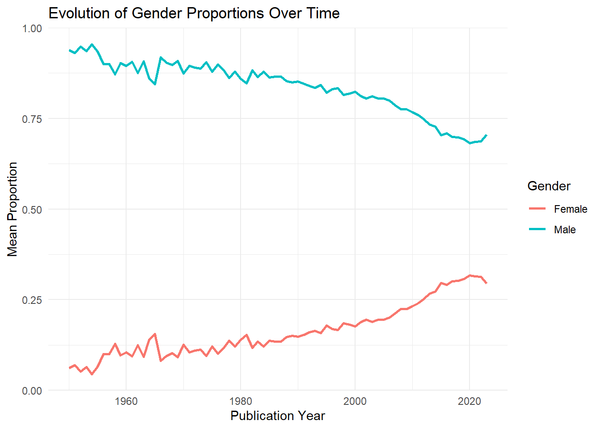
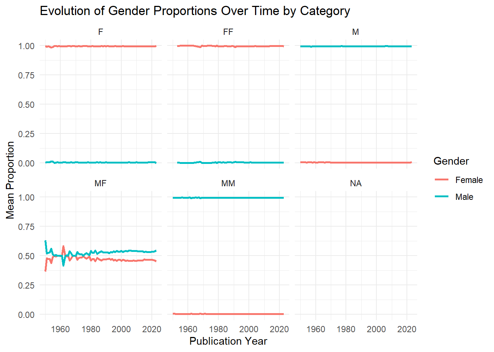
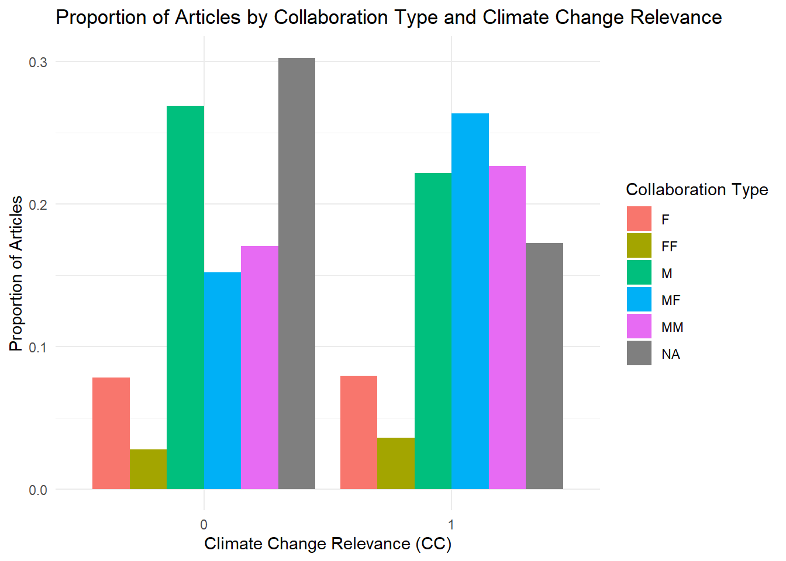
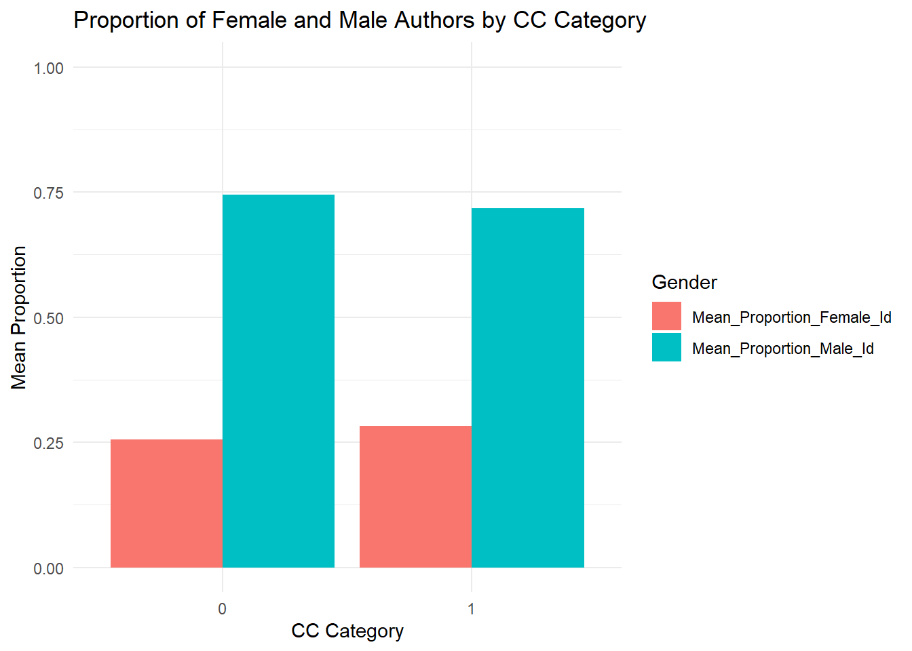
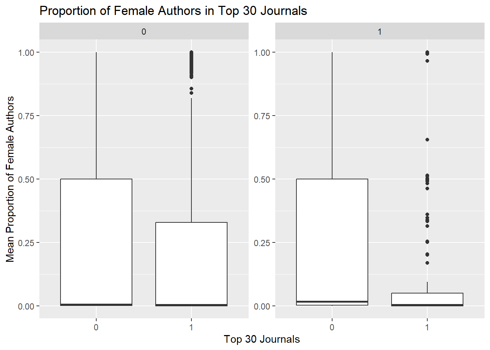
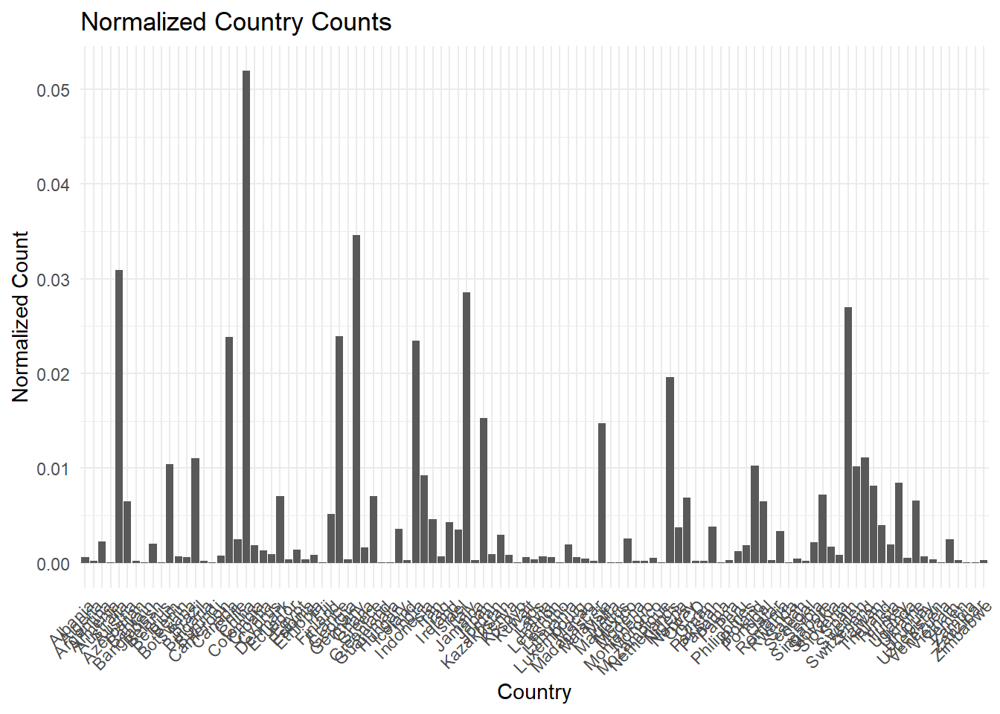

[1] 95589Quantifying interactions between economics of climate change, the rest of economics and other disciplines
Introduction
Gender disparities in scientific research remain a pressing issue, with significant impacts on the balanced development of the field. In particular, gender role positioning and educational restrictions continue to hinder equitable progress in scientific research. This study aims to provide a quantitative analysis of these gender disparities in economics, with a specific focus on climate change economics. The analysis aims at illustrating the gender gap in authorship in economics, by documenting its evolution through years and between journals.
Previous research has shown a dominance of male authors in quantity of articles and influence. Junwan Liu, Yinglu Song, and Sai Yang (2019), in their paper “Gender Disparities in the Field of Economics,” brings evidence of gender disparities in economics, while studying their disparities across countries, institutions, and journal levels. Their findings indicate geographical variations, and also revealed that the number of articles of both male and female authors decreases logarithmically with career age, while the influence of female authors tends to increase with longer careers due to higher qualifications.
Evidence also suggest that the publication process in economics is not gender neutral. For instance, David Card, Stefano Della Vigna, Patricia Funk, and Nagore Iriberri (2019), in their paper “Are Referees and Editors in Economics Gender Neutral?”, examined the role of gender in the evaluation of economic articles by referees and editors. They don’t find any effect of gender on the referee assessment. However, they highlight that female-authored papers get more citations than male-authored papers when considering differences in paper quality and field. Their main explanation is that referees impose higher standards to women authored articles.
Our research complements this literature using a larger bibliographic dataset, drawing from Web of Science and Scopus bibliographic databases, which includes information on more than 1.1 million articles published between 1950 and 2022 in peer-reviewed economic journals. Our analysis then distinguish articles focusing on climate-related issues and the rest of articles in economics. We aim at uncovering whether gender disparities between climate change economics and the rest of the economic literature is substantial. We also account for differences across journal levels and collaboration types. Our objective is to validate and extend previous findings within the niche of climate economics, thereby contributing to the understanding of gender inequalities in this crucial area of research.
Data cleaning and gender assignment algorithm
To accurately assess gender disparities in scientific research, we start by documenting our data preparation process to
Data Cleaning Process
Initially, we considered a sample of 60,000 observations, focusing on articles with 15 authors or fewer, which constitute 99.95% of the data set. For each article, we extracted in our initial data base all authors’ full names, names and first names. The cleaning process aimed to ensure compatibility with the “gender” package in R and involved several steps. We applied this cleaning for full names, first and last names. We first removed text in brackets, extraneous spaces, in particular those at the beginning and end of names and any letters followed by a period. In handling compound names, we retained only the first name. Finally, we replaced all accents with their unaccented equivalents. These steps ensured that the first names were in a suitable format for gender identification.
Gender Assignment Algorithm
After cleaning the data, we utilized the “gender” package in R to associate a gender and gender probabilities to any first name. To do so, we first create functions that compute gender probability for a given first name employing two methods: the “ssa” method, which uses data from the US Census List, and the “napp” method, which reallocates gender probabilities for names not identified by the “ssa” method. This dual-method approach resulted in a comprehensive data frame combining the results from both methods and giving, for each unique first name, the probability for the name to be female and male. This data frame finally gives all first names that for which we have an assigned gender probability.
We then developed an algorithm to assign a gender to each author’s first name, using four main databases: the final data frame from the previous gender probability assignment, a list of common Chinese first names, and lists of the top 10 male and female economists. This algorithm allows to create three new variables : a variable which attributes a gender to each first name and variables that give the probability for the first name to be male or female.
For the gender variable, the algorithm uses several conditional steps. This variable can take value NA, unknown, male or female. We first focus on the full name for each author in the algorithm to define the variable gender. If the full name is missing in our initial data base, the gender variable is set to NA. Otherwise, if the full name is in the list of top 10% of female economists, gender is set to female. Reciprocally, if full name is in the list of top 10% of male economists, gender is set to male. Then, we treat first name for each author in the algorithm to define the variable gender. If first name is missing in our initial data base, gender variable is set to NA. If first name is in the list of common chinese first name, gender is set to “unknown”. If first name is absent from the list of first names with measured gender probability (absent from the data frame that we created during the prevous step), gender is set to “unknown”. For recognized first names, if the probability of being male in this list was greater than 90%, the name was assigned “male”; if less than 10%, it was assigned “female”; if between 10% and 90%, the gender was marked as “undecided”.
Additionally, the algorithm created variables indicating the probability of each first name being male or female, only if gender is assigned. These variables are varying between 0 and 1 or take value NA. As for the gender variable, the algorithm first treat full names for each author and then first names. If the full name is missing from our initial data base, both probabilities are set to NA. If the full name is is the list of top 10% of female economists, the probability for the first name to be female is set to 1 and 0 for male. Reciprocally, if the full name is in the list of top 10% of male economists, the probability for the first name to be female is set to 0 and 1 for male. Then, we treat first name for each author in the algorithm to define probabilities gender. If a first name is missing from our initial data base, both probabilities were set to NA. If a first name appeared on the list of common Chinese names, both probabilities were also set to NA. If first name is absent from the list of first names with measured gender probability (absent from the data frame that we created during the previous step), both probabilities were set to NA. If the first name was found and recognized as “male” or “female,” the respective probabilities were assigned accordingly from the data frame assigning gender probabilities.
This comprehensive algorithm ensures a robust assignment of gender probabilities to each author’s first name, facilitating a detailed analysis of gender disparities in the field of climate economics.
Quality and limits of the algorithm
Having cleaned up the data and created our algorithm for assigning a gender to each existing first name, we now check the quality of our algorithm.
Comparison between total number of first names and first names with assigned gender before the use of an assignation gender algorithm
First and before constructing our algorithm, we can compare the total number of unique first names in our database with the total number of first names that can be correctly assigned to a gender. The latter is calculated using the data frame, which uses the “ssa” and “napp” methods to assign a gender to the first name.
We have 95,589 unique first names in our database. The total number of first names that can be assigned to a gender thanks to the “ssa” and “napp” method is 24 142. We therefore had roughly 75% of first names whose gender which could not be determined only using the SSA and NAPP methods, and which will not be recognized by these methods.
Indeed, unmatched first names appear to come from non-Western cultures. These first names are fairly rare and do not recur regularly in the articles, so they have little effect on matching. However, this is an important limitation in that we are not able to assign a gender probability to non-Western first names, insofar as those first names will be defined as “unknown” while using the list of common Chinese names in our algorithm. This limit omits a whole part of the analysis for non-Western first names and therefore introduces a significant selection bias. However, the construction of the algorithm as we did and especially the use of lists for top 10 male and female economists will help us to identify correctly a large part of those unidentified gender.
Analysis of gender assignment at article level
It is also possible to perform the analysis using the variable that gives, by article, the percentage of authors whose gender is correctly identified among the total number of authors.
Nb_articles NoGender AllGender Gender_Larger0.5 Gender_Larger0.9
1 1136055 0.2991554 0.4840074 0.6524684 0.4844765
Gender_Larger0.25 Mean_IdentifiedGender Median_identifiedGender
1 0.6949382 0.5986791 0.75Gender analysis at article level shows that around 30% of articles do not allow gender to be assigned to a single author. This indicates a significant difficulty in identifying the gender of a significant proportion of articles. On the other hand, for over 48% of articles, the gender of all authors is correctly identified. This majority proportion demonstrates a certain efficiency in gender assignment. For 65% of articles, it is possible to assign the gender to at least half of the authors. This shows that most articles have at least partial gender identification among their authors. Around half the articles allow gender to be assigned to 90% of the authors. This high proportion reflects almost complete gender identification for a significant proportion of articles, illustrating the effectiveness of the algorithms or methods used for gender assignment. Finally, for around 70% of the articles, it is possible to assign the gender to 25% of the authors. This figure indicates that, even in the most difficult cases, it is still possible to determine the gender of a proportion of authors, which may be sufficient for certain statistical analyses.
Descriptive statistics and data analysis
library(ggplot2)OneGender_by_Articles <- Corpus.CleanedNames.2 %>%
summarize(Nb_articles = length(ratio_identified_gender), # Nb total d'article
NoGender = length(ratio_identified_gender[is.na(ratio_identified_gender) | ratio_identified_gender == 0]) / Nb_articles)
OneGender_by_Articles Nb_articles NoGender
1 1136055 0.2991554First, we can remind that the absolute number of articles with at least 1 author identified in terms of gender is 1 136 055. Thus, there is at least 70% of our articles whose gender has been assigned to at least one author.
Overall Temporal evolution
# A tibble: 75 × 3
PY Mean_Proportion_Female_Id Mean_Proportion_Male_Id
<dbl> <dbl> <dbl>
1 1950 0.0614 0.939
2 1951 0.0697 0.930
3 1952 0.0523 0.948
4 1953 0.0642 0.936
5 1954 0.0454 0.955
6 1955 0.0656 0.934
7 1956 0.100 0.900
8 1957 0.100 0.900
9 1958 0.128 0.872
10 1959 0.0971 0.903
# ℹ 65 more rowsWarning: Removed 2 rows containing missing values or values outside the scale range
(`geom_line()`).
This section presents the evolution of the average proportion of female and male authors in academic publications, from 1950 to 2023. It reveals significant trends over several decades, highlighting gender dynamics in academic research.
From 1950 to 1970, the average proportion of female authors remained remarkably low, hovering around 0.06. During this period, male authors largely dominated publications, with proportions approaching 0.94. This disparity underlines the predominance of men in the academic field at the time.
Between 1970 and 1990, a slight increase in the proportion of female authors was observed, rising from around 0.12 to 0.15. This period marks the beginning of a gradual change, although men continue to represent a substantial majority.The increase remains modest, but indicates a trend towards gender diversification among academic authors.
From the 1990s onwards, the average proportion of female authors began to rise more significantly. By 1995, this proportion had risen to around 0.18, indicating greater inclusion of women in academic publications. This trend has continued steadily, with the proportion reaching around 0.30 in 2017. At the same time, the average proportion of male authors is gradually decreasing, but remains dominant.
Since 2017, the average proportion of female authors has exceeded 0.30, reaching 0.32 in 2020. This growth indicates increasing gender parity, although men continue to constitute a relative majority with an average proportion around 0.68. Recent years have seen a stabilization of these proportions, with slight fluctuations.
In conclusion, this section illustrates a positive trend towards greater inclusion of women in academic research over the decades. Although men are still in the majority, the continuing growth in the proportion of female authors bears witness to a gradual shift towards more balanced gender representation in scientific publications.
Temporal evolution according to categorical variables
# A tibble: 435 × 4
PY category_gender Mean_Proportion_Female_Id Mean_Proportion_Male_Id
<dbl> <chr> <dbl> <dbl>
1 1950 F 0.997 0.00276
2 1950 M 0.00617 0.994
3 1950 MF 0.366 0.634
4 1950 MM 0.00694 0.993
5 1950 <NA> NaN NaN
6 1951 F 0.992 0.00819
7 1951 M 0.00611 0.994
8 1951 MF 0.479 0.521
9 1951 MM 0.00610 0.994
10 1951 <NA> NaN NaN
# ℹ 425 more rowsWarning: Using `size` aesthetic for lines was deprecated in ggplot2 3.4.0.
ℹ Please use `linewidth` instead.Warning: Removed 152 rows containing missing values or values outside the scale range
(`geom_line()`).
This section provides an analysis of the evolution of average author proportions by gender from 1950 to 2023, and highlights significant dynamics in academic collaborations.
Analysis of gender proportions in mixed collaborations (MF) from 1950 to 2023 reveals that in 1950, female authors represented an average of 37% of mixed teams, compared with 63% for male authors. This male dominance persisted until the 1960s. In the 1970s, the average proportion of female authors reached 48%, marking progress towards greater integration of women. From the 2000s onwards, the proportion of women authors continued to rise, although at just under 46%, reflecting a positive trend towards greater parity.
The data thus show a gradual integration of women into mixed collaborations, indicating steady progress towards gender parity in academic research, despite the persistence of a slight male majority.
Temporal evolution according to categorical variables, by number of articles
`summarise()` has grouped output by 'PY'. You can override using the `.groups`
argument.# A tibble: 435 × 3
# Groups: PY [75]
PY category_gender nb_articles
<dbl> <chr> <int>
1 1950 F 27
2 1950 M 491
3 1950 MF 12
4 1950 MM 33
5 1950 <NA> 368
6 1951 F 35
7 1951 M 525
8 1951 MF 6
9 1951 MM 21
10 1951 <NA> 365
# ℹ 425 more rowsWarning: Removed 6 rows containing missing values or values outside the scale range
(`geom_line()`).Warning: Removed 6 rows containing missing values or values outside the scale range
(`geom_point()`).
Analysis of data on the number of articles by gender category from 1950 to 2021 reveals some interesting, albeit nuanced, trends. In 1950, the “M” category (exclusively male) dominated, with 491 articles. The “F” (all-female) and “MF” (mixed) categories accounted for 27 and 12 items respectively.
In subsequent years, trends changed significantly. For example, in 1960, although the “M” category remained dominant with 381 items, the “F” and “MM” categories showed an increase compared to 1950. However, missing data also began to appear more pronounced.
The 1970s mark a notable change, with a significant increase in the number of articles in all categories, including a notable rise in missing data. The “F” category began to show gradual growth, reaching 130 articles in 1970.
From the 2000s onwards, all categories see a marked increase in the number of articles, reflecting a global expansion of academic research. The “MF” (mixed collaboration) category grows particularly rapidly, peaking in 2021 with 16,267 articles, but missing data also increases drastically.
In conclusion, these data illustrate not only the quantitative expansion of scientific research over the decades, but also changes in the gendered composition of research teams, with a significant increase in mixed collaboration. However, it is crucial to take into account the impact of missing data, which can influence the interpretation of these upward trends.
Analysis of articles on climate change at an aggregate level
# A tibble: 2 × 5
CC Mean_Proportion_Female_Id Median_Proportion_Fem…¹ Mean_Proportion_Male…²
<dbl> <dbl> <dbl> <dbl>
1 0 0.255 0.00505 0.745
2 1 0.283 0.016 0.717
# ℹ abbreviated names: ¹Median_Proportion_Female_Id, ²Mean_Proportion_Male_Id
# ℹ 1 more variable: Median_Proportion_Male_Id <dbl>
Analysis of the data on articles relating to climate change, grouped according to the binary variable “CC” (climate change), reveals notable differences in the gendered composition of authors.
Looking at the descriptive statistics, we see that in the category where the theme of climate change is central (“CC = 1”), the average proportion of female authors is slightly higher than in the “CC = 0” category. In detail, the average proportion of female authors is 28.29% in the “CC = 1” category, compared with 25.53% in the “CC = 0” category. On the other hand, the “CC = 0” category shows a greater predominance of male authors, with an average of 74.47%, compared to the “CC = 1” category where the average is 71.71%.
These results highlight a distinct gendered distribution in climate change-related publications, with a predominance of male authors in both categories but more female authors in articles that focus on climate change, thus indicating varied dynamics in gender participation depending on the specific research theme.
Climate change, category gender and number of articles
# A tibble: 12 × 3
CC category_gender nb_articles
<dbl> <chr> <int>
1 0 F 86249
2 0 FF 30631
3 0 M 296893
4 0 MF 167934
5 0 MM 188404
6 0 <NA> 334413
7 1 F 2503
8 1 FF 1131
9 1 M 6994
10 1 MF 8310
11 1 MM 7149
12 1 <NA> 5444
Analysis of the data on the number of articles relating to climate change, represented by the binary variable “CC” (climate change) and the gender category, reveals some interesting trends in the distribution of publications.
Looking at the descriptive statistics, we observe a marked disparity in the number of articles published according to gender category and type of scientific research. In the “CC = 0” category (not focused on climate change), the distribution of articles by gender is significantly different from that observed in the “CC = 1” category (focused on climate change).
For the “CC = 0” category, which does not deal specifically with climate change, the data show a significant predominance of articles attributed to the masculine (296,893 articles) and feminine (86,249 articles) genders, followed by mixed gender combinations (167,934 articles for MF, 188,404 articles for MM). In contrast, the “CC = 1” category shows lower overall articles numbers, with a similar trend of male predominance, but with a slightly higher proportion of items attributed to mixed gender combinations (8,310 articles for MF, 7,149 articles for MM). Analysis of the number of articles by genre category therefore reveals that, despite the lower overall quantity of articles in the “CC = 1” category, mixed-genre combinations account for a significant share compared with the other categories, underlining an increased diversity in scientific collaborations focused on climate change.
Modèle économétrique de citations
Construire un modèle qui permet de déterminer s’il existe un effet de l’autorat féminin sur les citations des articles de recherches. Il est également possible de saisir le rôle du changement climatique (est-ce que les articles associés au changement climatiques sont plus cités que le reste des articles en économie?).
- explorer les données de citations: plusieurs variables existent (regarder le dictionnaire de variables, je crois qu’il y en a au moins 3). Regarder le degré de corrélation entre toutes ces mesures de citation, regarder également les valeurs manquantes afin de choisir laquelle des variables de citation choisir.
CR (Cited References) et NR (Cited References Count): ne son plus dans la base de données, pourtant il s’agit je pense de variables importantes
TC : Web of Sciences Core Collection Times Cited Count.
na_TC <- sum(is.na(Corpus.CleanedNames.2$TC))
print(na_TC)[1] 80208020 valeurs manquantes sur 1 136 055 soit seulement 0.7%.
- Z9 : Total Times Cited Count
na_Z9 <- sum(is.na(Corpus.CleanedNames.2$Z9))
print(na_Z9)[1] 460866460 866 valeurs manquantes sur 1 136 055 soit 40.5%
- U1 et U2 peuvent être des variables intéressantes mais je ne comprends pas vraiment à quoi elles font référence.U2 citations entre 2013 et 2023
na_U1 <- sum(is.na(Corpus.CleanedNames.2$U1))
print(na_U1)[1] 460865460 865 valeurs manquantes sur 1 136 055 soit 40.5%
na_U2 <- sum(is.na(Corpus.CleanedNames.2$U2))
print(na_U2)[1] 460866460866 valeurs manquantes sur 1 136 055 soit 40.5%
Mêmes chiffres pour U1,U2 et Z9 donc il s’agit peut-être des mêmes articles à chaque fois dont les valeurs sont manquantes pour ces 3 variables. TC semble être la meilleure variable à utiliser étant donné son faible nombre de donnnées manquantes.
- Lire les deux articles déposés sur la dropbox (cliquer ici pour le lien). L’article de Nature est très descriptif et possiblement en décalage (la question des premiers auteurs ne se posent pas en économie, car l’ordre des auteurs est quasi systématiquement l’ordre alphabétique). L’article dans la revue de sciences sociale est vraiment pas mal pour situer la question, et voir une approche (l’article fait aussi une bonne revue de litté qui peut être utile si tu cherches d’autres méthodes/références pour t’inspirer).
Global gender disparities in science (R. Sugimoto) = global and cross-disciplinary analysis of gender inequalties in research output
Constats:
- Differences in productivity: men publish more papers than women, especially in areas in which research is expensive.
- Citations: Women are more cited especially in fields with greater career risks such as ecology.
Methodology:
Analysis of the relationship between gender and research output (proxy = authorship on published papers);
Analysis of the extent of collaboration (proxy = co-authorships);
Analysis of scientific impact of articles published between 2008 and 2012 indexed in Web of Science databases (proxy = citations).
Observations: 5,483,841 research papers and review articles with 27,329,915 authorships.
Gender assignment: using data from the US Social Security database
Proportion of each gender’s output by comparing the proportion of identified authorships for each gender on any given paper.These gendered fractions were then aggregated at the levels of countries and disciplines.
Results:
Women account for fewer than 30% of fractionalized authorships.
Geographical disparities: research output is dominated by male authors in nearly every country. Communists states have greater gender parity. Countries with lower research output concentrate female dominance. South American and Eastern European countries demonstrate greater gender parity.
In the most productive countries, all articles with women in dominant author positions receive fewer citations than those with men in the same positions
Women profit less from the extra citations that international collaborations accrue.
Women publish more in fields related to “care” whereas men publish more in fields related to economics or high-energy physics.
Collaboration: Women are less likely to participate in collaborations that lead to publication as well as international collaborations: female collaborations are more domestically oriented than are the collaborations of males from the same country.
Limits
Age which could play a crucial role in explaining gender differences in scientific output
The analysis of first authors insofar as authors are listed alphabetically.
A rare case of Gender Parity in Academia (B.Lynn, C.Noonan, M.Sauder)
Context: The study explores the gender gap in academic citations, focusing on the reasons behind the absence of a significant gender gap in this specific context and controlling for citations predictors.
Citation information has played an increasingly explicit role in the way that scholars and administrative bodies measure “research achievement” + the fact of attracting their peers.
Analysis: Estimate the effect of author gender on citations.Questions:
To what extent do female- and male-led publications exhibit similar characteristics in terms of citation predictors?
Do comparable male- and female-led publications attract a comparable number of citations?
How important is author gender overall relative to other citation predictors?
Reasons of this analysis:
Gender could be significantly correlated with one of the abovementioned citation predictors, such as producer expertize, authority, or visibility.
Audience could discriminate directly on the basis on author gender when allocating citations, in which case author gender would predict citation counts even if publications were otherwise comparable
Other interesting bibliography
Aksnes et al. (2011) - Research area = Biology and environmental sciences. Results = Female penalty
Methodology
Data Sample: Analysis of approximately 10,000 publications across economics, political science, sociology and regional journals.
Citation counts = number of citations accruing to each focal article (as indexed by WoS) from the publication date through December 2013. Citation trajectories thus range from 10 to 30 years, depending on when the article was published.
Sales-Pardo, and Amaral (2010) argue that for the vast majority of journals, publications generally accumulate the bulk of their citations within roughly ten years of publication. They thus recommend that citation studies focus on publication cohorts that are at least a decade old.
Citation predictors
The number of citations can be shaped by characteristics = citation predictors : the product (the article, the journal), the producers (the popularity of authors, marketing), market size and the audience (scholarly peers, the field / discrimination)
Market size proxies:
First proxy = subfields = they classify each referenced journal by its field according to Journal Citation Reports (JCR).
Second proxy = the “uniqueness” of the work cited in the focal article regarding the sources cited. They expect that this variable is negatively correlated with total citation counts, as too many unconventional sources could indicate that the article (a) focuses on a non-conventional topic (and thus has a smaller audience) or (b) is perceived by the audience as unpersuasive.
Producer Expertize, Authority and Visibility
Median publication year of all references: negatively correlated with citations receivedProportion of References to Unpublished Sources in the Focal Article divided by the total number of references: positively correlated with citations received
Focal Author(s) Institutional Prestige: author’s institutional affiliation at the time of publication matched with the 1990 National Research Council’s departmental prestige rankings: positively correlated with citations received.
Focal Author(s) Flagship Journal Appearances: the number of times a researcher publishes in his/her discipline’s top journals is used as a proxy for scholarly visibility and expertize: positively correlated with citations received.
Presence of Self-Citation: proxy for self-promotion. Self-citation is measured as the presence of at least one self-citation in the focal article.
Control Variables: article type, articles are either single or multipled authors, number of pages and number of references
Results:
OLS results = no significant gender gap in terms of the number of logged citations. When male and female authors publish articles that are comparably positioned to receive citations, their publications accrue citations at the same rate.
Results of predictors: the estimated effects of the other citation predictors are generally in the expected direction
It highlights two mechanisms: commitment bias and self-selection, which are often activated in other professional outcomes but seem irrelevant or muted in the case of citations.
- Il va falloir ensuite faire des modèles économétriques et diagnostiquer les résultats. Il ya plusieurs points qui vont être problématique: beaucoup d’articles avec 0 citation, beaucoup de journaux avec peu d’articles. Une solution possible est de ne garder qu’un sous échantillon de journaux stable sur tout l’échantillon. Il y aura alors des allers retours récurrents entre une spécification économétrique, une interprétation de résultat, puis une modification de l’échantillon ou du modèle pour aboutir à quelques choses qui semble satisfaisant.
L’idée est de viser un modèle de ce type:
$C_{i,j,t} = _0 + _j + _t + F_i + *1* NAUTH{i} + *k X_k +* $
- \(C_{i,j,t}\) sont les citations reçues par l’article i publié dans le journal \(j\) à l’année \(t\) = TC
-alpha_0 = constante
- \(\delta_j\) un effet fixe journal = TI
- \(\mu_t\) un effet fixe année (sinon, possible d’estimer sans effet fixe année, mais en mesurant les citations divisés par l’âge de l’article = une mesure du nombre moyen de citations reçues par l’article chaque année depuis sa publication) = PY
- \(F_i\) la variable mesurant la part d’autorat féminin (ou bien à combiner avec n’importe quel autre variable d’intérêt, les articles qui traitent du changement climatique, les différentes combinaisons de genre de collaborations) = proportion_gender_female_id / CC
- puis intégrer des variables de contrôle = nombre de journaux = PG / nombre auteurs = nb_authors
-> ne pas s’inquiéter si les résultats ne sont pas significatifs. D’après un rapide regard, cela semble normal d’après la littérature de ne pas remarquer une différence moyenne de citation selon le genre. L’idée est surtout de tester différents modèles et de les comparer.
Une ressource possiblement utile: Le cours d’économétrie de Sciences Po en ligne(cliquer ici)[https://scpoecon.github.io/ScPoEconometrics/panel-data.html]. Avec pas mal de commandes de base sur R, il est plutot bien fait pour s’introduire à l’économétrie. JE pense que c’est une bonne première base. Si tu veux aller plus loin, dis moi et je peux te filer d’autres manuels ou supports. Tu peux essayer d’appliquer leur exercice d’analyse du crime dans les comtés américains par année. Ici nous c’est l’analyse du genre dans les journaux d’économie et par année. Je pense qu’il faut voir le journal/la revue comme l’équivalent du comté, et ensuite chaque article est comme un crime (avec dans notre cas des caractéristiques dont on cherche à évaluer le rôle: dont notamment le genre des auteurs.) Les modèles que l’on cherche à faire sont ceux de la “dummy variable regression” ou aussi de la “within transformation” (sur le site web). Qui sont deux approches parfaitement équivalentes (eles donnent les mêmes coefficient pour le \(\beta\) associé à la variable F).
library(dplyr)
library(lmtest)Le chargement a nécessité le package : zoo
Attachement du package : 'zoo'Les objets suivants sont masqués depuis 'package:data.table':
yearmon, yearqtrLes objets suivants sont masqués depuis 'package:base':
as.Date, as.Date.numeric# Prendre les 6000 premières lignes des données
sample_data <- Corpus.CleanedNames.2 %>%
slice_sample(n = 6000) %>%
filter(!is.na(PY))Effet fixe en facteurs
sample_data <- sample_data %>%
mutate(PY = as.factor(PY), # Effet fixe année
SO = as.factor(SO)) # Effet fixe journalCorpus.CleanedNames.2 <- Corpus.CleanedNames.2 %>%
mutate(PY = as.factor(PY), # Effet fixe année=PY
SO = as.factor(SO)) # Effet fixe journal=SOlevels_count1 <- sample_data %>%
summarise(PY_levels = n_distinct(TI),
SO_levels = n_distinct(SO))
print(levels_count1) PY_levels SO_levels
1 5939 1656levels_count <- Corpus.CleanedNames.2 %>%
summarise(PY_levels = n_distinct(PY),
SO_levels = n_distinct(SO))
print(levels_count) PY_levels SO_levels
1 75 1012775 années différentes et 10 127 journaux différents.
Citations et nombre de pages en numérique
sample_data$PG <- as.numeric(sample_data$PG)
sample_data$TC <- as.numeric(sample_data$TC)Corpus.CleanedNames.2$PG <- as.numeric(Corpus.CleanedNames.2$PG)
Corpus.CleanedNames.2$TC <- as.numeric(Corpus.CleanedNames.2$TC)Warning: NAs introduits lors de la conversion automatiqueRégression des citations sur l’effet fixe année, l’effet fixe journal, la proportion d’auteurs identifiées comme femme, avec comme variables de contrôle le nombre d’auteurs et de page par article
model_1 <- lm(TC ~ SO + PY + proportion_gender_female_id + PG + nb_authors, data = sample_data)
names(model_1$coefficients) [1] "(Intercept)"
[2] "SOAcademic Journal of Interdisciplinary Studies"
[3] "SOAcademy of Accounting and Financial Studies Journal"
[4] "SOAcademy of Entrepreneurship Journal"
[5] "SOAcademy of Marketing Studies Journal"
[6] "SOAccounting & Finance"
[7] "SOAccounting and Finance"
[8] "SOAccounting Forum"
[9] "SOACCOUNTING IN ASIA"
[10] "SOAccounting Research Journal"
[11] "SOAccounting Review"
[12] "SOAccounting, Auditing & Accountability Journal"
[13] "SOAccounting, Auditing and Accountability Journal"
[14] "SOACTA OECONOMICA"
[15] "SOActual Problems of Economics"
[16] "SOAdministration"
[17] "SOAdvances in Accounting"
[18] "SOAdvances in Consumer Research"
[19] "SOAdvances in Entrepreneurship, Firm Emergence and Growth"
[20] "SOADVANCES IN ENTREPRENEURSHIP, FIRM EMERGENCE AND GROWTH, VOL 7"
[21] "SOAdvances in International Accounting"
[22] "SOAdvances in the Study of Entrepreneurship, Innovation, and Economic Growth"
[23] "SOAfrican Economic History"
[24] "SOAFRICAN JOURNAL OF AGRICULTURAL AND RESOURCE ECONOMICS-AFJARE"
[25] "SOAfrican Journal of Business and Economic Research"
[26] "SOAFRICAN REVIEW OF ECONOMICS AND FINANCE-AREF"
[27] "SOAFTER THE GIG: How the Sharing Economy Got Hijacked and How to Win It Back"
[28] "SOAgBioForum"
[29] "SOAGENCY, CONTINGENCY AND CENSUS PROCESS: OBSERVATIONS OF THE 2006 INDIGENOUS ENUMERATION STRATEGY IN REMOTE ABORIGINAL AUSTRALIA"
[30] "SOAGENDA-A JOURNAL OF POLICY ANALYSIS AND REFORM"
[31] "SOAGING POPULATION, PENSION FUNDS, AND FINANCIAL MARKETS: REGIONAL PERSPECTIVES AND GLOBAL CHALLENGES FOR CENTRAL, EASTERN, AND SOUTHERN EUROPE"
[32] "SOAGRARIAN SEEDS OF EMPIRE: THE POLITICAL ECONOMY OF AGRICULTURE IN US STATE BUILDING"
[33] "SOAgribusiness"
[34] "SOAGRIBUSINESS"
[35] "SOAGRICULTURAL ADMINISTRATION"
[36] "SOAGRICULTURAL AND RESOURCE ECONOMICS REVIEW"
[37] "SOAGRICULTURAL AND RESOURCE POLICY: PRINCIPLES AND PRACTICE"
[38] "SOAGRICULTURAL DEVELOPMENT IN BRAZIL: THE RISE OF A GLOBAL AGRO-FOOD POWER"
[39] "SOAGRICULTURAL ECONOMICS"
[40] "SOAGRICULTURAL ECONOMICS-ZEMEDELSKA EKONOMIKA"
[41] "SOAgricultural Finance Review"
[42] "SOAGRICULTURAL FINANCE REVIEW"
[43] "SOAGRICULTURAL MANAGEMENT STRATEGIES IN A CHANGING ECONOMY"
[44] "SOAGRICULTURE AND ECOSYSTEM RESILIENCE IN SUB SAHARAN AFRICA: LIVELIHOOD PATHWAYS UNDER CHANGING CLIMATE"
[45] "SOAgris On-line Papers in Economics and Informatics"
[46] "SOAGRO-INDUSTRIES FOR DEVELOPMENT"
[47] "SOAIEL Series in Labour Economics"
[48] "SOALL FALL DOWN: DEBT, DEREGULATION AND FINANCIAL CRISES"
[49] "SOAlternative Lifestyles"
[50] "SOAMERICAN ECONOMIC JOURNAL-APPLIED ECONOMICS"
[51] "SOAMERICAN ECONOMIC JOURNAL-ECONOMIC POLICY"
[52] "SOAMERICAN ECONOMIC JOURNAL-MACROECONOMICS"
[53] "SOAMERICAN ECONOMIC JOURNAL-MICROECONOMICS"
[54] "SOAMERICAN ECONOMIC REVIEW"
[55] "SOAMERICAN ECONOMIC REVIEW-INSIGHTS"
[56] "SOAmerican Economist"
[57] "SOAmerican Journal of Agricultural Economics"
[58] "SOAMERICAN JOURNAL OF AGRICULTURAL ECONOMICS"
[59] "SOAmerican Journal of Economics and Sociology"
[60] "SOAMERICAN JOURNAL OF ECONOMICS AND SOCIOLOGY"
[61] "SOAMERICAN JOURNAL OF HEALTH ECONOMICS"
[62] "SOAMFITEATRU ECONOMIC"
[63] "SOANNALS OF ACTUARIAL SCIENCE"
[64] "SOAnnals of Finance"
[65] "SOANNALS OF FINANCIAL ECONOMICS"
[66] "SOAnnals of Public and Cooperative Economics"
[67] "SOANNALS OF PUBLIC AND COOPERATIVE ECONOMICS"
[68] "SOANNALS OF REGIONAL SCIENCE"
[69] "SOANNUAL REVIEW OF ECONOMICS, VOL 11, 2019"
[70] "SOANNUAL REVIEW OF ECONOMICS, VOL 2"
[71] "SOANNUAL REVIEW OF ECONOMICS, VOL 4"
[72] "SOANNUAL REVIEW OF FINANCIAL ECONOMICS"
[73] "SOANNUAL REVIEW OF FINANCIAL ECONOMICS, VOL 11"
[74] "SOANNUAL REVIEW OF FINANCIAL ECONOMICS, VOL 9"
[75] "SOANNUAL REVIEW OF RESOURCE ECONOMICS, VOL 10"
[76] "SOANNUAL REVIEW OF RESOURCE ECONOMICS, VOL 6"
[77] "SOANNUITIES AND OTHER RETIREMENT PRODUCTS: DESIGNING THE PAYOUT PHASE"
[78] "SOAntitrust Bulletin"
[79] "SOApplied Computer Science"
[80] "SOApplied Econometrics and International Development"
[81] "SOAPPLIED ECONOMIC ANALYSIS"
[82] "SOAPPLIED ECONOMIC PERSPECTIVES AND POLICY"
[83] "SOAPPLIED ECONOMICS"
[84] "SOAPPLIED ECONOMICS LETTERS"
[85] "SOApplied Economics Quarterly"
[86] "SOApplied Financial Economics"
[87] "SOApplied Financial Economics Letters"
[88] "SOApplied Health Economics and Health Policy"
[89] "SOAPPLIED HEALTH ECONOMICS AND HEALTH POLICY"
[90] "SOApplied Mathematical Finance"
[91] "SOAQUACULTURE ECONOMICS & MANAGEMENT"
[92] "SOARGUMENTA OECONOMICA"
[93] "SOASIA-PACIFIC JOURNAL OF ACCOUNTING & ECONOMICS"
[94] "SOAsia-Pacific Journal of Financial Studies"
[95] "SOAsia-Pacific Review"
[96] "SOAsia Pacific Journal of Management"
[97] "SOAsian-Pacific Economic Literature"
[98] "SOASIAN-PACIFIC ECONOMIC LITERATURE"
[99] "SOAsian‐Pacific Economic Literature"
[100] "SOAsian Affairs"
[101] "SOASIAN ECONOMIC JOURNAL"
[102] "SOASIAN ECONOMIC PAPERS"
[103] "SOASIAN ECONOMIC POLICY REVIEW"
[104] "SOASIAN FINANCIAL INTEGRATION: IMPACTS OF THE GLOBAL CRISIS AND OPTIONS FOR REGIONAL POLICIES"
[105] "SOAsian Review of Accounting"
[106] "SOAsian Social Science"
[107] "SOAStA Advances in Statistical Analysis"
[108] "SOASTIN Bulletin"
[109] "SOASTIN BULLETIN"
[110] "SOASTIN BULLETIN-THE JOURNAL OF THE INTERNATIONAL ACTUARIAL ASSOCIATION"
[111] "SOASYMMETRIES OF GLOBALIZATION"
[112] "SOAtlantic Economic Journal"
[113] "SOAUCTION THEORY, 2ND EDITION"
[114] "SOAUSTRALIAN AGRIBUSINESS REVIEW"
[115] "SOAUSTRALIAN ECONOMIC HISTORY REVIEW"
[116] "SOAUSTRALIAN ECONOMIC PAPERS"
[117] "SOAustralian Economic Review"
[118] "SOAUSTRALIAN ECONOMIC REVIEW"
[119] "SOAUSTRALIAN JOURNAL OF AGRICULTURAL AND RESOURCE ECONOMICS"
[120] "SOAUSTRALIAN JOURNAL OF AGRICULTURAL ECONOMICS"
[121] "SOAUSTRIAN ECONOMICS IN TRANSITION: FROM CARL MENGER TO FRIEDRICH HAYEK"
[122] "SOAVIATION SYSTEMS: MANAGEMENT OF THE INTEGRATED AVIATION VALUE CHAIN"
[123] "SOB E JOURNAL OF ECONOMIC ANALYSIS & POLICY"
[124] "SOB E JOURNAL OF MACROECONOMICS"
[125] "SOB.E. Journal of Economic Analysis and Policy"
[126] "SOBALTIC JOURNAL OF ECONOMIC STUDIES"
[127] "SOBALTIC JOURNAL OF ECONOMICS"
[128] "SOBanking Law Journal"
[129] "SOBANKING SECRECY AND GLOBAL FINANCE: ECONOMIC AND POLITICAL ISSUES"
[130] "SOBanks and Bank Systems"
[131] "SOBEFORE AND AFTER THE ECONOMIC CRISIS: WHAT IMPLICATIONS FOR THE EUROPEAN SOCIAL MODEL"
[132] "SOBEFORE AND BEYOND THE GLOBAL ECONOMIC CRISIS: ECONOMICS, POLITICS AND SETTLEMENT"
[133] "SOBEHAVIORAL ECONOMICS FOR COST-BENEFIT ANALYSIS: BENEFIT VALIDITY WHEN SOVEREIGN CONSUMERS SEEM TO MAKE MISTAKES"
[134] "SOBELL JOURNAL OF ECONOMICS"
[135] "SOBEYOND MECHANICAL MARKETS: ASSET PRICE SWINGS, RISK, AND THE ROLE OF THE STATE"
[136] "SOBIG PICTURE REALITIES: CANADA AND MEXICO AT THE CROSSROADS"
[137] "SOBIO-BASED AND APPLIED ECONOMICS"
[138] "SOBIOTECHNOLOGY AND AGRICULTURAL DEVELOPMENT: TRANSGENIC COTTON, RURAL INSTITUTIONS AND RESOURCE-POOR FARMERS"
[139] "SOBorsa Istanbul Review"
[140] "SOBORSA ISTANBUL REVIEW"
[141] "SOBRAZILIAN ECONOMY TODAY: TOWARDS A NEW SOCIO-ECONOMIC MODEL?"
[142] "SOBREXIT AND THE POLITICAL ECONOMY OF IRELAND: Creating a New Economic Settlement"
[143] "SOBREXIT NEGOTIATIONS AFTER ARTICLE 50: ASSESSING PROCESS, PROGRESS AND IMPACT"
[144] "SOBRIDGING THE GLOBAL DIGITAL DIVIDE"
[145] "SOBRIDGING THE PROSPERITY GAP IN THE EU: THE SOCIAL CHALLENGE AHEAD"
[146] "SOBRITISH FOOD JOURNAL"
[147] "SOBritish Tax Review"
[148] "SOBROOKINGS PAPERS ON ECONOMIC ACTIVITY"
[149] "SOBRQ Business Research Quarterly"
[150] "SOBUILDING A SUSTAINABLE AND DESIRABLE ECONOMY-IN-SOCIETY-IN-NATURE"
[151] "SOBULLETIN FOR INTERNATIONAL FISCAL DOCUMENTATION"
[152] "SOBulletin of Economic Research"
[153] "SOBULLETIN OF INDONESIAN ECONOMIC STUDIES"
[154] "SOBusiness and Economic Horizons"
[155] "SOBUSINESS AND ECONOMIC HORIZONS"
[156] "SOBusiness and Professional Communication Quarterly"
[157] "SOBusiness and Professional Ethics Journal"
[158] "SOBusiness Communication Quarterly"
[159] "SOBusiness Economics"
[160] "SOBusiness Ethics"
[161] "SOBusiness Ethics Quarterly"
[162] "SOBusiness Ethics, Environment and Responsibility"
[163] "SOBusiness Informatics"
[164] "SOBusiness Information Review"
[165] "SOBusiness Strategy and Development"
[166] "SOBusiness Strategy Review"
[167] "SOBusiness Systems Research"
[168] "SOBusiness Week"
[169] "SOBUYING HAPPINESS: THE EMERGENCE OF CONSUMER CONSCIOUSNESS IN ENGLISH CANADA"
[170] "SOCambridge Journal of Economics"
[171] "SOCAMBRIDGE JOURNAL OF ECONOMICS"
[172] "SOCAMBRIDGE JOURNAL OF REGIONS ECONOMY AND SOCIETY"
[173] "SOCANADIAN FARM ECONOMICS"
[174] "SOCANADIAN JOURNAL OF AGRICULTURAL ECONOMICS-REVUE CANADIENNE D AGROECONOMIE"
[175] "SOCanadian Journal of Agricultural Economics/Revue canadienne d'agroeconomie"
[176] "SOCANADIAN JOURNAL OF ECONOMICS-REVUE CANADIENNE D ECONOMIQUE"
[177] "SOCANADIAN JOURNAL OF ECONOMICS & POLITICAL SCIENCE"
[178] "SOCANADIAN POLICY DEBATES AND CASE STUDIES IN HONOUR OF DAVID LAIDLER"
[179] "SOCANADIAN PUBLIC POLICY-ANALYSE DE POLITIQUES"
[180] "SOCapital & Class"
[181] "SOCapital and Class"
[182] "SOCAPITALIZATION OF KNOWLEDGE: A TRIPLE HELIX OF UNIVERSITY-INDUSTRY-GOVERNMENT"
[183] "SOCAR TOURISM"
[184] "SOCASINO CAPITALISM: WITH A NEW INTRODUCTION BY MATTHEW WATSON"
[185] "SOCato Journal"
[186] "SOCENTRAL EUROPEAN JOURNAL OF ECONOMIC MODELLING AND ECONOMETRICS"
[187] "SOCepal Review"
[188] "SOCEPAL REVIEW"
[189] "SOCESifo DICE Report"
[190] "SOCESIFO ECONOMIC STUDIES"
[191] "SOCESifo Forum"
[192] "SOCHALLENGE OF ECONOMIC REBALANCING IN EUROPE: PERSPECTIVES FOR CESEE COUNTRIES"
[193] "SOCHALLENGE OF LIBERTY: CLASSICAL LIBERALISM TODAY"
[194] "SOCHANGING ECONOMIC GEOGRAPHY OF GLOBALIZATION"
[195] "SOCHINA'S ECONOMIC MIRACLE: DOES FDI MATTER"
[196] "SOCHINA'S WHITE-COLLAR WAVE: SERVICE INDUSTRY TRENDS"
[197] "SOCHINA-U.S. TRADE WAR AND FUTURE ECONOMIC RELATIONS"
[198] "SOCHINA & WORLD ECONOMY"
[199] "SOCHINA AGRICULTURAL ECONOMIC REVIEW"
[200] "SOCHINA AND INDIA: OPPORTUNITIES AND THREATS FOR THE GLOBAL SOFTWARE INDUSTRY"
[201] "SOCHINA AND THE WORLD ECONOMY"
[202] "SOCHINA ECONOMIC JOURNAL"
[203] "SOChina Economic Review"
[204] "SOCHINA ECONOMIC REVIEW"
[205] "SOChina Finance and Economic Review"
[206] "SOChina Information"
[207] "SOCHINA VERSUS THE WEST: THE GLOBAL POWER SHIFT OF THE 21ST CENTURY"
[208] "SOCHINAS POST-REFORM ECONOMY: ACHIEVING HARMONY, SUSTAINING GROWTH"
[209] "SOCHINESE ECONOMIC TRANSFORMATION: VIEWS FROM YOUNG ECONOMISTS"
[210] "SOCHOICE: COOPERATION, ENTERPRISE, AND HUMAN ACTION"
[211] "SOCity, Culture and Society"
[212] "SOClean Technologies and Environmental Policy"
[213] "SOCLIMATE CHANGE AND HEALTH: IMPROVING RESILIENCE AND REDUCING RISKS"
[214] "SOCLIMATE JUSTICE AND THE ECONOMY: SOCIAL MOBILIZATION, KNOWLEDGE AND THE POLITICAL"
[215] "SOCLIMATE SMART AGRICULTURE IN SOUTH ASIA: TECHNOLOGIES, POLICIES AND INSTITUTIONS"
[216] "SOClinicoEconomics and Outcomes Research"
[217] "SOCOGENT ECONOMICS & FINANCE"
[218] "SOCOMING OF AGE OF INFORMATION TECHNOLOGIES AND THE PATH OF TRANSFORMATIONAL GROWTH: A LONG-RUN PERSPECTIVE ON THE LATE 2000S RECESSION"
[219] "SOCOMMON INNOVATION: HOW WE CREATE THE WEALTH OF NATIONS"
[220] "SOCommunications for Statistical Applications and Methods"
[221] "SOComparative Economic Research"
[222] "SOCOMPARATIVE ECONOMIC RESEARCH-CENTRAL AND EASTERN EUROPE"
[223] "SOCOMPARATIVE ECONOMIC STUDIES"
[224] "SOCOMPETING FOR KNOWLEDGE: CREATING, CONNECTING AND GROWING"
[225] "SOCOMPETITION & CHANGE"
[226] "SOCOMPETITION IN SOCIALIST SOCIETY"
[227] "SOCOMPETITION LAW AND ECONOMIC REGULATION: ADDRESSING MARKET POWER IN SOUTHERN AFRICA"
[228] "SOCOMPETITION POLICY AND THE ECONOMIC APPROACH: FOUNDATIONS AND LIMITATIONS"
[229] "SOCompetitive Intelligence Review"
[230] "SOComputational Economics"
[231] "SOCOMPUTATIONAL ECONOMICS"
[232] "SOConflict Management and Peace Science"
[233] "SOCONFRONTING CORRUPTION, BUILDING ACCOUNTABILITY: LESSONS FROM THE WORLD OF INTERNATIONAL DEVELOPMENT ADVISING"
[234] "SOConstitutional Political Economy"
[235] "SOCONSUMER-DRIVEN DEMAND AND OPERATIONS MANAGEMENT MODELS: A SYSTEMIC STUDY OF INFORMATION-TECHNOLOGY-ENABLED SALES MECHANISMS"
[236] "SOConsumption Markets and Culture"
[237] "SOContemporary Accounting Research"
[238] "SOContemporary Economic Policy"
[239] "SOCONTEMPORARY ECONOMIC POLICY"
[240] "SOCONTEMPORARY ECONOMICS"
[241] "SOContributions to Economics"
[242] "SOContributions to Political Economy"
[243] "SOCOPAYMENTS AND THE DEMAND FOR PRESCRIPTION DRUGS"
[244] "SOCOPING WITH CRISIS: GOVERNMENT REACTIONS TO THE GREAT RECESSION"
[245] "SOCORRUPTION AND THE RUSSIAN ECONOMY: HOW ADMINISTRATIVE CORRUPTION UNDERMINES ENTREPRENEURSHIP AND ECONOMIC OPPORTUNITIES"
[246] "SOCorvinus Journal of Sociology and Social Policy"
[247] "SOCOST AND MANAGEMENT"
[248] "SOCREATING SHARED VALUE: IMPACTS OF NESTLE IN MOGA, INDIA"
[249] "SOCREATION OF THE EAST TIMORESE ECONOMY, VOL 2: BIRTH OF A NATION"
[250] "SOCREATIVE DESTRUCTION: ECONOMIC CRISES AND DEMOCRACY IN LATIN AMERICA"
[251] "SOCRISIS AND CONTRADICTION: MARXIST PERSPECTIVES ON LATIN AMERICA IN THE GLOBAL POLITICAL ECONOMY"
[252] "SOCritical Perspectives on Accounting"
[253] "SOCROATIAN OPERATIONAL RESEARCH REVIEW"
[254] "SOCuadernos de Administracion"
[255] "SOCUADERNOS DE ECONOMIA"
[256] "SOCULTURE, CAPITAL AND REPRESENTATION"
[257] "SOCURRENCIES, CAPITAL FLOWS AND CRISES: A POST KEYNESIAN ANALYSIS OF EXCHANGE RATE DETERMINATION"
[258] "SOCURRENCY OF POWER: THE IMF AND MONETARY REFORM IN CENTRAL ASIA"
[259] "SOCUSTOS E AGRONEGOCIO ON LINE"
[260] "SOCyprus Review"
[261] "SOCZECH AND SLOVAK REPUBLICS: Twenty Years of Independence, 1993-2013"
[262] "SOCzech Economic Review"
[263] "SODANCING WITH GIANTS: CHINA, INDIA, AND THE GLOBAL ECONOMY"
[264] "SODebatte"
[265] "SODecisions in Economics and Finance"
[266] "SODEFENCE AND PEACE ECONOMICS"
[267] "SODesarrollo y Sociedad"
[268] "SODEVELOPMENT MACROECONOMICS, 3RD EDITION"
[269] "SODEVELOPMENT OF CAPITALISM IN RUSSIA"
[270] "SODIFFERENTIAL INFORMATION ECONOMIES"
[271] "SODISTORTED TIME PREFERENCES AND STRUCTURAL CHANGE IN THE ENERGY INDUSTRY: A THEORETICAL AND APPLIED ENVIRONMENTAL-ECONOMIC ANALYSIS"
[272] "SODISTRIBUTION OF WEALTH - GROWING INEQUALITY?"
[273] "SODLSU Business and Economics Review"
[274] "SODOING BUSINESS IN CAMEROON: AN ANATOMY OF ECONOMIC GOVERNANCE"
[275] "SODRIVERS OF ENVIRONMENTAL CHANGE IN UPLANDS"
[276] "SODYNAMIC ECONOMETRICS FOR EMPIRICAL MACROECONOMIC MODELLING"
[277] "SODynamic Games and Applications"
[278] "SODYNAMIC GROWTH OF CHINESE FIRMS IN THE GLOBAL MARKET: Challenges, Strategies, and Implications"
[279] "SOE & M EKONOMIE A MANAGEMENT"
[280] "SOEARTHLY DELIGHTS: ECONOMIES AND CULTURES OF FOOD IN OTTOMAN AND DANUBIAN EUROPE, C. 1500-1900"
[281] "SOEAST ASIAN ECONOMIC REVIEW"
[282] "SOEastern Economic Journal"
[283] "SOEASTERN ECONOMIC JOURNAL"
[284] "SOEastern Journal of European Studies"
[285] "SOEcological Economics"
[286] "SOECOLOGICAL ECONOMICS"
[287] "SOECON JOURNAL WATCH"
[288] "SOECONOMETRIC MODELLING WITH TIME SERIES: SPECIFICATION, ESTIMATION AND TESTING"
[289] "SOEconometric Reviews"
[290] "SOECONOMETRIC REVIEWS"
[291] "SOEconometric Theory"
[292] "SOECONOMETRIC THEORY"
[293] "SOECONOMETRICA"
[294] "SOECONOMETRICS AND STATISTICS"
[295] "SOECONOMETRICS INFORMING NATURAL RESOURCES MANAGEMENT: SELECTED EMPIRICAL ANALYSES"
[296] "SOECONOMETRICS JOURNAL"
[297] "SOEconomiA"
[298] "SOEconomia e Politica Industriale"
[299] "SOECONOMIA POLITICA"
[300] "SOECONOMIC ANALYSIS AND POLICY"
[301] "SOECONOMIC AND FINANCIAL CRISES: A NEW MACROECONOMIC ANALYSIS"
[302] "SOECONOMIC AND LABOUR RELATIONS REVIEW"
[303] "SOEconomic and Political Studies"
[304] "SOEconomic and Political Weekly"
[305] "SOECONOMIC AND SOCIAL CHANGES-FACTS TRENDS FORECAST"
[306] "SOECONOMIC AND SOCIAL REVIEW"
[307] "SOECONOMIC ANNALS-XXI"
[308] "SOEconomic Bulletin"
[309] "SOEconomic Change and Restructuring"
[310] "SOECONOMIC CHANGE AND RESTRUCTURING"
[311] "SOECONOMIC COMPETITIVENESS OF RENEWABLE ENERGY: PATHWAYS TO 100% GLOBAL COVERAGE"
[312] "SOEconomic Computation and Economic Cybernetics Studies and Research"
[313] "SOECONOMIC CRISIS AND THE STATE OF ECONOMICS"
[314] "SOECONOMIC DEVELOPMENT AND CULTURAL CHANGE"
[315] "SOEconomic Development Quarterly"
[316] "SOECONOMIC DEVELOPMENT QUARTERLY"
[317] "SOECONOMIC DISTURBANCES AND EQUILIBRIUM IN AN INTEGRATED GLOBAL ECONOMY: INVESTMENT INSIGHTS AND POLICY ANALYSIS"
[318] "SOECONOMIC GEOGRAPHIES OF GLOBALISATION: A SHORT INTRODUCTION"
[319] "SOECONOMIC GEOGRAPHY"
[320] "SOECONOMIC GROWTH AND THE HIGH WAGE ECONOMY: CHOICES, CONSTRAINTS AND OPPORTUNITIES IN THE MARKET ECONOMY"
[321] "SOECONOMIC GROWTH AND THE MIDDLE CLASS IN AN ECONOMY IN TRANSITION: THE CASE OF RUSSIA"
[322] "SOECONOMIC HISTORY REVIEW"
[323] "SOECONOMIC IMPACT OF PUBLIC SUPPORT TO AGRICULTURE: AN INTERNATIONAL PERSPECTIVE"
[324] "SOECONOMIC INQUIRY"
[325] "SOECONOMIC INTEGRATION AND THE LOCATION OF INDUSTRIES: THE CASE OF LESS DEVELOPED EAST ASIAN COUNTRIES"
[326] "SOEconomic Journal"
[327] "SOECONOMIC JOURNAL"
[328] "SOECONOMIC MODELLING"
[329] "SOECONOMIC NOTES"
[330] "SOEconomic Outlook"
[331] "SOEconomic Papers"
[332] "SOECONOMIC PAPERS"
[333] "SOEconomic Policy"
[334] "SOECONOMIC POLICY"
[335] "SOECONOMIC RECORD"
[336] "SOECONOMIC RESEARCH-EKONOMSKA ISTRAZIVANJA"
[337] "SOECONOMIC SANCTIONS: INTERNATIONAL POLICY AND POLITICAL ECONOMY AT WORK"
[338] "SOEconomic Systems"
[339] "SOECONOMIC SYSTEMS"
[340] "SOEconomic Systems Research"
[341] "SOECONOMIC SYSTEMS RESEARCH"
[342] "SOECONOMIC THEORY"
[343] "SOECONOMIC THEORY BULLETIN"
[344] "SOECONOMIC TURN: RECASTING POLITICAL ECONOMY IN ENLIGHTENMENT EUROPE"
[345] "SOECONOMIC WRITINGS: SELECTIONS 1904-1945"
[346] "SOECONOMICA"
[347] "SOECONOMICS-THE OPEN ACCESS OPEN-ASSESSMENT E-JOURNAL"
[348] "SOECONOMICS & HUMAN BIOLOGY"
[349] "SOECONOMICS & POLITICS"
[350] "SOECONOMICS AND BUSINESS LETTERS"
[351] "SOECONOMICS AND PHILOSOPHY"
[352] "SOEconomics and Politics"
[353] "SOEconomics Bulletin"
[354] "SOECONOMICS BULLETIN"
[355] "SOEconomics Letters"
[356] "SOECONOMICS LETTERS"
[357] "SOECONOMICS OF CODETERMINATION: LESSONS FROM THE GERMAN EXPERIENCE"
[358] "SOECONOMICS OF CONTINUOUS-TIME FINANCE"
[359] "SOEconomics of Education Review"
[360] "SOECONOMICS OF EDUCATION REVIEW"
[361] "SOECONOMICS OF HEALTH AND WELLNESS: ANTHROPOLOGICAL PERSPECTIVES"
[362] "SOEconomics of Innovation and New Technology"
[363] "SOECONOMICS OF INNOVATION AND NEW TECHNOLOGY"
[364] "SOECONOMICS OF INTERNATIONAL IMMIGRATION: ENVIRONMENT, UNEMPLOYMENT, THE WAGE GAP, AND ECONOMIC WELFARE"
[365] "SOECONOMICS OF OBESITY"
[366] "SOECONOMICS OF PEACE AND SECURITY JOURNAL"
[367] "SOECONOMICS OF PERSISTENT INNOVATION: AN EVOLUTIONARY VIEW"
[368] "SOEconomics of Planning"
[369] "SOECONOMICS OF REGULATION IN AGRICULTURE: COMPLIANCE WITH PUBLIC AND PRIVATE STANDARDS"
[370] "SOEconomics of Transition"
[371] "SOECONOMICS, EVOLUTION AND THE STATE: THE GOVERNANCE COMPLEXITY"
[372] "SOECONOMICS, LAW AND INDIVIDUAL RIGHTS"
[373] "SOEconomics, Management, and Financial Markets"
[374] "SOEconomie et Statistique"
[375] "SOECONOMIES"
[376] "SOECONOMIST"
[377] "SOEconomists' Voice"
[378] "SOEconomy and Society"
[379] "SOECONOMY AND SOCIETY"
[380] "SOEconomy of Region"
[381] "SOEducation Economics"
[382] "SOEDUCATION FINANCE AND POLICY"
[383] "SOEEAG Report on the European Economy"
[384] "SOEFFICIENCY, EQUITY AND WELL-BEING IN SELECTED AFRICAN COUNTRIES"
[385] "SOeJournal of Tax Research"
[386] "SOEKONOMIA I PRAWO-ECONOMICS AND LAW"
[387] "SOEkonomia i Srodowisko"
[388] "SOEkonomicheskaya Sotsiologiya"
[389] "SOEKONOMICKY CASOPIS"
[390] "SOEKONOMISTA"
[391] "SOEkonomska Istrazivanja"
[392] "SOEKONOMSKA ISTRAZIVANJA-ECONOMIC RESEARCH"
[393] "SOEKONOMSKA MISAO I PRAKSA-ECONOMIC THOUGHT AND PRACTICE"
[394] "SOEkonomski Pregled"
[395] "SOElectronic Commerce Research"
[396] "SOElectronic Markets"
[397] "SOELGAR COMPANION TO MARXIST ECONOMICS"
[398] "SOELGAR COMPANION TO NEO-SCHUMPETERIAN ECONOMICS"
[399] "SOEmerald Emerging Markets Case Studies"
[400] "SOEMERGENCE OF A NATIONAL MARKET IN SPAIN, 1650-1800: TRADE NETWORKS, FOREIGN POWERS AND THE STATE"
[401] "SOEMERGENT ECONOMIES, DIVERGENT PATHS: ECONOMIC ORGANIZATION AND INTERNATIONAL TRADE IN SOUTH KOREA AND TAIWAN"
[402] "SOEMERGING MARKETS FINANCE AND TRADE"
[403] "SOEMERGING MARKETS IN AN UPSIDE DOWN WORLD: CHALLENGING PERCEPTIONS IN ASSET ALLOCATION AND INVESTMENT"
[404] "SOEmerging Markets Review"
[405] "SOEMERGING MARKETS REVIEW"
[406] "SOEMPIRICA"
[407] "SOEMPIRICAL ECONOMIC AND FINANCIAL RESEARCH: THEORY, METHODS AND PRACTICE"
[408] "SOEmpirical Economics"
[409] "SOEMPIRICAL ECONOMICS"
[410] "SOENERGY'S DIGITAL FUTURE: Harnessing Innovation for American Resilience and National Security"
[411] "SOENERGY ECONOMICS"
[412] "SOENERGY JOURNAL"
[413] "SOENERGY POLICY"
[414] "SOEnergy Studies Review"
[415] "SOEnergy Systems"
[416] "SOEngineering Economist"
[417] "SOENTREPRENEUR: AN ECONOMIC THEORY, 2ND EDITION"
[418] "SOENTREPRENEURIAL GOVERNANCE IN THE NEOLIBERAL ERA: Local Government and the Automotive Industry"
[419] "SOENTREPRENEURSHIP AND INNOVATION IN SECOND TIER REGIONS"
[420] "SOENTREPRENEURSHIP AND MANAGEMENT IN FORESTRY AND WOOD PROCESSING: PRINCIPLES OF BUSINESS ECONOMICS AND MANAGEMENT PROCESSES"
[421] "SOENTREPRENEURSHIP AND OPENNESS: THEORY AND EVIDENCE"
[422] "SOEntrepreneurship and Regional Development"
[423] "SOEntrepreneurship and Sustainability Issues"
[424] "SOENTREPRENEURSHIP: AN INTERNATIONAL INTRODUCTION"
[425] "SOEntrepreneurship: Theory and Practice"
[426] "SOEntreprises et Histoire"
[427] "SOENVIRONMENT AND DEVELOPMENT ECONOMICS"
[428] "SOEnvironment, Development and Sustainability"
[429] "SOENVIRONMENTAL & RESOURCE ECONOMICS"
[430] "SOEnvironmental and Resource Economics"
[431] "SOENVIRONMENTAL IMPACTS OF MODERN AGRICULTURE"
[432] "SOENVIRONMENTAL PRICING: STUDIES IN POLICY CHOICES AND INTERACTIONS"
[433] "SOESTUDIOS DE ECONOMIA APLICADA"
[434] "SOEstudos Economicos"
[435] "SOEU-ASEAN RELATIONS IN THE 21ST CENTURY: STRATEGIC PARTNERSHIP IN THE MAKING"
[436] "SOEURASIAN CONNECTION: SUPPLY-CHAIN EFFICIENCY ALONG THE MODERN SILK ROUTE THROUGH CENTRAL ASIA"
[437] "SOEURASIAN ECONOMIC REVIEW"
[438] "SOEurasian Geography and Economics"
[439] "SOEUROCHOICES"
[440] "SOEuroMed Journal of Business"
[441] "SOEUROPE-ASIA STUDIES"
[442] "SOEuropean Accounting Review"
[443] "SOEuropean Company and Financial Law Review"
[444] "SOEuropean Competition and Regulatory Law Review"
[445] "SOEuropean Competition Journal"
[446] "SOEuropean Economic Review"
[447] "SOEUROPEAN ECONOMIC REVIEW"
[448] "SOEuropean Financial Management"
[449] "SOEuropean Journal of Comparative Economics"
[450] "SOEuropean Journal of Economics, Finance and Administrative Sciences"
[451] "SOEuropean Journal of Finance"
[452] "SOEuropean Journal of Health Economics"
[453] "SOEUROPEAN JOURNAL OF HEALTH ECONOMICS"
[454] "SOEuropean Journal of Law and Economics"
[455] "SOEUROPEAN JOURNAL OF LAW AND ECONOMICS"
[456] "SOEuropean Journal of Political Economy"
[457] "SOEUROPEAN JOURNAL OF POLITICAL ECONOMY"
[458] "SOEuropean Journal of Social Security"
[459] "SOEuropean Journal of Sustainable Development"
[460] "SOEUROPEAN JOURNAL OF THE HISTORY OF ECONOMIC THOUGHT"
[461] "SOEUROPEAN REAL ESTATE: ASSET CLASS PERFORMANCE AND OPTIMAL PORTFOLIO CONSTRUCTION"
[462] "SOEuropean Research Studies Journal"
[463] "SOEUROPEAN REVIEW OF AGRICULTURAL ECONOMICS"
[464] "SOEUROPEAN SOCIAL DEMOCRACY DURING THE GLOBAL ECONOMIC CRISIS: RENOVATION OR RESIGNATION?"
[465] "SOEUROPEAN SOCIAL MODEL ADRIFT: EUROPE, SOCIAL COHESION AND THE ECONOMIC CRISIS"
[466] "SOEVOLUTION OF GLOBAL ELECTRICITY MARKETS: NEW PARADIGMS, NEW CHALLENGES, NEW APPROACHES"
[467] "SOEVOLUTIONARY AND INSTITUTIONAL ECONOMICS REVIEW"
[468] "SOEXPERIMENTAL ECONOMICS"
[469] "SOEXPERIMENTING WITH SOCIAL NORMS: FAIRNESS AND PUNISHMENT IN CROSS-CULTURAL PERSPECTIVE"
[470] "SOExplorations in Economic History"
[471] "SOEXPLORATIONS IN ECONOMIC HISTORY"
[472] "SOEXPORTS, TRADE POLICY AND ECONOMIC GROWTH IN ERAS OF GLOBALIZATION"
[473] "SOExtremes"
[474] "SOFAILURE OF ANGLO-LIBERAL CAPITALISM"
[475] "SOFamily Business Review"
[476] "SOFAMOUS FIGURES AND DIAGRAMS IN ECONOMICS"
[477] "SOFEEDSTUFFS"
[478] "SOFEMINIST ECONOMICS"
[479] "SOFinance and Development"
[480] "SOFinance and Stochastics"
[481] "SOFinance India"
[482] "SOFinance Research Letters"
[483] "SOFinancial Accountability and Management"
[484] "SOFinancial Analysts Journal"
[485] "SOFINANCIAL ASPECTS OF RECENT TRENDS IN THE GLOBAL ECONOMY, VOL II"
[486] "SOFINANCIAL CRISIS: ORIGINS AND IMPLICATIONS"
[487] "SOFINANCIAL DIARIES: HOW AMERICAN FAMILIES COPE IN A WORLD OF UNCERTAINTY"
[488] "SOFINANCIAL INCLUSION AND POVERTY ALLEVIATION: PERSPECTIVES FROM ISLAMIC INSTITUTIONS AND INSTRUMENTS"
[489] "SOFINANCIAL INTERNET QUARTERLY"
[490] "SOFinancial Management"
[491] "SOFinancial Markets and Portfolio Management"
[492] "SOFINANCIAL PARTICIPATION OF EMPLOYEES IN THE EU-27"
[493] "SOFINANCIAL REGULATION IN THE EUROPEAN UNION"
[494] "SOFinancial Review"
[495] "SOFINANCIAL STABILITY AND GROWTH: PERSPECTIVES ON FINANCIAL REGULATION AND NEW DEVELOPMENTALISM"
[496] "SOFINANZARCHIV"
[497] "SOFiscal Studies"
[498] "SOFISCAL STUDIES"
[499] "SOFOOD AID POLICY AND CHALLENGES"
[500] "SOFood Policy"
[501] "SOFOOD POLICY"
[502] "SOFOOD SAFETY ECONOMICS: INCENTIVES FOR A SAFER FOOD SUPPLY"
[503] "SOForbes"
[504] "SOFORECLOSURE ECHO: How the Hardest Hit Have Been Left Out of the Economic Recovery"
[505] "SOFOREIGN DIRECT INVESTMENT IN EUROPE: A CHANGING LANDSCAPE"
[506] "SOForeign Trade Review"
[507] "SOFOREIGN TRADE REVIEW"
[508] "SOForesight and STI Governance"
[509] "SOFORESIGHT AND STI GOVERNANCE"
[510] "SOFOREST POLICY AND ECONOMICS"
[511] "SOFortune"
[512] "SOForum for Social Economics"
[513] "SOFORUM FOR SOCIAL ECONOMICS"
[514] "SOForum Scientiae Oeconomia"
[515] "SOFORWARD-LOOKING DECISION MAKING: DYNAMIC PROGRAMMING MODELS APPLIED TO HEALTH, RISK, EMPLOYMENT, AND FINANCIAL STABILITY"
[516] "SOFRAGMENTATION OF AID: CONCEPTS, MEASUREMENTS AND IMPLICATIONS FOR DEVELOPMENT COOPERATION"
[517] "SOFREQUENCIES: International Spectrum Policy"
[518] "SOFROM AGGLOMERATION TO INNOVATION: UPGRADING INDUSTRIAL CLUSTERS IN EMERGING ECONOMIES"
[519] "SOFRONTIERS OF ECONOMICS IN CHINA"
[520] "SOFuels and Lubes International"
[521] "SOFUTURE OF HELIUM AS A NATURAL RESOURCE"
[522] "SOFUTURE OF US GLOBAL POWER: DELUSIONS OF DECLINE"
[523] "SOFUTURES"
[524] "SOGadjah Mada International Journal of Business"
[525] "SOGAME THEORY AND POLICY MAKING IN NATURAL RESOURCES AND THE ENVIRONMENT"
[526] "SOGAMES"
[527] "SOGAMES AND ECONOMIC BEHAVIOR"
[528] "SOGENERALIZED CONVEXITY AND RELATED TOPICS"
[529] "SOGeneva Papers on Risk and Insurance: Issues and Practice"
[530] "SOGeneva Reports on the World Economy"
[531] "SOGERMAN ECONOMIC REVIEW"
[532] "SOGERMAN REPARATIONS, 1919-1932: A HISTORICAL SURVEY"
[533] "SOGLOBAL AUTOMOBILE DEMAND: MAJOR TRENDS IN EMERGING ECONOMIES, VOL 2"
[534] "SOGlobal Business and Economics Review"
[535] "SOGLOBAL CAPITALIST CRISIS AND ITS AFTERMATH: THE CAUSES AND CONSEQUENCES OF THE GREAT RECESSION OF 2008-2009"
[536] "SOGLOBAL DEVELOPMENT AND POVERTY REDUCTION: THE CHALLENGE FOR INTERNATIONAL INSTITUTIONS"
[537] "SOGlobal Economic Review"
[538] "SOGLOBAL ECONOMIC REVIEW"
[539] "SOGlobal Economy Journal"
[540] "SOGLOBAL ECONOMY JOURNAL"
[541] "SOGlobal Finance Journal"
[542] "SOGLOBAL FINANCIAL CRISIS AND THE NEW MONETARY CONSENSUS"
[543] "SOGlobal Policy"
[544] "SOGLOBAL POLITICAL ECONOMY: BEYOND THE NATION STATE"
[545] "SOGLOBAL RESTRUCTURING AND THE POWER OF LABOUR"
[546] "SOGLOBAL TRADE AND POOR NATIONS: THE POVERTY IMPACTS AND POLICY IMPLICATIONS OF LIBERALIZATION"
[547] "SOGLOBALISATION, ECONOMIC TRANSITION AND THE ENVIRONMENT: FORGING A PATH TO SUSTAINABLE DEVELOPMENT"
[548] "SOGLOBALISATION, EMPLOYMENT AND MOBILITY: THE SOUTH ASIAN EXPERIENCE"
[549] "SOGLOBALIZATION AND THE STATE: VOLUME II - TRADE AGREEMENTS, INEQUALITY, THE ENVIRONMENT, FINANCIAL GLOBALIZATION, INTERNATIONAL LAW AND VULNERABILITIES"
[550] "SOGLOBALIZATION AND VARIETIES OF CAPITALISM: NEW LABOUR, ECONOMIC POLICY AND THE ABJECT STATE"
[551] "SOGLOBALIZATION, DEVELOPMENT AND THE STATE: THE PERFORMANCE OF INDIA AND BRAZIL SINCE 1990"
[552] "SOGLOBALIZATION: PERSPECTIVES FROM CENTRAL AND EASTERN EUROPE"
[553] "SOGlobalizations"
[554] "SOGOVERNANCE, REGULATION AND POWERS ON THE INTERNET"
[555] "SOGREEN TRADE AGREEMENTS"
[556] "SOGROWTH OF FIRMS: A SURVEY OF THEORIES AND EMPIRICAL EVIDENCE"
[557] "SOHACIENDA PUBLICA ESPANOLA"
[558] "SOHACIENDA PUBLICA ESPANOLA-REVIEW OF PUBLIC ECONOMICS"
[559] "SOHANDBOOK OF BEHAVIORAL ECONOMICS - FOUNDATIONS AND APPLICATIONS 2"
[560] "SOHANDBOOK OF CULTURAL ECONOMICS"
[561] "SOHANDBOOK OF LABOR ECONOMICS, VOL 4B"
[562] "SOHANDBOOK OF METAHEURISTICS, SECOND EDITION"
[563] "SOHANDBOOK OF RESEARCH ON GENDER AND ECONOMIC LIFE"
[564] "SOHANDBOOK OF SOCIAL CHOICE AND WELFARE, VOL 2"
[565] "SOHANDBOOK ON THE ECONOMIC COMPLEXITY OF TECHNOLOGICAL CHANGE"
[566] "SOHANDBOOK ON THE ECONOMICS OF CRIME"
[567] "SOHANDBOOK ON THE ECONOMICS OF FOREIGN AID"
[568] "SOHANDBOOK ON THE POLITICS OF REGULATION"
[569] "SOHANDBOOK ON THE THEORY AND PRACTICE OF PROGRAM EVALUATION"
[570] "SOHarvard business review"
[571] "SOHarvard Business Review"
[572] "SOHAYEK: A COLLABORATIVE BIOGRAPHY: PT IX: THE DIVINE RIGHT OF THE FREE MARKET"
[573] "SOHEALTH AND INEQUALITY"
[574] "SOHEALTH ECONOMICS"
[575] "SOHEALTH ECONOMICS, 2ND EDITION"
[576] "SOHEALTHCARE BEYOND REFORM: DOING IT RIGHT FOR HALF THE COST"
[577] "SOHistorical Materialism"
[578] "SOHISTORY OF ECONOMIC IDEAS"
[579] "SOHistory of Political Economy"
[580] "SOHISTORY OF POLITICAL ECONOMY"
[581] "SOHITOTSUBASHI JOURNAL OF ECONOMICS"
[582] "SOHONG KONG UNDER CHINESE RULE: ECONOMIC INTEGRATION AND POLITICAL GRIDLOCK"
[583] "SOHOUSING AND HEALTH IN EUROPE: THE WHO LARES PROJECT"
[584] "SOHUMAN WORK PRODUCTIVITY: A GLOBAL PERSPECTIVE"
[585] "SOHUMANOMICS"
[586] "SOICSID Review"
[587] "SOIMA Journal of Management Mathematics"
[588] "SOIMPACT OF HUMAN CAPITAL ON ECONOMIC GROWTH: A CASE STUDY IN POST-SOVIET UKRAINE,1989-2009"
[589] "SOINDEPENDENT REVIEW"
[590] "SOIndian Economic & Social History Review"
[591] "SOIndian Economic and Social History Review"
[592] "SOIndian Economic And Social History Review"
[593] "SOIndian Journal of Finance"
[594] "SOIndian Journal of Human Development"
[595] "SOIndian Journal of Labour Economics"
[596] "SOINDONESIAN ECONOMY: ENTERING A NEW ERA"
[597] "SOIndustrial and Corporate Change"
[598] "SOINDUSTRIAL AND CORPORATE CHANGE"
[599] "SOINDUSTRIAL COLLABORATION IN NAZI-OCCUPIED EUROPE: NORWAY IN CONTEXT"
[600] "SOINDUSTRIAL DEVELOPMENT IN MODERN CHINA: A Quantitative Analysis"
[601] "SOIndustrial Engineering and Management Systems"
[602] "SOINDUSTRY AND INNOVATION"
[603] "SOINEQUALITY AND DEVELOPMENT CHALLENGES"
[604] "SOINFORMAL GOVERNANCE IN THE EUROPEAN UNION"
[605] "SOINFORMATION ECONOMICS AND POLICY"
[606] "SOINFORMATION, DEMOCRACY, AND AUTOCRACY: ECONOMIC TRANSPARENCY AND POLITICAL (IN)STABILITY"
[607] "SOINFRASTRUCTURES AND SOCIAL COMPLEXITY: A COMPANION"
[608] "SOINNOVATION AND DEVELOPMENT"
[609] "SOINNOVATION POLICIES, BUSINESS CREATION AND ECONOMIC DEVELOPMEN: A COMPARATIVE APPROACH"
[610] "SOINNOVATION, GLOBALIZATION AND FIRM DYNAMICS: LESSONS FOR ENTERPRISE POLICY"
[611] "SOInnovative Marketing"
[612] "SOInstitutions and Economies"
[613] "SOINSTITUTIONS AND EVOLUTION OF CAPITALISM: ESSAYS IN HONOUR OF GEOFFREY M. HODGSON"
[614] "SOINSURANCE MATHEMATICS & ECONOMICS"
[615] "SOIntellectual Economics"
[616] "SOINTER-AMERICAN ECONOMIC AFFAIRS"
[617] "SOIntereconomics"
[618] "SOInternational Advances in Economic Research"
[619] "SOINTERNATIONAL ADVANCES IN ECONOMIC RESEARCH"
[620] "SOInternational Business Review"
[621] "SOInternational Economic Journal"
[622] "SOINTERNATIONAL ECONOMIC REVIEW"
[623] "SOInternational Economics"
[624] "SOINTERNATIONAL ENVIRONMENTAL AGREEMENTS-POLITICS LAW AND ECONOMICS"
[625] "SOInternational Environmental Agreements: Politics, Law and Economics"
[626] "SOInternational Finance"
[627] "SOINTERNATIONAL FINANCE"
[628] "SOInternational Finance Review"
[629] "SOINTERNATIONAL FOOD AND AGRIBUSINESS MANAGEMENT REVIEW"
[630] "SOINTERNATIONAL HANDBOOK ON TEACHING AND LEARNING ECONOMICS"
[631] "SOINTERNATIONAL HANDBOOK ON THE ECONOMICS OF ENERGY"
[632] "SOInternational Insolvency Review"
[633] "SOInternational Journal of Accounting and Information Management"
[634] "SOInternational Journal of Accounting Information Systems"
[635] "SOInternational Journal of Agricultural Sustainability"
[636] "SOINTERNATIONAL JOURNAL OF APPLIED BEHAVIORAL ECONOMICS"
[637] "SOInternational Journal of Applied Business and Economic Research"
[638] "SOInternational Journal of Applied Decision Sciences"
[639] "SOInternational Journal of Auditing"
[640] "SOInternational Journal of Biological Macromolecules"
[641] "SOInternational Journal of Business and Society"
[642] "SOInternational Journal of Central Banking"
[643] "SOINTERNATIONAL JOURNAL OF COMPUTATIONAL ECONOMICS AND ECONOMETRICS"
[644] "SOInternational Journal of Consumer Studies"
[645] "SOInternational Journal of Development Issues"
[646] "SOInternational Journal of Disclosure and Governance"
[647] "SOInternational Journal of Economic Perspectives"
[648] "SOInternational Journal of Economic Policy in Emerging Economies"
[649] "SOInternational Journal of Economic Policy Studies"
[650] "SOInternational Journal of Economic Research"
[651] "SOINTERNATIONAL JOURNAL OF ECONOMIC SCIENCES"
[652] "SOInternational Journal of Economics and Business Research"
[653] "SOInternational Journal of Economics and Finance Studies"
[654] "SOInternational Journal of Economics and Financial Issues"
[655] "SOInternational Journal of Economics and Management"
[656] "SOINTERNATIONAL JOURNAL OF ECONOMICS MANAGEMENT AND ACCOUNTING"
[657] "SOInternational Journal of Electronic Commerce"
[658] "SOInternational Journal of Electronic Finance"
[659] "SOINTERNATIONAL JOURNAL OF EMERGING MARKETS"
[660] "SOInternational Journal of Energy Economics and Policy"
[661] "SOInternational Journal of Entrepreneurship and Innovation Management"
[662] "SOInternational Journal of Entrepreneurship and Small Business"
[663] "SOINTERNATIONAL JOURNAL OF ETHICS AND SYSTEMS"
[664] "SOInternational Journal of Euro-Mediterranean Studies"
[665] "SOInternational Journal of Finance and Economics"
[666] "SOInternational Journal of Financial Research"
[667] "SOINTERNATIONAL JOURNAL OF FORECASTING"
[668] "SOINTERNATIONAL JOURNAL OF GAME THEORY"
[669] "SOInternational Journal of Gender and Entrepreneurship"
[670] "SOInternational Journal of Green Economics"
[671] "SOInternational journal of health care finance and economics"
[672] "SOINTERNATIONAL JOURNAL OF HEALTH ECONOMICS AND MANAGEMENT"
[673] "SOINTERNATIONAL JOURNAL OF INDUSTRIAL ORGANIZATION"
[674] "SOInternational Journal of Islamic and Middle Eastern Finance and Management"
[675] "SOInternational Journal of Management"
[676] "SOInternational Journal of Managerial Finance"
[677] "SOInternational Journal of Maritime Economics"
[678] "SOInternational Journal of Market Research"
[679] "SOInternational Journal of Political Economy"
[680] "SOINTERNATIONAL JOURNAL OF POLITICAL ECONOMY"
[681] "SOInternational Journal of Product Development"
[682] "SOInternational Journal of Production Economics"
[683] "SOInternational Journal of Services, Economics and Management"
[684] "SOInternational Journal of Social Economics"
[685] "SOINTERNATIONAL JOURNAL OF SOCIAL ECONOMICS"
[686] "SOInternational Journal of Sociology and Social Policy"
[687] "SOInternational Journal of Sport Finance"
[688] "SOInternational Journal of Sports Marketing and Sponsorship"
[689] "SOInternational Journal of Technoentrepreneurship"
[690] "SOInternational Journal of the Economics of Business"
[691] "SOInternational Journal of Theoretical and Applied Finance"
[692] "SOInternational Journal of Trade and Global Markets"
[693] "SOINTERNATIONAL JOURNAL OF TRANSPORT ECONOMICS"
[694] "SOInternational Journal on Food System Dynamics"
[695] "SOINTERNATIONAL LABOUR REVIEW"
[696] "SOINTERNATIONAL MONETARY FUND STAFF PAPERS"
[697] "SOInternational Paperworld IPW"
[698] "SOINTERNATIONAL PRODUCTIVITY MONITOR"
[699] "SOInternational Real Estate Review"
[700] "SOINTERNATIONAL REAL ESTATE REVIEW"
[701] "SOInternational Relations of the Asia-Pacific"
[702] "SOInternational Research Journal of Finance and Economics"
[703] "SOInternational Review of Applied Economics"
[704] "SOINTERNATIONAL REVIEW OF APPLIED ECONOMICS"
[705] "SOInternational Review of Economics"
[706] "SOINTERNATIONAL REVIEW OF ECONOMICS & FINANCE"
[707] "SOInternational Review of Economics and Finance"
[708] "SOINTERNATIONAL REVIEW OF ECONOMICS EDUCATION"
[709] "SOInternational Review of Finance"
[710] "SOInternational Review of Financial Analysis"
[711] "SOInternational Review of Law and Economics"
[712] "SOINTERNATIONAL REVIEW OF LAW AND ECONOMICS"
[713] "SOInternational Review of Retail, Distribution and Consumer Research"
[714] "SOInternational Review on Public and Nonprofit Marketing"
[715] "SOInternational Social Security Review"
[716] "SOINTERNATIONAL TAX AND PUBLIC FINANCE"
[717] "SOInternational Trade Journal"
[718] "SOINTERNATIONAL TRADE THEORY: A CRITICAL REVIEW"
[719] "SOINTERNATIONAL TRADE WITH EQUILIBRIUM UNEMPLOYMENT"
[720] "SOInternet Research"
[721] "SOINTRA-ASIAN TRADE AND THE WORLD MARKET"
[722] "SOInvestigaciones de Historia Economica"
[723] "SOInvestigaciones Regionales"
[724] "SOInvestment Management and Financial Innovations"
[725] "SOINZINERINE EKONOMIKA-ENGINEERING ECONOMICS"
[726] "SOIPPR Progressive Review"
[727] "SOIrish Studies in International Affairs"
[728] "SOJahrbuch fur Wirtschaftsgeschichte"
[729] "SOJAHRBUCHER FUR NATIONALOKONOMIE UND STATISTIK"
[730] "SOJapan and The World Economy"
[731] "SOJAPANESE ECONOMIC REVIEW"
[732] "SOJCMS-JOURNAL OF COMMON MARKET STUDIES"
[733] "SOJournal for Labour Market Research"
[734] "SOJOURNAL OF ACCOUNTING & ECONOMICS"
[735] "SOJournal of Accounting Research"
[736] "SOJournal of Accounting, Auditing and Finance"
[737] "SOJournal of Advanced Research in Law and Economics"
[738] "SOJournal of Advanced Transportation"
[739] "SOJournal of African Economies"
[740] "SOJOURNAL OF AFRICAN ECONOMIES"
[741] "SOJOURNAL OF AGRICULTURAL AND APPLIED ECONOMICS"
[742] "SOJournal of Agricultural and Food Industrial Organization"
[743] "SOJOURNAL OF AGRICULTURAL AND RESOURCE ECONOMICS"
[744] "SOJOURNAL OF AGRICULTURAL ECONOMICS"
[745] "SOJournal of Airport Management"
[746] "SOJournal of Alternative Investments"
[747] "SOJOURNAL OF APPLIED ECONOMETRICS"
[748] "SOJournal of Applied Economic Sciences"
[749] "SOJOURNAL OF APPLIED ECONOMICS"
[750] "SOJournal of Asia Business Studies"
[751] "SOJournal of Asian Economics"
[752] "SOJOURNAL OF ASIAN ECONOMICS"
[753] "SOJournal of Asian Finance, Economics and Business"
[754] "SOJournal of Asian Pacific Communication"
[755] "SOJOURNAL OF AUSTRALIAN POLITICAL ECONOMY"
[756] "SOJOURNAL OF BANKING & FINANCE"
[757] "SOJournal of Banking and Finance"
[758] "SOJournal of Banking Regulation"
[759] "SOJOURNAL OF BEHAVIORAL AND EXPERIMENTAL ECONOMICS"
[760] "SOJOURNAL OF BEHAVIORAL AND EXPERIMENTAL FINANCE"
[761] "SOJOURNAL OF BENEFIT-COST ANALYSIS"
[762] "SOJournal of Business"
[763] "SOJOURNAL OF BUSINESS & ECONOMIC STATISTICS"
[764] "SOJournal of Business Communication"
[765] "SOJournal of Business Cycle Research"
[766] "SOJournal of Business Economics"
[767] "SOJOURNAL OF BUSINESS ECONOMICS AND MANAGEMENT"
[768] "SOJournal of Business Ethics"
[769] "SOJournal of Business Finance & Accounting"
[770] "SOJournal of Business Finance and Accounting"
[771] "SOJOURNAL OF CHINESE ECONOMIC AND BUSINESS STUDIES"
[772] "SOJOURNAL OF CHINESE ECONOMIC AND FOREIGN TRADE STUDIES"
[773] "SOJOURNAL OF CHOICE MODELLING"
[774] "SOJournal of Commercial Biotechnology"
[775] "SOJOURNAL OF COMMODITY MARKETS"
[776] "SOJOURNAL OF COMPARATIVE ECONOMICS"
[777] "SOJOURNAL OF COMPETITION LAW & ECONOMICS"
[778] "SOJOURNAL OF CONSUMER AFFAIRS"
[779] "SOJournal of Consumer Culture"
[780] "SOJournal of Consumer Policy"
[781] "SOJournal of Consumer Research"
[782] "SOJournal of Consumer Studies & Home Economics"
[783] "SOJOURNAL OF CONTEMPORARY ACCOUNTING & ECONOMICS"
[784] "SOJournal of Contemporary Central and Eastern Europe"
[785] "SOJournal of Corporate Accounting and Finance"
[786] "SOJournal of Corporate Finance"
[787] "SOJournal of Corporate Real Estate"
[788] "SOJournal of Credit Risk"
[789] "SOJournal of Cultural Economics"
[790] "SOJOURNAL OF CULTURAL ECONOMICS"
[791] "SOJOURNAL OF CULTURAL ECONOMY"
[792] "SOJournal of Cultural Heritage"
[793] "SOJOURNAL OF DEMOGRAPHIC ECONOMICS"
[794] "SOJournal of Derivatives"
[795] "SOJOURNAL OF DEVELOPING AREAS"
[796] "SOJournal of Development Economics"
[797] "SOJOURNAL OF DEVELOPMENT ECONOMICS"
[798] "SOJOURNAL OF DEVELOPMENT STUDIES"
[799] "SOJournal of Distribution Science"
[800] "SOJournal of East Asian Studies"
[801] "SOJournal of Eastern European and Central Asian Research"
[802] "SOJournal of Econometrics"
[803] "SOJOURNAL OF ECONOMETRICS"
[804] "SOJOURNAL OF ECONOMIC BEHAVIOR & ORGANIZATION"
[805] "SOJournal of Economic Cooperation Among Islamic Countries"
[806] "SOJournal of Economic Cooperation and Development"
[807] "SOJournal of Economic Development"
[808] "SOJOURNAL OF ECONOMIC DYNAMICS & CONTROL"
[809] "SOJournal of Economic Education"
[810] "SOJOURNAL OF ECONOMIC EDUCATION"
[811] "SOJOURNAL OF ECONOMIC GEOGRAPHY"
[812] "SOJournal of Economic Growth"
[813] "SOJOURNAL OF ECONOMIC GROWTH"
[814] "SOJOURNAL OF ECONOMIC HISTORY"
[815] "SOJOURNAL OF ECONOMIC INEQUALITY"
[816] "SOJOURNAL OF ECONOMIC INTERACTION AND COORDINATION"
[817] "SOJOURNAL OF ECONOMIC ISSUES"
[818] "SOJOURNAL OF ECONOMIC LITERATURE"
[819] "SOJOURNAL OF ECONOMIC METHODOLOGY"
[820] "SOJOURNAL OF ECONOMIC PERSPECTIVES"
[821] "SOJournal of Economic Psychology"
[822] "SOJOURNAL OF ECONOMIC PSYCHOLOGY"
[823] "SOJournal of Economic Studies"
[824] "SOJOURNAL OF ECONOMIC STUDIES"
[825] "SOJournal of Economic Surveys"
[826] "SOJOURNAL OF ECONOMIC SURVEYS"
[827] "SOJournal of Economic Theory"
[828] "SOJOURNAL OF ECONOMIC THEORY"
[829] "SOJournal of Economic Theory and Econometrics"
[830] "SOJOURNAL OF ECONOMICS"
[831] "SOJOURNAL OF ECONOMICS-ZEITSCHRIFT FUR NATIONALOKONOMIE"
[832] "SOJOURNAL OF ECONOMICS & MANAGEMENT STRATEGY"
[833] "SOJournal of Economics and Business"
[834] "SOJournal of Economics and Economic Education Research"
[835] "SOJournal of Economics and Finance"
[836] "SOJournal of Economics, Finance and Administrative Science"
[837] "SOJournal of Education Finance"
[838] "SOJOURNAL OF EMPIRICAL FINANCE"
[839] "SOJournal of Energy and Development"
[840] "SOJournal of Energy Markets"
[841] "SOJournal of Enterprising Communities"
[842] "SOJournal of Entrepreneurship"
[843] "SOJOURNAL OF ENTREPRENEURSHIP AND PUBLIC POLICY"
[844] "SOJournal of Entrepreneurship Education"
[845] "SOJournal of Entrepreneurship in Emerging Economies"
[846] "SOJOURNAL OF ENVIRONMENTAL ECONOMICS AND MANAGEMENT"
[847] "SOJournal of European Real Estate Research"
[848] "SOJournal of Evolutionary Economics"
[849] "SOJOURNAL OF EVOLUTIONARY ECONOMICS"
[850] "SOJournal of Family and Economic Issues"
[851] "SOJOURNAL OF FAMILY AND ECONOMIC ISSUES"
[852] "SOJournal of Family Business Management"
[853] "SOJournal of Family Business Strategy"
[854] "SOJOURNAL OF FARM ECONOMICS"
[855] "SOJOURNAL OF FINANCE"
[856] "SOJournal of Financial and Quantitative Analysis"
[857] "SOJOURNAL OF FINANCIAL AND QUANTITATIVE ANALYSIS"
[858] "SOJournal of Financial Counseling and Planning"
[859] "SOJournal of Financial Crime"
[860] "SOJournal of Financial Data Science"
[861] "SOJournal of Financial Econometrics"
[862] "SOJOURNAL OF FINANCIAL ECONOMETRICS"
[863] "SOJOURNAL OF FINANCIAL ECONOMIC POLICY"
[864] "SOJOURNAL OF FINANCIAL ECONOMICS"
[865] "SOJournal of Financial Intermediation"
[866] "SOJournal of Financial Markets"
[867] "SOJournal of Financial Reporting and Accounting"
[868] "SOJournal of Financial Research"
[869] "SOJournal of Financial Services Marketing"
[870] "SOJournal of Financial Services Research"
[871] "SOJOURNAL OF FINANCIAL STABILITY"
[872] "SOJournal of Fixed Income"
[873] "SOJOURNAL OF FORECASTING"
[874] "SOJOURNAL OF FOREST ECONOMICS"
[875] "SOJournal of Futures Markets"
[876] "SOJOURNAL OF HEALTH ECONOMICS"
[877] "SOJOURNAL OF HOME ECONOMICS"
[878] "SOJournal of Hospitality Financial Management"
[879] "SOJOURNAL OF HOUSING ECONOMICS"
[880] "SOJOURNAL OF HUMAN RESOURCES"
[881] "SOJournal of Income Distribution"
[882] "SOJournal of Index Investing"
[883] "SOJOURNAL OF INDUSTRIAL ECONOMICS"
[884] "SOJournal of Innovation and Knowledge"
[885] "SOJournal of Institutional and Theoretical Economics"
[886] "SOJOURNAL OF INSTITUTIONAL AND THEORETICAL ECONOMICS-ZEITSCHRIFT FUR DIE GESAMTE STAATSWISSENSCHAFT"
[887] "SOJOURNAL OF INSTITUTIONAL ECONOMICS"
[888] "SOJOURNAL OF INSTITUTIONAL STUDIES"
[889] "SOJournal of International Accounting, Auditing and Taxation"
[890] "SOJournal of International Business Studies"
[891] "SOJOURNAL OF INTERNATIONAL COMMERCE ECONOMICS AND POLICY"
[892] "SOJournal of International Economic Law"
[893] "SOJOURNAL OF INTERNATIONAL ECONOMICS"
[894] "SOJournal of International Financial Management and Accounting"
[895] "SOJOURNAL OF INTERNATIONAL FINANCIAL MARKETS INSTITUTIONS & MONEY"
[896] "SOJournal of International Financial Markets, Institutions and Money"
[897] "SOJournal of International Management"
[898] "SOJournal of International Money and Finance"
[899] "SOJournal of International Studies"
[900] "SOJOURNAL OF INTERNATIONAL TRADE & ECONOMIC DEVELOPMENT"
[901] "SOJournal of International Trade Law and Policy"
[902] "SOJournal of Internet Banking and Commerce"
[903] "SOJournal of King Abdulaziz University, Islamic Economics"
[904] "SOJOURNAL OF KOREA TRADE"
[905] "SOJOURNAL OF LABOR ECONOMICS"
[906] "SOJOURNAL OF LAW & ECONOMICS"
[907] "SOJOURNAL OF LAW ECONOMICS & ORGANIZATION"
[908] "SOJournal of Law, Finance, and Accounting"
[909] "SOJournal of Legal, Ethical and Regulatory Issues"
[910] "SOJOURNAL OF MACROECONOMICS"
[911] "SOJournal of Management"
[912] "SOJournal of Marketing Analytics"
[913] "SOJournal of Marketing Research"
[914] "SOJournal of Mathematical Economics"
[915] "SOJOURNAL OF MATHEMATICAL ECONOMICS"
[916] "SOJournal of Media Economics"
[917] "SOJOURNAL OF MEDIA ECONOMICS"
[918] "SOJournal of Monetary Economics"
[919] "SOJOURNAL OF MONETARY ECONOMICS"
[920] "SOJOURNAL OF MONEY CREDIT AND BANKING"
[921] "SOJournal of Money Laundering Control"
[922] "SOJournal of Multinational Financial Management"
[923] "SOJournal of Open Innovation: Technology, Market, and Complexity"
[924] "SOJOURNAL OF PENSION ECONOMICS & FINANCE"
[925] "SOJournal of Pharmaceutical Health Services Research"
[926] "SOJOURNAL OF POLICY ANALYSIS AND MANAGEMENT"
[927] "SOJOURNAL OF POLICY MODELING"
[928] "SOJOURNAL OF POLITICAL ECONOMY"
[929] "SOJOURNAL OF POPULATION ECONOMICS"
[930] "SOJournal of Portfolio Management"
[931] "SOJOURNAL OF POST KEYNESIAN ECONOMICS"
[932] "SOJournal of Private Enterprise"
[933] "SOJournal of Private Equity"
[934] "SOJOURNAL OF PRODUCTIVITY ANALYSIS"
[935] "SOJournal of Property Investment & Finance"
[936] "SOJournal of Property Investment and Finance"
[937] "SOJournal of Public and Nonprofit Affairs"
[938] "SOJournal of Public Economic Theory"
[939] "SOJOURNAL OF PUBLIC ECONOMIC THEORY"
[940] "SOJournal of Public Economics"
[941] "SOJOURNAL OF PUBLIC ECONOMICS"
[942] "SOJournal of Public Policy and Marketing"
[943] "SOJOURNAL OF REAL ESTATE FINANCE AND ECONOMICS"
[944] "SOJournal of Real Estate Literature"
[945] "SOJournal of Real Estate Portfolio Management"
[946] "SOJOURNAL OF REAL ESTATE RESEARCH"
[947] "SOJOURNAL OF REGIONAL SCIENCE"
[948] "SOJOURNAL OF REGULATORY ECONOMICS"
[949] "SOJournal of Retirement"
[950] "SOJournal of Revenue and Pricing Management"
[951] "SOJournal of Reviews on Global Economics"
[952] "SOJOURNAL OF RISK AND INSURANCE"
[953] "SOJournal of Risk and Uncertainty"
[954] "SOJOURNAL OF RISK AND UNCERTAINTY"
[955] "SOJournal of Risk Finance"
[956] "SOJournal of Risk Management in Financial Institutions"
[957] "SOJournal of Scottish Historical Studies"
[958] "SOJournal of Social Ontology"
[959] "SOJournal of Social Sciences Research"
[960] "SOJournal of Socio-Economics"
[961] "SOJOURNAL OF SOCIO-ECONOMICS"
[962] "SOJOURNAL OF SOUTHEAST ASIAN ECONOMIES"
[963] "SOJournal of Sports Economics"
[964] "SOJOURNAL OF SPORTS ECONOMICS"
[965] "SOJournal of Structured Finance"
[966] "SOJournal of Supply Chain Management"
[967] "SOJournal of Sustainable Finance and Investment"
[968] "SOJournal of Targeting, Measurement and Analysis for Marketing"
[969] "SOJournal of Taxation"
[970] "SOJOURNAL OF TAXATION"
[971] "SOJournal of the Academy of Marketing Science"
[972] "SOJournal of the American Taxation Association"
[973] "SOJOURNAL OF THE ASIA PACIFIC ECONOMY"
[974] "SOJournal of the Association for Consumer Research"
[975] "SOJournal of the Austrian Society of Agricultural Economics"
[976] "SOJournal of the Economic and Social History of the Orient"
[977] "SOJOURNAL OF THE ECONOMICS OF AGEING"
[978] "SOJOURNAL OF THE EUROPEAN ECONOMIC ASSOCIATION"
[979] "SOJournal of the History of Economic Thought"
[980] "SOJOURNAL OF THE JAPANESE AND INTERNATIONAL ECONOMIES"
[981] "SOJournal of the Knowledge Economy"
[982] "SOJOURNAL OF THE KNOWLEDGE ECONOMY"
[983] "SOJournal of the Royal Statistical Society. Series A: Statistics in Society"
[984] "SOJournal of the Statistical and Social Inquiry Society of Ireland"
[985] "SOJOURNAL OF TRANSPORT ECONOMICS AND POLICY"
[986] "SOJOURNAL OF TRANSPORT GEOGRAPHY"
[987] "SOJournal of Urban Economics"
[988] "SOJOURNAL OF URBAN ECONOMICS"
[989] "SOJournal of Wealth Management"
[990] "SOJOURNAL OF WINE ECONOMICS"
[991] "SOJournal of World Business"
[992] "SOJournal of World Investment and Trade"
[993] "SOJOURNAL OF WORLD TRADE"
[994] "SOJudgment and Decision Making"
[995] "SOJurnal Ekonomi Malaysia"
[996] "SOKNOWLEDGE-DRIVEN DEVELOPMENTS IN THE BIOECONOMY: TECHNOLOGICAL AND ECONOMIC PERSPECTIVES"
[997] "SOKNOWN ECONOMY: ROMANTICS, RATIONALISTS, AND THE MAKING OF A WORLD SCALE"
[998] "SOKONSTANTINOS KARAMANLIS INSTITUTE FOR DEMOCRACY YEARBOOK 2011: THE GLOBAL ECONOMIC CRISIS AND THE CASE OF GREECE"
[999] "SOKyklos"
[1000] "SOKYKLOS"
[1001] "SOLABOUR ECONOMICS"
[1002] "SOLAND ECONOMICS"
[1003] "SOLatin American Research Review"
[1004] "SOLaw and Development Review"
[1005] "SOLaw and Financial Markets Review"
[1006] "SOLecture Notes in Economics and Mathematical Systems"
[1007] "SOLECTURE NOTES IN ECONOMICS AND MATHEMATICAL SYSTEMS"
[1008] "SOLetters in Spatial and Resource Sciences"
[1009] "SOLIBERALIZATION OF TRADE IN BANKING SERVICES: AN INTERNATIONAL AND EUROPEAN PERSPECTIVE"
[1010] "SOLifestyles"
[1011] "SOLifestyles Family and Economic Issues"
[1012] "SOLION THAT DIDN'T ROAR: CAN THE KIMBERLEY PROCESS STOP THE BLOOD DIAMONDS TRADE?"
[1013] "SOLocal Economy"
[1014] "SOLOCAL ECONOMY"
[1015] "SOLocal Economy: The Journal of the Local Economy Policy Unit"
[1016] "SOLong Range Planning"
[1017] "SOLUXURY MARKET IN INDIA: MAHARAJAS TO MASSES"
[1018] "SOLUXURY, FASHION AND THE EARLY MODERN IDEA OF CREDIT"
[1019] "SOMACROECONOMIC DYNAMICS"
[1020] "SOMACROECONOMICS"
[1021] "SOMACROECONOMICS AND FINANCE IN EMERGING MARKET ECONOMIES"
[1022] "SOMAKING OF MODERN ECONOMICS: THE LIVES AND IDEAS OF THE GREAT THINKERS, 3RD EDITION"
[1023] "SOManagement Accounting Research"
[1024] "SOMANAGERIAL AND DECISION ECONOMICS"
[1025] "SOManagerial Auditing Journal"
[1026] "SOManagerial Finance"
[1027] "SOMANAGING DEVELOPMENT: MEASURES OF SUCCESS AND FAILURE IN DEVELOPMENT"
[1028] "SOMANAGING GLOBAL GROWTH RISKS AND COMMODITY PRICE SHOCKS: VULNERABILITIES AND POLICY CHALLENGES FOR LOW-INCOME COUNTRIES"
[1029] "SOMANCHESTER SCHOOL"
[1030] "SOMARGIN-JOURNAL OF APPLIED ECONOMIC RESEARCH"
[1031] "SOMarine Policy"
[1032] "SOMARINE RESOURCE ECONOMICS"
[1033] "SOMaritime Economics and Logistics"
[1034] "SOMarket-Trziste"
[1035] "SOMarketing Letters"
[1036] "SOMARKETS ON TRIAL: THE ECONOMIC SOCIOLOGY OF THE U.S. FINANCIAL CRISIS, PT B"
[1037] "SOMARKETS WITHOUT LIMITS: MORAL VIRTUES AND COMMERCIAL INTERESTS"
[1038] "SOMARX TODAY: SELECTED WORKS AND RECENT DEBATES"
[1039] "SOMATHEMATICAL FINANCE"
[1040] "SOMATHEMATICAL SOCIAL SCIENCES"
[1041] "SOMATHEMATICS AND FINANCIAL ECONOMICS"
[1042] "SOMcKinsey Quarterly"
[1043] "SOMeditari Accountancy Research"
[1044] "SOMediterranean Journal of Social Sciences"
[1045] "SOMetroeconomica"
[1046] "SOMETROECONOMICA"
[1047] "SOMiddle East Development Journal"
[1048] "SOMILITARY EXPENDITURE AND ECONOMIC GROWTH IN THE MIDDLE EAST"
[1049] "SOMillennial Asia"
[1050] "SOMind and Society"
[1051] "SOMINERAL ECONOMICS"
[1052] "SOMIS Quarterly Executive"
[1053] "SOMODERN GLOBAL TRADE AND THE ASIAN REGIONAL ECONOMY"
[1054] "SOMODERN WORLD-SYSTEM I: CAPITALIST AGRICULTURE AND THE ORIGINS OF THE EUROPEAN WORLD-ECONOMY IN THE SIXTEENTH CENTURY"
[1055] "SOMondes en Developpement"
[1056] "SOMONETARY ECONOMICS"
[1057] "SOMONEY AND HOUSEHOLDS IN A CAPITALIST ECONOMY: A GENDERED POST KEYNESIAN-INSTITUTIONAL ANALYSIS"
[1058] "SOMONEY CHANGES EVERYTHING: HOW FINANCE MADE CIVILIZATION POSSIBLE"
[1059] "SOMONEY FOR EVERYONE: WHY WE NEED A CITIZEN'S INCOME"
[1060] "SOMONEY, INCOME AND TIME: A QUANTUM-THEORETICAL APPROACH"
[1061] "SOMONTENEGRIN JOURNAL OF ECONOMICS"
[1062] "SOMORALITY, POLITICAL ECONOMY AND AMERICAN CONSTITUTIONALISM"
[1063] "SOMOVING TOWARD UNIVERSAL COVERAGE OF SOCIAL HEALTH INSURANCE IN VIETNAM: ASSESSMENT AND OPTIONS"
[1064] "SOMULTI-MARKET ANTITRUST ECONOMICS"
[1065] "SOMULTIDIMENSIONAL SCREENING"
[1066] "SOMULTILATERAL WELLBEING COMPARISON IN A MANY DIMENSIONED WORLD: ORDERING AND RANKING COLLECTIONS OF GROUPS"
[1067] "SOMULTINATIONALS AND ECONOMIC GROWTH IN EAST ASIA: FOREIGN DIRECT INVESTMENT, CORPORATE STRATEGIES AND NATIONAL ECONOMIC DEVELOPMENT"
[1068] "SONATIONAL ECONOMIC IMPACT ANALYSIS OF TERRORIST ATTACKS AND NATURAL DISASTERS"
[1069] "SONational Institute Economic Review"
[1070] "SONATIONAL PATHWAYS TO LOW CARBON EMISSION ECONOMIES: INNOVATION POLICIES FOR DECARBONIZING AND UNLOCKING"
[1071] "SONATIONAL TAX JOURNAL"
[1072] "SONATIVISM AND ECONOMIC INTEGRATION ACROSS THE DEVELOPING WORLD: COLLISION AND ACCOMMODATION"
[1073] "SONEUROECONOMICS: DECISION MAKING AND THE BRAIN"
[1074] "SONEW CONSTRUCTION OF RICARDIAN THEORY OF INTERNATIONAL VALUES: ANALYTICAL AND HISTORICAL APPROACH"
[1075] "SONew Economic Windows"
[1076] "SONEW ESSAYS ON PARETOS ECONOMIC THEORY"
[1077] "SONEW FIRM CREATION IN THE UNITED STATES: INITIAL EXPLORATIONS WITH THE PSED II DATA SET"
[1078] "SONew Labor Forum"
[1079] "SONEW MEDIT"
[1080] "SONEW PERSPECTIVES ON PEOPLE AND FORESTS"
[1081] "SONEW POLITICAL ECONOMY"
[1082] "SONEW POLITICAL ECONOMY OF ENERGY IN EUROPE: POWER TO PROJECT, POWER TO ADAPT"
[1083] "SONEW STRATEGIC LANDSCAPE: INNOVATIVE PERSPECTIVES ON STRATEGY"
[1084] "SONew Zealand Economic Papers"
[1085] "SONEXT GREAT GLOBALIZATION: HOW DISADVANTAGED NATIONS CAN HARNESS THEIR FINANCIAL SYSTEMS TO GET RICH"
[1086] "SONON-ECONOMIC OBJECTIVES IN WTO LAW: JUSTIFICATION PROVISIONS OF GATT, GATS, SPS AND TBT AGREEMENTS"
[1087] "SONonlinear Analysis: Real World Applications"
[1088] "SONorth American Actuarial Journal"
[1089] "SONORTH AMERICAN JOURNAL OF ECONOMICS AND FINANCE"
[1090] "SONorth Korean Review"
[1091] "SONorthern Scotland"
[1092] "SOOECD Journal: Economic Studies"
[1093] "SOOECONOMIA COPERNICANA"
[1094] "SOON THE REAPPRAISAL OF MICROECONOMICS: ECONOMIC GROWTH AND CHANGE IN A MATERIAL WORLD"
[1095] "SOOPEC ENERGY REVIEW"
[1096] "SOOPEN ECONOMIES REVIEW"
[1097] "SOOPEN ECONOMY MACROECONOMICS IN DEVELOPING COUNTRIES"
[1098] "SOOPERATING HOURS AND WORKING TIMES: A SURVEY OF CAPACITY UTILISATION AND EMPLOYMENT IN THE EUROPEAN UNION"
[1099] "SOOPTIMAL CONTROL AND DYNAMIC GAMES: APPLICATIONS IN FINANCE, MANAGEMENT SCIENCE AND ECONOMICS"
[1100] "SOOPTIMALITY AND RISK - MODERN TRENDS IN MATHEMATICAL FINANCE: THE KABANOV FESTSCHRIFT"
[1101] "SOORGANIZATIONS AND THE SUSTAINABILITY MOSAIC: CRAFTING LONG-TERM ECOLOGICAL AND SOCIETAL SOLUTIONS"
[1102] "SOOXFORD BULLETIN OF ECONOMICS AND STATISTICS"
[1103] "SOOxford Economic Papers"
[1104] "SOOXFORD ECONOMIC PAPERS-NEW SERIES"
[1105] "SOOxford Review of Economic Policy"
[1106] "SOOXFORD REVIEW OF ECONOMIC POLICY"
[1107] "SOPacific Accounting Review"
[1108] "SOPacific Basin Finance Journal"
[1109] "SOPACIFIC ECONOMIC BULLETIN"
[1110] "SOPACIFIC ECONOMIC REVIEW"
[1111] "SOPacific Rim Property Research Journal"
[1112] "SOPalgrave Communications"
[1113] "SOPALGRAVE HANDBOOK OF THE INTERNATIONAL POLITICAL ECONOMY OF ENERGY"
[1114] "SOPAN AFRICA RISING: THE CULTURAL POLITICAL ECONOMY OF NIGERIA'S AFRI-CAPITALISM AND SOUTH AFRICA'S UBUNTU BUSINESS"
[1115] "SOPanoeconomicus"
[1116] "SOPANOECONOMICUS"
[1117] "SOPAPERS IN REGIONAL SCIENCE"
[1118] "SOPeace Economics, Peace Science and Public Policy"
[1119] "SOPERSISTENCE, PRIVILEGE, AND PARENTING: THE COMPARATIVE STUDY OF INTERGENERATIONAL MOBILITY"
[1120] "SOPertanika Journal of Social Sciences and Humanities"
[1121] "SOPHARMACOECONOMICS"
[1122] "SOPHILOSOPHY OF ECONOMICS: AN ANTHOLOGY, 3RD EDITION"
[1123] "SOPOLICY REFORM AND ADJUSTMENT IN THE AGRICULTURAL SECTORS OF DEVELOPED COUNTRIES"
[1124] "SOPOLITICAL CONSUMERISM: GLOBAL RESPONSIBILITY IN ACTION"
[1125] "SOPOLITICAL ECONOMY AND GLOBAL CAPITALISM: THE 21ST CENTURY, PRESENT AND FUTURE"
[1126] "SOPOLITICAL ECONOMY OF ARAB FOOD SOVEREIGNTY"
[1127] "SOPOLITICAL ECONOMY OF CHINA-LATIN AMERICA RELATIONS IN THE NEW MILLENNIUM: BRAVE NEW WORLD"
[1128] "SOPOLITICAL ECONOMY OF COMPETITIVENESS IN AN ENLARGED EUROPE"
[1129] "SOPOLITICAL ECONOMY OF WELFARE REFORM IN THE UNITED STATES"
[1130] "SOPOLITICS OF ANTI-CORRUPTION AGENCIES IN LATIN AMERICA"
[1131] "SOPOLITICS OF POST-INDUSTRIAL WELFARE STATES: ADAPTING POST-WAR SOCIAL POLICIES TO NEW SOCIAL RISKS"
[1132] "SOPOPPER AND ECONOMIC METHODOLOGY: CONTEMPORARY CHALLENGES"
[1133] "SOPORTUGUESE ECONOMIC JOURNAL"
[1134] "SOPOST-COMMUNIST ECONOMIES"
[1135] "SOPOST-METROPOLITAN TERRITORIES: LOOKING FOR A NEW URBANITY"
[1136] "SOPOST KEYNESIAN MACROECONOMIC THEORY, 2ND EDITION: A FOUNDATION FOR SUCCESSFUL ECONOMIC POLICIES FOR THE TWENTY-FIRST CENTURY"
[1137] "SOPOVERTY AND DISCRIMINATION"
[1138] "SOPOVERTY, INTERNATIONAL MIGRATION AND ASYLUM"
[1139] "SOPOWER, CULTURE, ECONOMY: INDIGENOUS AUSTRALIANS AND MINING"
[1140] "SOPOWERING EUROPE: RUSSIA, UKRAINE, AND THE ENERGY SQUEEZE"
[1141] "SOPRAGUE ECONOMIC PAPERS"
[1142] "SOPRICE OF GLOBAL HEALTH: DRUG PRICING STRATEGIES TO BALANCE PATIENT ACCESS AND THE FUNDING OF INNOVATION, 2ND EDITION"
[1143] "SOPRINCIPLES OF INVENTORY MANAGEMENT: WHEN YOU ARE DOWN TO FOUR, ORDER MORE"
[1144] "SOPRIVATE ENTERPRISE-LED ECONOMIC DEVELOPMENT IN SUB-SAHARAN AFRICA: THE HUMAN SIDE OF GROWTH"
[1145] "SOPRIVATE ENTERPRISE IN CHINA"
[1146] "SOPrivredna Kretanja i Ekonomska Politika"
[1147] "SOPROBLEMS OF COMMUNISM"
[1148] "SOPRODUCTION NETWORKS AND ENTERPRISES IN EAST ASIA: INDUSTRY AND FIRM-LEVEL ANALYSIS"
[1149] "SOPROMISE AND PERIL OF CREDIT: WHAT A FORGOTTEN LEGEND ABOUT JEWS AND FINANCE TELLS US ABOUT THE MAKING OF EUROPEAN COMMERCIAL SOCIETY"
[1150] "SOProperty Management"
[1151] "SOPROPERTY RIGHTS: EMINENT DOMAIN AND REGULATORY TAKINGS RE-EXAMINED"
[1152] "SOPSYCHOANALYTIC STUDIES OF THE WORK OF ADAM SMITH: TOWARDS A THEORY OF MORAL DEVELOPMENT AND SOCIAL RELATIONS"
[1153] "SOPublic Budgeting & Finance"
[1154] "SOPublic Budgeting and Finance"
[1155] "SOPublic Choice"
[1156] "SOPUBLIC CHOICE"
[1157] "SOPUBLIC ENDS, PRIVATE MEANS: STRATEGIC PURCHASING OF HEALTH SERVICES"
[1158] "SOPublic Finance Quarterly"
[1159] "SOPublic Finance Review"
[1160] "SOPUBLIC FINANCE REVIEW"
[1161] "SOPublic Money and Management"
[1162] "SOPublic Policy and Administration"
[1163] "SOPublic Sector Economics"
[1164] "SOPulp and Paper Canada"
[1165] "SOQME-QUANTITATIVE MARKETING AND ECONOMICS"
[1166] "SOQUALITATIVE INDICATORS OF LABOUR STANDARDS: COMPARATIVE METHODS AND APPLICATIONS"
[1167] "SOQualitative Research in Financial Markets"
[1168] "SOQUANTITATIVE ECONOMICS"
[1169] "SOQuantitative Finance"
[1170] "SOQUANTITATIVE FINANCE"
[1171] "SOQUANTUM FIELD THEORY FOR ECONOMICS AND FINANCE"
[1172] "SOQuarterly Journal of Austrian Economics"
[1173] "SOQuarterly Journal of Economics"
[1174] "SOQUARTERLY JOURNAL OF ECONOMICS"
[1175] "SOQUARTERLY REVIEW OF ECONOMICS AND BUSINESS"
[1176] "SOQuarterly Review of Economics and Finance"
[1177] "SOQUARTERLY REVIEW OF ECONOMICS AND FINANCE"
[1178] "SOQUESTION OF WORTH: ECONOMY, SOCIETY AND THE QUANTIFICATION OF HUMAN VALUE"
[1179] "SORAND JOURNAL OF ECONOMICS"
[1180] "SORAPIDLY TRANSFORMING CHINESE HIGH-TECHNOLOGY INDUSTRY AND MARKET: INSTITUTIONS, INGREDIENTS, MECHANISMS AND MODUS OPERANDI"
[1181] "SOReal Estate Economics"
[1182] "SOREAL ESTATE ECONOMICS"
[1183] "SOReal Estate Management and Valuation"
[1184] "SOReal Estate Taxation"
[1185] "SORecta"
[1186] "SOREDUCING POVERTY AND INVESTING IN PEOPLE: THE NEW ROLE OF SAFETY NETS IN AFRICA"
[1187] "SOReflets et Perspectives de la Vie Economique"
[1188] "SOREFORMING PENSIONS IN DEVELOPING AND TRANSITION COUNTRIES"
[1189] "SORegion: Regional Studies of Russia, Eastern Europe, and Central Asia"
[1190] "SORegional and Sectoral Economic Studies"
[1191] "SOREGIONAL SCIENCE AND URBAN ECONOMICS"
[1192] "SORegional Statistics"
[1193] "SOREGIONAL STUDIES"
[1194] "SORegional Studies, Regional Science"
[1195] "SORENEWABLE ENERGY SOURCES AND CLIMATE CHANGE MITIGATION: SPECIAL REPORT OF THE INTERGOVERNMENTAL PANEL ON CLIMATE CHANGE"
[1196] "SOREPLACING GDP BY 2030: TOWARDS A COMMON LANGUAGE FOR THE WELL-BEING AND SUSTAINABILITY COMMUNITY"
[1197] "SOREPUTATION CAPITAL: BUILDING AND MAINTAINING TRUST IN THE 21ST CENTURY"
[1198] "SORESEARCH HANDBOOK ON THE ECONOMICS OF EUROPEAN UNION LAW"
[1199] "SORESEARCH HANDBOOK ON THE ECONOMICS OF TORTS"
[1200] "SOResearch in Accounting Regulation"
[1201] "SOResearch in Economic Anthropology"
[1202] "SOResearch in Economics"
[1203] "SORESEARCH IN ECONOMICS"
[1204] "SOResearch in International Business and Finance"
[1205] "SORESEARCH IN LABOR ECONOMICS: JOBS, TRAINING AND WORKER WELL-BEING, VOL 30"
[1206] "SORESEARCH IN THE HISTORY OF ECONOMIC THOUGHT AND METHODOLOGY: INCLUDING A SYMPOSIUM ON ROBERT HEILBRONER AT 100"
[1207] "SOResearch in Transportation Business and Management"
[1208] "SOResearch in Transportation Economics"
[1209] "SORESEARCH IN TRANSPORTATION ECONOMICS"
[1210] "SORESOURCE AND ENERGY ECONOMICS"
[1211] "SOResources Policy"
[1212] "SOResources, Conservation and Recycling"
[1213] "SORESTRUCTURING WORK AND EMPLOYMENT IN EUROPE: MANAGING CHANGE IN AN ERA OF GLOBALISATION"
[1214] "SORETAILING AND THE LANGUAGE OF GOODS, 1550-1820"
[1215] "SOReview of Accounting and Finance"
[1216] "SOREVIEW OF AGRICULTURAL ECONOMICS"
[1217] "SOReview of Austrian Economics"
[1218] "SOReview of Behavioral Finance"
[1219] "SOREVIEW OF BLACK POLITICAL ECONOMY"
[1220] "SOREVIEW OF DERIVATIVES RESEARCH"
[1221] "SOREVIEW OF DEVELOPMENT ECONOMICS"
[1222] "SOReview of Economic Design"
[1223] "SOREVIEW OF ECONOMIC DESIGN"
[1224] "SOREVIEW OF ECONOMIC DYNAMICS"
[1225] "SOREVIEW OF ECONOMIC PERSPECTIVES"
[1226] "SOReview of Economic Studies"
[1227] "SOREVIEW OF ECONOMIC STUDIES"
[1228] "SOREVIEW OF ECONOMICS AND STATISTICS"
[1229] "SOReview of Economics of the Household"
[1230] "SOREVIEW OF ECONOMICS OF THE HOUSEHOLD"
[1231] "SOREVIEW OF ENVIRONMENTAL ECONOMICS AND POLICY"
[1232] "SOREVIEW OF FINANCE"
[1233] "SOReview of Financial Economics"
[1234] "SOREVIEW OF FINANCIAL STUDIES"
[1235] "SOReview of Income and Wealth"
[1236] "SOREVIEW OF INCOME AND WEALTH"
[1237] "SOREVIEW OF INDUSTRIAL ORGANIZATION"
[1238] "SOREVIEW OF INTERNATIONAL ECONOMICS"
[1239] "SOReview of International Organizations"
[1240] "SOREVIEW OF INTERNATIONAL ORGANIZATIONS"
[1241] "SOREVIEW OF KEYNESIAN ECONOMICS"
[1242] "SOReview of Pacific Basin Financial Markets and Policies"
[1243] "SOReview of Political Economy"
[1244] "SOREVIEW OF POLITICAL ECONOMY"
[1245] "SOReview of Quantitative Finance and Accounting"
[1246] "SOReview of Radical Political Economics"
[1247] "SOREVIEW OF RADICAL POLITICAL ECONOMICS"
[1248] "SOReview of Social Economy"
[1249] "SOREVIEW OF SOCIAL ECONOMY"
[1250] "SOREVIEW OF WORLD ECONOMICS"
[1251] "SORevista Brasileira de Economia"
[1252] "SORevista Brasileira de Marketing"
[1253] "SORevista Contabilidade e Financas"
[1254] "SORevista de Economia Institucional"
[1255] "SOREVISTA DE ECONOMIA MUNDIAL"
[1256] "SORevista de Economia Politica"
[1257] "SOREVISTA DE HISTORIA ECONOMICA"
[1258] "SORevista de Historia Economica - Journal of Iberian and Latin American Economic History"
[1259] "SORevista de Historia Económica / Journal of Iberian and Latin American Economic History"
[1260] "SORevista de Metodos Cuantitativos para la Economia y la Empresa"
[1261] "SOREVISTA ECONOMIA"
[1262] "SORevista Espanola de Financiacion y Contabilidad"
[1263] "SORevista Galega de Economia"
[1264] "SORevue d'Economie Industrielle"
[1265] "SOREVUE D ECONOMIE POLITIQUE"
[1266] "SOREVUE INTERVENTIONS ECONOMIQUES-PAPERS IN POLITICAL ECONOMY"
[1267] "SORINGTONE DIALECTIC: ECONOMY AND CULTURAL FORM"
[1268] "SORisk Management"
[1269] "SORisks"
[1270] "SORivista di Storia Economica"
[1271] "SORIVISTA INTERNAZIONALE DI SCIENZE ECONOMICHE E COMMERCIALI"
[1272] "SOROLE OF LARGE ENTERPRISES IN DEMOCRACY AND SOCIETY"
[1273] "SOROMAN MARKET ECONOMY"
[1274] "SOROMANIAN JOURNAL OF ECONOMIC FORECASTING"
[1275] "SOROUTLEDGE HANDBOOK OF BANKING AND FINANCE IN ASIA"
[1276] "SOROUTLEDGE HANDBOOK ON THE MIDDLE EAST ECONOMY"
[1277] "SORULES FOR THE GLOBAL ECONOMY"
[1278] "SORUSSIA SINCE 1980: WRESTLING WITH WESTERNIZATION"
[1279] "SORussian and East European Finance and Trade"
[1280] "SORussian Journal of Economics"
[1281] "SOScandinavian Actuarial Journal"
[1282] "SOSCANDINAVIAN ECONOMIC HISTORY REVIEW"
[1283] "SOSCANDINAVIAN JOURNAL OF ECONOMICS"
[1284] "SOScience Technology and Human Values"
[1285] "SOScience, Technology & Human Values"
[1286] "SOScience, Technology, & Human Values"
[1287] "SOSCIENTIFIC ANNALS OF ECONOMICS AND BUSINESS"
[1288] "SOScientific Horizons"
[1289] "SOSCIENTIFIC PAPERS-SERIES MANAGEMENT ECONOMIC ENGINEERING IN AGRICULTURE AND RURAL DEVELOPMENT"
[1290] "SOScienze Regionali"
[1291] "SOScottish Journal of Political Economy"
[1292] "SOSCOTTISH JOURNAL OF POLITICAL ECONOMY"
[1293] "SOSETTING PRIORITIES FOR HIV-AIDS INTERVENTIONS: A COST-BENEFIT APPROACH"
[1294] "SOSHAPING CHINA'S INNOVATION FUTURE: UNIVERSITY TECHNOLOGY TRANSFER IN TRANSITION"
[1295] "SOSHARING ECONOMY: MAKING SUPPLY MEET DEMAND"
[1296] "SOSIAM Journal on Financial Mathematics"
[1297] "SOSINGAPORE ECONOMIC REVIEW"
[1298] "SOSmall Business Economics"
[1299] "SOSMALL BUSINESS ECONOMICS"
[1300] "SOSmall Enterprise Research"
[1301] "SOSMART TALENT MANAGEMENT: BUILDING KNOWLEDGE ASSETS FOR COMPETITIVE ADVANTAGE"
[1302] "SOSocial and Economic Studies"
[1303] "SOSOCIAL CAPITAL IN THE KNOWLEDGE ECONOMY: THEORY AND EMPIRICS"
[1304] "SOSocial Choice and Welfare"
[1305] "SOSOCIAL CHOICE AND WELFARE"
[1306] "SOSOCIAL ENTERPRISE AND THE THIRD SECTOR: CHANGING EUROPEAN LANDSCAPES IN A COMPARATIVE PERSPECTIVE"
[1307] "SOSocial Marketing Quarterly"
[1308] "SOSOCIAL, HEALTH, AND ENVIRONMENTAL INFRASTRUCTURES FOR ECONOMIC GROWTH"
[1309] "SOSociety and Economy"
[1310] "SOSocio-Economic Planning Sciences"
[1311] "SOSOCIO-ECONOMIC PLANNING SCIENCES"
[1312] "SOSOCIO-ECONOMIC REVIEW"
[1313] "SOSouth African Journal of Economic and Management Sciences"
[1314] "SOSOUTH AFRICAN JOURNAL OF ECONOMIC AND MANAGEMENT SCIENCES"
[1315] "SOSOUTH AFRICAN JOURNAL OF ECONOMICS"
[1316] "SOSouth Asia Research"
[1317] "SOSOUTHERN ECONOMIC JOURNAL"
[1318] "SOSOVEREIGN DEBT AND THE FINANCIAL CRISIS: WILL THIS TIME BE DIFFERENT"
[1319] "SOSOVIET STUDIES"
[1320] "SOSpace Policy"
[1321] "SOSpanish Economic Review"
[1322] "SOSTATE-LED PRIVATISATION AND THE DEMISE OF THE DEMOCRATIC STATE: WELFARE REFORM AND LOCALISM IN AN ERA OF REGULATORY CAPITALISM"
[1323] "SOSTATE OF ECONOMICS, THE STATE OF THE WORLD"
[1324] "SOStatistical Journal of the IAOS"
[1325] "SOStructural Change and Economic Dynamics"
[1326] "SOSTRUCTURAL CHANGE AND ECONOMIC DYNAMICS"
[1327] "SOStructural Equation Modeling"
[1328] "SOStructural Equation Modeling: A Multidisciplinary Journal"
[1329] "SOSTUDIA UNIVERSITATIS VASILE GOLDIS ARAD SERIA STIINTE ECONOMICE"
[1330] "SOStudies in Agricultural Economics"
[1331] "SOSTUDIES IN AGRICULTURAL ECONOMICS"
[1332] "SOSTUDIES IN AUSTRIAN MACROECONOMICS"
[1333] "SOSTUDIES IN BUSINESS AND ECONOMICS"
[1334] "SOStudies in Economics and Finance"
[1335] "SOStudies in Microeconomics"
[1336] "SOSTUDIES IN NONLINEAR DYNAMICS AND ECONOMETRICS"
[1337] "SOStudies in Political Economy"
[1338] "SOSwiss Journal of Economics and Statistics"
[1339] "SOTax Policy and the Economy"
[1340] "SOTEACHING MARX & CRITICAL THEORY IN THE 21ST CENTURY"
[1341] "SOTECHNOLOGICAL AND ECONOMIC DEVELOPMENT OF ECONOMY"
[1342] "SOTECHNOLOGICAL FOUNDATIONS OF CYCLICAL ECONOMIC GROWTH: THE CASE OF THE UNITED STATES ECONOMY"
[1343] "SOTELECOMMUNICATION MARKETS: DRIVERS AND IMPEDIMENTS"
[1344] "SOTerra Economicus"
[1345] "SOThe Economic History Review"
[1346] "SOThe International Review of Retail, Distribution and Consumer Research"
[1347] "SOThe Journal of Finance"
[1348] "SOThe Manchester School"
[1349] "SOThe Review of Austrian Economics"
[1350] "SOTheoretical Economics"
[1351] "SOTHEORY AND DECISION"
[1352] "SOTHOMAS ROBERT MALTHUS"
[1353] "SOTIJDSCHRIFT VOOR ECONOMISCHE EN SOCIALE GEOGRAFIE"
[1354] "SOTIME SERIES ANALYSIS AND ADJUSTMENT: MEASURING, MODELLING AND FORECASTING FOR BUSINESS AND ECONOMICS"
[1355] "SOTOURISM ECONOMICS"
[1356] "SOTOWARD A GOOD SOCIETY IN THE TWENTY-FIRST CENTURY: PRINCIPLES AND POLICIES"
[1357] "SOTOWARDS A SOCIAL INVESTMENT WELFARE STATE?: IDEAS, POLICIES AND CHALLENGES"
[1358] "SOTRANSFORMATIONS IN BUSINESS & ECONOMICS"
[1359] "SOTRANSITION TO AGRICULTURAL MARKET ECONOMIES: THE FUTURE OF KAZAKHSTAN, RUSSIA AND UKRAINE"
[1360] "SOTransnational Corporations Review"
[1361] "SOTRANSNATIONAL CRIME AND BLACK SPOTS: RETHINKING SOVEREIGNTY AND THE GLOBAL ECONOMY"
[1362] "SOTRANSPORT POLICY"
[1363] "SOTRANSPORTATION RESEARCH PART A-POLICY AND PRACTICE"
[1364] "SOTRANSPORTATION RESEARCH PART B-METHODOLOGICAL"
[1365] "SOTRANSPORTATION RESEARCH PART E-LOGISTICS AND TRANSPORTATION REVIEW"
[1366] "SOTRANSPORTATION, KNOWLEDGE AND SPACE IN URBAN AND REGIONAL ECONOMICS"
[1367] "SOTropical Science"
[1368] "SOUNDERSTANDING KEYNES GENERAL THEORY"
[1369] "SOUNIVERSAL HEALTH COVERAGE FOR INCLUSIVE AND SUSTAINABLE DEVELOPMENT: A SYNTHESIS OF 11 COUNTRY CASE STUDIES"
[1370] "SOUniversal Journal of Accounting and Finance"
[1371] "SOUniversia Business Review"
[1372] "SOURBAN LABOR MARKETS IN SUB-SAHARAN AFRICA"
[1373] "SOVALUE IN HEALTH"
[1374] "SOValue in Health Regional Issues"
[1375] "SOVALUE, COMPETITION AND EXPLOITATION: MARX'S LEGACY REVISITED"
[1376] "SOVALUING DETROIT'S ART MUSEUM: A HISTORY OF FISCAL ABANDONMENT AND RESCUE"
[1377] "SOVALUING WIND GENERATION ON INTEGRATED POWER SYSTEMS"
[1378] "SOVenture Capital"
[1379] "SOVENTURE FUNDING AND THE NIH SBIR PROGRAM"
[1380] "SOVOTING POWER AND PROCEDURES: ESSAYS IN HONOUR OF DAN FELSENTHAL AND MOSHE MACHOVER"
[1381] "SOWAGE POLICY, INCOME DISTRIBUTION, AND DEMOCRATIC THEORY"
[1382] "SOWAGES IN THE BUSINESS CYCLE: AN EMPIRICAL AND METHODOLOGICAL ANALYSIS"
[1383] "SOWASTE TO WEALTH: THE CIRCULAR ECONOMY ADVANTAGE"
[1384] "SOWATER ECONOMICS AND POLICY"
[1385] "SOWATER RESOURCES AND ECONOMICS"
[1386] "SOWEALTH AND POVERTY IN CLOSE PERSONAL RELATIONSHIPS: MONEY MATTERS"
[1387] "SOWEALTH OF IDEAS: A HISTORY OF ECONOMIC THOUGHT"
[1388] "SOWELTWIRTSCHAFTLICHES ARCHIV-REVIEW OF WORLD ECONOMICS"
[1389] "SOWESTERN BALKAN ECONOMIES IN TRANSITION: RECENT ECONOMIC AND SOCIAL DEVELOPMENTS"
[1390] "SOWHAT CAUSED THE FINANCIAL CRISIS"
[1391] "SOWORK EMPLOYMENT AND SOCIETY"
[1392] "SOWork, Aging and Retirement"
[1393] "SOWORLD AGRICULTURAL RESOURCES AND FOOD SECURITY: INTERNATIONAL FOOD SECURITY"
[1394] "SOWORLD BANK ECONOMIC REVIEW"
[1395] "SOWORLD BANK RESEARCH OBSERVER"
[1396] "SOWorld Customs Journal"
[1397] "SOWorld Development"
[1398] "SOWORLD DEVELOPMENT"
[1399] "SOWorld Development Perspectives"
[1400] "SOWORLD DEVELOPMENT PERSPECTIVES"
[1401] "SOWorld Economy"
[1402] "SOWORLD ECONOMY"
[1403] "SOWorld Review of Entrepreneurship, Management and Sustainable Development"
[1404] "SOWORLD REVIEW OF POLITICAL ECONOMY"
[1405] "SOWorld Trade Review"
[1406] "SOWORLDS APART: MEASURING INTERNATIONAL AND GLOBAL INEQUALITY"
[1407] "SOWSEAS Transactions on Business and Economics"
[1408] "SOYearbook of Antitrust and Regulatory Studies"
[1409] "SOYoung Consumers"
[1410] "SOYOUTH EMPLOYMENT AND SKILLS DEVELOPMENT IN THE GAMBIA"
[1411] "SOZAGREB INTERNATIONAL REVIEW OF ECONOMICS & BUSINESS"
[1412] "SOZBORNIK RADOVA EKONOMSKOG FAKULTETA U RIJECI-PROCEEDINGS OF RIJEKA FACULTY OF ECONOMICS"
[1413] "SOZeitschrift fur die gesamte Versicherungswissenschaft"
[1414] "SOZEITSCHRIFT FUR WIRTSCHAFTSGEOGRAPHIE"
[1415] "SOZERO HUNGER: POLITICAL CULTURE AND ANTIPOVERTY POLICY IN NORTHEAST BRAZIL"
[1416] "PY1951"
[1417] "PY1952"
[1418] "PY1953"
[1419] "PY1954"
[1420] "PY1955"
[1421] "PY1956"
[1422] "PY1957"
[1423] "PY1959"
[1424] "PY1961"
[1425] "PY1962"
[1426] "PY1963"
[1427] "PY1964"
[1428] "PY1965"
[1429] "PY1966"
[1430] "PY1967"
[1431] "PY1968"
[1432] "PY1969"
[1433] "PY1970"
[1434] "PY1971"
[1435] "PY1972"
[1436] "PY1973"
[1437] "PY1974"
[1438] "PY1975"
[1439] "PY1976"
[1440] "PY1977"
[1441] "PY1978"
[1442] "PY1979"
[1443] "PY1980"
[1444] "PY1981"
[1445] "PY1982"
[1446] "PY1983"
[1447] "PY1984"
[1448] "PY1985"
[1449] "PY1986"
[1450] "PY1987"
[1451] "PY1988"
[1452] "PY1989"
[1453] "PY1990"
[1454] "PY1991"
[1455] "PY1992"
[1456] "PY1993"
[1457] "PY1994"
[1458] "PY1995"
[1459] "PY1996"
[1460] "PY1997"
[1461] "PY1998"
[1462] "PY1999"
[1463] "PY2000"
[1464] "PY2001"
[1465] "PY2002"
[1466] "PY2003"
[1467] "PY2004"
[1468] "PY2005"
[1469] "PY2006"
[1470] "PY2007"
[1471] "PY2008"
[1472] "PY2009"
[1473] "PY2010"
[1474] "PY2011"
[1475] "PY2012"
[1476] "PY2013"
[1477] "PY2014"
[1478] "PY2015"
[1479] "PY2016"
[1480] "PY2017"
[1481] "PY2018"
[1482] "PY2019"
[1483] "PY2020"
[1484] "PY2021"
[1485] "PY2022"
[1486] "proportion_gender_female_id"
[1487] "PG"
[1488] "nb_authors" model_1$coefficients[names(model_1$coefficients) %in% c("proportion_gender_female_id", "PG", "nb_authors")]proportion_gender_female_id PG
0.1001497 0.5930970
nb_authors
2.7204580 #model1 <- lm(TC ~ SO + PY + proportion_gender_female_id + PG + nb_authors, data = Corpus.CleanedNames.2)
#Erreur : vecteurs de mémoire épuisés (limite atteinte ?)summary(model_1)
Call:
lm(formula = TC ~ SO + PY + proportion_gender_female_id + PG +
nb_authors, data = sample_data)
Residuals:
Min 1Q Median 3Q Max
-591.32 -9.17 0.00 4.95 1137.24
Coefficients:
Estimate
(Intercept) 533.16825
SOAcademic Journal of Interdisciplinary Studies 34.21893
SOAcademy of Accounting and Financial Studies Journal 30.12047
SOAcademy of Entrepreneurship Journal 31.24316
SOAcademy of Marketing Studies Journal 16.27009
SOAccounting & Finance 18.95312
SOAccounting and Finance 17.14697
SOAccounting Forum 33.42450
SOACCOUNTING IN ASIA 28.12058
SOAccounting Research Journal 33.98206
SOAccounting Review 43.86458
SOAccounting, Auditing & Accountability Journal 21.05101
SOAccounting, Auditing and Accountability Journal 36.83435
SOACTA OECONOMICA 21.93793
SOActual Problems of Economics 16.22563
SOAdministration 24.39022
SOAdvances in Accounting 14.58226
SOAdvances in Consumer Research 17.78842
SOAdvances in Entrepreneurship, Firm Emergence and Growth 10.57048
SOADVANCES IN ENTREPRENEURSHIP, FIRM EMERGENCE AND GROWTH, VOL 7 14.05458
SOAdvances in International Accounting -2.76753
SOAdvances in the Study of Entrepreneurship, Innovation, and Economic Growth 7.53280
SOAfrican Economic History 31.55372
SOAFRICAN JOURNAL OF AGRICULTURAL AND RESOURCE ECONOMICS-AFJARE 25.31383
SOAfrican Journal of Business and Economic Research 3.34300
SOAFRICAN REVIEW OF ECONOMICS AND FINANCE-AREF 17.65757
SOAFTER THE GIG: How the Sharing Economy Got Hijacked and How to Win It Back 7.11199
SOAgBioForum 35.76454
SOAGENCY, CONTINGENCY AND CENSUS PROCESS: OBSERVATIONS OF THE 2006 INDIGENOUS ENUMERATION STRATEGY IN REMOTE ABORIGINAL AUSTRALIA -27.06378
SOAGENDA-A JOURNAL OF POLICY ANALYSIS AND REFORM 37.23997
SOAGING POPULATION, PENSION FUNDS, AND FINANCIAL MARKETS: REGIONAL PERSPECTIVES AND GLOBAL CHALLENGES FOR CENTRAL, EASTERN, AND SOUTHERN EUROPE -7.44456
SOAGRARIAN SEEDS OF EMPIRE: THE POLITICAL ECONOMY OF AGRICULTURE IN US STATE BUILDING 6.63988
SOAgribusiness 2.96270
SOAGRIBUSINESS 17.87945
SOAGRICULTURAL ADMINISTRATION -4.22894
SOAGRICULTURAL AND RESOURCE ECONOMICS REVIEW 20.07715
SOAGRICULTURAL AND RESOURCE POLICY: PRINCIPLES AND PRACTICE -2.57098
SOAGRICULTURAL DEVELOPMENT IN BRAZIL: THE RISE OF A GLOBAL AGRO-FOOD POWER 25.52640
SOAGRICULTURAL ECONOMICS 24.95224
SOAGRICULTURAL ECONOMICS-ZEMEDELSKA EKONOMIKA 14.05497
SOAgricultural Finance Review 4.71801
SOAGRICULTURAL FINANCE REVIEW 19.58618
SOAGRICULTURAL MANAGEMENT STRATEGIES IN A CHANGING ECONOMY 12.28996
SOAGRICULTURE AND ECOSYSTEM RESILIENCE IN SUB SAHARAN AFRICA: LIVELIHOOD PATHWAYS UNDER CHANGING CLIMATE 29.37419
SOAgris On-line Papers in Economics and Informatics 27.31070
SOAGRO-INDUSTRIES FOR DEVELOPMENT 0.59976
SOAIEL Series in Labour Economics 17.79662
SOALL FALL DOWN: DEBT, DEREGULATION AND FINANCIAL CRISES 32.77991
SOAlternative Lifestyles -0.38013
SOAMERICAN ECONOMIC JOURNAL-APPLIED ECONOMICS 40.28077
SOAMERICAN ECONOMIC JOURNAL-ECONOMIC POLICY 49.07557
SOAMERICAN ECONOMIC JOURNAL-MACROECONOMICS 91.94354
SOAMERICAN ECONOMIC JOURNAL-MICROECONOMICS 8.53851
SOAMERICAN ECONOMIC REVIEW 103.32440
SOAMERICAN ECONOMIC REVIEW-INSIGHTS 119.71301
SOAmerican Economist 23.74010
SOAmerican Journal of Agricultural Economics -16.85988
SOAMERICAN JOURNAL OF AGRICULTURAL ECONOMICS 17.63699
SOAmerican Journal of Economics and Sociology 33.53448
SOAMERICAN JOURNAL OF ECONOMICS AND SOCIOLOGY 29.98562
SOAMERICAN JOURNAL OF HEALTH ECONOMICS 34.13181
SOAMFITEATRU ECONOMIC 16.01047
SOANNALS OF ACTUARIAL SCIENCE 29.52958
SOAnnals of Finance 20.06798
SOANNALS OF FINANCIAL ECONOMICS 12.34915
SOAnnals of Public and Cooperative Economics 14.58190
SOANNALS OF PUBLIC AND COOPERATIVE ECONOMICS 38.62385
SOANNALS OF REGIONAL SCIENCE 13.32185
SOANNUAL REVIEW OF ECONOMICS, VOL 11, 2019 75.31630
SOANNUAL REVIEW OF ECONOMICS, VOL 2 15.81044
SOANNUAL REVIEW OF ECONOMICS, VOL 4 38.83376
SOANNUAL REVIEW OF FINANCIAL ECONOMICS 31.69174
SOANNUAL REVIEW OF FINANCIAL ECONOMICS, VOL 11 48.44366
SOANNUAL REVIEW OF FINANCIAL ECONOMICS, VOL 9 29.09486
SOANNUAL REVIEW OF RESOURCE ECONOMICS, VOL 10 25.98244
SOANNUAL REVIEW OF RESOURCE ECONOMICS, VOL 6 101.89611
SOANNUITIES AND OTHER RETIREMENT PRODUCTS: DESIGNING THE PAYOUT PHASE -24.22439
SOAntitrust Bulletin 5.40508
SOApplied Computer Science 36.68204
SOApplied Econometrics and International Development 8.98644
SOAPPLIED ECONOMIC ANALYSIS 32.74702
SOAPPLIED ECONOMIC PERSPECTIVES AND POLICY 20.82522
SOAPPLIED ECONOMICS 20.09200
SOAPPLIED ECONOMICS LETTERS 20.81756
SOApplied Economics Quarterly 28.19209
SOApplied Financial Economics 27.36469
SOApplied Financial Economics Letters 4.06968
SOApplied Health Economics and Health Policy 19.56866
SOAPPLIED HEALTH ECONOMICS AND HEALTH POLICY 29.45012
SOApplied Mathematical Finance 6.67634
SOAQUACULTURE ECONOMICS & MANAGEMENT 25.53924
SOARGUMENTA OECONOMICA 9.78319
SOASIA-PACIFIC JOURNAL OF ACCOUNTING & ECONOMICS 37.39895
SOAsia-Pacific Journal of Financial Studies 11.82336
SOAsia-Pacific Review 28.10667
SOAsia Pacific Journal of Management 23.09103
SOAsian-Pacific Economic Literature -11.51885
SOASIAN-PACIFIC ECONOMIC LITERATURE 19.49958
SOAsian‐Pacific Economic Literature 32.33207
SOAsian Affairs -7.45702
SOASIAN ECONOMIC JOURNAL 31.90235
SOASIAN ECONOMIC PAPERS 14.11396
SOASIAN ECONOMIC POLICY REVIEW 25.52123
SOASIAN FINANCIAL INTEGRATION: IMPACTS OF THE GLOBAL CRISIS AND OPTIONS FOR REGIONAL POLICIES 13.77860
SOAsian Review of Accounting 23.27561
SOAsian Social Science 19.52033
SOAStA Advances in Statistical Analysis 5.88286
SOASTIN Bulletin 33.41497
SOASTIN BULLETIN 22.72354
SOASTIN BULLETIN-THE JOURNAL OF THE INTERNATIONAL ACTUARIAL ASSOCIATION 19.72228
SOASYMMETRIES OF GLOBALIZATION 2.66390
SOAtlantic Economic Journal 19.09701
SOAUCTION THEORY, 2ND EDITION 9.42736
SOAUSTRALIAN AGRIBUSINESS REVIEW 19.84854
SOAUSTRALIAN ECONOMIC HISTORY REVIEW 8.58428
SOAUSTRALIAN ECONOMIC PAPERS 28.00770
SOAustralian Economic Review 10.93562
SOAUSTRALIAN ECONOMIC REVIEW 26.02230
SOAUSTRALIAN JOURNAL OF AGRICULTURAL AND RESOURCE ECONOMICS 19.07717
SOAUSTRALIAN JOURNAL OF AGRICULTURAL ECONOMICS 50.06102
SOAUSTRIAN ECONOMICS IN TRANSITION: FROM CARL MENGER TO FRIEDRICH HAYEK 2.90329
SOAVIATION SYSTEMS: MANAGEMENT OF THE INTEGRATED AVIATION VALUE CHAIN 14.42994
SOB E JOURNAL OF ECONOMIC ANALYSIS & POLICY 2.42201
SOB E JOURNAL OF MACROECONOMICS 20.28543
SOB.E. Journal of Economic Analysis and Policy 29.30353
SOBALTIC JOURNAL OF ECONOMIC STUDIES 29.53542
SOBALTIC JOURNAL OF ECONOMICS 9.51862
SOBanking Law Journal 9.53260
SOBANKING SECRECY AND GLOBAL FINANCE: ECONOMIC AND POLITICAL ISSUES 3.09860
SOBanks and Bank Systems 18.50145
SOBEFORE AND AFTER THE ECONOMIC CRISIS: WHAT IMPLICATIONS FOR THE EUROPEAN SOCIAL MODEL 5.94119
SOBEFORE AND BEYOND THE GLOBAL ECONOMIC CRISIS: ECONOMICS, POLITICS AND SETTLEMENT 41.46492
SOBEHAVIORAL ECONOMICS FOR COST-BENEFIT ANALYSIS: BENEFIT VALIDITY WHEN SOVEREIGN CONSUMERS SEEM TO MAKE MISTAKES 17.90865
SOBELL JOURNAL OF ECONOMICS 58.77820
SOBEYOND MECHANICAL MARKETS: ASSET PRICE SWINGS, RISK, AND THE ROLE OF THE STATE -6.08312
SOBIG PICTURE REALITIES: CANADA AND MEXICO AT THE CROSSROADS -0.66123
SOBIO-BASED AND APPLIED ECONOMICS 26.44835
SOBIOTECHNOLOGY AND AGRICULTURAL DEVELOPMENT: TRANSGENIC COTTON, RURAL INSTITUTIONS AND RESOURCE-POOR FARMERS 4.77565
SOBorsa Istanbul Review 4.43122
SOBORSA ISTANBUL REVIEW 50.71145
SOBRAZILIAN ECONOMY TODAY: TOWARDS A NEW SOCIO-ECONOMIC MODEL? 21.28945
SOBREXIT AND THE POLITICAL ECONOMY OF IRELAND: Creating a New Economic Settlement 34.86743
SOBREXIT NEGOTIATIONS AFTER ARTICLE 50: ASSESSING PROCESS, PROGRESS AND IMPACT 28.18799
SOBRIDGING THE GLOBAL DIGITAL DIVIDE -9.82624
SOBRIDGING THE PROSPERITY GAP IN THE EU: THE SOCIAL CHALLENGE AHEAD 17.20372
SOBRITISH FOOD JOURNAL 24.67506
SOBritish Tax Review 28.47854
SOBROOKINGS PAPERS ON ECONOMIC ACTIVITY 3.81378
SOBRQ Business Research Quarterly 30.35510
SOBUILDING A SUSTAINABLE AND DESIRABLE ECONOMY-IN-SOCIETY-IN-NATURE -8.80786
SOBULLETIN FOR INTERNATIONAL FISCAL DOCUMENTATION 39.63315
SOBulletin of Economic Research -5.71010
SOBULLETIN OF INDONESIAN ECONOMIC STUDIES 46.73087
SOBusiness and Economic Horizons 17.48256
SOBUSINESS AND ECONOMIC HORIZONS 28.02619
SOBusiness and Professional Communication Quarterly 35.99571
SOBusiness and Professional Ethics Journal 21.72777
SOBusiness Communication Quarterly 25.80323
SOBusiness Economics 15.87761
SOBusiness Ethics 84.05333
SOBusiness Ethics Quarterly 28.44185
SOBusiness Ethics, Environment and Responsibility 33.96355
SOBusiness Informatics 25.82227
SOBusiness Information Review 19.97577
SOBusiness Strategy and Development 49.36468
SOBusiness Strategy Review 16.19273
SOBusiness Systems Research 32.21238
SOBusiness Week -10.17730
SOBUYING HAPPINESS: THE EMERGENCE OF CONSUMER CONSCIOUSNESS IN ENGLISH CANADA 10.83503
SOCambridge Journal of Economics 33.52832
SOCAMBRIDGE JOURNAL OF ECONOMICS 32.53006
SOCAMBRIDGE JOURNAL OF REGIONS ECONOMY AND SOCIETY 202.12558
SOCANADIAN FARM ECONOMICS 33.07634
SOCANADIAN JOURNAL OF AGRICULTURAL ECONOMICS-REVUE CANADIENNE D AGROECONOMIE 12.02067
SOCanadian Journal of Agricultural Economics/Revue canadienne d'agroeconomie 15.08543
SOCANADIAN JOURNAL OF ECONOMICS-REVUE CANADIENNE D ECONOMIQUE 13.93729
SOCANADIAN JOURNAL OF ECONOMICS & POLITICAL SCIENCE -24.96468
SOCANADIAN POLICY DEBATES AND CASE STUDIES IN HONOUR OF DAVID LAIDLER 5.42027
SOCANADIAN PUBLIC POLICY-ANALYSE DE POLITIQUES 21.98096
SOCapital & Class -3.13398
SOCapital and Class 33.14783
SOCAPITALIZATION OF KNOWLEDGE: A TRIPLE HELIX OF UNIVERSITY-INDUSTRY-GOVERNMENT 5.58932
SOCAR TOURISM 15.08686
SOCASINO CAPITALISM: WITH A NEW INTRODUCTION BY MATTHEW WATSON 18.67994
SOCato Journal 23.15749
SOCENTRAL EUROPEAN JOURNAL OF ECONOMIC MODELLING AND ECONOMETRICS 26.30404
SOCepal Review 8.01788
SOCEPAL REVIEW -10.32474
SOCESifo DICE Report 27.63743
SOCESIFO ECONOMIC STUDIES 15.60351
SOCESifo Forum 26.38998
SOCHALLENGE OF ECONOMIC REBALANCING IN EUROPE: PERSPECTIVES FOR CESEE COUNTRIES 14.76502
SOCHALLENGE OF LIBERTY: CLASSICAL LIBERALISM TODAY 9.10476
SOCHANGING ECONOMIC GEOGRAPHY OF GLOBALIZATION 9.69789
SOCHINA'S ECONOMIC MIRACLE: DOES FDI MATTER -0.05564
SOCHINA'S WHITE-COLLAR WAVE: SERVICE INDUSTRY TRENDS 22.17372
SOCHINA-U.S. TRADE WAR AND FUTURE ECONOMIC RELATIONS 38.27062
SOCHINA & WORLD ECONOMY 18.09012
SOCHINA AGRICULTURAL ECONOMIC REVIEW 16.28723
SOCHINA AND INDIA: OPPORTUNITIES AND THREATS FOR THE GLOBAL SOFTWARE INDUSTRY -32.59698
SOCHINA AND THE WORLD ECONOMY -5.87587
SOCHINA ECONOMIC JOURNAL 33.86071
SOChina Economic Review 42.05918
SOCHINA ECONOMIC REVIEW 29.92557
SOChina Finance and Economic Review 32.73855
SOChina Information 1.83321
SOCHINA VERSUS THE WEST: THE GLOBAL POWER SHIFT OF THE 21ST CENTURY 5.48489
SOCHINAS POST-REFORM ECONOMY: ACHIEVING HARMONY, SUSTAINING GROWTH -20.98019
SOCHINESE ECONOMIC TRANSFORMATION: VIEWS FROM YOUNG ECONOMISTS 27.71277
SOCHOICE: COOPERATION, ENTERPRISE, AND HUMAN ACTION 24.25455
SOCity, Culture and Society 25.37067
SOClean Technologies and Environmental Policy 46.77794
SOCLIMATE CHANGE AND HEALTH: IMPROVING RESILIENCE AND REDUCING RISKS 2.61749
SOCLIMATE JUSTICE AND THE ECONOMY: SOCIAL MOBILIZATION, KNOWLEDGE AND THE POLITICAL 25.57596
SOCLIMATE SMART AGRICULTURE IN SOUTH ASIA: TECHNOLOGIES, POLICIES AND INSTITUTIONS 27.30610
SOClinicoEconomics and Outcomes Research 18.75673
SOCOGENT ECONOMICS & FINANCE 26.84382
SOCOMING OF AGE OF INFORMATION TECHNOLOGIES AND THE PATH OF TRANSFORMATIONAL GROWTH: A LONG-RUN PERSPECTIVE ON THE LATE 2000S RECESSION 8.24116
SOCOMMON INNOVATION: HOW WE CREATE THE WEALTH OF NATIONS 20.67472
SOCommunications for Statistical Applications and Methods 28.10606
SOComparative Economic Research 11.52070
SOCOMPARATIVE ECONOMIC RESEARCH-CENTRAL AND EASTERN EUROPE 28.48575
SOCOMPARATIVE ECONOMIC STUDIES 30.40224
SOCOMPETING FOR KNOWLEDGE: CREATING, CONNECTING AND GROWING -28.69014
SOCOMPETITION & CHANGE 35.79992
SOCOMPETITION IN SOCIALIST SOCIETY 21.20252
SOCOMPETITION LAW AND ECONOMIC REGULATION: ADDRESSING MARKET POWER IN SOUTHERN AFRICA 14.19716
SOCOMPETITION POLICY AND THE ECONOMIC APPROACH: FOUNDATIONS AND LIMITATIONS 11.09206
SOCompetitive Intelligence Review -3.78299
SOComputational Economics 1.25166
SOCOMPUTATIONAL ECONOMICS 18.08022
SOConflict Management and Peace Science 9.05573
SOCONFRONTING CORRUPTION, BUILDING ACCOUNTABILITY: LESSONS FROM THE WORLD OF INTERNATIONAL DEVELOPMENT ADVISING -6.12984
SOConstitutional Political Economy 5.93001
SOCONSUMER-DRIVEN DEMAND AND OPERATIONS MANAGEMENT MODELS: A SYSTEMIC STUDY OF INFORMATION-TECHNOLOGY-ENABLED SALES MECHANISMS -11.84805
SOConsumption Markets and Culture 36.99086
SOContemporary Accounting Research 23.35880
SOContemporary Economic Policy 8.69877
SOCONTEMPORARY ECONOMIC POLICY 10.49326
SOCONTEMPORARY ECONOMICS 22.61100
SOContributions to Economics -11.44925
SOContributions to Political Economy 21.04360
SOCOPAYMENTS AND THE DEMAND FOR PRESCRIPTION DRUGS 14.87385
SOCOPING WITH CRISIS: GOVERNMENT REACTIONS TO THE GREAT RECESSION 9.77517
SOCORRUPTION AND THE RUSSIAN ECONOMY: HOW ADMINISTRATIVE CORRUPTION UNDERMINES ENTREPRENEURSHIP AND ECONOMIC OPPORTUNITIES 25.47626
SOCorvinus Journal of Sociology and Social Policy 27.13849
SOCOST AND MANAGEMENT 40.17618
SOCREATING SHARED VALUE: IMPACTS OF NESTLE IN MOGA, INDIA 21.76797
SOCREATION OF THE EAST TIMORESE ECONOMY, VOL 2: BIRTH OF A NATION 18.94391
SOCREATIVE DESTRUCTION: ECONOMIC CRISES AND DEMOCRACY IN LATIN AMERICA 9.04322
SOCRISIS AND CONTRADICTION: MARXIST PERSPECTIVES ON LATIN AMERICA IN THE GLOBAL POLITICAL ECONOMY 17.13778
SOCritical Perspectives on Accounting 11.77384
SOCROATIAN OPERATIONAL RESEARCH REVIEW 29.89409
SOCuadernos de Administracion 0.31336
SOCUADERNOS DE ECONOMIA 24.43701
SOCULTURE, CAPITAL AND REPRESENTATION 6.68232
SOCURRENCIES, CAPITAL FLOWS AND CRISES: A POST KEYNESIAN ANALYSIS OF EXCHANGE RATE DETERMINATION -4.21942
SOCURRENCY OF POWER: THE IMF AND MONETARY REFORM IN CENTRAL ASIA -7.77443
SOCUSTOS E AGRONEGOCIO ON LINE 23.50788
SOCyprus Review 22.91797
SOCZECH AND SLOVAK REPUBLICS: Twenty Years of Independence, 1993-2013 25.30350
SOCzech Economic Review 9.24453
SODANCING WITH GIANTS: CHINA, INDIA, AND THE GLOBAL ECONOMY -4.52806
SODebatte -3.72115
SODecisions in Economics and Finance 37.89200
SODEFENCE AND PEACE ECONOMICS 35.87974
SODesarrollo y Sociedad 4.54363
SODEVELOPMENT MACROECONOMICS, 3RD EDITION -9.31188
SODEVELOPMENT OF CAPITALISM IN RUSSIA -2.57095
SODIFFERENTIAL INFORMATION ECONOMIES -9.16344
SODISTORTED TIME PREFERENCES AND STRUCTURAL CHANGE IN THE ENERGY INDUSTRY: A THEORETICAL AND APPLIED ENVIRONMENTAL-ECONOMIC ANALYSIS 1.55494
SODISTRIBUTION OF WEALTH - GROWING INEQUALITY? 17.49020
SODLSU Business and Economics Review 28.80292
SODOING BUSINESS IN CAMEROON: AN ANATOMY OF ECONOMIC GOVERNANCE 18.64467
SODRIVERS OF ENVIRONMENTAL CHANGE IN UPLANDS -2.75378
SODYNAMIC ECONOMETRICS FOR EMPIRICAL MACROECONOMIC MODELLING 30.56083
SODynamic Games and Applications 23.01921
SODYNAMIC GROWTH OF CHINESE FIRMS IN THE GLOBAL MARKET: Challenges, Strategies, and Implications 29.75964
SOE & M EKONOMIE A MANAGEMENT 22.57063
SOEARTHLY DELIGHTS: ECONOMIES AND CULTURES OF FOOD IN OTTOMAN AND DANUBIAN EUROPE, C. 1500-1900 16.17321
SOEAST ASIAN ECONOMIC REVIEW 21.56537
SOEastern Economic Journal 9.27538
SOEASTERN ECONOMIC JOURNAL 18.06084
SOEastern Journal of European Studies 35.49909
SOEcological Economics 368.49989
SOECOLOGICAL ECONOMICS 106.52780
SOECON JOURNAL WATCH 11.68107
SOECONOMETRIC MODELLING WITH TIME SERIES: SPECIFICATION, ESTIMATION AND TESTING -12.02400
SOEconometric Reviews 2.13869
SOECONOMETRIC REVIEWS 18.67591
SOEconometric Theory -4.89530
SOECONOMETRIC THEORY 17.12492
SOECONOMETRICA 96.54511
SOECONOMETRICS AND STATISTICS 31.17150
SOECONOMETRICS INFORMING NATURAL RESOURCES MANAGEMENT: SELECTED EMPIRICAL ANALYSES -11.06240
SOECONOMETRICS JOURNAL 3.95187
SOEconomiA 30.86056
SOEconomia e Politica Industriale 24.61929
SOECONOMIA POLITICA 24.63259
SOECONOMIC ANALYSIS AND POLICY 36.96565
SOECONOMIC AND FINANCIAL CRISES: A NEW MACROECONOMIC ANALYSIS 13.82393
SOECONOMIC AND LABOUR RELATIONS REVIEW 14.11214
SOEconomic and Political Studies 42.34012
SOEconomic and Political Weekly 28.02584
SOECONOMIC AND SOCIAL CHANGES-FACTS TRENDS FORECAST 23.53510
SOECONOMIC AND SOCIAL REVIEW 16.29224
SOECONOMIC ANNALS-XXI 37.32942
SOEconomic Bulletin 18.05527
SOEconomic Change and Restructuring -0.69811
SOECONOMIC CHANGE AND RESTRUCTURING 26.45709
SOECONOMIC COMPETITIVENESS OF RENEWABLE ENERGY: PATHWAYS TO 100% GLOBAL COVERAGE 2.88210
SOEconomic Computation and Economic Cybernetics Studies and Research 29.40425
SOECONOMIC CRISIS AND THE STATE OF ECONOMICS 12.27906
SOECONOMIC DEVELOPMENT AND CULTURAL CHANGE 12.44592
SOEconomic Development Quarterly 24.53681
SOECONOMIC DEVELOPMENT QUARTERLY -36.69845
SOECONOMIC DISTURBANCES AND EQUILIBRIUM IN AN INTEGRATED GLOBAL ECONOMY: INVESTMENT INSIGHTS AND POLICY ANALYSIS 30.75151
SOECONOMIC GEOGRAPHIES OF GLOBALISATION: A SHORT INTRODUCTION -0.39719
SOECONOMIC GEOGRAPHY 45.84366
SOECONOMIC GROWTH AND THE HIGH WAGE ECONOMY: CHOICES, CONSTRAINTS AND OPPORTUNITIES IN THE MARKET ECONOMY 0.73982
SOECONOMIC GROWTH AND THE MIDDLE CLASS IN AN ECONOMY IN TRANSITION: THE CASE OF RUSSIA 24.33294
SOECONOMIC HISTORY REVIEW 16.69921
SOECONOMIC IMPACT OF PUBLIC SUPPORT TO AGRICULTURE: AN INTERNATIONAL PERSPECTIVE 5.61385
SOECONOMIC INQUIRY 27.28044
SOECONOMIC INTEGRATION AND THE LOCATION OF INDUSTRIES: THE CASE OF LESS DEVELOPED EAST ASIAN COUNTRIES -5.88646
SOEconomic Journal 31.16252
SOECONOMIC JOURNAL 42.65787
SOECONOMIC MODELLING 28.64376
SOECONOMIC NOTES 22.65813
SOEconomic Outlook 19.28351
SOEconomic Papers 7.37347
SOECONOMIC PAPERS 28.40637
SOEconomic Policy 71.49842
SOECONOMIC POLICY 98.45546
SOECONOMIC RECORD 45.72731
SOECONOMIC RESEARCH-EKONOMSKA ISTRAZIVANJA 29.29956
SOECONOMIC SANCTIONS: INTERNATIONAL POLICY AND POLITICAL ECONOMY AT WORK -33.08705
SOEconomic Systems 27.41013
SOECONOMIC SYSTEMS 27.22372
SOEconomic Systems Research 24.68401
SOECONOMIC SYSTEMS RESEARCH 43.46306
SOECONOMIC THEORY 20.33472
SOECONOMIC THEORY BULLETIN 35.03554
SOECONOMIC TURN: RECASTING POLITICAL ECONOMY IN ENLIGHTENMENT EUROPE 20.47775
SOECONOMIC WRITINGS: SELECTIONS 1904-1945 -16.17616
SOECONOMICA 31.00589
SOECONOMICS-THE OPEN ACCESS OPEN-ASSESSMENT E-JOURNAL 16.98292
SOECONOMICS & HUMAN BIOLOGY -4.35908
SOECONOMICS & POLITICS 5.29958
SOECONOMICS AND BUSINESS LETTERS 35.39895
SOECONOMICS AND PHILOSOPHY 28.34230
SOEconomics and Politics 2.93265
SOEconomics Bulletin 12.33285
SOECONOMICS BULLETIN 27.41911
SOEconomics Letters 21.32582
SOECONOMICS LETTERS 37.14031
SOECONOMICS OF CODETERMINATION: LESSONS FROM THE GERMAN EXPERIENCE 3.33423
SOECONOMICS OF CONTINUOUS-TIME FINANCE 11.57991
SOEconomics of Education Review 2.53887
SOECONOMICS OF EDUCATION REVIEW 28.71082
SOECONOMICS OF HEALTH AND WELLNESS: ANTHROPOLOGICAL PERSPECTIVES -24.88273
SOEconomics of Innovation and New Technology 76.73467
SOECONOMICS OF INNOVATION AND NEW TECHNOLOGY 24.15816
SOECONOMICS OF INTERNATIONAL IMMIGRATION: ENVIRONMENT, UNEMPLOYMENT, THE WAGE GAP, AND ECONOMIC WELFARE 22.65253
SOECONOMICS OF OBESITY 1.26712
SOECONOMICS OF PEACE AND SECURITY JOURNAL 20.40772
SOECONOMICS OF PERSISTENT INNOVATION: AN EVOLUTIONARY VIEW -5.09823
SOEconomics of Planning 20.58645
SOECONOMICS OF REGULATION IN AGRICULTURE: COMPLIANCE WITH PUBLIC AND PRIVATE STANDARDS 0.39240
SOEconomics of Transition 25.01526
SOECONOMICS, EVOLUTION AND THE STATE: THE GOVERNANCE COMPLEXITY -3.50515
SOECONOMICS, LAW AND INDIVIDUAL RIGHTS -14.15995
SOEconomics, Management, and Financial Markets 21.04731
SOEconomie et Statistique 11.40960
SOECONOMIES 30.20916
SOECONOMIST 12.10184
SOEconomists' Voice -10.73597
SOEconomy and Society 3.74071
SOECONOMY AND SOCIETY 20.58286
SOEconomy of Region 38.46430
SOEducation Economics 14.37392
SOEDUCATION FINANCE AND POLICY 17.60757
SOEEAG Report on the European Economy -25.06584
SOEFFICIENCY, EQUITY AND WELL-BEING IN SELECTED AFRICAN COUNTRIES 24.04552
SOeJournal of Tax Research 13.54324
SOEKONOMIA I PRAWO-ECONOMICS AND LAW 35.54718
SOEkonomia i Srodowisko 34.01436
SOEkonomicheskaya Sotsiologiya 31.10622
SOEKONOMICKY CASOPIS 16.20013
SOEKONOMISTA 19.12756
SOEkonomska Istrazivanja -16.11434
SOEKONOMSKA ISTRAZIVANJA-ECONOMIC RESEARCH -0.74958
SOEKONOMSKA MISAO I PRAKSA-ECONOMIC THOUGHT AND PRACTICE 20.49736
SOEkonomski Pregled -2.88308
SOElectronic Commerce Research 36.96698
SOElectronic Markets 30.78632
SOELGAR COMPANION TO MARXIST ECONOMICS 11.82290
SOELGAR COMPANION TO NEO-SCHUMPETERIAN ECONOMICS -21.09728
SOEmerald Emerging Markets Case Studies 19.43665
SOEMERGENCE OF A NATIONAL MARKET IN SPAIN, 1650-1800: TRADE NETWORKS, FOREIGN POWERS AND THE STATE -5.78371
SOEMERGENT ECONOMIES, DIVERGENT PATHS: ECONOMIC ORGANIZATION AND INTERNATIONAL TRADE IN SOUTH KOREA AND TAIWAN -0.54648
SOEMERGING MARKETS FINANCE AND TRADE 21.78278
SOEMERGING MARKETS IN AN UPSIDE DOWN WORLD: CHALLENGING PERCEPTIONS IN ASSET ALLOCATION AND INVESTMENT 11.77794
SOEmerging Markets Review -20.27169
SOEMERGING MARKETS REVIEW 8.28780
SOEMPIRICA 11.46525
SOEMPIRICAL ECONOMIC AND FINANCIAL RESEARCH: THEORY, METHODS AND PRACTICE 13.84976
SOEmpirical Economics 55.81454
SOEMPIRICAL ECONOMICS 15.83194
SOENERGY'S DIGITAL FUTURE: Harnessing Innovation for American Resilience and National Security 40.69891
SOENERGY ECONOMICS 44.10977
SOENERGY JOURNAL 29.67069
SOENERGY POLICY 66.05117
SOEnergy Studies Review 3.83722
SOEnergy Systems 32.84989
SOEngineering Economist 6.67721
SOENTREPRENEUR: AN ECONOMIC THEORY, 2ND EDITION -10.82585
SOENTREPRENEURIAL GOVERNANCE IN THE NEOLIBERAL ERA: Local Government and the Automotive Industry 25.51542
SOENTREPRENEURSHIP AND INNOVATION IN SECOND TIER REGIONS -2.27613
SOENTREPRENEURSHIP AND MANAGEMENT IN FORESTRY AND WOOD PROCESSING: PRINCIPLES OF BUSINESS ECONOMICS AND MANAGEMENT PROCESSES -2.45621
SOENTREPRENEURSHIP AND OPENNESS: THEORY AND EVIDENCE -10.90453
SOEntrepreneurship and Regional Development 87.11223
SOEntrepreneurship and Sustainability Issues 41.74264
SOENTREPRENEURSHIP: AN INTERNATIONAL INTRODUCTION 7.31292
SOEntrepreneurship: Theory and Practice 46.33409
SOEntreprises et Histoire 20.28114
SOENVIRONMENT AND DEVELOPMENT ECONOMICS 26.56072
SOEnvironment, Development and Sustainability 27.40232
SOENVIRONMENTAL & RESOURCE ECONOMICS 28.10865
SOEnvironmental and Resource Economics 272.26672
SOENVIRONMENTAL IMPACTS OF MODERN AGRICULTURE 4.70590
SOENVIRONMENTAL PRICING: STUDIES IN POLICY CHOICES AND INTERACTIONS 20.00337
SOESTUDIOS DE ECONOMIA APLICADA 30.77968
SOEstudos Economicos -1.09814
SOEU-ASEAN RELATIONS IN THE 21ST CENTURY: STRATEGIC PARTNERSHIP IN THE MAKING 14.23889
SOEURASIAN CONNECTION: SUPPLY-CHAIN EFFICIENCY ALONG THE MODERN SILK ROUTE THROUGH CENTRAL ASIA 13.20980
SOEURASIAN ECONOMIC REVIEW 20.82846
SOEurasian Geography and Economics 26.61369
SOEUROCHOICES 26.51637
SOEuroMed Journal of Business 14.47932
SOEUROPE-ASIA STUDIES 14.92021
SOEuropean Accounting Review 198.09911
SOEuropean Company and Financial Law Review 26.79408
SOEuropean Competition and Regulatory Law Review 36.64712
SOEuropean Competition Journal 32.39537
SOEuropean Economic Review 33.47902
SOEUROPEAN ECONOMIC REVIEW 19.24744
SOEuropean Financial Management 12.93173
SOEuropean Journal of Comparative Economics 30.57152
SOEuropean Journal of Economics, Finance and Administrative Sciences 9.55392
SOEuropean Journal of Finance 27.49742
SOEuropean Journal of Health Economics 13.82345
SOEUROPEAN JOURNAL OF HEALTH ECONOMICS 26.75637
SOEuropean Journal of Law and Economics 27.55097
SOEUROPEAN JOURNAL OF LAW AND ECONOMICS 23.46953
SOEuropean Journal of Political Economy 30.32600
SOEUROPEAN JOURNAL OF POLITICAL ECONOMY 28.46929
SOEuropean Journal of Social Security 27.14340
SOEuropean Journal of Sustainable Development 36.36766
SOEUROPEAN JOURNAL OF THE HISTORY OF ECONOMIC THOUGHT 10.39563
SOEUROPEAN REAL ESTATE: ASSET CLASS PERFORMANCE AND OPTIMAL PORTFOLIO CONSTRUCTION 21.78240
SOEuropean Research Studies Journal 50.11186
SOEUROPEAN REVIEW OF AGRICULTURAL ECONOMICS 7.03376
SOEUROPEAN SOCIAL DEMOCRACY DURING THE GLOBAL ECONOMIC CRISIS: RENOVATION OR RESIGNATION? 17.14946
SOEUROPEAN SOCIAL MODEL ADRIFT: EUROPE, SOCIAL COHESION AND THE ECONOMIC CRISIS 20.50934
SOEVOLUTION OF GLOBAL ELECTRICITY MARKETS: NEW PARADIGMS, NEW CHALLENGES, NEW APPROACHES -14.40651
SOEVOLUTIONARY AND INSTITUTIONAL ECONOMICS REVIEW 21.15226
SOEXPERIMENTAL ECONOMICS 17.53482
SOEXPERIMENTING WITH SOCIAL NORMS: FAIRNESS AND PUNISHMENT IN CROSS-CULTURAL PERSPECTIVE 22.82466
SOExplorations in Economic History 41.43300
SOEXPLORATIONS IN ECONOMIC HISTORY 32.59870
SOEXPORTS, TRADE POLICY AND ECONOMIC GROWTH IN ERAS OF GLOBALIZATION 21.61050
SOExtremes 21.91190
SOFAILURE OF ANGLO-LIBERAL CAPITALISM 10.61651
SOFamily Business Review 94.89276
SOFAMOUS FIGURES AND DIAGRAMS IN ECONOMICS 10.80850
SOFEEDSTUFFS 42.17520
SOFEMINIST ECONOMICS 12.79944
SOFinance and Development 11.18810
SOFinance and Stochastics 52.62806
SOFinance India 32.77791
SOFinance Research Letters 27.27188
SOFinancial Accountability and Management 18.24089
SOFinancial Analysts Journal 36.29853
SOFINANCIAL ASPECTS OF RECENT TRENDS IN THE GLOBAL ECONOMY, VOL II 16.76179
SOFINANCIAL CRISIS: ORIGINS AND IMPLICATIONS 2.56809
SOFINANCIAL DIARIES: HOW AMERICAN FAMILIES COPE IN A WORLD OF UNCERTAINTY 16.32483
SOFINANCIAL INCLUSION AND POVERTY ALLEVIATION: PERSPECTIVES FROM ISLAMIC INSTITUTIONS AND INSTRUMENTS 15.40927
SOFINANCIAL INTERNET QUARTERLY 25.90288
SOFinancial Management 118.50198
SOFinancial Markets and Portfolio Management 19.66623
SOFINANCIAL PARTICIPATION OF EMPLOYEES IN THE EU-27 4.71538
SOFINANCIAL REGULATION IN THE EUROPEAN UNION 16.90043
SOFinancial Review 13.57160
SOFINANCIAL STABILITY AND GROWTH: PERSPECTIVES ON FINANCIAL REGULATION AND NEW DEVELOPMENTALISM 20.67435
SOFINANZARCHIV 26.65143
SOFiscal Studies 25.60521
SOFISCAL STUDIES 51.75051
SOFOOD AID POLICY AND CHALLENGES 0.96133
SOFood Policy 12.94869
SOFOOD POLICY 45.71186
SOFOOD SAFETY ECONOMICS: INCENTIVES FOR A SAFER FOOD SUPPLY 23.58513
SOForbes 23.06035
SOFORECLOSURE ECHO: How the Hardest Hit Have Been Left Out of the Economic Recovery 20.03021
SOFOREIGN DIRECT INVESTMENT IN EUROPE: A CHANGING LANDSCAPE -12.92134
SOForeign Trade Review 11.19217
SOFOREIGN TRADE REVIEW 28.46156
SOForesight and STI Governance 38.42851
SOFORESIGHT AND STI GOVERNANCE 26.18735
SOFOREST POLICY AND ECONOMICS 38.49905
SOFortune 14.97381
SOForum for Social Economics 11.15155
SOFORUM FOR SOCIAL ECONOMICS 37.37780
SOForum Scientiae Oeconomia 30.00188
SOFORWARD-LOOKING DECISION MAKING: DYNAMIC PROGRAMMING MODELS APPLIED TO HEALTH, RISK, EMPLOYMENT, AND FINANCIAL STABILITY 7.68217
SOFRAGMENTATION OF AID: CONCEPTS, MEASUREMENTS AND IMPLICATIONS FOR DEVELOPMENT COOPERATION 22.33845
SOFREQUENCIES: International Spectrum Policy 25.49924
SOFROM AGGLOMERATION TO INNOVATION: UPGRADING INDUSTRIAL CLUSTERS IN EMERGING ECONOMIES -14.67534
SOFRONTIERS OF ECONOMICS IN CHINA 21.28945
SOFuels and Lubes International 27.12028
SOFUTURE OF HELIUM AS A NATURAL RESOURCE 10.22983
SOFUTURE OF US GLOBAL POWER: DELUSIONS OF DECLINE 4.09238
SOFUTURES 29.03322
SOGadjah Mada International Journal of Business 2.92004
SOGAME THEORY AND POLICY MAKING IN NATURAL RESOURCES AND THE ENVIRONMENT -3.96415
SOGAMES 28.08539
SOGAMES AND ECONOMIC BEHAVIOR 77.09536
SOGENERALIZED CONVEXITY AND RELATED TOPICS 11.03661
SOGeneva Papers on Risk and Insurance: Issues and Practice 13.47846
SOGeneva Reports on the World Economy 23.67082
SOGERMAN ECONOMIC REVIEW 20.49211
SOGERMAN REPARATIONS, 1919-1932: A HISTORICAL SURVEY 8.24067
SOGLOBAL AUTOMOBILE DEMAND: MAJOR TRENDS IN EMERGING ECONOMIES, VOL 2 12.58803
SOGlobal Business and Economics Review 21.26286
SOGLOBAL CAPITALIST CRISIS AND ITS AFTERMATH: THE CAUSES AND CONSEQUENCES OF THE GREAT RECESSION OF 2008-2009 6.44028
SOGLOBAL DEVELOPMENT AND POVERTY REDUCTION: THE CHALLENGE FOR INTERNATIONAL INSTITUTIONS -18.54819
SOGlobal Economic Review -18.38984
SOGLOBAL ECONOMIC REVIEW 12.11631
SOGlobal Economy Journal 15.18551
SOGLOBAL ECONOMY JOURNAL 29.40300
SOGlobal Finance Journal 24.75877
SOGLOBAL FINANCIAL CRISIS AND THE NEW MONETARY CONSENSUS 21.86084
SOGlobal Policy 26.32014
SOGLOBAL POLITICAL ECONOMY: BEYOND THE NATION STATE 28.78116
SOGLOBAL RESTRUCTURING AND THE POWER OF LABOUR 5.16276
SOGLOBAL TRADE AND POOR NATIONS: THE POVERTY IMPACTS AND POLICY IMPLICATIONS OF LIBERALIZATION -23.00399
SOGLOBALISATION, ECONOMIC TRANSITION AND THE ENVIRONMENT: FORGING A PATH TO SUSTAINABLE DEVELOPMENT 1.65064
SOGLOBALISATION, EMPLOYMENT AND MOBILITY: THE SOUTH ASIAN EXPERIENCE -2.61717
SOGLOBALIZATION AND THE STATE: VOLUME II - TRADE AGREEMENTS, INEQUALITY, THE ENVIRONMENT, FINANCIAL GLOBALIZATION, INTERNATIONAL LAW AND VULNERABILITIES -33.62963
SOGLOBALIZATION AND VARIETIES OF CAPITALISM: NEW LABOUR, ECONOMIC POLICY AND THE ABJECT STATE -3.58810
SOGLOBALIZATION, DEVELOPMENT AND THE STATE: THE PERFORMANCE OF INDIA AND BRAZIL SINCE 1990 -16.08097
SOGLOBALIZATION: PERSPECTIVES FROM CENTRAL AND EASTERN EUROPE -28.40750
SOGlobalizations 41.73042
SOGOVERNANCE, REGULATION AND POWERS ON THE INTERNET -2.02974
SOGREEN TRADE AGREEMENTS 6.11912
SOGROWTH OF FIRMS: A SURVEY OF THEORIES AND EMPIRICAL EVIDENCE 9.26520
SOHACIENDA PUBLICA ESPANOLA 1.26416
SOHACIENDA PUBLICA ESPANOLA-REVIEW OF PUBLIC ECONOMICS 12.40115
SOHANDBOOK OF BEHAVIORAL ECONOMICS - FOUNDATIONS AND APPLICATIONS 2 19.25066
SOHANDBOOK OF CULTURAL ECONOMICS -1.26855
SOHANDBOOK OF LABOR ECONOMICS, VOL 4B 1146.98006
SOHANDBOOK OF METAHEURISTICS, SECOND EDITION 15.90209
SOHANDBOOK OF RESEARCH ON GENDER AND ECONOMIC LIFE 11.76697
SOHANDBOOK OF SOCIAL CHOICE AND WELFARE, VOL 2 -45.06550
SOHANDBOOK ON THE ECONOMIC COMPLEXITY OF TECHNOLOGICAL CHANGE -2.27902
SOHANDBOOK ON THE ECONOMICS OF CRIME -0.78307
SOHANDBOOK ON THE ECONOMICS OF FOREIGN AID 20.30716
SOHANDBOOK ON THE POLITICS OF REGULATION 9.09252
SOHANDBOOK ON THE THEORY AND PRACTICE OF PROGRAM EVALUATION 5.17896
SOHarvard business review 15.58764
SOHarvard Business Review 44.55224
SOHAYEK: A COLLABORATIVE BIOGRAPHY: PT IX: THE DIVINE RIGHT OF THE FREE MARKET 22.65339
SOHEALTH AND INEQUALITY -5.90562
SOHEALTH ECONOMICS 32.44745
SOHEALTH ECONOMICS, 2ND EDITION 3.60390
SOHEALTHCARE BEYOND REFORM: DOING IT RIGHT FOR HALF THE COST 12.60004
SOHistorical Materialism 7.46312
SOHISTORY OF ECONOMIC IDEAS 14.96265
SOHistory of Political Economy 4.04959
SOHISTORY OF POLITICAL ECONOMY 20.89120
SOHITOTSUBASHI JOURNAL OF ECONOMICS 24.89598
SOHONG KONG UNDER CHINESE RULE: ECONOMIC INTEGRATION AND POLITICAL GRIDLOCK 13.98901
SOHOUSING AND HEALTH IN EUROPE: THE WHO LARES PROJECT 1.36837
SOHUMAN WORK PRODUCTIVITY: A GLOBAL PERSPECTIVE 2.35594
SOHUMANOMICS 13.97265
SOICSID Review 4.79449
SOIMA Journal of Management Mathematics -8.65315
SOIMPACT OF HUMAN CAPITAL ON ECONOMIC GROWTH: A CASE STUDY IN POST-SOVIET UKRAINE,1989-2009 -18.61097
SOINDEPENDENT REVIEW 23.91840
SOIndian Economic & Social History Review 19.47579
SOIndian Economic and Social History Review -8.33619
SOIndian Economic And Social History Review -14.65781
SOIndian Journal of Finance 24.78822
SOIndian Journal of Human Development 37.97831
SOIndian Journal of Labour Economics -55.07047
SOINDONESIAN ECONOMY: ENTERING A NEW ERA -12.78413
SOIndustrial and Corporate Change 4.13732
SOINDUSTRIAL AND CORPORATE CHANGE 59.04848
SOINDUSTRIAL COLLABORATION IN NAZI-OCCUPIED EUROPE: NORWAY IN CONTEXT 18.00058
SOINDUSTRIAL DEVELOPMENT IN MODERN CHINA: A Quantitative Analysis 36.64712
SOIndustrial Engineering and Management Systems 31.02766
SOINDUSTRY AND INNOVATION 30.18546
SOINEQUALITY AND DEVELOPMENT CHALLENGES 10.84613
SOINFORMAL GOVERNANCE IN THE EUROPEAN UNION -12.93415
SOINFORMATION ECONOMICS AND POLICY 38.42579
SOINFORMATION, DEMOCRACY, AND AUTOCRACY: ECONOMIC TRANSPARENCY AND POLITICAL (IN)STABILITY 13.79736
SOINFRASTRUCTURES AND SOCIAL COMPLEXITY: A COMPANION 24.47632
SOINNOVATION AND DEVELOPMENT 26.87451
SOINNOVATION POLICIES, BUSINESS CREATION AND ECONOMIC DEVELOPMEN: A COMPARATIVE APPROACH -4.66130
SOINNOVATION, GLOBALIZATION AND FIRM DYNAMICS: LESSONS FOR ENTERPRISE POLICY 12.61673
SOInnovative Marketing 40.27935
SOInstitutions and Economies 34.00224
SOINSTITUTIONS AND EVOLUTION OF CAPITALISM: ESSAYS IN HONOUR OF GEOFFREY M. HODGSON 31.80547
SOINSURANCE MATHEMATICS & ECONOMICS 18.35704
SOIntellectual Economics 23.90017
SOINTER-AMERICAN ECONOMIC AFFAIRS 47.71057
SOIntereconomics 16.52544
SOInternational Advances in Economic Research 26.45453
SOINTERNATIONAL ADVANCES IN ECONOMIC RESEARCH 26.13101
SOInternational Business Review 40.16588
SOInternational Economic Journal 18.09572
SOINTERNATIONAL ECONOMIC REVIEW 37.04704
SOInternational Economics 40.69057
SOINTERNATIONAL ENVIRONMENTAL AGREEMENTS-POLITICS LAW AND ECONOMICS 28.38177
SOInternational Environmental Agreements: Politics, Law and Economics 42.04998
SOInternational Finance -5.55360
SOINTERNATIONAL FINANCE -10.75874
SOInternational Finance Review 5.84048
SOINTERNATIONAL FOOD AND AGRIBUSINESS MANAGEMENT REVIEW 20.09765
SOINTERNATIONAL HANDBOOK ON TEACHING AND LEARNING ECONOMICS 7.16517
SOINTERNATIONAL HANDBOOK ON THE ECONOMICS OF ENERGY 1.92052
SOInternational Insolvency Review 17.11641
SOInternational Journal of Accounting and Information Management 22.45946
SOInternational Journal of Accounting Information Systems 4.05785
SOInternational Journal of Agricultural Sustainability 26.20171
SOINTERNATIONAL JOURNAL OF APPLIED BEHAVIORAL ECONOMICS 27.89421
SOInternational Journal of Applied Business and Economic Research 18.97904
SOInternational Journal of Applied Decision Sciences 17.04933
SOInternational Journal of Auditing 39.23453
SOInternational Journal of Biological Macromolecules 44.83231
SOInternational Journal of Business and Society 28.50979
SOInternational Journal of Central Banking 9.79023
SOINTERNATIONAL JOURNAL OF COMPUTATIONAL ECONOMICS AND ECONOMETRICS 19.70068
SOInternational Journal of Consumer Studies 15.25623
SOInternational Journal of Development Issues 29.51457
SOInternational Journal of Disclosure and Governance 10.59180
SOInternational Journal of Economic Perspectives 16.70714
SOInternational Journal of Economic Policy in Emerging Economies 28.09756
SOInternational Journal of Economic Policy Studies 30.08539
SOInternational Journal of Economic Research 14.91205
SOINTERNATIONAL JOURNAL OF ECONOMIC SCIENCES 29.33605
SOInternational Journal of Economics and Business Research 35.35628
SOInternational Journal of Economics and Finance Studies 31.99609
SOInternational Journal of Economics and Financial Issues 19.70517
SOInternational Journal of Economics and Management 15.59596
SOINTERNATIONAL JOURNAL OF ECONOMICS MANAGEMENT AND ACCOUNTING 23.90887
SOInternational Journal of Electronic Commerce -8.44573
SOInternational Journal of Electronic Finance 23.96962
SOINTERNATIONAL JOURNAL OF EMERGING MARKETS 23.32153
SOInternational Journal of Energy Economics and Policy 35.39909
SOInternational Journal of Entrepreneurship and Innovation Management -7.54647
SOInternational Journal of Entrepreneurship and Small Business 16.66881
SOINTERNATIONAL JOURNAL OF ETHICS AND SYSTEMS 21.33636
SOInternational Journal of Euro-Mediterranean Studies 35.36109
SOInternational Journal of Finance and Economics 21.65235
SOInternational Journal of Financial Research 33.19661
SOINTERNATIONAL JOURNAL OF FORECASTING 36.63505
SOINTERNATIONAL JOURNAL OF GAME THEORY 24.01075
SOInternational Journal of Gender and Entrepreneurship 90.99602
SOInternational Journal of Green Economics 6.07817
SOInternational journal of health care finance and economics 12.79211
SOINTERNATIONAL JOURNAL OF HEALTH ECONOMICS AND MANAGEMENT 28.74739
SOINTERNATIONAL JOURNAL OF INDUSTRIAL ORGANIZATION 77.91110
SOInternational Journal of Islamic and Middle Eastern Finance and Management 25.83181
SOInternational Journal of Management 28.50351
SOInternational Journal of Managerial Finance 14.83428
SOInternational Journal of Maritime Economics 14.28153
SOInternational Journal of Market Research 28.37308
SOInternational Journal of Political Economy -18.01777
SOINTERNATIONAL JOURNAL OF POLITICAL ECONOMY 25.31864
SOInternational Journal of Product Development 17.09402
SOInternational Journal of Production Economics 84.02049
SOInternational Journal of Services, Economics and Management 0.49955
SOInternational Journal of Social Economics 17.69643
SOINTERNATIONAL JOURNAL OF SOCIAL ECONOMICS 27.88153
SOInternational Journal of Sociology and Social Policy 19.26961
SOInternational Journal of Sport Finance 43.20982
SOInternational Journal of Sports Marketing and Sponsorship 28.50067
SOInternational Journal of Technoentrepreneurship 29.75073
SOInternational Journal of the Economics of Business 23.09694
SOInternational Journal of Theoretical and Applied Finance 23.54749
SOInternational Journal of Trade and Global Markets 27.26989
SOINTERNATIONAL JOURNAL OF TRANSPORT ECONOMICS 10.84639
SOInternational Journal on Food System Dynamics 23.45188
SOINTERNATIONAL LABOUR REVIEW 60.31015
SOINTERNATIONAL MONETARY FUND STAFF PAPERS 5.90576
SOInternational Paperworld IPW 8.94855
SOINTERNATIONAL PRODUCTIVITY MONITOR 23.90285
SOInternational Real Estate Review 1.04363
SOINTERNATIONAL REAL ESTATE REVIEW 9.55754
SOInternational Relations of the Asia-Pacific 12.77517
SOInternational Research Journal of Finance and Economics 5.30763
SOInternational Review of Applied Economics 31.76229
SOINTERNATIONAL REVIEW OF APPLIED ECONOMICS 22.92727
SOInternational Review of Economics -6.47375
SOINTERNATIONAL REVIEW OF ECONOMICS & FINANCE 32.11894
SOInternational Review of Economics and Finance 18.39491
SOINTERNATIONAL REVIEW OF ECONOMICS EDUCATION 32.40256
SOInternational Review of Finance 41.91017
SOInternational Review of Financial Analysis 35.73343
SOInternational Review of Law and Economics 23.69365
SOINTERNATIONAL REVIEW OF LAW AND ECONOMICS 32.41621
SOInternational Review of Retail, Distribution and Consumer Research 20.09471
SOInternational Review on Public and Nonprofit Marketing 15.02589
SOInternational Social Security Review 26.64328
SOINTERNATIONAL TAX AND PUBLIC FINANCE 18.38985
SOInternational Trade Journal 18.01299
SOINTERNATIONAL TRADE THEORY: A CRITICAL REVIEW 7.04981
SOINTERNATIONAL TRADE WITH EQUILIBRIUM UNEMPLOYMENT -2.78265
SOInternet Research 18.11399
SOINTRA-ASIAN TRADE AND THE WORLD MARKET 12.25681
SOInvestigaciones de Historia Economica 29.14377
SOInvestigaciones Regionales 9.65633
SOInvestment Management and Financial Innovations 4.38264
SOINZINERINE EKONOMIKA-ENGINEERING ECONOMICS 26.85801
SOIPPR Progressive Review 34.71336
SOIrish Studies in International Affairs 24.52451
SOJahrbuch fur Wirtschaftsgeschichte 18.01185
SOJAHRBUCHER FUR NATIONALOKONOMIE UND STATISTIK -0.61967
SOJapan and The World Economy -1.60147
SOJAPANESE ECONOMIC REVIEW 28.94880
SOJCMS-JOURNAL OF COMMON MARKET STUDIES 32.13544
SOJournal for Labour Market Research 21.32866
SOJOURNAL OF ACCOUNTING & ECONOMICS 98.27472
SOJournal of Accounting Research 19.32374
SOJournal of Accounting, Auditing and Finance 19.82720
SOJournal of Advanced Research in Law and Economics 26.42772
SOJournal of Advanced Transportation 22.79909
SOJournal of African Economies -7.57620
SOJOURNAL OF AFRICAN ECONOMIES 6.92176
SOJOURNAL OF AGRICULTURAL AND APPLIED ECONOMICS 26.98445
SOJournal of Agricultural and Food Industrial Organization 10.24629
SOJOURNAL OF AGRICULTURAL AND RESOURCE ECONOMICS 20.36204
SOJOURNAL OF AGRICULTURAL ECONOMICS 27.42884
SOJournal of Airport Management 29.37971
SOJournal of Alternative Investments 21.43155
SOJOURNAL OF APPLIED ECONOMETRICS 35.58274
SOJournal of Applied Economic Sciences 37.51875
SOJOURNAL OF APPLIED ECONOMICS 17.99970
SOJournal of Asia Business Studies 44.20545
SOJournal of Asian Economics 9.04459
SOJOURNAL OF ASIAN ECONOMICS 34.61408
SOJournal of Asian Finance, Economics and Business 38.78538
SOJournal of Asian Pacific Communication 2.28388
SOJOURNAL OF AUSTRALIAN POLITICAL ECONOMY 10.72606
SOJOURNAL OF BANKING & FINANCE 28.03250
SOJournal of Banking and Finance 55.84651
SOJournal of Banking Regulation 17.46043
SOJOURNAL OF BEHAVIORAL AND EXPERIMENTAL ECONOMICS 31.09282
SOJOURNAL OF BEHAVIORAL AND EXPERIMENTAL FINANCE 41.47158
SOJOURNAL OF BENEFIT-COST ANALYSIS 14.00187
SOJournal of Business 18.94709
SOJOURNAL OF BUSINESS & ECONOMIC STATISTICS 39.03739
SOJournal of Business Communication 36.83970
SOJournal of Business Cycle Research 37.70299
SOJournal of Business Economics 3.87807
SOJOURNAL OF BUSINESS ECONOMICS AND MANAGEMENT 15.72905
SOJournal of Business Ethics 53.93183
SOJournal of Business Finance & Accounting 22.84182
SOJournal of Business Finance and Accounting 22.37878
SOJOURNAL OF CHINESE ECONOMIC AND BUSINESS STUDIES 37.02973
SOJOURNAL OF CHINESE ECONOMIC AND FOREIGN TRADE STUDIES 30.99609
SOJOURNAL OF CHOICE MODELLING 27.75850
SOJournal of Commercial Biotechnology 17.99009
SOJOURNAL OF COMMODITY MARKETS 32.25807
SOJOURNAL OF COMPARATIVE ECONOMICS 80.94978
SOJOURNAL OF COMPETITION LAW & ECONOMICS 26.57602
SOJOURNAL OF CONSUMER AFFAIRS 14.65075
SOJournal of Consumer Culture 76.54965
SOJournal of Consumer Policy 45.17067
SOJournal of Consumer Research 54.44925
SOJournal of Consumer Studies & Home Economics 20.03527
SOJOURNAL OF CONTEMPORARY ACCOUNTING & ECONOMICS 22.16537
SOJournal of Contemporary Central and Eastern Europe 33.59087
SOJournal of Corporate Accounting and Finance -20.21575
SOJournal of Corporate Finance 57.95868
SOJournal of Corporate Real Estate 19.55488
SOJournal of Credit Risk 21.56827
SOJournal of Cultural Economics 22.11950
SOJOURNAL OF CULTURAL ECONOMICS 23.45545
SOJOURNAL OF CULTURAL ECONOMY 41.61261
SOJournal of Cultural Heritage 32.53591
SOJOURNAL OF DEMOGRAPHIC ECONOMICS 12.27844
SOJournal of Derivatives -2.08626
SOJOURNAL OF DEVELOPING AREAS 3.57529
SOJournal of Development Economics 55.58177
SOJOURNAL OF DEVELOPMENT ECONOMICS 19.60793
SOJOURNAL OF DEVELOPMENT STUDIES 26.25090
SOJournal of Distribution Science 34.25920
SOJournal of East Asian Studies 22.66128
SOJournal of Eastern European and Central Asian Research 17.96527
SOJournal of Econometrics 39.50617
SOJOURNAL OF ECONOMETRICS 29.56674
SOJOURNAL OF ECONOMIC BEHAVIOR & ORGANIZATION 37.81447
SOJournal of Economic Cooperation Among Islamic Countries 2.67769
SOJournal of Economic Cooperation and Development 21.00282
SOJournal of Economic Development 19.70428
SOJOURNAL OF ECONOMIC DYNAMICS & CONTROL 26.17114
SOJournal of Economic Education 42.73106
SOJOURNAL OF ECONOMIC EDUCATION 7.31766
SOJOURNAL OF ECONOMIC GEOGRAPHY 27.83459
SOJournal of Economic Growth 62.74344
SOJOURNAL OF ECONOMIC GROWTH 68.37084
SOJOURNAL OF ECONOMIC HISTORY 3.14404
SOJOURNAL OF ECONOMIC INEQUALITY 22.27852
SOJOURNAL OF ECONOMIC INTERACTION AND COORDINATION 20.09966
SOJOURNAL OF ECONOMIC ISSUES 29.29489
SOJOURNAL OF ECONOMIC LITERATURE 211.65112
SOJOURNAL OF ECONOMIC METHODOLOGY 34.02656
SOJOURNAL OF ECONOMIC PERSPECTIVES 73.33384
SOJournal of Economic Psychology 89.17065
SOJOURNAL OF ECONOMIC PSYCHOLOGY 50.23194
SOJournal of Economic Studies 6.36018
SOJOURNAL OF ECONOMIC STUDIES 22.49589
SOJournal of Economic Surveys -11.46381
SOJOURNAL OF ECONOMIC SURVEYS 37.67458
SOJournal of Economic Theory 13.96504
SOJOURNAL OF ECONOMIC THEORY 19.23212
SOJournal of Economic Theory and Econometrics 9.83762
SOJOURNAL OF ECONOMICS 30.56083
SOJOURNAL OF ECONOMICS-ZEITSCHRIFT FUR NATIONALOKONOMIE -31.83149
SOJOURNAL OF ECONOMICS & MANAGEMENT STRATEGY 12.14659
SOJournal of Economics and Business -11.75973
SOJournal of Economics and Economic Education Research 21.78261
SOJournal of Economics and Finance 14.21613
SOJournal of Economics, Finance and Administrative Science 27.09964
SOJournal of Education Finance 17.29043
SOJOURNAL OF EMPIRICAL FINANCE 31.32221
SOJournal of Energy and Development 23.39949
SOJournal of Energy Markets 13.97329
SOJournal of Enterprising Communities 30.73845
SOJournal of Entrepreneurship 29.30816
SOJOURNAL OF ENTREPRENEURSHIP AND PUBLIC POLICY 35.33337
SOJournal of Entrepreneurship Education 11.16893
SOJournal of Entrepreneurship in Emerging Economies 32.73513
SOJOURNAL OF ENVIRONMENTAL ECONOMICS AND MANAGEMENT 53.83896
SOJournal of European Real Estate Research 2.43259
SOJournal of Evolutionary Economics 42.89942
SOJOURNAL OF EVOLUTIONARY ECONOMICS 19.56286
SOJournal of Family and Economic Issues 85.12246
SOJOURNAL OF FAMILY AND ECONOMIC ISSUES 32.00847
SOJournal of Family Business Management 27.25486
SOJournal of Family Business Strategy 51.66575
SOJOURNAL OF FARM ECONOMICS -145.12382
SOJOURNAL OF FINANCE 90.94466
SOJournal of Financial and Quantitative Analysis 17.27825
SOJOURNAL OF FINANCIAL AND QUANTITATIVE ANALYSIS 69.02282
SOJournal of Financial Counseling and Planning 23.73912
SOJournal of Financial Crime 34.37466
SOJournal of Financial Data Science 29.61966
SOJournal of Financial Econometrics 2.38278
SOJOURNAL OF FINANCIAL ECONOMETRICS 9.13420
SOJOURNAL OF FINANCIAL ECONOMIC POLICY 20.89312
SOJOURNAL OF FINANCIAL ECONOMICS 71.41763
SOJournal of Financial Intermediation 262.74137
SOJournal of Financial Markets 49.24418
SOJournal of Financial Reporting and Accounting 35.90527
SOJournal of Financial Research 47.00699
SOJournal of Financial Services Marketing 37.23176
SOJournal of Financial Services Research 29.71264
SOJOURNAL OF FINANCIAL STABILITY 25.96208
SOJournal of Fixed Income 24.28684
SOJOURNAL OF FORECASTING 19.31479
SOJOURNAL OF FOREST ECONOMICS 9.54801
SOJournal of Futures Markets 28.61182
SOJOURNAL OF HEALTH ECONOMICS 27.59653
SOJOURNAL OF HOME ECONOMICS 18.64037
SOJournal of Hospitality Financial Management 23.58252
SOJOURNAL OF HOUSING ECONOMICS 23.78953
SOJOURNAL OF HUMAN RESOURCES 69.03221
SOJournal of Income Distribution 10.74915
SOJournal of Index Investing 27.78406
SOJOURNAL OF INDUSTRIAL ECONOMICS 31.67031
SOJournal of Innovation and Knowledge 50.26992
SOJournal of Institutional and Theoretical Economics -32.01006
SOJOURNAL OF INSTITUTIONAL AND THEORETICAL ECONOMICS-ZEITSCHRIFT FUR DIE GESAMTE STAATSWISSENSCHAFT 0.73477
SOJOURNAL OF INSTITUTIONAL ECONOMICS 27.27888
SOJOURNAL OF INSTITUTIONAL STUDIES 31.64687
SOJournal of International Accounting, Auditing and Taxation 131.25544
SOJournal of International Business Studies 131.61022
SOJOURNAL OF INTERNATIONAL COMMERCE ECONOMICS AND POLICY 12.38455
SOJournal of International Economic Law 12.57086
SOJOURNAL OF INTERNATIONAL ECONOMICS 129.87681
SOJournal of International Financial Management and Accounting 39.18622
SOJOURNAL OF INTERNATIONAL FINANCIAL MARKETS INSTITUTIONS & MONEY 71.79269
SOJournal of International Financial Markets, Institutions and Money 31.93429
SOJournal of International Management 31.44586
SOJournal of International Money and Finance 24.40092
SOJournal of International Studies 26.41070
SOJOURNAL OF INTERNATIONAL TRADE & ECONOMIC DEVELOPMENT 8.82219
SOJournal of International Trade Law and Policy 16.15564
SOJournal of Internet Banking and Commerce 26.49013
SOJournal of King Abdulaziz University, Islamic Economics 24.92527
SOJOURNAL OF KOREA TRADE 6.00539
SOJOURNAL OF LABOR ECONOMICS 28.38928
SOJOURNAL OF LAW & ECONOMICS 48.99727
SOJOURNAL OF LAW ECONOMICS & ORGANIZATION 38.46464
SOJournal of Law, Finance, and Accounting 20.01816
SOJournal of Legal, Ethical and Regulatory Issues 22.57405
SOJOURNAL OF MACROECONOMICS 14.63956
SOJournal of Management 61.19653
SOJournal of Marketing Analytics 18.21820
SOJournal of Marketing Research 99.58090
SOJournal of Mathematical Economics 71.90770
SOJOURNAL OF MATHEMATICAL ECONOMICS 17.68518
SOJournal of Media Economics -0.26923
SOJOURNAL OF MEDIA ECONOMICS 25.02322
SOJournal of Monetary Economics 24.69246
SOJOURNAL OF MONETARY ECONOMICS 33.39772
SOJOURNAL OF MONEY CREDIT AND BANKING 18.30192
SOJournal of Money Laundering Control 25.02619
SOJournal of Multinational Financial Management 13.21746
SOJournal of Open Innovation: Technology, Market, and Complexity 35.39569
SOJOURNAL OF PENSION ECONOMICS & FINANCE 25.66184
SOJournal of Pharmaceutical Health Services Research 30.91381
SOJOURNAL OF POLICY ANALYSIS AND MANAGEMENT 28.49793
SOJOURNAL OF POLICY MODELING 26.66522
SOJOURNAL OF POLITICAL ECONOMY 165.79254
SOJOURNAL OF POPULATION ECONOMICS 22.14089
SOJournal of Portfolio Management 28.22015
SOJOURNAL OF POST KEYNESIAN ECONOMICS 8.59810
SOJournal of Private Enterprise 14.66873
SOJournal of Private Equity 17.14117
SOJOURNAL OF PRODUCTIVITY ANALYSIS 11.77734
SOJournal of Property Investment & Finance -26.60133
SOJournal of Property Investment and Finance 32.65924
SOJournal of Public and Nonprofit Affairs 35.51967
SOJournal of Public Economic Theory 3.88278
SOJOURNAL OF PUBLIC ECONOMIC THEORY 10.62536
SOJournal of Public Economics 29.87121
SOJOURNAL OF PUBLIC ECONOMICS 35.05231
SOJournal of Public Policy and Marketing 51.21843
SOJOURNAL OF REAL ESTATE FINANCE AND ECONOMICS 20.40158
SOJournal of Real Estate Literature 28.08891
SOJournal of Real Estate Portfolio Management 39.22329
SOJOURNAL OF REAL ESTATE RESEARCH 8.27367
SOJOURNAL OF REGIONAL SCIENCE 34.10829
SOJOURNAL OF REGULATORY ECONOMICS 16.71908
SOJournal of Retirement 28.05156
SOJournal of Revenue and Pricing Management 30.70043
SOJournal of Reviews on Global Economics 33.87977
SOJOURNAL OF RISK AND INSURANCE 50.17353
SOJournal of Risk and Uncertainty 59.50093
SOJOURNAL OF RISK AND UNCERTAINTY 22.81280
SOJournal of Risk Finance 12.46072
SOJournal of Risk Management in Financial Institutions 30.50700
SOJournal of Scottish Historical Studies 29.16912
SOJournal of Social Ontology 39.61261
SOJournal of Social Sciences Research 24.97740
SOJournal of Socio-Economics 13.35996
SOJOURNAL OF SOCIO-ECONOMICS 15.07795
SOJOURNAL OF SOUTHEAST ASIAN ECONOMIES 25.61742
SOJournal of Sports Economics 25.94234
SOJOURNAL OF SPORTS ECONOMICS 44.14588
SOJournal of Structured Finance 36.01706
SOJournal of Supply Chain Management 31.69919
SOJournal of Sustainable Finance and Investment 31.49634
SOJournal of Targeting, Measurement and Analysis for Marketing 26.11380
SOJournal of Taxation 9.26265
SOJOURNAL OF TAXATION 7.59949
SOJournal of the Academy of Marketing Science 74.73363
SOJournal of the American Taxation Association 28.38736
SOJOURNAL OF THE ASIA PACIFIC ECONOMY 29.96783
SOJournal of the Association for Consumer Research 46.86620
SOJournal of the Austrian Society of Agricultural Economics 5.10593
SOJournal of the Economic and Social History of the Orient 56.68779
SOJOURNAL OF THE ECONOMICS OF AGEING 19.95203
SOJOURNAL OF THE EUROPEAN ECONOMIC ASSOCIATION 32.08784
SOJournal of the History of Economic Thought 19.71970
SOJOURNAL OF THE JAPANESE AND INTERNATIONAL ECONOMIES 29.51200
SOJournal of the Knowledge Economy 17.61609
SOJOURNAL OF THE KNOWLEDGE ECONOMY 29.31357
SOJournal of the Royal Statistical Society. Series A: Statistics in Society 65.86108
SOJournal of the Statistical and Social Inquiry Society of Ireland 12.46160
SOJOURNAL OF TRANSPORT ECONOMICS AND POLICY 25.46974
SOJOURNAL OF TRANSPORT GEOGRAPHY 50.77561
SOJournal of Urban Economics 30.06875
SOJOURNAL OF URBAN ECONOMICS 39.53052
SOJournal of Wealth Management 33.67579
SOJOURNAL OF WINE ECONOMICS 16.39350
SOJournal of World Business 65.04228
SOJournal of World Investment and Trade 17.28226
SOJOURNAL OF WORLD TRADE 24.80139
SOJudgment and Decision Making 29.37464
SOJurnal Ekonomi Malaysia 22.69408
SOKNOWLEDGE-DRIVEN DEVELOPMENTS IN THE BIOECONOMY: TECHNOLOGICAL AND ECONOMIC PERSPECTIVES 16.24740
SOKNOWN ECONOMY: ROMANTICS, RATIONALISTS, AND THE MAKING OF A WORLD SCALE 19.68791
SOKONSTANTINOS KARAMANLIS INSTITUTE FOR DEMOCRACY YEARBOOK 2011: THE GLOBAL ECONOMIC CRISIS AND THE CASE OF GREECE 10.27906
SOKyklos -98.95403
SOKYKLOS 75.71614
SOLABOUR ECONOMICS 29.77676
SOLAND ECONOMICS 43.07159
SOLatin American Research Review 20.35596
SOLaw and Development Review -3.45159
SOLaw and Financial Markets Review 32.18683
SOLecture Notes in Economics and Mathematical Systems 29.48647
SOLECTURE NOTES IN ECONOMICS AND MATHEMATICAL SYSTEMS 9.24370
SOLetters in Spatial and Resource Sciences 54.30309
SOLIBERALIZATION OF TRADE IN BANKING SERVICES: AN INTERNATIONAL AND EUROPEAN PERSPECTIVE 1.10283
SOLifestyles 34.48199
SOLifestyles Family and Economic Issues -1.10937
SOLION THAT DIDN'T ROAR: CAN THE KIMBERLEY PROCESS STOP THE BLOOD DIAMONDS TRADE? -0.79299
SOLocal Economy 24.16100
SOLOCAL ECONOMY 23.24252
SOLocal Economy: The Journal of the Local Economy Policy Unit 13.34209
SOLong Range Planning 18.56530
SOLUXURY MARKET IN INDIA: MAHARAJAS TO MASSES 2.16458
SOLUXURY, FASHION AND THE EARLY MODERN IDEA OF CREDIT 34.17113
SOMACROECONOMIC DYNAMICS 14.12473
SOMACROECONOMICS 26.19196
SOMACROECONOMICS AND FINANCE IN EMERGING MARKET ECONOMIES 20.60302
SOMAKING OF MODERN ECONOMICS: THE LIVES AND IDEAS OF THE GREAT THINKERS, 3RD EDITION 16.40715
SOManagement Accounting Research 133.10095
SOMANAGERIAL AND DECISION ECONOMICS 37.08448
SOManagerial Auditing Journal 39.00679
SOManagerial Finance 3.08135
SOMANAGING DEVELOPMENT: MEASURES OF SUCCESS AND FAILURE IN DEVELOPMENT -4.90696
SOMANAGING GLOBAL GROWTH RISKS AND COMMODITY PRICE SHOCKS: VULNERABILITIES AND POLICY CHALLENGES FOR LOW-INCOME COUNTRIES 5.38528
SOMANCHESTER SCHOOL -1.65141
SOMARGIN-JOURNAL OF APPLIED ECONOMIC RESEARCH 16.91345
SOMarine Policy 50.93616
SOMARINE RESOURCE ECONOMICS 10.18705
SOMaritime Economics and Logistics 43.06106
SOMarket-Trziste 31.70570
SOMarketing Letters 205.93107
SOMARKETS ON TRIAL: THE ECONOMIC SOCIOLOGY OF THE U.S. FINANCIAL CRISIS, PT B 7.46134
SOMARKETS WITHOUT LIMITS: MORAL VIRTUES AND COMMERCIAL INTERESTS 23.17615
SOMARX TODAY: SELECTED WORKS AND RECENT DEBATES 8.64703
SOMATHEMATICAL FINANCE 29.87536
SOMATHEMATICAL SOCIAL SCIENCES 31.42200
SOMATHEMATICS AND FINANCIAL ECONOMICS 21.84033
SOMcKinsey Quarterly 24.99949
SOMeditari Accountancy Research 30.59876
SOMediterranean Journal of Social Sciences 18.28567
SOMetroeconomica -1.06234
SOMETROECONOMICA 11.77432
SOMiddle East Development Journal 25.02354
SOMILITARY EXPENDITURE AND ECONOMIC GROWTH IN THE MIDDLE EAST 3.92733
SOMillennial Asia 15.63803
SOMind and Society 19.60489
SOMINERAL ECONOMICS 36.28667
SOMIS Quarterly Executive 25.01200
SOMODERN GLOBAL TRADE AND THE ASIAN REGIONAL ECONOMY 21.54529
SOMODERN WORLD-SYSTEM I: CAPITALIST AGRICULTURE AND THE ORIGINS OF THE EUROPEAN WORLD-ECONOMY IN THE SIXTEENTH CENTURY -10.47934
SOMondes en Developpement 18.48480
SOMONETARY ECONOMICS 8.32403
SOMONEY AND HOUSEHOLDS IN A CAPITALIST ECONOMY: A GENDERED POST KEYNESIAN-INSTITUTIONAL ANALYSIS -1.75862
SOMONEY CHANGES EVERYTHING: HOW FINANCE MADE CIVILIZATION POSSIBLE 25.30394
SOMONEY FOR EVERYONE: WHY WE NEED A CITIZEN'S INCOME 11.20983
SOMONEY, INCOME AND TIME: A QUANTUM-THEORETICAL APPROACH 12.98926
SOMONTENEGRIN JOURNAL OF ECONOMICS 29.91120
SOMORALITY, POLITICAL ECONOMY AND AMERICAN CONSTITUTIONALISM -41.39043
SOMOVING TOWARD UNIVERSAL COVERAGE OF SOCIAL HEALTH INSURANCE IN VIETNAM: ASSESSMENT AND OPTIONS 26.64029
SOMULTI-MARKET ANTITRUST ECONOMICS 26.76225
SOMULTIDIMENSIONAL SCREENING -4.31386
SOMULTILATERAL WELLBEING COMPARISON IN A MANY DIMENSIONED WORLD: ORDERING AND RANKING COLLECTIONS OF GROUPS 31.15358
SOMULTINATIONALS AND ECONOMIC GROWTH IN EAST ASIA: FOREIGN DIRECT INVESTMENT, CORPORATE STRATEGIES AND NATIONAL ECONOMIC DEVELOPMENT -3.07036
SONATIONAL ECONOMIC IMPACT ANALYSIS OF TERRORIST ATTACKS AND NATURAL DISASTERS 9.84596
SONational Institute Economic Review 26.09523
SONATIONAL PATHWAYS TO LOW CARBON EMISSION ECONOMIES: INNOVATION POLICIES FOR DECARBONIZING AND UNLOCKING 22.25668
SONATIONAL TAX JOURNAL -2.90621
SONATIVISM AND ECONOMIC INTEGRATION ACROSS THE DEVELOPING WORLD: COLLISION AND ACCOMMODATION 22.99217
SONEUROECONOMICS: DECISION MAKING AND THE BRAIN 19.04398
SONEW CONSTRUCTION OF RICARDIAN THEORY OF INTERNATIONAL VALUES: ANALYTICAL AND HISTORICAL APPROACH 22.46760
SONew Economic Windows 9.31028
SONEW ESSAYS ON PARETOS ECONOMIC THEORY 10.45053
SONEW FIRM CREATION IN THE UNITED STATES: INITIAL EXPLORATIONS WITH THE PSED II DATA SET 4.11499
SONew Labor Forum 41.42642
SONEW MEDIT 19.67638
SONEW PERSPECTIVES ON PEOPLE AND FORESTS 9.99272
SONEW POLITICAL ECONOMY 39.11592
SONEW POLITICAL ECONOMY OF ENERGY IN EUROPE: POWER TO PROJECT, POWER TO ADAPT 35.06058
SONEW STRATEGIC LANDSCAPE: INNOVATIVE PERSPECTIVES ON STRATEGY 3.60626
SONew Zealand Economic Papers 3.41923
SONEXT GREAT GLOBALIZATION: HOW DISADVANTAGED NATIONS CAN HARNESS THEIR FINANCIAL SYSTEMS TO GET RICH 4.54655
SONON-ECONOMIC OBJECTIVES IN WTO LAW: JUSTIFICATION PROVISIONS OF GATT, GATS, SPS AND TBT AGREEMENTS -42.76518
SONonlinear Analysis: Real World Applications 12.60641
SONorth American Actuarial Journal 10.19472
SONORTH AMERICAN JOURNAL OF ECONOMICS AND FINANCE 30.11647
SONorth Korean Review 15.39556
SONorthern Scotland -50.73961
SOOECD Journal: Economic Studies 7.91526
SOOECONOMIA COPERNICANA 33.16271
SOON THE REAPPRAISAL OF MICROECONOMICS: ECONOMIC GROWTH AND CHANGE IN A MATERIAL WORLD -7.08460
SOOPEC ENERGY REVIEW 35.18842
SOOPEN ECONOMIES REVIEW 8.70701
SOOPEN ECONOMY MACROECONOMICS IN DEVELOPING COUNTRIES -15.47936
SOOPERATING HOURS AND WORKING TIMES: A SURVEY OF CAPACITY UTILISATION AND EMPLOYMENT IN THE EUROPEAN UNION -24.25981
SOOPTIMAL CONTROL AND DYNAMIC GAMES: APPLICATIONS IN FINANCE, MANAGEMENT SCIENCE AND ECONOMICS 42.57238
SOOPTIMALITY AND RISK - MODERN TRENDS IN MATHEMATICAL FINANCE: THE KABANOV FESTSCHRIFT 11.35815
SOORGANIZATIONS AND THE SUSTAINABILITY MOSAIC: CRAFTING LONG-TERM ECOLOGICAL AND SOCIETAL SOLUTIONS -28.09727
SOOXFORD BULLETIN OF ECONOMICS AND STATISTICS 30.93552
SOOxford Economic Papers 15.58202
SOOXFORD ECONOMIC PAPERS-NEW SERIES 46.19004
SOOxford Review of Economic Policy 43.67800
SOOXFORD REVIEW OF ECONOMIC POLICY 33.82456
SOPacific Accounting Review -0.41751
SOPacific Basin Finance Journal 41.66868
SOPACIFIC ECONOMIC BULLETIN 2.39262
SOPACIFIC ECONOMIC REVIEW 4.05317
SOPacific Rim Property Research Journal 12.97873
SOPalgrave Communications 29.26992
SOPALGRAVE HANDBOOK OF THE INTERNATIONAL POLITICAL ECONOMY OF ENERGY 14.06918
SOPAN AFRICA RISING: THE CULTURAL POLITICAL ECONOMY OF NIGERIA'S AFRI-CAPITALISM AND SOUTH AFRICA'S UBUNTU BUSINESS 15.43675
SOPanoeconomicus -1.32498
SOPANOECONOMICUS 11.99112
SOPAPERS IN REGIONAL SCIENCE 46.32883
SOPeace Economics, Peace Science and Public Policy 18.11351
SOPERSISTENCE, PRIVILEGE, AND PARENTING: THE COMPARATIVE STUDY OF INTERGENERATIONAL MOBILITY -4.28425
SOPertanika Journal of Social Sciences and Humanities 16.51964
SOPHARMACOECONOMICS 17.87221
SOPHILOSOPHY OF ECONOMICS: AN ANTHOLOGY, 3RD EDITION 10.66381
SOPOLICY REFORM AND ADJUSTMENT IN THE AGRICULTURAL SECTORS OF DEVELOPED COUNTRIES 6.32433
SOPOLITICAL CONSUMERISM: GLOBAL RESPONSIBILITY IN ACTION 66.37674
SOPOLITICAL ECONOMY AND GLOBAL CAPITALISM: THE 21ST CENTURY, PRESENT AND FUTURE -23.78370
SOPOLITICAL ECONOMY OF ARAB FOOD SOVEREIGNTY 3.37538
SOPOLITICAL ECONOMY OF CHINA-LATIN AMERICA RELATIONS IN THE NEW MILLENNIUM: BRAVE NEW WORLD 16.78127
SOPOLITICAL ECONOMY OF COMPETITIVENESS IN AN ENLARGED EUROPE -68.53254
SOPOLITICAL ECONOMY OF WELFARE REFORM IN THE UNITED STATES -25.47617
SOPOLITICS OF ANTI-CORRUPTION AGENCIES IN LATIN AMERICA 27.44013
SOPOLITICS OF POST-INDUSTRIAL WELFARE STATES: ADAPTING POST-WAR SOCIAL POLICIES TO NEW SOCIAL RISKS 24.91894
SOPOPPER AND ECONOMIC METHODOLOGY: CONTEMPORARY CHALLENGES -1.25394
SOPORTUGUESE ECONOMIC JOURNAL 5.02668
SOPOST-COMMUNIST ECONOMIES 22.23107
SOPOST-METROPOLITAN TERRITORIES: LOOKING FOR A NEW URBANITY 17.31423
SOPOST KEYNESIAN MACROECONOMIC THEORY, 2ND EDITION: A FOUNDATION FOR SUCCESSFUL ECONOMIC POLICIES FOR THE TWENTY-FIRST CENTURY 1.97570
SOPOVERTY AND DISCRIMINATION -22.41090
SOPOVERTY, INTERNATIONAL MIGRATION AND ASYLUM -8.46587
SOPOWER, CULTURE, ECONOMY: INDIGENOUS AUSTRALIANS AND MINING 6.59791
SOPOWERING EUROPE: RUSSIA, UKRAINE, AND THE ENERGY SQUEEZE 16.54383
SOPRAGUE ECONOMIC PAPERS 31.33378
SOPRICE OF GLOBAL HEALTH: DRUG PRICING STRATEGIES TO BALANCE PATIENT ACCESS AND THE FUNDING OF INNOVATION, 2ND EDITION 17.63197
SOPRINCIPLES OF INVENTORY MANAGEMENT: WHEN YOU ARE DOWN TO FOUR, ORDER MORE -9.30913
SOPRIVATE ENTERPRISE-LED ECONOMIC DEVELOPMENT IN SUB-SAHARAN AFRICA: THE HUMAN SIDE OF GROWTH 19.50977
SOPRIVATE ENTERPRISE IN CHINA 0.28931
SOPrivredna Kretanja i Ekonomska Politika -8.13477
SOPROBLEMS OF COMMUNISM -16.18405
SOPRODUCTION NETWORKS AND ENTERPRISES IN EAST ASIA: INDUSTRY AND FIRM-LEVEL ANALYSIS 21.37297
SOPROMISE AND PERIL OF CREDIT: WHAT A FORGOTTEN LEGEND ABOUT JEWS AND FINANCE TELLS US ABOUT THE MAKING OF EUROPEAN COMMERCIAL SOCIETY 23.93674
SOProperty Management 19.91767
SOPROPERTY RIGHTS: EMINENT DOMAIN AND REGULATORY TAKINGS RE-EXAMINED 2.99645
SOPSYCHOANALYTIC STUDIES OF THE WORK OF ADAM SMITH: TOWARDS A THEORY OF MORAL DEVELOPMENT AND SOCIAL RELATIONS 27.14355
SOPublic Budgeting & Finance 8.47080
SOPublic Budgeting and Finance 20.60608
SOPublic Choice 34.48251
SOPUBLIC CHOICE 18.27256
SOPUBLIC ENDS, PRIVATE MEANS: STRATEGIC PURCHASING OF HEALTH SERVICES -32.37680
SOPublic Finance Quarterly 31.35292
SOPublic Finance Review -2.77476
SOPUBLIC FINANCE REVIEW 15.63782
SOPublic Money and Management -22.18763
SOPublic Policy and Administration 38.07814
SOPublic Sector Economics 23.26626
SOPulp and Paper Canada -24.78450
SOQME-QUANTITATIVE MARKETING AND ECONOMICS 9.79370
SOQUALITATIVE INDICATORS OF LABOUR STANDARDS: COMPARATIVE METHODS AND APPLICATIONS -26.66241
SOQualitative Research in Financial Markets 36.29888
SOQUANTITATIVE ECONOMICS 22.94263
SOQuantitative Finance 6.56825
SOQUANTITATIVE FINANCE 10.78444
SOQUANTUM FIELD THEORY FOR ECONOMICS AND FINANCE 22.79712
SOQuarterly Journal of Austrian Economics 18.10590
SOQuarterly Journal of Economics 78.41943
SOQUARTERLY JOURNAL OF ECONOMICS 182.95771
SOQUARTERLY REVIEW OF ECONOMICS AND BUSINESS 21.97438
SOQuarterly Review of Economics and Finance 28.31594
SOQUARTERLY REVIEW OF ECONOMICS AND FINANCE 40.45920
SOQUESTION OF WORTH: ECONOMY, SOCIETY AND THE QUANTIFICATION OF HUMAN VALUE 23.22760
SORAND JOURNAL OF ECONOMICS 17.64894
SORAPIDLY TRANSFORMING CHINESE HIGH-TECHNOLOGY INDUSTRY AND MARKET: INSTITUTIONS, INGREDIENTS, MECHANISMS AND MODUS OPERANDI 2.89813
SOReal Estate Economics 0.61109
SOREAL ESTATE ECONOMICS 27.32853
SOReal Estate Management and Valuation 17.25544
SOReal Estate Taxation 2.33320
SORecta 20.28789
SOREDUCING POVERTY AND INVESTING IN PEOPLE: THE NEW ROLE OF SAFETY NETS IN AFRICA 24.13374
SOReflets et Perspectives de la Vie Economique 7.45672
SOREFORMING PENSIONS IN DEVELOPING AND TRANSITION COUNTRIES 12.37170
SORegion: Regional Studies of Russia, Eastern Europe, and Central Asia 23.19908
SORegional and Sectoral Economic Studies 13.41738
SOREGIONAL SCIENCE AND URBAN ECONOMICS 29.09546
SORegional Statistics 33.68151
SOREGIONAL STUDIES 33.15559
SORegional Studies, Regional Science 27.86103
SORENEWABLE ENERGY SOURCES AND CLIMATE CHANGE MITIGATION: SPECIAL REPORT OF THE INTERGOVERNMENTAL PANEL ON CLIMATE CHANGE 3.36163
SOREPLACING GDP BY 2030: TOWARDS A COMMON LANGUAGE FOR THE WELL-BEING AND SUSTAINABILITY COMMUNITY 25.81605
SOREPUTATION CAPITAL: BUILDING AND MAINTAINING TRUST IN THE 21ST CENTURY 8.48591
SORESEARCH HANDBOOK ON THE ECONOMICS OF EUROPEAN UNION LAW 3.70614
SORESEARCH HANDBOOK ON THE ECONOMICS OF TORTS 8.05800
SOResearch in Accounting Regulation 14.44487
SOResearch in Economic Anthropology 16.39263
SOResearch in Economics 11.67249
SORESEARCH IN ECONOMICS 37.08261
SOResearch in International Business and Finance 38.52600
SORESEARCH IN LABOR ECONOMICS: JOBS, TRAINING AND WORKER WELL-BEING, VOL 30 -13.10157
SORESEARCH IN THE HISTORY OF ECONOMIC THOUGHT AND METHODOLOGY: INCLUDING A SYMPOSIUM ON ROBERT HEILBRONER AT 100 20.89034
SOResearch in Transportation Business and Management 41.29759
SOResearch in Transportation Economics 25.44487
SORESEARCH IN TRANSPORTATION ECONOMICS 30.80237
SORESOURCE AND ENERGY ECONOMICS 30.21506
SOResources Policy 21.35973
SOResources, Conservation and Recycling 44.25239
SORESTRUCTURING WORK AND EMPLOYMENT IN EUROPE: MANAGING CHANGE IN AN ERA OF GLOBALISATION -7.53296
SORETAILING AND THE LANGUAGE OF GOODS, 1550-1820 18.22410
SOReview of Accounting and Finance 6.75705
SOREVIEW OF AGRICULTURAL ECONOMICS -23.18146
SOReview of Austrian Economics 50.93060
SOReview of Behavioral Finance 26.15405
SOREVIEW OF BLACK POLITICAL ECONOMY -56.59453
SOREVIEW OF DERIVATIVES RESEARCH 7.88043
SOREVIEW OF DEVELOPMENT ECONOMICS 24.26968
SOReview of Economic Design -31.09270
SOREVIEW OF ECONOMIC DESIGN 31.05939
SOREVIEW OF ECONOMIC DYNAMICS 25.53857
SOREVIEW OF ECONOMIC PERSPECTIVES 29.08836
SOReview of Economic Studies 46.29707
SOREVIEW OF ECONOMIC STUDIES 40.20409
SOREVIEW OF ECONOMICS AND STATISTICS 54.68553
SOReview of Economics of the Household -4.11432
SOREVIEW OF ECONOMICS OF THE HOUSEHOLD 9.76862
SOREVIEW OF ENVIRONMENTAL ECONOMICS AND POLICY 20.18659
SOREVIEW OF FINANCE 47.15521
SOReview of Financial Economics 9.25230
SOREVIEW OF FINANCIAL STUDIES 52.01338
SOReview of Income and Wealth 93.65823
SOREVIEW OF INCOME AND WEALTH 16.53683
SOREVIEW OF INDUSTRIAL ORGANIZATION 21.96362
SOREVIEW OF INTERNATIONAL ECONOMICS 22.69932
SOReview of International Organizations 4.27928
SOREVIEW OF INTERNATIONAL ORGANIZATIONS 24.58854
SOREVIEW OF KEYNESIAN ECONOMICS 29.99128
SOReview of Pacific Basin Financial Markets and Policies -0.21925
SOReview of Political Economy 4.07476
SOREVIEW OF POLITICAL ECONOMY 35.73151
SOReview of Quantitative Finance and Accounting 5.31082
SOReview of Radical Political Economics 14.34557
SOREVIEW OF RADICAL POLITICAL ECONOMICS 10.02024
SOReview of Social Economy -5.67185
SOREVIEW OF SOCIAL ECONOMY 28.12471
SOREVIEW OF WORLD ECONOMICS 23.15546
SORevista Brasileira de Economia 15.19501
SORevista Brasileira de Marketing 18.24729
SORevista Contabilidade e Financas 25.45553
SORevista de Economia Institucional 14.76819
SOREVISTA DE ECONOMIA MUNDIAL 19.10302
SORevista de Economia Politica 25.31970
SOREVISTA DE HISTORIA ECONOMICA 24.26080
SORevista de Historia Economica - Journal of Iberian and Latin American Economic History -40.25090
SORevista de Historia Económica / Journal of Iberian and Latin American Economic History 1.39565
SORevista de Metodos Cuantitativos para la Economia y la Empresa 33.57760
SOREVISTA ECONOMIA 16.58351
SORevista Espanola de Financiacion y Contabilidad 35.65417
SORevista Galega de Economia 17.11299
SORevue d'Economie Industrielle -5.24451
SOREVUE D ECONOMIE POLITIQUE 6.90224
SOREVUE INTERVENTIONS ECONOMIQUES-PAPERS IN POLITICAL ECONOMY 17.31555
SORINGTONE DIALECTIC: ECONOMY AND CULTURAL FORM 8.24453
SORisk Management 29.81257
SORisks 16.42916
SORivista di Storia Economica 33.22576
SORIVISTA INTERNAZIONALE DI SCIENZE ECONOMICHE E COMMERCIALI 21.05728
SOROLE OF LARGE ENTERPRISES IN DEMOCRACY AND SOCIETY 10.02020
SOROMAN MARKET ECONOMY 7.68594
SOROMANIAN JOURNAL OF ECONOMIC FORECASTING 9.82718
SOROUTLEDGE HANDBOOK OF BANKING AND FINANCE IN ASIA 25.71284
SOROUTLEDGE HANDBOOK ON THE MIDDLE EAST ECONOMY 37.24022
SORULES FOR THE GLOBAL ECONOMY 3.33423
SORUSSIA SINCE 1980: WRESTLING WITH WESTERNIZATION -1.75893
SORussian and East European Finance and Trade -10.52847
SORussian Journal of Economics 29.95158
SOScandinavian Actuarial Journal 22.99127
SOSCANDINAVIAN ECONOMIC HISTORY REVIEW 15.76436
SOSCANDINAVIAN JOURNAL OF ECONOMICS 20.83392
SOScience Technology and Human Values 58.10625
SOScience, Technology & Human Values 57.71094
SOScience, Technology, & Human Values 29.55863
SOSCIENTIFIC ANNALS OF ECONOMICS AND BUSINESS 32.04433
SOScientific Horizons 31.15535
SOSCIENTIFIC PAPERS-SERIES MANAGEMENT ECONOMIC ENGINEERING IN AGRICULTURE AND RURAL DEVELOPMENT 31.49746
SOScienze Regionali 8.22320
SOScottish Journal of Political Economy 10.27134
SOSCOTTISH JOURNAL OF POLITICAL ECONOMY -6.46377
SOSETTING PRIORITIES FOR HIV-AIDS INTERVENTIONS: A COST-BENEFIT APPROACH 13.57863
SOSHAPING CHINA'S INNOVATION FUTURE: UNIVERSITY TECHNOLOGY TRANSFER IN TRANSITION -1.59685
SOSHARING ECONOMY: MAKING SUPPLY MEET DEMAND 28.56133
SOSIAM Journal on Financial Mathematics 9.78883
SOSINGAPORE ECONOMIC REVIEW 16.00210
SOSmall Business Economics 0.07912
SOSMALL BUSINESS ECONOMICS 64.47148
SOSmall Enterprise Research 26.29582
SOSMART TALENT MANAGEMENT: BUILDING KNOWLEDGE ASSETS FOR COMPETITIVE ADVANTAGE 43.21194
SOSocial and Economic Studies 16.77754
SOSOCIAL CAPITAL IN THE KNOWLEDGE ECONOMY: THEORY AND EMPIRICS 15.81535
SOSocial Choice and Welfare 5.39796
SOSOCIAL CHOICE AND WELFARE 9.10156
SOSOCIAL ENTERPRISE AND THE THIRD SECTOR: CHANGING EUROPEAN LANDSCAPES IN A COMPARATIVE PERSPECTIVE 11.33733
SOSocial Marketing Quarterly -2.02689
SOSOCIAL, HEALTH, AND ENVIRONMENTAL INFRASTRUCTURES FOR ECONOMIC GROWTH 19.09350
SOSociety and Economy -5.50865
SOSocio-Economic Planning Sciences 4.76602
SOSOCIO-ECONOMIC PLANNING SCIENCES 30.22191
SOSOCIO-ECONOMIC REVIEW 39.25768
SOSouth African Journal of Economic and Management Sciences -5.02301
SOSOUTH AFRICAN JOURNAL OF ECONOMIC AND MANAGEMENT SCIENCES 33.59290
SOSOUTH AFRICAN JOURNAL OF ECONOMICS 10.32639
SOSouth Asia Research 28.51641
SOSOUTHERN ECONOMIC JOURNAL 21.13886
SOSOVEREIGN DEBT AND THE FINANCIAL CRISIS: WILL THIS TIME BE DIFFERENT 6.56880
SOSOVIET STUDIES 64.97681
SOSpace Policy 10.46536
SOSpanish Economic Review -8.54746
SOSTATE-LED PRIVATISATION AND THE DEMISE OF THE DEMOCRATIC STATE: WELFARE REFORM AND LOCALISM IN AN ERA OF REGULATORY CAPITALISM -1.43156
SOSTATE OF ECONOMICS, THE STATE OF THE WORLD 34.71208
SOStatistical Journal of the IAOS 31.88614
SOStructural Change and Economic Dynamics 43.76630
SOSTRUCTURAL CHANGE AND ECONOMIC DYNAMICS 27.17085
SOStructural Equation Modeling 28.65150
SOStructural Equation Modeling: A Multidisciplinary Journal 465.90924
SOSTUDIA UNIVERSITATIS VASILE GOLDIS ARAD SERIA STIINTE ECONOMICE 26.25095
SOStudies in Agricultural Economics 15.59914
SOSTUDIES IN AGRICULTURAL ECONOMICS 33.80829
SOSTUDIES IN AUSTRIAN MACROECONOMICS 20.96569
SOSTUDIES IN BUSINESS AND ECONOMICS 36.25612
SOStudies in Economics and Finance 15.20679
SOStudies in Microeconomics 10.41344
SOSTUDIES IN NONLINEAR DYNAMICS AND ECONOMETRICS 18.64985
SOStudies in Political Economy 27.48357
SOSwiss Journal of Economics and Statistics 2.53980
SOTax Policy and the Economy 14.89540
SOTEACHING MARX & CRITICAL THEORY IN THE 21ST CENTURY 30.75569
SOTECHNOLOGICAL AND ECONOMIC DEVELOPMENT OF ECONOMY 15.07131
SOTECHNOLOGICAL FOUNDATIONS OF CYCLICAL ECONOMIC GROWTH: THE CASE OF THE UNITED STATES ECONOMY -2.59710
SOTELECOMMUNICATION MARKETS: DRIVERS AND IMPEDIMENTS 3.39302
SOTerra Economicus 34.64041
SOThe Economic History Review 10.40417
SOThe International Review of Retail, Distribution and Consumer Research 11.40632
SOThe Journal of Finance 42.29515
SOThe Manchester School 40.04655
SOThe Review of Austrian Economics 6.86436
SOTheoretical Economics 15.09198
SOTHEORY AND DECISION 19.64918
SOTHOMAS ROBERT MALTHUS 21.01746
SOTIJDSCHRIFT VOOR ECONOMISCHE EN SOCIALE GEOGRAFIE 24.52534
SOTIME SERIES ANALYSIS AND ADJUSTMENT: MEASURING, MODELLING AND FORECASTING FOR BUSINESS AND ECONOMICS 19.14056
SOTOURISM ECONOMICS 29.37115
SOTOWARD A GOOD SOCIETY IN THE TWENTY-FIRST CENTURY: PRINCIPLES AND POLICIES 6.66017
SOTOWARDS A SOCIAL INVESTMENT WELFARE STATE?: IDEAS, POLICIES AND CHALLENGES 21.81824
SOTRANSFORMATIONS IN BUSINESS & ECONOMICS 11.38585
SOTRANSITION TO AGRICULTURAL MARKET ECONOMIES: THE FUTURE OF KAZAKHSTAN, RUSSIA AND UKRAINE 20.34829
SOTransnational Corporations Review 19.96553
SOTRANSNATIONAL CRIME AND BLACK SPOTS: RETHINKING SOVEREIGNTY AND THE GLOBAL ECONOMY 32.31832
SOTRANSPORT POLICY 35.21284
SOTRANSPORTATION RESEARCH PART A-POLICY AND PRACTICE 54.96571
SOTRANSPORTATION RESEARCH PART B-METHODOLOGICAL 44.94778
SOTRANSPORTATION RESEARCH PART E-LOGISTICS AND TRANSPORTATION REVIEW 37.68853
SOTRANSPORTATION, KNOWLEDGE AND SPACE IN URBAN AND REGIONAL ECONOMICS 11.57011
SOTropical Science 40.04431
SOUNDERSTANDING KEYNES GENERAL THEORY 8.07860
SOUNIVERSAL HEALTH COVERAGE FOR INCLUSIVE AND SUSTAINABLE DEVELOPMENT: A SYNTHESIS OF 11 COUNTRY CASE STUDIES 21.51275
SOUniversal Journal of Accounting and Finance 30.38074
SOUniversia Business Review 13.14419
SOURBAN LABOR MARKETS IN SUB-SAHARAN AFRICA 5.37209
SOVALUE IN HEALTH 27.89950
SOValue in Health Regional Issues 30.24701
SOVALUE, COMPETITION AND EXPLOITATION: MARX'S LEGACY REVISITED -7.65717
SOVALUING DETROIT'S ART MUSEUM: A HISTORY OF FISCAL ABANDONMENT AND RESCUE 5.45360
SOVALUING WIND GENERATION ON INTEGRATED POWER SYSTEMS 8.83418
SOVenture Capital 19.89880
SOVENTURE FUNDING AND THE NIH SBIR PROGRAM 7.13605
SOVOTING POWER AND PROCEDURES: ESSAYS IN HONOUR OF DAN FELSENTHAL AND MOSHE MACHOVER 10.59204
SOWAGE POLICY, INCOME DISTRIBUTION, AND DEMOCRATIC THEORY 0.19606
SOWAGES IN THE BUSINESS CYCLE: AN EMPIRICAL AND METHODOLOGICAL ANALYSIS 11.02336
SOWASTE TO WEALTH: THE CIRCULAR ECONOMY ADVANTAGE 17.13740
SOWATER ECONOMICS AND POLICY 12.45183
SOWATER RESOURCES AND ECONOMICS 22.46986
SOWEALTH AND POVERTY IN CLOSE PERSONAL RELATIONSHIPS: MONEY MATTERS 22.46724
SOWEALTH OF IDEAS: A HISTORY OF ECONOMIC THOUGHT -19.73439
SOWELTWIRTSCHAFTLICHES ARCHIV-REVIEW OF WORLD ECONOMICS -2.84633
SOWESTERN BALKAN ECONOMIES IN TRANSITION: RECENT ECONOMIC AND SOCIAL DEVELOPMENTS 31.61890
SOWHAT CAUSED THE FINANCIAL CRISIS 7.72048
SOWORK EMPLOYMENT AND SOCIETY 62.50503
SOWork, Aging and Retirement 28.82118
SOWORLD AGRICULTURAL RESOURCES AND FOOD SECURITY: INTERNATIONAL FOOD SECURITY 20.34024
SOWORLD BANK ECONOMIC REVIEW 37.59450
SOWORLD BANK RESEARCH OBSERVER 229.80671
SOWorld Customs Journal 23.93118
SOWorld Development 36.88380
SOWORLD DEVELOPMENT 46.31296
SOWorld Development Perspectives 30.83969
SOWORLD DEVELOPMENT PERSPECTIVES 36.16839
SOWorld Economy 107.92630
SOWORLD ECONOMY 7.66325
SOWorld Review of Entrepreneurship, Management and Sustainable Development 14.81568
SOWORLD REVIEW OF POLITICAL ECONOMY 24.25746
SOWorld Trade Review 21.34147
SOWORLDS APART: MEASURING INTERNATIONAL AND GLOBAL INEQUALITY -1.34838
SOWSEAS Transactions on Business and Economics 24.50847
SOYearbook of Antitrust and Regulatory Studies 13.00028
SOYoung Consumers 21.39395
SOYOUTH EMPLOYMENT AND SKILLS DEVELOPMENT IN THE GAMBIA -3.71828
SOZAGREB INTERNATIONAL REVIEW OF ECONOMICS & BUSINESS 23.39755
SOZBORNIK RADOVA EKONOMSKOG FAKULTETA U RIJECI-PROCEEDINGS OF RIJEKA FACULTY OF ECONOMICS 24.82721
SOZeitschrift fur die gesamte Versicherungswissenschaft 25.82093
SOZEITSCHRIFT FUR WIRTSCHAFTSGEOGRAPHIE 35.32496
SOZERO HUNGER: POLITICAL CULTURE AND ANTIPOVERTY POLICY IN NORTHEAST BRAZIL 11.18468
PY1951 -565.38193
PY1952 -587.62145
PY1953 -478.59806
PY1954 -601.53648
PY1955 -587.85113
PY1956 -558.46734
PY1957 -520.21555
PY1959 -543.89757
PY1961 -168.02862
PY1962 -579.55854
PY1963 -572.23782
PY1964 -366.88206
PY1965 -557.49457
PY1966 -526.76418
PY1967 -547.25883
PY1968 -662.26892
PY1969 -524.37961
PY1970 -539.55827
PY1971 -562.87957
PY1972 -556.13754
PY1973 -574.34424
PY1974 -579.49434
PY1975 -579.25309
PY1976 -560.97985
PY1977 -569.05069
PY1978 -577.89425
PY1979 -569.07310
PY1980 -566.81208
PY1981 -601.98528
PY1982 -546.43096
PY1983 -550.70878
PY1984 -557.88525
PY1985 -569.44464
PY1986 -554.46581
PY1987 -554.49366
PY1988 -576.24493
PY1989 -539.71681
PY1990 -539.62511
PY1991 -555.92062
PY1992 -551.49839
PY1993 -559.00572
PY1994 -525.95991
PY1995 -566.52334
PY1996 -508.21652
PY1997 -565.06783
PY1998 -553.73706
PY1999 -515.10536
PY2000 -540.76329
PY2001 -487.62135
PY2002 -540.47397
PY2003 -531.58692
PY2004 -550.13441
PY2005 -539.28511
PY2006 -554.66959
PY2007 -525.33975
PY2008 -544.71782
PY2009 -550.49178
PY2010 -551.84014
PY2011 -552.09874
PY2012 -550.27059
PY2013 -554.80898
PY2014 -561.90164
PY2015 -565.48152
PY2016 -566.53052
PY2017 -566.84587
PY2018 -571.73397
PY2019 -577.12528
PY2020 -577.50172
PY2021 -583.80468
PY2022 -581.56987
proportion_gender_female_id 0.10015
PG 0.59310
nb_authors 2.72046
Std. Error
(Intercept) 73.27211
SOAcademic Journal of Interdisciplinary Studies 67.74476
SOAcademy of Accounting and Financial Studies Journal 69.17129
SOAcademy of Entrepreneurship Journal 66.81310
SOAcademy of Marketing Studies Journal 75.64697
SOAccounting & Finance 88.61674
SOAccounting and Finance 69.25588
SOAccounting Forum 87.39168
SOACCOUNTING IN ASIA 87.35451
SOAccounting Research Journal 87.26413
SOAccounting Review 65.06835
SOAccounting, Auditing & Accountability Journal 88.16724
SOAccounting, Auditing and Accountability Journal 67.66467
SOACTA OECONOMICA 71.29610
SOActual Problems of Economics 67.49199
SOAdministration 87.25460
SOAdvances in Accounting 71.42845
SOAdvances in Consumer Research 87.42119
SOAdvances in Entrepreneurship, Firm Emergence and Growth 75.58347
SOADVANCES IN ENTREPRENEURSHIP, FIRM EMERGENCE AND GROWTH, VOL 7 87.94371
SOAdvances in International Accounting 87.89093
SOAdvances in the Study of Entrepreneurship, Innovation, and Economic Growth 75.38291
SOAfrican Economic History 87.23426
SOAFRICAN JOURNAL OF AGRICULTURAL AND RESOURCE ECONOMICS-AFJARE 75.63911
SOAfrican Journal of Business and Economic Research 87.38402
SOAFRICAN REVIEW OF ECONOMICS AND FINANCE-AREF 87.29290
SOAFTER THE GIG: How the Sharing Economy Got Hijacked and How to Win It Back 87.41891
SOAgBioForum 71.48299
SOAGENCY, CONTINGENCY AND CENSUS PROCESS: OBSERVATIONS OF THE 2006 INDIGENOUS ENUMERATION STRATEGY IN REMOTE ABORIGINAL AUSTRALIA 87.45855
SOAGENDA-A JOURNAL OF POLICY ANALYSIS AND REFORM 87.26887
SOAGING POPULATION, PENSION FUNDS, AND FINANCIAL MARKETS: REGIONAL PERSPECTIVES AND GLOBAL CHALLENGES FOR CENTRAL, EASTERN, AND SOUTHERN EUROPE 87.35387
SOAGRARIAN SEEDS OF EMPIRE: THE POLITICAL ECONOMY OF AGRICULTURE IN US STATE BUILDING 87.25485
SOAgribusiness 76.07345
SOAGRIBUSINESS 71.34972
SOAGRICULTURAL ADMINISTRATION 93.44594
SOAGRICULTURAL AND RESOURCE ECONOMICS REVIEW 75.60180
SOAGRICULTURAL AND RESOURCE POLICY: PRINCIPLES AND PRACTICE 87.56026
SOAGRICULTURAL DEVELOPMENT IN BRAZIL: THE RISE OF A GLOBAL AGRO-FOOD POWER 87.24475
SOAGRICULTURAL ECONOMICS 66.04375
SOAGRICULTURAL ECONOMICS-ZEMEDELSKA EKONOMIKA 87.34791
SOAgricultural Finance Review 75.38608
SOAGRICULTURAL FINANCE REVIEW 87.26799
SOAGRICULTURAL MANAGEMENT STRATEGIES IN A CHANGING ECONOMY 87.26571
SOAGRICULTURE AND ECOSYSTEM RESILIENCE IN SUB SAHARAN AFRICA: LIVELIHOOD PATHWAYS UNDER CHANGING CLIMATE 87.24733
SOAgris On-line Papers in Economics and Informatics 71.32091
SOAGRO-INDUSTRIES FOR DEVELOPMENT 87.40709
SOAIEL Series in Labour Economics 87.30814
SOALL FALL DOWN: DEBT, DEREGULATION AND FINANCIAL CRISES 87.42977
SOAlternative Lifestyles 89.10462
SOAMERICAN ECONOMIC JOURNAL-APPLIED ECONOMICS 68.98339
SOAMERICAN ECONOMIC JOURNAL-ECONOMIC POLICY 67.41051
SOAMERICAN ECONOMIC JOURNAL-MACROECONOMICS 87.22422
SOAMERICAN ECONOMIC JOURNAL-MICROECONOMICS 75.64517
SOAMERICAN ECONOMIC REVIEW 62.86185
SOAMERICAN ECONOMIC REVIEW-INSIGHTS 87.25421
SOAmerican Economist 67.90126
SOAmerican Journal of Agricultural Economics 65.93096
SOAMERICAN JOURNAL OF AGRICULTURAL ECONOMICS 64.48590
SOAmerican Journal of Economics and Sociology 88.74473
SOAMERICAN JOURNAL OF ECONOMICS AND SOCIOLOGY 69.37429
SOAMERICAN JOURNAL OF HEALTH ECONOMICS 87.23918
SOAMFITEATRU ECONOMIC 67.69690
SOANNALS OF ACTUARIAL SCIENCE 75.55573
SOAnnals of Finance 75.72336
SOANNALS OF FINANCIAL ECONOMICS 87.27266
SOAnnals of Public and Cooperative Economics 75.94530
SOANNALS OF PUBLIC AND COOPERATIVE ECONOMICS 75.59286
SOANNALS OF REGIONAL SCIENCE 67.03016
SOANNUAL REVIEW OF ECONOMICS, VOL 11, 2019 87.22042
SOANNUAL REVIEW OF ECONOMICS, VOL 2 87.31227
SOANNUAL REVIEW OF ECONOMICS, VOL 4 87.27000
SOANNUAL REVIEW OF FINANCIAL ECONOMICS 87.28130
SOANNUAL REVIEW OF FINANCIAL ECONOMICS, VOL 11 87.23126
SOANNUAL REVIEW OF FINANCIAL ECONOMICS, VOL 9 87.23800
SOANNUAL REVIEW OF RESOURCE ECONOMICS, VOL 10 87.23682
SOANNUAL REVIEW OF RESOURCE ECONOMICS, VOL 6 87.25489
SOANNUITIES AND OTHER RETIREMENT PRODUCTS: DESIGNING THE PAYOUT PHASE 87.47622
SOAntitrust Bulletin 67.55426
SOApplied Computer Science 87.31049
SOApplied Econometrics and International Development 87.37474
SOAPPLIED ECONOMIC ANALYSIS 87.26489
SOAPPLIED ECONOMIC PERSPECTIVES AND POLICY 67.55362
SOAPPLIED ECONOMICS 63.12287
SOAPPLIED ECONOMICS LETTERS 62.96783
SOApplied Economics Quarterly 87.23574
SOApplied Financial Economics 66.11429
SOApplied Financial Economics Letters 75.82386
SOApplied Health Economics and Health Policy 75.65319
SOAPPLIED HEALTH ECONOMICS AND HEALTH POLICY 71.55195
SOApplied Mathematical Finance 68.87167
SOAQUACULTURE ECONOMICS & MANAGEMENT 87.27568
SOARGUMENTA OECONOMICA 71.30583
SOASIA-PACIFIC JOURNAL OF ACCOUNTING & ECONOMICS 87.28083
SOAsia-Pacific Journal of Financial Studies 75.61538
SOAsia-Pacific Review 75.94566
SOAsia Pacific Journal of Management 69.15265
SOAsian-Pacific Economic Literature 88.22268
SOASIAN-PACIFIC ECONOMIC LITERATURE 69.04608
SOAsian‐Pacific Economic Literature 88.20070
SOAsian Affairs 88.20280
SOASIAN ECONOMIC JOURNAL 87.24006
SOASIAN ECONOMIC PAPERS 87.25331
SOASIAN ECONOMIC POLICY REVIEW 75.37626
SOASIAN FINANCIAL INTEGRATION: IMPACTS OF THE GLOBAL CRISIS AND OPTIONS FOR REGIONAL POLICIES 87.23487
SOAsian Review of Accounting 75.56703
SOAsian Social Science 64.08633
SOAStA Advances in Statistical Analysis 87.27285
SOASTIN Bulletin 72.02786
SOASTIN BULLETIN 75.57688
SOASTIN BULLETIN-THE JOURNAL OF THE INTERNATIONAL ACTUARIAL ASSOCIATION 87.26324
SOASYMMETRIES OF GLOBALIZATION 87.58478
SOAtlantic Economic Journal 71.68946
SOAUCTION THEORY, 2ND EDITION 87.37048
SOAUSTRALIAN AGRIBUSINESS REVIEW 87.29439
SOAUSTRALIAN ECONOMIC HISTORY REVIEW 71.33702
SOAUSTRALIAN ECONOMIC PAPERS 76.14128
SOAustralian Economic Review 76.50964
SOAUSTRALIAN ECONOMIC REVIEW 69.11881
SOAUSTRALIAN JOURNAL OF AGRICULTURAL AND RESOURCE ECONOMICS 87.24876
SOAUSTRALIAN JOURNAL OF AGRICULTURAL ECONOMICS 90.33070
SOAUSTRIAN ECONOMICS IN TRANSITION: FROM CARL MENGER TO FRIEDRICH HAYEK 87.32362
SOAVIATION SYSTEMS: MANAGEMENT OF THE INTEGRATED AVIATION VALUE CHAIN 87.38782
SOB E JOURNAL OF ECONOMIC ANALYSIS & POLICY 65.01097
SOB E JOURNAL OF MACROECONOMICS 87.24557
SOB.E. Journal of Economic Analysis and Policy 87.34908
SOBALTIC JOURNAL OF ECONOMIC STUDIES 66.82433
SOBALTIC JOURNAL OF ECONOMICS 71.27285
SOBanking Law Journal 71.59212
SOBANKING SECRECY AND GLOBAL FINANCE: ECONOMIC AND POLITICAL ISSUES 87.28816
SOBanks and Bank Systems 69.08844
SOBEFORE AND AFTER THE ECONOMIC CRISIS: WHAT IMPLICATIONS FOR THE EUROPEAN SOCIAL MODEL 87.28884
SOBEFORE AND BEYOND THE GLOBAL ECONOMIC CRISIS: ECONOMICS, POLITICS AND SETTLEMENT 86.88702
SOBEHAVIORAL ECONOMICS FOR COST-BENEFIT ANALYSIS: BENEFIT VALIDITY WHEN SOVEREIGN CONSUMERS SEEM TO MAKE MISTAKES 87.23208
SOBELL JOURNAL OF ECONOMICS 96.10314
SOBEYOND MECHANICAL MARKETS: ASSET PRICE SWINGS, RISK, AND THE ROLE OF THE STATE 87.27964
SOBIG PICTURE REALITIES: CANADA AND MEXICO AT THE CROSSROADS 87.33711
SOBIO-BASED AND APPLIED ECONOMICS 87.26031
SOBIOTECHNOLOGY AND AGRICULTURAL DEVELOPMENT: TRANSGENIC COTTON, RURAL INSTITUTIONS AND RESOURCE-POOR FARMERS 87.35539
SOBorsa Istanbul Review 86.88648
SOBORSA ISTANBUL REVIEW 75.74827
SOBRAZILIAN ECONOMY TODAY: TOWARDS A NEW SOCIO-ECONOMIC MODEL? 87.29327
SOBREXIT AND THE POLITICAL ECONOMY OF IRELAND: Creating a New Economic Settlement 87.25209
SOBREXIT NEGOTIATIONS AFTER ARTICLE 50: ASSESSING PROCESS, PROGRESS AND IMPACT 87.24094
SOBRIDGING THE GLOBAL DIGITAL DIVIDE 88.17146
SOBRIDGING THE PROSPERITY GAP IN THE EU: THE SOCIAL CHALLENGE AHEAD 87.27015
SOBRITISH FOOD JOURNAL 64.35187
SOBritish Tax Review 87.26397
SOBROOKINGS PAPERS ON ECONOMIC ACTIVITY 78.31322
SOBRQ Business Research Quarterly 75.63388
SOBUILDING A SUSTAINABLE AND DESIRABLE ECONOMY-IN-SOCIETY-IN-NATURE 87.25438
SOBULLETIN FOR INTERNATIONAL FISCAL DOCUMENTATION 89.76321
SOBulletin of Economic Research 88.44587
SOBULLETIN OF INDONESIAN ECONOMIC STUDIES 87.26654
SOBusiness and Economic Horizons 87.02382
SOBUSINESS AND ECONOMIC HORIZONS 87.29133
SOBusiness and Professional Communication Quarterly 87.28736
SOBusiness and Professional Ethics Journal 87.26516
SOBusiness Communication Quarterly 66.03973
SOBusiness Economics 71.34568
SOBusiness Ethics 87.34269
SOBusiness Ethics Quarterly 75.58256
SOBusiness Ethics, Environment and Responsibility 75.72932
SOBusiness Informatics 75.68457
SOBusiness Information Review 66.18201
SOBusiness Strategy and Development 87.29314
SOBusiness Strategy Review 67.79789
SOBusiness Systems Research 87.30674
SOBusiness Week 75.87507
SOBUYING HAPPINESS: THE EMERGENCE OF CONSUMER CONSCIOUSNESS IN ENGLISH CANADA 87.33960
SOCambridge Journal of Economics 77.15326
SOCAMBRIDGE JOURNAL OF ECONOMICS 65.42860
SOCAMBRIDGE JOURNAL OF REGIONS ECONOMY AND SOCIETY 71.28091
SOCANADIAN FARM ECONOMICS 94.11789
SOCANADIAN JOURNAL OF AGRICULTURAL ECONOMICS-REVUE CANADIENNE D AGROECONOMIE 87.36245
SOCanadian Journal of Agricultural Economics/Revue canadienne d'agroeconomie 70.87668
SOCANADIAN JOURNAL OF ECONOMICS-REVUE CANADIENNE D ECONOMIQUE 66.68671
SOCANADIAN JOURNAL OF ECONOMICS & POLITICAL SCIENCE 82.57122
SOCANADIAN POLICY DEBATES AND CASE STUDIES IN HONOUR OF DAVID LAIDLER 87.44345
SOCANADIAN PUBLIC POLICY-ANALYSE DE POLITIQUES 68.29312
SOCapital & Class 71.67887
SOCapital and Class 87.30489
SOCAPITALIZATION OF KNOWLEDGE: A TRIPLE HELIX OF UNIVERSITY-INDUSTRY-GOVERNMENT 87.31604
SOCAR TOURISM 87.24283
SOCASINO CAPITALISM: WITH A NEW INTRODUCTION BY MATTHEW WATSON 87.35441
SOCato Journal 69.01929
SOCENTRAL EUROPEAN JOURNAL OF ECONOMIC MODELLING AND ECONOMETRICS 87.26693
SOCepal Review 86.96925
SOCEPAL REVIEW 69.19524
SOCESifo DICE Report 87.38200
SOCESIFO ECONOMIC STUDIES 87.26388
SOCESifo Forum 87.42762
SOCHALLENGE OF ECONOMIC REBALANCING IN EUROPE: PERSPECTIVES FOR CESEE COUNTRIES 87.25513
SOCHALLENGE OF LIBERTY: CLASSICAL LIBERALISM TODAY 87.57236
SOCHANGING ECONOMIC GEOGRAPHY OF GLOBALIZATION 87.57677
SOCHINA'S ECONOMIC MIRACLE: DOES FDI MATTER 87.37827
SOCHINA'S WHITE-COLLAR WAVE: SERVICE INDUSTRY TRENDS 75.70278
SOCHINA-U.S. TRADE WAR AND FUTURE ECONOMIC RELATIONS 87.34563
SOCHINA & WORLD ECONOMY 75.66493
SOCHINA AGRICULTURAL ECONOMIC REVIEW 75.56843
SOCHINA AND INDIA: OPPORTUNITIES AND THREATS FOR THE GLOBAL SOFTWARE INDUSTRY 87.38209
SOCHINA AND THE WORLD ECONOMY 87.31863
SOCHINA ECONOMIC JOURNAL 75.62089
SOChina Economic Review 89.32174
SOCHINA ECONOMIC REVIEW 65.52070
SOChina Finance and Economic Review 87.24129
SOChina Information 71.81041
SOCHINA VERSUS THE WEST: THE GLOBAL POWER SHIFT OF THE 21ST CENTURY 87.30800
SOCHINAS POST-REFORM ECONOMY: ACHIEVING HARMONY, SUSTAINING GROWTH 87.42690
SOCHINESE ECONOMIC TRANSFORMATION: VIEWS FROM YOUNG ECONOMISTS 87.25418
SOCHOICE: COOPERATION, ENTERPRISE, AND HUMAN ACTION 87.32640
SOCity, Culture and Society 87.40711
SOClean Technologies and Environmental Policy 87.37051
SOCLIMATE CHANGE AND HEALTH: IMPROVING RESILIENCE AND REDUCING RISKS 87.54989
SOCLIMATE JUSTICE AND THE ECONOMY: SOCIAL MOBILIZATION, KNOWLEDGE AND THE POLITICAL 87.26260
SOCLIMATE SMART AGRICULTURE IN SOUTH ASIA: TECHNOLOGIES, POLICIES AND INSTITUTIONS 87.25951
SOClinicoEconomics and Outcomes Research 67.80815
SOCOGENT ECONOMICS & FINANCE 87.23577
SOCOMING OF AGE OF INFORMATION TECHNOLOGIES AND THE PATH OF TRANSFORMATIONAL GROWTH: A LONG-RUN PERSPECTIVE ON THE LATE 2000S RECESSION 87.35841
SOCOMMON INNOVATION: HOW WE CREATE THE WEALTH OF NATIONS 87.30558
SOCommunications for Statistical Applications and Methods 87.33233
SOComparative Economic Research 87.35435
SOCOMPARATIVE ECONOMIC RESEARCH-CENTRAL AND EASTERN EUROPE 87.25745
SOCOMPARATIVE ECONOMIC STUDIES 87.22180
SOCOMPETING FOR KNOWLEDGE: CREATING, CONNECTING AND GROWING 87.37958
SOCOMPETITION & CHANGE 75.58401
SOCOMPETITION IN SOCIALIST SOCIETY 87.33443
SOCOMPETITION LAW AND ECONOMIC REGULATION: ADDRESSING MARKET POWER IN SOUTHERN AFRICA 87.25811
SOCOMPETITION POLICY AND THE ECONOMIC APPROACH: FOUNDATIONS AND LIMITATIONS 87.31969
SOCompetitive Intelligence Review 76.37813
SOComputational Economics 71.90776
SOCOMPUTATIONAL ECONOMICS 67.64454
SOConflict Management and Peace Science 76.06632
SOCONFRONTING CORRUPTION, BUILDING ACCOUNTABILITY: LESSONS FROM THE WORLD OF INTERNATIONAL DEVELOPMENT ADVISING 87.32433
SOConstitutional Political Economy 71.58983
SOCONSUMER-DRIVEN DEMAND AND OPERATIONS MANAGEMENT MODELS: A SYSTEMIC STUDY OF INFORMATION-TECHNOLOGY-ENABLED SALES MECHANISMS 87.37300
SOConsumption Markets and Culture 87.33278
SOContemporary Accounting Research 65.12074
SOContemporary Economic Policy 78.04302
SOCONTEMPORARY ECONOMIC POLICY 68.95614
SOCONTEMPORARY ECONOMICS 87.32313
SOContributions to Economics 76.38904
SOContributions to Political Economy 87.34704
SOCOPAYMENTS AND THE DEMAND FOR PRESCRIPTION DRUGS 87.69324
SOCOPING WITH CRISIS: GOVERNMENT REACTIONS TO THE GREAT RECESSION 87.27227
SOCORRUPTION AND THE RUSSIAN ECONOMY: HOW ADMINISTRATIVE CORRUPTION UNDERMINES ENTREPRENEURSHIP AND ECONOMIC OPPORTUNITIES 87.33227
SOCorvinus Journal of Sociology and Social Policy 87.24288
SOCOST AND MANAGEMENT 78.59754
SOCREATING SHARED VALUE: IMPACTS OF NESTLE IN MOGA, INDIA 87.28746
SOCREATION OF THE EAST TIMORESE ECONOMY, VOL 2: BIRTH OF A NATION 87.22283
SOCREATIVE DESTRUCTION: ECONOMIC CRISES AND DEMOCRACY IN LATIN AMERICA 87.34702
SOCRISIS AND CONTRADICTION: MARXIST PERSPECTIVES ON LATIN AMERICA IN THE GLOBAL POLITICAL ECONOMY 87.26347
SOCritical Perspectives on Accounting 66.75157
SOCROATIAN OPERATIONAL RESEARCH REVIEW 69.09438
SOCuadernos de Administracion 87.28800
SOCUADERNOS DE ECONOMIA 87.28741
SOCULTURE, CAPITAL AND REPRESENTATION 87.33165
SOCURRENCIES, CAPITAL FLOWS AND CRISES: A POST KEYNESIAN ANALYSIS OF EXCHANGE RATE DETERMINATION 87.31676
SOCURRENCY OF POWER: THE IMF AND MONETARY REFORM IN CENTRAL ASIA 87.35021
SOCUSTOS E AGRONEGOCIO ON LINE 87.28237
SOCyprus Review 87.31359
SOCZECH AND SLOVAK REPUBLICS: Twenty Years of Independence, 1993-2013 87.34908
SOCzech Economic Review 86.89786
SODANCING WITH GIANTS: CHINA, INDIA, AND THE GLOBAL ECONOMY 87.38874
SODebatte 87.83697
SODecisions in Economics and Finance 87.27883
SODEFENCE AND PEACE ECONOMICS 71.31938
SODesarrollo y Sociedad 87.30677
SODEVELOPMENT MACROECONOMICS, 3RD EDITION 87.30640
SODEVELOPMENT OF CAPITALISM IN RUSSIA 87.56026
SODIFFERENTIAL INFORMATION ECONOMIES 87.84315
SODISTORTED TIME PREFERENCES AND STRUCTURAL CHANGE IN THE ENERGY INDUSTRY: A THEORETICAL AND APPLIED ENVIRONMENTAL-ECONOMIC ANALYSIS 87.36102
SODISTRIBUTION OF WEALTH - GROWING INEQUALITY? 87.32251
SODLSU Business and Economics Review 87.25721
SODOING BUSINESS IN CAMEROON: AN ANATOMY OF ECONOMIC GOVERNANCE 87.23836
SODRIVERS OF ENVIRONMENTAL CHANGE IN UPLANDS 87.31823
SODYNAMIC ECONOMETRICS FOR EMPIRICAL MACROECONOMIC MODELLING 87.25533
SODynamic Games and Applications 71.27449
SODYNAMIC GROWTH OF CHINESE FIRMS IN THE GLOBAL MARKET: Challenges, Strategies, and Implications 87.27332
SOE & M EKONOMIE A MANAGEMENT 71.38732
SOEARTHLY DELIGHTS: ECONOMIES AND CULTURES OF FOOD IN OTTOMAN AND DANUBIAN EUROPE, C. 1500-1900 87.31138
SOEAST ASIAN ECONOMIC REVIEW 87.22503
SOEastern Economic Journal 87.33512
SOEASTERN ECONOMIC JOURNAL 87.24811
SOEastern Journal of European Studies 87.36379
SOEcological Economics 89.07814
SOECOLOGICAL ECONOMICS 63.59235
SOECON JOURNAL WATCH 71.28791
SOECONOMETRIC MODELLING WITH TIME SERIES: SPECIFICATION, ESTIMATION AND TESTING 86.91228
SOEconometric Reviews 71.80605
SOECONOMETRIC REVIEWS 67.60279
SOEconometric Theory 88.26255
SOECONOMETRIC THEORY 67.64968
SOECONOMETRICA 64.30183
SOECONOMETRICS AND STATISTICS 87.25291
SOECONOMETRICS INFORMING NATURAL RESOURCES MANAGEMENT: SELECTED EMPIRICAL ANALYSES 87.96401
SOECONOMETRICS JOURNAL 87.40714
SOEconomiA 75.64970
SOEconomia e Politica Industriale 87.26320
SOECONOMIA POLITICA 71.30924
SOECONOMIC ANALYSIS AND POLICY 67.70151
SOECONOMIC AND FINANCIAL CRISES: A NEW MACROECONOMIC ANALYSIS 87.25417
SOECONOMIC AND LABOUR RELATIONS REVIEW 75.59868
SOEconomic and Political Studies 87.27026
SOEconomic and Political Weekly 63.88934
SOECONOMIC AND SOCIAL CHANGES-FACTS TRENDS FORECAST 87.33851
SOECONOMIC AND SOCIAL REVIEW 76.78896
SOECONOMIC ANNALS-XXI 67.76793
SOEconomic Bulletin 76.63026
SOEconomic Change and Restructuring 75.78380
SOECONOMIC CHANGE AND RESTRUCTURING 87.27885
SOECONOMIC COMPETITIVENESS OF RENEWABLE ENERGY: PATHWAYS TO 100% GLOBAL COVERAGE 87.25314
SOEconomic Computation and Economic Cybernetics Studies and Research 88.58604
SOECONOMIC CRISIS AND THE STATE OF ECONOMICS 87.33210
SOECONOMIC DEVELOPMENT AND CULTURAL CHANGE 67.57252
SOEconomic Development Quarterly 76.82008
SOECONOMIC DEVELOPMENT QUARTERLY 87.93409
SOECONOMIC DISTURBANCES AND EQUILIBRIUM IN AN INTEGRATED GLOBAL ECONOMY: INVESTMENT INSIGHTS AND POLICY ANALYSIS 87.36845
SOECONOMIC GEOGRAPHIES OF GLOBALISATION: A SHORT INTRODUCTION 87.27761
SOECONOMIC GEOGRAPHY 78.10600
SOECONOMIC GROWTH AND THE HIGH WAGE ECONOMY: CHOICES, CONSTRAINTS AND OPPORTUNITIES IN THE MARKET ECONOMY 87.27808
SOECONOMIC GROWTH AND THE MIDDLE CLASS IN AN ECONOMY IN TRANSITION: THE CASE OF RUSSIA 87.35446
SOECONOMIC HISTORY REVIEW 66.01849
SOECONOMIC IMPACT OF PUBLIC SUPPORT TO AGRICULTURE: AN INTERNATIONAL PERSPECTIVE 87.35086
SOECONOMIC INQUIRY 64.47869
SOECONOMIC INTEGRATION AND THE LOCATION OF INDUSTRIES: THE CASE OF LESS DEVELOPED EAST ASIAN COUNTRIES 87.27719
SOEconomic Journal 87.95924
SOECONOMIC JOURNAL 64.64738
SOECONOMIC MODELLING 63.92077
SOECONOMIC NOTES 75.58594
SOEconomic Outlook 76.30401
SOEconomic Papers 71.84202
SOECONOMIC PAPERS 87.23421
SOEconomic Policy 87.60869
SOECONOMIC POLICY 71.44982
SOECONOMIC RECORD 69.76896
SOECONOMIC RESEARCH-EKONOMSKA ISTRAZIVANJA 66.72028
SOECONOMIC SANCTIONS: INTERNATIONAL POLICY AND POLITICAL ECONOMY AT WORK 87.40461
SOEconomic Systems 69.19644
SOECONOMIC SYSTEMS 71.26893
SOEconomic Systems Research 76.47607
SOECONOMIC SYSTEMS RESEARCH 69.00595
SOECONOMIC THEORY 66.68933
SOECONOMIC THEORY BULLETIN 75.66541
SOECONOMIC TURN: RECASTING POLITICAL ECONOMY IN ENLIGHTENMENT EUROPE 87.23803
SOECONOMIC WRITINGS: SELECTIONS 1904-1945 87.80517
SOECONOMICA 65.97635
SOECONOMICS-THE OPEN ACCESS OPEN-ASSESSMENT E-JOURNAL 87.28412
SOECONOMICS & HUMAN BIOLOGY 87.50092
SOECONOMICS & POLITICS 87.28134
SOECONOMICS AND BUSINESS LETTERS 87.28083
SOECONOMICS AND PHILOSOPHY 68.86973
SOEconomics and Politics 87.34190
SOEconomics Bulletin 63.88446
SOECONOMICS BULLETIN 67.67429
SOEconomics Letters 88.23118
SOECONOMICS LETTERS 62.64451
SOECONOMICS OF CODETERMINATION: LESSONS FROM THE GERMAN EXPERIENCE 75.80874
SOECONOMICS OF CONTINUOUS-TIME FINANCE 87.23416
SOEconomics of Education Review 76.57261
SOECONOMICS OF EDUCATION REVIEW 67.57577
SOECONOMICS OF HEALTH AND WELLNESS: ANTHROPOLOGICAL PERSPECTIVES 87.45960
SOEconomics of Innovation and New Technology 67.60799
SOECONOMICS OF INNOVATION AND NEW TECHNOLOGY 75.60682
SOECONOMICS OF INTERNATIONAL IMMIGRATION: ENVIRONMENT, UNEMPLOYMENT, THE WAGE GAP, AND ECONOMIC WELFARE 87.26523
SOECONOMICS OF OBESITY 87.54852
SOECONOMICS OF PEACE AND SECURITY JOURNAL 75.70275
SOECONOMICS OF PERSISTENT INNOVATION: AN EVOLUTIONARY VIEW 87.61631
SOEconomics of Planning 92.09449
SOECONOMICS OF REGULATION IN AGRICULTURE: COMPLIANCE WITH PUBLIC AND PRIVATE STANDARDS 87.28630
SOEconomics of Transition 88.56910
SOECONOMICS, EVOLUTION AND THE STATE: THE GOVERNANCE COMPLEXITY 87.82276
SOECONOMICS, LAW AND INDIVIDUAL RIGHTS 87.33348
SOEconomics, Management, and Financial Markets 87.23819
SOEconomie et Statistique 68.81035
SOECONOMIES 71.29911
SOECONOMIST 89.38420
SOEconomists' Voice 87.52266
SOEconomy and Society 88.00781
SOECONOMY AND SOCIETY 71.32870
SOEconomy of Region 87.39561
SOEducation Economics 75.58974
SOEDUCATION FINANCE AND POLICY 75.58996
SOEEAG Report on the European Economy 87.45725
SOEFFICIENCY, EQUITY AND WELL-BEING IN SELECTED AFRICAN COUNTRIES 87.23676
SOeJournal of Tax Research 71.27120
SOEKONOMIA I PRAWO-ECONOMICS AND LAW 75.63273
SOEkonomia i Srodowisko 75.63354
SOEkonomicheskaya Sotsiologiya 87.31037
SOEKONOMICKY CASOPIS 75.61547
SOEKONOMISTA 87.31948
SOEkonomska Istrazivanja 87.52935
SOEKONOMSKA ISTRAZIVANJA-ECONOMIC RESEARCH 87.37995
SOEKONOMSKA MISAO I PRAKSA-ECONOMIC THOUGHT AND PRACTICE 75.57097
SOEkonomski Pregled 87.42236
SOElectronic Commerce Research 75.64390
SOElectronic Markets 71.28434
SOELGAR COMPANION TO MARXIST ECONOMICS 87.37189
SOELGAR COMPANION TO NEO-SCHUMPETERIAN ECONOMICS 75.83606
SOEmerald Emerging Markets Case Studies 71.32189
SOEMERGENCE OF A NATIONAL MARKET IN SPAIN, 1650-1800: TRADE NETWORKS, FOREIGN POWERS AND THE STATE 87.27831
SOEMERGENT ECONOMIES, DIVERGENT PATHS: ECONOMIC ORGANIZATION AND INTERNATIONAL TRADE IN SOUTH KOREA AND TAIWAN 87.54859
SOEMERGING MARKETS FINANCE AND TRADE 65.11124
SOEMERGING MARKETS IN AN UPSIDE DOWN WORLD: CHALLENGING PERCEPTIONS IN ASSET ALLOCATION AND INVESTMENT 87.23477
SOEmerging Markets Review 75.99221
SOEMERGING MARKETS REVIEW 86.90360
SOEMPIRICA 87.34606
SOEMPIRICAL ECONOMIC AND FINANCIAL RESEARCH: THEORY, METHODS AND PRACTICE 87.27528
SOEmpirical Economics 87.97832
SOEMPIRICAL ECONOMICS 66.50784
SOENERGY'S DIGITAL FUTURE: Harnessing Innovation for American Resilience and National Security 87.37035
SOENERGY ECONOMICS 63.01345
SOENERGY JOURNAL 66.72943
SOENERGY POLICY 62.43972
SOEnergy Studies Review 87.29851
SOEnergy Systems 69.00506
SOEngineering Economist 66.02986
SOENTREPRENEUR: AN ECONOMIC THEORY, 2ND EDITION 88.17151
SOENTREPRENEURIAL GOVERNANCE IN THE NEOLIBERAL ERA: Local Government and the Automotive Industry 87.26541
SOENTREPRENEURSHIP AND INNOVATION IN SECOND TIER REGIONS 75.78973
SOENTREPRENEURSHIP AND MANAGEMENT IN FORESTRY AND WOOD PROCESSING: PRINCIPLES OF BUSINESS ECONOMICS AND MANAGEMENT PROCESSES 87.30679
SOENTREPRENEURSHIP AND OPENNESS: THEORY AND EVIDENCE 87.39629
SOEntrepreneurship and Regional Development 71.57793
SOEntrepreneurship and Sustainability Issues 69.09124
SOENTREPRENEURSHIP: AN INTERNATIONAL INTRODUCTION 87.30409
SOEntrepreneurship: Theory and Practice 67.62412
SOEntreprises et Histoire 87.24550
SOENVIRONMENT AND DEVELOPMENT ECONOMICS 87.22814
SOEnvironment, Development and Sustainability 63.67617
SOENVIRONMENTAL & RESOURCE ECONOMICS 66.66617
SOEnvironmental and Resource Economics 76.04290
SOENVIRONMENTAL IMPACTS OF MODERN AGRICULTURE 87.29383
SOENVIRONMENTAL PRICING: STUDIES IN POLICY CHOICES AND INTERACTIONS 87.35197
SOESTUDIOS DE ECONOMIA APLICADA 69.18680
SOEstudos Economicos 87.38526
SOEU-ASEAN RELATIONS IN THE 21ST CENTURY: STRATEGIC PARTNERSHIP IN THE MAKING 87.40297
SOEURASIAN CONNECTION: SUPPLY-CHAIN EFFICIENCY ALONG THE MODERN SILK ROUTE THROUGH CENTRAL ASIA 87.25232
SOEURASIAN ECONOMIC REVIEW 87.25699
SOEurasian Geography and Economics 69.01954
SOEUROCHOICES 75.74027
SOEuroMed Journal of Business 68.99740
SOEUROPE-ASIA STUDIES 66.01307
SOEuropean Accounting Review 88.08875
SOEuropean Company and Financial Law Review 87.25259
SOEuropean Competition and Regulatory Law Review 87.26410
SOEuropean Competition Journal 87.30880
SOEuropean Economic Review 78.10420
SOEUROPEAN ECONOMIC REVIEW 64.81489
SOEuropean Financial Management 69.10632
SOEuropean Journal of Comparative Economics 87.23158
SOEuropean Journal of Economics, Finance and Administrative Sciences 69.11222
SOEuropean Journal of Finance 66.01654
SOEuropean Journal of Health Economics 76.03881
SOEUROPEAN JOURNAL OF HEALTH ECONOMICS 69.08411
SOEuropean Journal of Law and Economics 76.31743
SOEUROPEAN JOURNAL OF LAW AND ECONOMICS 71.26823
SOEuropean Journal of Political Economy 76.19515
SOEUROPEAN JOURNAL OF POLITICAL ECONOMY 68.92373
SOEuropean Journal of Social Security 75.64553
SOEuropean Journal of Sustainable Development 75.77456
SOEUROPEAN JOURNAL OF THE HISTORY OF ECONOMIC THOUGHT 75.56393
SOEUROPEAN REAL ESTATE: ASSET CLASS PERFORMANCE AND OPTIMAL PORTFOLIO CONSTRUCTION 87.36815
SOEuropean Research Studies Journal 87.39561
SOEUROPEAN REVIEW OF AGRICULTURAL ECONOMICS 71.27348
SOEUROPEAN SOCIAL DEMOCRACY DURING THE GLOBAL ECONOMIC CRISIS: RENOVATION OR RESIGNATION? 87.24481
SOEUROPEAN SOCIAL MODEL ADRIFT: EUROPE, SOCIAL COHESION AND THE ECONOMIC CRISIS 87.27809
SOEVOLUTION OF GLOBAL ELECTRICITY MARKETS: NEW PARADIGMS, NEW CHALLENGES, NEW APPROACHES 86.98082
SOEVOLUTIONARY AND INSTITUTIONAL ECONOMICS REVIEW 87.30587
SOEXPERIMENTAL ECONOMICS 75.56600
SOEXPERIMENTING WITH SOCIAL NORMS: FAIRNESS AND PUNISHMENT IN CROSS-CULTURAL PERSPECTIVE 87.23465
SOExplorations in Economic History 90.34270
SOEXPLORATIONS IN ECONOMIC HISTORY 67.72940
SOEXPORTS, TRADE POLICY AND ECONOMIC GROWTH IN ERAS OF GLOBALIZATION 87.24554
SOExtremes 75.59075
SOFAILURE OF ANGLO-LIBERAL CAPITALISM 86.91787
SOFamily Business Review 76.36281
SOFAMOUS FIGURES AND DIAGRAMS IN ECONOMICS 87.43839
SOFEEDSTUFFS 90.38427
SOFEMINIST ECONOMICS 66.60109
SOFinance and Development 69.21531
SOFinance and Stochastics 75.43976
SOFinance India 87.35349
SOFinance Research Letters 69.10810
SOFinancial Accountability and Management 71.30373
SOFinancial Analysts Journal 87.27226
SOFINANCIAL ASPECTS OF RECENT TRENDS IN THE GLOBAL ECONOMY, VOL II 87.01995
SOFINANCIAL CRISIS: ORIGINS AND IMPLICATIONS 87.27988
SOFINANCIAL DIARIES: HOW AMERICAN FAMILIES COPE IN A WORLD OF UNCERTAINTY 87.24884
SOFINANCIAL INCLUSION AND POVERTY ALLEVIATION: PERSPECTIVES FROM ISLAMIC INSTITUTIONS AND INSTRUMENTS 87.21973
SOFINANCIAL INTERNET QUARTERLY 87.34643
SOFinancial Management 87.99219
SOFinancial Markets and Portfolio Management 71.27955
SOFINANCIAL PARTICIPATION OF EMPLOYEES IN THE EU-27 87.41532
SOFINANCIAL REGULATION IN THE EUROPEAN UNION 87.34737
SOFinancial Review 66.54641
SOFINANCIAL STABILITY AND GROWTH: PERSPECTIVES ON FINANCIAL REGULATION AND NEW DEVELOPMENTALISM 87.30552
SOFINANZARCHIV 86.89385
SOFiscal Studies 76.64541
SOFISCAL STUDIES 75.62211
SOFOOD AID POLICY AND CHALLENGES 87.35871
SOFood Policy 93.49580
SOFOOD POLICY 65.06116
SOFOOD SAFETY ECONOMICS: INCENTIVES FOR A SAFER FOOD SUPPLY 87.28634
SOForbes 67.78873
SOFORECLOSURE ECHO: How the Hardest Hit Have Been Left Out of the Economic Recovery 87.28630
SOFOREIGN DIRECT INVESTMENT IN EUROPE: A CHANGING LANDSCAPE 87.50273
SOForeign Trade Review 67.59921
SOFOREIGN TRADE REVIEW 87.28512
SOForesight and STI Governance 75.76337
SOFORESIGHT AND STI GOVERNANCE 71.32091
SOFOREST POLICY AND ECONOMICS 63.91694
SOFortune 71.36083
SOForum for Social Economics 76.64678
SOFORUM FOR SOCIAL ECONOMICS 87.31962
SOForum Scientiae Oeconomia 75.63321
SOFORWARD-LOOKING DECISION MAKING: DYNAMIC PROGRAMMING MODELS APPLIED TO HEALTH, RISK, EMPLOYMENT, AND FINANCIAL STABILITY 87.33165
SOFRAGMENTATION OF AID: CONCEPTS, MEASUREMENTS AND IMPLICATIONS FOR DEVELOPMENT COOPERATION 87.31626
SOFREQUENCIES: International Spectrum Policy 87.30718
SOFROM AGGLOMERATION TO INNOVATION: UPGRADING INDUSTRIAL CLUSTERS IN EMERGING ECONOMIES 87.70754
SOFRONTIERS OF ECONOMICS IN CHINA 87.29327
SOFuels and Lubes International 87.43689
SOFUTURE OF HELIUM AS A NATURAL RESOURCE 87.36321
SOFUTURE OF US GLOBAL POWER: DELUSIONS OF DECLINE 86.87814
SOFUTURES 65.14916
SOGadjah Mada International Journal of Business 87.34134
SOGAME THEORY AND POLICY MAKING IN NATURAL RESOURCES AND THE ENVIRONMENT 87.31176
SOGAMES 87.27778
SOGAMES AND ECONOMIC BEHAVIOR 65.10457
SOGENERALIZED CONVEXITY AND RELATED TOPICS 87.60609
SOGeneva Papers on Risk and Insurance: Issues and Practice 69.09085
SOGeneva Reports on the World Economy 87.30500
SOGERMAN ECONOMIC REVIEW 71.27869
SOGERMAN REPARATIONS, 1919-1932: A HISTORICAL SURVEY 87.35840
SOGLOBAL AUTOMOBILE DEMAND: MAJOR TRENDS IN EMERGING ECONOMIES, VOL 2 87.26580
SOGlobal Business and Economics Review 87.25122
SOGLOBAL CAPITALIST CRISIS AND ITS AFTERMATH: THE CAUSES AND CONSEQUENCES OF THE GREAT RECESSION OF 2008-2009 87.23509
SOGLOBAL DEVELOPMENT AND POVERTY REDUCTION: THE CHALLENGE FOR INTERNATIONAL INSTITUTIONS 87.81871
SOGlobal Economic Review 87.43320
SOGLOBAL ECONOMIC REVIEW 87.24323
SOGlobal Economy Journal 87.23332
SOGLOBAL ECONOMY JOURNAL 87.26243
SOGlobal Finance Journal 75.95696
SOGLOBAL FINANCIAL CRISIS AND THE NEW MONETARY CONSENSUS 87.32172
SOGlobal Policy 66.69970
SOGLOBAL POLITICAL ECONOMY: BEYOND THE NATION STATE 87.24394
SOGLOBAL RESTRUCTURING AND THE POWER OF LABOUR 87.95929
SOGLOBAL TRADE AND POOR NATIONS: THE POVERTY IMPACTS AND POLICY IMPLICATIONS OF LIBERALIZATION 87.39660
SOGLOBALISATION, ECONOMIC TRANSITION AND THE ENVIRONMENT: FORGING A PATH TO SUSTAINABLE DEVELOPMENT 86.92927
SOGLOBALISATION, EMPLOYMENT AND MOBILITY: THE SOUTH ASIAN EXPERIENCE 87.34236
SOGLOBALIZATION AND THE STATE: VOLUME II - TRADE AGREEMENTS, INEQUALITY, THE ENVIRONMENT, FINANCIAL GLOBALIZATION, INTERNATIONAL LAW AND VULNERABILITIES 87.60614
SOGLOBALIZATION AND VARIETIES OF CAPITALISM: NEW LABOUR, ECONOMIC POLICY AND THE ABJECT STATE 87.36317
SOGLOBALIZATION, DEVELOPMENT AND THE STATE: THE PERFORMANCE OF INDIA AND BRAZIL SINCE 1990 87.35172
SOGLOBALIZATION: PERSPECTIVES FROM CENTRAL AND EASTERN EUROPE 87.46766
SOGlobalizations 75.72661
SOGOVERNANCE, REGULATION AND POWERS ON THE INTERNET 87.28903
SOGREEN TRADE AGREEMENTS 87.29589
SOGROWTH OF FIRMS: A SURVEY OF THEORIES AND EMPIRICAL EVIDENCE 87.42649
SOHACIENDA PUBLICA ESPANOLA 87.45318
SOHACIENDA PUBLICA ESPANOLA-REVIEW OF PUBLIC ECONOMICS 87.33354
SOHANDBOOK OF BEHAVIORAL ECONOMICS - FOUNDATIONS AND APPLICATIONS 2 88.78295
SOHANDBOOK OF CULTURAL ECONOMICS 88.22129
SOHANDBOOK OF LABOR ECONOMICS, VOL 4B 89.30509
SOHANDBOOK OF METAHEURISTICS, SECOND EDITION 87.31694
SOHANDBOOK OF RESEARCH ON GENDER AND ECONOMIC LIFE 75.35748
SOHANDBOOK OF SOCIAL CHOICE AND WELFARE, VOL 2 88.48346
SOHANDBOOK ON THE ECONOMIC COMPLEXITY OF TECHNOLOGICAL CHANGE 87.28568
SOHANDBOOK ON THE ECONOMICS OF CRIME 87.31180
SOHANDBOOK ON THE ECONOMICS OF FOREIGN AID 87.40183
SOHANDBOOK ON THE POLITICS OF REGULATION 87.31971
SOHANDBOOK ON THE THEORY AND PRACTICE OF PROGRAM EVALUATION 86.95659
SOHarvard business review 87.46808
SOHarvard Business Review 87.41186
SOHAYEK: A COLLABORATIVE BIOGRAPHY: PT IX: THE DIVINE RIGHT OF THE FREE MARKET 87.26525
SOHEALTH AND INEQUALITY 86.89234
SOHEALTH ECONOMICS 64.10340
SOHEALTH ECONOMICS, 2ND EDITION 87.29944
SOHEALTHCARE BEYOND REFORM: DOING IT RIGHT FOR HALF THE COST 87.40016
SOHistorical Materialism 75.59554
SOHISTORY OF ECONOMIC IDEAS 71.30242
SOHistory of Political Economy 76.47647
SOHISTORY OF POLITICAL ECONOMY 66.71732
SOHITOTSUBASHI JOURNAL OF ECONOMICS 87.25487
SOHONG KONG UNDER CHINESE RULE: ECONOMIC INTEGRATION AND POLITICAL GRIDLOCK 86.94423
SOHOUSING AND HEALTH IN EUROPE: THE WHO LARES PROJECT 87.35684
SOHUMAN WORK PRODUCTIVITY: A GLOBAL PERSPECTIVE 87.27579
SOHUMANOMICS 87.30073
SOICSID Review 75.67615
SOIMA Journal of Management Mathematics 71.50787
SOIMPACT OF HUMAN CAPITAL ON ECONOMIC GROWTH: A CASE STUDY IN POST-SOVIET UKRAINE,1989-2009 87.50545
SOINDEPENDENT REVIEW 75.78192
SOIndian Economic & Social History Review 76.62163
SOIndian Economic and Social History Review 87.31875
SOIndian Economic And Social History Review 91.71309
SOIndian Journal of Finance 75.41951
SOIndian Journal of Human Development 87.35607
SOIndian Journal of Labour Economics 87.91076
SOINDONESIAN ECONOMY: ENTERING A NEW ERA 87.34467
SOIndustrial and Corporate Change 71.82018
SOINDUSTRIAL AND CORPORATE CHANGE 66.58148
SOINDUSTRIAL COLLABORATION IN NAZI-OCCUPIED EUROPE: NORWAY IN CONTEXT 87.28199
SOINDUSTRIAL DEVELOPMENT IN MODERN CHINA: A Quantitative Analysis 87.26410
SOIndustrial Engineering and Management Systems 75.65410
SOINDUSTRY AND INNOVATION 71.26490
SOINEQUALITY AND DEVELOPMENT CHALLENGES 87.26340
SOINFORMAL GOVERNANCE IN THE EUROPEAN UNION 88.13409
SOINFORMATION ECONOMICS AND POLICY 75.64032
SOINFORMATION, DEMOCRACY, AND AUTOCRACY: ECONOMIC TRANSPARENCY AND POLITICAL (IN)STABILITY 87.23376
SOINFRASTRUCTURES AND SOCIAL COMPLEXITY: A COMPANION 87.28269
SOINNOVATION AND DEVELOPMENT 87.22865
SOINNOVATION POLICIES, BUSINESS CREATION AND ECONOMIC DEVELOPMEN: A COMPARATIVE APPROACH 87.39746
SOINNOVATION, GLOBALIZATION AND FIRM DYNAMICS: LESSONS FOR ENTERPRISE POLICY 87.24784
SOInnovative Marketing 87.37077
SOInstitutions and Economies 87.23617
SOINSTITUTIONS AND EVOLUTION OF CAPITALISM: ESSAYS IN HONOUR OF GEOFFREY M. HODGSON 87.27407
SOINSURANCE MATHEMATICS & ECONOMICS 65.95705
SOIntellectual Economics 87.24507
SOINTER-AMERICAN ECONOMIC AFFAIRS 93.88049
SOIntereconomics 65.79561
SOInternational Advances in Economic Research 66.84214
SOINTERNATIONAL ADVANCES IN ECONOMIC RESEARCH 71.34608
SOInternational Business Review 66.07811
SOInternational Economic Journal 67.72446
SOINTERNATIONAL ECONOMIC REVIEW 71.43405
SOInternational Economics 71.29144
SOINTERNATIONAL ENVIRONMENTAL AGREEMENTS-POLITICS LAW AND ECONOMICS 87.31253
SOInternational Environmental Agreements: Politics, Law and Economics 75.72838
SOInternational Finance 76.03119
SOINTERNATIONAL FINANCE 75.62579
SOInternational Finance Review 75.75719
SOINTERNATIONAL FOOD AND AGRIBUSINESS MANAGEMENT REVIEW 65.51749
SOINTERNATIONAL HANDBOOK ON TEACHING AND LEARNING ECONOMICS 87.39218
SOINTERNATIONAL HANDBOOK ON THE ECONOMICS OF ENERGY 87.42645
SOInternational Insolvency Review 87.26664
SOInternational Journal of Accounting and Information Management 75.36923
SOInternational Journal of Accounting Information Systems 88.04386
SOInternational Journal of Agricultural Sustainability 87.00577
SOINTERNATIONAL JOURNAL OF APPLIED BEHAVIORAL ECONOMICS 75.66824
SOInternational Journal of Applied Business and Economic Research 66.10052
SOInternational Journal of Applied Decision Sciences 75.58089
SOInternational Journal of Auditing 87.37303
SOInternational Journal of Biological Macromolecules 62.31604
SOInternational Journal of Business and Society 71.36288
SOInternational Journal of Central Banking 69.03626
SOINTERNATIONAL JOURNAL OF COMPUTATIONAL ECONOMICS AND ECONOMETRICS 75.66087
SOInternational Journal of Consumer Studies 69.15984
SOInternational Journal of Development Issues 87.29987
SOInternational Journal of Disclosure and Governance 87.23207
SOInternational Journal of Economic Perspectives 75.67365
SOInternational Journal of Economic Policy in Emerging Economies 75.61523
SOInternational Journal of Economic Policy Studies 87.27778
SOInternational Journal of Economic Research 75.73242
SOINTERNATIONAL JOURNAL OF ECONOMIC SCIENCES 87.31091
SOInternational Journal of Economics and Business Research 75.65329
SOInternational Journal of Economics and Finance Studies 87.26825
SOInternational Journal of Economics and Financial Issues 66.64616
SOInternational Journal of Economics and Management 71.26387
SOINTERNATIONAL JOURNAL OF ECONOMICS MANAGEMENT AND ACCOUNTING 87.22077
SOInternational Journal of Electronic Commerce 87.49074
SOInternational Journal of Electronic Finance 71.35921
SOINTERNATIONAL JOURNAL OF EMERGING MARKETS 75.60424
SOInternational Journal of Energy Economics and Policy 66.10430
SOInternational Journal of Entrepreneurship and Innovation Management 71.38205
SOInternational Journal of Entrepreneurship and Small Business 68.92196
SOINTERNATIONAL JOURNAL OF ETHICS AND SYSTEMS 87.38493
SOInternational Journal of Euro-Mediterranean Studies 87.32165
SOInternational Journal of Finance and Economics 65.13790
SOInternational Journal of Financial Research 75.61300
SOINTERNATIONAL JOURNAL OF FORECASTING 66.71227
SOINTERNATIONAL JOURNAL OF GAME THEORY 71.42702
SOInternational Journal of Gender and Entrepreneurship 75.59602
SOInternational Journal of Green Economics 71.34365
SOInternational journal of health care finance and economics 88.27470
SOINTERNATIONAL JOURNAL OF HEALTH ECONOMICS AND MANAGEMENT 75.68103
SOINTERNATIONAL JOURNAL OF INDUSTRIAL ORGANIZATION 65.34402
SOInternational Journal of Islamic and Middle Eastern Finance and Management 69.07104
SOInternational Journal of Management 75.65541
SOInternational Journal of Managerial Finance 87.41162
SOInternational Journal of Maritime Economics 87.89630
SOInternational Journal of Market Research 75.62553
SOInternational Journal of Political Economy 75.90757
SOINTERNATIONAL JOURNAL OF POLITICAL ECONOMY 71.34919
SOInternational Journal of Product Development 87.29016
SOInternational Journal of Production Economics 64.89165
SOInternational Journal of Services, Economics and Management 87.29391
SOInternational Journal of Social Economics 75.60118
SOINTERNATIONAL JOURNAL OF SOCIAL ECONOMICS 69.01922
SOInternational Journal of Sociology and Social Policy 66.07984
SOInternational Journal of Sport Finance 87.25233
SOInternational Journal of Sports Marketing and Sponsorship 66.68765
SOInternational Journal of Technoentrepreneurship 87.25190
SOInternational Journal of the Economics of Business 75.60593
SOInternational Journal of Theoretical and Applied Finance 75.69667
SOInternational Journal of Trade and Global Markets 87.37967
SOINTERNATIONAL JOURNAL OF TRANSPORT ECONOMICS 71.27600
SOInternational Journal on Food System Dynamics 71.15144
SOINTERNATIONAL LABOUR REVIEW 71.30419
SOINTERNATIONAL MONETARY FUND STAFF PAPERS 70.09172
SOInternational Paperworld IPW 71.40301
SOINTERNATIONAL PRODUCTIVITY MONITOR 87.21793
SOInternational Real Estate Review 87.31379
SOINTERNATIONAL REAL ESTATE REVIEW 75.60932
SOInternational Relations of the Asia-Pacific 87.27227
SOInternational Research Journal of Finance and Economics 71.32524
SOInternational Review of Applied Economics 71.45369
SOINTERNATIONAL REVIEW OF APPLIED ECONOMICS 75.57201
SOInternational Review of Economics 87.32624
SOINTERNATIONAL REVIEW OF ECONOMICS & FINANCE 66.72405
SOInternational Review of Economics and Finance 88.13534
SOINTERNATIONAL REVIEW OF ECONOMICS EDUCATION 87.26241
SOInternational Review of Finance 71.27761
SOInternational Review of Financial Analysis 64.78654
SOInternational Review of Law and Economics 88.25356
SOINTERNATIONAL REVIEW OF LAW AND ECONOMICS 75.61268
SOInternational Review of Retail, Distribution and Consumer Research 67.88304
SOInternational Review on Public and Nonprofit Marketing 75.61445
SOInternational Social Security Review 72.05116
SOINTERNATIONAL TAX AND PUBLIC FINANCE 87.37904
SOInternational Trade Journal 69.10053
SOINTERNATIONAL TRADE THEORY: A CRITICAL REVIEW 87.43001
SOINTERNATIONAL TRADE WITH EQUILIBRIUM UNEMPLOYMENT 87.31180
SOInternet Research 65.58727
SOINTRA-ASIAN TRADE AND THE WORLD MARKET 87.61153
SOInvestigaciones de Historia Economica 87.32741
SOInvestigaciones Regionales 75.68716
SOInvestment Management and Financial Innovations 71.33535
SOINZINERINE EKONOMIKA-ENGINEERING ECONOMICS 87.35920
SOIPPR Progressive Review 75.66184
SOIrish Studies in International Affairs 87.26525
SOJahrbuch fur Wirtschaftsgeschichte 89.36786
SOJAHRBUCHER FUR NATIONALOKONOMIE UND STATISTIK 75.65333
SOJapan and The World Economy 88.45703
SOJAPANESE ECONOMIC REVIEW 87.28339
SOJCMS-JOURNAL OF COMMON MARKET STUDIES 66.71181
SOJournal for Labour Market Research 75.68089
SOJOURNAL OF ACCOUNTING & ECONOMICS 69.01701
SOJournal of Accounting Research 87.35963
SOJournal of Accounting, Auditing and Finance 68.92407
SOJournal of Advanced Research in Law and Economics 67.78462
SOJournal of Advanced Transportation 66.99999
SOJournal of African Economies 76.82537
SOJOURNAL OF AFRICAN ECONOMIES 69.00145
SOJOURNAL OF AGRICULTURAL AND APPLIED ECONOMICS 75.57629
SOJournal of Agricultural and Food Industrial Organization 75.85456
SOJOURNAL OF AGRICULTURAL AND RESOURCE ECONOMICS 75.60370
SOJOURNAL OF AGRICULTURAL ECONOMICS 77.18577
SOJournal of Airport Management 87.32970
SOJournal of Alternative Investments 75.61333
SOJOURNAL OF APPLIED ECONOMETRICS 67.61438
SOJournal of Applied Economic Sciences 75.76404
SOJOURNAL OF APPLIED ECONOMICS 75.57196
SOJournal of Asia Business Studies 87.36689
SOJournal of Asian Economics 75.85592
SOJOURNAL OF ASIAN ECONOMICS 71.33628
SOJournal of Asian Finance, Economics and Business 66.17024
SOJournal of Asian Pacific Communication 88.00188
SOJOURNAL OF AUSTRALIAN POLITICAL ECONOMY 71.36378
SOJOURNAL OF BANKING & FINANCE 63.44228
SOJournal of Banking and Finance 92.13704
SOJournal of Banking Regulation 75.39334
SOJOURNAL OF BEHAVIORAL AND EXPERIMENTAL ECONOMICS 75.64076
SOJOURNAL OF BEHAVIORAL AND EXPERIMENTAL FINANCE 69.11624
SOJOURNAL OF BENEFIT-COST ANALYSIS 87.22145
SOJournal of Business 71.53947
SOJOURNAL OF BUSINESS & ECONOMIC STATISTICS 69.15955
SOJournal of Business Communication 70.72691
SOJournal of Business Cycle Research 87.26595
SOJournal of Business Economics 75.35867
SOJOURNAL OF BUSINESS ECONOMICS AND MANAGEMENT 71.27687
SOJournal of Business Ethics 62.76010
SOJournal of Business Finance & Accounting 67.16578
SOJournal of Business Finance and Accounting 64.29152
SOJOURNAL OF CHINESE ECONOMIC AND BUSINESS STUDIES 87.34097
SOJOURNAL OF CHINESE ECONOMIC AND FOREIGN TRADE STUDIES 87.26825
SOJOURNAL OF CHOICE MODELLING 75.65621
SOJournal of Commercial Biotechnology 75.87422
SOJOURNAL OF COMMODITY MARKETS 75.64051
SOJOURNAL OF COMPARATIVE ECONOMICS 75.84018
SOJOURNAL OF COMPETITION LAW & ECONOMICS 87.26260
SOJOURNAL OF CONSUMER AFFAIRS 69.01690
SOJournal of Consumer Culture 69.06465
SOJournal of Consumer Policy 69.38668
SOJournal of Consumer Research 69.16479
SOJournal of Consumer Studies & Home Economics 76.39184
SOJOURNAL OF CONTEMPORARY ACCOUNTING & ECONOMICS 75.59793
SOJournal of Contemporary Central and Eastern Europe 76.03790
SOJournal of Corporate Accounting and Finance 69.41913
SOJournal of Corporate Finance 65.45669
SOJournal of Corporate Real Estate 69.10934
SOJournal of Credit Risk 87.31757
SOJournal of Cultural Economics 71.80913
SOJOURNAL OF CULTURAL ECONOMICS 75.60117
SOJOURNAL OF CULTURAL ECONOMY 87.29199
SOJournal of Cultural Heritage 64.88930
SOJOURNAL OF DEMOGRAPHIC ECONOMICS 87.22683
SOJournal of Derivatives 87.85552
SOJOURNAL OF DEVELOPING AREAS 72.61654
SOJournal of Development Economics 90.48599
SOJOURNAL OF DEVELOPMENT ECONOMICS 65.06638
SOJOURNAL OF DEVELOPMENT STUDIES 64.80005
SOJournal of Distribution Science 87.35516
SOJournal of East Asian Studies 75.60433
SOJournal of Eastern European and Central Asian Research 75.77943
SOJournal of Econometrics 92.11939
SOJOURNAL OF ECONOMETRICS 64.51713
SOJOURNAL OF ECONOMIC BEHAVIOR & ORGANIZATION 62.60499
SOJournal of Economic Cooperation Among Islamic Countries 87.35916
SOJournal of Economic Cooperation and Development 75.58286
SOJournal of Economic Development 87.23332
SOJOURNAL OF ECONOMIC DYNAMICS & CONTROL 63.80820
SOJournal of Economic Education 77.38776
SOJOURNAL OF ECONOMIC EDUCATION 64.91050
SOJOURNAL OF ECONOMIC GEOGRAPHY 75.57815
SOJournal of Economic Growth 87.57618
SOJOURNAL OF ECONOMIC GROWTH 75.34144
SOJOURNAL OF ECONOMIC HISTORY 71.55880
SOJOURNAL OF ECONOMIC INEQUALITY 87.33208
SOJOURNAL OF ECONOMIC INTERACTION AND COORDINATION 75.61547
SOJOURNAL OF ECONOMIC ISSUES 66.82522
SOJOURNAL OF ECONOMIC LITERATURE 69.19291
SOJOURNAL OF ECONOMIC METHODOLOGY 87.25633
SOJOURNAL OF ECONOMIC PERSPECTIVES 71.46973
SOJournal of Economic Psychology 88.15158
SOJOURNAL OF ECONOMIC PSYCHOLOGY 66.04723
SOJournal of Economic Studies 75.58976
SOJOURNAL OF ECONOMIC STUDIES 71.25545
SOJournal of Economic Surveys 88.43202
SOJOURNAL OF ECONOMIC SURVEYS 71.10486
SOJournal of Economic Theory 72.84861
SOJOURNAL OF ECONOMIC THEORY 63.57674
SOJournal of Economic Theory and Econometrics 86.90227
SOJOURNAL OF ECONOMICS 87.25533
SOJOURNAL OF ECONOMICS-ZEITSCHRIFT FUR NATIONALOKONOMIE 88.99449
SOJOURNAL OF ECONOMICS & MANAGEMENT STRATEGY 71.25439
SOJournal of Economics and Business 67.95452
SOJournal of Economics and Economic Education Research 87.36785
SOJournal of Economics and Finance 67.65401
SOJournal of Economics, Finance and Administrative Science 87.22245
SOJournal of Education Finance 75.66010
SOJOURNAL OF EMPIRICAL FINANCE 66.06068
SOJournal of Energy and Development 87.27543
SOJournal of Energy Markets 87.25328
SOJournal of Enterprising Communities 71.30429
SOJournal of Entrepreneurship 75.56097
SOJOURNAL OF ENTREPRENEURSHIP AND PUBLIC POLICY 87.24558
SOJournal of Entrepreneurship Education 87.01204
SOJournal of Entrepreneurship in Emerging Economies 87.28577
SOJOURNAL OF ENVIRONMENTAL ECONOMICS AND MANAGEMENT 66.06570
SOJournal of European Real Estate Research 87.32534
SOJournal of Evolutionary Economics 78.37201
SOJOURNAL OF EVOLUTIONARY ECONOMICS 75.75765
SOJournal of Family and Economic Issues 87.40450
SOJOURNAL OF FAMILY AND ECONOMIC ISSUES 75.59870
SOJournal of Family Business Management 87.32641
SOJournal of Family Business Strategy 75.42699
SOJOURNAL OF FARM ECONOMICS 73.14795
SOJOURNAL OF FINANCE 63.90496
SOJournal of Financial and Quantitative Analysis 92.94670
SOJOURNAL OF FINANCIAL AND QUANTITATIVE ANALYSIS 65.06884
SOJournal of Financial Counseling and Planning 88.20115
SOJournal of Financial Crime 69.05962
SOJournal of Financial Data Science 87.26186
SOJournal of Financial Econometrics 87.79649
SOJOURNAL OF FINANCIAL ECONOMETRICS 75.64478
SOJOURNAL OF FINANCIAL ECONOMIC POLICY 87.24757
SOJOURNAL OF FINANCIAL ECONOMICS 63.54672
SOJournal of Financial Intermediation 69.31337
SOJournal of Financial Markets 75.57266
SOJournal of Financial Reporting and Accounting 87.35966
SOJournal of Financial Research 69.27747
SOJournal of Financial Services Marketing 75.70650
SOJournal of Financial Services Research 76.32549
SOJOURNAL OF FINANCIAL STABILITY 87.28130
SOJournal of Fixed Income 87.30304
SOJOURNAL OF FORECASTING 76.44104
SOJOURNAL OF FOREST ECONOMICS 75.45106
SOJournal of Futures Markets 66.69801
SOJOURNAL OF HEALTH ECONOMICS 64.53241
SOJOURNAL OF HOME ECONOMICS 101.43659
SOJournal of Hospitality Financial Management 75.72211
SOJOURNAL OF HOUSING ECONOMICS 87.27232
SOJOURNAL OF HUMAN RESOURCES 71.68257
SOJournal of Income Distribution 71.39780
SOJournal of Index Investing 71.34618
SOJOURNAL OF INDUSTRIAL ECONOMICS 67.53947
SOJournal of Innovation and Knowledge 87.34326
SOJournal of Institutional and Theoretical Economics 88.29968
SOJOURNAL OF INSTITUTIONAL AND THEORETICAL ECONOMICS-ZEITSCHRIFT FUR DIE GESAMTE STAATSWISSENSCHAFT 71.36371
SOJOURNAL OF INSTITUTIONAL ECONOMICS 75.59964
SOJOURNAL OF INSTITUTIONAL STUDIES 87.32979
SOJournal of International Accounting, Auditing and Taxation 87.28862
SOJournal of International Business Studies 64.58621
SOJOURNAL OF INTERNATIONAL COMMERCE ECONOMICS AND POLICY 87.22785
SOJournal of International Economic Law 87.85817
SOJOURNAL OF INTERNATIONAL ECONOMICS 65.52083
SOJournal of International Financial Management and Accounting 87.47528
SOJOURNAL OF INTERNATIONAL FINANCIAL MARKETS INSTITUTIONS & MONEY 69.06403
SOJournal of International Financial Markets, Institutions and Money 75.78345
SOJournal of International Management 75.67609
SOJournal of International Money and Finance 63.32463
SOJournal of International Studies 75.76047
SOJOURNAL OF INTERNATIONAL TRADE & ECONOMIC DEVELOPMENT 67.63547
SOJournal of International Trade Law and Policy 75.61539
SOJournal of Internet Banking and Commerce 87.36503
SOJournal of King Abdulaziz University, Islamic Economics 87.23393
SOJOURNAL OF KOREA TRADE 71.10404
SOJOURNAL OF LABOR ECONOMICS 67.58833
SOJOURNAL OF LAW & ECONOMICS 75.70279
SOJOURNAL OF LAW ECONOMICS & ORGANIZATION 71.11171
SOJournal of Law, Finance, and Accounting 87.23205
SOJournal of Legal, Ethical and Regulatory Issues 71.40684
SOJOURNAL OF MACROECONOMICS 65.47284
SOJournal of Management 65.25210
SOJournal of Marketing Analytics 87.28419
SOJournal of Marketing Research 66.78484
SOJournal of Mathematical Economics 79.46588
SOJOURNAL OF MATHEMATICAL ECONOMICS 66.75211
SOJournal of Media Economics 76.24811
SOJOURNAL OF MEDIA ECONOMICS 87.24368
SOJournal of Monetary Economics 90.38612
SOJOURNAL OF MONETARY ECONOMICS 66.13483
SOJOURNAL OF MONEY CREDIT AND BANKING 66.57954
SOJournal of Money Laundering Control 87.29133
SOJournal of Multinational Financial Management 66.99512
SOJournal of Open Innovation: Technology, Market, and Complexity 87.36575
SOJOURNAL OF PENSION ECONOMICS & FINANCE 87.31900
SOJournal of Pharmaceutical Health Services Research 87.31823
SOJOURNAL OF POLICY ANALYSIS AND MANAGEMENT 69.02145
SOJOURNAL OF POLICY MODELING 66.77641
SOJOURNAL OF POLITICAL ECONOMY 65.36901
SOJOURNAL OF POPULATION ECONOMICS 71.27841
SOJournal of Portfolio Management 69.11148
SOJOURNAL OF POST KEYNESIAN ECONOMICS 69.07659
SOJournal of Private Enterprise 87.03985
SOJournal of Private Equity 86.95831
SOJOURNAL OF PRODUCTIVITY ANALYSIS 69.19177
SOJournal of Property Investment & Finance 76.00592
SOJournal of Property Investment and Finance 69.04862
SOJournal of Public and Nonprofit Affairs 87.32470
SOJournal of Public Economic Theory 76.68832
SOJOURNAL OF PUBLIC ECONOMIC THEORY 69.03267
SOJournal of Public Economics 96.09856
SOJOURNAL OF PUBLIC ECONOMICS 63.91090
SOJournal of Public Policy and Marketing 71.45228
SOJOURNAL OF REAL ESTATE FINANCE AND ECONOMICS 67.63319
SOJournal of Real Estate Literature 87.26037
SOJournal of Real Estate Portfolio Management 87.39581
SOJOURNAL OF REAL ESTATE RESEARCH 75.66311
SOJOURNAL OF REGIONAL SCIENCE 66.73527
SOJOURNAL OF REGULATORY ECONOMICS 75.60209
SOJournal of Retirement 87.28186
SOJournal of Revenue and Pricing Management 75.67925
SOJournal of Reviews on Global Economics 87.36299
SOJOURNAL OF RISK AND INSURANCE 76.06190
SOJournal of Risk and Uncertainty 88.56576
SOJOURNAL OF RISK AND UNCERTAINTY 75.61464
SOJournal of Risk Finance 69.03712
SOJournal of Risk Management in Financial Institutions 87.32639
SOJournal of Scottish Historical Studies 87.26720
SOJournal of Social Ontology 87.29199
SOJournal of Social Sciences Research 75.83744
SOJournal of Socio-Economics 65.26627
SOJOURNAL OF SOCIO-ECONOMICS 75.33777
SOJOURNAL OF SOUTHEAST ASIAN ECONOMIES 75.57824
SOJournal of Sports Economics 87.97345
SOJOURNAL OF SPORTS ECONOMICS 75.64503
SOJournal of Structured Finance 75.68953
SOJournal of Supply Chain Management 69.33632
SOJournal of Sustainable Finance and Investment 87.25521
SOJournal of Targeting, Measurement and Analysis for Marketing 87.36035
SOJournal of Taxation 87.42628
SOJOURNAL OF TAXATION 67.67143
SOJournal of the Academy of Marketing Science 66.87902
SOJournal of the American Taxation Association 75.67690
SOJOURNAL OF THE ASIA PACIFIC ECONOMY 75.59897
SOJournal of the Association for Consumer Research 87.35705
SOJournal of the Austrian Society of Agricultural Economics 87.41772
SOJournal of the Economic and Social History of the Orient 90.32427
SOJOURNAL OF THE ECONOMICS OF AGEING 87.23858
SOJOURNAL OF THE EUROPEAN ECONOMIC ASSOCIATION 69.05355
SOJournal of the History of Economic Thought 75.58320
SOJOURNAL OF THE JAPANESE AND INTERNATIONAL ECONOMIES 71.31261
SOJournal of the Knowledge Economy 86.91787
SOJOURNAL OF THE KNOWLEDGE ECONOMY 69.11191
SOJournal of the Royal Statistical Society. Series A: Statistics in Society 67.72644
SOJournal of the Statistical and Social Inquiry Society of Ireland 87.34325
SOJOURNAL OF TRANSPORT ECONOMICS AND POLICY 71.12235
SOJOURNAL OF TRANSPORT GEOGRAPHY 64.51024
SOJournal of Urban Economics 92.55325
SOJOURNAL OF URBAN ECONOMICS 66.84379
SOJournal of Wealth Management 71.33532
SOJOURNAL OF WINE ECONOMICS 87.23458
SOJournal of World Business 66.65246
SOJournal of World Investment and Trade 68.90798
SOJOURNAL OF WORLD TRADE 66.79992
SOJudgment and Decision Making 65.57001
SOJurnal Ekonomi Malaysia 87.29577
SOKNOWLEDGE-DRIVEN DEVELOPMENTS IN THE BIOECONOMY: TECHNOLOGICAL AND ECONOMIC PERSPECTIVES 87.24234
SOKNOWN ECONOMY: ROMANTICS, RATIONALISTS, AND THE MAKING OF A WORLD SCALE 87.24155
SOKONSTANTINOS KARAMANLIS INSTITUTE FOR DEMOCRACY YEARBOOK 2011: THE GLOBAL ECONOMIC CRISIS AND THE CASE OF GREECE 87.33210
SOKyklos 71.19257
SOKYKLOS 75.63667
SOLABOUR ECONOMICS 66.02904
SOLAND ECONOMICS 71.80404
SOLatin American Research Review 67.83267
SOLaw and Development Review 87.33485
SOLaw and Financial Markets Review 87.42018
SOLecture Notes in Economics and Mathematical Systems 87.37545
SOLECTURE NOTES IN ECONOMICS AND MATHEMATICAL SYSTEMS 88.26874
SOLetters in Spatial and Resource Sciences 86.90865
SOLIBERALIZATION OF TRADE IN BANKING SERVICES: AN INTERNATIONAL AND EUROPEAN PERSPECTIVE 87.26748
SOLifestyles 88.57711
SOLifestyles Family and Economic Issues 88.66511
SOLION THAT DIDN'T ROAR: CAN THE KIMBERLEY PROCESS STOP THE BLOOD DIAMONDS TRADE? 87.39914
SOLocal Economy 68.95470
SOLOCAL ECONOMY 71.35039
SOLocal Economy: The Journal of the Local Economy Policy Unit 68.02553
SOLong Range Planning 65.92729
SOLUXURY MARKET IN INDIA: MAHARAJAS TO MASSES 87.29963
SOLUXURY, FASHION AND THE EARLY MODERN IDEA OF CREDIT 87.27738
SOMACROECONOMIC DYNAMICS 67.62097
SOMACROECONOMICS 87.23574
SOMACROECONOMICS AND FINANCE IN EMERGING MARKET ECONOMIES 71.25254
SOMAKING OF MODERN ECONOMICS: THE LIVES AND IDEAS OF THE GREAT THINKERS, 3RD EDITION 87.28014
SOManagement Accounting Research 76.03933
SOMANAGERIAL AND DECISION ECONOMICS 87.32740
SOManagerial Auditing Journal 71.39215
SOManagerial Finance 65.52441
SOMANAGING DEVELOPMENT: MEASURES OF SUCCESS AND FAILURE IN DEVELOPMENT 87.82641
SOMANAGING GLOBAL GROWTH RISKS AND COMMODITY PRICE SHOCKS: VULNERABILITIES AND POLICY CHALLENGES FOR LOW-INCOME COUNTRIES 87.37580
SOMANCHESTER SCHOOL 87.28019
SOMARGIN-JOURNAL OF APPLIED ECONOMIC RESEARCH 71.26575
SOMarine Policy 63.77520
SOMARINE RESOURCE ECONOMICS 75.62434
SOMaritime Economics and Logistics 75.62220
SOMarket-Trziste 87.33682
SOMarketing Letters 65.64114
SOMARKETS ON TRIAL: THE ECONOMIC SOCIOLOGY OF THE U.S. FINANCIAL CRISIS, PT B 87.34325
SOMARKETS WITHOUT LIMITS: MORAL VIRTUES AND COMMERCIAL INTERESTS 87.35204
SOMARX TODAY: SELECTED WORKS AND RECENT DEBATES 87.35295
SOMATHEMATICAL FINANCE 66.74635
SOMATHEMATICAL SOCIAL SCIENCES 69.19571
SOMATHEMATICS AND FINANCIAL ECONOMICS 87.24660
SOMcKinsey Quarterly 87.34576
SOMeditari Accountancy Research 87.26621
SOMediterranean Journal of Social Sciences 63.22764
SOMetroeconomica 68.02610
SOMETROECONOMICA 87.27224
SOMiddle East Development Journal 75.59801
SOMILITARY EXPENDITURE AND ECONOMIC GROWTH IN THE MIDDLE EAST 87.37405
SOMillennial Asia 87.24970
SOMind and Society 75.58047
SOMINERAL ECONOMICS 87.35325
SOMIS Quarterly Executive 75.66857
SOMODERN GLOBAL TRADE AND THE ASIAN REGIONAL ECONOMY 87.30975
SOMODERN WORLD-SYSTEM I: CAPITALIST AGRICULTURE AND THE ORIGINS OF THE EUROPEAN WORLD-ECONOMY IN THE SIXTEENTH CENTURY 87.34384
SOMondes en Developpement 87.32038
SOMONETARY ECONOMICS 87.44905
SOMONEY AND HOUSEHOLDS IN A CAPITALIST ECONOMY: A GENDERED POST KEYNESIAN-INSTITUTIONAL ANALYSIS 87.35397
SOMONEY CHANGES EVERYTHING: HOW FINANCE MADE CIVILIZATION POSSIBLE 87.34912
SOMONEY FOR EVERYONE: WHY WE NEED A CITIZEN'S INCOME 86.92387
SOMONEY, INCOME AND TIME: A QUANTUM-THEORETICAL APPROACH 86.94424
SOMONTENEGRIN JOURNAL OF ECONOMICS 75.72697
SOMORALITY, POLITICAL ECONOMY AND AMERICAN CONSTITUTIONALISM 87.49691
SOMOVING TOWARD UNIVERSAL COVERAGE OF SOCIAL HEALTH INSURANCE IN VIETNAM: ASSESSMENT AND OPTIONS 87.34894
SOMULTI-MARKET ANTITRUST ECONOMICS 87.27220
SOMULTIDIMENSIONAL SCREENING 87.83146
SOMULTILATERAL WELLBEING COMPARISON IN A MANY DIMENSIONED WORLD: ORDERING AND RANKING COLLECTIONS OF GROUPS 87.25988
SOMULTINATIONALS AND ECONOMIC GROWTH IN EAST ASIA: FOREIGN DIRECT INVESTMENT, CORPORATE STRATEGIES AND NATIONAL ECONOMIC DEVELOPMENT 87.56760
SONATIONAL ECONOMIC IMPACT ANALYSIS OF TERRORIST ATTACKS AND NATURAL DISASTERS 87.26350
SONational Institute Economic Review 77.03220
SONATIONAL PATHWAYS TO LOW CARBON EMISSION ECONOMIES: INNOVATION POLICIES FOR DECARBONIZING AND UNLOCKING 87.23275
SONATIONAL TAX JOURNAL 73.36871
SONATIVISM AND ECONOMIC INTEGRATION ACROSS THE DEVELOPING WORLD: COLLISION AND ACCOMMODATION 87.28078
SONEUROECONOMICS: DECISION MAKING AND THE BRAIN 87.45102
SONEW CONSTRUCTION OF RICARDIAN THEORY OF INTERNATIONAL VALUES: ANALYTICAL AND HISTORICAL APPROACH 87.25459
SONew Economic Windows 75.45850
SONEW ESSAYS ON PARETOS ECONOMIC THEORY 87.44240
SONEW FIRM CREATION IN THE UNITED STATES: INITIAL EXPLORATIONS WITH THE PSED II DATA SET 87.35932
SONew Labor Forum 87.38576
SONEW MEDIT 75.68335
SONEW PERSPECTIVES ON PEOPLE AND FORESTS 87.38917
SONEW POLITICAL ECONOMY 75.65996
SONEW POLITICAL ECONOMY OF ENERGY IN EUROPE: POWER TO PROJECT, POWER TO ADAPT 87.23456
SONEW STRATEGIC LANDSCAPE: INNOVATIVE PERSPECTIVES ON STRATEGY 87.36175
SONew Zealand Economic Papers 76.08160
SONEXT GREAT GLOBALIZATION: HOW DISADVANTAGED NATIONS CAN HARNESS THEIR FINANCIAL SYSTEMS TO GET RICH 87.55409
SONON-ECONOMIC OBJECTIVES IN WTO LAW: JUSTIFICATION PROVISIONS OF GATT, GATS, SPS AND TBT AGREEMENTS 88.32961
SONonlinear Analysis: Real World Applications 65.08883
SONorth American Actuarial Journal 66.05251
SONORTH AMERICAN JOURNAL OF ECONOMICS AND FINANCE 69.04443
SONorth Korean Review 87.26240
SONorthern Scotland 88.09484
SOOECD Journal: Economic Studies 87.23950
SOOECONOMIA COPERNICANA 87.31937
SOON THE REAPPRAISAL OF MICROECONOMICS: ECONOMIC GROWTH AND CHANGE IN A MATERIAL WORLD 87.85405
SOOPEC ENERGY REVIEW 87.24098
SOOPEN ECONOMIES REVIEW 71.26832
SOOPEN ECONOMY MACROECONOMICS IN DEVELOPING COUNTRIES 87.04732
SOOPERATING HOURS AND WORKING TIMES: A SURVEY OF CAPACITY UTILISATION AND EMPLOYMENT IN THE EUROPEAN UNION 87.40206
SOOPTIMAL CONTROL AND DYNAMIC GAMES: APPLICATIONS IN FINANCE, MANAGEMENT SCIENCE AND ECONOMICS 87.82545
SOOPTIMALITY AND RISK - MODERN TRENDS IN MATHEMATICAL FINANCE: THE KABANOV FESTSCHRIFT 87.40920
SOORGANIZATIONS AND THE SUSTAINABILITY MOSAIC: CRAFTING LONG-TERM ECOLOGICAL AND SOCIETAL SOLUTIONS 87.38084
SOOXFORD BULLETIN OF ECONOMICS AND STATISTICS 71.28465
SOOxford Economic Papers 81.77453
SOOXFORD ECONOMIC PAPERS-NEW SERIES 64.48537
SOOxford Review of Economic Policy 89.35800
SOOXFORD REVIEW OF ECONOMIC POLICY 69.01708
SOPacific Accounting Review 75.43969
SOPacific Basin Finance Journal 71.41733
SOPACIFIC ECONOMIC BULLETIN 87.37926
SOPACIFIC ECONOMIC REVIEW 87.26715
SOPacific Rim Property Research Journal 69.09027
SOPalgrave Communications 87.34326
SOPALGRAVE HANDBOOK OF THE INTERNATIONAL POLITICAL ECONOMY OF ENERGY 87.28148
SOPAN AFRICA RISING: THE CULTURAL POLITICAL ECONOMY OF NIGERIA'S AFRI-CAPITALISM AND SOUTH AFRICA'S UBUNTU BUSINESS 87.29745
SOPanoeconomicus 87.34228
SOPANOECONOMICUS 75.63829
SOPAPERS IN REGIONAL SCIENCE 67.53705
SOPeace Economics, Peace Science and Public Policy 87.25330
SOPERSISTENCE, PRIVILEGE, AND PARENTING: THE COMPARATIVE STUDY OF INTERGENERATIONAL MOBILITY 87.32350
SOPertanika Journal of Social Sciences and Humanities 87.32937
SOPHARMACOECONOMICS 65.26514
SOPHILOSOPHY OF ECONOMICS: AN ANTHOLOGY, 3RD EDITION 87.31875
SOPOLICY REFORM AND ADJUSTMENT IN THE AGRICULTURAL SECTORS OF DEVELOPED COUNTRIES 87.56160
SOPOLITICAL CONSUMERISM: GLOBAL RESPONSIBILITY IN ACTION 86.96843
SOPOLITICAL ECONOMY AND GLOBAL CAPITALISM: THE 21ST CENTURY, PRESENT AND FUTURE 87.38971
SOPOLITICAL ECONOMY OF ARAB FOOD SOVEREIGNTY 87.30940
SOPOLITICAL ECONOMY OF CHINA-LATIN AMERICA RELATIONS IN THE NEW MILLENNIUM: BRAVE NEW WORLD 87.22903
SOPOLITICAL ECONOMY OF COMPETITIVENESS IN AN ENLARGED EUROPE 87.97743
SOPOLITICAL ECONOMY OF WELFARE REFORM IN THE UNITED STATES 87.45876
SOPOLITICS OF ANTI-CORRUPTION AGENCIES IN LATIN AMERICA 87.32017
SOPOLITICS OF POST-INDUSTRIAL WELFARE STATES: ADAPTING POST-WAR SOCIAL POLICIES TO NEW SOCIAL RISKS 87.56467
SOPOPPER AND ECONOMIC METHODOLOGY: CONTEMPORARY CHALLENGES 87.33273
SOPORTUGUESE ECONOMIC JOURNAL 71.44418
SOPOST-COMMUNIST ECONOMIES 69.11820
SOPOST-METROPOLITAN TERRITORIES: LOOKING FOR A NEW URBANITY 87.22972
SOPOST KEYNESIAN MACROECONOMIC THEORY, 2ND EDITION: A FOUNDATION FOR SUCCESSFUL ECONOMIC POLICIES FOR THE TWENTY-FIRST CENTURY 87.27865
SOPOVERTY AND DISCRIMINATION 87.39969
SOPOVERTY, INTERNATIONAL MIGRATION AND ASYLUM 87.80440
SOPOWER, CULTURE, ECONOMY: INDIGENOUS AUSTRALIANS AND MINING 75.81794
SOPOWERING EUROPE: RUSSIA, UKRAINE, AND THE ENERGY SQUEEZE 87.26077
SOPRAGUE ECONOMIC PAPERS 75.67830
SOPRICE OF GLOBAL HEALTH: DRUG PRICING STRATEGIES TO BALANCE PATIENT ACCESS AND THE FUNDING OF INNOVATION, 2ND EDITION 87.33501
SOPRINCIPLES OF INVENTORY MANAGEMENT: WHEN YOU ARE DOWN TO FOUR, ORDER MORE 87.33280
SOPRIVATE ENTERPRISE-LED ECONOMIC DEVELOPMENT IN SUB-SAHARAN AFRICA: THE HUMAN SIDE OF GROWTH 87.27811
SOPRIVATE ENTERPRISE IN CHINA 87.36831
SOPrivredna Kretanja i Ekonomska Politika 87.41853
SOPROBLEMS OF COMMUNISM 92.74629
SOPRODUCTION NETWORKS AND ENTERPRISES IN EAST ASIA: INDUSTRY AND FIRM-LEVEL ANALYSIS 87.29327
SOPROMISE AND PERIL OF CREDIT: WHAT A FORGOTTEN LEGEND ABOUT JEWS AND FINANCE TELLS US ABOUT THE MAKING OF EUROPEAN COMMERCIAL SOCIETY 87.29805
SOProperty Management 67.98648
SOPROPERTY RIGHTS: EMINENT DOMAIN AND REGULATORY TAKINGS RE-EXAMINED 87.31439
SOPSYCHOANALYTIC STUDIES OF THE WORK OF ADAM SMITH: TOWARDS A THEORY OF MORAL DEVELOPMENT AND SOCIAL RELATIONS 87.32755
SOPublic Budgeting & Finance 76.53121
SOPublic Budgeting and Finance 71.45576
SOPublic Choice 79.74594
SOPUBLIC CHOICE 63.48717
SOPUBLIC ENDS, PRIVATE MEANS: STRATEGIC PURCHASING OF HEALTH SERVICES 87.40833
SOPublic Finance Quarterly 87.27853
SOPublic Finance Review 71.19107
SOPUBLIC FINANCE REVIEW 87.24969
SOPublic Money and Management 88.32516
SOPublic Policy and Administration 87.29307
SOPublic Sector Economics 87.23465
SOPulp and Paper Canada 87.63866
SOQME-QUANTITATIVE MARKETING AND ECONOMICS 71.35520
SOQUALITATIVE INDICATORS OF LABOUR STANDARDS: COMPARATIVE METHODS AND APPLICATIONS 87.45733
SOQualitative Research in Financial Markets 87.27230
SOQUANTITATIVE ECONOMICS 66.66723
SOQuantitative Finance 87.39981
SOQUANTITATIVE FINANCE 75.42242
SOQUANTUM FIELD THEORY FOR ECONOMICS AND FINANCE 87.25119
SOQuarterly Journal of Austrian Economics 71.26297
SOQuarterly Journal of Economics 96.21250
SOQUARTERLY JOURNAL OF ECONOMICS 68.36841
SOQUARTERLY REVIEW OF ECONOMICS AND BUSINESS 92.11520
SOQuarterly Review of Economics and Finance 69.16027
SOQUARTERLY REVIEW OF ECONOMICS AND FINANCE 71.34312
SOQUESTION OF WORTH: ECONOMY, SOCIETY AND THE QUANTIFICATION OF HUMAN VALUE 75.75668
SORAND JOURNAL OF ECONOMICS 75.56209
SORAPIDLY TRANSFORMING CHINESE HIGH-TECHNOLOGY INDUSTRY AND MARKET: INSTITUTIONS, INGREDIENTS, MECHANISMS AND MODUS OPERANDI 87.37170
SOReal Estate Economics 88.66347
SOREAL ESTATE ECONOMICS 75.57890
SOReal Estate Management and Valuation 87.28862
SOReal Estate Taxation 87.28044
SORecta 87.27627
SOREDUCING POVERTY AND INVESTING IN PEOPLE: THE NEW ROLE OF SAFETY NETS IN AFRICA 87.41313
SOReflets et Perspectives de la Vie Economique 87.42050
SOREFORMING PENSIONS IN DEVELOPING AND TRANSITION COUNTRIES 87.23682
SORegion: Regional Studies of Russia, Eastern Europe, and Central Asia 87.36630
SORegional and Sectoral Economic Studies 75.68081
SOREGIONAL SCIENCE AND URBAN ECONOMICS 65.54946
SORegional Statistics 87.24610
SOREGIONAL STUDIES 64.89463
SORegional Studies, Regional Science 87.32176
SORENEWABLE ENERGY SOURCES AND CLIMATE CHANGE MITIGATION: SPECIAL REPORT OF THE INTERGOVERNMENTAL PANEL ON CLIMATE CHANGE 87.66081
SOREPLACING GDP BY 2030: TOWARDS A COMMON LANGUAGE FOR THE WELL-BEING AND SUSTAINABILITY COMMUNITY 87.23295
SOREPUTATION CAPITAL: BUILDING AND MAINTAINING TRUST IN THE 21ST CENTURY 87.40546
SORESEARCH HANDBOOK ON THE ECONOMICS OF EUROPEAN UNION LAW 87.29384
SORESEARCH HANDBOOK ON THE ECONOMICS OF TORTS 86.89024
SOResearch in Accounting Regulation 87.48937
SOResearch in Economic Anthropology 87.25314
SOResearch in Economics 87.64957
SORESEARCH IN ECONOMICS 87.37351
SOResearch in International Business and Finance 69.08389
SORESEARCH IN LABOR ECONOMICS: JOBS, TRAINING AND WORKER WELL-BEING, VOL 30 87.39742
SORESEARCH IN THE HISTORY OF ECONOMIC THOUGHT AND METHODOLOGY: INCLUDING A SYMPOSIUM ON ROBERT HEILBRONER AT 100 87.23982
SOResearch in Transportation Business and Management 87.34759
SOResearch in Transportation Economics 87.48937
SORESEARCH IN TRANSPORTATION ECONOMICS 66.09434
SORESOURCE AND ENERGY ECONOMICS 71.29356
SOResources Policy 69.50122
SOResources, Conservation and Recycling 65.19852
SORESTRUCTURING WORK AND EMPLOYMENT IN EUROPE: MANAGING CHANGE IN AN ERA OF GLOBALISATION 87.31053
SORETAILING AND THE LANGUAGE OF GOODS, 1550-1820 87.33969
SOReview of Accounting and Finance 75.61489
SOREVIEW OF AGRICULTURAL ECONOMICS 87.40899
SOReview of Austrian Economics 86.88958
SOReview of Behavioral Finance 87.24470
SOREVIEW OF BLACK POLITICAL ECONOMY 87.87913
SOREVIEW OF DERIVATIVES RESEARCH 75.56365
SOREVIEW OF DEVELOPMENT ECONOMICS 67.63021
SOReview of Economic Design 76.00731
SOREVIEW OF ECONOMIC DESIGN 75.58552
SOREVIEW OF ECONOMIC DYNAMICS 66.65612
SOREVIEW OF ECONOMIC PERSPECTIVES 87.30683
SOReview of Economic Studies 95.97418
SOREVIEW OF ECONOMIC STUDIES 67.84778
SOREVIEW OF ECONOMICS AND STATISTICS 64.28234
SOReview of Economics of the Household 75.86689
SOREVIEW OF ECONOMICS OF THE HOUSEHOLD 87.33563
SOREVIEW OF ENVIRONMENTAL ECONOMICS AND POLICY 71.29784
SOREVIEW OF FINANCE 75.62585
SOReview of Financial Economics 67.73943
SOREVIEW OF FINANCIAL STUDIES 64.71479
SOReview of Income and Wealth 90.36488
SOREVIEW OF INCOME AND WEALTH 66.72018
SOREVIEW OF INDUSTRIAL ORGANIZATION 65.94490
SOREVIEW OF INTERNATIONAL ECONOMICS 67.60509
SOReview of International Organizations 87.44475
SOREVIEW OF INTERNATIONAL ORGANIZATIONS 87.28913
SOREVIEW OF KEYNESIAN ECONOMICS 87.33280
SOReview of Pacific Basin Financial Markets and Policies 88.00627
SOReview of Political Economy 69.25951
SOREVIEW OF POLITICAL ECONOMY 87.31106
SOReview of Quantitative Finance and Accounting 64.77471
SOReview of Radical Political Economics 69.34574
SOREVIEW OF RADICAL POLITICAL ECONOMICS 87.37711
SOReview of Social Economy 69.32969
SOREVIEW OF SOCIAL ECONOMY 70.48367
SOREVIEW OF WORLD ECONOMICS 71.26322
SORevista Brasileira de Economia 87.27316
SORevista Brasileira de Marketing 87.23947
SORevista Contabilidade e Financas 75.60381
SORevista de Economia Institucional 86.96817
SOREVISTA DE ECONOMIA MUNDIAL 87.27015
SORevista de Economia Politica 71.28774
SOREVISTA DE HISTORIA ECONOMICA 87.24049
SORevista de Historia Economica - Journal of Iberian and Latin American Economic History 76.06239
SORevista de Historia Económica / Journal of Iberian and Latin American Economic History 76.48299
SORevista de Metodos Cuantitativos para la Economia y la Empresa 87.27064
SOREVISTA ECONOMIA 87.27418
SORevista Espanola de Financiacion y Contabilidad 87.23816
SORevista Galega de Economia 71.38813
SORevue d'Economie Industrielle 87.27980
SOREVUE D ECONOMIE POLITIQUE 75.58027
SOREVUE INTERVENTIONS ECONOMIQUES-PAPERS IN POLITICAL ECONOMY 87.22972
SORINGTONE DIALECTIC: ECONOMY AND CULTURAL FORM 86.89786
SORisk Management 87.33090
SORisks 75.69763
SORivista di Storia Economica 87.28262
SORIVISTA INTERNAZIONALE DI SCIENZE ECONOMICHE E COMMERCIALI 95.60860
SOROLE OF LARGE ENTERPRISES IN DEMOCRACY AND SOCIETY 87.37711
SOROMAN MARKET ECONOMY 86.87976
SOROMANIAN JOURNAL OF ECONOMIC FORECASTING 87.43938
SOROUTLEDGE HANDBOOK OF BANKING AND FINANCE IN ASIA 87.25419
SOROUTLEDGE HANDBOOK ON THE MIDDLE EAST ECONOMY 87.26889
SORULES FOR THE GLOBAL ECONOMY 71.54092
SORUSSIA SINCE 1980: WRESTLING WITH WESTERNIZATION 87.35394
SORussian and East European Finance and Trade 87.93344
SORussian Journal of Economics 87.25851
SOScandinavian Actuarial Journal 75.59048
SOSCANDINAVIAN ECONOMIC HISTORY REVIEW 87.25512
SOSCANDINAVIAN JOURNAL OF ECONOMICS 71.30128
SOScience Technology and Human Values 69.03886
SOScience, Technology & Human Values 88.57778
SOScience, Technology, & Human Values 89.06706
SOSCIENTIFIC ANNALS OF ECONOMICS AND BUSINESS 87.29502
SOScientific Horizons 75.84215
SOSCIENTIFIC PAPERS-SERIES MANAGEMENT ECONOMIC ENGINEERING IN AGRICULTURE AND RURAL DEVELOPMENT 64.91155
SOScienze Regionali 75.35191
SOScottish Journal of Political Economy 87.99977
SOSCOTTISH JOURNAL OF POLITICAL ECONOMY 76.97430
SOSETTING PRIORITIES FOR HIV-AIDS INTERVENTIONS: A COST-BENEFIT APPROACH 75.87209
SOSHAPING CHINA'S INNOVATION FUTURE: UNIVERSITY TECHNOLOGY TRANSFER IN TRANSITION 87.31313
SOSHARING ECONOMY: MAKING SUPPLY MEET DEMAND 87.22820
SOSIAM Journal on Financial Mathematics 87.26428
SOSINGAPORE ECONOMIC REVIEW 87.22145
SOSmall Business Economics 87.45412
SOSMALL BUSINESS ECONOMICS 65.43371
SOSmall Enterprise Research 71.36550
SOSMART TALENT MANAGEMENT: BUILDING KNOWLEDGE ASSETS FOR COMPETITIVE ADVANTAGE 87.33897
SOSocial and Economic Studies 75.56089
SOSOCIAL CAPITAL IN THE KNOWLEDGE ECONOMY: THEORY AND EMPIRICS 87.66049
SOSocial Choice and Welfare 87.35263
SOSOCIAL CHOICE AND WELFARE 67.66432
SOSOCIAL ENTERPRISE AND THE THIRD SECTOR: CHANGING EUROPEAN LANDSCAPES IN A COMPARATIVE PERSPECTIVE 87.23528
SOSocial Marketing Quarterly 75.67794
SOSOCIAL, HEALTH, AND ENVIRONMENTAL INFRASTRUCTURES FOR ECONOMIC GROWTH 87.23799
SOSociety and Economy 87.34777
SOSocio-Economic Planning Sciences 87.40639
SOSOCIO-ECONOMIC PLANNING SCIENCES 68.10192
SOSOCIO-ECONOMIC REVIEW 75.58349
SOSouth African Journal of Economic and Management Sciences 76.11033
SOSOUTH AFRICAN JOURNAL OF ECONOMIC AND MANAGEMENT SCIENCES 75.74368
SOSOUTH AFRICAN JOURNAL OF ECONOMICS 66.71599
SOSouth Asia Research 71.40409
SOSOUTHERN ECONOMIC JOURNAL 64.55437
SOSOVEREIGN DEBT AND THE FINANCIAL CRISIS: WILL THIS TIME BE DIFFERENT 87.27989
SOSOVIET STUDIES 93.86561
SOSpace Policy 65.71497
SOSpanish Economic Review 75.97184
SOSTATE-LED PRIVATISATION AND THE DEMISE OF THE DEMOCRATIC STATE: WELFARE REFORM AND LOCALISM IN AN ERA OF REGULATORY CAPITALISM 86.88649
SOSTATE OF ECONOMICS, THE STATE OF THE WORLD 87.29565
SOStatistical Journal of the IAOS 75.69512
SOStructural Change and Economic Dynamics 69.31850
SOSTRUCTURAL CHANGE AND ECONOMIC DYNAMICS 66.53910
SOStructural Equation Modeling 68.89287
SOStructural Equation Modeling: A Multidisciplinary Journal 88.56781
SOSTUDIA UNIVERSITATIS VASILE GOLDIS ARAD SERIA STIINTE ECONOMICE 87.29667
SOStudies in Agricultural Economics 75.47107
SOSTUDIES IN AGRICULTURAL ECONOMICS 75.70246
SOSTUDIES IN AUSTRIAN MACROECONOMICS 87.29704
SOSTUDIES IN BUSINESS AND ECONOMICS 75.73819
SOStudies in Economics and Finance 75.63422
SOStudies in Microeconomics 75.36133
SOSTUDIES IN NONLINEAR DYNAMICS AND ECONOMETRICS 75.69180
SOStudies in Political Economy 87.24049
SOSwiss Journal of Economics and Statistics 87.33340
SOTax Policy and the Economy 87.30716
SOTEACHING MARX & CRITICAL THEORY IN THE 21ST CENTURY 87.28705
SOTECHNOLOGICAL AND ECONOMIC DEVELOPMENT OF ECONOMY 75.65562
SOTECHNOLOGICAL FOUNDATIONS OF CYCLICAL ECONOMIC GROWTH: THE CASE OF THE UNITED STATES ECONOMY 87.35340
SOTELECOMMUNICATION MARKETS: DRIVERS AND IMPEDIMENTS 87.37930
SOTerra Economicus 87.30601
SOThe Economic History Review 92.63867
SOThe International Review of Retail, Distribution and Consumer Research 76.34977
SOThe Journal of Finance 76.70297
SOThe Manchester School 96.17961
SOThe Review of Austrian Economics 76.27609
SOTheoretical Economics 86.87815
SOTHEORY AND DECISION 65.44540
SOTHOMAS ROBERT MALTHUS 87.24331
SOTIJDSCHRIFT VOOR ECONOMISCHE EN SOCIALE GEOGRAFIE 67.91102
SOTIME SERIES ANALYSIS AND ADJUSTMENT: MEASURING, MODELLING AND FORECASTING FOR BUSINESS AND ECONOMICS 75.74959
SOTOURISM ECONOMICS 66.62092
SOTOWARD A GOOD SOCIETY IN THE TWENTY-FIRST CENTURY: PRINCIPLES AND POLICIES 75.29031
SOTOWARDS A SOCIAL INVESTMENT WELFARE STATE?: IDEAS, POLICIES AND CHALLENGES 87.28332
SOTRANSFORMATIONS IN BUSINESS & ECONOMICS 67.55351
SOTRANSITION TO AGRICULTURAL MARKET ECONOMIES: THE FUTURE OF KAZAKHSTAN, RUSSIA AND UKRAINE 87.30715
SOTransnational Corporations Review 87.29703
SOTRANSNATIONAL CRIME AND BLACK SPOTS: RETHINKING SOVEREIGNTY AND THE GLOBAL ECONOMY 87.31123
SOTRANSPORT POLICY 67.58822
SOTRANSPORTATION RESEARCH PART A-POLICY AND PRACTICE 63.39458
SOTRANSPORTATION RESEARCH PART B-METHODOLOGICAL 64.26394
SOTRANSPORTATION RESEARCH PART E-LOGISTICS AND TRANSPORTATION REVIEW 63.78723
SOTRANSPORTATION, KNOWLEDGE AND SPACE IN URBAN AND REGIONAL ECONOMICS 87.31626
SOTropical Science 88.34838
SOUNDERSTANDING KEYNES GENERAL THEORY 87.41204
SOUNIVERSAL HEALTH COVERAGE FOR INCLUSIVE AND SUSTAINABLE DEVELOPMENT: A SYNTHESIS OF 11 COUNTRY CASE STUDIES 87.35653
SOUniversal Journal of Accounting and Finance 87.37593
SOUniversia Business Review 86.92742
SOURBAN LABOR MARKETS IN SUB-SAHARAN AFRICA 86.87289
SOVALUE IN HEALTH 64.84511
SOValue in Health Regional Issues 65.60624
SOVALUE, COMPETITION AND EXPLOITATION: MARX'S LEGACY REVISITED 87.37945
SOVALUING DETROIT'S ART MUSEUM: A HISTORY OF FISCAL ABANDONMENT AND RESCUE 87.26556
SOVALUING WIND GENERATION ON INTEGRATED POWER SYSTEMS 87.36425
SOVenture Capital 87.95992
SOVENTURE FUNDING AND THE NIH SBIR PROGRAM 87.43175
SOVOTING POWER AND PROCEDURES: ESSAYS IN HONOUR OF DAN FELSENTHAL AND MOSHE MACHOVER 87.23211
SOWAGE POLICY, INCOME DISTRIBUTION, AND DEMOCRATIC THEORY 87.27727
SOWAGES IN THE BUSINESS CYCLE: AN EMPIRICAL AND METHODOLOGICAL ANALYSIS 86.91227
SOWASTE TO WEALTH: THE CIRCULAR ECONOMY ADVANTAGE 87.26345
SOWATER ECONOMICS AND POLICY 87.24679
SOWATER RESOURCES AND ECONOMICS 87.35407
SOWEALTH AND POVERTY IN CLOSE PERSONAL RELATIONSHIPS: MONEY MATTERS 87.25458
SOWEALTH OF IDEAS: A HISTORY OF ECONOMIC THOUGHT 87.82787
SOWELTWIRTSCHAFTLICHES ARCHIV-REVIEW OF WORLD ECONOMICS 72.55280
SOWESTERN BALKAN ECONOMIES IN TRANSITION: RECENT ECONOMIC AND SOCIAL DEVELOPMENTS 87.26178
SOWHAT CAUSED THE FINANCIAL CRISIS 87.29970
SOWORK EMPLOYMENT AND SOCIETY 71.29600
SOWork, Aging and Retirement 87.28334
SOWORLD AGRICULTURAL RESOURCES AND FOOD SECURITY: INTERNATIONAL FOOD SECURITY 87.25489
SOWORLD BANK ECONOMIC REVIEW 71.25633
SOWORLD BANK RESEARCH OBSERVER 86.95136
SOWorld Customs Journal 87.32200
SOWorld Development 68.49508
SOWORLD DEVELOPMENT 64.31896
SOWorld Development Perspectives 87.35481
SOWORLD DEVELOPMENT PERSPECTIVES 75.65484
SOWorld Economy 77.39814
SOWORLD ECONOMY 66.00330
SOWorld Review of Entrepreneurship, Management and Sustainable Development 75.65391
SOWORLD REVIEW OF POLITICAL ECONOMY 67.62307
SOWorld Trade Review 75.92958
SOWORLDS APART: MEASURING INTERNATIONAL AND GLOBAL INEQUALITY 87.86262
SOWSEAS Transactions on Business and Economics 66.83054
SOYearbook of Antitrust and Regulatory Studies 75.62398
SOYoung Consumers 75.66539
SOYOUTH EMPLOYMENT AND SKILLS DEVELOPMENT IN THE GAMBIA 87.30953
SOZAGREB INTERNATIONAL REVIEW OF ECONOMICS & BUSINESS 75.62046
SOZBORNIK RADOVA EKONOMSKOG FAKULTETA U RIJECI-PROCEEDINGS OF RIJEKA FACULTY OF ECONOMICS 87.24007
SOZeitschrift fur die gesamte Versicherungswissenschaft 87.28332
SOZEITSCHRIFT FUR WIRTSCHAFTSGEOGRAPHIE 75.43918
SOZERO HUNGER: POLITICAL CULTURE AND ANTIPOVERTY POLICY IN NORTHEAST BRAZIL 87.23320
PY1951 49.27260
PY1952 61.89213
PY1953 62.53031
PY1954 49.94009
PY1955 54.05850
PY1956 90.63249
PY1957 76.10749
PY1959 46.50639
PY1961 54.43430
PY1962 55.97539
PY1963 57.90558
PY1964 75.75841
PY1965 65.21635
PY1966 50.34018
PY1967 50.16200
PY1968 53.78031
PY1969 54.86115
PY1970 48.63194
PY1971 55.68781
PY1972 50.93505
PY1973 52.87054
PY1974 55.74469
PY1975 45.96259
PY1976 44.28011
PY1977 50.19792
PY1978 44.38879
PY1979 48.70130
PY1980 44.51358
PY1981 51.46938
PY1982 52.02672
PY1983 43.45525
PY1984 43.28956
PY1985 42.55490
PY1986 42.36527
PY1987 44.04464
PY1988 43.67223
PY1989 42.53956
PY1990 42.34546
PY1991 41.89536
PY1992 44.64621
PY1993 44.10155
PY1994 42.27949
PY1995 42.61732
PY1996 42.01814
PY1997 41.54908
PY1998 41.68952
PY1999 43.48855
PY2000 41.54378
PY2001 41.27070
PY2002 41.19298
PY2003 41.62241
PY2004 41.25343
PY2005 41.06486
PY2006 40.57090
PY2007 40.22039
PY2008 40.04104
PY2009 40.17655
PY2010 40.06579
PY2011 39.97283
PY2012 39.99763
PY2013 39.91146
PY2014 39.93707
PY2015 39.88219
PY2016 40.01691
PY2017 39.88300
PY2018 39.95264
PY2019 39.85721
PY2020 39.91351
PY2021 39.96529
PY2022 40.01115
proportion_gender_female_id 3.59252
PG 0.18584
nb_authors 1.01203
t value
(Intercept) 7.277
SOAcademic Journal of Interdisciplinary Studies 0.505
SOAcademy of Accounting and Financial Studies Journal 0.435
SOAcademy of Entrepreneurship Journal 0.468
SOAcademy of Marketing Studies Journal 0.215
SOAccounting & Finance 0.214
SOAccounting and Finance 0.248
SOAccounting Forum 0.382
SOACCOUNTING IN ASIA 0.322
SOAccounting Research Journal 0.389
SOAccounting Review 0.674
SOAccounting, Auditing & Accountability Journal 0.239
SOAccounting, Auditing and Accountability Journal 0.544
SOACTA OECONOMICA 0.308
SOActual Problems of Economics 0.240
SOAdministration 0.280
SOAdvances in Accounting 0.204
SOAdvances in Consumer Research 0.203
SOAdvances in Entrepreneurship, Firm Emergence and Growth 0.140
SOADVANCES IN ENTREPRENEURSHIP, FIRM EMERGENCE AND GROWTH, VOL 7 0.160
SOAdvances in International Accounting -0.031
SOAdvances in the Study of Entrepreneurship, Innovation, and Economic Growth 0.100
SOAfrican Economic History 0.362
SOAFRICAN JOURNAL OF AGRICULTURAL AND RESOURCE ECONOMICS-AFJARE 0.335
SOAfrican Journal of Business and Economic Research 0.038
SOAFRICAN REVIEW OF ECONOMICS AND FINANCE-AREF 0.202
SOAFTER THE GIG: How the Sharing Economy Got Hijacked and How to Win It Back 0.081
SOAgBioForum 0.500
SOAGENCY, CONTINGENCY AND CENSUS PROCESS: OBSERVATIONS OF THE 2006 INDIGENOUS ENUMERATION STRATEGY IN REMOTE ABORIGINAL AUSTRALIA -0.309
SOAGENDA-A JOURNAL OF POLICY ANALYSIS AND REFORM 0.427
SOAGING POPULATION, PENSION FUNDS, AND FINANCIAL MARKETS: REGIONAL PERSPECTIVES AND GLOBAL CHALLENGES FOR CENTRAL, EASTERN, AND SOUTHERN EUROPE -0.085
SOAGRARIAN SEEDS OF EMPIRE: THE POLITICAL ECONOMY OF AGRICULTURE IN US STATE BUILDING 0.076
SOAgribusiness 0.039
SOAGRIBUSINESS 0.251
SOAGRICULTURAL ADMINISTRATION -0.045
SOAGRICULTURAL AND RESOURCE ECONOMICS REVIEW 0.266
SOAGRICULTURAL AND RESOURCE POLICY: PRINCIPLES AND PRACTICE -0.029
SOAGRICULTURAL DEVELOPMENT IN BRAZIL: THE RISE OF A GLOBAL AGRO-FOOD POWER 0.293
SOAGRICULTURAL ECONOMICS 0.378
SOAGRICULTURAL ECONOMICS-ZEMEDELSKA EKONOMIKA 0.161
SOAgricultural Finance Review 0.063
SOAGRICULTURAL FINANCE REVIEW 0.224
SOAGRICULTURAL MANAGEMENT STRATEGIES IN A CHANGING ECONOMY 0.141
SOAGRICULTURE AND ECOSYSTEM RESILIENCE IN SUB SAHARAN AFRICA: LIVELIHOOD PATHWAYS UNDER CHANGING CLIMATE 0.337
SOAgris On-line Papers in Economics and Informatics 0.383
SOAGRO-INDUSTRIES FOR DEVELOPMENT 0.007
SOAIEL Series in Labour Economics 0.204
SOALL FALL DOWN: DEBT, DEREGULATION AND FINANCIAL CRISES 0.375
SOAlternative Lifestyles -0.004
SOAMERICAN ECONOMIC JOURNAL-APPLIED ECONOMICS 0.584
SOAMERICAN ECONOMIC JOURNAL-ECONOMIC POLICY 0.728
SOAMERICAN ECONOMIC JOURNAL-MACROECONOMICS 1.054
SOAMERICAN ECONOMIC JOURNAL-MICROECONOMICS 0.113
SOAMERICAN ECONOMIC REVIEW 1.644
SOAMERICAN ECONOMIC REVIEW-INSIGHTS 1.372
SOAmerican Economist 0.350
SOAmerican Journal of Agricultural Economics -0.256
SOAMERICAN JOURNAL OF AGRICULTURAL ECONOMICS 0.274
SOAmerican Journal of Economics and Sociology 0.378
SOAMERICAN JOURNAL OF ECONOMICS AND SOCIOLOGY 0.432
SOAMERICAN JOURNAL OF HEALTH ECONOMICS 0.391
SOAMFITEATRU ECONOMIC 0.237
SOANNALS OF ACTUARIAL SCIENCE 0.391
SOAnnals of Finance 0.265
SOANNALS OF FINANCIAL ECONOMICS 0.142
SOAnnals of Public and Cooperative Economics 0.192
SOANNALS OF PUBLIC AND COOPERATIVE ECONOMICS 0.511
SOANNALS OF REGIONAL SCIENCE 0.199
SOANNUAL REVIEW OF ECONOMICS, VOL 11, 2019 0.864
SOANNUAL REVIEW OF ECONOMICS, VOL 2 0.181
SOANNUAL REVIEW OF ECONOMICS, VOL 4 0.445
SOANNUAL REVIEW OF FINANCIAL ECONOMICS 0.363
SOANNUAL REVIEW OF FINANCIAL ECONOMICS, VOL 11 0.555
SOANNUAL REVIEW OF FINANCIAL ECONOMICS, VOL 9 0.334
SOANNUAL REVIEW OF RESOURCE ECONOMICS, VOL 10 0.298
SOANNUAL REVIEW OF RESOURCE ECONOMICS, VOL 6 1.168
SOANNUITIES AND OTHER RETIREMENT PRODUCTS: DESIGNING THE PAYOUT PHASE -0.277
SOAntitrust Bulletin 0.080
SOApplied Computer Science 0.420
SOApplied Econometrics and International Development 0.103
SOAPPLIED ECONOMIC ANALYSIS 0.375
SOAPPLIED ECONOMIC PERSPECTIVES AND POLICY 0.308
SOAPPLIED ECONOMICS 0.318
SOAPPLIED ECONOMICS LETTERS 0.331
SOApplied Economics Quarterly 0.323
SOApplied Financial Economics 0.414
SOApplied Financial Economics Letters 0.054
SOApplied Health Economics and Health Policy 0.259
SOAPPLIED HEALTH ECONOMICS AND HEALTH POLICY 0.412
SOApplied Mathematical Finance 0.097
SOAQUACULTURE ECONOMICS & MANAGEMENT 0.293
SOARGUMENTA OECONOMICA 0.137
SOASIA-PACIFIC JOURNAL OF ACCOUNTING & ECONOMICS 0.428
SOAsia-Pacific Journal of Financial Studies 0.156
SOAsia-Pacific Review 0.370
SOAsia Pacific Journal of Management 0.334
SOAsian-Pacific Economic Literature -0.131
SOASIAN-PACIFIC ECONOMIC LITERATURE 0.282
SOAsian‐Pacific Economic Literature 0.367
SOAsian Affairs -0.085
SOASIAN ECONOMIC JOURNAL 0.366
SOASIAN ECONOMIC PAPERS 0.162
SOASIAN ECONOMIC POLICY REVIEW 0.339
SOASIAN FINANCIAL INTEGRATION: IMPACTS OF THE GLOBAL CRISIS AND OPTIONS FOR REGIONAL POLICIES 0.158
SOAsian Review of Accounting 0.308
SOAsian Social Science 0.305
SOAStA Advances in Statistical Analysis 0.067
SOASTIN Bulletin 0.464
SOASTIN BULLETIN 0.301
SOASTIN BULLETIN-THE JOURNAL OF THE INTERNATIONAL ACTUARIAL ASSOCIATION 0.226
SOASYMMETRIES OF GLOBALIZATION 0.030
SOAtlantic Economic Journal 0.266
SOAUCTION THEORY, 2ND EDITION 0.108
SOAUSTRALIAN AGRIBUSINESS REVIEW 0.227
SOAUSTRALIAN ECONOMIC HISTORY REVIEW 0.120
SOAUSTRALIAN ECONOMIC PAPERS 0.368
SOAustralian Economic Review 0.143
SOAUSTRALIAN ECONOMIC REVIEW 0.376
SOAUSTRALIAN JOURNAL OF AGRICULTURAL AND RESOURCE ECONOMICS 0.219
SOAUSTRALIAN JOURNAL OF AGRICULTURAL ECONOMICS 0.554
SOAUSTRIAN ECONOMICS IN TRANSITION: FROM CARL MENGER TO FRIEDRICH HAYEK 0.033
SOAVIATION SYSTEMS: MANAGEMENT OF THE INTEGRATED AVIATION VALUE CHAIN 0.165
SOB E JOURNAL OF ECONOMIC ANALYSIS & POLICY 0.037
SOB E JOURNAL OF MACROECONOMICS 0.233
SOB.E. Journal of Economic Analysis and Policy 0.335
SOBALTIC JOURNAL OF ECONOMIC STUDIES 0.442
SOBALTIC JOURNAL OF ECONOMICS 0.134
SOBanking Law Journal 0.133
SOBANKING SECRECY AND GLOBAL FINANCE: ECONOMIC AND POLITICAL ISSUES 0.035
SOBanks and Bank Systems 0.268
SOBEFORE AND AFTER THE ECONOMIC CRISIS: WHAT IMPLICATIONS FOR THE EUROPEAN SOCIAL MODEL 0.068
SOBEFORE AND BEYOND THE GLOBAL ECONOMIC CRISIS: ECONOMICS, POLITICS AND SETTLEMENT 0.477
SOBEHAVIORAL ECONOMICS FOR COST-BENEFIT ANALYSIS: BENEFIT VALIDITY WHEN SOVEREIGN CONSUMERS SEEM TO MAKE MISTAKES 0.205
SOBELL JOURNAL OF ECONOMICS 0.612
SOBEYOND MECHANICAL MARKETS: ASSET PRICE SWINGS, RISK, AND THE ROLE OF THE STATE -0.070
SOBIG PICTURE REALITIES: CANADA AND MEXICO AT THE CROSSROADS -0.008
SOBIO-BASED AND APPLIED ECONOMICS 0.303
SOBIOTECHNOLOGY AND AGRICULTURAL DEVELOPMENT: TRANSGENIC COTTON, RURAL INSTITUTIONS AND RESOURCE-POOR FARMERS 0.055
SOBorsa Istanbul Review 0.051
SOBORSA ISTANBUL REVIEW 0.669
SOBRAZILIAN ECONOMY TODAY: TOWARDS A NEW SOCIO-ECONOMIC MODEL? 0.244
SOBREXIT AND THE POLITICAL ECONOMY OF IRELAND: Creating a New Economic Settlement 0.400
SOBREXIT NEGOTIATIONS AFTER ARTICLE 50: ASSESSING PROCESS, PROGRESS AND IMPACT 0.323
SOBRIDGING THE GLOBAL DIGITAL DIVIDE -0.111
SOBRIDGING THE PROSPERITY GAP IN THE EU: THE SOCIAL CHALLENGE AHEAD 0.197
SOBRITISH FOOD JOURNAL 0.383
SOBritish Tax Review 0.326
SOBROOKINGS PAPERS ON ECONOMIC ACTIVITY 0.049
SOBRQ Business Research Quarterly 0.401
SOBUILDING A SUSTAINABLE AND DESIRABLE ECONOMY-IN-SOCIETY-IN-NATURE -0.101
SOBULLETIN FOR INTERNATIONAL FISCAL DOCUMENTATION 0.442
SOBulletin of Economic Research -0.065
SOBULLETIN OF INDONESIAN ECONOMIC STUDIES 0.535
SOBusiness and Economic Horizons 0.201
SOBUSINESS AND ECONOMIC HORIZONS 0.321
SOBusiness and Professional Communication Quarterly 0.412
SOBusiness and Professional Ethics Journal 0.249
SOBusiness Communication Quarterly 0.391
SOBusiness Economics 0.223
SOBusiness Ethics 0.962
SOBusiness Ethics Quarterly 0.376
SOBusiness Ethics, Environment and Responsibility 0.448
SOBusiness Informatics 0.341
SOBusiness Information Review 0.302
SOBusiness Strategy and Development 0.566
SOBusiness Strategy Review 0.239
SOBusiness Systems Research 0.369
SOBusiness Week -0.134
SOBUYING HAPPINESS: THE EMERGENCE OF CONSUMER CONSCIOUSNESS IN ENGLISH CANADA 0.124
SOCambridge Journal of Economics 0.435
SOCAMBRIDGE JOURNAL OF ECONOMICS 0.497
SOCAMBRIDGE JOURNAL OF REGIONS ECONOMY AND SOCIETY 2.836
SOCANADIAN FARM ECONOMICS 0.351
SOCANADIAN JOURNAL OF AGRICULTURAL ECONOMICS-REVUE CANADIENNE D AGROECONOMIE 0.138
SOCanadian Journal of Agricultural Economics/Revue canadienne d'agroeconomie 0.213
SOCANADIAN JOURNAL OF ECONOMICS-REVUE CANADIENNE D ECONOMIQUE 0.209
SOCANADIAN JOURNAL OF ECONOMICS & POLITICAL SCIENCE -0.302
SOCANADIAN POLICY DEBATES AND CASE STUDIES IN HONOUR OF DAVID LAIDLER 0.062
SOCANADIAN PUBLIC POLICY-ANALYSE DE POLITIQUES 0.322
SOCapital & Class -0.044
SOCapital and Class 0.380
SOCAPITALIZATION OF KNOWLEDGE: A TRIPLE HELIX OF UNIVERSITY-INDUSTRY-GOVERNMENT 0.064
SOCAR TOURISM 0.173
SOCASINO CAPITALISM: WITH A NEW INTRODUCTION BY MATTHEW WATSON 0.214
SOCato Journal 0.336
SOCENTRAL EUROPEAN JOURNAL OF ECONOMIC MODELLING AND ECONOMETRICS 0.301
SOCepal Review 0.092
SOCEPAL REVIEW -0.149
SOCESifo DICE Report 0.316
SOCESIFO ECONOMIC STUDIES 0.179
SOCESifo Forum 0.302
SOCHALLENGE OF ECONOMIC REBALANCING IN EUROPE: PERSPECTIVES FOR CESEE COUNTRIES 0.169
SOCHALLENGE OF LIBERTY: CLASSICAL LIBERALISM TODAY 0.104
SOCHANGING ECONOMIC GEOGRAPHY OF GLOBALIZATION 0.111
SOCHINA'S ECONOMIC MIRACLE: DOES FDI MATTER -0.001
SOCHINA'S WHITE-COLLAR WAVE: SERVICE INDUSTRY TRENDS 0.293
SOCHINA-U.S. TRADE WAR AND FUTURE ECONOMIC RELATIONS 0.438
SOCHINA & WORLD ECONOMY 0.239
SOCHINA AGRICULTURAL ECONOMIC REVIEW 0.216
SOCHINA AND INDIA: OPPORTUNITIES AND THREATS FOR THE GLOBAL SOFTWARE INDUSTRY -0.373
SOCHINA AND THE WORLD ECONOMY -0.067
SOCHINA ECONOMIC JOURNAL 0.448
SOChina Economic Review 0.471
SOCHINA ECONOMIC REVIEW 0.457
SOChina Finance and Economic Review 0.375
SOChina Information 0.026
SOCHINA VERSUS THE WEST: THE GLOBAL POWER SHIFT OF THE 21ST CENTURY 0.063
SOCHINAS POST-REFORM ECONOMY: ACHIEVING HARMONY, SUSTAINING GROWTH -0.240
SOCHINESE ECONOMIC TRANSFORMATION: VIEWS FROM YOUNG ECONOMISTS 0.318
SOCHOICE: COOPERATION, ENTERPRISE, AND HUMAN ACTION 0.278
SOCity, Culture and Society 0.290
SOClean Technologies and Environmental Policy 0.535
SOCLIMATE CHANGE AND HEALTH: IMPROVING RESILIENCE AND REDUCING RISKS 0.030
SOCLIMATE JUSTICE AND THE ECONOMY: SOCIAL MOBILIZATION, KNOWLEDGE AND THE POLITICAL 0.293
SOCLIMATE SMART AGRICULTURE IN SOUTH ASIA: TECHNOLOGIES, POLICIES AND INSTITUTIONS 0.313
SOClinicoEconomics and Outcomes Research 0.277
SOCOGENT ECONOMICS & FINANCE 0.308
SOCOMING OF AGE OF INFORMATION TECHNOLOGIES AND THE PATH OF TRANSFORMATIONAL GROWTH: A LONG-RUN PERSPECTIVE ON THE LATE 2000S RECESSION 0.094
SOCOMMON INNOVATION: HOW WE CREATE THE WEALTH OF NATIONS 0.237
SOCommunications for Statistical Applications and Methods 0.322
SOComparative Economic Research 0.132
SOCOMPARATIVE ECONOMIC RESEARCH-CENTRAL AND EASTERN EUROPE 0.326
SOCOMPARATIVE ECONOMIC STUDIES 0.349
SOCOMPETING FOR KNOWLEDGE: CREATING, CONNECTING AND GROWING -0.328
SOCOMPETITION & CHANGE 0.474
SOCOMPETITION IN SOCIALIST SOCIETY 0.243
SOCOMPETITION LAW AND ECONOMIC REGULATION: ADDRESSING MARKET POWER IN SOUTHERN AFRICA 0.163
SOCOMPETITION POLICY AND THE ECONOMIC APPROACH: FOUNDATIONS AND LIMITATIONS 0.127
SOCompetitive Intelligence Review -0.050
SOComputational Economics 0.017
SOCOMPUTATIONAL ECONOMICS 0.267
SOConflict Management and Peace Science 0.119
SOCONFRONTING CORRUPTION, BUILDING ACCOUNTABILITY: LESSONS FROM THE WORLD OF INTERNATIONAL DEVELOPMENT ADVISING -0.070
SOConstitutional Political Economy 0.083
SOCONSUMER-DRIVEN DEMAND AND OPERATIONS MANAGEMENT MODELS: A SYSTEMIC STUDY OF INFORMATION-TECHNOLOGY-ENABLED SALES MECHANISMS -0.136
SOConsumption Markets and Culture 0.424
SOContemporary Accounting Research 0.359
SOContemporary Economic Policy 0.111
SOCONTEMPORARY ECONOMIC POLICY 0.152
SOCONTEMPORARY ECONOMICS 0.259
SOContributions to Economics -0.150
SOContributions to Political Economy 0.241
SOCOPAYMENTS AND THE DEMAND FOR PRESCRIPTION DRUGS 0.170
SOCOPING WITH CRISIS: GOVERNMENT REACTIONS TO THE GREAT RECESSION 0.112
SOCORRUPTION AND THE RUSSIAN ECONOMY: HOW ADMINISTRATIVE CORRUPTION UNDERMINES ENTREPRENEURSHIP AND ECONOMIC OPPORTUNITIES 0.292
SOCorvinus Journal of Sociology and Social Policy 0.311
SOCOST AND MANAGEMENT 0.511
SOCREATING SHARED VALUE: IMPACTS OF NESTLE IN MOGA, INDIA 0.249
SOCREATION OF THE EAST TIMORESE ECONOMY, VOL 2: BIRTH OF A NATION 0.217
SOCREATIVE DESTRUCTION: ECONOMIC CRISES AND DEMOCRACY IN LATIN AMERICA 0.104
SOCRISIS AND CONTRADICTION: MARXIST PERSPECTIVES ON LATIN AMERICA IN THE GLOBAL POLITICAL ECONOMY 0.196
SOCritical Perspectives on Accounting 0.176
SOCROATIAN OPERATIONAL RESEARCH REVIEW 0.433
SOCuadernos de Administracion 0.004
SOCUADERNOS DE ECONOMIA 0.280
SOCULTURE, CAPITAL AND REPRESENTATION 0.077
SOCURRENCIES, CAPITAL FLOWS AND CRISES: A POST KEYNESIAN ANALYSIS OF EXCHANGE RATE DETERMINATION -0.048
SOCURRENCY OF POWER: THE IMF AND MONETARY REFORM IN CENTRAL ASIA -0.089
SOCUSTOS E AGRONEGOCIO ON LINE 0.269
SOCyprus Review 0.262
SOCZECH AND SLOVAK REPUBLICS: Twenty Years of Independence, 1993-2013 0.290
SOCzech Economic Review 0.106
SODANCING WITH GIANTS: CHINA, INDIA, AND THE GLOBAL ECONOMY -0.052
SODebatte -0.042
SODecisions in Economics and Finance 0.434
SODEFENCE AND PEACE ECONOMICS 0.503
SODesarrollo y Sociedad 0.052
SODEVELOPMENT MACROECONOMICS, 3RD EDITION -0.107
SODEVELOPMENT OF CAPITALISM IN RUSSIA -0.029
SODIFFERENTIAL INFORMATION ECONOMIES -0.104
SODISTORTED TIME PREFERENCES AND STRUCTURAL CHANGE IN THE ENERGY INDUSTRY: A THEORETICAL AND APPLIED ENVIRONMENTAL-ECONOMIC ANALYSIS 0.018
SODISTRIBUTION OF WEALTH - GROWING INEQUALITY? 0.200
SODLSU Business and Economics Review 0.330
SODOING BUSINESS IN CAMEROON: AN ANATOMY OF ECONOMIC GOVERNANCE 0.214
SODRIVERS OF ENVIRONMENTAL CHANGE IN UPLANDS -0.032
SODYNAMIC ECONOMETRICS FOR EMPIRICAL MACROECONOMIC MODELLING 0.350
SODynamic Games and Applications 0.323
SODYNAMIC GROWTH OF CHINESE FIRMS IN THE GLOBAL MARKET: Challenges, Strategies, and Implications 0.341
SOE & M EKONOMIE A MANAGEMENT 0.316
SOEARTHLY DELIGHTS: ECONOMIES AND CULTURES OF FOOD IN OTTOMAN AND DANUBIAN EUROPE, C. 1500-1900 0.185
SOEAST ASIAN ECONOMIC REVIEW 0.247
SOEastern Economic Journal 0.106
SOEASTERN ECONOMIC JOURNAL 0.207
SOEastern Journal of European Studies 0.406
SOEcological Economics 4.137
SOECOLOGICAL ECONOMICS 1.675
SOECON JOURNAL WATCH 0.164
SOECONOMETRIC MODELLING WITH TIME SERIES: SPECIFICATION, ESTIMATION AND TESTING -0.138
SOEconometric Reviews 0.030
SOECONOMETRIC REVIEWS 0.276
SOEconometric Theory -0.055
SOECONOMETRIC THEORY 0.253
SOECONOMETRICA 1.501
SOECONOMETRICS AND STATISTICS 0.357
SOECONOMETRICS INFORMING NATURAL RESOURCES MANAGEMENT: SELECTED EMPIRICAL ANALYSES -0.126
SOECONOMETRICS JOURNAL 0.045
SOEconomiA 0.408
SOEconomia e Politica Industriale 0.282
SOECONOMIA POLITICA 0.345
SOECONOMIC ANALYSIS AND POLICY 0.546
SOECONOMIC AND FINANCIAL CRISES: A NEW MACROECONOMIC ANALYSIS 0.158
SOECONOMIC AND LABOUR RELATIONS REVIEW 0.187
SOEconomic and Political Studies 0.485
SOEconomic and Political Weekly 0.439
SOECONOMIC AND SOCIAL CHANGES-FACTS TRENDS FORECAST 0.269
SOECONOMIC AND SOCIAL REVIEW 0.212
SOECONOMIC ANNALS-XXI 0.551
SOEconomic Bulletin 0.236
SOEconomic Change and Restructuring -0.009
SOECONOMIC CHANGE AND RESTRUCTURING 0.303
SOECONOMIC COMPETITIVENESS OF RENEWABLE ENERGY: PATHWAYS TO 100% GLOBAL COVERAGE 0.033
SOEconomic Computation and Economic Cybernetics Studies and Research 0.332
SOECONOMIC CRISIS AND THE STATE OF ECONOMICS 0.141
SOECONOMIC DEVELOPMENT AND CULTURAL CHANGE 0.184
SOEconomic Development Quarterly 0.319
SOECONOMIC DEVELOPMENT QUARTERLY -0.417
SOECONOMIC DISTURBANCES AND EQUILIBRIUM IN AN INTEGRATED GLOBAL ECONOMY: INVESTMENT INSIGHTS AND POLICY ANALYSIS 0.352
SOECONOMIC GEOGRAPHIES OF GLOBALISATION: A SHORT INTRODUCTION -0.005
SOECONOMIC GEOGRAPHY 0.587
SOECONOMIC GROWTH AND THE HIGH WAGE ECONOMY: CHOICES, CONSTRAINTS AND OPPORTUNITIES IN THE MARKET ECONOMY 0.008
SOECONOMIC GROWTH AND THE MIDDLE CLASS IN AN ECONOMY IN TRANSITION: THE CASE OF RUSSIA 0.279
SOECONOMIC HISTORY REVIEW 0.253
SOECONOMIC IMPACT OF PUBLIC SUPPORT TO AGRICULTURE: AN INTERNATIONAL PERSPECTIVE 0.064
SOECONOMIC INQUIRY 0.423
SOECONOMIC INTEGRATION AND THE LOCATION OF INDUSTRIES: THE CASE OF LESS DEVELOPED EAST ASIAN COUNTRIES -0.067
SOEconomic Journal 0.354
SOECONOMIC JOURNAL 0.660
SOECONOMIC MODELLING 0.448
SOECONOMIC NOTES 0.300
SOEconomic Outlook 0.253
SOEconomic Papers 0.103
SOECONOMIC PAPERS 0.326
SOEconomic Policy 0.816
SOECONOMIC POLICY 1.378
SOECONOMIC RECORD 0.655
SOECONOMIC RESEARCH-EKONOMSKA ISTRAZIVANJA 0.439
SOECONOMIC SANCTIONS: INTERNATIONAL POLICY AND POLITICAL ECONOMY AT WORK -0.379
SOEconomic Systems 0.396
SOECONOMIC SYSTEMS 0.382
SOEconomic Systems Research 0.323
SOECONOMIC SYSTEMS RESEARCH 0.630
SOECONOMIC THEORY 0.305
SOECONOMIC THEORY BULLETIN 0.463
SOECONOMIC TURN: RECASTING POLITICAL ECONOMY IN ENLIGHTENMENT EUROPE 0.235
SOECONOMIC WRITINGS: SELECTIONS 1904-1945 -0.184
SOECONOMICA 0.470
SOECONOMICS-THE OPEN ACCESS OPEN-ASSESSMENT E-JOURNAL 0.195
SOECONOMICS & HUMAN BIOLOGY -0.050
SOECONOMICS & POLITICS 0.061
SOECONOMICS AND BUSINESS LETTERS 0.406
SOECONOMICS AND PHILOSOPHY 0.412
SOEconomics and Politics 0.034
SOEconomics Bulletin 0.193
SOECONOMICS BULLETIN 0.405
SOEconomics Letters 0.242
SOECONOMICS LETTERS 0.593
SOECONOMICS OF CODETERMINATION: LESSONS FROM THE GERMAN EXPERIENCE 0.044
SOECONOMICS OF CONTINUOUS-TIME FINANCE 0.133
SOEconomics of Education Review 0.033
SOECONOMICS OF EDUCATION REVIEW 0.425
SOECONOMICS OF HEALTH AND WELLNESS: ANTHROPOLOGICAL PERSPECTIVES -0.285
SOEconomics of Innovation and New Technology 1.135
SOECONOMICS OF INNOVATION AND NEW TECHNOLOGY 0.320
SOECONOMICS OF INTERNATIONAL IMMIGRATION: ENVIRONMENT, UNEMPLOYMENT, THE WAGE GAP, AND ECONOMIC WELFARE 0.260
SOECONOMICS OF OBESITY 0.014
SOECONOMICS OF PEACE AND SECURITY JOURNAL 0.270
SOECONOMICS OF PERSISTENT INNOVATION: AN EVOLUTIONARY VIEW -0.058
SOEconomics of Planning 0.224
SOECONOMICS OF REGULATION IN AGRICULTURE: COMPLIANCE WITH PUBLIC AND PRIVATE STANDARDS 0.004
SOEconomics of Transition 0.282
SOECONOMICS, EVOLUTION AND THE STATE: THE GOVERNANCE COMPLEXITY -0.040
SOECONOMICS, LAW AND INDIVIDUAL RIGHTS -0.162
SOEconomics, Management, and Financial Markets 0.241
SOEconomie et Statistique 0.166
SOECONOMIES 0.424
SOECONOMIST 0.135
SOEconomists' Voice -0.123
SOEconomy and Society 0.043
SOECONOMY AND SOCIETY 0.289
SOEconomy of Region 0.440
SOEducation Economics 0.190
SOEDUCATION FINANCE AND POLICY 0.233
SOEEAG Report on the European Economy -0.287
SOEFFICIENCY, EQUITY AND WELL-BEING IN SELECTED AFRICAN COUNTRIES 0.276
SOeJournal of Tax Research 0.190
SOEKONOMIA I PRAWO-ECONOMICS AND LAW 0.470
SOEkonomia i Srodowisko 0.450
SOEkonomicheskaya Sotsiologiya 0.356
SOEKONOMICKY CASOPIS 0.214
SOEKONOMISTA 0.219
SOEkonomska Istrazivanja -0.184
SOEKONOMSKA ISTRAZIVANJA-ECONOMIC RESEARCH -0.009
SOEKONOMSKA MISAO I PRAKSA-ECONOMIC THOUGHT AND PRACTICE 0.271
SOEkonomski Pregled -0.033
SOElectronic Commerce Research 0.489
SOElectronic Markets 0.432
SOELGAR COMPANION TO MARXIST ECONOMICS 0.135
SOELGAR COMPANION TO NEO-SCHUMPETERIAN ECONOMICS -0.278
SOEmerald Emerging Markets Case Studies 0.273
SOEMERGENCE OF A NATIONAL MARKET IN SPAIN, 1650-1800: TRADE NETWORKS, FOREIGN POWERS AND THE STATE -0.066
SOEMERGENT ECONOMIES, DIVERGENT PATHS: ECONOMIC ORGANIZATION AND INTERNATIONAL TRADE IN SOUTH KOREA AND TAIWAN -0.006
SOEMERGING MARKETS FINANCE AND TRADE 0.335
SOEMERGING MARKETS IN AN UPSIDE DOWN WORLD: CHALLENGING PERCEPTIONS IN ASSET ALLOCATION AND INVESTMENT 0.135
SOEmerging Markets Review -0.267
SOEMERGING MARKETS REVIEW 0.095
SOEMPIRICA 0.131
SOEMPIRICAL ECONOMIC AND FINANCIAL RESEARCH: THEORY, METHODS AND PRACTICE 0.159
SOEmpirical Economics 0.634
SOEMPIRICAL ECONOMICS 0.238
SOENERGY'S DIGITAL FUTURE: Harnessing Innovation for American Resilience and National Security 0.466
SOENERGY ECONOMICS 0.700
SOENERGY JOURNAL 0.445
SOENERGY POLICY 1.058
SOEnergy Studies Review 0.044
SOEnergy Systems 0.476
SOEngineering Economist 0.101
SOENTREPRENEUR: AN ECONOMIC THEORY, 2ND EDITION -0.123
SOENTREPRENEURIAL GOVERNANCE IN THE NEOLIBERAL ERA: Local Government and the Automotive Industry 0.292
SOENTREPRENEURSHIP AND INNOVATION IN SECOND TIER REGIONS -0.030
SOENTREPRENEURSHIP AND MANAGEMENT IN FORESTRY AND WOOD PROCESSING: PRINCIPLES OF BUSINESS ECONOMICS AND MANAGEMENT PROCESSES -0.028
SOENTREPRENEURSHIP AND OPENNESS: THEORY AND EVIDENCE -0.125
SOEntrepreneurship and Regional Development 1.217
SOEntrepreneurship and Sustainability Issues 0.604
SOENTREPRENEURSHIP: AN INTERNATIONAL INTRODUCTION 0.084
SOEntrepreneurship: Theory and Practice 0.685
SOEntreprises et Histoire 0.232
SOENVIRONMENT AND DEVELOPMENT ECONOMICS 0.304
SOEnvironment, Development and Sustainability 0.430
SOENVIRONMENTAL & RESOURCE ECONOMICS 0.422
SOEnvironmental and Resource Economics 3.580
SOENVIRONMENTAL IMPACTS OF MODERN AGRICULTURE 0.054
SOENVIRONMENTAL PRICING: STUDIES IN POLICY CHOICES AND INTERACTIONS 0.229
SOESTUDIOS DE ECONOMIA APLICADA 0.445
SOEstudos Economicos -0.013
SOEU-ASEAN RELATIONS IN THE 21ST CENTURY: STRATEGIC PARTNERSHIP IN THE MAKING 0.163
SOEURASIAN CONNECTION: SUPPLY-CHAIN EFFICIENCY ALONG THE MODERN SILK ROUTE THROUGH CENTRAL ASIA 0.151
SOEURASIAN ECONOMIC REVIEW 0.239
SOEurasian Geography and Economics 0.386
SOEUROCHOICES 0.350
SOEuroMed Journal of Business 0.210
SOEUROPE-ASIA STUDIES 0.226
SOEuropean Accounting Review 2.249
SOEuropean Company and Financial Law Review 0.307
SOEuropean Competition and Regulatory Law Review 0.420
SOEuropean Competition Journal 0.371
SOEuropean Economic Review 0.429
SOEUROPEAN ECONOMIC REVIEW 0.297
SOEuropean Financial Management 0.187
SOEuropean Journal of Comparative Economics 0.350
SOEuropean Journal of Economics, Finance and Administrative Sciences 0.138
SOEuropean Journal of Finance 0.417
SOEuropean Journal of Health Economics 0.182
SOEUROPEAN JOURNAL OF HEALTH ECONOMICS 0.387
SOEuropean Journal of Law and Economics 0.361
SOEUROPEAN JOURNAL OF LAW AND ECONOMICS 0.329
SOEuropean Journal of Political Economy 0.398
SOEUROPEAN JOURNAL OF POLITICAL ECONOMY 0.413
SOEuropean Journal of Social Security 0.359
SOEuropean Journal of Sustainable Development 0.480
SOEUROPEAN JOURNAL OF THE HISTORY OF ECONOMIC THOUGHT 0.138
SOEUROPEAN REAL ESTATE: ASSET CLASS PERFORMANCE AND OPTIMAL PORTFOLIO CONSTRUCTION 0.249
SOEuropean Research Studies Journal 0.573
SOEUROPEAN REVIEW OF AGRICULTURAL ECONOMICS 0.099
SOEUROPEAN SOCIAL DEMOCRACY DURING THE GLOBAL ECONOMIC CRISIS: RENOVATION OR RESIGNATION? 0.197
SOEUROPEAN SOCIAL MODEL ADRIFT: EUROPE, SOCIAL COHESION AND THE ECONOMIC CRISIS 0.235
SOEVOLUTION OF GLOBAL ELECTRICITY MARKETS: NEW PARADIGMS, NEW CHALLENGES, NEW APPROACHES -0.166
SOEVOLUTIONARY AND INSTITUTIONAL ECONOMICS REVIEW 0.242
SOEXPERIMENTAL ECONOMICS 0.232
SOEXPERIMENTING WITH SOCIAL NORMS: FAIRNESS AND PUNISHMENT IN CROSS-CULTURAL PERSPECTIVE 0.262
SOExplorations in Economic History 0.459
SOEXPLORATIONS IN ECONOMIC HISTORY 0.481
SOEXPORTS, TRADE POLICY AND ECONOMIC GROWTH IN ERAS OF GLOBALIZATION 0.248
SOExtremes 0.290
SOFAILURE OF ANGLO-LIBERAL CAPITALISM 0.122
SOFamily Business Review 1.243
SOFAMOUS FIGURES AND DIAGRAMS IN ECONOMICS 0.124
SOFEEDSTUFFS 0.467
SOFEMINIST ECONOMICS 0.192
SOFinance and Development 0.162
SOFinance and Stochastics 0.698
SOFinance India 0.375
SOFinance Research Letters 0.395
SOFinancial Accountability and Management 0.256
SOFinancial Analysts Journal 0.416
SOFINANCIAL ASPECTS OF RECENT TRENDS IN THE GLOBAL ECONOMY, VOL II 0.193
SOFINANCIAL CRISIS: ORIGINS AND IMPLICATIONS 0.029
SOFINANCIAL DIARIES: HOW AMERICAN FAMILIES COPE IN A WORLD OF UNCERTAINTY 0.187
SOFINANCIAL INCLUSION AND POVERTY ALLEVIATION: PERSPECTIVES FROM ISLAMIC INSTITUTIONS AND INSTRUMENTS 0.177
SOFINANCIAL INTERNET QUARTERLY 0.297
SOFinancial Management 1.347
SOFinancial Markets and Portfolio Management 0.276
SOFINANCIAL PARTICIPATION OF EMPLOYEES IN THE EU-27 0.054
SOFINANCIAL REGULATION IN THE EUROPEAN UNION 0.193
SOFinancial Review 0.204
SOFINANCIAL STABILITY AND GROWTH: PERSPECTIVES ON FINANCIAL REGULATION AND NEW DEVELOPMENTALISM 0.237
SOFINANZARCHIV 0.307
SOFiscal Studies 0.334
SOFISCAL STUDIES 0.684
SOFOOD AID POLICY AND CHALLENGES 0.011
SOFood Policy 0.138
SOFOOD POLICY 0.703
SOFOOD SAFETY ECONOMICS: INCENTIVES FOR A SAFER FOOD SUPPLY 0.270
SOForbes 0.340
SOFORECLOSURE ECHO: How the Hardest Hit Have Been Left Out of the Economic Recovery 0.229
SOFOREIGN DIRECT INVESTMENT IN EUROPE: A CHANGING LANDSCAPE -0.148
SOForeign Trade Review 0.166
SOFOREIGN TRADE REVIEW 0.326
SOForesight and STI Governance 0.507
SOFORESIGHT AND STI GOVERNANCE 0.367
SOFOREST POLICY AND ECONOMICS 0.602
SOFortune 0.210
SOForum for Social Economics 0.145
SOFORUM FOR SOCIAL ECONOMICS 0.428
SOForum Scientiae Oeconomia 0.397
SOFORWARD-LOOKING DECISION MAKING: DYNAMIC PROGRAMMING MODELS APPLIED TO HEALTH, RISK, EMPLOYMENT, AND FINANCIAL STABILITY 0.088
SOFRAGMENTATION OF AID: CONCEPTS, MEASUREMENTS AND IMPLICATIONS FOR DEVELOPMENT COOPERATION 0.256
SOFREQUENCIES: International Spectrum Policy 0.292
SOFROM AGGLOMERATION TO INNOVATION: UPGRADING INDUSTRIAL CLUSTERS IN EMERGING ECONOMIES -0.167
SOFRONTIERS OF ECONOMICS IN CHINA 0.244
SOFuels and Lubes International 0.310
SOFUTURE OF HELIUM AS A NATURAL RESOURCE 0.117
SOFUTURE OF US GLOBAL POWER: DELUSIONS OF DECLINE 0.047
SOFUTURES 0.446
SOGadjah Mada International Journal of Business 0.033
SOGAME THEORY AND POLICY MAKING IN NATURAL RESOURCES AND THE ENVIRONMENT -0.045
SOGAMES 0.322
SOGAMES AND ECONOMIC BEHAVIOR 1.184
SOGENERALIZED CONVEXITY AND RELATED TOPICS 0.126
SOGeneva Papers on Risk and Insurance: Issues and Practice 0.195
SOGeneva Reports on the World Economy 0.271
SOGERMAN ECONOMIC REVIEW 0.287
SOGERMAN REPARATIONS, 1919-1932: A HISTORICAL SURVEY 0.094
SOGLOBAL AUTOMOBILE DEMAND: MAJOR TRENDS IN EMERGING ECONOMIES, VOL 2 0.144
SOGlobal Business and Economics Review 0.244
SOGLOBAL CAPITALIST CRISIS AND ITS AFTERMATH: THE CAUSES AND CONSEQUENCES OF THE GREAT RECESSION OF 2008-2009 0.074
SOGLOBAL DEVELOPMENT AND POVERTY REDUCTION: THE CHALLENGE FOR INTERNATIONAL INSTITUTIONS -0.211
SOGlobal Economic Review -0.210
SOGLOBAL ECONOMIC REVIEW 0.139
SOGlobal Economy Journal 0.174
SOGLOBAL ECONOMY JOURNAL 0.337
SOGlobal Finance Journal 0.326
SOGLOBAL FINANCIAL CRISIS AND THE NEW MONETARY CONSENSUS 0.250
SOGlobal Policy 0.395
SOGLOBAL POLITICAL ECONOMY: BEYOND THE NATION STATE 0.330
SOGLOBAL RESTRUCTURING AND THE POWER OF LABOUR 0.059
SOGLOBAL TRADE AND POOR NATIONS: THE POVERTY IMPACTS AND POLICY IMPLICATIONS OF LIBERALIZATION -0.263
SOGLOBALISATION, ECONOMIC TRANSITION AND THE ENVIRONMENT: FORGING A PATH TO SUSTAINABLE DEVELOPMENT 0.019
SOGLOBALISATION, EMPLOYMENT AND MOBILITY: THE SOUTH ASIAN EXPERIENCE -0.030
SOGLOBALIZATION AND THE STATE: VOLUME II - TRADE AGREEMENTS, INEQUALITY, THE ENVIRONMENT, FINANCIAL GLOBALIZATION, INTERNATIONAL LAW AND VULNERABILITIES -0.384
SOGLOBALIZATION AND VARIETIES OF CAPITALISM: NEW LABOUR, ECONOMIC POLICY AND THE ABJECT STATE -0.041
SOGLOBALIZATION, DEVELOPMENT AND THE STATE: THE PERFORMANCE OF INDIA AND BRAZIL SINCE 1990 -0.184
SOGLOBALIZATION: PERSPECTIVES FROM CENTRAL AND EASTERN EUROPE -0.325
SOGlobalizations 0.551
SOGOVERNANCE, REGULATION AND POWERS ON THE INTERNET -0.023
SOGREEN TRADE AGREEMENTS 0.070
SOGROWTH OF FIRMS: A SURVEY OF THEORIES AND EMPIRICAL EVIDENCE 0.106
SOHACIENDA PUBLICA ESPANOLA 0.014
SOHACIENDA PUBLICA ESPANOLA-REVIEW OF PUBLIC ECONOMICS 0.142
SOHANDBOOK OF BEHAVIORAL ECONOMICS - FOUNDATIONS AND APPLICATIONS 2 0.217
SOHANDBOOK OF CULTURAL ECONOMICS -0.014
SOHANDBOOK OF LABOR ECONOMICS, VOL 4B 12.843
SOHANDBOOK OF METAHEURISTICS, SECOND EDITION 0.182
SOHANDBOOK OF RESEARCH ON GENDER AND ECONOMIC LIFE 0.156
SOHANDBOOK OF SOCIAL CHOICE AND WELFARE, VOL 2 -0.509
SOHANDBOOK ON THE ECONOMIC COMPLEXITY OF TECHNOLOGICAL CHANGE -0.026
SOHANDBOOK ON THE ECONOMICS OF CRIME -0.009
SOHANDBOOK ON THE ECONOMICS OF FOREIGN AID 0.232
SOHANDBOOK ON THE POLITICS OF REGULATION 0.104
SOHANDBOOK ON THE THEORY AND PRACTICE OF PROGRAM EVALUATION 0.060
SOHarvard business review 0.178
SOHarvard Business Review 0.510
SOHAYEK: A COLLABORATIVE BIOGRAPHY: PT IX: THE DIVINE RIGHT OF THE FREE MARKET 0.260
SOHEALTH AND INEQUALITY -0.068
SOHEALTH ECONOMICS 0.506
SOHEALTH ECONOMICS, 2ND EDITION 0.041
SOHEALTHCARE BEYOND REFORM: DOING IT RIGHT FOR HALF THE COST 0.144
SOHistorical Materialism 0.099
SOHISTORY OF ECONOMIC IDEAS 0.210
SOHistory of Political Economy 0.053
SOHISTORY OF POLITICAL ECONOMY 0.313
SOHITOTSUBASHI JOURNAL OF ECONOMICS 0.285
SOHONG KONG UNDER CHINESE RULE: ECONOMIC INTEGRATION AND POLITICAL GRIDLOCK 0.161
SOHOUSING AND HEALTH IN EUROPE: THE WHO LARES PROJECT 0.016
SOHUMAN WORK PRODUCTIVITY: A GLOBAL PERSPECTIVE 0.027
SOHUMANOMICS 0.160
SOICSID Review 0.063
SOIMA Journal of Management Mathematics -0.121
SOIMPACT OF HUMAN CAPITAL ON ECONOMIC GROWTH: A CASE STUDY IN POST-SOVIET UKRAINE,1989-2009 -0.213
SOINDEPENDENT REVIEW 0.316
SOIndian Economic & Social History Review 0.254
SOIndian Economic and Social History Review -0.095
SOIndian Economic And Social History Review -0.160
SOIndian Journal of Finance 0.329
SOIndian Journal of Human Development 0.435
SOIndian Journal of Labour Economics -0.626
SOINDONESIAN ECONOMY: ENTERING A NEW ERA -0.146
SOIndustrial and Corporate Change 0.058
SOINDUSTRIAL AND CORPORATE CHANGE 0.887
SOINDUSTRIAL COLLABORATION IN NAZI-OCCUPIED EUROPE: NORWAY IN CONTEXT 0.206
SOINDUSTRIAL DEVELOPMENT IN MODERN CHINA: A Quantitative Analysis 0.420
SOIndustrial Engineering and Management Systems 0.410
SOINDUSTRY AND INNOVATION 0.424
SOINEQUALITY AND DEVELOPMENT CHALLENGES 0.124
SOINFORMAL GOVERNANCE IN THE EUROPEAN UNION -0.147
SOINFORMATION ECONOMICS AND POLICY 0.508
SOINFORMATION, DEMOCRACY, AND AUTOCRACY: ECONOMIC TRANSPARENCY AND POLITICAL (IN)STABILITY 0.158
SOINFRASTRUCTURES AND SOCIAL COMPLEXITY: A COMPANION 0.280
SOINNOVATION AND DEVELOPMENT 0.308
SOINNOVATION POLICIES, BUSINESS CREATION AND ECONOMIC DEVELOPMEN: A COMPARATIVE APPROACH -0.053
SOINNOVATION, GLOBALIZATION AND FIRM DYNAMICS: LESSONS FOR ENTERPRISE POLICY 0.145
SOInnovative Marketing 0.461
SOInstitutions and Economies 0.390
SOINSTITUTIONS AND EVOLUTION OF CAPITALISM: ESSAYS IN HONOUR OF GEOFFREY M. HODGSON 0.364
SOINSURANCE MATHEMATICS & ECONOMICS 0.278
SOIntellectual Economics 0.274
SOINTER-AMERICAN ECONOMIC AFFAIRS 0.508
SOIntereconomics 0.251
SOInternational Advances in Economic Research 0.396
SOINTERNATIONAL ADVANCES IN ECONOMIC RESEARCH 0.366
SOInternational Business Review 0.608
SOInternational Economic Journal 0.267
SOINTERNATIONAL ECONOMIC REVIEW 0.519
SOInternational Economics 0.571
SOINTERNATIONAL ENVIRONMENTAL AGREEMENTS-POLITICS LAW AND ECONOMICS 0.325
SOInternational Environmental Agreements: Politics, Law and Economics 0.555
SOInternational Finance -0.073
SOINTERNATIONAL FINANCE -0.142
SOInternational Finance Review 0.077
SOINTERNATIONAL FOOD AND AGRIBUSINESS MANAGEMENT REVIEW 0.307
SOINTERNATIONAL HANDBOOK ON TEACHING AND LEARNING ECONOMICS 0.082
SOINTERNATIONAL HANDBOOK ON THE ECONOMICS OF ENERGY 0.022
SOInternational Insolvency Review 0.196
SOInternational Journal of Accounting and Information Management 0.298
SOInternational Journal of Accounting Information Systems 0.046
SOInternational Journal of Agricultural Sustainability 0.301
SOINTERNATIONAL JOURNAL OF APPLIED BEHAVIORAL ECONOMICS 0.369
SOInternational Journal of Applied Business and Economic Research 0.287
SOInternational Journal of Applied Decision Sciences 0.226
SOInternational Journal of Auditing 0.449
SOInternational Journal of Biological Macromolecules 0.719
SOInternational Journal of Business and Society 0.400
SOInternational Journal of Central Banking 0.142
SOINTERNATIONAL JOURNAL OF COMPUTATIONAL ECONOMICS AND ECONOMETRICS 0.260
SOInternational Journal of Consumer Studies 0.221
SOInternational Journal of Development Issues 0.338
SOInternational Journal of Disclosure and Governance 0.121
SOInternational Journal of Economic Perspectives 0.221
SOInternational Journal of Economic Policy in Emerging Economies 0.372
SOInternational Journal of Economic Policy Studies 0.345
SOInternational Journal of Economic Research 0.197
SOINTERNATIONAL JOURNAL OF ECONOMIC SCIENCES 0.336
SOInternational Journal of Economics and Business Research 0.467
SOInternational Journal of Economics and Finance Studies 0.367
SOInternational Journal of Economics and Financial Issues 0.296
SOInternational Journal of Economics and Management 0.219
SOINTERNATIONAL JOURNAL OF ECONOMICS MANAGEMENT AND ACCOUNTING 0.274
SOInternational Journal of Electronic Commerce -0.097
SOInternational Journal of Electronic Finance 0.336
SOINTERNATIONAL JOURNAL OF EMERGING MARKETS 0.308
SOInternational Journal of Energy Economics and Policy 0.536
SOInternational Journal of Entrepreneurship and Innovation Management -0.106
SOInternational Journal of Entrepreneurship and Small Business 0.242
SOINTERNATIONAL JOURNAL OF ETHICS AND SYSTEMS 0.244
SOInternational Journal of Euro-Mediterranean Studies 0.405
SOInternational Journal of Finance and Economics 0.332
SOInternational Journal of Financial Research 0.439
SOINTERNATIONAL JOURNAL OF FORECASTING 0.549
SOINTERNATIONAL JOURNAL OF GAME THEORY 0.336
SOInternational Journal of Gender and Entrepreneurship 1.204
SOInternational Journal of Green Economics 0.085
SOInternational journal of health care finance and economics 0.145
SOINTERNATIONAL JOURNAL OF HEALTH ECONOMICS AND MANAGEMENT 0.380
SOINTERNATIONAL JOURNAL OF INDUSTRIAL ORGANIZATION 1.192
SOInternational Journal of Islamic and Middle Eastern Finance and Management 0.374
SOInternational Journal of Management 0.377
SOInternational Journal of Managerial Finance 0.170
SOInternational Journal of Maritime Economics 0.162
SOInternational Journal of Market Research 0.375
SOInternational Journal of Political Economy -0.237
SOINTERNATIONAL JOURNAL OF POLITICAL ECONOMY 0.355
SOInternational Journal of Product Development 0.196
SOInternational Journal of Production Economics 1.295
SOInternational Journal of Services, Economics and Management 0.006
SOInternational Journal of Social Economics 0.234
SOINTERNATIONAL JOURNAL OF SOCIAL ECONOMICS 0.404
SOInternational Journal of Sociology and Social Policy 0.292
SOInternational Journal of Sport Finance 0.495
SOInternational Journal of Sports Marketing and Sponsorship 0.427
SOInternational Journal of Technoentrepreneurship 0.341
SOInternational Journal of the Economics of Business 0.305
SOInternational Journal of Theoretical and Applied Finance 0.311
SOInternational Journal of Trade and Global Markets 0.312
SOINTERNATIONAL JOURNAL OF TRANSPORT ECONOMICS 0.152
SOInternational Journal on Food System Dynamics 0.330
SOINTERNATIONAL LABOUR REVIEW 0.846
SOINTERNATIONAL MONETARY FUND STAFF PAPERS 0.084
SOInternational Paperworld IPW 0.125
SOINTERNATIONAL PRODUCTIVITY MONITOR 0.274
SOInternational Real Estate Review 0.012
SOINTERNATIONAL REAL ESTATE REVIEW 0.126
SOInternational Relations of the Asia-Pacific 0.146
SOInternational Research Journal of Finance and Economics 0.074
SOInternational Review of Applied Economics 0.445
SOINTERNATIONAL REVIEW OF APPLIED ECONOMICS 0.303
SOInternational Review of Economics -0.074
SOINTERNATIONAL REVIEW OF ECONOMICS & FINANCE 0.481
SOInternational Review of Economics and Finance 0.209
SOINTERNATIONAL REVIEW OF ECONOMICS EDUCATION 0.371
SOInternational Review of Finance 0.588
SOInternational Review of Financial Analysis 0.552
SOInternational Review of Law and Economics 0.268
SOINTERNATIONAL REVIEW OF LAW AND ECONOMICS 0.429
SOInternational Review of Retail, Distribution and Consumer Research 0.296
SOInternational Review on Public and Nonprofit Marketing 0.199
SOInternational Social Security Review 0.370
SOINTERNATIONAL TAX AND PUBLIC FINANCE 0.210
SOInternational Trade Journal 0.261
SOINTERNATIONAL TRADE THEORY: A CRITICAL REVIEW 0.081
SOINTERNATIONAL TRADE WITH EQUILIBRIUM UNEMPLOYMENT -0.032
SOInternet Research 0.276
SOINTRA-ASIAN TRADE AND THE WORLD MARKET 0.140
SOInvestigaciones de Historia Economica 0.334
SOInvestigaciones Regionales 0.128
SOInvestment Management and Financial Innovations 0.061
SOINZINERINE EKONOMIKA-ENGINEERING ECONOMICS 0.307
SOIPPR Progressive Review 0.459
SOIrish Studies in International Affairs 0.281
SOJahrbuch fur Wirtschaftsgeschichte 0.202
SOJAHRBUCHER FUR NATIONALOKONOMIE UND STATISTIK -0.008
SOJapan and The World Economy -0.018
SOJAPANESE ECONOMIC REVIEW 0.332
SOJCMS-JOURNAL OF COMMON MARKET STUDIES 0.482
SOJournal for Labour Market Research 0.282
SOJOURNAL OF ACCOUNTING & ECONOMICS 1.424
SOJournal of Accounting Research 0.221
SOJournal of Accounting, Auditing and Finance 0.288
SOJournal of Advanced Research in Law and Economics 0.390
SOJournal of Advanced Transportation 0.340
SOJournal of African Economies -0.099
SOJOURNAL OF AFRICAN ECONOMIES 0.100
SOJOURNAL OF AGRICULTURAL AND APPLIED ECONOMICS 0.357
SOJournal of Agricultural and Food Industrial Organization 0.135
SOJOURNAL OF AGRICULTURAL AND RESOURCE ECONOMICS 0.269
SOJOURNAL OF AGRICULTURAL ECONOMICS 0.355
SOJournal of Airport Management 0.336
SOJournal of Alternative Investments 0.283
SOJOURNAL OF APPLIED ECONOMETRICS 0.526
SOJournal of Applied Economic Sciences 0.495
SOJOURNAL OF APPLIED ECONOMICS 0.238
SOJournal of Asia Business Studies 0.506
SOJournal of Asian Economics 0.119
SOJOURNAL OF ASIAN ECONOMICS 0.485
SOJournal of Asian Finance, Economics and Business 0.586
SOJournal of Asian Pacific Communication 0.026
SOJOURNAL OF AUSTRALIAN POLITICAL ECONOMY 0.150
SOJOURNAL OF BANKING & FINANCE 0.442
SOJournal of Banking and Finance 0.606
SOJournal of Banking Regulation 0.232
SOJOURNAL OF BEHAVIORAL AND EXPERIMENTAL ECONOMICS 0.411
SOJOURNAL OF BEHAVIORAL AND EXPERIMENTAL FINANCE 0.600
SOJOURNAL OF BENEFIT-COST ANALYSIS 0.161
SOJournal of Business 0.265
SOJOURNAL OF BUSINESS & ECONOMIC STATISTICS 0.564
SOJournal of Business Communication 0.521
SOJournal of Business Cycle Research 0.432
SOJournal of Business Economics 0.051
SOJOURNAL OF BUSINESS ECONOMICS AND MANAGEMENT 0.221
SOJournal of Business Ethics 0.859
SOJournal of Business Finance & Accounting 0.340
SOJournal of Business Finance and Accounting 0.348
SOJOURNAL OF CHINESE ECONOMIC AND BUSINESS STUDIES 0.424
SOJOURNAL OF CHINESE ECONOMIC AND FOREIGN TRADE STUDIES 0.355
SOJOURNAL OF CHOICE MODELLING 0.367
SOJournal of Commercial Biotechnology 0.237
SOJOURNAL OF COMMODITY MARKETS 0.426
SOJOURNAL OF COMPARATIVE ECONOMICS 1.067
SOJOURNAL OF COMPETITION LAW & ECONOMICS 0.305
SOJOURNAL OF CONSUMER AFFAIRS 0.212
SOJournal of Consumer Culture 1.108
SOJournal of Consumer Policy 0.651
SOJournal of Consumer Research 0.787
SOJournal of Consumer Studies & Home Economics 0.262
SOJOURNAL OF CONTEMPORARY ACCOUNTING & ECONOMICS 0.293
SOJournal of Contemporary Central and Eastern Europe 0.442
SOJournal of Corporate Accounting and Finance -0.291
SOJournal of Corporate Finance 0.885
SOJournal of Corporate Real Estate 0.283
SOJournal of Credit Risk 0.247
SOJournal of Cultural Economics 0.308
SOJOURNAL OF CULTURAL ECONOMICS 0.310
SOJOURNAL OF CULTURAL ECONOMY 0.477
SOJournal of Cultural Heritage 0.501
SOJOURNAL OF DEMOGRAPHIC ECONOMICS 0.141
SOJournal of Derivatives -0.024
SOJOURNAL OF DEVELOPING AREAS 0.049
SOJournal of Development Economics 0.614
SOJOURNAL OF DEVELOPMENT ECONOMICS 0.301
SOJOURNAL OF DEVELOPMENT STUDIES 0.405
SOJournal of Distribution Science 0.392
SOJournal of East Asian Studies 0.300
SOJournal of Eastern European and Central Asian Research 0.237
SOJournal of Econometrics 0.429
SOJOURNAL OF ECONOMETRICS 0.458
SOJOURNAL OF ECONOMIC BEHAVIOR & ORGANIZATION 0.604
SOJournal of Economic Cooperation Among Islamic Countries 0.031
SOJournal of Economic Cooperation and Development 0.278
SOJournal of Economic Development 0.226
SOJOURNAL OF ECONOMIC DYNAMICS & CONTROL 0.410
SOJournal of Economic Education 0.552
SOJOURNAL OF ECONOMIC EDUCATION 0.113
SOJOURNAL OF ECONOMIC GEOGRAPHY 0.368
SOJournal of Economic Growth 0.716
SOJOURNAL OF ECONOMIC GROWTH 0.907
SOJOURNAL OF ECONOMIC HISTORY 0.044
SOJOURNAL OF ECONOMIC INEQUALITY 0.255
SOJOURNAL OF ECONOMIC INTERACTION AND COORDINATION 0.266
SOJOURNAL OF ECONOMIC ISSUES 0.438
SOJOURNAL OF ECONOMIC LITERATURE 3.059
SOJOURNAL OF ECONOMIC METHODOLOGY 0.390
SOJOURNAL OF ECONOMIC PERSPECTIVES 1.026
SOJournal of Economic Psychology 1.012
SOJOURNAL OF ECONOMIC PSYCHOLOGY 0.761
SOJournal of Economic Studies 0.084
SOJOURNAL OF ECONOMIC STUDIES 0.316
SOJournal of Economic Surveys -0.130
SOJOURNAL OF ECONOMIC SURVEYS 0.530
SOJournal of Economic Theory 0.192
SOJOURNAL OF ECONOMIC THEORY 0.303
SOJournal of Economic Theory and Econometrics 0.113
SOJOURNAL OF ECONOMICS 0.350
SOJOURNAL OF ECONOMICS-ZEITSCHRIFT FUR NATIONALOKONOMIE -0.358
SOJOURNAL OF ECONOMICS & MANAGEMENT STRATEGY 0.170
SOJournal of Economics and Business -0.173
SOJournal of Economics and Economic Education Research 0.249
SOJournal of Economics and Finance 0.210
SOJournal of Economics, Finance and Administrative Science 0.311
SOJournal of Education Finance 0.229
SOJOURNAL OF EMPIRICAL FINANCE 0.474
SOJournal of Energy and Development 0.268
SOJournal of Energy Markets 0.160
SOJournal of Enterprising Communities 0.431
SOJournal of Entrepreneurship 0.388
SOJOURNAL OF ENTREPRENEURSHIP AND PUBLIC POLICY 0.405
SOJournal of Entrepreneurship Education 0.128
SOJournal of Entrepreneurship in Emerging Economies 0.375
SOJOURNAL OF ENVIRONMENTAL ECONOMICS AND MANAGEMENT 0.815
SOJournal of European Real Estate Research 0.028
SOJournal of Evolutionary Economics 0.547
SOJOURNAL OF EVOLUTIONARY ECONOMICS 0.258
SOJournal of Family and Economic Issues 0.974
SOJOURNAL OF FAMILY AND ECONOMIC ISSUES 0.423
SOJournal of Family Business Management 0.312
SOJournal of Family Business Strategy 0.685
SOJOURNAL OF FARM ECONOMICS -1.984
SOJOURNAL OF FINANCE 1.423
SOJournal of Financial and Quantitative Analysis 0.186
SOJOURNAL OF FINANCIAL AND QUANTITATIVE ANALYSIS 1.061
SOJournal of Financial Counseling and Planning 0.269
SOJournal of Financial Crime 0.498
SOJournal of Financial Data Science 0.339
SOJournal of Financial Econometrics 0.027
SOJOURNAL OF FINANCIAL ECONOMETRICS 0.121
SOJOURNAL OF FINANCIAL ECONOMIC POLICY 0.239
SOJOURNAL OF FINANCIAL ECONOMICS 1.124
SOJournal of Financial Intermediation 3.791
SOJournal of Financial Markets 0.652
SOJournal of Financial Reporting and Accounting 0.411
SOJournal of Financial Research 0.679
SOJournal of Financial Services Marketing 0.492
SOJournal of Financial Services Research 0.389
SOJOURNAL OF FINANCIAL STABILITY 0.297
SOJournal of Fixed Income 0.278
SOJOURNAL OF FORECASTING 0.253
SOJOURNAL OF FOREST ECONOMICS 0.127
SOJournal of Futures Markets 0.429
SOJOURNAL OF HEALTH ECONOMICS 0.428
SOJOURNAL OF HOME ECONOMICS 0.184
SOJournal of Hospitality Financial Management 0.311
SOJOURNAL OF HOUSING ECONOMICS 0.273
SOJOURNAL OF HUMAN RESOURCES 0.963
SOJournal of Income Distribution 0.151
SOJournal of Index Investing 0.389
SOJOURNAL OF INDUSTRIAL ECONOMICS 0.469
SOJournal of Innovation and Knowledge 0.576
SOJournal of Institutional and Theoretical Economics -0.363
SOJOURNAL OF INSTITUTIONAL AND THEORETICAL ECONOMICS-ZEITSCHRIFT FUR DIE GESAMTE STAATSWISSENSCHAFT 0.010
SOJOURNAL OF INSTITUTIONAL ECONOMICS 0.361
SOJOURNAL OF INSTITUTIONAL STUDIES 0.362
SOJournal of International Accounting, Auditing and Taxation 1.504
SOJournal of International Business Studies 2.038
SOJOURNAL OF INTERNATIONAL COMMERCE ECONOMICS AND POLICY 0.142
SOJournal of International Economic Law 0.143
SOJOURNAL OF INTERNATIONAL ECONOMICS 1.982
SOJournal of International Financial Management and Accounting 0.448
SOJOURNAL OF INTERNATIONAL FINANCIAL MARKETS INSTITUTIONS & MONEY 1.040
SOJournal of International Financial Markets, Institutions and Money 0.421
SOJournal of International Management 0.416
SOJournal of International Money and Finance 0.385
SOJournal of International Studies 0.349
SOJOURNAL OF INTERNATIONAL TRADE & ECONOMIC DEVELOPMENT 0.130
SOJournal of International Trade Law and Policy 0.214
SOJournal of Internet Banking and Commerce 0.303
SOJournal of King Abdulaziz University, Islamic Economics 0.286
SOJOURNAL OF KOREA TRADE 0.084
SOJOURNAL OF LABOR ECONOMICS 0.420
SOJOURNAL OF LAW & ECONOMICS 0.647
SOJOURNAL OF LAW ECONOMICS & ORGANIZATION 0.541
SOJournal of Law, Finance, and Accounting 0.229
SOJournal of Legal, Ethical and Regulatory Issues 0.316
SOJOURNAL OF MACROECONOMICS 0.224
SOJournal of Management 0.938
SOJournal of Marketing Analytics 0.209
SOJournal of Marketing Research 1.491
SOJournal of Mathematical Economics 0.905
SOJOURNAL OF MATHEMATICAL ECONOMICS 0.265
SOJournal of Media Economics -0.004
SOJOURNAL OF MEDIA ECONOMICS 0.287
SOJournal of Monetary Economics 0.273
SOJOURNAL OF MONETARY ECONOMICS 0.505
SOJOURNAL OF MONEY CREDIT AND BANKING 0.275
SOJournal of Money Laundering Control 0.287
SOJournal of Multinational Financial Management 0.197
SOJournal of Open Innovation: Technology, Market, and Complexity 0.405
SOJOURNAL OF PENSION ECONOMICS & FINANCE 0.294
SOJournal of Pharmaceutical Health Services Research 0.354
SOJOURNAL OF POLICY ANALYSIS AND MANAGEMENT 0.413
SOJOURNAL OF POLICY MODELING 0.399
SOJOURNAL OF POLITICAL ECONOMY 2.536
SOJOURNAL OF POPULATION ECONOMICS 0.311
SOJournal of Portfolio Management 0.408
SOJOURNAL OF POST KEYNESIAN ECONOMICS 0.124
SOJournal of Private Enterprise 0.169
SOJournal of Private Equity 0.197
SOJOURNAL OF PRODUCTIVITY ANALYSIS 0.170
SOJournal of Property Investment & Finance -0.350
SOJournal of Property Investment and Finance 0.473
SOJournal of Public and Nonprofit Affairs 0.407
SOJournal of Public Economic Theory 0.051
SOJOURNAL OF PUBLIC ECONOMIC THEORY 0.154
SOJournal of Public Economics 0.311
SOJOURNAL OF PUBLIC ECONOMICS 0.548
SOJournal of Public Policy and Marketing 0.717
SOJOURNAL OF REAL ESTATE FINANCE AND ECONOMICS 0.302
SOJournal of Real Estate Literature 0.322
SOJournal of Real Estate Portfolio Management 0.449
SOJOURNAL OF REAL ESTATE RESEARCH 0.109
SOJOURNAL OF REGIONAL SCIENCE 0.511
SOJOURNAL OF REGULATORY ECONOMICS 0.221
SOJournal of Retirement 0.321
SOJournal of Revenue and Pricing Management 0.406
SOJournal of Reviews on Global Economics 0.388
SOJOURNAL OF RISK AND INSURANCE 0.660
SOJournal of Risk and Uncertainty 0.672
SOJOURNAL OF RISK AND UNCERTAINTY 0.302
SOJournal of Risk Finance 0.180
SOJournal of Risk Management in Financial Institutions 0.349
SOJournal of Scottish Historical Studies 0.334
SOJournal of Social Ontology 0.454
SOJournal of Social Sciences Research 0.329
SOJournal of Socio-Economics 0.205
SOJOURNAL OF SOCIO-ECONOMICS 0.200
SOJOURNAL OF SOUTHEAST ASIAN ECONOMIES 0.339
SOJournal of Sports Economics 0.295
SOJOURNAL OF SPORTS ECONOMICS 0.584
SOJournal of Structured Finance 0.476
SOJournal of Supply Chain Management 0.457
SOJournal of Sustainable Finance and Investment 0.361
SOJournal of Targeting, Measurement and Analysis for Marketing 0.299
SOJournal of Taxation 0.106
SOJOURNAL OF TAXATION 0.112
SOJournal of the Academy of Marketing Science 1.117
SOJournal of the American Taxation Association 0.375
SOJOURNAL OF THE ASIA PACIFIC ECONOMY 0.396
SOJournal of the Association for Consumer Research 0.536
SOJournal of the Austrian Society of Agricultural Economics 0.058
SOJournal of the Economic and Social History of the Orient 0.628
SOJOURNAL OF THE ECONOMICS OF AGEING 0.229
SOJOURNAL OF THE EUROPEAN ECONOMIC ASSOCIATION 0.465
SOJournal of the History of Economic Thought 0.261
SOJOURNAL OF THE JAPANESE AND INTERNATIONAL ECONOMIES 0.414
SOJournal of the Knowledge Economy 0.203
SOJOURNAL OF THE KNOWLEDGE ECONOMY 0.424
SOJournal of the Royal Statistical Society. Series A: Statistics in Society 0.972
SOJournal of the Statistical and Social Inquiry Society of Ireland 0.143
SOJOURNAL OF TRANSPORT ECONOMICS AND POLICY 0.358
SOJOURNAL OF TRANSPORT GEOGRAPHY 0.787
SOJournal of Urban Economics 0.325
SOJOURNAL OF URBAN ECONOMICS 0.591
SOJournal of Wealth Management 0.472
SOJOURNAL OF WINE ECONOMICS 0.188
SOJournal of World Business 0.976
SOJournal of World Investment and Trade 0.251
SOJOURNAL OF WORLD TRADE 0.371
SOJudgment and Decision Making 0.448
SOJurnal Ekonomi Malaysia 0.260
SOKNOWLEDGE-DRIVEN DEVELOPMENTS IN THE BIOECONOMY: TECHNOLOGICAL AND ECONOMIC PERSPECTIVES 0.186
SOKNOWN ECONOMY: ROMANTICS, RATIONALISTS, AND THE MAKING OF A WORLD SCALE 0.226
SOKONSTANTINOS KARAMANLIS INSTITUTE FOR DEMOCRACY YEARBOOK 2011: THE GLOBAL ECONOMIC CRISIS AND THE CASE OF GREECE 0.118
SOKyklos -1.390
SOKYKLOS 1.001
SOLABOUR ECONOMICS 0.451
SOLAND ECONOMICS 0.600
SOLatin American Research Review 0.300
SOLaw and Development Review -0.040
SOLaw and Financial Markets Review 0.368
SOLecture Notes in Economics and Mathematical Systems 0.337
SOLECTURE NOTES IN ECONOMICS AND MATHEMATICAL SYSTEMS 0.105
SOLetters in Spatial and Resource Sciences 0.625
SOLIBERALIZATION OF TRADE IN BANKING SERVICES: AN INTERNATIONAL AND EUROPEAN PERSPECTIVE 0.013
SOLifestyles 0.389
SOLifestyles Family and Economic Issues -0.013
SOLION THAT DIDN'T ROAR: CAN THE KIMBERLEY PROCESS STOP THE BLOOD DIAMONDS TRADE? -0.009
SOLocal Economy 0.350
SOLOCAL ECONOMY 0.326
SOLocal Economy: The Journal of the Local Economy Policy Unit 0.196
SOLong Range Planning 0.282
SOLUXURY MARKET IN INDIA: MAHARAJAS TO MASSES 0.025
SOLUXURY, FASHION AND THE EARLY MODERN IDEA OF CREDIT 0.392
SOMACROECONOMIC DYNAMICS 0.209
SOMACROECONOMICS 0.300
SOMACROECONOMICS AND FINANCE IN EMERGING MARKET ECONOMIES 0.289
SOMAKING OF MODERN ECONOMICS: THE LIVES AND IDEAS OF THE GREAT THINKERS, 3RD EDITION 0.188
SOManagement Accounting Research 1.750
SOMANAGERIAL AND DECISION ECONOMICS 0.425
SOManagerial Auditing Journal 0.546
SOManagerial Finance 0.047
SOMANAGING DEVELOPMENT: MEASURES OF SUCCESS AND FAILURE IN DEVELOPMENT -0.056
SOMANAGING GLOBAL GROWTH RISKS AND COMMODITY PRICE SHOCKS: VULNERABILITIES AND POLICY CHALLENGES FOR LOW-INCOME COUNTRIES 0.062
SOMANCHESTER SCHOOL -0.019
SOMARGIN-JOURNAL OF APPLIED ECONOMIC RESEARCH 0.237
SOMarine Policy 0.799
SOMARINE RESOURCE ECONOMICS 0.135
SOMaritime Economics and Logistics 0.569
SOMarket-Trziste 0.363
SOMarketing Letters 3.137
SOMARKETS ON TRIAL: THE ECONOMIC SOCIOLOGY OF THE U.S. FINANCIAL CRISIS, PT B 0.085
SOMARKETS WITHOUT LIMITS: MORAL VIRTUES AND COMMERCIAL INTERESTS 0.265
SOMARX TODAY: SELECTED WORKS AND RECENT DEBATES 0.099
SOMATHEMATICAL FINANCE 0.448
SOMATHEMATICAL SOCIAL SCIENCES 0.454
SOMATHEMATICS AND FINANCIAL ECONOMICS 0.250
SOMcKinsey Quarterly 0.286
SOMeditari Accountancy Research 0.351
SOMediterranean Journal of Social Sciences 0.289
SOMetroeconomica -0.016
SOMETROECONOMICA 0.135
SOMiddle East Development Journal 0.331
SOMILITARY EXPENDITURE AND ECONOMIC GROWTH IN THE MIDDLE EAST 0.045
SOMillennial Asia 0.179
SOMind and Society 0.259
SOMINERAL ECONOMICS 0.415
SOMIS Quarterly Executive 0.331
SOMODERN GLOBAL TRADE AND THE ASIAN REGIONAL ECONOMY 0.247
SOMODERN WORLD-SYSTEM I: CAPITALIST AGRICULTURE AND THE ORIGINS OF THE EUROPEAN WORLD-ECONOMY IN THE SIXTEENTH CENTURY -0.120
SOMondes en Developpement 0.212
SOMONETARY ECONOMICS 0.095
SOMONEY AND HOUSEHOLDS IN A CAPITALIST ECONOMY: A GENDERED POST KEYNESIAN-INSTITUTIONAL ANALYSIS -0.020
SOMONEY CHANGES EVERYTHING: HOW FINANCE MADE CIVILIZATION POSSIBLE 0.290
SOMONEY FOR EVERYONE: WHY WE NEED A CITIZEN'S INCOME 0.129
SOMONEY, INCOME AND TIME: A QUANTUM-THEORETICAL APPROACH 0.149
SOMONTENEGRIN JOURNAL OF ECONOMICS 0.395
SOMORALITY, POLITICAL ECONOMY AND AMERICAN CONSTITUTIONALISM -0.473
SOMOVING TOWARD UNIVERSAL COVERAGE OF SOCIAL HEALTH INSURANCE IN VIETNAM: ASSESSMENT AND OPTIONS 0.305
SOMULTI-MARKET ANTITRUST ECONOMICS 0.307
SOMULTIDIMENSIONAL SCREENING -0.049
SOMULTILATERAL WELLBEING COMPARISON IN A MANY DIMENSIONED WORLD: ORDERING AND RANKING COLLECTIONS OF GROUPS 0.357
SOMULTINATIONALS AND ECONOMIC GROWTH IN EAST ASIA: FOREIGN DIRECT INVESTMENT, CORPORATE STRATEGIES AND NATIONAL ECONOMIC DEVELOPMENT -0.035
SONATIONAL ECONOMIC IMPACT ANALYSIS OF TERRORIST ATTACKS AND NATURAL DISASTERS 0.113
SONational Institute Economic Review 0.339
SONATIONAL PATHWAYS TO LOW CARBON EMISSION ECONOMIES: INNOVATION POLICIES FOR DECARBONIZING AND UNLOCKING 0.255
SONATIONAL TAX JOURNAL -0.040
SONATIVISM AND ECONOMIC INTEGRATION ACROSS THE DEVELOPING WORLD: COLLISION AND ACCOMMODATION 0.263
SONEUROECONOMICS: DECISION MAKING AND THE BRAIN 0.218
SONEW CONSTRUCTION OF RICARDIAN THEORY OF INTERNATIONAL VALUES: ANALYTICAL AND HISTORICAL APPROACH 0.257
SONew Economic Windows 0.123
SONEW ESSAYS ON PARETOS ECONOMIC THEORY 0.120
SONEW FIRM CREATION IN THE UNITED STATES: INITIAL EXPLORATIONS WITH THE PSED II DATA SET 0.047
SONew Labor Forum 0.474
SONEW MEDIT 0.260
SONEW PERSPECTIVES ON PEOPLE AND FORESTS 0.114
SONEW POLITICAL ECONOMY 0.517
SONEW POLITICAL ECONOMY OF ENERGY IN EUROPE: POWER TO PROJECT, POWER TO ADAPT 0.402
SONEW STRATEGIC LANDSCAPE: INNOVATIVE PERSPECTIVES ON STRATEGY 0.041
SONew Zealand Economic Papers 0.045
SONEXT GREAT GLOBALIZATION: HOW DISADVANTAGED NATIONS CAN HARNESS THEIR FINANCIAL SYSTEMS TO GET RICH 0.052
SONON-ECONOMIC OBJECTIVES IN WTO LAW: JUSTIFICATION PROVISIONS OF GATT, GATS, SPS AND TBT AGREEMENTS -0.484
SONonlinear Analysis: Real World Applications 0.194
SONorth American Actuarial Journal 0.154
SONORTH AMERICAN JOURNAL OF ECONOMICS AND FINANCE 0.436
SONorth Korean Review 0.176
SONorthern Scotland -0.576
SOOECD Journal: Economic Studies 0.091
SOOECONOMIA COPERNICANA 0.380
SOON THE REAPPRAISAL OF MICROECONOMICS: ECONOMIC GROWTH AND CHANGE IN A MATERIAL WORLD -0.081
SOOPEC ENERGY REVIEW 0.403
SOOPEN ECONOMIES REVIEW 0.122
SOOPEN ECONOMY MACROECONOMICS IN DEVELOPING COUNTRIES -0.178
SOOPERATING HOURS AND WORKING TIMES: A SURVEY OF CAPACITY UTILISATION AND EMPLOYMENT IN THE EUROPEAN UNION -0.278
SOOPTIMAL CONTROL AND DYNAMIC GAMES: APPLICATIONS IN FINANCE, MANAGEMENT SCIENCE AND ECONOMICS 0.485
SOOPTIMALITY AND RISK - MODERN TRENDS IN MATHEMATICAL FINANCE: THE KABANOV FESTSCHRIFT 0.130
SOORGANIZATIONS AND THE SUSTAINABILITY MOSAIC: CRAFTING LONG-TERM ECOLOGICAL AND SOCIETAL SOLUTIONS -0.322
SOOXFORD BULLETIN OF ECONOMICS AND STATISTICS 0.434
SOOxford Economic Papers 0.191
SOOXFORD ECONOMIC PAPERS-NEW SERIES 0.716
SOOxford Review of Economic Policy 0.489
SOOXFORD REVIEW OF ECONOMIC POLICY 0.490
SOPacific Accounting Review -0.006
SOPacific Basin Finance Journal 0.583
SOPACIFIC ECONOMIC BULLETIN 0.027
SOPACIFIC ECONOMIC REVIEW 0.046
SOPacific Rim Property Research Journal 0.188
SOPalgrave Communications 0.335
SOPALGRAVE HANDBOOK OF THE INTERNATIONAL POLITICAL ECONOMY OF ENERGY 0.161
SOPAN AFRICA RISING: THE CULTURAL POLITICAL ECONOMY OF NIGERIA'S AFRI-CAPITALISM AND SOUTH AFRICA'S UBUNTU BUSINESS 0.177
SOPanoeconomicus -0.015
SOPANOECONOMICUS 0.159
SOPAPERS IN REGIONAL SCIENCE 0.686
SOPeace Economics, Peace Science and Public Policy 0.208
SOPERSISTENCE, PRIVILEGE, AND PARENTING: THE COMPARATIVE STUDY OF INTERGENERATIONAL MOBILITY -0.049
SOPertanika Journal of Social Sciences and Humanities 0.189
SOPHARMACOECONOMICS 0.274
SOPHILOSOPHY OF ECONOMICS: AN ANTHOLOGY, 3RD EDITION 0.122
SOPOLICY REFORM AND ADJUSTMENT IN THE AGRICULTURAL SECTORS OF DEVELOPED COUNTRIES 0.072
SOPOLITICAL CONSUMERISM: GLOBAL RESPONSIBILITY IN ACTION 0.763
SOPOLITICAL ECONOMY AND GLOBAL CAPITALISM: THE 21ST CENTURY, PRESENT AND FUTURE -0.272
SOPOLITICAL ECONOMY OF ARAB FOOD SOVEREIGNTY 0.039
SOPOLITICAL ECONOMY OF CHINA-LATIN AMERICA RELATIONS IN THE NEW MILLENNIUM: BRAVE NEW WORLD 0.192
SOPOLITICAL ECONOMY OF COMPETITIVENESS IN AN ENLARGED EUROPE -0.779
SOPOLITICAL ECONOMY OF WELFARE REFORM IN THE UNITED STATES -0.291
SOPOLITICS OF ANTI-CORRUPTION AGENCIES IN LATIN AMERICA 0.314
SOPOLITICS OF POST-INDUSTRIAL WELFARE STATES: ADAPTING POST-WAR SOCIAL POLICIES TO NEW SOCIAL RISKS 0.285
SOPOPPER AND ECONOMIC METHODOLOGY: CONTEMPORARY CHALLENGES -0.014
SOPORTUGUESE ECONOMIC JOURNAL 0.070
SOPOST-COMMUNIST ECONOMIES 0.322
SOPOST-METROPOLITAN TERRITORIES: LOOKING FOR A NEW URBANITY 0.198
SOPOST KEYNESIAN MACROECONOMIC THEORY, 2ND EDITION: A FOUNDATION FOR SUCCESSFUL ECONOMIC POLICIES FOR THE TWENTY-FIRST CENTURY 0.023
SOPOVERTY AND DISCRIMINATION -0.256
SOPOVERTY, INTERNATIONAL MIGRATION AND ASYLUM -0.096
SOPOWER, CULTURE, ECONOMY: INDIGENOUS AUSTRALIANS AND MINING 0.087
SOPOWERING EUROPE: RUSSIA, UKRAINE, AND THE ENERGY SQUEEZE 0.190
SOPRAGUE ECONOMIC PAPERS 0.414
SOPRICE OF GLOBAL HEALTH: DRUG PRICING STRATEGIES TO BALANCE PATIENT ACCESS AND THE FUNDING OF INNOVATION, 2ND EDITION 0.202
SOPRINCIPLES OF INVENTORY MANAGEMENT: WHEN YOU ARE DOWN TO FOUR, ORDER MORE -0.107
SOPRIVATE ENTERPRISE-LED ECONOMIC DEVELOPMENT IN SUB-SAHARAN AFRICA: THE HUMAN SIDE OF GROWTH 0.224
SOPRIVATE ENTERPRISE IN CHINA 0.003
SOPrivredna Kretanja i Ekonomska Politika -0.093
SOPROBLEMS OF COMMUNISM -0.174
SOPRODUCTION NETWORKS AND ENTERPRISES IN EAST ASIA: INDUSTRY AND FIRM-LEVEL ANALYSIS 0.245
SOPROMISE AND PERIL OF CREDIT: WHAT A FORGOTTEN LEGEND ABOUT JEWS AND FINANCE TELLS US ABOUT THE MAKING OF EUROPEAN COMMERCIAL SOCIETY 0.274
SOProperty Management 0.293
SOPROPERTY RIGHTS: EMINENT DOMAIN AND REGULATORY TAKINGS RE-EXAMINED 0.034
SOPSYCHOANALYTIC STUDIES OF THE WORK OF ADAM SMITH: TOWARDS A THEORY OF MORAL DEVELOPMENT AND SOCIAL RELATIONS 0.311
SOPublic Budgeting & Finance 0.111
SOPublic Budgeting and Finance 0.288
SOPublic Choice 0.432
SOPUBLIC CHOICE 0.288
SOPUBLIC ENDS, PRIVATE MEANS: STRATEGIC PURCHASING OF HEALTH SERVICES -0.370
SOPublic Finance Quarterly 0.359
SOPublic Finance Review -0.039
SOPUBLIC FINANCE REVIEW 0.179
SOPublic Money and Management -0.251
SOPublic Policy and Administration 0.436
SOPublic Sector Economics 0.267
SOPulp and Paper Canada -0.283
SOQME-QUANTITATIVE MARKETING AND ECONOMICS 0.137
SOQUALITATIVE INDICATORS OF LABOUR STANDARDS: COMPARATIVE METHODS AND APPLICATIONS -0.305
SOQualitative Research in Financial Markets 0.416
SOQUANTITATIVE ECONOMICS 0.344
SOQuantitative Finance 0.075
SOQUANTITATIVE FINANCE 0.143
SOQUANTUM FIELD THEORY FOR ECONOMICS AND FINANCE 0.261
SOQuarterly Journal of Austrian Economics 0.254
SOQuarterly Journal of Economics 0.815
SOQUARTERLY JOURNAL OF ECONOMICS 2.676
SOQUARTERLY REVIEW OF ECONOMICS AND BUSINESS 0.239
SOQuarterly Review of Economics and Finance 0.409
SOQUARTERLY REVIEW OF ECONOMICS AND FINANCE 0.567
SOQUESTION OF WORTH: ECONOMY, SOCIETY AND THE QUANTIFICATION OF HUMAN VALUE 0.307
SORAND JOURNAL OF ECONOMICS 0.234
SORAPIDLY TRANSFORMING CHINESE HIGH-TECHNOLOGY INDUSTRY AND MARKET: INSTITUTIONS, INGREDIENTS, MECHANISMS AND MODUS OPERANDI 0.033
SOReal Estate Economics 0.007
SOREAL ESTATE ECONOMICS 0.362
SOReal Estate Management and Valuation 0.198
SOReal Estate Taxation 0.027
SORecta 0.232
SOREDUCING POVERTY AND INVESTING IN PEOPLE: THE NEW ROLE OF SAFETY NETS IN AFRICA 0.276
SOReflets et Perspectives de la Vie Economique 0.085
SOREFORMING PENSIONS IN DEVELOPING AND TRANSITION COUNTRIES 0.142
SORegion: Regional Studies of Russia, Eastern Europe, and Central Asia 0.266
SORegional and Sectoral Economic Studies 0.177
SOREGIONAL SCIENCE AND URBAN ECONOMICS 0.444
SORegional Statistics 0.386
SOREGIONAL STUDIES 0.511
SORegional Studies, Regional Science 0.319
SORENEWABLE ENERGY SOURCES AND CLIMATE CHANGE MITIGATION: SPECIAL REPORT OF THE INTERGOVERNMENTAL PANEL ON CLIMATE CHANGE 0.038
SOREPLACING GDP BY 2030: TOWARDS A COMMON LANGUAGE FOR THE WELL-BEING AND SUSTAINABILITY COMMUNITY 0.296
SOREPUTATION CAPITAL: BUILDING AND MAINTAINING TRUST IN THE 21ST CENTURY 0.097
SORESEARCH HANDBOOK ON THE ECONOMICS OF EUROPEAN UNION LAW 0.042
SORESEARCH HANDBOOK ON THE ECONOMICS OF TORTS 0.093
SOResearch in Accounting Regulation 0.165
SOResearch in Economic Anthropology 0.188
SOResearch in Economics 0.133
SORESEARCH IN ECONOMICS 0.424
SOResearch in International Business and Finance 0.558
SORESEARCH IN LABOR ECONOMICS: JOBS, TRAINING AND WORKER WELL-BEING, VOL 30 -0.150
SORESEARCH IN THE HISTORY OF ECONOMIC THOUGHT AND METHODOLOGY: INCLUDING A SYMPOSIUM ON ROBERT HEILBRONER AT 100 0.239
SOResearch in Transportation Business and Management 0.473
SOResearch in Transportation Economics 0.291
SORESEARCH IN TRANSPORTATION ECONOMICS 0.466
SORESOURCE AND ENERGY ECONOMICS 0.424
SOResources Policy 0.307
SOResources, Conservation and Recycling 0.679
SORESTRUCTURING WORK AND EMPLOYMENT IN EUROPE: MANAGING CHANGE IN AN ERA OF GLOBALISATION -0.086
SORETAILING AND THE LANGUAGE OF GOODS, 1550-1820 0.209
SOReview of Accounting and Finance 0.089
SOREVIEW OF AGRICULTURAL ECONOMICS -0.265
SOReview of Austrian Economics 0.586
SOReview of Behavioral Finance 0.300
SOREVIEW OF BLACK POLITICAL ECONOMY -0.644
SOREVIEW OF DERIVATIVES RESEARCH 0.104
SOREVIEW OF DEVELOPMENT ECONOMICS 0.359
SOReview of Economic Design -0.409
SOREVIEW OF ECONOMIC DESIGN 0.411
SOREVIEW OF ECONOMIC DYNAMICS 0.383
SOREVIEW OF ECONOMIC PERSPECTIVES 0.333
SOReview of Economic Studies 0.482
SOREVIEW OF ECONOMIC STUDIES 0.593
SOREVIEW OF ECONOMICS AND STATISTICS 0.851
SOReview of Economics of the Household -0.054
SOREVIEW OF ECONOMICS OF THE HOUSEHOLD 0.112
SOREVIEW OF ENVIRONMENTAL ECONOMICS AND POLICY 0.283
SOREVIEW OF FINANCE 0.624
SOReview of Financial Economics 0.137
SOREVIEW OF FINANCIAL STUDIES 0.804
SOReview of Income and Wealth 1.036
SOREVIEW OF INCOME AND WEALTH 0.248
SOREVIEW OF INDUSTRIAL ORGANIZATION 0.333
SOREVIEW OF INTERNATIONAL ECONOMICS 0.336
SOReview of International Organizations 0.049
SOREVIEW OF INTERNATIONAL ORGANIZATIONS 0.282
SOREVIEW OF KEYNESIAN ECONOMICS 0.343
SOReview of Pacific Basin Financial Markets and Policies -0.002
SOReview of Political Economy 0.059
SOREVIEW OF POLITICAL ECONOMY 0.409
SOReview of Quantitative Finance and Accounting 0.082
SOReview of Radical Political Economics 0.207
SOREVIEW OF RADICAL POLITICAL ECONOMICS 0.115
SOReview of Social Economy -0.082
SOREVIEW OF SOCIAL ECONOMY 0.399
SOREVIEW OF WORLD ECONOMICS 0.325
SORevista Brasileira de Economia 0.174
SORevista Brasileira de Marketing 0.209
SORevista Contabilidade e Financas 0.337
SORevista de Economia Institucional 0.170
SOREVISTA DE ECONOMIA MUNDIAL 0.219
SORevista de Economia Politica 0.355
SOREVISTA DE HISTORIA ECONOMICA 0.278
SORevista de Historia Economica - Journal of Iberian and Latin American Economic History -0.529
SORevista de Historia Económica / Journal of Iberian and Latin American Economic History 0.018
SORevista de Metodos Cuantitativos para la Economia y la Empresa 0.385
SOREVISTA ECONOMIA 0.190
SORevista Espanola de Financiacion y Contabilidad 0.409
SORevista Galega de Economia 0.240
SORevue d'Economie Industrielle -0.060
SOREVUE D ECONOMIE POLITIQUE 0.091
SOREVUE INTERVENTIONS ECONOMIQUES-PAPERS IN POLITICAL ECONOMY 0.199
SORINGTONE DIALECTIC: ECONOMY AND CULTURAL FORM 0.095
SORisk Management 0.341
SORisks 0.217
SORivista di Storia Economica 0.381
SORIVISTA INTERNAZIONALE DI SCIENZE ECONOMICHE E COMMERCIALI 0.220
SOROLE OF LARGE ENTERPRISES IN DEMOCRACY AND SOCIETY 0.115
SOROMAN MARKET ECONOMY 0.088
SOROMANIAN JOURNAL OF ECONOMIC FORECASTING 0.112
SOROUTLEDGE HANDBOOK OF BANKING AND FINANCE IN ASIA 0.295
SOROUTLEDGE HANDBOOK ON THE MIDDLE EAST ECONOMY 0.427
SORULES FOR THE GLOBAL ECONOMY 0.047
SORUSSIA SINCE 1980: WRESTLING WITH WESTERNIZATION -0.020
SORussian and East European Finance and Trade -0.120
SORussian Journal of Economics 0.343
SOScandinavian Actuarial Journal 0.304
SOSCANDINAVIAN ECONOMIC HISTORY REVIEW 0.181
SOSCANDINAVIAN JOURNAL OF ECONOMICS 0.292
SOScience Technology and Human Values 0.842
SOScience, Technology & Human Values 0.652
SOScience, Technology, & Human Values 0.332
SOSCIENTIFIC ANNALS OF ECONOMICS AND BUSINESS 0.367
SOScientific Horizons 0.411
SOSCIENTIFIC PAPERS-SERIES MANAGEMENT ECONOMIC ENGINEERING IN AGRICULTURE AND RURAL DEVELOPMENT 0.485
SOScienze Regionali 0.109
SOScottish Journal of Political Economy 0.117
SOSCOTTISH JOURNAL OF POLITICAL ECONOMY -0.084
SOSETTING PRIORITIES FOR HIV-AIDS INTERVENTIONS: A COST-BENEFIT APPROACH 0.179
SOSHAPING CHINA'S INNOVATION FUTURE: UNIVERSITY TECHNOLOGY TRANSFER IN TRANSITION -0.018
SOSHARING ECONOMY: MAKING SUPPLY MEET DEMAND 0.327
SOSIAM Journal on Financial Mathematics 0.112
SOSINGAPORE ECONOMIC REVIEW 0.183
SOSmall Business Economics 0.001
SOSMALL BUSINESS ECONOMICS 0.985
SOSmall Enterprise Research 0.368
SOSMART TALENT MANAGEMENT: BUILDING KNOWLEDGE ASSETS FOR COMPETITIVE ADVANTAGE 0.495
SOSocial and Economic Studies 0.222
SOSOCIAL CAPITAL IN THE KNOWLEDGE ECONOMY: THEORY AND EMPIRICS 0.180
SOSocial Choice and Welfare 0.062
SOSOCIAL CHOICE AND WELFARE 0.135
SOSOCIAL ENTERPRISE AND THE THIRD SECTOR: CHANGING EUROPEAN LANDSCAPES IN A COMPARATIVE PERSPECTIVE 0.130
SOSocial Marketing Quarterly -0.027
SOSOCIAL, HEALTH, AND ENVIRONMENTAL INFRASTRUCTURES FOR ECONOMIC GROWTH 0.219
SOSociety and Economy -0.063
SOSocio-Economic Planning Sciences 0.055
SOSOCIO-ECONOMIC PLANNING SCIENCES 0.444
SOSOCIO-ECONOMIC REVIEW 0.519
SOSouth African Journal of Economic and Management Sciences -0.066
SOSOUTH AFRICAN JOURNAL OF ECONOMIC AND MANAGEMENT SCIENCES 0.444
SOSOUTH AFRICAN JOURNAL OF ECONOMICS 0.155
SOSouth Asia Research 0.399
SOSOUTHERN ECONOMIC JOURNAL 0.327
SOSOVEREIGN DEBT AND THE FINANCIAL CRISIS: WILL THIS TIME BE DIFFERENT 0.075
SOSOVIET STUDIES 0.692
SOSpace Policy 0.159
SOSpanish Economic Review -0.113
SOSTATE-LED PRIVATISATION AND THE DEMISE OF THE DEMOCRATIC STATE: WELFARE REFORM AND LOCALISM IN AN ERA OF REGULATORY CAPITALISM -0.016
SOSTATE OF ECONOMICS, THE STATE OF THE WORLD 0.398
SOStatistical Journal of the IAOS 0.421
SOStructural Change and Economic Dynamics 0.631
SOSTRUCTURAL CHANGE AND ECONOMIC DYNAMICS 0.408
SOStructural Equation Modeling 0.416
SOStructural Equation Modeling: A Multidisciplinary Journal 5.260
SOSTUDIA UNIVERSITATIS VASILE GOLDIS ARAD SERIA STIINTE ECONOMICE 0.301
SOStudies in Agricultural Economics 0.207
SOSTUDIES IN AGRICULTURAL ECONOMICS 0.447
SOSTUDIES IN AUSTRIAN MACROECONOMICS 0.240
SOSTUDIES IN BUSINESS AND ECONOMICS 0.479
SOStudies in Economics and Finance 0.201
SOStudies in Microeconomics 0.138
SOSTUDIES IN NONLINEAR DYNAMICS AND ECONOMETRICS 0.246
SOStudies in Political Economy 0.315
SOSwiss Journal of Economics and Statistics 0.029
SOTax Policy and the Economy 0.171
SOTEACHING MARX & CRITICAL THEORY IN THE 21ST CENTURY 0.352
SOTECHNOLOGICAL AND ECONOMIC DEVELOPMENT OF ECONOMY 0.199
SOTECHNOLOGICAL FOUNDATIONS OF CYCLICAL ECONOMIC GROWTH: THE CASE OF THE UNITED STATES ECONOMY -0.030
SOTELECOMMUNICATION MARKETS: DRIVERS AND IMPEDIMENTS 0.039
SOTerra Economicus 0.397
SOThe Economic History Review 0.112
SOThe International Review of Retail, Distribution and Consumer Research 0.149
SOThe Journal of Finance 0.551
SOThe Manchester School 0.416
SOThe Review of Austrian Economics 0.090
SOTheoretical Economics 0.174
SOTHEORY AND DECISION 0.300
SOTHOMAS ROBERT MALTHUS 0.241
SOTIJDSCHRIFT VOOR ECONOMISCHE EN SOCIALE GEOGRAFIE 0.361
SOTIME SERIES ANALYSIS AND ADJUSTMENT: MEASURING, MODELLING AND FORECASTING FOR BUSINESS AND ECONOMICS 0.253
SOTOURISM ECONOMICS 0.441
SOTOWARD A GOOD SOCIETY IN THE TWENTY-FIRST CENTURY: PRINCIPLES AND POLICIES 0.088
SOTOWARDS A SOCIAL INVESTMENT WELFARE STATE?: IDEAS, POLICIES AND CHALLENGES 0.250
SOTRANSFORMATIONS IN BUSINESS & ECONOMICS 0.169
SOTRANSITION TO AGRICULTURAL MARKET ECONOMIES: THE FUTURE OF KAZAKHSTAN, RUSSIA AND UKRAINE 0.233
SOTransnational Corporations Review 0.229
SOTRANSNATIONAL CRIME AND BLACK SPOTS: RETHINKING SOVEREIGNTY AND THE GLOBAL ECONOMY 0.370
SOTRANSPORT POLICY 0.521
SOTRANSPORTATION RESEARCH PART A-POLICY AND PRACTICE 0.867
SOTRANSPORTATION RESEARCH PART B-METHODOLOGICAL 0.699
SOTRANSPORTATION RESEARCH PART E-LOGISTICS AND TRANSPORTATION REVIEW 0.591
SOTRANSPORTATION, KNOWLEDGE AND SPACE IN URBAN AND REGIONAL ECONOMICS 0.133
SOTropical Science 0.453
SOUNDERSTANDING KEYNES GENERAL THEORY 0.092
SOUNIVERSAL HEALTH COVERAGE FOR INCLUSIVE AND SUSTAINABLE DEVELOPMENT: A SYNTHESIS OF 11 COUNTRY CASE STUDIES 0.246
SOUniversal Journal of Accounting and Finance 0.348
SOUniversia Business Review 0.151
SOURBAN LABOR MARKETS IN SUB-SAHARAN AFRICA 0.062
SOVALUE IN HEALTH 0.430
SOValue in Health Regional Issues 0.461
SOVALUE, COMPETITION AND EXPLOITATION: MARX'S LEGACY REVISITED -0.088
SOVALUING DETROIT'S ART MUSEUM: A HISTORY OF FISCAL ABANDONMENT AND RESCUE 0.062
SOVALUING WIND GENERATION ON INTEGRATED POWER SYSTEMS 0.101
SOVenture Capital 0.226
SOVENTURE FUNDING AND THE NIH SBIR PROGRAM 0.082
SOVOTING POWER AND PROCEDURES: ESSAYS IN HONOUR OF DAN FELSENTHAL AND MOSHE MACHOVER 0.121
SOWAGE POLICY, INCOME DISTRIBUTION, AND DEMOCRATIC THEORY 0.002
SOWAGES IN THE BUSINESS CYCLE: AN EMPIRICAL AND METHODOLOGICAL ANALYSIS 0.127
SOWASTE TO WEALTH: THE CIRCULAR ECONOMY ADVANTAGE 0.196
SOWATER ECONOMICS AND POLICY 0.143
SOWATER RESOURCES AND ECONOMICS 0.257
SOWEALTH AND POVERTY IN CLOSE PERSONAL RELATIONSHIPS: MONEY MATTERS 0.257
SOWEALTH OF IDEAS: A HISTORY OF ECONOMIC THOUGHT -0.225
SOWELTWIRTSCHAFTLICHES ARCHIV-REVIEW OF WORLD ECONOMICS -0.039
SOWESTERN BALKAN ECONOMIES IN TRANSITION: RECENT ECONOMIC AND SOCIAL DEVELOPMENTS 0.362
SOWHAT CAUSED THE FINANCIAL CRISIS 0.088
SOWORK EMPLOYMENT AND SOCIETY 0.877
SOWork, Aging and Retirement 0.330
SOWORLD AGRICULTURAL RESOURCES AND FOOD SECURITY: INTERNATIONAL FOOD SECURITY 0.233
SOWORLD BANK ECONOMIC REVIEW 0.528
SOWORLD BANK RESEARCH OBSERVER 2.643
SOWorld Customs Journal 0.274
SOWorld Development 0.538
SOWORLD DEVELOPMENT 0.720
SOWorld Development Perspectives 0.353
SOWORLD DEVELOPMENT PERSPECTIVES 0.478
SOWorld Economy 1.394
SOWORLD ECONOMY 0.116
SOWorld Review of Entrepreneurship, Management and Sustainable Development 0.196
SOWORLD REVIEW OF POLITICAL ECONOMY 0.359
SOWorld Trade Review 0.281
SOWORLDS APART: MEASURING INTERNATIONAL AND GLOBAL INEQUALITY -0.015
SOWSEAS Transactions on Business and Economics 0.367
SOYearbook of Antitrust and Regulatory Studies 0.172
SOYoung Consumers 0.283
SOYOUTH EMPLOYMENT AND SKILLS DEVELOPMENT IN THE GAMBIA -0.043
SOZAGREB INTERNATIONAL REVIEW OF ECONOMICS & BUSINESS 0.309
SOZBORNIK RADOVA EKONOMSKOG FAKULTETA U RIJECI-PROCEEDINGS OF RIJEKA FACULTY OF ECONOMICS 0.285
SOZeitschrift fur die gesamte Versicherungswissenschaft 0.296
SOZEITSCHRIFT FUR WIRTSCHAFTSGEOGRAPHIE 0.468
SOZERO HUNGER: POLITICAL CULTURE AND ANTIPOVERTY POLICY IN NORTHEAST BRAZIL 0.128
PY1951 -11.475
PY1952 -9.494
PY1953 -7.654
PY1954 -12.045
PY1955 -10.874
PY1956 -6.162
PY1957 -6.835
PY1959 -11.695
PY1961 -3.087
PY1962 -10.354
PY1963 -9.882
PY1964 -4.843
PY1965 -8.548
PY1966 -10.464
PY1967 -10.910
PY1968 -12.314
PY1969 -9.558
PY1970 -11.095
PY1971 -10.108
PY1972 -10.919
PY1973 -10.863
PY1974 -10.396
PY1975 -12.603
PY1976 -12.669
PY1977 -11.336
PY1978 -13.019
PY1979 -11.685
PY1980 -12.733
PY1981 -11.696
PY1982 -10.503
PY1983 -12.673
PY1984 -12.887
PY1985 -13.381
PY1986 -13.088
PY1987 -12.589
PY1988 -13.195
PY1989 -12.687
PY1990 -12.743
PY1991 -13.269
PY1992 -12.353
PY1993 -12.675
PY1994 -12.440
PY1995 -13.293
PY1996 -12.095
PY1997 -13.600
PY1998 -13.282
PY1999 -11.845
PY2000 -13.017
PY2001 -11.815
PY2002 -13.121
PY2003 -12.772
PY2004 -13.335
PY2005 -13.133
PY2006 -13.672
PY2007 -13.062
PY2008 -13.604
PY2009 -13.702
PY2010 -13.773
PY2011 -13.812
PY2012 -13.758
PY2013 -13.901
PY2014 -14.070
PY2015 -14.179
PY2016 -14.157
PY2017 -14.213
PY2018 -14.310
PY2019 -14.480
PY2020 -14.469
PY2021 -14.608
PY2022 -14.535
proportion_gender_female_id 0.028
PG 3.191
nb_authors 2.688
Pr(>|t|)
(Intercept) 4.61e-13
SOAcademic Journal of Interdisciplinary Studies 0.613524
SOAcademy of Accounting and Financial Studies Journal 0.663277
SOAcademy of Entrepreneurship Journal 0.640099
SOAcademy of Marketing Studies Journal 0.829724
SOAccounting & Finance 0.830661
SOAccounting and Finance 0.804474
SOAccounting Forum 0.702148
SOACCOUNTING IN ASIA 0.747546
SOAccounting Research Journal 0.697003
SOAccounting Review 0.500293
SOAccounting, Auditing & Accountability Journal 0.811310
SOAccounting, Auditing and Accountability Journal 0.586240
SOACTA OECONOMICA 0.758336
SOActual Problems of Economics 0.810034
SOAdministration 0.779863
SOAdvances in Accounting 0.838252
SOAdvances in Consumer Research 0.838777
SOAdvances in Entrepreneurship, Firm Emergence and Growth 0.888789
SOADVANCES IN ENTREPRENEURSHIP, FIRM EMERGENCE AND GROWTH, VOL 7 0.873042
SOAdvances in International Accounting 0.974883
SOAdvances in the Study of Entrepreneurship, Innovation, and Economic Growth 0.920411
SOAfrican Economic History 0.717599
SOAFRICAN JOURNAL OF AGRICULTURAL AND RESOURCE ECONOMICS-AFJARE 0.737906
SOAfrican Journal of Business and Economic Research 0.969486
SOAFRICAN REVIEW OF ECONOMICS AND FINANCE-AREF 0.839715
SOAFTER THE GIG: How the Sharing Economy Got Hijacked and How to Win It Back 0.935166
SOAgBioForum 0.616894
SOAGENCY, CONTINGENCY AND CENSUS PROCESS: OBSERVATIONS OF THE 2006 INDIGENOUS ENUMERATION STRATEGY IN REMOTE ABORIGINAL AUSTRALIA 0.757008
SOAGENDA-A JOURNAL OF POLICY ANALYSIS AND REFORM 0.669617
SOAGING POPULATION, PENSION FUNDS, AND FINANCIAL MARKETS: REGIONAL PERSPECTIVES AND GLOBAL CHALLENGES FOR CENTRAL, EASTERN, AND SOUTHERN EUROPE 0.932091
SOAGRARIAN SEEDS OF EMPIRE: THE POLITICAL ECONOMY OF AGRICULTURE IN US STATE BUILDING 0.939348
SOAgribusiness 0.968937
SOAGRIBUSINESS 0.802153
SOAGRICULTURAL ADMINISTRATION 0.963907
SOAGRICULTURAL AND RESOURCE ECONOMICS REVIEW 0.790597
SOAGRICULTURAL AND RESOURCE POLICY: PRINCIPLES AND PRACTICE 0.976578
SOAGRICULTURAL DEVELOPMENT IN BRAZIL: THE RISE OF A GLOBAL AGRO-FOOD POWER 0.769866
SOAGRICULTURAL ECONOMICS 0.705602
SOAGRICULTURAL ECONOMICS-ZEMEDELSKA EKONOMIKA 0.872179
SOAgricultural Finance Review 0.950102
SOAGRICULTURAL FINANCE REVIEW 0.822436
SOAGRICULTURAL MANAGEMENT STRATEGIES IN A CHANGING ECONOMY 0.888013
SOAGRICULTURE AND ECOSYSTEM RESILIENCE IN SUB SAHARAN AFRICA: LIVELIHOOD PATHWAYS UNDER CHANGING CLIMATE 0.736390
SOAgris On-line Papers in Economics and Informatics 0.701808
SOAGRO-INDUSTRIES FOR DEVELOPMENT 0.994526
SOAIEL Series in Labour Economics 0.838498
SOALL FALL DOWN: DEBT, DEREGULATION AND FINANCIAL CRISES 0.707747
SOAlternative Lifestyles 0.996597
SOAMERICAN ECONOMIC JOURNAL-APPLIED ECONOMICS 0.559329
SOAMERICAN ECONOMIC JOURNAL-ECONOMIC POLICY 0.466678
SOAMERICAN ECONOMIC JOURNAL-MACROECONOMICS 0.291941
SOAMERICAN ECONOMIC JOURNAL-MICROECONOMICS 0.910138
SOAMERICAN ECONOMIC REVIEW 0.100374
SOAMERICAN ECONOMIC REVIEW-INSIGHTS 0.170191
SOAmerican Economist 0.726649
SOAmerican Journal of Agricultural Economics 0.798189
SOAMERICAN JOURNAL OF AGRICULTURAL ECONOMICS 0.784491
SOAmerican Journal of Economics and Sociology 0.705556
SOAMERICAN JOURNAL OF ECONOMICS AND SOCIOLOGY 0.665613
SOAMERICAN JOURNAL OF HEALTH ECONOMICS 0.695652
SOAMFITEATRU ECONOMIC 0.813063
SOANNALS OF ACTUARIAL SCIENCE 0.695956
SOAnnals of Finance 0.791019
SOANNALS OF FINANCIAL ECONOMICS 0.887486
SOAnnals of Public and Cooperative Economics 0.847754
SOANNALS OF PUBLIC AND COOPERATIVE ECONOMICS 0.609436
SOANNALS OF REGIONAL SCIENCE 0.842480
SOANNUAL REVIEW OF ECONOMICS, VOL 11, 2019 0.387940
SOANNUAL REVIEW OF ECONOMICS, VOL 2 0.856321
SOANNUAL REVIEW OF ECONOMICS, VOL 4 0.656371
SOANNUAL REVIEW OF FINANCIAL ECONOMICS 0.716563
SOANNUAL REVIEW OF FINANCIAL ECONOMICS, VOL 11 0.578709
SOANNUAL REVIEW OF FINANCIAL ECONOMICS, VOL 9 0.738777
SOANNUAL REVIEW OF RESOURCE ECONOMICS, VOL 10 0.765853
SOANNUAL REVIEW OF RESOURCE ECONOMICS, VOL 6 0.243004
SOANNUITIES AND OTHER RETIREMENT PRODUCTS: DESIGNING THE PAYOUT PHASE 0.781861
SOAntitrust Bulletin 0.936235
SOApplied Computer Science 0.674426
SOApplied Econometrics and International Development 0.918091
SOAPPLIED ECONOMIC ANALYSIS 0.707500
SOAPPLIED ECONOMIC PERSPECTIVES AND POLICY 0.757898
SOAPPLIED ECONOMICS 0.750285
SOAPPLIED ECONOMICS LETTERS 0.740971
SOApplied Economics Quarterly 0.746594
SOApplied Financial Economics 0.678984
SOApplied Financial Economics Letters 0.957200
SOApplied Health Economics and Health Policy 0.795918
SOAPPLIED HEALTH ECONOMICS AND HEALTH POLICY 0.680676
SOApplied Mathematical Finance 0.922783
SOAQUACULTURE ECONOMICS & MANAGEMENT 0.769832
SOARGUMENTA OECONOMICA 0.890884
SOASIA-PACIFIC JOURNAL OF ACCOUNTING & ECONOMICS 0.668333
SOAsia-Pacific Journal of Financial Studies 0.875761
SOAsia-Pacific Review 0.711349
SOAsia Pacific Journal of Management 0.738474
SOAsian-Pacific Economic Literature 0.896130
SOASIAN-PACIFIC ECONOMIC LITERATURE 0.777650
SOAsian‐Pacific Economic Literature 0.713969
SOAsian Affairs 0.932631
SOASIAN ECONOMIC JOURNAL 0.714633
SOASIAN ECONOMIC PAPERS 0.871510
SOASIAN ECONOMIC POLICY REVIEW 0.734952
SOASIAN FINANCIAL INTEGRATION: IMPACTS OF THE GLOBAL CRISIS AND OPTIONS FOR REGIONAL POLICIES 0.874511
SOAsian Review of Accounting 0.758099
SOAsian Social Science 0.760702
SOAStA Advances in Statistical Analysis 0.946263
SOASTIN Bulletin 0.642749
SOASTIN BULLETIN 0.763694
SOASTIN BULLETIN-THE JOURNAL OF THE INTERNATIONAL ACTUARIAL ASSOCIATION 0.821214
SOASYMMETRIES OF GLOBALIZATION 0.975739
SOAtlantic Economic Journal 0.789965
SOAUCTION THEORY, 2ND EDITION 0.914083
SOAUSTRALIAN AGRIBUSINESS REVIEW 0.820152
SOAUSTRALIAN ECONOMIC HISTORY REVIEW 0.904229
SOAUSTRALIAN ECONOMIC PAPERS 0.713026
SOAustralian Economic Review 0.886356
SOAUSTRALIAN ECONOMIC REVIEW 0.706588
SOAUSTRALIAN JOURNAL OF AGRICULTURAL AND RESOURCE ECONOMICS 0.826939
SOAUSTRALIAN JOURNAL OF AGRICULTURAL ECONOMICS 0.579495
SOAUSTRIAN ECONOMICS IN TRANSITION: FROM CARL MENGER TO FRIEDRICH HAYEK 0.973480
SOAVIATION SYSTEMS: MANAGEMENT OF THE INTEGRATED AVIATION VALUE CHAIN 0.868859
SOB E JOURNAL OF ECONOMIC ANALYSIS & POLICY 0.970284
SOB E JOURNAL OF MACROECONOMICS 0.816162
SOB.E. Journal of Economic Analysis and Policy 0.737295
SOBALTIC JOURNAL OF ECONOMIC STUDIES 0.658539
SOBALTIC JOURNAL OF ECONOMICS 0.893768
SOBanking Law Journal 0.894085
SOBANKING SECRECY AND GLOBAL FINANCE: ECONOMIC AND POLITICAL ISSUES 0.971685
SOBanks and Bank Systems 0.788881
SOBEFORE AND AFTER THE ECONOMIC CRISIS: WHAT IMPLICATIONS FOR THE EUROPEAN SOCIAL MODEL 0.945741
SOBEFORE AND BEYOND THE GLOBAL ECONOMIC CRISIS: ECONOMICS, POLITICS AND SETTLEMENT 0.633243
SOBEHAVIORAL ECONOMICS FOR COST-BENEFIT ANALYSIS: BENEFIT VALIDITY WHEN SOVEREIGN CONSUMERS SEEM TO MAKE MISTAKES 0.837356
SOBELL JOURNAL OF ECONOMICS 0.540850
SOBEYOND MECHANICAL MARKETS: ASSET PRICE SWINGS, RISK, AND THE ROLE OF THE STATE 0.944441
SOBIG PICTURE REALITIES: CANADA AND MEXICO AT THE CROSSROADS 0.993960
SOBIO-BASED AND APPLIED ECONOMICS 0.761842
SOBIOTECHNOLOGY AND AGRICULTURAL DEVELOPMENT: TRANSGENIC COTTON, RURAL INSTITUTIONS AND RESOURCE-POOR FARMERS 0.956407
SOBorsa Istanbul Review 0.959330
SOBORSA ISTANBUL REVIEW 0.503258
SOBRAZILIAN ECONOMY TODAY: TOWARDS A NEW SOCIO-ECONOMIC MODEL? 0.807341
SOBREXIT AND THE POLITICAL ECONOMY OF IRELAND: Creating a New Economic Settlement 0.689474
SOBREXIT NEGOTIATIONS AFTER ARTICLE 50: ASSESSING PROCESS, PROGRESS AND IMPACT 0.746644
SOBRIDGING THE GLOBAL DIGITAL DIVIDE 0.911273
SOBRIDGING THE PROSPERITY GAP IN THE EU: THE SOCIAL CHALLENGE AHEAD 0.843741
SOBRITISH FOOD JOURNAL 0.701428
SOBritish Tax Review 0.744189
SOBROOKINGS PAPERS ON ECONOMIC ACTIVITY 0.961163
SOBRQ Business Research Quarterly 0.688204
SOBUILDING A SUSTAINABLE AND DESIRABLE ECONOMY-IN-SOCIETY-IN-NATURE 0.919603
SOBULLETIN FOR INTERNATIONAL FISCAL DOCUMENTATION 0.658869
SOBulletin of Economic Research 0.948529
SOBULLETIN OF INDONESIAN ECONOMIC STUDIES 0.592357
SOBusiness and Economic Horizons 0.840799
SOBUSINESS AND ECONOMIC HORIZONS 0.748189
SOBusiness and Professional Communication Quarterly 0.680096
SOBusiness and Professional Ethics Journal 0.803393
SOBusiness Communication Quarterly 0.696037
SOBusiness Economics 0.823909
SOBusiness Ethics 0.335976
SOBusiness Ethics Quarterly 0.706726
SOBusiness Ethics, Environment and Responsibility 0.653843
SOBusiness Informatics 0.732996
SOBusiness Information Review 0.762807
SOBusiness Strategy and Development 0.571783
SOBusiness Strategy Review 0.811251
SOBusiness Systems Research 0.712193
SOBusiness Week 0.893309
SOBUYING HAPPINESS: THE EMERGENCE OF CONSUMER CONSCIOUSNESS IN ENGLISH CANADA 0.901281
SOCambridge Journal of Economics 0.663915
SOCAMBRIDGE JOURNAL OF ECONOMICS 0.619105
SOCAMBRIDGE JOURNAL OF REGIONS ECONOMY AND SOCIETY 0.004612
SOCANADIAN FARM ECONOMICS 0.725293
SOCANADIAN JOURNAL OF AGRICULTURAL ECONOMICS-REVUE CANADIENNE D AGROECONOMIE 0.890572
SOCanadian Journal of Agricultural Economics/Revue canadienne d'agroeconomie 0.831469
SOCANADIAN JOURNAL OF ECONOMICS-REVUE CANADIENNE D ECONOMIQUE 0.834469
SOCANADIAN JOURNAL OF ECONOMICS & POLITICAL SCIENCE 0.762418
SOCANADIAN POLICY DEBATES AND CASE STUDIES IN HONOUR OF DAVID LAIDLER 0.950579
SOCANADIAN PUBLIC POLICY-ANALYSE DE POLITIQUES 0.747585
SOCapital & Class 0.965129
SOCapital and Class 0.704217
SOCAPITALIZATION OF KNOWLEDGE: A TRIPLE HELIX OF UNIVERSITY-INDUSTRY-GOVERNMENT 0.948966
SOCAR TOURISM 0.862721
SOCASINO CAPITALISM: WITH A NEW INTRODUCTION BY MATTHEW WATSON 0.830689
SOCato Journal 0.737261
SOCENTRAL EUROPEAN JOURNAL OF ECONOMIC MODELLING AND ECONOMETRICS 0.763120
SOCepal Review 0.926553
SOCEPAL REVIEW 0.881399
SOCESifo DICE Report 0.751815
SOCESIFO ECONOMIC STUDIES 0.858103
SOCESifo Forum 0.762793
SOCHALLENGE OF ECONOMIC REBALANCING IN EUROPE: PERSPECTIVES FOR CESEE COUNTRIES 0.865641
SOCHALLENGE OF LIBERTY: CLASSICAL LIBERALISM TODAY 0.917203
SOCHANGING ECONOMIC GEOGRAPHY OF GLOBALIZATION 0.911835
SOCHINA'S ECONOMIC MIRACLE: DOES FDI MATTER 0.999492
SOCHINA'S WHITE-COLLAR WAVE: SERVICE INDUSTRY TRENDS 0.769620
SOCHINA-U.S. TRADE WAR AND FUTURE ECONOMIC RELATIONS 0.661316
SOCHINA & WORLD ECONOMY 0.811062
SOCHINA AGRICULTURAL ECONOMIC REVIEW 0.829373
SOCHINA AND INDIA: OPPORTUNITIES AND THREATS FOR THE GLOBAL SOFTWARE INDUSTRY 0.709152
SOCHINA AND THE WORLD ECONOMY 0.946355
SOCHINA ECONOMIC JOURNAL 0.654360
SOChina Economic Review 0.637774
SOCHINA ECONOMIC REVIEW 0.647903
SOChina Finance and Economic Review 0.707497
SOChina Information 0.979636
SOCHINA VERSUS THE WEST: THE GLOBAL POWER SHIFT OF THE 21ST CENTURY 0.949913
SOCHINAS POST-REFORM ECONOMY: ACHIEVING HARMONY, SUSTAINING GROWTH 0.810371
SOCHINESE ECONOMIC TRANSFORMATION: VIEWS FROM YOUNG ECONOMISTS 0.750809
SOCHOICE: COOPERATION, ENTERPRISE, AND HUMAN ACTION 0.781231
SOCity, Culture and Society 0.771643
SOClean Technologies and Environmental Policy 0.592425
SOCLIMATE CHANGE AND HEALTH: IMPROVING RESILIENCE AND REDUCING RISKS 0.976152
SOCLIMATE JUSTICE AND THE ECONOMY: SOCIAL MOBILIZATION, KNOWLEDGE AND THE POLITICAL 0.769477
SOCLIMATE SMART AGRICULTURE IN SOUTH ASIA: TECHNOLOGIES, POLICIES AND INSTITUTIONS 0.754361
SOClinicoEconomics and Outcomes Research 0.782100
SOCOGENT ECONOMICS & FINANCE 0.758325
SOCOMING OF AGE OF INFORMATION TECHNOLOGIES AND THE PATH OF TRANSFORMATIONAL GROWTH: A LONG-RUN PERSPECTIVE ON THE LATE 2000S RECESSION 0.924849
SOCOMMON INNOVATION: HOW WE CREATE THE WEALTH OF NATIONS 0.812825
SOCommunications for Statistical Applications and Methods 0.747610
SOComparative Economic Research 0.895087
SOCOMPARATIVE ECONOMIC RESEARCH-CENTRAL AND EASTERN EUROPE 0.744108
SOCOMPARATIVE ECONOMIC STUDIES 0.727448
SOCOMPETING FOR KNOWLEDGE: CREATING, CONNECTING AND GROWING 0.742684
SOCOMPETITION & CHANGE 0.635797
SOCOMPETITION IN SOCIALIST SOCIETY 0.808201
SOCOMPETITION LAW AND ECONOMIC REGULATION: ADDRESSING MARKET POWER IN SOUTHERN AFRICA 0.870766
SOCOMPETITION POLICY AND THE ECONOMIC APPROACH: FOUNDATIONS AND LIMITATIONS 0.898929
SOCompetitive Intelligence Review 0.960501
SOComputational Economics 0.986114
SOCOMPUTATIONAL ECONOMICS 0.789274
SOConflict Management and Peace Science 0.905245
SOCONFRONTING CORRUPTION, BUILDING ACCOUNTABILITY: LESSONS FROM THE WORLD OF INTERNATIONAL DEVELOPMENT ADVISING 0.944043
SOConstitutional Political Economy 0.933991
SOCONSUMER-DRIVEN DEMAND AND OPERATIONS MANAGEMENT MODELS: A SYSTEMIC STUDY OF INFORMATION-TECHNOLOGY-ENABLED SALES MECHANISMS 0.892146
SOConsumption Markets and Culture 0.671923
SOContemporary Accounting Research 0.719851
SOContemporary Economic Policy 0.911260
SOCONTEMPORARY ECONOMIC POLICY 0.879063
SOCONTEMPORARY ECONOMICS 0.795708
SOContributions to Economics 0.880871
SOContributions to Political Economy 0.809638
SOCOPAYMENTS AND THE DEMAND FOR PRESCRIPTION DRUGS 0.865329
SOCOPING WITH CRISIS: GOVERNMENT REACTIONS TO THE GREAT RECESSION 0.910827
SOCORRUPTION AND THE RUSSIAN ECONOMY: HOW ADMINISTRATIVE CORRUPTION UNDERMINES ENTREPRENEURSHIP AND ECONOMIC OPPORTUNITIES 0.770529
SOCorvinus Journal of Sociology and Social Policy 0.755776
SOCOST AND MANAGEMENT 0.609284
SOCREATING SHARED VALUE: IMPACTS OF NESTLE IN MOGA, INDIA 0.803086
SOCREATION OF THE EAST TIMORESE ECONOMY, VOL 2: BIRTH OF A NATION 0.828079
SOCREATIVE DESTRUCTION: ECONOMIC CRISES AND DEMOCRACY IN LATIN AMERICA 0.917549
SOCRISIS AND CONTRADICTION: MARXIST PERSPECTIVES ON LATIN AMERICA IN THE GLOBAL POLITICAL ECONOMY 0.844321
SOCritical Perspectives on Accounting 0.860008
SOCROATIAN OPERATIONAL RESEARCH REVIEW 0.665304
SOCuadernos de Administracion 0.997136
SOCUADERNOS DE ECONOMIA 0.779532
SOCULTURE, CAPITAL AND REPRESENTATION 0.939014
SOCURRENCIES, CAPITAL FLOWS AND CRISES: A POST KEYNESIAN ANALYSIS OF EXCHANGE RATE DETERMINATION 0.961463
SOCURRENCY OF POWER: THE IMF AND MONETARY REFORM IN CENTRAL ASIA 0.929087
SOCUSTOS E AGRONEGOCIO ON LINE 0.787698
SOCyprus Review 0.792975
SOCZECH AND SLOVAK REPUBLICS: Twenty Years of Independence, 1993-2013 0.772084
SOCzech Economic Review 0.915287
SODANCING WITH GIANTS: CHINA, INDIA, AND THE GLOBAL ECONOMY 0.958680
SODebatte 0.966212
SODecisions in Economics and Finance 0.664219
SODEFENCE AND PEACE ECONOMICS 0.614950
SODesarrollo y Sociedad 0.958499
SODEVELOPMENT MACROECONOMICS, 3RD EDITION 0.915070
SODEVELOPMENT OF CAPITALISM IN RUSSIA 0.976578
SODIFFERENTIAL INFORMATION ECONOMIES 0.916927
SODISTORTED TIME PREFERENCES AND STRUCTURAL CHANGE IN THE ENERGY INDUSTRY: A THEORETICAL AND APPLIED ENVIRONMENTAL-ECONOMIC ANALYSIS 0.985801
SODISTRIBUTION OF WEALTH - GROWING INEQUALITY? 0.841267
SODLSU Business and Economics Review 0.741359
SODOING BUSINESS IN CAMEROON: AN ANATOMY OF ECONOMIC GOVERNANCE 0.830783
SODRIVERS OF ENVIRONMENTAL CHANGE IN UPLANDS 0.974844
SODYNAMIC ECONOMETRICS FOR EMPIRICAL MACROECONOMIC MODELLING 0.726185
SODynamic Games and Applications 0.746749
SODYNAMIC GROWTH OF CHINESE FIRMS IN THE GLOBAL MARKET: Challenges, Strategies, and Implications 0.733138
SOE & M EKONOMIE A MANAGEMENT 0.751900
SOEARTHLY DELIGHTS: ECONOMIES AND CULTURES OF FOOD IN OTTOMAN AND DANUBIAN EUROPE, C. 1500-1900 0.853060
SOEAST ASIAN ECONOMIC REVIEW 0.804745
SOEastern Economic Journal 0.915429
SOEASTERN ECONOMIC JOURNAL 0.836023
SOEastern Journal of European Studies 0.684532
SOEcological Economics 3.64e-05
SOECOLOGICAL ECONOMICS 0.094032
SOECON JOURNAL WATCH 0.869857
SOECONOMETRIC MODELLING WITH TIME SERIES: SPECIFICATION, ESTIMATION AND TESTING 0.889978
SOEconometric Reviews 0.976242
SOECONOMETRIC REVIEWS 0.782373
SOEconometric Theory 0.955774
SOECONOMETRIC THEORY 0.800181
SOECONOMETRICA 0.133374
SOECONOMETRICS AND STATISTICS 0.720933
SOECONOMETRICS INFORMING NATURAL RESOURCES MANAGEMENT: SELECTED EMPIRICAL ANALYSES 0.899932
SOECONOMETRICS JOURNAL 0.963942
SOEconomiA 0.683354
SOEconomia e Politica Industriale 0.777871
SOECONOMIA POLITICA 0.729799
SOECONOMIC ANALYSIS AND POLICY 0.585110
SOECONOMIC AND FINANCIAL CRISES: A NEW MACROECONOMIC ANALYSIS 0.874129
SOECONOMIC AND LABOUR RELATIONS REVIEW 0.851934
SOEconomic and Political Studies 0.627606
SOEconomic and Political Weekly 0.660946
SOECONOMIC AND SOCIAL CHANGES-FACTS TRENDS FORECAST 0.787591
SOECONOMIC AND SOCIAL REVIEW 0.831993
SOECONOMIC ANNALS-XXI 0.581793
SOEconomic Bulletin 0.813751
SOEconomic Change and Restructuring 0.992651
SOECONOMIC CHANGE AND RESTRUCTURING 0.761815
SOECONOMIC COMPETITIVENESS OF RENEWABLE ENERGY: PATHWAYS TO 100% GLOBAL COVERAGE 0.973652
SOEconomic Computation and Economic Cybernetics Studies and Research 0.739972
SOECONOMIC CRISIS AND THE STATE OF ECONOMICS 0.888196
SOECONOMIC DEVELOPMENT AND CULTURAL CHANGE 0.853883
SOEconomic Development Quarterly 0.749446
SOECONOMIC DEVELOPMENT QUARTERLY 0.676467
SOECONOMIC DISTURBANCES AND EQUILIBRIUM IN AN INTEGRATED GLOBAL ECONOMY: INVESTMENT INSIGHTS AND POLICY ANALYSIS 0.724888
SOECONOMIC GEOGRAPHIES OF GLOBALISATION: A SHORT INTRODUCTION 0.996369
SOECONOMIC GEOGRAPHY 0.557298
SOECONOMIC GROWTH AND THE HIGH WAGE ECONOMY: CHOICES, CONSTRAINTS AND OPPORTUNITIES IN THE MARKET ECONOMY 0.993237
SOECONOMIC GROWTH AND THE MIDDLE CLASS IN AN ECONOMY IN TRANSITION: THE CASE OF RUSSIA 0.780611
SOECONOMIC HISTORY REVIEW 0.800330
SOECONOMIC IMPACT OF PUBLIC SUPPORT TO AGRICULTURE: AN INTERNATIONAL PERSPECTIVE 0.948762
SOECONOMIC INQUIRY 0.672266
SOECONOMIC INTEGRATION AND THE LOCATION OF INDUSTRIES: THE CASE OF LESS DEVELOPED EAST ASIAN COUNTRIES 0.946233
SOEconomic Journal 0.723157
SOECONOMIC JOURNAL 0.509410
SOECONOMIC MODELLING 0.654112
SOECONOMIC NOTES 0.764381
SOEconomic Outlook 0.800507
SOEconomic Papers 0.918262
SOECONOMIC PAPERS 0.744730
SOEconomic Policy 0.414518
SOECONOMIC POLICY 0.168342
SOECONOMIC RECORD 0.512266
SOECONOMIC RESEARCH-EKONOMSKA ISTRAZIVANJA 0.660599
SOECONOMIC SANCTIONS: INTERNATIONAL POLICY AND POLITICAL ECONOMY AT WORK 0.705055
SOEconomic Systems 0.692051
SOECONOMIC SYSTEMS 0.702506
SOEconomic Systems Research 0.746899
SOECONOMIC SYSTEMS RESEARCH 0.528856
SOECONOMIC THEORY 0.760456
SOECONOMIC THEORY BULLETIN 0.643383
SOECONOMIC TURN: RECASTING POLITICAL ECONOMY IN ENLIGHTENMENT EUROPE 0.814435
SOECONOMIC WRITINGS: SELECTIONS 1904-1945 0.853850
SOECONOMICA 0.638430
SOECONOMICS-THE OPEN ACCESS OPEN-ASSESSMENT E-JOURNAL 0.845746
SOECONOMICS & HUMAN BIOLOGY 0.960272
SOECONOMICS & POLITICS 0.951589
SOECONOMICS AND BUSINESS LETTERS 0.685091
SOECONOMICS AND PHILOSOPHY 0.680717
SOEconomics and Politics 0.973218
SOEconomics Bulletin 0.846937
SOECONOMICS BULLETIN 0.685394
SOEconomics Letters 0.809030
SOECONOMICS LETTERS 0.553321
SOECONOMICS OF CODETERMINATION: LESSONS FROM THE GERMAN EXPERIENCE 0.964922
SOECONOMICS OF CONTINUOUS-TIME FINANCE 0.894406
SOEconomics of Education Review 0.973553
SOECONOMICS OF EDUCATION REVIEW 0.670971
SOECONOMICS OF HEALTH AND WELLNESS: ANTHROPOLOGICAL PERSPECTIVES 0.776048
SOEconomics of Innovation and New Technology 0.256491
SOECONOMICS OF INNOVATION AND NEW TECHNOLOGY 0.749357
SOECONOMICS OF INTERNATIONAL IMMIGRATION: ENVIRONMENT, UNEMPLOYMENT, THE WAGE GAP, AND ECONOMIC WELFARE 0.795208
SOECONOMICS OF OBESITY 0.988454
SOECONOMICS OF PEACE AND SECURITY JOURNAL 0.787509
SOECONOMICS OF PERSISTENT INNOVATION: AN EVOLUTIONARY VIEW 0.953604
SOEconomics of Planning 0.823137
SOECONOMICS OF REGULATION IN AGRICULTURE: COMPLIANCE WITH PUBLIC AND PRIVATE STANDARDS 0.996413
SOEconomics of Transition 0.777632
SOECONOMICS, EVOLUTION AND THE STATE: THE GOVERNANCE COMPLEXITY 0.968167
SOECONOMICS, LAW AND INDIVIDUAL RIGHTS 0.871212
SOEconomics, Management, and Financial Markets 0.809372
SOEconomie et Statistique 0.868319
SOECONOMIES 0.671825
SOECONOMIST 0.892314
SOEconomists' Voice 0.902383
SOEconomy and Society 0.966100
SOECONOMY AND SOCIETY 0.772940
SOEconomy of Region 0.659892
SOEducation Economics 0.849202
SOEDUCATION FINANCE AND POLICY 0.815832
SOEEAG Report on the European Economy 0.774438
SOEFFICIENCY, EQUITY AND WELL-BEING IN SELECTED AFRICAN COUNTRIES 0.782852
SOeJournal of Tax Research 0.849306
SOEKONOMIA I PRAWO-ECONOMICS AND LAW 0.638400
SOEkonomia i Srodowisko 0.652949
SOEkonomicheskaya Sotsiologiya 0.721668
SOEKONOMICKY CASOPIS 0.830375
SOEKONOMISTA 0.826628
SOEkonomska Istrazivanja 0.853949
SOEKONOMSKA ISTRAZIVANJA-ECONOMIC RESEARCH 0.993156
SOEKONOMSKA MISAO I PRAKSA-ECONOMIC THOUGHT AND PRACTICE 0.786235
SOEkonomski Pregled 0.973694
SOElectronic Commerce Research 0.625101
SOElectronic Markets 0.665867
SOELGAR COMPANION TO MARXIST ECONOMICS 0.892373
SOELGAR COMPANION TO NEO-SCHUMPETERIAN ECONOMICS 0.780886
SOEmerald Emerging Markets Case Studies 0.785245
SOEMERGENCE OF A NATIONAL MARKET IN SPAIN, 1650-1800: TRADE NETWORKS, FOREIGN POWERS AND THE STATE 0.947170
SOEMERGENT ECONOMIES, DIVERGENT PATHS: ECONOMIC ORGANIZATION AND INTERNATIONAL TRADE IN SOUTH KOREA AND TAIWAN 0.995020
SOEMERGING MARKETS FINANCE AND TRADE 0.737996
SOEMERGING MARKETS IN AN UPSIDE DOWN WORLD: CHALLENGING PERCEPTIONS IN ASSET ALLOCATION AND INVESTMENT 0.892612
SOEmerging Markets Review 0.789677
SOEMERGING MARKETS REVIEW 0.924031
SOEMPIRICA 0.895579
SOEMPIRICAL ECONOMIC AND FINANCIAL RESEARCH: THEORY, METHODS AND PRACTICE 0.873926
SOEmpirical Economics 0.525872
SOEMPIRICAL ECONOMICS 0.811866
SOENERGY'S DIGITAL FUTURE: Harnessing Innovation for American Resilience and National Security 0.641386
SOENERGY ECONOMICS 0.483992
SOENERGY JOURNAL 0.656619
SOENERGY POLICY 0.290235
SOEnergy Studies Review 0.964944
SOEnergy Systems 0.634082
SOEngineering Economist 0.919460
SOENTREPRENEUR: AN ECONOMIC THEORY, 2ND EDITION 0.902290
SOENTREPRENEURIAL GOVERNANCE IN THE NEOLIBERAL ERA: Local Government and the Automotive Industry 0.770015
SOENTREPRENEURSHIP AND INNOVATION IN SECOND TIER REGIONS 0.976044
SOENTREPRENEURSHIP AND MANAGEMENT IN FORESTRY AND WOOD PROCESSING: PRINCIPLES OF BUSINESS ECONOMICS AND MANAGEMENT PROCESSES 0.977558
SOENTREPRENEURSHIP AND OPENNESS: THEORY AND EVIDENCE 0.900715
SOEntrepreneurship and Regional Development 0.223714
SOEntrepreneurship and Sustainability Issues 0.545790
SOENTREPRENEURSHIP: AN INTERNATIONAL INTRODUCTION 0.933251
SOEntrepreneurship: Theory and Practice 0.493302
SOEntreprises et Histoire 0.816200
SOENVIRONMENT AND DEVELOPMENT ECONOMICS 0.760776
SOEnvironment, Development and Sustainability 0.666988
SOENVIRONMENTAL & RESOURCE ECONOMICS 0.673331
SOEnvironmental and Resource Economics 0.000350
SOENVIRONMENTAL IMPACTS OF MODERN AGRICULTURE 0.957012
SOENVIRONMENTAL PRICING: STUDIES IN POLICY CHOICES AND INTERACTIONS 0.818890
SOESTUDIOS DE ECONOMIA APLICADA 0.656448
SOEstudos Economicos 0.989975
SOEU-ASEAN RELATIONS IN THE 21ST CENTURY: STRATEGIC PARTNERSHIP IN THE MAKING 0.870602
SOEURASIAN CONNECTION: SUPPLY-CHAIN EFFICIENCY ALONG THE MODERN SILK ROUTE THROUGH CENTRAL ASIA 0.879675
SOEURASIAN ECONOMIC REVIEW 0.811357
SOEurasian Geography and Economics 0.699830
SOEUROCHOICES 0.726297
SOEuroMed Journal of Business 0.833800
SOEUROPE-ASIA STUDIES 0.821206
SOEuropean Accounting Review 0.024612
SOEuropean Company and Financial Law Review 0.758804
SOEuropean Competition and Regulatory Law Review 0.674555
SOEuropean Competition Journal 0.710638
SOEuropean Economic Review 0.668220
SOEUROPEAN ECONOMIC REVIEW 0.766523
SOEuropean Financial Management 0.851576
SOEuropean Journal of Comparative Economics 0.726021
SOEuropean Journal of Economics, Finance and Administrative Sciences 0.890064
SOEuropean Journal of Finance 0.677064
SOEuropean Journal of Health Economics 0.855759
SOEUROPEAN JOURNAL OF HEALTH ECONOMICS 0.698567
SOEuropean Journal of Law and Economics 0.718127
SOEUROPEAN JOURNAL OF LAW AND ECONOMICS 0.741948
SOEuropean Journal of Political Economy 0.690662
SOEUROPEAN JOURNAL OF POLITICAL ECONOMY 0.679603
SOEuropean Journal of Social Security 0.719759
SOEuropean Journal of Sustainable Development 0.631310
SOEUROPEAN JOURNAL OF THE HISTORY OF ECONOMIC THOUGHT 0.890589
SOEUROPEAN REAL ESTATE: ASSET CLASS PERFORMANCE AND OPTIMAL PORTFOLIO CONSTRUCTION 0.803137
SOEuropean Research Studies Journal 0.566434
SOEUROPEAN REVIEW OF AGRICULTURAL ECONOMICS 0.921395
SOEUROPEAN SOCIAL DEMOCRACY DURING THE GLOBAL ECONOMIC CRISIS: RENOVATION OR RESIGNATION? 0.844183
SOEUROPEAN SOCIAL MODEL ADRIFT: EUROPE, SOCIAL COHESION AND THE ECONOMIC CRISIS 0.814238
SOEVOLUTION OF GLOBAL ELECTRICITY MARKETS: NEW PARADIGMS, NEW CHALLENGES, NEW APPROACHES 0.868463
SOEVOLUTIONARY AND INSTITUTIONAL ECONOMICS REVIEW 0.808586
SOEXPERIMENTAL ECONOMICS 0.816522
SOEXPERIMENTING WITH SOCIAL NORMS: FAIRNESS AND PUNISHMENT IN CROSS-CULTURAL PERSPECTIVE 0.793616
SOExplorations in Economic History 0.646548
SOEXPLORATIONS IN ECONOMIC HISTORY 0.630342
SOEXPORTS, TRADE POLICY AND ECONOMIC GROWTH IN ERAS OF GLOBALIZATION 0.804390
SOExtremes 0.771937
SOFAILURE OF ANGLO-LIBERAL CAPITALISM 0.902795
SOFamily Business Review 0.214116
SOFAMOUS FIGURES AND DIAGRAMS IN ECONOMICS 0.901632
SOFEEDSTUFFS 0.640813
SOFEMINIST ECONOMICS 0.847617
SOFinance and Development 0.871601
SOFinance and Stochastics 0.485484
SOFinance India 0.707520
SOFinance Research Letters 0.693154
SOFinancial Accountability and Management 0.798112
SOFinancial Analysts Journal 0.677504
SOFINANCIAL ASPECTS OF RECENT TRENDS IN THE GLOBAL ECONOMY, VOL II 0.847273
SOFINANCIAL CRISIS: ORIGINS AND IMPLICATIONS 0.976529
SOFINANCIAL DIARIES: HOW AMERICAN FAMILIES COPE IN A WORLD OF UNCERTAINTY 0.851593
SOFINANCIAL INCLUSION AND POVERTY ALLEVIATION: PERSPECTIVES FROM ISLAMIC INSTITUTIONS AND INSTRUMENTS 0.859781
SOFINANCIAL INTERNET QUARTERLY 0.766833
SOFinancial Management 0.178193
SOFinancial Markets and Portfolio Management 0.782646
SOFINANCIAL PARTICIPATION OF EMPLOYEES IN THE EU-27 0.956986
SOFINANCIAL REGULATION IN THE EUROPEAN UNION 0.846595
SOFinancial Review 0.838416
SOFINANCIAL STABILITY AND GROWTH: PERSPECTIVES ON FINANCIAL REGULATION AND NEW DEVELOPMENTALISM 0.812829
SOFINANZARCHIV 0.759089
SOFiscal Studies 0.738353
SOFISCAL STUDIES 0.493833
SOFOOD AID POLICY AND CHALLENGES 0.991221
SOFood Policy 0.889861
SOFOOD POLICY 0.482374
SOFOOD SAFETY ECONOMICS: INCENTIVES FOR A SAFER FOOD SUPPLY 0.787026
SOForbes 0.733751
SOFORECLOSURE ECHO: How the Hardest Hit Have Been Left Out of the Economic Recovery 0.818518
SOFOREIGN DIRECT INVESTMENT IN EUROPE: A CHANGING LANDSCAPE 0.882617
SOForeign Trade Review 0.868512
SOFOREIGN TRADE REVIEW 0.744395
SOForesight and STI Governance 0.612049
SOFORESIGHT AND STI GOVERNANCE 0.713520
SOFOREST POLICY AND ECONOMICS 0.547012
SOFortune 0.833816
SOForum for Social Economics 0.884334
SOFORUM FOR SOCIAL ECONOMICS 0.668648
SOForum Scientiae Oeconomia 0.691642
SOFORWARD-LOOKING DECISION MAKING: DYNAMIC PROGRAMMING MODELS APPLIED TO HEALTH, RISK, EMPLOYMENT, AND FINANCIAL STABILITY 0.929911
SOFRAGMENTATION OF AID: CONCEPTS, MEASUREMENTS AND IMPLICATIONS FOR DEVELOPMENT COOPERATION 0.798101
SOFREQUENCIES: International Spectrum Policy 0.770263
SOFROM AGGLOMERATION TO INNOVATION: UPGRADING INDUSTRIAL CLUSTERS IN EMERGING ECONOMIES 0.867131
SOFRONTIERS OF ECONOMICS IN CHINA 0.807341
SOFuels and Lubes International 0.756459
SOFUTURE OF HELIUM AS A NATURAL RESOURCE 0.906794
SOFUTURE OF US GLOBAL POWER: DELUSIONS OF DECLINE 0.962434
SOFUTURES 0.655896
SOGadjah Mada International Journal of Business 0.973332
SOGAME THEORY AND POLICY MAKING IN NATURAL RESOURCES AND THE ENVIRONMENT 0.963790
SOGAMES 0.747637
SOGAMES AND ECONOMIC BEHAVIOR 0.236460
SOGENERALIZED CONVEXITY AND RELATED TOPICS 0.899758
SOGeneva Papers on Risk and Insurance: Issues and Practice 0.845344
SOGeneva Reports on the World Economy 0.786316
SOGERMAN ECONOMIC REVIEW 0.773760
SOGERMAN REPARATIONS, 1919-1932: A HISTORICAL SURVEY 0.924853
SOGLOBAL AUTOMOBILE DEMAND: MAJOR TRENDS IN EMERGING ECONOMIES, VOL 2 0.885316
SOGlobal Business and Economics Review 0.807486
SOGLOBAL CAPITALIST CRISIS AND ITS AFTERMATH: THE CAUSES AND CONSEQUENCES OF THE GREAT RECESSION OF 2008-2009 0.941154
SOGLOBAL DEVELOPMENT AND POVERTY REDUCTION: THE CHALLENGE FOR INTERNATIONAL INSTITUTIONS 0.832741
SOGlobal Economic Review 0.833428
SOGLOBAL ECONOMIC REVIEW 0.889557
SOGlobal Economy Journal 0.861818
SOGLOBAL ECONOMY JOURNAL 0.736185
SOGlobal Finance Journal 0.744485
SOGLOBAL FINANCIAL CRISIS AND THE NEW MONETARY CONSENSUS 0.802339
SOGlobal Policy 0.693168
SOGLOBAL POLITICAL ECONOMY: BEYOND THE NATION STATE 0.741510
SOGLOBAL RESTRUCTURING AND THE POWER OF LABOUR 0.953200
SOGLOBAL TRADE AND POOR NATIONS: THE POVERTY IMPACTS AND POLICY IMPLICATIONS OF LIBERALIZATION 0.792408
SOGLOBALISATION, ECONOMIC TRANSITION AND THE ENVIRONMENT: FORGING A PATH TO SUSTAINABLE DEVELOPMENT 0.984852
SOGLOBALISATION, EMPLOYMENT AND MOBILITY: THE SOUTH ASIAN EXPERIENCE 0.976098
SOGLOBALIZATION AND THE STATE: VOLUME II - TRADE AGREEMENTS, INEQUALITY, THE ENVIRONMENT, FINANCIAL GLOBALIZATION, INTERNATIONAL LAW AND VULNERABILITIES 0.701107
SOGLOBALIZATION AND VARIETIES OF CAPITALISM: NEW LABOUR, ECONOMIC POLICY AND THE ABJECT STATE 0.967243
SOGLOBALIZATION, DEVELOPMENT AND THE STATE: THE PERFORMANCE OF INDIA AND BRAZIL SINCE 1990 0.853955
SOGLOBALIZATION: PERSPECTIVES FROM CENTRAL AND EASTERN EUROPE 0.745378
SOGlobalizations 0.581639
SOGOVERNANCE, REGULATION AND POWERS ON THE INTERNET 0.981450
SOGREEN TRADE AGREEMENTS 0.944123
SOGROWTH OF FIRMS: A SURVEY OF THEORIES AND EMPIRICAL EVIDENCE 0.915609
SOHACIENDA PUBLICA ESPANOLA 0.988468
SOHACIENDA PUBLICA ESPANOLA-REVIEW OF PUBLIC ECONOMICS 0.887094
SOHANDBOOK OF BEHAVIORAL ECONOMICS - FOUNDATIONS AND APPLICATIONS 2 0.828360
SOHANDBOOK OF CULTURAL ECONOMICS 0.988529
SOHANDBOOK OF LABOR ECONOMICS, VOL 4B < 2e-16
SOHANDBOOK OF METAHEURISTICS, SECOND EDITION 0.855505
SOHANDBOOK OF RESEARCH ON GENDER AND ECONOMIC LIFE 0.875929
SOHANDBOOK OF SOCIAL CHOICE AND WELFARE, VOL 2 0.610582
SOHANDBOOK ON THE ECONOMIC COMPLEXITY OF TECHNOLOGICAL CHANGE 0.979172
SOHANDBOOK ON THE ECONOMICS OF CRIME 0.992845
SOHANDBOOK ON THE ECONOMICS OF FOREIGN AID 0.816292
SOHANDBOOK ON THE POLITICS OF REGULATION 0.917076
SOHANDBOOK ON THE THEORY AND PRACTICE OF PROGRAM EVALUATION 0.952513
SOHarvard business review 0.858574
SOHarvard Business Review 0.610321
SOHAYEK: A COLLABORATIVE BIOGRAPHY: PT IX: THE DIVINE RIGHT OF THE FREE MARKET 0.795200
SOHEALTH AND INEQUALITY 0.945819
SOHEALTH ECONOMICS 0.612781
SOHEALTH ECONOMICS, 2ND EDITION 0.967074
SOHEALTHCARE BEYOND REFORM: DOING IT RIGHT FOR HALF THE COST 0.885382
SOHistorical Materialism 0.921365
SOHISTORY OF ECONOMIC IDEAS 0.833804
SOHistory of Political Economy 0.957774
SOHISTORY OF POLITICAL ECONOMY 0.754209
SOHITOTSUBASHI JOURNAL OF ECONOMICS 0.775420
SOHONG KONG UNDER CHINESE RULE: ECONOMIC INTEGRATION AND POLITICAL GRIDLOCK 0.872189
SOHOUSING AND HEALTH IN EUROPE: THE WHO LARES PROJECT 0.987504
SOHUMAN WORK PRODUCTIVITY: A GLOBAL PERSPECTIVE 0.978467
SOHUMANOMICS 0.872854
SOICSID Review 0.949489
SOIMA Journal of Management Mathematics 0.903693
SOIMPACT OF HUMAN CAPITAL ON ECONOMIC GROWTH: A CASE STUDY IN POST-SOVIET UKRAINE,1989-2009 0.831592
SOINDEPENDENT REVIEW 0.752317
SOIndian Economic & Social History Review 0.799377
SOIndian Economic and Social History Review 0.923951
SOIndian Economic And Social History Review 0.873034
SOIndian Journal of Finance 0.742433
SOIndian Journal of Human Development 0.663781
SOIndian Journal of Labour Economics 0.531088
SOINDONESIAN ECONOMY: ENTERING A NEW ERA 0.883646
SOIndustrial and Corporate Change 0.954067
SOINDUSTRIAL AND CORPORATE CHANGE 0.375243
SOINDUSTRIAL COLLABORATION IN NAZI-OCCUPIED EUROPE: NORWAY IN CONTEXT 0.836625
SOINDUSTRIAL DEVELOPMENT IN MODERN CHINA: A Quantitative Analysis 0.674555
SOIndustrial Engineering and Management Systems 0.681751
SOINDUSTRY AND INNOVATION 0.671920
SOINEQUALITY AND DEVELOPMENT CHALLENGES 0.901095
SOINFORMAL GOVERNANCE IN THE EUROPEAN UNION 0.883337
SOINFORMATION ECONOMICS AND POLICY 0.611495
SOINFORMATION, DEMOCRACY, AND AUTOCRACY: ECONOMIC TRANSPARENCY AND POLITICAL (IN)STABILITY 0.874340
SOINFRASTRUCTURES AND SOCIAL COMPLEXITY: A COMPANION 0.779175
SOINNOVATION AND DEVELOPMENT 0.758038
SOINNOVATION POLICIES, BUSINESS CREATION AND ECONOMIC DEVELOPMEN: A COMPARATIVE APPROACH 0.957470
SOINNOVATION, GLOBALIZATION AND FIRM DYNAMICS: LESSONS FOR ENTERPRISE POLICY 0.885033
SOInnovative Marketing 0.644829
SOInstitutions and Economies 0.696739
SOINSTITUTIONS AND EVOLUTION OF CAPITALISM: ESSAYS IN HONOUR OF GEOFFREY M. HODGSON 0.715567
SOINSURANCE MATHEMATICS & ECONOMICS 0.780792
SOIntellectual Economics 0.784152
SOINTER-AMERICAN ECONOMIC AFFAIRS 0.611356
SOIntereconomics 0.801709
SOInternational Advances in Economic Research 0.692305
SOINTERNATIONAL ADVANCES IN ECONOMIC RESEARCH 0.714205
SOInternational Business Review 0.543341
SOInternational Economic Journal 0.789341
SOINTERNATIONAL ECONOMIC REVIEW 0.604074
SOInternational Economics 0.568213
SOINTERNATIONAL ENVIRONMENTAL AGREEMENTS-POLITICS LAW AND ECONOMICS 0.745164
SOInternational Environmental Agreements: Politics, Law and Economics 0.578759
SOInternational Finance 0.941777
SOINTERNATIONAL FINANCE 0.886884
SOInternational Finance Review 0.938555
SOINTERNATIONAL FOOD AND AGRIBUSINESS MANAGEMENT REVIEW 0.759058
SOINTERNATIONAL HANDBOOK ON TEACHING AND LEARNING ECONOMICS 0.934663
SOINTERNATIONAL HANDBOOK ON THE ECONOMICS OF ENERGY 0.982476
SOInternational Insolvency Review 0.844518
SOInternational Journal of Accounting and Information Management 0.765735
SOInternational Journal of Accounting Information Systems 0.963243
SOInternational Journal of Agricultural Sustainability 0.763327
SOINTERNATIONAL JOURNAL OF APPLIED BEHAVIORAL ECONOMICS 0.712430
SOInternational Journal of Applied Business and Economic Research 0.774042
SOInternational Journal of Applied Decision Sciences 0.821549
SOInternational Journal of Auditing 0.653439
SOInternational Journal of Biological Macromolecules 0.471943
SOInternational Journal of Business and Society 0.689557
SOInternational Journal of Central Banking 0.887240
SOINTERNATIONAL JOURNAL OF COMPUTATIONAL ECONOMICS AND ECONOMETRICS 0.794592
SOInternational Journal of Consumer Studies 0.825427
SOInternational Journal of Development Issues 0.735330
SOInternational Journal of Disclosure and Governance 0.903368
SOInternational Journal of Economic Perspectives 0.825283
SOInternational Journal of Economic Policy in Emerging Economies 0.710234
SOInternational Journal of Economic Policy Studies 0.730344
SOInternational Journal of Economic Research 0.843919
SOINTERNATIONAL JOURNAL OF ECONOMIC SCIENCES 0.736904
SOInternational Journal of Economics and Business Research 0.640295
SOInternational Journal of Economics and Finance Studies 0.713919
SOInternational Journal of Economics and Financial Issues 0.767509
SOInternational Journal of Economics and Management 0.826787
SOINTERNATIONAL JOURNAL OF ECONOMICS MANAGEMENT AND ACCOUNTING 0.784017
SOInternational Journal of Electronic Commerce 0.923105
SOInternational Journal of Electronic Finance 0.736975
SOINTERNATIONAL JOURNAL OF EMERGING MARKETS 0.757753
SOInternational Journal of Energy Economics and Policy 0.592351
SOInternational Journal of Entrepreneurship and Innovation Management 0.915814
SOInternational Journal of Entrepreneurship and Small Business 0.808917
SOINTERNATIONAL JOURNAL OF ETHICS AND SYSTEMS 0.807124
SOInternational Journal of Euro-Mediterranean Studies 0.685549
SOInternational Journal of Finance and Economics 0.739610
SOInternational Journal of Financial Research 0.660677
SOINTERNATIONAL JOURNAL OF FORECASTING 0.582953
SOINTERNATIONAL JOURNAL OF GAME THEORY 0.736781
SOInternational Journal of Gender and Entrepreneurship 0.228819
SOInternational Journal of Green Economics 0.932113
SOInternational journal of health care finance and economics 0.884792
SOINTERNATIONAL JOURNAL OF HEALTH ECONOMICS AND MANAGEMENT 0.704091
SOINTERNATIONAL JOURNAL OF INDUSTRIAL ORGANIZATION 0.233253
SOInternational Journal of Islamic and Middle Eastern Finance and Management 0.708445
SOInternational Journal of Management 0.706389
SOInternational Journal of Managerial Finance 0.865256
SOInternational Journal of Maritime Economics 0.870940
SOInternational Journal of Market Research 0.707561
SOInternational Journal of Political Economy 0.812394
SOINTERNATIONAL JOURNAL OF POLITICAL ECONOMY 0.722729
SOInternational Journal of Product Development 0.844760
SOInternational Journal of Production Economics 0.195520
SOInternational Journal of Services, Economics and Management 0.995435
SOInternational Journal of Social Economics 0.814946
SOINTERNATIONAL JOURNAL OF SOCIAL ECONOMICS 0.686272
SOInternational Journal of Sociology and Social Policy 0.770609
SOInternational Journal of Sport Finance 0.620484
SOInternational Journal of Sports Marketing and Sponsorship 0.669144
SOInternational Journal of Technoentrepreneurship 0.733152
SOInternational Journal of the Economics of Business 0.760019
SOInternational Journal of Theoretical and Applied Finance 0.755769
SOInternational Journal of Trade and Global Markets 0.755003
SOINTERNATIONAL JOURNAL OF TRANSPORT ECONOMICS 0.879062
SOInternational Journal on Food System Dynamics 0.741727
SOINTERNATIONAL LABOUR REVIEW 0.397740
SOINTERNATIONAL MONETARY FUND STAFF PAPERS 0.932859
SOInternational Paperworld IPW 0.900277
SOINTERNATIONAL PRODUCTIVITY MONITOR 0.784063
SOInternational Real Estate Review 0.990464
SOINTERNATIONAL REAL ESTATE REVIEW 0.899420
SOInternational Relations of the Asia-Pacific 0.883631
SOInternational Research Journal of Finance and Economics 0.940687
SOInternational Review of Applied Economics 0.656710
SOINTERNATIONAL REVIEW OF APPLIED ECONOMICS 0.761624
SOInternational Review of Economics 0.940911
SOINTERNATIONAL REVIEW OF ECONOMICS & FINANCE 0.630298
SOInternational Review of Economics and Finance 0.834691
SOINTERNATIONAL REVIEW OF ECONOMICS EDUCATION 0.710430
SOInternational Review of Finance 0.556598
SOInternational Review of Financial Analysis 0.581304
SOInternational Review of Law and Economics 0.788359
SOINTERNATIONAL REVIEW OF LAW AND ECONOMICS 0.668170
SOInternational Review of Retail, Distribution and Consumer Research 0.767241
SOInternational Review on Public and Nonprofit Marketing 0.842501
SOInternational Social Security Review 0.711577
SOINTERNATIONAL TAX AND PUBLIC FINANCE 0.833326
SOInternational Trade Journal 0.794363
SOINTERNATIONAL TRADE THEORY: A CRITICAL REVIEW 0.935740
SOINTERNATIONAL TRADE WITH EQUILIBRIUM UNEMPLOYMENT 0.974578
SOInternet Research 0.782432
SOINTRA-ASIAN TRADE AND THE WORLD MARKET 0.888751
SOInvestigaciones de Historia Economica 0.738612
SOInvestigaciones Regionales 0.898490
SOInvestment Management and Financial Innovations 0.951016
SOINZINERINE EKONOMIKA-ENGINEERING ECONOMICS 0.758533
SOIPPR Progressive Review 0.646422
SOIrish Studies in International Affairs 0.778708
SOJahrbuch fur Wirtschaftsgeschichte 0.840288
SOJAHRBUCHER FUR NATIONALOKONOMIE UND STATISTIK 0.993465
SOJapan and The World Economy 0.985557
SOJAPANESE ECONOMIC REVIEW 0.740172
SOJCMS-JOURNAL OF COMMON MARKET STUDIES 0.630059
SOJournal for Labour Market Research 0.778103
SOJOURNAL OF ACCOUNTING & ECONOMICS 0.154599
SOJournal of Accounting Research 0.824957
SOJournal of Accounting, Auditing and Finance 0.773626
SOJournal of Advanced Research in Law and Economics 0.696661
SOJournal of Advanced Transportation 0.733672
SOJournal of African Economies 0.921452
SOJOURNAL OF AFRICAN ECONOMIES 0.920104
SOJOURNAL OF AGRICULTURAL AND APPLIED ECONOMICS 0.721086
SOJournal of Agricultural and Food Industrial Organization 0.892561
SOJOURNAL OF AGRICULTURAL AND RESOURCE ECONOMICS 0.787702
SOJOURNAL OF AGRICULTURAL ECONOMICS 0.722350
SOJournal of Airport Management 0.736581
SOJournal of Alternative Investments 0.776867
SOJOURNAL OF APPLIED ECONOMETRICS 0.598756
SOJournal of Applied Economic Sciences 0.620500
SOJOURNAL OF APPLIED ECONOMICS 0.811762
SOJournal of Asia Business Studies 0.612921
SOJournal of Asian Economics 0.905100
SOJOURNAL OF ASIAN ECONOMICS 0.627562
SOJournal of Asian Finance, Economics and Business 0.557833
SOJournal of Asian Pacific Communication 0.979297
SOJOURNAL OF AUSTRALIAN POLITICAL ECONOMY 0.880540
SOJOURNAL OF BANKING & FINANCE 0.658631
SOJournal of Banking and Finance 0.544489
SOJournal of Banking Regulation 0.816875
SOJOURNAL OF BEHAVIORAL AND EXPERIMENTAL ECONOMICS 0.681066
SOJOURNAL OF BEHAVIORAL AND EXPERIMENTAL FINANCE 0.548545
SOJOURNAL OF BENEFIT-COST ANALYSIS 0.872475
SOJournal of Business 0.791149
SOJOURNAL OF BUSINESS & ECONOMIC STATISTICS 0.572498
SOJournal of Business Communication 0.602504
SOJournal of Business Cycle Research 0.665746
SOJournal of Business Economics 0.958962
SOJOURNAL OF BUSINESS ECONOMICS AND MANAGEMENT 0.825364
SOJournal of Business Ethics 0.390242
SOJournal of Business Finance & Accounting 0.733825
SOJournal of Business Finance and Accounting 0.727808
SOJOURNAL OF CHINESE ECONOMIC AND BUSINESS STUDIES 0.671627
SOJOURNAL OF CHINESE ECONOMIC AND FOREIGN TRADE STUDIES 0.722485
SOJOURNAL OF CHOICE MODELLING 0.713724
SOJournal of Commercial Biotechnology 0.812596
SOJOURNAL OF COMMODITY MARKETS 0.669807
SOJOURNAL OF COMPARATIVE ECONOMICS 0.285911
SOJOURNAL OF COMPETITION LAW & ECONOMICS 0.760734
SOJOURNAL OF CONSUMER AFFAIRS 0.831908
SOJournal of Consumer Culture 0.267810
SOJournal of Consumer Policy 0.515109
SOJournal of Consumer Research 0.431219
SOJournal of Consumer Studies & Home Economics 0.793136
SOJOURNAL OF CONTEMPORARY ACCOUNTING & ECONOMICS 0.769394
SOJournal of Contemporary Central and Eastern Europe 0.658699
SOJournal of Corporate Accounting and Finance 0.770914
SOJournal of Corporate Finance 0.376002
SOJournal of Corporate Real Estate 0.777235
SOJournal of Credit Risk 0.804922
SOJournal of Cultural Economics 0.758085
SOJOURNAL OF CULTURAL ECONOMICS 0.756396
SOJOURNAL OF CULTURAL ECONOMY 0.633615
SOJournal of Cultural Heritage 0.616131
SOJOURNAL OF DEMOGRAPHIC ECONOMICS 0.888068
SOJournal of Derivatives 0.981057
SOJOURNAL OF DEVELOPING AREAS 0.960736
SOJournal of Development Economics 0.539103
SOJOURNAL OF DEVELOPMENT ECONOMICS 0.763172
SOJOURNAL OF DEVELOPMENT STUDIES 0.685436
SOJournal of Distribution Science 0.694958
SOJournal of East Asian Studies 0.764405
SOJournal of Eastern European and Central Asian Research 0.812620
SOJournal of Econometrics 0.668065
SOJOURNAL OF ECONOMETRICS 0.646795
SOJOURNAL OF ECONOMIC BEHAVIOR & ORGANIZATION 0.545889
SOJournal of Economic Cooperation Among Islamic Countries 0.975550
SOJournal of Economic Cooperation and Development 0.781130
SOJournal of Economic Development 0.821314
SOJOURNAL OF ECONOMIC DYNAMICS & CONTROL 0.681730
SOJournal of Economic Education 0.580884
SOJOURNAL OF ECONOMIC EDUCATION 0.910250
SOJOURNAL OF ECONOMIC GEOGRAPHY 0.712690
SOJournal of Economic Growth 0.473787
SOJOURNAL OF ECONOMIC GROWTH 0.364244
SOJOURNAL OF ECONOMIC HISTORY 0.964959
SOJOURNAL OF ECONOMIC INEQUALITY 0.798667
SOJOURNAL OF ECONOMIC INTERACTION AND COORDINATION 0.790405
SOJOURNAL OF ECONOMIC ISSUES 0.661150
SOJOURNAL OF ECONOMIC LITERATURE 0.002246
SOJOURNAL OF ECONOMIC METHODOLOGY 0.696600
SOJOURNAL OF ECONOMIC PERSPECTIVES 0.304956
SOJournal of Economic Psychology 0.311850
SOJOURNAL OF ECONOMIC PSYCHOLOGY 0.447003
SOJournal of Economic Studies 0.932952
SOJOURNAL OF ECONOMIC STUDIES 0.752252
SOJournal of Economic Surveys 0.896867
SOJOURNAL OF ECONOMIC SURVEYS 0.596268
SOJournal of Economic Theory 0.847994
SOJOURNAL OF ECONOMIC THEORY 0.762295
SOJournal of Economic Theory and Econometrics 0.909879
SOJOURNAL OF ECONOMICS 0.726185
SOJOURNAL OF ECONOMICS-ZEITSCHRIFT FUR NATIONALOKONOMIE 0.720615
SOJOURNAL OF ECONOMICS & MANAGEMENT STRATEGY 0.864657
SOJournal of Economics and Business 0.862624
SOJournal of Economics and Economic Education Research 0.803134
SOJournal of Economics and Finance 0.833584
SOJournal of Economics, Finance and Administrative Science 0.756059
SOJournal of Education Finance 0.819255
SOJOURNAL OF EMPIRICAL FINANCE 0.635441
SOJournal of Energy and Development 0.788637
SOJournal of Energy Markets 0.872779
SOJournal of Enterprising Communities 0.666443
SOJournal of Entrepreneurship 0.698143
SOJOURNAL OF ENTREPRENEURSHIP AND PUBLIC POLICY 0.685523
SOJournal of Entrepreneurship Education 0.897874
SOJournal of Entrepreneurship in Emerging Economies 0.707668
SOJOURNAL OF ENVIRONMENTAL ECONOMICS AND MANAGEMENT 0.415193
SOJournal of European Real Estate Research 0.977779
SOJournal of Evolutionary Economics 0.584167
SOJOURNAL OF EVOLUTIONARY ECONOMICS 0.796252
SOJournal of Family and Economic Issues 0.330209
SOJOURNAL OF FAMILY AND ECONOMIC ISSUES 0.672042
SOJournal of Family Business Management 0.754989
SOJournal of Family Business Strategy 0.493424
SOJOURNAL OF FARM ECONOMICS 0.047372
SOJOURNAL OF FINANCE 0.154830
SOJournal of Financial and Quantitative Analysis 0.852543
SOJOURNAL OF FINANCIAL AND QUANTITATIVE ANALYSIS 0.288903
SOJournal of Financial Counseling and Planning 0.787839
SOJournal of Financial Crime 0.618703
SOJournal of Financial Data Science 0.734312
SOJournal of Financial Econometrics 0.978350
SOJOURNAL OF FINANCIAL ECONOMETRICS 0.903898
SOJOURNAL OF FINANCIAL ECONOMIC POLICY 0.810762
SOJOURNAL OF FINANCIAL ECONOMICS 0.261185
SOJournal of Financial Intermediation 0.000154
SOJournal of Financial Markets 0.514713
SOJournal of Financial Reporting and Accounting 0.681105
SOJournal of Financial Research 0.497500
SOJournal of Financial Services Marketing 0.622912
SOJournal of Financial Services Research 0.697097
SOJOURNAL OF FINANCIAL STABILITY 0.766146
SOJournal of Fixed Income 0.780890
SOJOURNAL OF FORECASTING 0.800540
SOJOURNAL OF FOREST ECONOMICS 0.899311
SOJournal of Futures Markets 0.667979
SOJOURNAL OF HEALTH ECONOMICS 0.668953
SOJOURNAL OF HOME ECONOMICS 0.854214
SOJournal of Hospitality Financial Management 0.755497
SOJOURNAL OF HOUSING ECONOMICS 0.785192
SOJOURNAL OF HUMAN RESOURCES 0.335631
SOJournal of Income Distribution 0.880341
SOJournal of Index Investing 0.696996
SOJOURNAL OF INDUSTRIAL ECONOMICS 0.639173
SOJournal of Innovation and Knowledge 0.564977
SOJournal of Institutional and Theoretical Economics 0.716998
SOJOURNAL OF INSTITUTIONAL AND THEORETICAL ECONOMICS-ZEITSCHRIFT FUR DIE GESAMTE STAATSWISSENSCHAFT 0.991786
SOJOURNAL OF INSTITUTIONAL ECONOMICS 0.718256
SOJOURNAL OF INSTITUTIONAL STUDIES 0.717097
SOJournal of International Accounting, Auditing and Taxation 0.132791
SOJournal of International Business Studies 0.041685
SOJOURNAL OF INTERNATIONAL COMMERCE ECONOMICS AND POLICY 0.887108
SOJournal of International Economic Law 0.886238
SOJOURNAL OF INTERNATIONAL ECONOMICS 0.047568
SOJournal of International Financial Management and Accounting 0.654216
SOJOURNAL OF INTERNATIONAL FINANCIAL MARKETS INSTITUTIONS & MONEY 0.298673
SOJournal of International Financial Markets, Institutions and Money 0.673509
SOJournal of International Management 0.677789
SOJournal of International Money and Finance 0.700027
SOJournal of International Studies 0.727414
SOJOURNAL OF INTERNATIONAL TRADE & ECONOMIC DEVELOPMENT 0.896231
SOJournal of International Trade Law and Policy 0.830834
SOJournal of Internet Banking and Commerce 0.761755
SOJournal of King Abdulaziz University, Islamic Economics 0.775110
SOJOURNAL OF KOREA TRADE 0.932698
SOJOURNAL OF LABOR ECONOMICS 0.674499
SOJOURNAL OF LAW & ECONOMICS 0.517544
SOJOURNAL OF LAW ECONOMICS & ORGANIZATION 0.588624
SOJournal of Law, Finance, and Accounting 0.818514
SOJournal of Legal, Ethical and Regulatory Issues 0.751929
SOJOURNAL OF MACROECONOMICS 0.823090
SOJournal of Management 0.348417
SOJournal of Marketing Analytics 0.834682
SOJournal of Marketing Research 0.136074
SOJournal of Mathematical Economics 0.365616
SOJOURNAL OF MATHEMATICAL ECONOMICS 0.791080
SOJournal of Media Economics 0.997183
SOJOURNAL OF MEDIA ECONOMICS 0.774275
SOJournal of Monetary Economics 0.784732
SOJOURNAL OF MONETARY ECONOMICS 0.613609
SOJOURNAL OF MONEY CREDIT AND BANKING 0.783426
SOJournal of Money Laundering Control 0.774369
SOJournal of Multinational Financial Management 0.843617
SOJournal of Open Innovation: Technology, Market, and Complexity 0.685408
SOJOURNAL OF PENSION ECONOMICS & FINANCE 0.768870
SOJournal of Pharmaceutical Health Services Research 0.723343
SOJOURNAL OF POLICY ANALYSIS AND MANAGEMENT 0.679728
SOJOURNAL OF POLICY MODELING 0.689692
SOJOURNAL OF POLITICAL ECONOMY 0.011267
SOJOURNAL OF POPULATION ECONOMICS 0.756112
SOJournal of Portfolio Management 0.683069
SOJOURNAL OF POST KEYNESIAN ECONOMICS 0.900952
SOJournal of Private Enterprise 0.866181
SOJournal of Private Equity 0.843751
SOJOURNAL OF PRODUCTIVITY ANALYSIS 0.864857
SOJournal of Property Investment & Finance 0.726377
SOJournal of Property Investment and Finance 0.636264
SOJournal of Public and Nonprofit Affairs 0.684225
SOJournal of Public Economic Theory 0.959624
SOJOURNAL OF PUBLIC ECONOMIC THEORY 0.877687
SOJournal of Public Economics 0.755950
SOJOURNAL OF PUBLIC ECONOMICS 0.583430
SOJournal of Public Policy and Marketing 0.473555
SOJOURNAL OF REAL ESTATE FINANCE AND ECONOMICS 0.762945
SOJournal of Real Estate Literature 0.747558
SOJournal of Real Estate Portfolio Management 0.653616
SOJOURNAL OF REAL ESTATE RESEARCH 0.912935
SOJOURNAL OF REGIONAL SCIENCE 0.609329
SOJOURNAL OF REGULATORY ECONOMICS 0.824998
SOJournal of Retirement 0.747942
SOJournal of Revenue and Pricing Management 0.685025
SOJournal of Reviews on Global Economics 0.698195
SOJOURNAL OF RISK AND INSURANCE 0.509548
SOJournal of Risk and Uncertainty 0.501758
SOJOURNAL OF RISK AND UNCERTAINTY 0.762908
SOJournal of Risk Finance 0.856781
SOJournal of Risk Management in Financial Institutions 0.726861
SOJournal of Scottish Historical Studies 0.738220
SOJournal of Social Ontology 0.650018
SOJournal of Social Sciences Research 0.741916
SOJournal of Socio-Economics 0.837824
SOJOURNAL OF SOCIO-ECONOMICS 0.841390
SOJOURNAL OF SOUTHEAST ASIAN ECONOMIES 0.734675
SOJournal of Sports Economics 0.768105
SOJOURNAL OF SPORTS ECONOMICS 0.559549
SOJournal of Structured Finance 0.634223
SOJournal of Supply Chain Management 0.647583
SOJournal of Sustainable Finance and Investment 0.718155
SOJournal of Targeting, Measurement and Analysis for Marketing 0.765027
SOJournal of Taxation 0.915632
SOJOURNAL OF TAXATION 0.910595
SOJournal of the Academy of Marketing Science 0.263916
SOJournal of the American Taxation Association 0.707610
SOJOURNAL OF THE ASIA PACIFIC ECONOMY 0.691841
SOJournal of the Association for Consumer Research 0.591669
SOJournal of the Austrian Society of Agricultural Economics 0.953428
SOJournal of the Economic and Social History of the Orient 0.530324
SOJOURNAL OF THE ECONOMICS OF AGEING 0.819117
SOJOURNAL OF THE EUROPEAN ECONOMIC ASSOCIATION 0.642202
SOJournal of the History of Economic Thought 0.794192
SOJOURNAL OF THE JAPANESE AND INTERNATIONAL ECONOMIES 0.679028
SOJournal of the Knowledge Economy 0.839406
SOJOURNAL OF THE KNOWLEDGE ECONOMY 0.671497
SOJournal of the Royal Statistical Society. Series A: Statistics in Society 0.330921
SOJournal of the Statistical and Social Inquiry Society of Ireland 0.886560
SOJOURNAL OF TRANSPORT ECONOMICS AND POLICY 0.720291
SOJOURNAL OF TRANSPORT GEOGRAPHY 0.431305
SOJournal of Urban Economics 0.745300
SOJOURNAL OF URBAN ECONOMICS 0.554317
SOJournal of Wealth Management 0.636914
SOJOURNAL OF WINE ECONOMICS 0.850952
SOJournal of World Business 0.329241
SOJournal of World Investment and Trade 0.801989
SOJOURNAL OF WORLD TRADE 0.710463
SOJudgment and Decision Making 0.654202
SOJurnal Ekonomi Malaysia 0.794911
SOKNOWLEDGE-DRIVEN DEVELOPMENTS IN THE BIOECONOMY: TECHNOLOGICAL AND ECONOMIC PERSPECTIVES 0.852278
SOKNOWN ECONOMY: ROMANTICS, RATIONALISTS, AND THE MAKING OF A WORLD SCALE 0.821476
SOKONSTANTINOS KARAMANLIS INSTITUTE FOR DEMOCRACY YEARBOOK 2011: THE GLOBAL ECONOMIC CRISIS AND THE CASE OF GREECE 0.906315
SOKyklos 0.164673
SOKYKLOS 0.316903
SOLABOUR ECONOMICS 0.652056
SOLAND ECONOMICS 0.548663
SOLatin American Research Review 0.764134
SOLaw and Development Review 0.968478
SOLaw and Financial Markets Review 0.712767
SOLecture Notes in Economics and Mathematical Systems 0.735793
SOLECTURE NOTES IN ECONOMICS AND MATHEMATICAL SYSTEMS 0.916605
SOLetters in Spatial and Resource Sciences 0.532142
SOLIBERALIZATION OF TRADE IN BANKING SERVICES: AN INTERNATIONAL AND EUROPEAN PERSPECTIVE 0.989918
SOLifestyles 0.697098
SOLifestyles Family and Economic Issues 0.990018
SOLION THAT DIDN'T ROAR: CAN THE KIMBERLEY PROCESS STOP THE BLOOD DIAMONDS TRADE? 0.992761
SOLocal Economy 0.726077
SOLOCAL ECONOMY 0.744641
SOLocal Economy: The Journal of the Local Economy Policy Unit 0.844522
SOLong Range Planning 0.778272
SOLUXURY MARKET IN INDIA: MAHARAJAS TO MASSES 0.980221
SOLUXURY, FASHION AND THE EARLY MODERN IDEA OF CREDIT 0.695445
SOMACROECONOMIC DYNAMICS 0.834559
SOMACROECONOMICS 0.764017
SOMACROECONOMICS AND FINANCE IN EMERGING MARKET ECONOMIES 0.772488
SOMAKING OF MODERN ECONOMICS: THE LIVES AND IDEAS OF THE GREAT THINKERS, 3RD EDITION 0.850906
SOManagement Accounting Research 0.080173
SOMANAGERIAL AND DECISION ECONOMICS 0.671122
SOManagerial Auditing Journal 0.584860
SOManagerial Finance 0.962496
SOMANAGING DEVELOPMENT: MEASURES OF SUCCESS AND FAILURE IN DEVELOPMENT 0.955449
SOMANAGING GLOBAL GROWTH RISKS AND COMMODITY PRICE SHOCKS: VULNERABILITIES AND POLICY CHALLENGES FOR LOW-INCOME COUNTRIES 0.950860
SOMANCHESTER SCHOOL 0.984906
SOMARGIN-JOURNAL OF APPLIED ECONOMIC RESEARCH 0.812422
SOMarine Policy 0.424553
SOMARINE RESOURCE ECONOMICS 0.892856
SOMaritime Economics and Logistics 0.569122
SOMarket-Trziste 0.716616
SOMarketing Letters 0.001726
SOMARKETS ON TRIAL: THE ECONOMIC SOCIOLOGY OF THE U.S. FINANCIAL CRISIS, PT B 0.931930
SOMARKETS WITHOUT LIMITS: MORAL VIRTUES AND COMMERCIAL INTERESTS 0.790787
SOMARX TODAY: SELECTED WORKS AND RECENT DEBATES 0.921155
SOMATHEMATICAL FINANCE 0.654486
SOMATHEMATICAL SOCIAL SCIENCES 0.649796
SOMATHEMATICS AND FINANCIAL ECONOMICS 0.802355
SOMcKinsey Quarterly 0.774740
SOMeditari Accountancy Research 0.725891
SOMediterranean Journal of Social Sciences 0.772450
SOMetroeconomica 0.987542
SOMETROECONOMICA 0.892690
SOMiddle East Development Journal 0.740667
SOMILITARY EXPENDITURE AND ECONOMIC GROWTH IN THE MIDDLE EAST 0.964152
SOMillennial Asia 0.857770
SOMind and Society 0.795356
SOMINERAL ECONOMICS 0.677885
SOMIS Quarterly Executive 0.741016
SOMODERN GLOBAL TRADE AND THE ASIAN REGIONAL ECONOMY 0.805108
SOMODERN WORLD-SYSTEM I: CAPITALIST AGRICULTURE AND THE ORIGINS OF THE EUROPEAN WORLD-ECONOMY IN THE SIXTEENTH CENTURY 0.904511
SOMondes en Developpement 0.832367
SOMONETARY ECONOMICS 0.924174
SOMONEY AND HOUSEHOLDS IN A CAPITALIST ECONOMY: A GENDERED POST KEYNESIAN-INSTITUTIONAL ANALYSIS 0.983940
SOMONEY CHANGES EVERYTHING: HOW FINANCE MADE CIVILIZATION POSSIBLE 0.772080
SOMONEY FOR EVERYONE: WHY WE NEED A CITIZEN'S INCOME 0.897399
SOMONEY, INCOME AND TIME: A QUANTUM-THEORETICAL APPROACH 0.881252
SOMONTENEGRIN JOURNAL OF ECONOMICS 0.692887
SOMORALITY, POLITICAL ECONOMY AND AMERICAN CONSTITUTIONALISM 0.636220
SOMOVING TOWARD UNIVERSAL COVERAGE OF SOCIAL HEALTH INSURANCE IN VIETNAM: ASSESSMENT AND OPTIONS 0.760402
SOMULTI-MARKET ANTITRUST ECONOMICS 0.759134
SOMULTIDIMENSIONAL SCREENING 0.960832
SOMULTILATERAL WELLBEING COMPARISON IN A MANY DIMENSIONED WORLD: ORDERING AND RANKING COLLECTIONS OF GROUPS 0.721108
SOMULTINATIONALS AND ECONOMIC GROWTH IN EAST ASIA: FOREIGN DIRECT INVESTMENT, CORPORATE STRATEGIES AND NATIONAL ECONOMIC DEVELOPMENT 0.972033
SONATIONAL ECONOMIC IMPACT ANALYSIS OF TERRORIST ATTACKS AND NATURAL DISASTERS 0.910175
SONational Institute Economic Review 0.734822
SONATIONAL PATHWAYS TO LOW CARBON EMISSION ECONOMIES: INNOVATION POLICIES FOR DECARBONIZING AND UNLOCKING 0.798636
SONATIONAL TAX JOURNAL 0.968407
SONATIVISM AND ECONOMIC INTEGRATION ACROSS THE DEVELOPING WORLD: COLLISION AND ACCOMMODATION 0.792244
SONEUROECONOMICS: DECISION MAKING AND THE BRAIN 0.827629
SONEW CONSTRUCTION OF RICARDIAN THEORY OF INTERNATIONAL VALUES: ANALYTICAL AND HISTORICAL APPROACH 0.796819
SONew Economic Windows 0.901814
SONEW ESSAYS ON PARETOS ECONOMIC THEORY 0.904879
SONEW FIRM CREATION IN THE UNITED STATES: INITIAL EXPLORATIONS WITH THE PSED II DATA SET 0.962434
SONew Labor Forum 0.635498
SONEW MEDIT 0.794899
SONEW PERSPECTIVES ON PEOPLE AND FORESTS 0.908972
SONEW POLITICAL ECONOMY 0.605206
SONEW POLITICAL ECONOMY OF ENERGY IN EUROPE: POWER TO PROJECT, POWER TO ADAPT 0.687785
SONEW STRATEGIC LANDSCAPE: INNOVATIVE PERSPECTIVES ON STRATEGY 0.967076
SONew Zealand Economic Papers 0.964158
SONEXT GREAT GLOBALIZATION: HOW DISADVANTAGED NATIONS CAN HARNESS THEIR FINANCIAL SYSTEMS TO GET RICH 0.958590
SONON-ECONOMIC OBJECTIVES IN WTO LAW: JUSTIFICATION PROVISIONS OF GATT, GATS, SPS AND TBT AGREEMENTS 0.628320
SONonlinear Analysis: Real World Applications 0.846443
SONorth American Actuarial Journal 0.877353
SONORTH AMERICAN JOURNAL OF ECONOMICS AND FINANCE 0.662738
SONorth Korean Review 0.859972
SONorthern Scotland 0.564692
SOOECD Journal: Economic Studies 0.927715
SOOECONOMIA COPERNICANA 0.704138
SOON THE REAPPRAISAL OF MICROECONOMICS: ECONOMIC GROWTH AND CHANGE IN A MATERIAL WORLD 0.935735
SOOPEC ENERGY REVIEW 0.686729
SOOPEN ECONOMIES REVIEW 0.902773
SOOPEN ECONOMY MACROECONOMICS IN DEVELOPING COUNTRIES 0.858874
SOOPERATING HOURS AND WORKING TIMES: A SURVEY OF CAPACITY UTILISATION AND EMPLOYMENT IN THE EUROPEAN UNION 0.781370
SOOPTIMAL CONTROL AND DYNAMIC GAMES: APPLICATIONS IN FINANCE, MANAGEMENT SCIENCE AND ECONOMICS 0.627906
SOOPTIMALITY AND RISK - MODERN TRENDS IN MATHEMATICAL FINANCE: THE KABANOV FESTSCHRIFT 0.896623
SOORGANIZATIONS AND THE SUSTAINABILITY MOSAIC: CRAFTING LONG-TERM ECOLOGICAL AND SOCIETAL SOLUTIONS 0.747822
SOOXFORD BULLETIN OF ECONOMICS AND STATISTICS 0.664348
SOOxford Economic Papers 0.848895
SOOXFORD ECONOMIC PAPERS-NEW SERIES 0.473884
SOOxford Review of Economic Policy 0.625029
SOOXFORD REVIEW OF ECONOMIC POLICY 0.624115
SOPacific Accounting Review 0.995585
SOPacific Basin Finance Journal 0.559643
SOPACIFIC ECONOMIC BULLETIN 0.978157
SOPACIFIC ECONOMIC REVIEW 0.962959
SOPacific Rim Property Research Journal 0.851009
SOPalgrave Communications 0.737569
SOPALGRAVE HANDBOOK OF THE INTERNATIONAL POLITICAL ECONOMY OF ENERGY 0.871955
SOPAN AFRICA RISING: THE CULTURAL POLITICAL ECONOMY OF NIGERIA'S AFRI-CAPITALISM AND SOUTH AFRICA'S UBUNTU BUSINESS 0.859657
SOPanoeconomicus 0.987898
SOPANOECONOMICUS 0.874051
SOPAPERS IN REGIONAL SCIENCE 0.492794
SOPeace Economics, Peace Science and Public Policy 0.835561
SOPERSISTENCE, PRIVILEGE, AND PARENTING: THE COMPARATIVE STUDY OF INTERGENERATIONAL MOBILITY 0.960874
SOPertanika Journal of Social Sciences and Humanities 0.849980
SOPHARMACOECONOMICS 0.784231
SOPHILOSOPHY OF ECONOMICS: AN ANTHOLOGY, 3RD EDITION 0.902810
SOPOLICY REFORM AND ADJUSTMENT IN THE AGRICULTURAL SECTORS OF DEVELOPED COUNTRIES 0.942427
SOPOLITICAL CONSUMERISM: GLOBAL RESPONSIBILITY IN ACTION 0.445402
SOPOLITICAL ECONOMY AND GLOBAL CAPITALISM: THE 21ST CENTURY, PRESENT AND FUTURE 0.785525
SOPOLITICAL ECONOMY OF ARAB FOOD SOVEREIGNTY 0.969165
SOPOLITICAL ECONOMY OF CHINA-LATIN AMERICA RELATIONS IN THE NEW MILLENNIUM: BRAVE NEW WORLD 0.847460
SOPOLITICAL ECONOMY OF COMPETITIVENESS IN AN ENLARGED EUROPE 0.436069
SOPOLITICAL ECONOMY OF WELFARE REFORM IN THE UNITED STATES 0.770852
SOPOLITICS OF ANTI-CORRUPTION AGENCIES IN LATIN AMERICA 0.753360
SOPOLITICS OF POST-INDUSTRIAL WELFARE STATES: ADAPTING POST-WAR SOCIAL POLICIES TO NEW SOCIAL RISKS 0.775992
SOPOPPER AND ECONOMIC METHODOLOGY: CONTEMPORARY CHALLENGES 0.988545
SOPORTUGUESE ECONOMIC JOURNAL 0.943914
SOPOST-COMMUNIST ECONOMIES 0.747755
SOPOST-METROPOLITAN TERRITORIES: LOOKING FOR A NEW URBANITY 0.842678
SOPOST KEYNESIAN MACROECONOMIC THEORY, 2ND EDITION: A FOUNDATION FOR SUCCESSFUL ECONOMIC POLICIES FOR THE TWENTY-FIRST CENTURY 0.981942
SOPOVERTY AND DISCRIMINATION 0.797650
SOPOVERTY, INTERNATIONAL MIGRATION AND ASYLUM 0.923197
SOPOWER, CULTURE, ECONOMY: INDIGENOUS AUSTRALIANS AND MINING 0.930660
SOPOWERING EUROPE: RUSSIA, UKRAINE, AND THE ENERGY SQUEEZE 0.849646
SOPRAGUE ECONOMIC PAPERS 0.678882
SOPRICE OF GLOBAL HEALTH: DRUG PRICING STRATEGIES TO BALANCE PATIENT ACCESS AND THE FUNDING OF INNOVATION, 2ND EDITION 0.840021
SOPRINCIPLES OF INVENTORY MANAGEMENT: WHEN YOU ARE DOWN TO FOUR, ORDER MORE 0.915120
SOPRIVATE ENTERPRISE-LED ECONOMIC DEVELOPMENT IN SUB-SAHARAN AFRICA: THE HUMAN SIDE OF GROWTH 0.823138
SOPRIVATE ENTERPRISE IN CHINA 0.997358
SOPrivredna Kretanja i Ekonomska Politika 0.925867
SOPROBLEMS OF COMMUNISM 0.861489
SOPRODUCTION NETWORKS AND ENTERPRISES IN EAST ASIA: INDUSTRY AND FIRM-LEVEL ANALYSIS 0.806600
SOPROMISE AND PERIL OF CREDIT: WHAT A FORGOTTEN LEGEND ABOUT JEWS AND FINANCE TELLS US ABOUT THE MAKING OF EUROPEAN COMMERCIAL SOCIETY 0.783958
SOProperty Management 0.769574
SOPROPERTY RIGHTS: EMINENT DOMAIN AND REGULATORY TAKINGS RE-EXAMINED 0.972626
SOPSYCHOANALYTIC STUDIES OF THE WORK OF ADAM SMITH: TOWARDS A THEORY OF MORAL DEVELOPMENT AND SOCIAL RELATIONS 0.755961
SOPublic Budgeting & Finance 0.911876
SOPublic Budgeting and Finance 0.773084
SOPublic Choice 0.665486
SOPUBLIC CHOICE 0.773513
SOPUBLIC ENDS, PRIVATE MEANS: STRATEGIC PURCHASING OF HEALTH SERVICES 0.711111
SOPublic Finance Quarterly 0.719456
SOPublic Finance Review 0.968913
SOPUBLIC FINANCE REVIEW 0.857772
SOPublic Money and Management 0.801678
SOPublic Policy and Administration 0.662723
SOPublic Sector Economics 0.789716
SOPulp and Paper Canada 0.777352
SOQME-QUANTITATIVE MARKETING AND ECONOMICS 0.890843
SOQUALITATIVE INDICATORS OF LABOUR STANDARDS: COMPARATIVE METHODS AND APPLICATIONS 0.760498
SOQualitative Research in Financial Markets 0.677501
SOQUANTITATIVE ECONOMICS 0.730774
SOQuantitative Finance 0.940100
SOQUANTITATIVE FINANCE 0.886312
SOQUANTUM FIELD THEORY FOR ECONOMICS AND FINANCE 0.793898
SOQuarterly Journal of Austrian Economics 0.799462
SOQuarterly Journal of Economics 0.415116
SOQUARTERLY JOURNAL OF ECONOMICS 0.007500
SOQUARTERLY REVIEW OF ECONOMICS AND BUSINESS 0.811472
SOQuarterly Review of Economics and Finance 0.682264
SOQUARTERLY REVIEW OF ECONOMICS AND FINANCE 0.570694
SOQUESTION OF WORTH: ECONOMY, SOCIETY AND THE QUANTIFICATION OF HUMAN VALUE 0.759168
SORAND JOURNAL OF ECONOMICS 0.815340
SORAPIDLY TRANSFORMING CHINESE HIGH-TECHNOLOGY INDUSTRY AND MARKET: INSTITUTIONS, INGREDIENTS, MECHANISMS AND MODUS OPERANDI 0.973542
SOReal Estate Economics 0.994501
SOREAL ESTATE ECONOMICS 0.717691
SOReal Estate Management and Valuation 0.843310
SOReal Estate Taxation 0.978676
SORecta 0.816204
SOREDUCING POVERTY AND INVESTING IN PEOPLE: THE NEW ROLE OF SAFETY NETS IN AFRICA 0.782504
SOReflets et Perspectives de la Vie Economique 0.932032
SOREFORMING PENSIONS IN DEVELOPING AND TRANSITION COUNTRIES 0.887236
SORegion: Regional Studies of Russia, Eastern Europe, and Central Asia 0.790618
SORegional and Sectoral Economic Studies 0.859296
SOREGIONAL SCIENCE AND URBAN ECONOMICS 0.657176
SORegional Statistics 0.699493
SOREGIONAL STUDIES 0.609458
SORegional Studies, Regional Science 0.749707
SORENEWABLE ENERGY SOURCES AND CLIMATE CHANGE MITIGATION: SPECIAL REPORT OF THE INTERGOVERNMENTAL PANEL ON CLIMATE CHANGE 0.969413
SOREPLACING GDP BY 2030: TOWARDS A COMMON LANGUAGE FOR THE WELL-BEING AND SUSTAINABILITY COMMUNITY 0.767299
SOREPUTATION CAPITAL: BUILDING AND MAINTAINING TRUST IN THE 21ST CENTURY 0.922666
SORESEARCH HANDBOOK ON THE ECONOMICS OF EUROPEAN UNION LAW 0.966139
SORESEARCH HANDBOOK ON THE ECONOMICS OF TORTS 0.926120
SOResearch in Accounting Regulation 0.868876
SOResearch in Economic Anthropology 0.850991
SOResearch in Economics 0.894068
SORESEARCH IN ECONOMICS 0.671301
SOResearch in International Business and Finance 0.577122
SORESEARCH IN LABOR ECONOMICS: JOBS, TRAINING AND WORKER WELL-BEING, VOL 30 0.880850
SORESEARCH IN THE HISTORY OF ECONOMIC THOUGHT AND METHODOLOGY: INCLUDING A SYMPOSIUM ON ROBERT HEILBRONER AT 100 0.810770
SOResearch in Transportation Business and Management 0.636402
SOResearch in Transportation Economics 0.771203
SORESEARCH IN TRANSPORTATION ECONOMICS 0.641232
SORESOURCE AND ENERGY ECONOMICS 0.671741
SOResources Policy 0.758620
SOResources, Conservation and Recycling 0.497372
SORESTRUCTURING WORK AND EMPLOYMENT IN EUROPE: MANAGING CHANGE IN AN ERA OF GLOBALISATION 0.931253
SORETAILING AND THE LANGUAGE OF GOODS, 1550-1820 0.834733
SOReview of Accounting and Finance 0.928802
SOREVIEW OF AGRICULTURAL ECONOMICS 0.790873
SOReview of Austrian Economics 0.557828
SOReview of Behavioral Finance 0.764372
SOREVIEW OF BLACK POLITICAL ECONOMY 0.519634
SOREVIEW OF DERIVATIVES RESEARCH 0.916949
SOREVIEW OF DEVELOPMENT ECONOMICS 0.719732
SOReview of Economic Design 0.682521
SOREVIEW OF ECONOMIC DESIGN 0.681170
SOREVIEW OF ECONOMIC DYNAMICS 0.701650
SOREVIEW OF ECONOMIC PERSPECTIVES 0.739032
SOReview of Economic Studies 0.629572
SOREVIEW OF ECONOMIC STUDIES 0.553529
SOREVIEW OF ECONOMICS AND STATISTICS 0.395016
SOReview of Economics of the Household 0.956756
SOREVIEW OF ECONOMICS OF THE HOUSEHOLD 0.910950
SOREVIEW OF ENVIRONMENTAL ECONOMICS AND POLICY 0.777101
SOREVIEW OF FINANCE 0.532994
SOReview of Financial Economics 0.891369
SOREVIEW OF FINANCIAL STUDIES 0.421631
SOReview of Income and Wealth 0.300099
SOREVIEW OF INCOME AND WEALTH 0.804269
SOREVIEW OF INDUSTRIAL ORGANIZATION 0.739118
SOREVIEW OF INTERNATIONAL ECONOMICS 0.737079
SOReview of International Organizations 0.960974
SOREVIEW OF INTERNATIONAL ORGANIZATIONS 0.778205
SOREVIEW OF KEYNESIAN ECONOMICS 0.731317
SOReview of Pacific Basin Financial Markets and Policies 0.998012
SOReview of Political Economy 0.953090
SOREVIEW OF POLITICAL ECONOMY 0.682397
SOReview of Quantitative Finance and Accounting 0.934662
SOReview of Radical Political Economics 0.836129
SOREVIEW OF RADICAL POLITICAL ECONOMICS 0.908710
SOReview of Social Economy 0.934805
SOREVIEW OF SOCIAL ECONOMY 0.689911
SOREVIEW OF WORLD ECONOMICS 0.745263
SORevista Brasileira de Economia 0.861795
SORevista Brasileira de Marketing 0.834339
SORevista Contabilidade e Financas 0.736375
SORevista de Economia Institucional 0.865173
SOREVISTA DE ECONOMIA MUNDIAL 0.826750
SORevista de Economia Politica 0.722489
SOREVISTA DE HISTORIA ECONOMICA 0.780966
SORevista de Historia Economica - Journal of Iberian and Latin American Economic History 0.596728
SORevista de Historia Económica / Journal of Iberian and Latin American Economic History 0.985443
SORevista de Metodos Cuantitativos para la Economia y la Empresa 0.700455
SOREVISTA ECONOMIA 0.849312
SORevista Espanola de Financiacion y Contabilidad 0.682797
SORevista Galega de Economia 0.810570
SORevue d'Economie Industrielle 0.952090
SOREVUE D ECONOMIE POLITIQUE 0.927243
SOREVUE INTERVENTIONS ECONOMIQUES-PAPERS IN POLITICAL ECONOMY 0.842667
SORINGTONE DIALECTIC: ECONOMY AND CULTURAL FORM 0.924421
SORisk Management 0.732851
SORisks 0.828198
SORivista di Storia Economica 0.703483
SORIVISTA INTERNAZIONALE DI SCIENZE ECONOMICHE E COMMERCIALI 0.825699
SOROLE OF LARGE ENTERPRISES IN DEMOCRACY AND SOCIETY 0.908710
SOROMAN MARKET ECONOMY 0.929513
SOROMANIAN JOURNAL OF ECONOMIC FORECASTING 0.910525
SOROUTLEDGE HANDBOOK OF BANKING AND FINANCE IN ASIA 0.768257
SOROUTLEDGE HANDBOOK ON THE MIDDLE EAST ECONOMY 0.669614
SORULES FOR THE GLOBAL ECONOMY 0.962831
SORUSSIA SINCE 1980: WRESTLING WITH WESTERNIZATION 0.983937
SORussian and East European Finance and Trade 0.904705
SORussian Journal of Economics 0.731440
SOScandinavian Actuarial Journal 0.761036
SOSCANDINAVIAN ECONOMIC HISTORY REVIEW 0.856642
SOSCANDINAVIAN JOURNAL OF ECONOMICS 0.770162
SOScience Technology and Human Values 0.400070
SOScience, Technology & Human Values 0.514768
SOScience, Technology, & Human Values 0.740017
SOSCIENTIFIC ANNALS OF ECONOMICS AND BUSINESS 0.713591
SOScientific Horizons 0.681262
SOSCIENTIFIC PAPERS-SERIES MANAGEMENT ECONOMIC ENGINEERING IN AGRICULTURE AND RURAL DEVELOPMENT 0.627553
SOScienze Regionali 0.913108
SOScottish Journal of Political Economy 0.907092
SOSCOTTISH JOURNAL OF POLITICAL ECONOMY 0.933085
SOSETTING PRIORITIES FOR HIV-AIDS INTERVENTIONS: A COST-BENEFIT APPROACH 0.857978
SOSHAPING CHINA'S INNOVATION FUTURE: UNIVERSITY TECHNOLOGY TRANSFER IN TRANSITION 0.985410
SOSHARING ECONOMY: MAKING SUPPLY MEET DEMAND 0.743369
SOSIAM Journal on Financial Mathematics 0.910694
SOSINGAPORE ECONOMIC REVIEW 0.854449
SOSmall Business Economics 0.999278
SOSMALL BUSINESS ECONOMICS 0.324579
SOSmall Enterprise Research 0.712558
SOSMART TALENT MANAGEMENT: BUILDING KNOWLEDGE ASSETS FOR COMPETITIVE ADVANTAGE 0.620814
SOSocial and Economic Studies 0.824302
SOSOCIAL CAPITAL IN THE KNOWLEDGE ECONOMY: THEORY AND EMPIRICS 0.856841
SOSocial Choice and Welfare 0.950731
SOSOCIAL CHOICE AND WELFARE 0.893010
SOSOCIAL ENTERPRISE AND THE THIRD SECTOR: CHANGING EUROPEAN LANDSCAPES IN A COMPARATIVE PERSPECTIVE 0.896607
SOSocial Marketing Quarterly 0.978635
SOSOCIAL, HEALTH, AND ENVIRONMENTAL INFRASTRUCTURES FOR ECONOMIC GROWTH 0.826772
SOSociety and Economy 0.949719
SOSocio-Economic Planning Sciences 0.956520
SOSOCIO-ECONOMIC PLANNING SCIENCES 0.657245
SOSOCIO-ECONOMIC REVIEW 0.603533
SOSouth African Journal of Economic and Management Sciences 0.947386
SOSOUTH AFRICAN JOURNAL OF ECONOMIC AND MANAGEMENT SCIENCES 0.657439
SOSOUTH AFRICAN JOURNAL OF ECONOMICS 0.877007
SOSouth Asia Research 0.689659
SOSOUTHERN ECONOMIC JOURNAL 0.743350
SOSOVEREIGN DEBT AND THE FINANCIAL CRISIS: WILL THIS TIME BE DIFFERENT 0.940013
SOSOVIET STUDIES 0.488858
SOSpace Policy 0.873482
SOSpanish Economic Review 0.910430
SOSTATE-LED PRIVATISATION AND THE DEMISE OF THE DEMOCRATIC STATE: WELFARE REFORM AND LOCALISM IN AN ERA OF REGULATORY CAPITALISM 0.986856
SOSTATE OF ECONOMICS, THE STATE OF THE WORLD 0.690932
SOStatistical Journal of the IAOS 0.673614
SOStructural Change and Economic Dynamics 0.527852
SOSTRUCTURAL CHANGE AND ECONOMIC DYNAMICS 0.683057
SOStructural Equation Modeling 0.677531
SOStructural Equation Modeling: A Multidisciplinary Journal 1.56e-07
SOSTUDIA UNIVERSITATIS VASILE GOLDIS ARAD SERIA STIINTE ECONOMICE 0.763662
SOStudies in Agricultural Economics 0.836269
SOSTUDIES IN AGRICULTURAL ECONOMICS 0.655208
SOSTUDIES IN AUSTRIAN MACROECONOMICS 0.810223
SOSTUDIES IN BUSINESS AND ECONOMICS 0.632193
SOStudies in Economics and Finance 0.840671
SOStudies in Microeconomics 0.890110
SOSTUDIES IN NONLINEAR DYNAMICS AND ECONOMETRICS 0.805400
SOStudies in Political Economy 0.752765
SOSwiss Journal of Economics and Statistics 0.976802
SOTax Policy and the Economy 0.864545
SOTEACHING MARX & CRITICAL THEORY IN THE 21ST CENTURY 0.724606
SOTECHNOLOGICAL AND ECONOMIC DEVELOPMENT OF ECONOMY 0.842116
SOTECHNOLOGICAL FOUNDATIONS OF CYCLICAL ECONOMIC GROWTH: THE CASE OF THE UNITED STATES ECONOMY 0.976284
SOTELECOMMUNICATION MARKETS: DRIVERS AND IMPEDIMENTS 0.969028
SOTerra Economicus 0.691572
SOThe Economic History Review 0.910588
SOThe International Review of Retail, Distribution and Consumer Research 0.881254
SOThe Journal of Finance 0.581401
SOThe Manchester School 0.677175
SOThe Review of Austrian Economics 0.928300
SOTheoretical Economics 0.862105
SOTHEORY AND DECISION 0.764022
SOTHOMAS ROBERT MALTHUS 0.809648
SOTIJDSCHRIFT VOOR ECONOMISCHE EN SOCIALE GEOGRAFIE 0.718027
SOTIME SERIES ANALYSIS AND ADJUSTMENT: MEASURING, MODELLING AND FORECASTING FOR BUSINESS AND ECONOMICS 0.800536
SOTOURISM ECONOMICS 0.659347
SOTOWARD A GOOD SOCIETY IN THE TWENTY-FIRST CENTURY: PRINCIPLES AND POLICIES 0.929519
SOTOWARDS A SOCIAL INVESTMENT WELFARE STATE?: IDEAS, POLICIES AND CHALLENGES 0.802632
SOTRANSFORMATIONS IN BUSINESS & ECONOMICS 0.866168
SOTRANSITION TO AGRICULTURAL MARKET ECONOMIES: THE FUTURE OF KAZAKHSTAN, RUSSIA AND UKRAINE 0.815730
SOTransnational Corporations Review 0.819115
SOTRANSNATIONAL CRIME AND BLACK SPOTS: RETHINKING SOVEREIGNTY AND THE GLOBAL ECONOMY 0.711303
SOTRANSPORT POLICY 0.602421
SOTRANSPORTATION RESEARCH PART A-POLICY AND PRACTICE 0.386006
SOTRANSPORTATION RESEARCH PART B-METHODOLOGICAL 0.484354
SOTRANSPORTATION RESEARCH PART E-LOGISTICS AND TRANSPORTATION REVIEW 0.554678
SOTRANSPORTATION, KNOWLEDGE AND SPACE IN URBAN AND REGIONAL ECONOMICS 0.894594
SOTropical Science 0.650406
SOUNDERSTANDING KEYNES GENERAL THEORY 0.926372
SOUNIVERSAL HEALTH COVERAGE FOR INCLUSIVE AND SUSTAINABLE DEVELOPMENT: A SYNTHESIS OF 11 COUNTRY CASE STUDIES 0.805499
SOUniversal Journal of Accounting and Finance 0.728095
SOUniversia Business Review 0.879824
SOURBAN LABOR MARKETS IN SUB-SAHARAN AFRICA 0.950697
SOVALUE IN HEALTH 0.667054
SOValue in Health Regional Issues 0.644813
SOVALUE, COMPETITION AND EXPLOITATION: MARX'S LEGACY REVISITED 0.930177
SOVALUING DETROIT'S ART MUSEUM: A HISTORY OF FISCAL ABANDONMENT AND RESCUE 0.950174
SOVALUING WIND GENERATION ON INTEGRATED POWER SYSTEMS 0.919464
SOVenture Capital 0.821045
SOVENTURE FUNDING AND THE NIH SBIR PROGRAM 0.934957
SOVOTING POWER AND PROCEDURES: ESSAYS IN HONOUR OF DAN FELSENTHAL AND MOSHE MACHOVER 0.903366
SOWAGE POLICY, INCOME DISTRIBUTION, AND DEMOCRATIC THEORY 0.998208
SOWAGES IN THE BUSINESS CYCLE: AN EMPIRICAL AND METHODOLOGICAL ANALYSIS 0.899083
SOWASTE TO WEALTH: THE CIRCULAR ECONOMY ADVANTAGE 0.844324
SOWATER ECONOMICS AND POLICY 0.886524
SOWATER RESOURCES AND ECONOMICS 0.797025
SOWEALTH AND POVERTY IN CLOSE PERSONAL RELATIONSHIPS: MONEY MATTERS 0.796822
SOWEALTH OF IDEAS: A HISTORY OF ECONOMIC THOUGHT 0.822237
SOWELTWIRTSCHAFTLICHES ARCHIV-REVIEW OF WORLD ECONOMICS 0.968709
SOWESTERN BALKAN ECONOMIES IN TRANSITION: RECENT ECONOMIC AND SOCIAL DEVELOPMENTS 0.717126
SOWHAT CAUSED THE FINANCIAL CRISIS 0.929537
SOWORK EMPLOYMENT AND SOCIETY 0.380739
SOWork, Aging and Retirement 0.741276
SOWORLD AGRICULTURAL RESOURCES AND FOOD SECURITY: INTERNATIONAL FOOD SECURITY 0.815694
SOWORLD BANK ECONOMIC REVIEW 0.597829
SOWORLD BANK RESEARCH OBSERVER 0.008272
SOWorld Customs Journal 0.784065
SOWorld Development 0.590290
SOWORLD DEVELOPMENT 0.471563
SOWorld Development Perspectives 0.724090
SOWORLD DEVELOPMENT PERSPECTIVES 0.632643
SOWorld Economy 0.163317
SOWORLD ECONOMY 0.907580
SOWorld Review of Entrepreneurship, Management and Sustainable Development 0.844756
SOWORLD REVIEW OF POLITICAL ECONOMY 0.719839
SOWorld Trade Review 0.778681
SOWORLDS APART: MEASURING INTERNATIONAL AND GLOBAL INEQUALITY 0.987757
SOWSEAS Transactions on Business and Economics 0.713856
SOYearbook of Antitrust and Regulatory Studies 0.863525
SOYoung Consumers 0.777397
SOYOUTH EMPLOYMENT AND SKILLS DEVELOPMENT IN THE GAMBIA 0.966034
SOZAGREB INTERNATIONAL REVIEW OF ECONOMICS & BUSINESS 0.757038
SOZBORNIK RADOVA EKONOMSKOG FAKULTETA U RIJECI-PROCEEDINGS OF RIJEKA FACULTY OF ECONOMICS 0.775987
SOZeitschrift fur die gesamte Versicherungswissenschaft 0.767386
SOZEITSCHRIFT FUR WIRTSCHAFTSGEOGRAPHIE 0.639643
SOZERO HUNGER: POLITICAL CULTURE AND ANTIPOVERTY POLICY IN NORTHEAST BRAZIL 0.897989
PY1951 < 2e-16
PY1952 < 2e-16
PY1953 2.80e-14
PY1954 < 2e-16
PY1955 < 2e-16
PY1956 8.40e-10
PY1957 1.03e-11
PY1959 < 2e-16
PY1961 0.002046
PY1962 < 2e-16
PY1963 < 2e-16
PY1964 1.36e-06
PY1965 < 2e-16
PY1966 < 2e-16
PY1967 < 2e-16
PY1968 < 2e-16
PY1969 < 2e-16
PY1970 < 2e-16
PY1971 < 2e-16
PY1972 < 2e-16
PY1973 < 2e-16
PY1974 < 2e-16
PY1975 < 2e-16
PY1976 < 2e-16
PY1977 < 2e-16
PY1978 < 2e-16
PY1979 < 2e-16
PY1980 < 2e-16
PY1981 < 2e-16
PY1982 < 2e-16
PY1983 < 2e-16
PY1984 < 2e-16
PY1985 < 2e-16
PY1986 < 2e-16
PY1987 < 2e-16
PY1988 < 2e-16
PY1989 < 2e-16
PY1990 < 2e-16
PY1991 < 2e-16
PY1992 < 2e-16
PY1993 < 2e-16
PY1994 < 2e-16
PY1995 < 2e-16
PY1996 < 2e-16
PY1997 < 2e-16
PY1998 < 2e-16
PY1999 < 2e-16
PY2000 < 2e-16
PY2001 < 2e-16
PY2002 < 2e-16
PY2003 < 2e-16
PY2004 < 2e-16
PY2005 < 2e-16
PY2006 < 2e-16
PY2007 < 2e-16
PY2008 < 2e-16
PY2009 < 2e-16
PY2010 < 2e-16
PY2011 < 2e-16
PY2012 < 2e-16
PY2013 < 2e-16
PY2014 < 2e-16
PY2015 < 2e-16
PY2016 < 2e-16
PY2017 < 2e-16
PY2018 < 2e-16
PY2019 < 2e-16
PY2020 < 2e-16
PY2021 < 2e-16
PY2022 < 2e-16
proportion_gender_female_id 0.977762
PG 0.001434
nb_authors 0.007235
(Intercept) ***
SOAcademic Journal of Interdisciplinary Studies
SOAcademy of Accounting and Financial Studies Journal
SOAcademy of Entrepreneurship Journal
SOAcademy of Marketing Studies Journal
SOAccounting & Finance
SOAccounting and Finance
SOAccounting Forum
SOACCOUNTING IN ASIA
SOAccounting Research Journal
SOAccounting Review
SOAccounting, Auditing & Accountability Journal
SOAccounting, Auditing and Accountability Journal
SOACTA OECONOMICA
SOActual Problems of Economics
SOAdministration
SOAdvances in Accounting
SOAdvances in Consumer Research
SOAdvances in Entrepreneurship, Firm Emergence and Growth
SOADVANCES IN ENTREPRENEURSHIP, FIRM EMERGENCE AND GROWTH, VOL 7
SOAdvances in International Accounting
SOAdvances in the Study of Entrepreneurship, Innovation, and Economic Growth
SOAfrican Economic History
SOAFRICAN JOURNAL OF AGRICULTURAL AND RESOURCE ECONOMICS-AFJARE
SOAfrican Journal of Business and Economic Research
SOAFRICAN REVIEW OF ECONOMICS AND FINANCE-AREF
SOAFTER THE GIG: How the Sharing Economy Got Hijacked and How to Win It Back
SOAgBioForum
SOAGENCY, CONTINGENCY AND CENSUS PROCESS: OBSERVATIONS OF THE 2006 INDIGENOUS ENUMERATION STRATEGY IN REMOTE ABORIGINAL AUSTRALIA
SOAGENDA-A JOURNAL OF POLICY ANALYSIS AND REFORM
SOAGING POPULATION, PENSION FUNDS, AND FINANCIAL MARKETS: REGIONAL PERSPECTIVES AND GLOBAL CHALLENGES FOR CENTRAL, EASTERN, AND SOUTHERN EUROPE
SOAGRARIAN SEEDS OF EMPIRE: THE POLITICAL ECONOMY OF AGRICULTURE IN US STATE BUILDING
SOAgribusiness
SOAGRIBUSINESS
SOAGRICULTURAL ADMINISTRATION
SOAGRICULTURAL AND RESOURCE ECONOMICS REVIEW
SOAGRICULTURAL AND RESOURCE POLICY: PRINCIPLES AND PRACTICE
SOAGRICULTURAL DEVELOPMENT IN BRAZIL: THE RISE OF A GLOBAL AGRO-FOOD POWER
SOAGRICULTURAL ECONOMICS
SOAGRICULTURAL ECONOMICS-ZEMEDELSKA EKONOMIKA
SOAgricultural Finance Review
SOAGRICULTURAL FINANCE REVIEW
SOAGRICULTURAL MANAGEMENT STRATEGIES IN A CHANGING ECONOMY
SOAGRICULTURE AND ECOSYSTEM RESILIENCE IN SUB SAHARAN AFRICA: LIVELIHOOD PATHWAYS UNDER CHANGING CLIMATE
SOAgris On-line Papers in Economics and Informatics
SOAGRO-INDUSTRIES FOR DEVELOPMENT
SOAIEL Series in Labour Economics
SOALL FALL DOWN: DEBT, DEREGULATION AND FINANCIAL CRISES
SOAlternative Lifestyles
SOAMERICAN ECONOMIC JOURNAL-APPLIED ECONOMICS
SOAMERICAN ECONOMIC JOURNAL-ECONOMIC POLICY
SOAMERICAN ECONOMIC JOURNAL-MACROECONOMICS
SOAMERICAN ECONOMIC JOURNAL-MICROECONOMICS
SOAMERICAN ECONOMIC REVIEW
SOAMERICAN ECONOMIC REVIEW-INSIGHTS
SOAmerican Economist
SOAmerican Journal of Agricultural Economics
SOAMERICAN JOURNAL OF AGRICULTURAL ECONOMICS
SOAmerican Journal of Economics and Sociology
SOAMERICAN JOURNAL OF ECONOMICS AND SOCIOLOGY
SOAMERICAN JOURNAL OF HEALTH ECONOMICS
SOAMFITEATRU ECONOMIC
SOANNALS OF ACTUARIAL SCIENCE
SOAnnals of Finance
SOANNALS OF FINANCIAL ECONOMICS
SOAnnals of Public and Cooperative Economics
SOANNALS OF PUBLIC AND COOPERATIVE ECONOMICS
SOANNALS OF REGIONAL SCIENCE
SOANNUAL REVIEW OF ECONOMICS, VOL 11, 2019
SOANNUAL REVIEW OF ECONOMICS, VOL 2
SOANNUAL REVIEW OF ECONOMICS, VOL 4
SOANNUAL REVIEW OF FINANCIAL ECONOMICS
SOANNUAL REVIEW OF FINANCIAL ECONOMICS, VOL 11
SOANNUAL REVIEW OF FINANCIAL ECONOMICS, VOL 9
SOANNUAL REVIEW OF RESOURCE ECONOMICS, VOL 10
SOANNUAL REVIEW OF RESOURCE ECONOMICS, VOL 6
SOANNUITIES AND OTHER RETIREMENT PRODUCTS: DESIGNING THE PAYOUT PHASE
SOAntitrust Bulletin
SOApplied Computer Science
SOApplied Econometrics and International Development
SOAPPLIED ECONOMIC ANALYSIS
SOAPPLIED ECONOMIC PERSPECTIVES AND POLICY
SOAPPLIED ECONOMICS
SOAPPLIED ECONOMICS LETTERS
SOApplied Economics Quarterly
SOApplied Financial Economics
SOApplied Financial Economics Letters
SOApplied Health Economics and Health Policy
SOAPPLIED HEALTH ECONOMICS AND HEALTH POLICY
SOApplied Mathematical Finance
SOAQUACULTURE ECONOMICS & MANAGEMENT
SOARGUMENTA OECONOMICA
SOASIA-PACIFIC JOURNAL OF ACCOUNTING & ECONOMICS
SOAsia-Pacific Journal of Financial Studies
SOAsia-Pacific Review
SOAsia Pacific Journal of Management
SOAsian-Pacific Economic Literature
SOASIAN-PACIFIC ECONOMIC LITERATURE
SOAsian‐Pacific Economic Literature
SOAsian Affairs
SOASIAN ECONOMIC JOURNAL
SOASIAN ECONOMIC PAPERS
SOASIAN ECONOMIC POLICY REVIEW
SOASIAN FINANCIAL INTEGRATION: IMPACTS OF THE GLOBAL CRISIS AND OPTIONS FOR REGIONAL POLICIES
SOAsian Review of Accounting
SOAsian Social Science
SOAStA Advances in Statistical Analysis
SOASTIN Bulletin
SOASTIN BULLETIN
SOASTIN BULLETIN-THE JOURNAL OF THE INTERNATIONAL ACTUARIAL ASSOCIATION
SOASYMMETRIES OF GLOBALIZATION
SOAtlantic Economic Journal
SOAUCTION THEORY, 2ND EDITION
SOAUSTRALIAN AGRIBUSINESS REVIEW
SOAUSTRALIAN ECONOMIC HISTORY REVIEW
SOAUSTRALIAN ECONOMIC PAPERS
SOAustralian Economic Review
SOAUSTRALIAN ECONOMIC REVIEW
SOAUSTRALIAN JOURNAL OF AGRICULTURAL AND RESOURCE ECONOMICS
SOAUSTRALIAN JOURNAL OF AGRICULTURAL ECONOMICS
SOAUSTRIAN ECONOMICS IN TRANSITION: FROM CARL MENGER TO FRIEDRICH HAYEK
SOAVIATION SYSTEMS: MANAGEMENT OF THE INTEGRATED AVIATION VALUE CHAIN
SOB E JOURNAL OF ECONOMIC ANALYSIS & POLICY
SOB E JOURNAL OF MACROECONOMICS
SOB.E. Journal of Economic Analysis and Policy
SOBALTIC JOURNAL OF ECONOMIC STUDIES
SOBALTIC JOURNAL OF ECONOMICS
SOBanking Law Journal
SOBANKING SECRECY AND GLOBAL FINANCE: ECONOMIC AND POLITICAL ISSUES
SOBanks and Bank Systems
SOBEFORE AND AFTER THE ECONOMIC CRISIS: WHAT IMPLICATIONS FOR THE EUROPEAN SOCIAL MODEL
SOBEFORE AND BEYOND THE GLOBAL ECONOMIC CRISIS: ECONOMICS, POLITICS AND SETTLEMENT
SOBEHAVIORAL ECONOMICS FOR COST-BENEFIT ANALYSIS: BENEFIT VALIDITY WHEN SOVEREIGN CONSUMERS SEEM TO MAKE MISTAKES
SOBELL JOURNAL OF ECONOMICS
SOBEYOND MECHANICAL MARKETS: ASSET PRICE SWINGS, RISK, AND THE ROLE OF THE STATE
SOBIG PICTURE REALITIES: CANADA AND MEXICO AT THE CROSSROADS
SOBIO-BASED AND APPLIED ECONOMICS
SOBIOTECHNOLOGY AND AGRICULTURAL DEVELOPMENT: TRANSGENIC COTTON, RURAL INSTITUTIONS AND RESOURCE-POOR FARMERS
SOBorsa Istanbul Review
SOBORSA ISTANBUL REVIEW
SOBRAZILIAN ECONOMY TODAY: TOWARDS A NEW SOCIO-ECONOMIC MODEL?
SOBREXIT AND THE POLITICAL ECONOMY OF IRELAND: Creating a New Economic Settlement
SOBREXIT NEGOTIATIONS AFTER ARTICLE 50: ASSESSING PROCESS, PROGRESS AND IMPACT
SOBRIDGING THE GLOBAL DIGITAL DIVIDE
SOBRIDGING THE PROSPERITY GAP IN THE EU: THE SOCIAL CHALLENGE AHEAD
SOBRITISH FOOD JOURNAL
SOBritish Tax Review
SOBROOKINGS PAPERS ON ECONOMIC ACTIVITY
SOBRQ Business Research Quarterly
SOBUILDING A SUSTAINABLE AND DESIRABLE ECONOMY-IN-SOCIETY-IN-NATURE
SOBULLETIN FOR INTERNATIONAL FISCAL DOCUMENTATION
SOBulletin of Economic Research
SOBULLETIN OF INDONESIAN ECONOMIC STUDIES
SOBusiness and Economic Horizons
SOBUSINESS AND ECONOMIC HORIZONS
SOBusiness and Professional Communication Quarterly
SOBusiness and Professional Ethics Journal
SOBusiness Communication Quarterly
SOBusiness Economics
SOBusiness Ethics
SOBusiness Ethics Quarterly
SOBusiness Ethics, Environment and Responsibility
SOBusiness Informatics
SOBusiness Information Review
SOBusiness Strategy and Development
SOBusiness Strategy Review
SOBusiness Systems Research
SOBusiness Week
SOBUYING HAPPINESS: THE EMERGENCE OF CONSUMER CONSCIOUSNESS IN ENGLISH CANADA
SOCambridge Journal of Economics
SOCAMBRIDGE JOURNAL OF ECONOMICS
SOCAMBRIDGE JOURNAL OF REGIONS ECONOMY AND SOCIETY **
SOCANADIAN FARM ECONOMICS
SOCANADIAN JOURNAL OF AGRICULTURAL ECONOMICS-REVUE CANADIENNE D AGROECONOMIE
SOCanadian Journal of Agricultural Economics/Revue canadienne d'agroeconomie
SOCANADIAN JOURNAL OF ECONOMICS-REVUE CANADIENNE D ECONOMIQUE
SOCANADIAN JOURNAL OF ECONOMICS & POLITICAL SCIENCE
SOCANADIAN POLICY DEBATES AND CASE STUDIES IN HONOUR OF DAVID LAIDLER
SOCANADIAN PUBLIC POLICY-ANALYSE DE POLITIQUES
SOCapital & Class
SOCapital and Class
SOCAPITALIZATION OF KNOWLEDGE: A TRIPLE HELIX OF UNIVERSITY-INDUSTRY-GOVERNMENT
SOCAR TOURISM
SOCASINO CAPITALISM: WITH A NEW INTRODUCTION BY MATTHEW WATSON
SOCato Journal
SOCENTRAL EUROPEAN JOURNAL OF ECONOMIC MODELLING AND ECONOMETRICS
SOCepal Review
SOCEPAL REVIEW
SOCESifo DICE Report
SOCESIFO ECONOMIC STUDIES
SOCESifo Forum
SOCHALLENGE OF ECONOMIC REBALANCING IN EUROPE: PERSPECTIVES FOR CESEE COUNTRIES
SOCHALLENGE OF LIBERTY: CLASSICAL LIBERALISM TODAY
SOCHANGING ECONOMIC GEOGRAPHY OF GLOBALIZATION
SOCHINA'S ECONOMIC MIRACLE: DOES FDI MATTER
SOCHINA'S WHITE-COLLAR WAVE: SERVICE INDUSTRY TRENDS
SOCHINA-U.S. TRADE WAR AND FUTURE ECONOMIC RELATIONS
SOCHINA & WORLD ECONOMY
SOCHINA AGRICULTURAL ECONOMIC REVIEW
SOCHINA AND INDIA: OPPORTUNITIES AND THREATS FOR THE GLOBAL SOFTWARE INDUSTRY
SOCHINA AND THE WORLD ECONOMY
SOCHINA ECONOMIC JOURNAL
SOChina Economic Review
SOCHINA ECONOMIC REVIEW
SOChina Finance and Economic Review
SOChina Information
SOCHINA VERSUS THE WEST: THE GLOBAL POWER SHIFT OF THE 21ST CENTURY
SOCHINAS POST-REFORM ECONOMY: ACHIEVING HARMONY, SUSTAINING GROWTH
SOCHINESE ECONOMIC TRANSFORMATION: VIEWS FROM YOUNG ECONOMISTS
SOCHOICE: COOPERATION, ENTERPRISE, AND HUMAN ACTION
SOCity, Culture and Society
SOClean Technologies and Environmental Policy
SOCLIMATE CHANGE AND HEALTH: IMPROVING RESILIENCE AND REDUCING RISKS
SOCLIMATE JUSTICE AND THE ECONOMY: SOCIAL MOBILIZATION, KNOWLEDGE AND THE POLITICAL
SOCLIMATE SMART AGRICULTURE IN SOUTH ASIA: TECHNOLOGIES, POLICIES AND INSTITUTIONS
SOClinicoEconomics and Outcomes Research
SOCOGENT ECONOMICS & FINANCE
SOCOMING OF AGE OF INFORMATION TECHNOLOGIES AND THE PATH OF TRANSFORMATIONAL GROWTH: A LONG-RUN PERSPECTIVE ON THE LATE 2000S RECESSION
SOCOMMON INNOVATION: HOW WE CREATE THE WEALTH OF NATIONS
SOCommunications for Statistical Applications and Methods
SOComparative Economic Research
SOCOMPARATIVE ECONOMIC RESEARCH-CENTRAL AND EASTERN EUROPE
SOCOMPARATIVE ECONOMIC STUDIES
SOCOMPETING FOR KNOWLEDGE: CREATING, CONNECTING AND GROWING
SOCOMPETITION & CHANGE
SOCOMPETITION IN SOCIALIST SOCIETY
SOCOMPETITION LAW AND ECONOMIC REGULATION: ADDRESSING MARKET POWER IN SOUTHERN AFRICA
SOCOMPETITION POLICY AND THE ECONOMIC APPROACH: FOUNDATIONS AND LIMITATIONS
SOCompetitive Intelligence Review
SOComputational Economics
SOCOMPUTATIONAL ECONOMICS
SOConflict Management and Peace Science
SOCONFRONTING CORRUPTION, BUILDING ACCOUNTABILITY: LESSONS FROM THE WORLD OF INTERNATIONAL DEVELOPMENT ADVISING
SOConstitutional Political Economy
SOCONSUMER-DRIVEN DEMAND AND OPERATIONS MANAGEMENT MODELS: A SYSTEMIC STUDY OF INFORMATION-TECHNOLOGY-ENABLED SALES MECHANISMS
SOConsumption Markets and Culture
SOContemporary Accounting Research
SOContemporary Economic Policy
SOCONTEMPORARY ECONOMIC POLICY
SOCONTEMPORARY ECONOMICS
SOContributions to Economics
SOContributions to Political Economy
SOCOPAYMENTS AND THE DEMAND FOR PRESCRIPTION DRUGS
SOCOPING WITH CRISIS: GOVERNMENT REACTIONS TO THE GREAT RECESSION
SOCORRUPTION AND THE RUSSIAN ECONOMY: HOW ADMINISTRATIVE CORRUPTION UNDERMINES ENTREPRENEURSHIP AND ECONOMIC OPPORTUNITIES
SOCorvinus Journal of Sociology and Social Policy
SOCOST AND MANAGEMENT
SOCREATING SHARED VALUE: IMPACTS OF NESTLE IN MOGA, INDIA
SOCREATION OF THE EAST TIMORESE ECONOMY, VOL 2: BIRTH OF A NATION
SOCREATIVE DESTRUCTION: ECONOMIC CRISES AND DEMOCRACY IN LATIN AMERICA
SOCRISIS AND CONTRADICTION: MARXIST PERSPECTIVES ON LATIN AMERICA IN THE GLOBAL POLITICAL ECONOMY
SOCritical Perspectives on Accounting
SOCROATIAN OPERATIONAL RESEARCH REVIEW
SOCuadernos de Administracion
SOCUADERNOS DE ECONOMIA
SOCULTURE, CAPITAL AND REPRESENTATION
SOCURRENCIES, CAPITAL FLOWS AND CRISES: A POST KEYNESIAN ANALYSIS OF EXCHANGE RATE DETERMINATION
SOCURRENCY OF POWER: THE IMF AND MONETARY REFORM IN CENTRAL ASIA
SOCUSTOS E AGRONEGOCIO ON LINE
SOCyprus Review
SOCZECH AND SLOVAK REPUBLICS: Twenty Years of Independence, 1993-2013
SOCzech Economic Review
SODANCING WITH GIANTS: CHINA, INDIA, AND THE GLOBAL ECONOMY
SODebatte
SODecisions in Economics and Finance
SODEFENCE AND PEACE ECONOMICS
SODesarrollo y Sociedad
SODEVELOPMENT MACROECONOMICS, 3RD EDITION
SODEVELOPMENT OF CAPITALISM IN RUSSIA
SODIFFERENTIAL INFORMATION ECONOMIES
SODISTORTED TIME PREFERENCES AND STRUCTURAL CHANGE IN THE ENERGY INDUSTRY: A THEORETICAL AND APPLIED ENVIRONMENTAL-ECONOMIC ANALYSIS
SODISTRIBUTION OF WEALTH - GROWING INEQUALITY?
SODLSU Business and Economics Review
SODOING BUSINESS IN CAMEROON: AN ANATOMY OF ECONOMIC GOVERNANCE
SODRIVERS OF ENVIRONMENTAL CHANGE IN UPLANDS
SODYNAMIC ECONOMETRICS FOR EMPIRICAL MACROECONOMIC MODELLING
SODynamic Games and Applications
SODYNAMIC GROWTH OF CHINESE FIRMS IN THE GLOBAL MARKET: Challenges, Strategies, and Implications
SOE & M EKONOMIE A MANAGEMENT
SOEARTHLY DELIGHTS: ECONOMIES AND CULTURES OF FOOD IN OTTOMAN AND DANUBIAN EUROPE, C. 1500-1900
SOEAST ASIAN ECONOMIC REVIEW
SOEastern Economic Journal
SOEASTERN ECONOMIC JOURNAL
SOEastern Journal of European Studies
SOEcological Economics ***
SOECOLOGICAL ECONOMICS .
SOECON JOURNAL WATCH
SOECONOMETRIC MODELLING WITH TIME SERIES: SPECIFICATION, ESTIMATION AND TESTING
SOEconometric Reviews
SOECONOMETRIC REVIEWS
SOEconometric Theory
SOECONOMETRIC THEORY
SOECONOMETRICA
SOECONOMETRICS AND STATISTICS
SOECONOMETRICS INFORMING NATURAL RESOURCES MANAGEMENT: SELECTED EMPIRICAL ANALYSES
SOECONOMETRICS JOURNAL
SOEconomiA
SOEconomia e Politica Industriale
SOECONOMIA POLITICA
SOECONOMIC ANALYSIS AND POLICY
SOECONOMIC AND FINANCIAL CRISES: A NEW MACROECONOMIC ANALYSIS
SOECONOMIC AND LABOUR RELATIONS REVIEW
SOEconomic and Political Studies
SOEconomic and Political Weekly
SOECONOMIC AND SOCIAL CHANGES-FACTS TRENDS FORECAST
SOECONOMIC AND SOCIAL REVIEW
SOECONOMIC ANNALS-XXI
SOEconomic Bulletin
SOEconomic Change and Restructuring
SOECONOMIC CHANGE AND RESTRUCTURING
SOECONOMIC COMPETITIVENESS OF RENEWABLE ENERGY: PATHWAYS TO 100% GLOBAL COVERAGE
SOEconomic Computation and Economic Cybernetics Studies and Research
SOECONOMIC CRISIS AND THE STATE OF ECONOMICS
SOECONOMIC DEVELOPMENT AND CULTURAL CHANGE
SOEconomic Development Quarterly
SOECONOMIC DEVELOPMENT QUARTERLY
SOECONOMIC DISTURBANCES AND EQUILIBRIUM IN AN INTEGRATED GLOBAL ECONOMY: INVESTMENT INSIGHTS AND POLICY ANALYSIS
SOECONOMIC GEOGRAPHIES OF GLOBALISATION: A SHORT INTRODUCTION
SOECONOMIC GEOGRAPHY
SOECONOMIC GROWTH AND THE HIGH WAGE ECONOMY: CHOICES, CONSTRAINTS AND OPPORTUNITIES IN THE MARKET ECONOMY
SOECONOMIC GROWTH AND THE MIDDLE CLASS IN AN ECONOMY IN TRANSITION: THE CASE OF RUSSIA
SOECONOMIC HISTORY REVIEW
SOECONOMIC IMPACT OF PUBLIC SUPPORT TO AGRICULTURE: AN INTERNATIONAL PERSPECTIVE
SOECONOMIC INQUIRY
SOECONOMIC INTEGRATION AND THE LOCATION OF INDUSTRIES: THE CASE OF LESS DEVELOPED EAST ASIAN COUNTRIES
SOEconomic Journal
SOECONOMIC JOURNAL
SOECONOMIC MODELLING
SOECONOMIC NOTES
SOEconomic Outlook
SOEconomic Papers
SOECONOMIC PAPERS
SOEconomic Policy
SOECONOMIC POLICY
SOECONOMIC RECORD
SOECONOMIC RESEARCH-EKONOMSKA ISTRAZIVANJA
SOECONOMIC SANCTIONS: INTERNATIONAL POLICY AND POLITICAL ECONOMY AT WORK
SOEconomic Systems
SOECONOMIC SYSTEMS
SOEconomic Systems Research
SOECONOMIC SYSTEMS RESEARCH
SOECONOMIC THEORY
SOECONOMIC THEORY BULLETIN
SOECONOMIC TURN: RECASTING POLITICAL ECONOMY IN ENLIGHTENMENT EUROPE
SOECONOMIC WRITINGS: SELECTIONS 1904-1945
SOECONOMICA
SOECONOMICS-THE OPEN ACCESS OPEN-ASSESSMENT E-JOURNAL
SOECONOMICS & HUMAN BIOLOGY
SOECONOMICS & POLITICS
SOECONOMICS AND BUSINESS LETTERS
SOECONOMICS AND PHILOSOPHY
SOEconomics and Politics
SOEconomics Bulletin
SOECONOMICS BULLETIN
SOEconomics Letters
SOECONOMICS LETTERS
SOECONOMICS OF CODETERMINATION: LESSONS FROM THE GERMAN EXPERIENCE
SOECONOMICS OF CONTINUOUS-TIME FINANCE
SOEconomics of Education Review
SOECONOMICS OF EDUCATION REVIEW
SOECONOMICS OF HEALTH AND WELLNESS: ANTHROPOLOGICAL PERSPECTIVES
SOEconomics of Innovation and New Technology
SOECONOMICS OF INNOVATION AND NEW TECHNOLOGY
SOECONOMICS OF INTERNATIONAL IMMIGRATION: ENVIRONMENT, UNEMPLOYMENT, THE WAGE GAP, AND ECONOMIC WELFARE
SOECONOMICS OF OBESITY
SOECONOMICS OF PEACE AND SECURITY JOURNAL
SOECONOMICS OF PERSISTENT INNOVATION: AN EVOLUTIONARY VIEW
SOEconomics of Planning
SOECONOMICS OF REGULATION IN AGRICULTURE: COMPLIANCE WITH PUBLIC AND PRIVATE STANDARDS
SOEconomics of Transition
SOECONOMICS, EVOLUTION AND THE STATE: THE GOVERNANCE COMPLEXITY
SOECONOMICS, LAW AND INDIVIDUAL RIGHTS
SOEconomics, Management, and Financial Markets
SOEconomie et Statistique
SOECONOMIES
SOECONOMIST
SOEconomists' Voice
SOEconomy and Society
SOECONOMY AND SOCIETY
SOEconomy of Region
SOEducation Economics
SOEDUCATION FINANCE AND POLICY
SOEEAG Report on the European Economy
SOEFFICIENCY, EQUITY AND WELL-BEING IN SELECTED AFRICAN COUNTRIES
SOeJournal of Tax Research
SOEKONOMIA I PRAWO-ECONOMICS AND LAW
SOEkonomia i Srodowisko
SOEkonomicheskaya Sotsiologiya
SOEKONOMICKY CASOPIS
SOEKONOMISTA
SOEkonomska Istrazivanja
SOEKONOMSKA ISTRAZIVANJA-ECONOMIC RESEARCH
SOEKONOMSKA MISAO I PRAKSA-ECONOMIC THOUGHT AND PRACTICE
SOEkonomski Pregled
SOElectronic Commerce Research
SOElectronic Markets
SOELGAR COMPANION TO MARXIST ECONOMICS
SOELGAR COMPANION TO NEO-SCHUMPETERIAN ECONOMICS
SOEmerald Emerging Markets Case Studies
SOEMERGENCE OF A NATIONAL MARKET IN SPAIN, 1650-1800: TRADE NETWORKS, FOREIGN POWERS AND THE STATE
SOEMERGENT ECONOMIES, DIVERGENT PATHS: ECONOMIC ORGANIZATION AND INTERNATIONAL TRADE IN SOUTH KOREA AND TAIWAN
SOEMERGING MARKETS FINANCE AND TRADE
SOEMERGING MARKETS IN AN UPSIDE DOWN WORLD: CHALLENGING PERCEPTIONS IN ASSET ALLOCATION AND INVESTMENT
SOEmerging Markets Review
SOEMERGING MARKETS REVIEW
SOEMPIRICA
SOEMPIRICAL ECONOMIC AND FINANCIAL RESEARCH: THEORY, METHODS AND PRACTICE
SOEmpirical Economics
SOEMPIRICAL ECONOMICS
SOENERGY'S DIGITAL FUTURE: Harnessing Innovation for American Resilience and National Security
SOENERGY ECONOMICS
SOENERGY JOURNAL
SOENERGY POLICY
SOEnergy Studies Review
SOEnergy Systems
SOEngineering Economist
SOENTREPRENEUR: AN ECONOMIC THEORY, 2ND EDITION
SOENTREPRENEURIAL GOVERNANCE IN THE NEOLIBERAL ERA: Local Government and the Automotive Industry
SOENTREPRENEURSHIP AND INNOVATION IN SECOND TIER REGIONS
SOENTREPRENEURSHIP AND MANAGEMENT IN FORESTRY AND WOOD PROCESSING: PRINCIPLES OF BUSINESS ECONOMICS AND MANAGEMENT PROCESSES
SOENTREPRENEURSHIP AND OPENNESS: THEORY AND EVIDENCE
SOEntrepreneurship and Regional Development
SOEntrepreneurship and Sustainability Issues
SOENTREPRENEURSHIP: AN INTERNATIONAL INTRODUCTION
SOEntrepreneurship: Theory and Practice
SOEntreprises et Histoire
SOENVIRONMENT AND DEVELOPMENT ECONOMICS
SOEnvironment, Development and Sustainability
SOENVIRONMENTAL & RESOURCE ECONOMICS
SOEnvironmental and Resource Economics ***
SOENVIRONMENTAL IMPACTS OF MODERN AGRICULTURE
SOENVIRONMENTAL PRICING: STUDIES IN POLICY CHOICES AND INTERACTIONS
SOESTUDIOS DE ECONOMIA APLICADA
SOEstudos Economicos
SOEU-ASEAN RELATIONS IN THE 21ST CENTURY: STRATEGIC PARTNERSHIP IN THE MAKING
SOEURASIAN CONNECTION: SUPPLY-CHAIN EFFICIENCY ALONG THE MODERN SILK ROUTE THROUGH CENTRAL ASIA
SOEURASIAN ECONOMIC REVIEW
SOEurasian Geography and Economics
SOEUROCHOICES
SOEuroMed Journal of Business
SOEUROPE-ASIA STUDIES
SOEuropean Accounting Review *
SOEuropean Company and Financial Law Review
SOEuropean Competition and Regulatory Law Review
SOEuropean Competition Journal
SOEuropean Economic Review
SOEUROPEAN ECONOMIC REVIEW
SOEuropean Financial Management
SOEuropean Journal of Comparative Economics
SOEuropean Journal of Economics, Finance and Administrative Sciences
SOEuropean Journal of Finance
SOEuropean Journal of Health Economics
SOEUROPEAN JOURNAL OF HEALTH ECONOMICS
SOEuropean Journal of Law and Economics
SOEUROPEAN JOURNAL OF LAW AND ECONOMICS
SOEuropean Journal of Political Economy
SOEUROPEAN JOURNAL OF POLITICAL ECONOMY
SOEuropean Journal of Social Security
SOEuropean Journal of Sustainable Development
SOEUROPEAN JOURNAL OF THE HISTORY OF ECONOMIC THOUGHT
SOEUROPEAN REAL ESTATE: ASSET CLASS PERFORMANCE AND OPTIMAL PORTFOLIO CONSTRUCTION
SOEuropean Research Studies Journal
SOEUROPEAN REVIEW OF AGRICULTURAL ECONOMICS
SOEUROPEAN SOCIAL DEMOCRACY DURING THE GLOBAL ECONOMIC CRISIS: RENOVATION OR RESIGNATION?
SOEUROPEAN SOCIAL MODEL ADRIFT: EUROPE, SOCIAL COHESION AND THE ECONOMIC CRISIS
SOEVOLUTION OF GLOBAL ELECTRICITY MARKETS: NEW PARADIGMS, NEW CHALLENGES, NEW APPROACHES
SOEVOLUTIONARY AND INSTITUTIONAL ECONOMICS REVIEW
SOEXPERIMENTAL ECONOMICS
SOEXPERIMENTING WITH SOCIAL NORMS: FAIRNESS AND PUNISHMENT IN CROSS-CULTURAL PERSPECTIVE
SOExplorations in Economic History
SOEXPLORATIONS IN ECONOMIC HISTORY
SOEXPORTS, TRADE POLICY AND ECONOMIC GROWTH IN ERAS OF GLOBALIZATION
SOExtremes
SOFAILURE OF ANGLO-LIBERAL CAPITALISM
SOFamily Business Review
SOFAMOUS FIGURES AND DIAGRAMS IN ECONOMICS
SOFEEDSTUFFS
SOFEMINIST ECONOMICS
SOFinance and Development
SOFinance and Stochastics
SOFinance India
SOFinance Research Letters
SOFinancial Accountability and Management
SOFinancial Analysts Journal
SOFINANCIAL ASPECTS OF RECENT TRENDS IN THE GLOBAL ECONOMY, VOL II
SOFINANCIAL CRISIS: ORIGINS AND IMPLICATIONS
SOFINANCIAL DIARIES: HOW AMERICAN FAMILIES COPE IN A WORLD OF UNCERTAINTY
SOFINANCIAL INCLUSION AND POVERTY ALLEVIATION: PERSPECTIVES FROM ISLAMIC INSTITUTIONS AND INSTRUMENTS
SOFINANCIAL INTERNET QUARTERLY
SOFinancial Management
SOFinancial Markets and Portfolio Management
SOFINANCIAL PARTICIPATION OF EMPLOYEES IN THE EU-27
SOFINANCIAL REGULATION IN THE EUROPEAN UNION
SOFinancial Review
SOFINANCIAL STABILITY AND GROWTH: PERSPECTIVES ON FINANCIAL REGULATION AND NEW DEVELOPMENTALISM
SOFINANZARCHIV
SOFiscal Studies
SOFISCAL STUDIES
SOFOOD AID POLICY AND CHALLENGES
SOFood Policy
SOFOOD POLICY
SOFOOD SAFETY ECONOMICS: INCENTIVES FOR A SAFER FOOD SUPPLY
SOForbes
SOFORECLOSURE ECHO: How the Hardest Hit Have Been Left Out of the Economic Recovery
SOFOREIGN DIRECT INVESTMENT IN EUROPE: A CHANGING LANDSCAPE
SOForeign Trade Review
SOFOREIGN TRADE REVIEW
SOForesight and STI Governance
SOFORESIGHT AND STI GOVERNANCE
SOFOREST POLICY AND ECONOMICS
SOFortune
SOForum for Social Economics
SOFORUM FOR SOCIAL ECONOMICS
SOForum Scientiae Oeconomia
SOFORWARD-LOOKING DECISION MAKING: DYNAMIC PROGRAMMING MODELS APPLIED TO HEALTH, RISK, EMPLOYMENT, AND FINANCIAL STABILITY
SOFRAGMENTATION OF AID: CONCEPTS, MEASUREMENTS AND IMPLICATIONS FOR DEVELOPMENT COOPERATION
SOFREQUENCIES: International Spectrum Policy
SOFROM AGGLOMERATION TO INNOVATION: UPGRADING INDUSTRIAL CLUSTERS IN EMERGING ECONOMIES
SOFRONTIERS OF ECONOMICS IN CHINA
SOFuels and Lubes International
SOFUTURE OF HELIUM AS A NATURAL RESOURCE
SOFUTURE OF US GLOBAL POWER: DELUSIONS OF DECLINE
SOFUTURES
SOGadjah Mada International Journal of Business
SOGAME THEORY AND POLICY MAKING IN NATURAL RESOURCES AND THE ENVIRONMENT
SOGAMES
SOGAMES AND ECONOMIC BEHAVIOR
SOGENERALIZED CONVEXITY AND RELATED TOPICS
SOGeneva Papers on Risk and Insurance: Issues and Practice
SOGeneva Reports on the World Economy
SOGERMAN ECONOMIC REVIEW
SOGERMAN REPARATIONS, 1919-1932: A HISTORICAL SURVEY
SOGLOBAL AUTOMOBILE DEMAND: MAJOR TRENDS IN EMERGING ECONOMIES, VOL 2
SOGlobal Business and Economics Review
SOGLOBAL CAPITALIST CRISIS AND ITS AFTERMATH: THE CAUSES AND CONSEQUENCES OF THE GREAT RECESSION OF 2008-2009
SOGLOBAL DEVELOPMENT AND POVERTY REDUCTION: THE CHALLENGE FOR INTERNATIONAL INSTITUTIONS
SOGlobal Economic Review
SOGLOBAL ECONOMIC REVIEW
SOGlobal Economy Journal
SOGLOBAL ECONOMY JOURNAL
SOGlobal Finance Journal
SOGLOBAL FINANCIAL CRISIS AND THE NEW MONETARY CONSENSUS
SOGlobal Policy
SOGLOBAL POLITICAL ECONOMY: BEYOND THE NATION STATE
SOGLOBAL RESTRUCTURING AND THE POWER OF LABOUR
SOGLOBAL TRADE AND POOR NATIONS: THE POVERTY IMPACTS AND POLICY IMPLICATIONS OF LIBERALIZATION
SOGLOBALISATION, ECONOMIC TRANSITION AND THE ENVIRONMENT: FORGING A PATH TO SUSTAINABLE DEVELOPMENT
SOGLOBALISATION, EMPLOYMENT AND MOBILITY: THE SOUTH ASIAN EXPERIENCE
SOGLOBALIZATION AND THE STATE: VOLUME II - TRADE AGREEMENTS, INEQUALITY, THE ENVIRONMENT, FINANCIAL GLOBALIZATION, INTERNATIONAL LAW AND VULNERABILITIES
SOGLOBALIZATION AND VARIETIES OF CAPITALISM: NEW LABOUR, ECONOMIC POLICY AND THE ABJECT STATE
SOGLOBALIZATION, DEVELOPMENT AND THE STATE: THE PERFORMANCE OF INDIA AND BRAZIL SINCE 1990
SOGLOBALIZATION: PERSPECTIVES FROM CENTRAL AND EASTERN EUROPE
SOGlobalizations
SOGOVERNANCE, REGULATION AND POWERS ON THE INTERNET
SOGREEN TRADE AGREEMENTS
SOGROWTH OF FIRMS: A SURVEY OF THEORIES AND EMPIRICAL EVIDENCE
SOHACIENDA PUBLICA ESPANOLA
SOHACIENDA PUBLICA ESPANOLA-REVIEW OF PUBLIC ECONOMICS
SOHANDBOOK OF BEHAVIORAL ECONOMICS - FOUNDATIONS AND APPLICATIONS 2
SOHANDBOOK OF CULTURAL ECONOMICS
SOHANDBOOK OF LABOR ECONOMICS, VOL 4B ***
SOHANDBOOK OF METAHEURISTICS, SECOND EDITION
SOHANDBOOK OF RESEARCH ON GENDER AND ECONOMIC LIFE
SOHANDBOOK OF SOCIAL CHOICE AND WELFARE, VOL 2
SOHANDBOOK ON THE ECONOMIC COMPLEXITY OF TECHNOLOGICAL CHANGE
SOHANDBOOK ON THE ECONOMICS OF CRIME
SOHANDBOOK ON THE ECONOMICS OF FOREIGN AID
SOHANDBOOK ON THE POLITICS OF REGULATION
SOHANDBOOK ON THE THEORY AND PRACTICE OF PROGRAM EVALUATION
SOHarvard business review
SOHarvard Business Review
SOHAYEK: A COLLABORATIVE BIOGRAPHY: PT IX: THE DIVINE RIGHT OF THE FREE MARKET
SOHEALTH AND INEQUALITY
SOHEALTH ECONOMICS
SOHEALTH ECONOMICS, 2ND EDITION
SOHEALTHCARE BEYOND REFORM: DOING IT RIGHT FOR HALF THE COST
SOHistorical Materialism
SOHISTORY OF ECONOMIC IDEAS
SOHistory of Political Economy
SOHISTORY OF POLITICAL ECONOMY
SOHITOTSUBASHI JOURNAL OF ECONOMICS
SOHONG KONG UNDER CHINESE RULE: ECONOMIC INTEGRATION AND POLITICAL GRIDLOCK
SOHOUSING AND HEALTH IN EUROPE: THE WHO LARES PROJECT
SOHUMAN WORK PRODUCTIVITY: A GLOBAL PERSPECTIVE
SOHUMANOMICS
SOICSID Review
SOIMA Journal of Management Mathematics
SOIMPACT OF HUMAN CAPITAL ON ECONOMIC GROWTH: A CASE STUDY IN POST-SOVIET UKRAINE,1989-2009
SOINDEPENDENT REVIEW
SOIndian Economic & Social History Review
SOIndian Economic and Social History Review
SOIndian Economic And Social History Review
SOIndian Journal of Finance
SOIndian Journal of Human Development
SOIndian Journal of Labour Economics
SOINDONESIAN ECONOMY: ENTERING A NEW ERA
SOIndustrial and Corporate Change
SOINDUSTRIAL AND CORPORATE CHANGE
SOINDUSTRIAL COLLABORATION IN NAZI-OCCUPIED EUROPE: NORWAY IN CONTEXT
SOINDUSTRIAL DEVELOPMENT IN MODERN CHINA: A Quantitative Analysis
SOIndustrial Engineering and Management Systems
SOINDUSTRY AND INNOVATION
SOINEQUALITY AND DEVELOPMENT CHALLENGES
SOINFORMAL GOVERNANCE IN THE EUROPEAN UNION
SOINFORMATION ECONOMICS AND POLICY
SOINFORMATION, DEMOCRACY, AND AUTOCRACY: ECONOMIC TRANSPARENCY AND POLITICAL (IN)STABILITY
SOINFRASTRUCTURES AND SOCIAL COMPLEXITY: A COMPANION
SOINNOVATION AND DEVELOPMENT
SOINNOVATION POLICIES, BUSINESS CREATION AND ECONOMIC DEVELOPMEN: A COMPARATIVE APPROACH
SOINNOVATION, GLOBALIZATION AND FIRM DYNAMICS: LESSONS FOR ENTERPRISE POLICY
SOInnovative Marketing
SOInstitutions and Economies
SOINSTITUTIONS AND EVOLUTION OF CAPITALISM: ESSAYS IN HONOUR OF GEOFFREY M. HODGSON
SOINSURANCE MATHEMATICS & ECONOMICS
SOIntellectual Economics
SOINTER-AMERICAN ECONOMIC AFFAIRS
SOIntereconomics
SOInternational Advances in Economic Research
SOINTERNATIONAL ADVANCES IN ECONOMIC RESEARCH
SOInternational Business Review
SOInternational Economic Journal
SOINTERNATIONAL ECONOMIC REVIEW
SOInternational Economics
SOINTERNATIONAL ENVIRONMENTAL AGREEMENTS-POLITICS LAW AND ECONOMICS
SOInternational Environmental Agreements: Politics, Law and Economics
SOInternational Finance
SOINTERNATIONAL FINANCE
SOInternational Finance Review
SOINTERNATIONAL FOOD AND AGRIBUSINESS MANAGEMENT REVIEW
SOINTERNATIONAL HANDBOOK ON TEACHING AND LEARNING ECONOMICS
SOINTERNATIONAL HANDBOOK ON THE ECONOMICS OF ENERGY
SOInternational Insolvency Review
SOInternational Journal of Accounting and Information Management
SOInternational Journal of Accounting Information Systems
SOInternational Journal of Agricultural Sustainability
SOINTERNATIONAL JOURNAL OF APPLIED BEHAVIORAL ECONOMICS
SOInternational Journal of Applied Business and Economic Research
SOInternational Journal of Applied Decision Sciences
SOInternational Journal of Auditing
SOInternational Journal of Biological Macromolecules
SOInternational Journal of Business and Society
SOInternational Journal of Central Banking
SOINTERNATIONAL JOURNAL OF COMPUTATIONAL ECONOMICS AND ECONOMETRICS
SOInternational Journal of Consumer Studies
SOInternational Journal of Development Issues
SOInternational Journal of Disclosure and Governance
SOInternational Journal of Economic Perspectives
SOInternational Journal of Economic Policy in Emerging Economies
SOInternational Journal of Economic Policy Studies
SOInternational Journal of Economic Research
SOINTERNATIONAL JOURNAL OF ECONOMIC SCIENCES
SOInternational Journal of Economics and Business Research
SOInternational Journal of Economics and Finance Studies
SOInternational Journal of Economics and Financial Issues
SOInternational Journal of Economics and Management
SOINTERNATIONAL JOURNAL OF ECONOMICS MANAGEMENT AND ACCOUNTING
SOInternational Journal of Electronic Commerce
SOInternational Journal of Electronic Finance
SOINTERNATIONAL JOURNAL OF EMERGING MARKETS
SOInternational Journal of Energy Economics and Policy
SOInternational Journal of Entrepreneurship and Innovation Management
SOInternational Journal of Entrepreneurship and Small Business
SOINTERNATIONAL JOURNAL OF ETHICS AND SYSTEMS
SOInternational Journal of Euro-Mediterranean Studies
SOInternational Journal of Finance and Economics
SOInternational Journal of Financial Research
SOINTERNATIONAL JOURNAL OF FORECASTING
SOINTERNATIONAL JOURNAL OF GAME THEORY
SOInternational Journal of Gender and Entrepreneurship
SOInternational Journal of Green Economics
SOInternational journal of health care finance and economics
SOINTERNATIONAL JOURNAL OF HEALTH ECONOMICS AND MANAGEMENT
SOINTERNATIONAL JOURNAL OF INDUSTRIAL ORGANIZATION
SOInternational Journal of Islamic and Middle Eastern Finance and Management
SOInternational Journal of Management
SOInternational Journal of Managerial Finance
SOInternational Journal of Maritime Economics
SOInternational Journal of Market Research
SOInternational Journal of Political Economy
SOINTERNATIONAL JOURNAL OF POLITICAL ECONOMY
SOInternational Journal of Product Development
SOInternational Journal of Production Economics
SOInternational Journal of Services, Economics and Management
SOInternational Journal of Social Economics
SOINTERNATIONAL JOURNAL OF SOCIAL ECONOMICS
SOInternational Journal of Sociology and Social Policy
SOInternational Journal of Sport Finance
SOInternational Journal of Sports Marketing and Sponsorship
SOInternational Journal of Technoentrepreneurship
SOInternational Journal of the Economics of Business
SOInternational Journal of Theoretical and Applied Finance
SOInternational Journal of Trade and Global Markets
SOINTERNATIONAL JOURNAL OF TRANSPORT ECONOMICS
SOInternational Journal on Food System Dynamics
SOINTERNATIONAL LABOUR REVIEW
SOINTERNATIONAL MONETARY FUND STAFF PAPERS
SOInternational Paperworld IPW
SOINTERNATIONAL PRODUCTIVITY MONITOR
SOInternational Real Estate Review
SOINTERNATIONAL REAL ESTATE REVIEW
SOInternational Relations of the Asia-Pacific
SOInternational Research Journal of Finance and Economics
SOInternational Review of Applied Economics
SOINTERNATIONAL REVIEW OF APPLIED ECONOMICS
SOInternational Review of Economics
SOINTERNATIONAL REVIEW OF ECONOMICS & FINANCE
SOInternational Review of Economics and Finance
SOINTERNATIONAL REVIEW OF ECONOMICS EDUCATION
SOInternational Review of Finance
SOInternational Review of Financial Analysis
SOInternational Review of Law and Economics
SOINTERNATIONAL REVIEW OF LAW AND ECONOMICS
SOInternational Review of Retail, Distribution and Consumer Research
SOInternational Review on Public and Nonprofit Marketing
SOInternational Social Security Review
SOINTERNATIONAL TAX AND PUBLIC FINANCE
SOInternational Trade Journal
SOINTERNATIONAL TRADE THEORY: A CRITICAL REVIEW
SOINTERNATIONAL TRADE WITH EQUILIBRIUM UNEMPLOYMENT
SOInternet Research
SOINTRA-ASIAN TRADE AND THE WORLD MARKET
SOInvestigaciones de Historia Economica
SOInvestigaciones Regionales
SOInvestment Management and Financial Innovations
SOINZINERINE EKONOMIKA-ENGINEERING ECONOMICS
SOIPPR Progressive Review
SOIrish Studies in International Affairs
SOJahrbuch fur Wirtschaftsgeschichte
SOJAHRBUCHER FUR NATIONALOKONOMIE UND STATISTIK
SOJapan and The World Economy
SOJAPANESE ECONOMIC REVIEW
SOJCMS-JOURNAL OF COMMON MARKET STUDIES
SOJournal for Labour Market Research
SOJOURNAL OF ACCOUNTING & ECONOMICS
SOJournal of Accounting Research
SOJournal of Accounting, Auditing and Finance
SOJournal of Advanced Research in Law and Economics
SOJournal of Advanced Transportation
SOJournal of African Economies
SOJOURNAL OF AFRICAN ECONOMIES
SOJOURNAL OF AGRICULTURAL AND APPLIED ECONOMICS
SOJournal of Agricultural and Food Industrial Organization
SOJOURNAL OF AGRICULTURAL AND RESOURCE ECONOMICS
SOJOURNAL OF AGRICULTURAL ECONOMICS
SOJournal of Airport Management
SOJournal of Alternative Investments
SOJOURNAL OF APPLIED ECONOMETRICS
SOJournal of Applied Economic Sciences
SOJOURNAL OF APPLIED ECONOMICS
SOJournal of Asia Business Studies
SOJournal of Asian Economics
SOJOURNAL OF ASIAN ECONOMICS
SOJournal of Asian Finance, Economics and Business
SOJournal of Asian Pacific Communication
SOJOURNAL OF AUSTRALIAN POLITICAL ECONOMY
SOJOURNAL OF BANKING & FINANCE
SOJournal of Banking and Finance
SOJournal of Banking Regulation
SOJOURNAL OF BEHAVIORAL AND EXPERIMENTAL ECONOMICS
SOJOURNAL OF BEHAVIORAL AND EXPERIMENTAL FINANCE
SOJOURNAL OF BENEFIT-COST ANALYSIS
SOJournal of Business
SOJOURNAL OF BUSINESS & ECONOMIC STATISTICS
SOJournal of Business Communication
SOJournal of Business Cycle Research
SOJournal of Business Economics
SOJOURNAL OF BUSINESS ECONOMICS AND MANAGEMENT
SOJournal of Business Ethics
SOJournal of Business Finance & Accounting
SOJournal of Business Finance and Accounting
SOJOURNAL OF CHINESE ECONOMIC AND BUSINESS STUDIES
SOJOURNAL OF CHINESE ECONOMIC AND FOREIGN TRADE STUDIES
SOJOURNAL OF CHOICE MODELLING
SOJournal of Commercial Biotechnology
SOJOURNAL OF COMMODITY MARKETS
SOJOURNAL OF COMPARATIVE ECONOMICS
SOJOURNAL OF COMPETITION LAW & ECONOMICS
SOJOURNAL OF CONSUMER AFFAIRS
SOJournal of Consumer Culture
SOJournal of Consumer Policy
SOJournal of Consumer Research
SOJournal of Consumer Studies & Home Economics
SOJOURNAL OF CONTEMPORARY ACCOUNTING & ECONOMICS
SOJournal of Contemporary Central and Eastern Europe
SOJournal of Corporate Accounting and Finance
SOJournal of Corporate Finance
SOJournal of Corporate Real Estate
SOJournal of Credit Risk
SOJournal of Cultural Economics
SOJOURNAL OF CULTURAL ECONOMICS
SOJOURNAL OF CULTURAL ECONOMY
SOJournal of Cultural Heritage
SOJOURNAL OF DEMOGRAPHIC ECONOMICS
SOJournal of Derivatives
SOJOURNAL OF DEVELOPING AREAS
SOJournal of Development Economics
SOJOURNAL OF DEVELOPMENT ECONOMICS
SOJOURNAL OF DEVELOPMENT STUDIES
SOJournal of Distribution Science
SOJournal of East Asian Studies
SOJournal of Eastern European and Central Asian Research
SOJournal of Econometrics
SOJOURNAL OF ECONOMETRICS
SOJOURNAL OF ECONOMIC BEHAVIOR & ORGANIZATION
SOJournal of Economic Cooperation Among Islamic Countries
SOJournal of Economic Cooperation and Development
SOJournal of Economic Development
SOJOURNAL OF ECONOMIC DYNAMICS & CONTROL
SOJournal of Economic Education
SOJOURNAL OF ECONOMIC EDUCATION
SOJOURNAL OF ECONOMIC GEOGRAPHY
SOJournal of Economic Growth
SOJOURNAL OF ECONOMIC GROWTH
SOJOURNAL OF ECONOMIC HISTORY
SOJOURNAL OF ECONOMIC INEQUALITY
SOJOURNAL OF ECONOMIC INTERACTION AND COORDINATION
SOJOURNAL OF ECONOMIC ISSUES
SOJOURNAL OF ECONOMIC LITERATURE **
SOJOURNAL OF ECONOMIC METHODOLOGY
SOJOURNAL OF ECONOMIC PERSPECTIVES
SOJournal of Economic Psychology
SOJOURNAL OF ECONOMIC PSYCHOLOGY
SOJournal of Economic Studies
SOJOURNAL OF ECONOMIC STUDIES
SOJournal of Economic Surveys
SOJOURNAL OF ECONOMIC SURVEYS
SOJournal of Economic Theory
SOJOURNAL OF ECONOMIC THEORY
SOJournal of Economic Theory and Econometrics
SOJOURNAL OF ECONOMICS
SOJOURNAL OF ECONOMICS-ZEITSCHRIFT FUR NATIONALOKONOMIE
SOJOURNAL OF ECONOMICS & MANAGEMENT STRATEGY
SOJournal of Economics and Business
SOJournal of Economics and Economic Education Research
SOJournal of Economics and Finance
SOJournal of Economics, Finance and Administrative Science
SOJournal of Education Finance
SOJOURNAL OF EMPIRICAL FINANCE
SOJournal of Energy and Development
SOJournal of Energy Markets
SOJournal of Enterprising Communities
SOJournal of Entrepreneurship
SOJOURNAL OF ENTREPRENEURSHIP AND PUBLIC POLICY
SOJournal of Entrepreneurship Education
SOJournal of Entrepreneurship in Emerging Economies
SOJOURNAL OF ENVIRONMENTAL ECONOMICS AND MANAGEMENT
SOJournal of European Real Estate Research
SOJournal of Evolutionary Economics
SOJOURNAL OF EVOLUTIONARY ECONOMICS
SOJournal of Family and Economic Issues
SOJOURNAL OF FAMILY AND ECONOMIC ISSUES
SOJournal of Family Business Management
SOJournal of Family Business Strategy
SOJOURNAL OF FARM ECONOMICS *
SOJOURNAL OF FINANCE
SOJournal of Financial and Quantitative Analysis
SOJOURNAL OF FINANCIAL AND QUANTITATIVE ANALYSIS
SOJournal of Financial Counseling and Planning
SOJournal of Financial Crime
SOJournal of Financial Data Science
SOJournal of Financial Econometrics
SOJOURNAL OF FINANCIAL ECONOMETRICS
SOJOURNAL OF FINANCIAL ECONOMIC POLICY
SOJOURNAL OF FINANCIAL ECONOMICS
SOJournal of Financial Intermediation ***
SOJournal of Financial Markets
SOJournal of Financial Reporting and Accounting
SOJournal of Financial Research
SOJournal of Financial Services Marketing
SOJournal of Financial Services Research
SOJOURNAL OF FINANCIAL STABILITY
SOJournal of Fixed Income
SOJOURNAL OF FORECASTING
SOJOURNAL OF FOREST ECONOMICS
SOJournal of Futures Markets
SOJOURNAL OF HEALTH ECONOMICS
SOJOURNAL OF HOME ECONOMICS
SOJournal of Hospitality Financial Management
SOJOURNAL OF HOUSING ECONOMICS
SOJOURNAL OF HUMAN RESOURCES
SOJournal of Income Distribution
SOJournal of Index Investing
SOJOURNAL OF INDUSTRIAL ECONOMICS
SOJournal of Innovation and Knowledge
SOJournal of Institutional and Theoretical Economics
SOJOURNAL OF INSTITUTIONAL AND THEORETICAL ECONOMICS-ZEITSCHRIFT FUR DIE GESAMTE STAATSWISSENSCHAFT
SOJOURNAL OF INSTITUTIONAL ECONOMICS
SOJOURNAL OF INSTITUTIONAL STUDIES
SOJournal of International Accounting, Auditing and Taxation
SOJournal of International Business Studies *
SOJOURNAL OF INTERNATIONAL COMMERCE ECONOMICS AND POLICY
SOJournal of International Economic Law
SOJOURNAL OF INTERNATIONAL ECONOMICS *
SOJournal of International Financial Management and Accounting
SOJOURNAL OF INTERNATIONAL FINANCIAL MARKETS INSTITUTIONS & MONEY
SOJournal of International Financial Markets, Institutions and Money
SOJournal of International Management
SOJournal of International Money and Finance
SOJournal of International Studies
SOJOURNAL OF INTERNATIONAL TRADE & ECONOMIC DEVELOPMENT
SOJournal of International Trade Law and Policy
SOJournal of Internet Banking and Commerce
SOJournal of King Abdulaziz University, Islamic Economics
SOJOURNAL OF KOREA TRADE
SOJOURNAL OF LABOR ECONOMICS
SOJOURNAL OF LAW & ECONOMICS
SOJOURNAL OF LAW ECONOMICS & ORGANIZATION
SOJournal of Law, Finance, and Accounting
SOJournal of Legal, Ethical and Regulatory Issues
SOJOURNAL OF MACROECONOMICS
SOJournal of Management
SOJournal of Marketing Analytics
SOJournal of Marketing Research
SOJournal of Mathematical Economics
SOJOURNAL OF MATHEMATICAL ECONOMICS
SOJournal of Media Economics
SOJOURNAL OF MEDIA ECONOMICS
SOJournal of Monetary Economics
SOJOURNAL OF MONETARY ECONOMICS
SOJOURNAL OF MONEY CREDIT AND BANKING
SOJournal of Money Laundering Control
SOJournal of Multinational Financial Management
SOJournal of Open Innovation: Technology, Market, and Complexity
SOJOURNAL OF PENSION ECONOMICS & FINANCE
SOJournal of Pharmaceutical Health Services Research
SOJOURNAL OF POLICY ANALYSIS AND MANAGEMENT
SOJOURNAL OF POLICY MODELING
SOJOURNAL OF POLITICAL ECONOMY *
SOJOURNAL OF POPULATION ECONOMICS
SOJournal of Portfolio Management
SOJOURNAL OF POST KEYNESIAN ECONOMICS
SOJournal of Private Enterprise
SOJournal of Private Equity
SOJOURNAL OF PRODUCTIVITY ANALYSIS
SOJournal of Property Investment & Finance
SOJournal of Property Investment and Finance
SOJournal of Public and Nonprofit Affairs
SOJournal of Public Economic Theory
SOJOURNAL OF PUBLIC ECONOMIC THEORY
SOJournal of Public Economics
SOJOURNAL OF PUBLIC ECONOMICS
SOJournal of Public Policy and Marketing
SOJOURNAL OF REAL ESTATE FINANCE AND ECONOMICS
SOJournal of Real Estate Literature
SOJournal of Real Estate Portfolio Management
SOJOURNAL OF REAL ESTATE RESEARCH
SOJOURNAL OF REGIONAL SCIENCE
SOJOURNAL OF REGULATORY ECONOMICS
SOJournal of Retirement
SOJournal of Revenue and Pricing Management
SOJournal of Reviews on Global Economics
SOJOURNAL OF RISK AND INSURANCE
SOJournal of Risk and Uncertainty
SOJOURNAL OF RISK AND UNCERTAINTY
SOJournal of Risk Finance
SOJournal of Risk Management in Financial Institutions
SOJournal of Scottish Historical Studies
SOJournal of Social Ontology
SOJournal of Social Sciences Research
SOJournal of Socio-Economics
SOJOURNAL OF SOCIO-ECONOMICS
SOJOURNAL OF SOUTHEAST ASIAN ECONOMIES
SOJournal of Sports Economics
SOJOURNAL OF SPORTS ECONOMICS
SOJournal of Structured Finance
SOJournal of Supply Chain Management
SOJournal of Sustainable Finance and Investment
SOJournal of Targeting, Measurement and Analysis for Marketing
SOJournal of Taxation
SOJOURNAL OF TAXATION
SOJournal of the Academy of Marketing Science
SOJournal of the American Taxation Association
SOJOURNAL OF THE ASIA PACIFIC ECONOMY
SOJournal of the Association for Consumer Research
SOJournal of the Austrian Society of Agricultural Economics
SOJournal of the Economic and Social History of the Orient
SOJOURNAL OF THE ECONOMICS OF AGEING
SOJOURNAL OF THE EUROPEAN ECONOMIC ASSOCIATION
SOJournal of the History of Economic Thought
SOJOURNAL OF THE JAPANESE AND INTERNATIONAL ECONOMIES
SOJournal of the Knowledge Economy
SOJOURNAL OF THE KNOWLEDGE ECONOMY
SOJournal of the Royal Statistical Society. Series A: Statistics in Society
SOJournal of the Statistical and Social Inquiry Society of Ireland
SOJOURNAL OF TRANSPORT ECONOMICS AND POLICY
SOJOURNAL OF TRANSPORT GEOGRAPHY
SOJournal of Urban Economics
SOJOURNAL OF URBAN ECONOMICS
SOJournal of Wealth Management
SOJOURNAL OF WINE ECONOMICS
SOJournal of World Business
SOJournal of World Investment and Trade
SOJOURNAL OF WORLD TRADE
SOJudgment and Decision Making
SOJurnal Ekonomi Malaysia
SOKNOWLEDGE-DRIVEN DEVELOPMENTS IN THE BIOECONOMY: TECHNOLOGICAL AND ECONOMIC PERSPECTIVES
SOKNOWN ECONOMY: ROMANTICS, RATIONALISTS, AND THE MAKING OF A WORLD SCALE
SOKONSTANTINOS KARAMANLIS INSTITUTE FOR DEMOCRACY YEARBOOK 2011: THE GLOBAL ECONOMIC CRISIS AND THE CASE OF GREECE
SOKyklos
SOKYKLOS
SOLABOUR ECONOMICS
SOLAND ECONOMICS
SOLatin American Research Review
SOLaw and Development Review
SOLaw and Financial Markets Review
SOLecture Notes in Economics and Mathematical Systems
SOLECTURE NOTES IN ECONOMICS AND MATHEMATICAL SYSTEMS
SOLetters in Spatial and Resource Sciences
SOLIBERALIZATION OF TRADE IN BANKING SERVICES: AN INTERNATIONAL AND EUROPEAN PERSPECTIVE
SOLifestyles
SOLifestyles Family and Economic Issues
SOLION THAT DIDN'T ROAR: CAN THE KIMBERLEY PROCESS STOP THE BLOOD DIAMONDS TRADE?
SOLocal Economy
SOLOCAL ECONOMY
SOLocal Economy: The Journal of the Local Economy Policy Unit
SOLong Range Planning
SOLUXURY MARKET IN INDIA: MAHARAJAS TO MASSES
SOLUXURY, FASHION AND THE EARLY MODERN IDEA OF CREDIT
SOMACROECONOMIC DYNAMICS
SOMACROECONOMICS
SOMACROECONOMICS AND FINANCE IN EMERGING MARKET ECONOMIES
SOMAKING OF MODERN ECONOMICS: THE LIVES AND IDEAS OF THE GREAT THINKERS, 3RD EDITION
SOManagement Accounting Research .
SOMANAGERIAL AND DECISION ECONOMICS
SOManagerial Auditing Journal
SOManagerial Finance
SOMANAGING DEVELOPMENT: MEASURES OF SUCCESS AND FAILURE IN DEVELOPMENT
SOMANAGING GLOBAL GROWTH RISKS AND COMMODITY PRICE SHOCKS: VULNERABILITIES AND POLICY CHALLENGES FOR LOW-INCOME COUNTRIES
SOMANCHESTER SCHOOL
SOMARGIN-JOURNAL OF APPLIED ECONOMIC RESEARCH
SOMarine Policy
SOMARINE RESOURCE ECONOMICS
SOMaritime Economics and Logistics
SOMarket-Trziste
SOMarketing Letters **
SOMARKETS ON TRIAL: THE ECONOMIC SOCIOLOGY OF THE U.S. FINANCIAL CRISIS, PT B
SOMARKETS WITHOUT LIMITS: MORAL VIRTUES AND COMMERCIAL INTERESTS
SOMARX TODAY: SELECTED WORKS AND RECENT DEBATES
SOMATHEMATICAL FINANCE
SOMATHEMATICAL SOCIAL SCIENCES
SOMATHEMATICS AND FINANCIAL ECONOMICS
SOMcKinsey Quarterly
SOMeditari Accountancy Research
SOMediterranean Journal of Social Sciences
SOMetroeconomica
SOMETROECONOMICA
SOMiddle East Development Journal
SOMILITARY EXPENDITURE AND ECONOMIC GROWTH IN THE MIDDLE EAST
SOMillennial Asia
SOMind and Society
SOMINERAL ECONOMICS
SOMIS Quarterly Executive
SOMODERN GLOBAL TRADE AND THE ASIAN REGIONAL ECONOMY
SOMODERN WORLD-SYSTEM I: CAPITALIST AGRICULTURE AND THE ORIGINS OF THE EUROPEAN WORLD-ECONOMY IN THE SIXTEENTH CENTURY
SOMondes en Developpement
SOMONETARY ECONOMICS
SOMONEY AND HOUSEHOLDS IN A CAPITALIST ECONOMY: A GENDERED POST KEYNESIAN-INSTITUTIONAL ANALYSIS
SOMONEY CHANGES EVERYTHING: HOW FINANCE MADE CIVILIZATION POSSIBLE
SOMONEY FOR EVERYONE: WHY WE NEED A CITIZEN'S INCOME
SOMONEY, INCOME AND TIME: A QUANTUM-THEORETICAL APPROACH
SOMONTENEGRIN JOURNAL OF ECONOMICS
SOMORALITY, POLITICAL ECONOMY AND AMERICAN CONSTITUTIONALISM
SOMOVING TOWARD UNIVERSAL COVERAGE OF SOCIAL HEALTH INSURANCE IN VIETNAM: ASSESSMENT AND OPTIONS
SOMULTI-MARKET ANTITRUST ECONOMICS
SOMULTIDIMENSIONAL SCREENING
SOMULTILATERAL WELLBEING COMPARISON IN A MANY DIMENSIONED WORLD: ORDERING AND RANKING COLLECTIONS OF GROUPS
SOMULTINATIONALS AND ECONOMIC GROWTH IN EAST ASIA: FOREIGN DIRECT INVESTMENT, CORPORATE STRATEGIES AND NATIONAL ECONOMIC DEVELOPMENT
SONATIONAL ECONOMIC IMPACT ANALYSIS OF TERRORIST ATTACKS AND NATURAL DISASTERS
SONational Institute Economic Review
SONATIONAL PATHWAYS TO LOW CARBON EMISSION ECONOMIES: INNOVATION POLICIES FOR DECARBONIZING AND UNLOCKING
SONATIONAL TAX JOURNAL
SONATIVISM AND ECONOMIC INTEGRATION ACROSS THE DEVELOPING WORLD: COLLISION AND ACCOMMODATION
SONEUROECONOMICS: DECISION MAKING AND THE BRAIN
SONEW CONSTRUCTION OF RICARDIAN THEORY OF INTERNATIONAL VALUES: ANALYTICAL AND HISTORICAL APPROACH
SONew Economic Windows
SONEW ESSAYS ON PARETOS ECONOMIC THEORY
SONEW FIRM CREATION IN THE UNITED STATES: INITIAL EXPLORATIONS WITH THE PSED II DATA SET
SONew Labor Forum
SONEW MEDIT
SONEW PERSPECTIVES ON PEOPLE AND FORESTS
SONEW POLITICAL ECONOMY
SONEW POLITICAL ECONOMY OF ENERGY IN EUROPE: POWER TO PROJECT, POWER TO ADAPT
SONEW STRATEGIC LANDSCAPE: INNOVATIVE PERSPECTIVES ON STRATEGY
SONew Zealand Economic Papers
SONEXT GREAT GLOBALIZATION: HOW DISADVANTAGED NATIONS CAN HARNESS THEIR FINANCIAL SYSTEMS TO GET RICH
SONON-ECONOMIC OBJECTIVES IN WTO LAW: JUSTIFICATION PROVISIONS OF GATT, GATS, SPS AND TBT AGREEMENTS
SONonlinear Analysis: Real World Applications
SONorth American Actuarial Journal
SONORTH AMERICAN JOURNAL OF ECONOMICS AND FINANCE
SONorth Korean Review
SONorthern Scotland
SOOECD Journal: Economic Studies
SOOECONOMIA COPERNICANA
SOON THE REAPPRAISAL OF MICROECONOMICS: ECONOMIC GROWTH AND CHANGE IN A MATERIAL WORLD
SOOPEC ENERGY REVIEW
SOOPEN ECONOMIES REVIEW
SOOPEN ECONOMY MACROECONOMICS IN DEVELOPING COUNTRIES
SOOPERATING HOURS AND WORKING TIMES: A SURVEY OF CAPACITY UTILISATION AND EMPLOYMENT IN THE EUROPEAN UNION
SOOPTIMAL CONTROL AND DYNAMIC GAMES: APPLICATIONS IN FINANCE, MANAGEMENT SCIENCE AND ECONOMICS
SOOPTIMALITY AND RISK - MODERN TRENDS IN MATHEMATICAL FINANCE: THE KABANOV FESTSCHRIFT
SOORGANIZATIONS AND THE SUSTAINABILITY MOSAIC: CRAFTING LONG-TERM ECOLOGICAL AND SOCIETAL SOLUTIONS
SOOXFORD BULLETIN OF ECONOMICS AND STATISTICS
SOOxford Economic Papers
SOOXFORD ECONOMIC PAPERS-NEW SERIES
SOOxford Review of Economic Policy
SOOXFORD REVIEW OF ECONOMIC POLICY
SOPacific Accounting Review
SOPacific Basin Finance Journal
SOPACIFIC ECONOMIC BULLETIN
SOPACIFIC ECONOMIC REVIEW
SOPacific Rim Property Research Journal
SOPalgrave Communications
SOPALGRAVE HANDBOOK OF THE INTERNATIONAL POLITICAL ECONOMY OF ENERGY
SOPAN AFRICA RISING: THE CULTURAL POLITICAL ECONOMY OF NIGERIA'S AFRI-CAPITALISM AND SOUTH AFRICA'S UBUNTU BUSINESS
SOPanoeconomicus
SOPANOECONOMICUS
SOPAPERS IN REGIONAL SCIENCE
SOPeace Economics, Peace Science and Public Policy
SOPERSISTENCE, PRIVILEGE, AND PARENTING: THE COMPARATIVE STUDY OF INTERGENERATIONAL MOBILITY
SOPertanika Journal of Social Sciences and Humanities
SOPHARMACOECONOMICS
SOPHILOSOPHY OF ECONOMICS: AN ANTHOLOGY, 3RD EDITION
SOPOLICY REFORM AND ADJUSTMENT IN THE AGRICULTURAL SECTORS OF DEVELOPED COUNTRIES
SOPOLITICAL CONSUMERISM: GLOBAL RESPONSIBILITY IN ACTION
SOPOLITICAL ECONOMY AND GLOBAL CAPITALISM: THE 21ST CENTURY, PRESENT AND FUTURE
SOPOLITICAL ECONOMY OF ARAB FOOD SOVEREIGNTY
SOPOLITICAL ECONOMY OF CHINA-LATIN AMERICA RELATIONS IN THE NEW MILLENNIUM: BRAVE NEW WORLD
SOPOLITICAL ECONOMY OF COMPETITIVENESS IN AN ENLARGED EUROPE
SOPOLITICAL ECONOMY OF WELFARE REFORM IN THE UNITED STATES
SOPOLITICS OF ANTI-CORRUPTION AGENCIES IN LATIN AMERICA
SOPOLITICS OF POST-INDUSTRIAL WELFARE STATES: ADAPTING POST-WAR SOCIAL POLICIES TO NEW SOCIAL RISKS
SOPOPPER AND ECONOMIC METHODOLOGY: CONTEMPORARY CHALLENGES
SOPORTUGUESE ECONOMIC JOURNAL
SOPOST-COMMUNIST ECONOMIES
SOPOST-METROPOLITAN TERRITORIES: LOOKING FOR A NEW URBANITY
SOPOST KEYNESIAN MACROECONOMIC THEORY, 2ND EDITION: A FOUNDATION FOR SUCCESSFUL ECONOMIC POLICIES FOR THE TWENTY-FIRST CENTURY
SOPOVERTY AND DISCRIMINATION
SOPOVERTY, INTERNATIONAL MIGRATION AND ASYLUM
SOPOWER, CULTURE, ECONOMY: INDIGENOUS AUSTRALIANS AND MINING
SOPOWERING EUROPE: RUSSIA, UKRAINE, AND THE ENERGY SQUEEZE
SOPRAGUE ECONOMIC PAPERS
SOPRICE OF GLOBAL HEALTH: DRUG PRICING STRATEGIES TO BALANCE PATIENT ACCESS AND THE FUNDING OF INNOVATION, 2ND EDITION
SOPRINCIPLES OF INVENTORY MANAGEMENT: WHEN YOU ARE DOWN TO FOUR, ORDER MORE
SOPRIVATE ENTERPRISE-LED ECONOMIC DEVELOPMENT IN SUB-SAHARAN AFRICA: THE HUMAN SIDE OF GROWTH
SOPRIVATE ENTERPRISE IN CHINA
SOPrivredna Kretanja i Ekonomska Politika
SOPROBLEMS OF COMMUNISM
SOPRODUCTION NETWORKS AND ENTERPRISES IN EAST ASIA: INDUSTRY AND FIRM-LEVEL ANALYSIS
SOPROMISE AND PERIL OF CREDIT: WHAT A FORGOTTEN LEGEND ABOUT JEWS AND FINANCE TELLS US ABOUT THE MAKING OF EUROPEAN COMMERCIAL SOCIETY
SOProperty Management
SOPROPERTY RIGHTS: EMINENT DOMAIN AND REGULATORY TAKINGS RE-EXAMINED
SOPSYCHOANALYTIC STUDIES OF THE WORK OF ADAM SMITH: TOWARDS A THEORY OF MORAL DEVELOPMENT AND SOCIAL RELATIONS
SOPublic Budgeting & Finance
SOPublic Budgeting and Finance
SOPublic Choice
SOPUBLIC CHOICE
SOPUBLIC ENDS, PRIVATE MEANS: STRATEGIC PURCHASING OF HEALTH SERVICES
SOPublic Finance Quarterly
SOPublic Finance Review
SOPUBLIC FINANCE REVIEW
SOPublic Money and Management
SOPublic Policy and Administration
SOPublic Sector Economics
SOPulp and Paper Canada
SOQME-QUANTITATIVE MARKETING AND ECONOMICS
SOQUALITATIVE INDICATORS OF LABOUR STANDARDS: COMPARATIVE METHODS AND APPLICATIONS
SOQualitative Research in Financial Markets
SOQUANTITATIVE ECONOMICS
SOQuantitative Finance
SOQUANTITATIVE FINANCE
SOQUANTUM FIELD THEORY FOR ECONOMICS AND FINANCE
SOQuarterly Journal of Austrian Economics
SOQuarterly Journal of Economics
SOQUARTERLY JOURNAL OF ECONOMICS **
SOQUARTERLY REVIEW OF ECONOMICS AND BUSINESS
SOQuarterly Review of Economics and Finance
SOQUARTERLY REVIEW OF ECONOMICS AND FINANCE
SOQUESTION OF WORTH: ECONOMY, SOCIETY AND THE QUANTIFICATION OF HUMAN VALUE
SORAND JOURNAL OF ECONOMICS
SORAPIDLY TRANSFORMING CHINESE HIGH-TECHNOLOGY INDUSTRY AND MARKET: INSTITUTIONS, INGREDIENTS, MECHANISMS AND MODUS OPERANDI
SOReal Estate Economics
SOREAL ESTATE ECONOMICS
SOReal Estate Management and Valuation
SOReal Estate Taxation
SORecta
SOREDUCING POVERTY AND INVESTING IN PEOPLE: THE NEW ROLE OF SAFETY NETS IN AFRICA
SOReflets et Perspectives de la Vie Economique
SOREFORMING PENSIONS IN DEVELOPING AND TRANSITION COUNTRIES
SORegion: Regional Studies of Russia, Eastern Europe, and Central Asia
SORegional and Sectoral Economic Studies
SOREGIONAL SCIENCE AND URBAN ECONOMICS
SORegional Statistics
SOREGIONAL STUDIES
SORegional Studies, Regional Science
SORENEWABLE ENERGY SOURCES AND CLIMATE CHANGE MITIGATION: SPECIAL REPORT OF THE INTERGOVERNMENTAL PANEL ON CLIMATE CHANGE
SOREPLACING GDP BY 2030: TOWARDS A COMMON LANGUAGE FOR THE WELL-BEING AND SUSTAINABILITY COMMUNITY
SOREPUTATION CAPITAL: BUILDING AND MAINTAINING TRUST IN THE 21ST CENTURY
SORESEARCH HANDBOOK ON THE ECONOMICS OF EUROPEAN UNION LAW
SORESEARCH HANDBOOK ON THE ECONOMICS OF TORTS
SOResearch in Accounting Regulation
SOResearch in Economic Anthropology
SOResearch in Economics
SORESEARCH IN ECONOMICS
SOResearch in International Business and Finance
SORESEARCH IN LABOR ECONOMICS: JOBS, TRAINING AND WORKER WELL-BEING, VOL 30
SORESEARCH IN THE HISTORY OF ECONOMIC THOUGHT AND METHODOLOGY: INCLUDING A SYMPOSIUM ON ROBERT HEILBRONER AT 100
SOResearch in Transportation Business and Management
SOResearch in Transportation Economics
SORESEARCH IN TRANSPORTATION ECONOMICS
SORESOURCE AND ENERGY ECONOMICS
SOResources Policy
SOResources, Conservation and Recycling
SORESTRUCTURING WORK AND EMPLOYMENT IN EUROPE: MANAGING CHANGE IN AN ERA OF GLOBALISATION
SORETAILING AND THE LANGUAGE OF GOODS, 1550-1820
SOReview of Accounting and Finance
SOREVIEW OF AGRICULTURAL ECONOMICS
SOReview of Austrian Economics
SOReview of Behavioral Finance
SOREVIEW OF BLACK POLITICAL ECONOMY
SOREVIEW OF DERIVATIVES RESEARCH
SOREVIEW OF DEVELOPMENT ECONOMICS
SOReview of Economic Design
SOREVIEW OF ECONOMIC DESIGN
SOREVIEW OF ECONOMIC DYNAMICS
SOREVIEW OF ECONOMIC PERSPECTIVES
SOReview of Economic Studies
SOREVIEW OF ECONOMIC STUDIES
SOREVIEW OF ECONOMICS AND STATISTICS
SOReview of Economics of the Household
SOREVIEW OF ECONOMICS OF THE HOUSEHOLD
SOREVIEW OF ENVIRONMENTAL ECONOMICS AND POLICY
SOREVIEW OF FINANCE
SOReview of Financial Economics
SOREVIEW OF FINANCIAL STUDIES
SOReview of Income and Wealth
SOREVIEW OF INCOME AND WEALTH
SOREVIEW OF INDUSTRIAL ORGANIZATION
SOREVIEW OF INTERNATIONAL ECONOMICS
SOReview of International Organizations
SOREVIEW OF INTERNATIONAL ORGANIZATIONS
SOREVIEW OF KEYNESIAN ECONOMICS
SOReview of Pacific Basin Financial Markets and Policies
SOReview of Political Economy
SOREVIEW OF POLITICAL ECONOMY
SOReview of Quantitative Finance and Accounting
SOReview of Radical Political Economics
SOREVIEW OF RADICAL POLITICAL ECONOMICS
SOReview of Social Economy
SOREVIEW OF SOCIAL ECONOMY
SOREVIEW OF WORLD ECONOMICS
SORevista Brasileira de Economia
SORevista Brasileira de Marketing
SORevista Contabilidade e Financas
SORevista de Economia Institucional
SOREVISTA DE ECONOMIA MUNDIAL
SORevista de Economia Politica
SOREVISTA DE HISTORIA ECONOMICA
SORevista de Historia Economica - Journal of Iberian and Latin American Economic History
SORevista de Historia Económica / Journal of Iberian and Latin American Economic History
SORevista de Metodos Cuantitativos para la Economia y la Empresa
SOREVISTA ECONOMIA
SORevista Espanola de Financiacion y Contabilidad
SORevista Galega de Economia
SORevue d'Economie Industrielle
SOREVUE D ECONOMIE POLITIQUE
SOREVUE INTERVENTIONS ECONOMIQUES-PAPERS IN POLITICAL ECONOMY
SORINGTONE DIALECTIC: ECONOMY AND CULTURAL FORM
SORisk Management
SORisks
SORivista di Storia Economica
SORIVISTA INTERNAZIONALE DI SCIENZE ECONOMICHE E COMMERCIALI
SOROLE OF LARGE ENTERPRISES IN DEMOCRACY AND SOCIETY
SOROMAN MARKET ECONOMY
SOROMANIAN JOURNAL OF ECONOMIC FORECASTING
SOROUTLEDGE HANDBOOK OF BANKING AND FINANCE IN ASIA
SOROUTLEDGE HANDBOOK ON THE MIDDLE EAST ECONOMY
SORULES FOR THE GLOBAL ECONOMY
SORUSSIA SINCE 1980: WRESTLING WITH WESTERNIZATION
SORussian and East European Finance and Trade
SORussian Journal of Economics
SOScandinavian Actuarial Journal
SOSCANDINAVIAN ECONOMIC HISTORY REVIEW
SOSCANDINAVIAN JOURNAL OF ECONOMICS
SOScience Technology and Human Values
SOScience, Technology & Human Values
SOScience, Technology, & Human Values
SOSCIENTIFIC ANNALS OF ECONOMICS AND BUSINESS
SOScientific Horizons
SOSCIENTIFIC PAPERS-SERIES MANAGEMENT ECONOMIC ENGINEERING IN AGRICULTURE AND RURAL DEVELOPMENT
SOScienze Regionali
SOScottish Journal of Political Economy
SOSCOTTISH JOURNAL OF POLITICAL ECONOMY
SOSETTING PRIORITIES FOR HIV-AIDS INTERVENTIONS: A COST-BENEFIT APPROACH
SOSHAPING CHINA'S INNOVATION FUTURE: UNIVERSITY TECHNOLOGY TRANSFER IN TRANSITION
SOSHARING ECONOMY: MAKING SUPPLY MEET DEMAND
SOSIAM Journal on Financial Mathematics
SOSINGAPORE ECONOMIC REVIEW
SOSmall Business Economics
SOSMALL BUSINESS ECONOMICS
SOSmall Enterprise Research
SOSMART TALENT MANAGEMENT: BUILDING KNOWLEDGE ASSETS FOR COMPETITIVE ADVANTAGE
SOSocial and Economic Studies
SOSOCIAL CAPITAL IN THE KNOWLEDGE ECONOMY: THEORY AND EMPIRICS
SOSocial Choice and Welfare
SOSOCIAL CHOICE AND WELFARE
SOSOCIAL ENTERPRISE AND THE THIRD SECTOR: CHANGING EUROPEAN LANDSCAPES IN A COMPARATIVE PERSPECTIVE
SOSocial Marketing Quarterly
SOSOCIAL, HEALTH, AND ENVIRONMENTAL INFRASTRUCTURES FOR ECONOMIC GROWTH
SOSociety and Economy
SOSocio-Economic Planning Sciences
SOSOCIO-ECONOMIC PLANNING SCIENCES
SOSOCIO-ECONOMIC REVIEW
SOSouth African Journal of Economic and Management Sciences
SOSOUTH AFRICAN JOURNAL OF ECONOMIC AND MANAGEMENT SCIENCES
SOSOUTH AFRICAN JOURNAL OF ECONOMICS
SOSouth Asia Research
SOSOUTHERN ECONOMIC JOURNAL
SOSOVEREIGN DEBT AND THE FINANCIAL CRISIS: WILL THIS TIME BE DIFFERENT
SOSOVIET STUDIES
SOSpace Policy
SOSpanish Economic Review
SOSTATE-LED PRIVATISATION AND THE DEMISE OF THE DEMOCRATIC STATE: WELFARE REFORM AND LOCALISM IN AN ERA OF REGULATORY CAPITALISM
SOSTATE OF ECONOMICS, THE STATE OF THE WORLD
SOStatistical Journal of the IAOS
SOStructural Change and Economic Dynamics
SOSTRUCTURAL CHANGE AND ECONOMIC DYNAMICS
SOStructural Equation Modeling
SOStructural Equation Modeling: A Multidisciplinary Journal ***
SOSTUDIA UNIVERSITATIS VASILE GOLDIS ARAD SERIA STIINTE ECONOMICE
SOStudies in Agricultural Economics
SOSTUDIES IN AGRICULTURAL ECONOMICS
SOSTUDIES IN AUSTRIAN MACROECONOMICS
SOSTUDIES IN BUSINESS AND ECONOMICS
SOStudies in Economics and Finance
SOStudies in Microeconomics
SOSTUDIES IN NONLINEAR DYNAMICS AND ECONOMETRICS
SOStudies in Political Economy
SOSwiss Journal of Economics and Statistics
SOTax Policy and the Economy
SOTEACHING MARX & CRITICAL THEORY IN THE 21ST CENTURY
SOTECHNOLOGICAL AND ECONOMIC DEVELOPMENT OF ECONOMY
SOTECHNOLOGICAL FOUNDATIONS OF CYCLICAL ECONOMIC GROWTH: THE CASE OF THE UNITED STATES ECONOMY
SOTELECOMMUNICATION MARKETS: DRIVERS AND IMPEDIMENTS
SOTerra Economicus
SOThe Economic History Review
SOThe International Review of Retail, Distribution and Consumer Research
SOThe Journal of Finance
SOThe Manchester School
SOThe Review of Austrian Economics
SOTheoretical Economics
SOTHEORY AND DECISION
SOTHOMAS ROBERT MALTHUS
SOTIJDSCHRIFT VOOR ECONOMISCHE EN SOCIALE GEOGRAFIE
SOTIME SERIES ANALYSIS AND ADJUSTMENT: MEASURING, MODELLING AND FORECASTING FOR BUSINESS AND ECONOMICS
SOTOURISM ECONOMICS
SOTOWARD A GOOD SOCIETY IN THE TWENTY-FIRST CENTURY: PRINCIPLES AND POLICIES
SOTOWARDS A SOCIAL INVESTMENT WELFARE STATE?: IDEAS, POLICIES AND CHALLENGES
SOTRANSFORMATIONS IN BUSINESS & ECONOMICS
SOTRANSITION TO AGRICULTURAL MARKET ECONOMIES: THE FUTURE OF KAZAKHSTAN, RUSSIA AND UKRAINE
SOTransnational Corporations Review
SOTRANSNATIONAL CRIME AND BLACK SPOTS: RETHINKING SOVEREIGNTY AND THE GLOBAL ECONOMY
SOTRANSPORT POLICY
SOTRANSPORTATION RESEARCH PART A-POLICY AND PRACTICE
SOTRANSPORTATION RESEARCH PART B-METHODOLOGICAL
SOTRANSPORTATION RESEARCH PART E-LOGISTICS AND TRANSPORTATION REVIEW
SOTRANSPORTATION, KNOWLEDGE AND SPACE IN URBAN AND REGIONAL ECONOMICS
SOTropical Science
SOUNDERSTANDING KEYNES GENERAL THEORY
SOUNIVERSAL HEALTH COVERAGE FOR INCLUSIVE AND SUSTAINABLE DEVELOPMENT: A SYNTHESIS OF 11 COUNTRY CASE STUDIES
SOUniversal Journal of Accounting and Finance
SOUniversia Business Review
SOURBAN LABOR MARKETS IN SUB-SAHARAN AFRICA
SOVALUE IN HEALTH
SOValue in Health Regional Issues
SOVALUE, COMPETITION AND EXPLOITATION: MARX'S LEGACY REVISITED
SOVALUING DETROIT'S ART MUSEUM: A HISTORY OF FISCAL ABANDONMENT AND RESCUE
SOVALUING WIND GENERATION ON INTEGRATED POWER SYSTEMS
SOVenture Capital
SOVENTURE FUNDING AND THE NIH SBIR PROGRAM
SOVOTING POWER AND PROCEDURES: ESSAYS IN HONOUR OF DAN FELSENTHAL AND MOSHE MACHOVER
SOWAGE POLICY, INCOME DISTRIBUTION, AND DEMOCRATIC THEORY
SOWAGES IN THE BUSINESS CYCLE: AN EMPIRICAL AND METHODOLOGICAL ANALYSIS
SOWASTE TO WEALTH: THE CIRCULAR ECONOMY ADVANTAGE
SOWATER ECONOMICS AND POLICY
SOWATER RESOURCES AND ECONOMICS
SOWEALTH AND POVERTY IN CLOSE PERSONAL RELATIONSHIPS: MONEY MATTERS
SOWEALTH OF IDEAS: A HISTORY OF ECONOMIC THOUGHT
SOWELTWIRTSCHAFTLICHES ARCHIV-REVIEW OF WORLD ECONOMICS
SOWESTERN BALKAN ECONOMIES IN TRANSITION: RECENT ECONOMIC AND SOCIAL DEVELOPMENTS
SOWHAT CAUSED THE FINANCIAL CRISIS
SOWORK EMPLOYMENT AND SOCIETY
SOWork, Aging and Retirement
SOWORLD AGRICULTURAL RESOURCES AND FOOD SECURITY: INTERNATIONAL FOOD SECURITY
SOWORLD BANK ECONOMIC REVIEW
SOWORLD BANK RESEARCH OBSERVER **
SOWorld Customs Journal
SOWorld Development
SOWORLD DEVELOPMENT
SOWorld Development Perspectives
SOWORLD DEVELOPMENT PERSPECTIVES
SOWorld Economy
SOWORLD ECONOMY
SOWorld Review of Entrepreneurship, Management and Sustainable Development
SOWORLD REVIEW OF POLITICAL ECONOMY
SOWorld Trade Review
SOWORLDS APART: MEASURING INTERNATIONAL AND GLOBAL INEQUALITY
SOWSEAS Transactions on Business and Economics
SOYearbook of Antitrust and Regulatory Studies
SOYoung Consumers
SOYOUTH EMPLOYMENT AND SKILLS DEVELOPMENT IN THE GAMBIA
SOZAGREB INTERNATIONAL REVIEW OF ECONOMICS & BUSINESS
SOZBORNIK RADOVA EKONOMSKOG FAKULTETA U RIJECI-PROCEEDINGS OF RIJEKA FACULTY OF ECONOMICS
SOZeitschrift fur die gesamte Versicherungswissenschaft
SOZEITSCHRIFT FUR WIRTSCHAFTSGEOGRAPHIE
SOZERO HUNGER: POLITICAL CULTURE AND ANTIPOVERTY POLICY IN NORTHEAST BRAZIL
PY1951 ***
PY1952 ***
PY1953 ***
PY1954 ***
PY1955 ***
PY1956 ***
PY1957 ***
PY1959 ***
PY1961 **
PY1962 ***
PY1963 ***
PY1964 ***
PY1965 ***
PY1966 ***
PY1967 ***
PY1968 ***
PY1969 ***
PY1970 ***
PY1971 ***
PY1972 ***
PY1973 ***
PY1974 ***
PY1975 ***
PY1976 ***
PY1977 ***
PY1978 ***
PY1979 ***
PY1980 ***
PY1981 ***
PY1982 ***
PY1983 ***
PY1984 ***
PY1985 ***
PY1986 ***
PY1987 ***
PY1988 ***
PY1989 ***
PY1990 ***
PY1991 ***
PY1992 ***
PY1993 ***
PY1994 ***
PY1995 ***
PY1996 ***
PY1997 ***
PY1998 ***
PY1999 ***
PY2000 ***
PY2001 ***
PY2002 ***
PY2003 ***
PY2004 ***
PY2005 ***
PY2006 ***
PY2007 ***
PY2008 ***
PY2009 ***
PY2010 ***
PY2011 ***
PY2012 ***
PY2013 ***
PY2014 ***
PY2015 ***
PY2016 ***
PY2017 ***
PY2018 ***
PY2019 ***
PY2020 ***
PY2021 ***
PY2022 ***
proportion_gender_female_id
PG **
nb_authors **
---
Signif. codes: 0 '***' 0.001 '**' 0.01 '*' 0.05 '.' 0.1 ' ' 1
Residual standard error: 61.43 on 2403 degrees of freedom
(2048 observations effacées parce que manquantes)
Multiple R-squared: 0.4366, Adjusted R-squared: 0.08795
F-statistic: 1.252 on 1487 and 2403 DF, p-value: 5.816e-07Interprétation coefficients: - Proportion de Femmes parmi les Auteurs (Estimate = 3.09736, SE = 0.77091) La proportion de femmes parmi les auteurs a un effet positif et significatif sur le nombre de citations. Une augmentation de 1 unité dans la proportion de femmes est associée à une augmentation de 3.10 citations (p < 0.001) - Nombre de Pages par Article (Estimate = 0.01771, SE = 0.01248) Le nombre de pages par article a un effet positif mais non significatif sur le nombre de citations (p > 0.05). Chaque page supplémentaire est associée à une augmentation de 0.018 citations. - Nombre d’Auteurs par Article (Estimate = 0.79084, SE = 0.23708) Le nombre d’auteurs a un effet positif et significatif sur le nombre de citations (p < 0.01). Chaque auteur supplémentaire est associé à une augmentation de 0.79 citations.
Dummy Variable Regression
model = list()
model$dummy <- lm(TC ~ proportion_gender_female_id + PG + nb_authors + factor(SO)+ factor(PY), data = sample_data)
model$dummy$coefficients[names(model$dummy$coefficients) %in% c("proportion_gender_female_id", "PG", "nb_authors")]proportion_gender_female_id PG
0.1001497 0.5930970
nb_authors
2.7204580 library(stargazer)
Please cite as: Hlavac, Marek (2022). stargazer: Well-Formatted Regression and Summary Statistics Tables. R package version 5.2.3. https://CRAN.R-project.org/package=stargazer help(stargazer)démarrage du serveur d'aide httpd ... finisummary(model$dummy)
Call:
lm(formula = TC ~ proportion_gender_female_id + PG + nb_authors +
factor(SO) + factor(PY), data = sample_data)
Residuals:
Min 1Q Median 3Q Max
-591.32 -9.17 0.00 4.95 1137.24
Coefficients:
Estimate
(Intercept) 533.16825
proportion_gender_female_id 0.10015
PG 0.59310
nb_authors 2.72046
factor(SO)Academic Journal of Interdisciplinary Studies 34.21893
factor(SO)Academy of Accounting and Financial Studies Journal 30.12047
factor(SO)Academy of Entrepreneurship Journal 31.24316
factor(SO)Academy of Marketing Studies Journal 16.27009
factor(SO)Accounting & Finance 18.95312
factor(SO)Accounting and Finance 17.14697
factor(SO)Accounting Forum 33.42450
factor(SO)ACCOUNTING IN ASIA 28.12058
factor(SO)Accounting Research Journal 33.98206
factor(SO)Accounting Review 43.86458
factor(SO)Accounting, Auditing & Accountability Journal 21.05101
factor(SO)Accounting, Auditing and Accountability Journal 36.83435
factor(SO)ACTA OECONOMICA 21.93793
factor(SO)Actual Problems of Economics 16.22563
factor(SO)Administration 24.39022
factor(SO)Advances in Accounting 14.58226
factor(SO)Advances in Consumer Research 17.78842
factor(SO)Advances in Entrepreneurship, Firm Emergence and Growth 10.57048
factor(SO)ADVANCES IN ENTREPRENEURSHIP, FIRM EMERGENCE AND GROWTH, VOL 7 14.05458
factor(SO)Advances in International Accounting -2.76753
factor(SO)Advances in the Study of Entrepreneurship, Innovation, and Economic Growth 7.53280
factor(SO)African Economic History 31.55372
factor(SO)AFRICAN JOURNAL OF AGRICULTURAL AND RESOURCE ECONOMICS-AFJARE 25.31383
factor(SO)African Journal of Business and Economic Research 3.34300
factor(SO)AFRICAN REVIEW OF ECONOMICS AND FINANCE-AREF 17.65757
factor(SO)AFTER THE GIG: How the Sharing Economy Got Hijacked and How to Win It Back 7.11199
factor(SO)AgBioForum 35.76454
factor(SO)AGENCY, CONTINGENCY AND CENSUS PROCESS: OBSERVATIONS OF THE 2006 INDIGENOUS ENUMERATION STRATEGY IN REMOTE ABORIGINAL AUSTRALIA -27.06378
factor(SO)AGENDA-A JOURNAL OF POLICY ANALYSIS AND REFORM 37.23997
factor(SO)AGING POPULATION, PENSION FUNDS, AND FINANCIAL MARKETS: REGIONAL PERSPECTIVES AND GLOBAL CHALLENGES FOR CENTRAL, EASTERN, AND SOUTHERN EUROPE -7.44456
factor(SO)AGRARIAN SEEDS OF EMPIRE: THE POLITICAL ECONOMY OF AGRICULTURE IN US STATE BUILDING 6.63988
factor(SO)Agribusiness 2.96270
factor(SO)AGRIBUSINESS 17.87945
factor(SO)AGRICULTURAL ADMINISTRATION -4.22894
factor(SO)AGRICULTURAL AND RESOURCE ECONOMICS REVIEW 20.07715
factor(SO)AGRICULTURAL AND RESOURCE POLICY: PRINCIPLES AND PRACTICE -2.57098
factor(SO)AGRICULTURAL DEVELOPMENT IN BRAZIL: THE RISE OF A GLOBAL AGRO-FOOD POWER 25.52640
factor(SO)AGRICULTURAL ECONOMICS 24.95224
factor(SO)AGRICULTURAL ECONOMICS-ZEMEDELSKA EKONOMIKA 14.05497
factor(SO)Agricultural Finance Review 4.71801
factor(SO)AGRICULTURAL FINANCE REVIEW 19.58618
factor(SO)AGRICULTURAL MANAGEMENT STRATEGIES IN A CHANGING ECONOMY 12.28996
factor(SO)AGRICULTURE AND ECOSYSTEM RESILIENCE IN SUB SAHARAN AFRICA: LIVELIHOOD PATHWAYS UNDER CHANGING CLIMATE 29.37419
factor(SO)Agris On-line Papers in Economics and Informatics 27.31070
factor(SO)AGRO-INDUSTRIES FOR DEVELOPMENT 0.59976
factor(SO)AIEL Series in Labour Economics 17.79662
factor(SO)ALL FALL DOWN: DEBT, DEREGULATION AND FINANCIAL CRISES 32.77991
factor(SO)Alternative Lifestyles -0.38013
factor(SO)AMERICAN ECONOMIC JOURNAL-APPLIED ECONOMICS 40.28077
factor(SO)AMERICAN ECONOMIC JOURNAL-ECONOMIC POLICY 49.07557
factor(SO)AMERICAN ECONOMIC JOURNAL-MACROECONOMICS 91.94354
factor(SO)AMERICAN ECONOMIC JOURNAL-MICROECONOMICS 8.53851
factor(SO)AMERICAN ECONOMIC REVIEW 103.32440
factor(SO)AMERICAN ECONOMIC REVIEW-INSIGHTS 119.71301
factor(SO)American Economist 23.74010
factor(SO)American Journal of Agricultural Economics -16.85988
factor(SO)AMERICAN JOURNAL OF AGRICULTURAL ECONOMICS 17.63699
factor(SO)American Journal of Economics and Sociology 33.53448
factor(SO)AMERICAN JOURNAL OF ECONOMICS AND SOCIOLOGY 29.98562
factor(SO)AMERICAN JOURNAL OF HEALTH ECONOMICS 34.13181
factor(SO)AMFITEATRU ECONOMIC 16.01047
factor(SO)ANNALS OF ACTUARIAL SCIENCE 29.52958
factor(SO)Annals of Finance 20.06798
factor(SO)ANNALS OF FINANCIAL ECONOMICS 12.34915
factor(SO)Annals of Public and Cooperative Economics 14.58190
factor(SO)ANNALS OF PUBLIC AND COOPERATIVE ECONOMICS 38.62385
factor(SO)ANNALS OF REGIONAL SCIENCE 13.32185
factor(SO)ANNUAL REVIEW OF ECONOMICS, VOL 11, 2019 75.31630
factor(SO)ANNUAL REVIEW OF ECONOMICS, VOL 2 15.81044
factor(SO)ANNUAL REVIEW OF ECONOMICS, VOL 4 38.83376
factor(SO)ANNUAL REVIEW OF FINANCIAL ECONOMICS 31.69174
factor(SO)ANNUAL REVIEW OF FINANCIAL ECONOMICS, VOL 11 48.44366
factor(SO)ANNUAL REVIEW OF FINANCIAL ECONOMICS, VOL 9 29.09486
factor(SO)ANNUAL REVIEW OF RESOURCE ECONOMICS, VOL 10 25.98244
factor(SO)ANNUAL REVIEW OF RESOURCE ECONOMICS, VOL 6 101.89611
factor(SO)ANNUITIES AND OTHER RETIREMENT PRODUCTS: DESIGNING THE PAYOUT PHASE -24.22439
factor(SO)Antitrust Bulletin 5.40508
factor(SO)Applied Computer Science 36.68204
factor(SO)Applied Econometrics and International Development 8.98644
factor(SO)APPLIED ECONOMIC ANALYSIS 32.74702
factor(SO)APPLIED ECONOMIC PERSPECTIVES AND POLICY 20.82522
factor(SO)APPLIED ECONOMICS 20.09200
factor(SO)APPLIED ECONOMICS LETTERS 20.81756
factor(SO)Applied Economics Quarterly 28.19209
factor(SO)Applied Financial Economics 27.36469
factor(SO)Applied Financial Economics Letters 4.06968
factor(SO)Applied Health Economics and Health Policy 19.56866
factor(SO)APPLIED HEALTH ECONOMICS AND HEALTH POLICY 29.45012
factor(SO)Applied Mathematical Finance 6.67634
factor(SO)AQUACULTURE ECONOMICS & MANAGEMENT 25.53924
factor(SO)ARGUMENTA OECONOMICA 9.78319
factor(SO)ASIA-PACIFIC JOURNAL OF ACCOUNTING & ECONOMICS 37.39895
factor(SO)Asia-Pacific Journal of Financial Studies 11.82336
factor(SO)Asia-Pacific Review 28.10667
factor(SO)Asia Pacific Journal of Management 23.09103
factor(SO)Asian-Pacific Economic Literature -11.51885
factor(SO)ASIAN-PACIFIC ECONOMIC LITERATURE 19.49958
factor(SO)Asian‐Pacific Economic Literature 32.33207
factor(SO)Asian Affairs -7.45702
factor(SO)ASIAN ECONOMIC JOURNAL 31.90235
factor(SO)ASIAN ECONOMIC PAPERS 14.11396
factor(SO)ASIAN ECONOMIC POLICY REVIEW 25.52123
factor(SO)ASIAN FINANCIAL INTEGRATION: IMPACTS OF THE GLOBAL CRISIS AND OPTIONS FOR REGIONAL POLICIES 13.77860
factor(SO)Asian Review of Accounting 23.27561
factor(SO)Asian Social Science 19.52033
factor(SO)AStA Advances in Statistical Analysis 5.88286
factor(SO)ASTIN Bulletin 33.41497
factor(SO)ASTIN BULLETIN 22.72354
factor(SO)ASTIN BULLETIN-THE JOURNAL OF THE INTERNATIONAL ACTUARIAL ASSOCIATION 19.72228
factor(SO)ASYMMETRIES OF GLOBALIZATION 2.66390
factor(SO)Atlantic Economic Journal 19.09701
factor(SO)AUCTION THEORY, 2ND EDITION 9.42736
factor(SO)AUSTRALIAN AGRIBUSINESS REVIEW 19.84854
factor(SO)AUSTRALIAN ECONOMIC HISTORY REVIEW 8.58428
factor(SO)AUSTRALIAN ECONOMIC PAPERS 28.00770
factor(SO)Australian Economic Review 10.93562
factor(SO)AUSTRALIAN ECONOMIC REVIEW 26.02230
factor(SO)AUSTRALIAN JOURNAL OF AGRICULTURAL AND RESOURCE ECONOMICS 19.07717
factor(SO)AUSTRALIAN JOURNAL OF AGRICULTURAL ECONOMICS 50.06102
factor(SO)AUSTRIAN ECONOMICS IN TRANSITION: FROM CARL MENGER TO FRIEDRICH HAYEK 2.90329
factor(SO)AVIATION SYSTEMS: MANAGEMENT OF THE INTEGRATED AVIATION VALUE CHAIN 14.42994
factor(SO)B E JOURNAL OF ECONOMIC ANALYSIS & POLICY 2.42201
factor(SO)B E JOURNAL OF MACROECONOMICS 20.28543
factor(SO)B.E. Journal of Economic Analysis and Policy 29.30353
factor(SO)BALTIC JOURNAL OF ECONOMIC STUDIES 29.53542
factor(SO)BALTIC JOURNAL OF ECONOMICS 9.51862
factor(SO)Banking Law Journal 9.53260
factor(SO)BANKING SECRECY AND GLOBAL FINANCE: ECONOMIC AND POLITICAL ISSUES 3.09860
factor(SO)Banks and Bank Systems 18.50145
factor(SO)BEFORE AND AFTER THE ECONOMIC CRISIS: WHAT IMPLICATIONS FOR THE EUROPEAN SOCIAL MODEL 5.94119
factor(SO)BEFORE AND BEYOND THE GLOBAL ECONOMIC CRISIS: ECONOMICS, POLITICS AND SETTLEMENT 41.46492
factor(SO)BEHAVIORAL ECONOMICS FOR COST-BENEFIT ANALYSIS: BENEFIT VALIDITY WHEN SOVEREIGN CONSUMERS SEEM TO MAKE MISTAKES 17.90865
factor(SO)BELL JOURNAL OF ECONOMICS 58.77820
factor(SO)BEYOND MECHANICAL MARKETS: ASSET PRICE SWINGS, RISK, AND THE ROLE OF THE STATE -6.08312
factor(SO)BIG PICTURE REALITIES: CANADA AND MEXICO AT THE CROSSROADS -0.66123
factor(SO)BIO-BASED AND APPLIED ECONOMICS 26.44835
factor(SO)BIOTECHNOLOGY AND AGRICULTURAL DEVELOPMENT: TRANSGENIC COTTON, RURAL INSTITUTIONS AND RESOURCE-POOR FARMERS 4.77565
factor(SO)Borsa Istanbul Review 4.43122
factor(SO)BORSA ISTANBUL REVIEW 50.71145
factor(SO)BRAZILIAN ECONOMY TODAY: TOWARDS A NEW SOCIO-ECONOMIC MODEL? 21.28945
factor(SO)BREXIT AND THE POLITICAL ECONOMY OF IRELAND: Creating a New Economic Settlement 34.86743
factor(SO)BREXIT NEGOTIATIONS AFTER ARTICLE 50: ASSESSING PROCESS, PROGRESS AND IMPACT 28.18799
factor(SO)BRIDGING THE GLOBAL DIGITAL DIVIDE -9.82624
factor(SO)BRIDGING THE PROSPERITY GAP IN THE EU: THE SOCIAL CHALLENGE AHEAD 17.20372
factor(SO)BRITISH FOOD JOURNAL 24.67506
factor(SO)British Tax Review 28.47854
factor(SO)BROOKINGS PAPERS ON ECONOMIC ACTIVITY 3.81378
factor(SO)BRQ Business Research Quarterly 30.35510
factor(SO)BUILDING A SUSTAINABLE AND DESIRABLE ECONOMY-IN-SOCIETY-IN-NATURE -8.80786
factor(SO)BULLETIN FOR INTERNATIONAL FISCAL DOCUMENTATION 39.63315
factor(SO)Bulletin of Economic Research -5.71010
factor(SO)BULLETIN OF INDONESIAN ECONOMIC STUDIES 46.73087
factor(SO)Business and Economic Horizons 17.48256
factor(SO)BUSINESS AND ECONOMIC HORIZONS 28.02619
factor(SO)Business and Professional Communication Quarterly 35.99571
factor(SO)Business and Professional Ethics Journal 21.72777
factor(SO)Business Communication Quarterly 25.80323
factor(SO)Business Economics 15.87761
factor(SO)Business Ethics 84.05333
factor(SO)Business Ethics Quarterly 28.44185
factor(SO)Business Ethics, Environment and Responsibility 33.96355
factor(SO)Business Informatics 25.82227
factor(SO)Business Information Review 19.97577
factor(SO)Business Strategy and Development 49.36468
factor(SO)Business Strategy Review 16.19273
factor(SO)Business Systems Research 32.21238
factor(SO)Business Week -10.17730
factor(SO)BUYING HAPPINESS: THE EMERGENCE OF CONSUMER CONSCIOUSNESS IN ENGLISH CANADA 10.83503
factor(SO)Cambridge Journal of Economics 33.52832
factor(SO)CAMBRIDGE JOURNAL OF ECONOMICS 32.53006
factor(SO)CAMBRIDGE JOURNAL OF REGIONS ECONOMY AND SOCIETY 202.12558
factor(SO)CANADIAN FARM ECONOMICS 33.07634
factor(SO)CANADIAN JOURNAL OF AGRICULTURAL ECONOMICS-REVUE CANADIENNE D AGROECONOMIE 12.02067
factor(SO)Canadian Journal of Agricultural Economics/Revue canadienne d'agroeconomie 15.08543
factor(SO)CANADIAN JOURNAL OF ECONOMICS-REVUE CANADIENNE D ECONOMIQUE 13.93729
factor(SO)CANADIAN JOURNAL OF ECONOMICS & POLITICAL SCIENCE -24.96468
factor(SO)CANADIAN POLICY DEBATES AND CASE STUDIES IN HONOUR OF DAVID LAIDLER 5.42027
factor(SO)CANADIAN PUBLIC POLICY-ANALYSE DE POLITIQUES 21.98096
factor(SO)Capital & Class -3.13398
factor(SO)Capital and Class 33.14783
factor(SO)CAPITALIZATION OF KNOWLEDGE: A TRIPLE HELIX OF UNIVERSITY-INDUSTRY-GOVERNMENT 5.58932
factor(SO)CAR TOURISM 15.08686
factor(SO)CASINO CAPITALISM: WITH A NEW INTRODUCTION BY MATTHEW WATSON 18.67994
factor(SO)Cato Journal 23.15749
factor(SO)CENTRAL EUROPEAN JOURNAL OF ECONOMIC MODELLING AND ECONOMETRICS 26.30404
factor(SO)Cepal Review 8.01788
factor(SO)CEPAL REVIEW -10.32474
factor(SO)CESifo DICE Report 27.63743
factor(SO)CESIFO ECONOMIC STUDIES 15.60351
factor(SO)CESifo Forum 26.38998
factor(SO)CHALLENGE OF ECONOMIC REBALANCING IN EUROPE: PERSPECTIVES FOR CESEE COUNTRIES 14.76502
factor(SO)CHALLENGE OF LIBERTY: CLASSICAL LIBERALISM TODAY 9.10476
factor(SO)CHANGING ECONOMIC GEOGRAPHY OF GLOBALIZATION 9.69789
factor(SO)CHINA'S ECONOMIC MIRACLE: DOES FDI MATTER -0.05564
factor(SO)CHINA'S WHITE-COLLAR WAVE: SERVICE INDUSTRY TRENDS 22.17372
factor(SO)CHINA-U.S. TRADE WAR AND FUTURE ECONOMIC RELATIONS 38.27062
factor(SO)CHINA & WORLD ECONOMY 18.09012
factor(SO)CHINA AGRICULTURAL ECONOMIC REVIEW 16.28723
factor(SO)CHINA AND INDIA: OPPORTUNITIES AND THREATS FOR THE GLOBAL SOFTWARE INDUSTRY -32.59698
factor(SO)CHINA AND THE WORLD ECONOMY -5.87587
factor(SO)CHINA ECONOMIC JOURNAL 33.86071
factor(SO)China Economic Review 42.05918
factor(SO)CHINA ECONOMIC REVIEW 29.92557
factor(SO)China Finance and Economic Review 32.73855
factor(SO)China Information 1.83321
factor(SO)CHINA VERSUS THE WEST: THE GLOBAL POWER SHIFT OF THE 21ST CENTURY 5.48489
factor(SO)CHINAS POST-REFORM ECONOMY: ACHIEVING HARMONY, SUSTAINING GROWTH -20.98019
factor(SO)CHINESE ECONOMIC TRANSFORMATION: VIEWS FROM YOUNG ECONOMISTS 27.71277
factor(SO)CHOICE: COOPERATION, ENTERPRISE, AND HUMAN ACTION 24.25455
factor(SO)City, Culture and Society 25.37067
factor(SO)Clean Technologies and Environmental Policy 46.77794
factor(SO)CLIMATE CHANGE AND HEALTH: IMPROVING RESILIENCE AND REDUCING RISKS 2.61749
factor(SO)CLIMATE JUSTICE AND THE ECONOMY: SOCIAL MOBILIZATION, KNOWLEDGE AND THE POLITICAL 25.57596
factor(SO)CLIMATE SMART AGRICULTURE IN SOUTH ASIA: TECHNOLOGIES, POLICIES AND INSTITUTIONS 27.30610
factor(SO)ClinicoEconomics and Outcomes Research 18.75673
factor(SO)COGENT ECONOMICS & FINANCE 26.84382
factor(SO)COMING OF AGE OF INFORMATION TECHNOLOGIES AND THE PATH OF TRANSFORMATIONAL GROWTH: A LONG-RUN PERSPECTIVE ON THE LATE 2000S RECESSION 8.24116
factor(SO)COMMON INNOVATION: HOW WE CREATE THE WEALTH OF NATIONS 20.67472
factor(SO)Communications for Statistical Applications and Methods 28.10606
factor(SO)Comparative Economic Research 11.52070
factor(SO)COMPARATIVE ECONOMIC RESEARCH-CENTRAL AND EASTERN EUROPE 28.48575
factor(SO)COMPARATIVE ECONOMIC STUDIES 30.40224
factor(SO)COMPETING FOR KNOWLEDGE: CREATING, CONNECTING AND GROWING -28.69014
factor(SO)COMPETITION & CHANGE 35.79992
factor(SO)COMPETITION IN SOCIALIST SOCIETY 21.20252
factor(SO)COMPETITION LAW AND ECONOMIC REGULATION: ADDRESSING MARKET POWER IN SOUTHERN AFRICA 14.19716
factor(SO)COMPETITION POLICY AND THE ECONOMIC APPROACH: FOUNDATIONS AND LIMITATIONS 11.09206
factor(SO)Competitive Intelligence Review -3.78299
factor(SO)Computational Economics 1.25166
factor(SO)COMPUTATIONAL ECONOMICS 18.08022
factor(SO)Conflict Management and Peace Science 9.05573
factor(SO)CONFRONTING CORRUPTION, BUILDING ACCOUNTABILITY: LESSONS FROM THE WORLD OF INTERNATIONAL DEVELOPMENT ADVISING -6.12984
factor(SO)Constitutional Political Economy 5.93001
factor(SO)CONSUMER-DRIVEN DEMAND AND OPERATIONS MANAGEMENT MODELS: A SYSTEMIC STUDY OF INFORMATION-TECHNOLOGY-ENABLED SALES MECHANISMS -11.84805
factor(SO)Consumption Markets and Culture 36.99086
factor(SO)Contemporary Accounting Research 23.35880
factor(SO)Contemporary Economic Policy 8.69877
factor(SO)CONTEMPORARY ECONOMIC POLICY 10.49326
factor(SO)CONTEMPORARY ECONOMICS 22.61100
factor(SO)Contributions to Economics -11.44925
factor(SO)Contributions to Political Economy 21.04360
factor(SO)COPAYMENTS AND THE DEMAND FOR PRESCRIPTION DRUGS 14.87385
factor(SO)COPING WITH CRISIS: GOVERNMENT REACTIONS TO THE GREAT RECESSION 9.77517
factor(SO)CORRUPTION AND THE RUSSIAN ECONOMY: HOW ADMINISTRATIVE CORRUPTION UNDERMINES ENTREPRENEURSHIP AND ECONOMIC OPPORTUNITIES 25.47626
factor(SO)Corvinus Journal of Sociology and Social Policy 27.13849
factor(SO)COST AND MANAGEMENT 40.17618
factor(SO)CREATING SHARED VALUE: IMPACTS OF NESTLE IN MOGA, INDIA 21.76797
factor(SO)CREATION OF THE EAST TIMORESE ECONOMY, VOL 2: BIRTH OF A NATION 18.94391
factor(SO)CREATIVE DESTRUCTION: ECONOMIC CRISES AND DEMOCRACY IN LATIN AMERICA 9.04322
factor(SO)CRISIS AND CONTRADICTION: MARXIST PERSPECTIVES ON LATIN AMERICA IN THE GLOBAL POLITICAL ECONOMY 17.13778
factor(SO)Critical Perspectives on Accounting 11.77384
factor(SO)CROATIAN OPERATIONAL RESEARCH REVIEW 29.89409
factor(SO)Cuadernos de Administracion 0.31336
factor(SO)CUADERNOS DE ECONOMIA 24.43701
factor(SO)CULTURE, CAPITAL AND REPRESENTATION 6.68232
factor(SO)CURRENCIES, CAPITAL FLOWS AND CRISES: A POST KEYNESIAN ANALYSIS OF EXCHANGE RATE DETERMINATION -4.21942
factor(SO)CURRENCY OF POWER: THE IMF AND MONETARY REFORM IN CENTRAL ASIA -7.77443
factor(SO)CUSTOS E AGRONEGOCIO ON LINE 23.50788
factor(SO)Cyprus Review 22.91797
factor(SO)CZECH AND SLOVAK REPUBLICS: Twenty Years of Independence, 1993-2013 25.30350
factor(SO)Czech Economic Review 9.24453
factor(SO)DANCING WITH GIANTS: CHINA, INDIA, AND THE GLOBAL ECONOMY -4.52806
factor(SO)Debatte -3.72115
factor(SO)Decisions in Economics and Finance 37.89200
factor(SO)DEFENCE AND PEACE ECONOMICS 35.87974
factor(SO)Desarrollo y Sociedad 4.54363
factor(SO)DEVELOPMENT MACROECONOMICS, 3RD EDITION -9.31188
factor(SO)DEVELOPMENT OF CAPITALISM IN RUSSIA -2.57095
factor(SO)DIFFERENTIAL INFORMATION ECONOMIES -9.16344
factor(SO)DISTORTED TIME PREFERENCES AND STRUCTURAL CHANGE IN THE ENERGY INDUSTRY: A THEORETICAL AND APPLIED ENVIRONMENTAL-ECONOMIC ANALYSIS 1.55494
factor(SO)DISTRIBUTION OF WEALTH - GROWING INEQUALITY? 17.49020
factor(SO)DLSU Business and Economics Review 28.80292
factor(SO)DOING BUSINESS IN CAMEROON: AN ANATOMY OF ECONOMIC GOVERNANCE 18.64467
factor(SO)DRIVERS OF ENVIRONMENTAL CHANGE IN UPLANDS -2.75378
factor(SO)DYNAMIC ECONOMETRICS FOR EMPIRICAL MACROECONOMIC MODELLING 30.56083
factor(SO)Dynamic Games and Applications 23.01921
factor(SO)DYNAMIC GROWTH OF CHINESE FIRMS IN THE GLOBAL MARKET: Challenges, Strategies, and Implications 29.75964
factor(SO)E & M EKONOMIE A MANAGEMENT 22.57063
factor(SO)EARTHLY DELIGHTS: ECONOMIES AND CULTURES OF FOOD IN OTTOMAN AND DANUBIAN EUROPE, C. 1500-1900 16.17321
factor(SO)EAST ASIAN ECONOMIC REVIEW 21.56537
factor(SO)Eastern Economic Journal 9.27538
factor(SO)EASTERN ECONOMIC JOURNAL 18.06084
factor(SO)Eastern Journal of European Studies 35.49909
factor(SO)Ecological Economics 368.49989
factor(SO)ECOLOGICAL ECONOMICS 106.52780
factor(SO)ECON JOURNAL WATCH 11.68107
factor(SO)ECONOMETRIC MODELLING WITH TIME SERIES: SPECIFICATION, ESTIMATION AND TESTING -12.02400
factor(SO)Econometric Reviews 2.13869
factor(SO)ECONOMETRIC REVIEWS 18.67591
factor(SO)Econometric Theory -4.89530
factor(SO)ECONOMETRIC THEORY 17.12492
factor(SO)ECONOMETRICA 96.54511
factor(SO)ECONOMETRICS AND STATISTICS 31.17150
factor(SO)ECONOMETRICS INFORMING NATURAL RESOURCES MANAGEMENT: SELECTED EMPIRICAL ANALYSES -11.06240
factor(SO)ECONOMETRICS JOURNAL 3.95187
factor(SO)EconomiA 30.86056
factor(SO)Economia e Politica Industriale 24.61929
factor(SO)ECONOMIA POLITICA 24.63259
factor(SO)ECONOMIC ANALYSIS AND POLICY 36.96565
factor(SO)ECONOMIC AND FINANCIAL CRISES: A NEW MACROECONOMIC ANALYSIS 13.82393
factor(SO)ECONOMIC AND LABOUR RELATIONS REVIEW 14.11214
factor(SO)Economic and Political Studies 42.34012
factor(SO)Economic and Political Weekly 28.02584
factor(SO)ECONOMIC AND SOCIAL CHANGES-FACTS TRENDS FORECAST 23.53510
factor(SO)ECONOMIC AND SOCIAL REVIEW 16.29224
factor(SO)ECONOMIC ANNALS-XXI 37.32942
factor(SO)Economic Bulletin 18.05527
factor(SO)Economic Change and Restructuring -0.69811
factor(SO)ECONOMIC CHANGE AND RESTRUCTURING 26.45709
factor(SO)ECONOMIC COMPETITIVENESS OF RENEWABLE ENERGY: PATHWAYS TO 100% GLOBAL COVERAGE 2.88210
factor(SO)Economic Computation and Economic Cybernetics Studies and Research 29.40425
factor(SO)ECONOMIC CRISIS AND THE STATE OF ECONOMICS 12.27906
factor(SO)ECONOMIC DEVELOPMENT AND CULTURAL CHANGE 12.44592
factor(SO)Economic Development Quarterly 24.53681
factor(SO)ECONOMIC DEVELOPMENT QUARTERLY -36.69845
factor(SO)ECONOMIC DISTURBANCES AND EQUILIBRIUM IN AN INTEGRATED GLOBAL ECONOMY: INVESTMENT INSIGHTS AND POLICY ANALYSIS 30.75151
factor(SO)ECONOMIC GEOGRAPHIES OF GLOBALISATION: A SHORT INTRODUCTION -0.39719
factor(SO)ECONOMIC GEOGRAPHY 45.84366
factor(SO)ECONOMIC GROWTH AND THE HIGH WAGE ECONOMY: CHOICES, CONSTRAINTS AND OPPORTUNITIES IN THE MARKET ECONOMY 0.73982
factor(SO)ECONOMIC GROWTH AND THE MIDDLE CLASS IN AN ECONOMY IN TRANSITION: THE CASE OF RUSSIA 24.33294
factor(SO)ECONOMIC HISTORY REVIEW 16.69921
factor(SO)ECONOMIC IMPACT OF PUBLIC SUPPORT TO AGRICULTURE: AN INTERNATIONAL PERSPECTIVE 5.61385
factor(SO)ECONOMIC INQUIRY 27.28044
factor(SO)ECONOMIC INTEGRATION AND THE LOCATION OF INDUSTRIES: THE CASE OF LESS DEVELOPED EAST ASIAN COUNTRIES -5.88646
factor(SO)Economic Journal 31.16252
factor(SO)ECONOMIC JOURNAL 42.65787
factor(SO)ECONOMIC MODELLING 28.64376
factor(SO)ECONOMIC NOTES 22.65813
factor(SO)Economic Outlook 19.28351
factor(SO)Economic Papers 7.37347
factor(SO)ECONOMIC PAPERS 28.40637
factor(SO)Economic Policy 71.49842
factor(SO)ECONOMIC POLICY 98.45546
factor(SO)ECONOMIC RECORD 45.72731
factor(SO)ECONOMIC RESEARCH-EKONOMSKA ISTRAZIVANJA 29.29956
factor(SO)ECONOMIC SANCTIONS: INTERNATIONAL POLICY AND POLITICAL ECONOMY AT WORK -33.08705
factor(SO)Economic Systems 27.41013
factor(SO)ECONOMIC SYSTEMS 27.22372
factor(SO)Economic Systems Research 24.68401
factor(SO)ECONOMIC SYSTEMS RESEARCH 43.46306
factor(SO)ECONOMIC THEORY 20.33472
factor(SO)ECONOMIC THEORY BULLETIN 35.03554
factor(SO)ECONOMIC TURN: RECASTING POLITICAL ECONOMY IN ENLIGHTENMENT EUROPE 20.47775
factor(SO)ECONOMIC WRITINGS: SELECTIONS 1904-1945 -16.17616
factor(SO)ECONOMICA 31.00589
factor(SO)ECONOMICS-THE OPEN ACCESS OPEN-ASSESSMENT E-JOURNAL 16.98292
factor(SO)ECONOMICS & HUMAN BIOLOGY -4.35908
factor(SO)ECONOMICS & POLITICS 5.29958
factor(SO)ECONOMICS AND BUSINESS LETTERS 35.39895
factor(SO)ECONOMICS AND PHILOSOPHY 28.34230
factor(SO)Economics and Politics 2.93265
factor(SO)Economics Bulletin 12.33285
factor(SO)ECONOMICS BULLETIN 27.41911
factor(SO)Economics Letters 21.32582
factor(SO)ECONOMICS LETTERS 37.14031
factor(SO)ECONOMICS OF CODETERMINATION: LESSONS FROM THE GERMAN EXPERIENCE 3.33423
factor(SO)ECONOMICS OF CONTINUOUS-TIME FINANCE 11.57991
factor(SO)Economics of Education Review 2.53887
factor(SO)ECONOMICS OF EDUCATION REVIEW 28.71082
factor(SO)ECONOMICS OF HEALTH AND WELLNESS: ANTHROPOLOGICAL PERSPECTIVES -24.88273
factor(SO)Economics of Innovation and New Technology 76.73467
factor(SO)ECONOMICS OF INNOVATION AND NEW TECHNOLOGY 24.15816
factor(SO)ECONOMICS OF INTERNATIONAL IMMIGRATION: ENVIRONMENT, UNEMPLOYMENT, THE WAGE GAP, AND ECONOMIC WELFARE 22.65253
factor(SO)ECONOMICS OF OBESITY 1.26712
factor(SO)ECONOMICS OF PEACE AND SECURITY JOURNAL 20.40772
factor(SO)ECONOMICS OF PERSISTENT INNOVATION: AN EVOLUTIONARY VIEW -5.09823
factor(SO)Economics of Planning 20.58645
factor(SO)ECONOMICS OF REGULATION IN AGRICULTURE: COMPLIANCE WITH PUBLIC AND PRIVATE STANDARDS 0.39240
factor(SO)Economics of Transition 25.01526
factor(SO)ECONOMICS, EVOLUTION AND THE STATE: THE GOVERNANCE COMPLEXITY -3.50515
factor(SO)ECONOMICS, LAW AND INDIVIDUAL RIGHTS -14.15995
factor(SO)Economics, Management, and Financial Markets 21.04731
factor(SO)Economie et Statistique 11.40960
factor(SO)ECONOMIES 30.20916
factor(SO)ECONOMIST 12.10184
factor(SO)Economists' Voice -10.73597
factor(SO)Economy and Society 3.74071
factor(SO)ECONOMY AND SOCIETY 20.58286
factor(SO)Economy of Region 38.46430
factor(SO)Education Economics 14.37392
factor(SO)EDUCATION FINANCE AND POLICY 17.60757
factor(SO)EEAG Report on the European Economy -25.06584
factor(SO)EFFICIENCY, EQUITY AND WELL-BEING IN SELECTED AFRICAN COUNTRIES 24.04552
factor(SO)eJournal of Tax Research 13.54324
factor(SO)EKONOMIA I PRAWO-ECONOMICS AND LAW 35.54718
factor(SO)Ekonomia i Srodowisko 34.01436
factor(SO)Ekonomicheskaya Sotsiologiya 31.10622
factor(SO)EKONOMICKY CASOPIS 16.20013
factor(SO)EKONOMISTA 19.12756
factor(SO)Ekonomska Istrazivanja -16.11434
factor(SO)EKONOMSKA ISTRAZIVANJA-ECONOMIC RESEARCH -0.74958
factor(SO)EKONOMSKA MISAO I PRAKSA-ECONOMIC THOUGHT AND PRACTICE 20.49736
factor(SO)Ekonomski Pregled -2.88308
factor(SO)Electronic Commerce Research 36.96698
factor(SO)Electronic Markets 30.78632
factor(SO)ELGAR COMPANION TO MARXIST ECONOMICS 11.82290
factor(SO)ELGAR COMPANION TO NEO-SCHUMPETERIAN ECONOMICS -21.09728
factor(SO)Emerald Emerging Markets Case Studies 19.43665
factor(SO)EMERGENCE OF A NATIONAL MARKET IN SPAIN, 1650-1800: TRADE NETWORKS, FOREIGN POWERS AND THE STATE -5.78371
factor(SO)EMERGENT ECONOMIES, DIVERGENT PATHS: ECONOMIC ORGANIZATION AND INTERNATIONAL TRADE IN SOUTH KOREA AND TAIWAN -0.54648
factor(SO)EMERGING MARKETS FINANCE AND TRADE 21.78278
factor(SO)EMERGING MARKETS IN AN UPSIDE DOWN WORLD: CHALLENGING PERCEPTIONS IN ASSET ALLOCATION AND INVESTMENT 11.77794
factor(SO)Emerging Markets Review -20.27169
factor(SO)EMERGING MARKETS REVIEW 8.28780
factor(SO)EMPIRICA 11.46525
factor(SO)EMPIRICAL ECONOMIC AND FINANCIAL RESEARCH: THEORY, METHODS AND PRACTICE 13.84976
factor(SO)Empirical Economics 55.81454
factor(SO)EMPIRICAL ECONOMICS 15.83194
factor(SO)ENERGY'S DIGITAL FUTURE: Harnessing Innovation for American Resilience and National Security 40.69891
factor(SO)ENERGY ECONOMICS 44.10977
factor(SO)ENERGY JOURNAL 29.67069
factor(SO)ENERGY POLICY 66.05117
factor(SO)Energy Studies Review 3.83722
factor(SO)Energy Systems 32.84989
factor(SO)Engineering Economist 6.67721
factor(SO)ENTREPRENEUR: AN ECONOMIC THEORY, 2ND EDITION -10.82585
factor(SO)ENTREPRENEURIAL GOVERNANCE IN THE NEOLIBERAL ERA: Local Government and the Automotive Industry 25.51542
factor(SO)ENTREPRENEURSHIP AND INNOVATION IN SECOND TIER REGIONS -2.27613
factor(SO)ENTREPRENEURSHIP AND MANAGEMENT IN FORESTRY AND WOOD PROCESSING: PRINCIPLES OF BUSINESS ECONOMICS AND MANAGEMENT PROCESSES -2.45621
factor(SO)ENTREPRENEURSHIP AND OPENNESS: THEORY AND EVIDENCE -10.90453
factor(SO)Entrepreneurship and Regional Development 87.11223
factor(SO)Entrepreneurship and Sustainability Issues 41.74264
factor(SO)ENTREPRENEURSHIP: AN INTERNATIONAL INTRODUCTION 7.31292
factor(SO)Entrepreneurship: Theory and Practice 46.33409
factor(SO)Entreprises et Histoire 20.28114
factor(SO)ENVIRONMENT AND DEVELOPMENT ECONOMICS 26.56072
factor(SO)Environment, Development and Sustainability 27.40232
factor(SO)ENVIRONMENTAL & RESOURCE ECONOMICS 28.10865
factor(SO)Environmental and Resource Economics 272.26672
factor(SO)ENVIRONMENTAL IMPACTS OF MODERN AGRICULTURE 4.70590
factor(SO)ENVIRONMENTAL PRICING: STUDIES IN POLICY CHOICES AND INTERACTIONS 20.00337
factor(SO)ESTUDIOS DE ECONOMIA APLICADA 30.77968
factor(SO)Estudos Economicos -1.09814
factor(SO)EU-ASEAN RELATIONS IN THE 21ST CENTURY: STRATEGIC PARTNERSHIP IN THE MAKING 14.23889
factor(SO)EURASIAN CONNECTION: SUPPLY-CHAIN EFFICIENCY ALONG THE MODERN SILK ROUTE THROUGH CENTRAL ASIA 13.20980
factor(SO)EURASIAN ECONOMIC REVIEW 20.82846
factor(SO)Eurasian Geography and Economics 26.61369
factor(SO)EUROCHOICES 26.51637
factor(SO)EuroMed Journal of Business 14.47932
factor(SO)EUROPE-ASIA STUDIES 14.92021
factor(SO)European Accounting Review 198.09911
factor(SO)European Company and Financial Law Review 26.79408
factor(SO)European Competition and Regulatory Law Review 36.64712
factor(SO)European Competition Journal 32.39537
factor(SO)European Economic Review 33.47902
factor(SO)EUROPEAN ECONOMIC REVIEW 19.24744
factor(SO)European Financial Management 12.93173
factor(SO)European Journal of Comparative Economics 30.57152
factor(SO)European Journal of Economics, Finance and Administrative Sciences 9.55392
factor(SO)European Journal of Finance 27.49742
factor(SO)European Journal of Health Economics 13.82345
factor(SO)EUROPEAN JOURNAL OF HEALTH ECONOMICS 26.75637
factor(SO)European Journal of Law and Economics 27.55097
factor(SO)EUROPEAN JOURNAL OF LAW AND ECONOMICS 23.46953
factor(SO)European Journal of Political Economy 30.32600
factor(SO)EUROPEAN JOURNAL OF POLITICAL ECONOMY 28.46929
factor(SO)European Journal of Social Security 27.14340
factor(SO)European Journal of Sustainable Development 36.36766
factor(SO)EUROPEAN JOURNAL OF THE HISTORY OF ECONOMIC THOUGHT 10.39563
factor(SO)EUROPEAN REAL ESTATE: ASSET CLASS PERFORMANCE AND OPTIMAL PORTFOLIO CONSTRUCTION 21.78240
factor(SO)European Research Studies Journal 50.11186
factor(SO)EUROPEAN REVIEW OF AGRICULTURAL ECONOMICS 7.03376
factor(SO)EUROPEAN SOCIAL DEMOCRACY DURING THE GLOBAL ECONOMIC CRISIS: RENOVATION OR RESIGNATION? 17.14946
factor(SO)EUROPEAN SOCIAL MODEL ADRIFT: EUROPE, SOCIAL COHESION AND THE ECONOMIC CRISIS 20.50934
factor(SO)EVOLUTION OF GLOBAL ELECTRICITY MARKETS: NEW PARADIGMS, NEW CHALLENGES, NEW APPROACHES -14.40651
factor(SO)EVOLUTIONARY AND INSTITUTIONAL ECONOMICS REVIEW 21.15226
factor(SO)EXPERIMENTAL ECONOMICS 17.53482
factor(SO)EXPERIMENTING WITH SOCIAL NORMS: FAIRNESS AND PUNISHMENT IN CROSS-CULTURAL PERSPECTIVE 22.82466
factor(SO)Explorations in Economic History 41.43300
factor(SO)EXPLORATIONS IN ECONOMIC HISTORY 32.59870
factor(SO)EXPORTS, TRADE POLICY AND ECONOMIC GROWTH IN ERAS OF GLOBALIZATION 21.61050
factor(SO)Extremes 21.91190
factor(SO)FAILURE OF ANGLO-LIBERAL CAPITALISM 10.61651
factor(SO)Family Business Review 94.89276
factor(SO)FAMOUS FIGURES AND DIAGRAMS IN ECONOMICS 10.80850
factor(SO)FEEDSTUFFS 42.17520
factor(SO)FEMINIST ECONOMICS 12.79944
factor(SO)Finance and Development 11.18810
factor(SO)Finance and Stochastics 52.62806
factor(SO)Finance India 32.77791
factor(SO)Finance Research Letters 27.27188
factor(SO)Financial Accountability and Management 18.24089
factor(SO)Financial Analysts Journal 36.29853
factor(SO)FINANCIAL ASPECTS OF RECENT TRENDS IN THE GLOBAL ECONOMY, VOL II 16.76179
factor(SO)FINANCIAL CRISIS: ORIGINS AND IMPLICATIONS 2.56809
factor(SO)FINANCIAL DIARIES: HOW AMERICAN FAMILIES COPE IN A WORLD OF UNCERTAINTY 16.32483
factor(SO)FINANCIAL INCLUSION AND POVERTY ALLEVIATION: PERSPECTIVES FROM ISLAMIC INSTITUTIONS AND INSTRUMENTS 15.40927
factor(SO)FINANCIAL INTERNET QUARTERLY 25.90288
factor(SO)Financial Management 118.50198
factor(SO)Financial Markets and Portfolio Management 19.66623
factor(SO)FINANCIAL PARTICIPATION OF EMPLOYEES IN THE EU-27 4.71538
factor(SO)FINANCIAL REGULATION IN THE EUROPEAN UNION 16.90043
factor(SO)Financial Review 13.57160
factor(SO)FINANCIAL STABILITY AND GROWTH: PERSPECTIVES ON FINANCIAL REGULATION AND NEW DEVELOPMENTALISM 20.67435
factor(SO)FINANZARCHIV 26.65143
factor(SO)Fiscal Studies 25.60521
factor(SO)FISCAL STUDIES 51.75051
factor(SO)FOOD AID POLICY AND CHALLENGES 0.96133
factor(SO)Food Policy 12.94869
factor(SO)FOOD POLICY 45.71186
factor(SO)FOOD SAFETY ECONOMICS: INCENTIVES FOR A SAFER FOOD SUPPLY 23.58513
factor(SO)Forbes 23.06035
factor(SO)FORECLOSURE ECHO: How the Hardest Hit Have Been Left Out of the Economic Recovery 20.03021
factor(SO)FOREIGN DIRECT INVESTMENT IN EUROPE: A CHANGING LANDSCAPE -12.92134
factor(SO)Foreign Trade Review 11.19217
factor(SO)FOREIGN TRADE REVIEW 28.46156
factor(SO)Foresight and STI Governance 38.42851
factor(SO)FORESIGHT AND STI GOVERNANCE 26.18735
factor(SO)FOREST POLICY AND ECONOMICS 38.49905
factor(SO)Fortune 14.97381
factor(SO)Forum for Social Economics 11.15155
factor(SO)FORUM FOR SOCIAL ECONOMICS 37.37780
factor(SO)Forum Scientiae Oeconomia 30.00188
factor(SO)FORWARD-LOOKING DECISION MAKING: DYNAMIC PROGRAMMING MODELS APPLIED TO HEALTH, RISK, EMPLOYMENT, AND FINANCIAL STABILITY 7.68217
factor(SO)FRAGMENTATION OF AID: CONCEPTS, MEASUREMENTS AND IMPLICATIONS FOR DEVELOPMENT COOPERATION 22.33845
factor(SO)FREQUENCIES: International Spectrum Policy 25.49924
factor(SO)FROM AGGLOMERATION TO INNOVATION: UPGRADING INDUSTRIAL CLUSTERS IN EMERGING ECONOMIES -14.67534
factor(SO)FRONTIERS OF ECONOMICS IN CHINA 21.28945
factor(SO)Fuels and Lubes International 27.12028
factor(SO)FUTURE OF HELIUM AS A NATURAL RESOURCE 10.22983
factor(SO)FUTURE OF US GLOBAL POWER: DELUSIONS OF DECLINE 4.09238
factor(SO)FUTURES 29.03322
factor(SO)Gadjah Mada International Journal of Business 2.92004
factor(SO)GAME THEORY AND POLICY MAKING IN NATURAL RESOURCES AND THE ENVIRONMENT -3.96415
factor(SO)GAMES 28.08539
factor(SO)GAMES AND ECONOMIC BEHAVIOR 77.09536
factor(SO)GENERALIZED CONVEXITY AND RELATED TOPICS 11.03661
factor(SO)Geneva Papers on Risk and Insurance: Issues and Practice 13.47846
factor(SO)Geneva Reports on the World Economy 23.67082
factor(SO)GERMAN ECONOMIC REVIEW 20.49211
factor(SO)GERMAN REPARATIONS, 1919-1932: A HISTORICAL SURVEY 8.24067
factor(SO)GLOBAL AUTOMOBILE DEMAND: MAJOR TRENDS IN EMERGING ECONOMIES, VOL 2 12.58803
factor(SO)Global Business and Economics Review 21.26286
factor(SO)GLOBAL CAPITALIST CRISIS AND ITS AFTERMATH: THE CAUSES AND CONSEQUENCES OF THE GREAT RECESSION OF 2008-2009 6.44028
factor(SO)GLOBAL DEVELOPMENT AND POVERTY REDUCTION: THE CHALLENGE FOR INTERNATIONAL INSTITUTIONS -18.54819
factor(SO)Global Economic Review -18.38984
factor(SO)GLOBAL ECONOMIC REVIEW 12.11631
factor(SO)Global Economy Journal 15.18551
factor(SO)GLOBAL ECONOMY JOURNAL 29.40300
factor(SO)Global Finance Journal 24.75877
factor(SO)GLOBAL FINANCIAL CRISIS AND THE NEW MONETARY CONSENSUS 21.86084
factor(SO)Global Policy 26.32014
factor(SO)GLOBAL POLITICAL ECONOMY: BEYOND THE NATION STATE 28.78116
factor(SO)GLOBAL RESTRUCTURING AND THE POWER OF LABOUR 5.16276
factor(SO)GLOBAL TRADE AND POOR NATIONS: THE POVERTY IMPACTS AND POLICY IMPLICATIONS OF LIBERALIZATION -23.00399
factor(SO)GLOBALISATION, ECONOMIC TRANSITION AND THE ENVIRONMENT: FORGING A PATH TO SUSTAINABLE DEVELOPMENT 1.65064
factor(SO)GLOBALISATION, EMPLOYMENT AND MOBILITY: THE SOUTH ASIAN EXPERIENCE -2.61717
factor(SO)GLOBALIZATION AND THE STATE: VOLUME II - TRADE AGREEMENTS, INEQUALITY, THE ENVIRONMENT, FINANCIAL GLOBALIZATION, INTERNATIONAL LAW AND VULNERABILITIES -33.62963
factor(SO)GLOBALIZATION AND VARIETIES OF CAPITALISM: NEW LABOUR, ECONOMIC POLICY AND THE ABJECT STATE -3.58810
factor(SO)GLOBALIZATION, DEVELOPMENT AND THE STATE: THE PERFORMANCE OF INDIA AND BRAZIL SINCE 1990 -16.08097
factor(SO)GLOBALIZATION: PERSPECTIVES FROM CENTRAL AND EASTERN EUROPE -28.40750
factor(SO)Globalizations 41.73042
factor(SO)GOVERNANCE, REGULATION AND POWERS ON THE INTERNET -2.02974
factor(SO)GREEN TRADE AGREEMENTS 6.11912
factor(SO)GROWTH OF FIRMS: A SURVEY OF THEORIES AND EMPIRICAL EVIDENCE 9.26520
factor(SO)HACIENDA PUBLICA ESPANOLA 1.26416
factor(SO)HACIENDA PUBLICA ESPANOLA-REVIEW OF PUBLIC ECONOMICS 12.40115
factor(SO)HANDBOOK OF BEHAVIORAL ECONOMICS - FOUNDATIONS AND APPLICATIONS 2 19.25066
factor(SO)HANDBOOK OF CULTURAL ECONOMICS -1.26855
factor(SO)HANDBOOK OF LABOR ECONOMICS, VOL 4B 1146.98006
factor(SO)HANDBOOK OF METAHEURISTICS, SECOND EDITION 15.90209
factor(SO)HANDBOOK OF RESEARCH ON GENDER AND ECONOMIC LIFE 11.76697
factor(SO)HANDBOOK OF SOCIAL CHOICE AND WELFARE, VOL 2 -45.06550
factor(SO)HANDBOOK ON THE ECONOMIC COMPLEXITY OF TECHNOLOGICAL CHANGE -2.27902
factor(SO)HANDBOOK ON THE ECONOMICS OF CRIME -0.78307
factor(SO)HANDBOOK ON THE ECONOMICS OF FOREIGN AID 20.30716
factor(SO)HANDBOOK ON THE POLITICS OF REGULATION 9.09252
factor(SO)HANDBOOK ON THE THEORY AND PRACTICE OF PROGRAM EVALUATION 5.17896
factor(SO)Harvard business review 15.58764
factor(SO)Harvard Business Review 44.55224
factor(SO)HAYEK: A COLLABORATIVE BIOGRAPHY: PT IX: THE DIVINE RIGHT OF THE FREE MARKET 22.65339
factor(SO)HEALTH AND INEQUALITY -5.90562
factor(SO)HEALTH ECONOMICS 32.44745
factor(SO)HEALTH ECONOMICS, 2ND EDITION 3.60390
factor(SO)HEALTHCARE BEYOND REFORM: DOING IT RIGHT FOR HALF THE COST 12.60004
factor(SO)Historical Materialism 7.46312
factor(SO)HISTORY OF ECONOMIC IDEAS 14.96265
factor(SO)History of Political Economy 4.04959
factor(SO)HISTORY OF POLITICAL ECONOMY 20.89120
factor(SO)HITOTSUBASHI JOURNAL OF ECONOMICS 24.89598
factor(SO)HONG KONG UNDER CHINESE RULE: ECONOMIC INTEGRATION AND POLITICAL GRIDLOCK 13.98901
factor(SO)HOUSING AND HEALTH IN EUROPE: THE WHO LARES PROJECT 1.36837
factor(SO)HUMAN WORK PRODUCTIVITY: A GLOBAL PERSPECTIVE 2.35594
factor(SO)HUMANOMICS 13.97265
factor(SO)ICSID Review 4.79449
factor(SO)IMA Journal of Management Mathematics -8.65315
factor(SO)IMPACT OF HUMAN CAPITAL ON ECONOMIC GROWTH: A CASE STUDY IN POST-SOVIET UKRAINE,1989-2009 -18.61097
factor(SO)INDEPENDENT REVIEW 23.91840
factor(SO)Indian Economic & Social History Review 19.47579
factor(SO)Indian Economic and Social History Review -8.33619
factor(SO)Indian Economic And Social History Review -14.65781
factor(SO)Indian Journal of Finance 24.78822
factor(SO)Indian Journal of Human Development 37.97831
factor(SO)Indian Journal of Labour Economics -55.07047
factor(SO)INDONESIAN ECONOMY: ENTERING A NEW ERA -12.78413
factor(SO)Industrial and Corporate Change 4.13732
factor(SO)INDUSTRIAL AND CORPORATE CHANGE 59.04848
factor(SO)INDUSTRIAL COLLABORATION IN NAZI-OCCUPIED EUROPE: NORWAY IN CONTEXT 18.00058
factor(SO)INDUSTRIAL DEVELOPMENT IN MODERN CHINA: A Quantitative Analysis 36.64712
factor(SO)Industrial Engineering and Management Systems 31.02766
factor(SO)INDUSTRY AND INNOVATION 30.18546
factor(SO)INEQUALITY AND DEVELOPMENT CHALLENGES 10.84613
factor(SO)INFORMAL GOVERNANCE IN THE EUROPEAN UNION -12.93415
factor(SO)INFORMATION ECONOMICS AND POLICY 38.42579
factor(SO)INFORMATION, DEMOCRACY, AND AUTOCRACY: ECONOMIC TRANSPARENCY AND POLITICAL (IN)STABILITY 13.79736
factor(SO)INFRASTRUCTURES AND SOCIAL COMPLEXITY: A COMPANION 24.47632
factor(SO)INNOVATION AND DEVELOPMENT 26.87451
factor(SO)INNOVATION POLICIES, BUSINESS CREATION AND ECONOMIC DEVELOPMEN: A COMPARATIVE APPROACH -4.66130
factor(SO)INNOVATION, GLOBALIZATION AND FIRM DYNAMICS: LESSONS FOR ENTERPRISE POLICY 12.61673
factor(SO)Innovative Marketing 40.27935
factor(SO)Institutions and Economies 34.00224
factor(SO)INSTITUTIONS AND EVOLUTION OF CAPITALISM: ESSAYS IN HONOUR OF GEOFFREY M. HODGSON 31.80547
factor(SO)INSURANCE MATHEMATICS & ECONOMICS 18.35704
factor(SO)Intellectual Economics 23.90017
factor(SO)INTER-AMERICAN ECONOMIC AFFAIRS 47.71057
factor(SO)Intereconomics 16.52544
factor(SO)International Advances in Economic Research 26.45453
factor(SO)INTERNATIONAL ADVANCES IN ECONOMIC RESEARCH 26.13101
factor(SO)International Business Review 40.16588
factor(SO)International Economic Journal 18.09572
factor(SO)INTERNATIONAL ECONOMIC REVIEW 37.04704
factor(SO)International Economics 40.69057
factor(SO)INTERNATIONAL ENVIRONMENTAL AGREEMENTS-POLITICS LAW AND ECONOMICS 28.38177
factor(SO)International Environmental Agreements: Politics, Law and Economics 42.04998
factor(SO)International Finance -5.55360
factor(SO)INTERNATIONAL FINANCE -10.75874
factor(SO)International Finance Review 5.84048
factor(SO)INTERNATIONAL FOOD AND AGRIBUSINESS MANAGEMENT REVIEW 20.09765
factor(SO)INTERNATIONAL HANDBOOK ON TEACHING AND LEARNING ECONOMICS 7.16517
factor(SO)INTERNATIONAL HANDBOOK ON THE ECONOMICS OF ENERGY 1.92052
factor(SO)International Insolvency Review 17.11641
factor(SO)International Journal of Accounting and Information Management 22.45946
factor(SO)International Journal of Accounting Information Systems 4.05785
factor(SO)International Journal of Agricultural Sustainability 26.20171
factor(SO)INTERNATIONAL JOURNAL OF APPLIED BEHAVIORAL ECONOMICS 27.89421
factor(SO)International Journal of Applied Business and Economic Research 18.97904
factor(SO)International Journal of Applied Decision Sciences 17.04933
factor(SO)International Journal of Auditing 39.23453
factor(SO)International Journal of Biological Macromolecules 44.83231
factor(SO)International Journal of Business and Society 28.50979
factor(SO)International Journal of Central Banking 9.79023
factor(SO)INTERNATIONAL JOURNAL OF COMPUTATIONAL ECONOMICS AND ECONOMETRICS 19.70068
factor(SO)International Journal of Consumer Studies 15.25623
factor(SO)International Journal of Development Issues 29.51457
factor(SO)International Journal of Disclosure and Governance 10.59180
factor(SO)International Journal of Economic Perspectives 16.70714
factor(SO)International Journal of Economic Policy in Emerging Economies 28.09756
factor(SO)International Journal of Economic Policy Studies 30.08539
factor(SO)International Journal of Economic Research 14.91205
factor(SO)INTERNATIONAL JOURNAL OF ECONOMIC SCIENCES 29.33605
factor(SO)International Journal of Economics and Business Research 35.35628
factor(SO)International Journal of Economics and Finance Studies 31.99609
factor(SO)International Journal of Economics and Financial Issues 19.70517
factor(SO)International Journal of Economics and Management 15.59596
factor(SO)INTERNATIONAL JOURNAL OF ECONOMICS MANAGEMENT AND ACCOUNTING 23.90887
factor(SO)International Journal of Electronic Commerce -8.44573
factor(SO)International Journal of Electronic Finance 23.96962
factor(SO)INTERNATIONAL JOURNAL OF EMERGING MARKETS 23.32153
factor(SO)International Journal of Energy Economics and Policy 35.39909
factor(SO)International Journal of Entrepreneurship and Innovation Management -7.54647
factor(SO)International Journal of Entrepreneurship and Small Business 16.66881
factor(SO)INTERNATIONAL JOURNAL OF ETHICS AND SYSTEMS 21.33636
factor(SO)International Journal of Euro-Mediterranean Studies 35.36109
factor(SO)International Journal of Finance and Economics 21.65235
factor(SO)International Journal of Financial Research 33.19661
factor(SO)INTERNATIONAL JOURNAL OF FORECASTING 36.63505
factor(SO)INTERNATIONAL JOURNAL OF GAME THEORY 24.01075
factor(SO)International Journal of Gender and Entrepreneurship 90.99602
factor(SO)International Journal of Green Economics 6.07817
factor(SO)International journal of health care finance and economics 12.79211
factor(SO)INTERNATIONAL JOURNAL OF HEALTH ECONOMICS AND MANAGEMENT 28.74739
factor(SO)INTERNATIONAL JOURNAL OF INDUSTRIAL ORGANIZATION 77.91110
factor(SO)International Journal of Islamic and Middle Eastern Finance and Management 25.83181
factor(SO)International Journal of Management 28.50351
factor(SO)International Journal of Managerial Finance 14.83428
factor(SO)International Journal of Maritime Economics 14.28153
factor(SO)International Journal of Market Research 28.37308
factor(SO)International Journal of Political Economy -18.01777
factor(SO)INTERNATIONAL JOURNAL OF POLITICAL ECONOMY 25.31864
factor(SO)International Journal of Product Development 17.09402
factor(SO)International Journal of Production Economics 84.02049
factor(SO)International Journal of Services, Economics and Management 0.49955
factor(SO)International Journal of Social Economics 17.69643
factor(SO)INTERNATIONAL JOURNAL OF SOCIAL ECONOMICS 27.88153
factor(SO)International Journal of Sociology and Social Policy 19.26961
factor(SO)International Journal of Sport Finance 43.20982
factor(SO)International Journal of Sports Marketing and Sponsorship 28.50067
factor(SO)International Journal of Technoentrepreneurship 29.75073
factor(SO)International Journal of the Economics of Business 23.09694
factor(SO)International Journal of Theoretical and Applied Finance 23.54749
factor(SO)International Journal of Trade and Global Markets 27.26989
factor(SO)INTERNATIONAL JOURNAL OF TRANSPORT ECONOMICS 10.84639
factor(SO)International Journal on Food System Dynamics 23.45188
factor(SO)INTERNATIONAL LABOUR REVIEW 60.31015
factor(SO)INTERNATIONAL MONETARY FUND STAFF PAPERS 5.90576
factor(SO)International Paperworld IPW 8.94855
factor(SO)INTERNATIONAL PRODUCTIVITY MONITOR 23.90285
factor(SO)International Real Estate Review 1.04363
factor(SO)INTERNATIONAL REAL ESTATE REVIEW 9.55754
factor(SO)International Relations of the Asia-Pacific 12.77517
factor(SO)International Research Journal of Finance and Economics 5.30763
factor(SO)International Review of Applied Economics 31.76229
factor(SO)INTERNATIONAL REVIEW OF APPLIED ECONOMICS 22.92727
factor(SO)International Review of Economics -6.47375
factor(SO)INTERNATIONAL REVIEW OF ECONOMICS & FINANCE 32.11894
factor(SO)International Review of Economics and Finance 18.39491
factor(SO)INTERNATIONAL REVIEW OF ECONOMICS EDUCATION 32.40256
factor(SO)International Review of Finance 41.91017
factor(SO)International Review of Financial Analysis 35.73343
factor(SO)International Review of Law and Economics 23.69365
factor(SO)INTERNATIONAL REVIEW OF LAW AND ECONOMICS 32.41621
factor(SO)International Review of Retail, Distribution and Consumer Research 20.09471
factor(SO)International Review on Public and Nonprofit Marketing 15.02589
factor(SO)International Social Security Review 26.64328
factor(SO)INTERNATIONAL TAX AND PUBLIC FINANCE 18.38985
factor(SO)International Trade Journal 18.01299
factor(SO)INTERNATIONAL TRADE THEORY: A CRITICAL REVIEW 7.04981
factor(SO)INTERNATIONAL TRADE WITH EQUILIBRIUM UNEMPLOYMENT -2.78265
factor(SO)Internet Research 18.11399
factor(SO)INTRA-ASIAN TRADE AND THE WORLD MARKET 12.25681
factor(SO)Investigaciones de Historia Economica 29.14377
factor(SO)Investigaciones Regionales 9.65633
factor(SO)Investment Management and Financial Innovations 4.38264
factor(SO)INZINERINE EKONOMIKA-ENGINEERING ECONOMICS 26.85801
factor(SO)IPPR Progressive Review 34.71336
factor(SO)Irish Studies in International Affairs 24.52451
factor(SO)Jahrbuch fur Wirtschaftsgeschichte 18.01185
factor(SO)JAHRBUCHER FUR NATIONALOKONOMIE UND STATISTIK -0.61967
factor(SO)Japan and The World Economy -1.60147
factor(SO)JAPANESE ECONOMIC REVIEW 28.94880
factor(SO)JCMS-JOURNAL OF COMMON MARKET STUDIES 32.13544
factor(SO)Journal for Labour Market Research 21.32866
factor(SO)JOURNAL OF ACCOUNTING & ECONOMICS 98.27472
factor(SO)Journal of Accounting Research 19.32374
factor(SO)Journal of Accounting, Auditing and Finance 19.82720
factor(SO)Journal of Advanced Research in Law and Economics 26.42772
factor(SO)Journal of Advanced Transportation 22.79909
factor(SO)Journal of African Economies -7.57620
factor(SO)JOURNAL OF AFRICAN ECONOMIES 6.92176
factor(SO)JOURNAL OF AGRICULTURAL AND APPLIED ECONOMICS 26.98445
factor(SO)Journal of Agricultural and Food Industrial Organization 10.24629
factor(SO)JOURNAL OF AGRICULTURAL AND RESOURCE ECONOMICS 20.36204
factor(SO)JOURNAL OF AGRICULTURAL ECONOMICS 27.42884
factor(SO)Journal of Airport Management 29.37971
factor(SO)Journal of Alternative Investments 21.43155
factor(SO)JOURNAL OF APPLIED ECONOMETRICS 35.58274
factor(SO)Journal of Applied Economic Sciences 37.51875
factor(SO)JOURNAL OF APPLIED ECONOMICS 17.99970
factor(SO)Journal of Asia Business Studies 44.20545
factor(SO)Journal of Asian Economics 9.04459
factor(SO)JOURNAL OF ASIAN ECONOMICS 34.61408
factor(SO)Journal of Asian Finance, Economics and Business 38.78538
factor(SO)Journal of Asian Pacific Communication 2.28388
factor(SO)JOURNAL OF AUSTRALIAN POLITICAL ECONOMY 10.72606
factor(SO)JOURNAL OF BANKING & FINANCE 28.03250
factor(SO)Journal of Banking and Finance 55.84651
factor(SO)Journal of Banking Regulation 17.46043
factor(SO)JOURNAL OF BEHAVIORAL AND EXPERIMENTAL ECONOMICS 31.09282
factor(SO)JOURNAL OF BEHAVIORAL AND EXPERIMENTAL FINANCE 41.47158
factor(SO)JOURNAL OF BENEFIT-COST ANALYSIS 14.00187
factor(SO)Journal of Business 18.94709
factor(SO)JOURNAL OF BUSINESS & ECONOMIC STATISTICS 39.03739
factor(SO)Journal of Business Communication 36.83970
factor(SO)Journal of Business Cycle Research 37.70299
factor(SO)Journal of Business Economics 3.87807
factor(SO)JOURNAL OF BUSINESS ECONOMICS AND MANAGEMENT 15.72905
factor(SO)Journal of Business Ethics 53.93183
factor(SO)Journal of Business Finance & Accounting 22.84182
factor(SO)Journal of Business Finance and Accounting 22.37878
factor(SO)JOURNAL OF CHINESE ECONOMIC AND BUSINESS STUDIES 37.02973
factor(SO)JOURNAL OF CHINESE ECONOMIC AND FOREIGN TRADE STUDIES 30.99609
factor(SO)JOURNAL OF CHOICE MODELLING 27.75850
factor(SO)Journal of Commercial Biotechnology 17.99009
factor(SO)JOURNAL OF COMMODITY MARKETS 32.25807
factor(SO)JOURNAL OF COMPARATIVE ECONOMICS 80.94978
factor(SO)JOURNAL OF COMPETITION LAW & ECONOMICS 26.57602
factor(SO)JOURNAL OF CONSUMER AFFAIRS 14.65075
factor(SO)Journal of Consumer Culture 76.54965
factor(SO)Journal of Consumer Policy 45.17067
factor(SO)Journal of Consumer Research 54.44925
factor(SO)Journal of Consumer Studies & Home Economics 20.03527
factor(SO)JOURNAL OF CONTEMPORARY ACCOUNTING & ECONOMICS 22.16537
factor(SO)Journal of Contemporary Central and Eastern Europe 33.59087
factor(SO)Journal of Corporate Accounting and Finance -20.21575
factor(SO)Journal of Corporate Finance 57.95868
factor(SO)Journal of Corporate Real Estate 19.55488
factor(SO)Journal of Credit Risk 21.56827
factor(SO)Journal of Cultural Economics 22.11950
factor(SO)JOURNAL OF CULTURAL ECONOMICS 23.45545
factor(SO)JOURNAL OF CULTURAL ECONOMY 41.61261
factor(SO)Journal of Cultural Heritage 32.53591
factor(SO)JOURNAL OF DEMOGRAPHIC ECONOMICS 12.27844
factor(SO)Journal of Derivatives -2.08626
factor(SO)JOURNAL OF DEVELOPING AREAS 3.57529
factor(SO)Journal of Development Economics 55.58177
factor(SO)JOURNAL OF DEVELOPMENT ECONOMICS 19.60793
factor(SO)JOURNAL OF DEVELOPMENT STUDIES 26.25090
factor(SO)Journal of Distribution Science 34.25920
factor(SO)Journal of East Asian Studies 22.66128
factor(SO)Journal of Eastern European and Central Asian Research 17.96527
factor(SO)Journal of Econometrics 39.50617
factor(SO)JOURNAL OF ECONOMETRICS 29.56674
factor(SO)JOURNAL OF ECONOMIC BEHAVIOR & ORGANIZATION 37.81447
factor(SO)Journal of Economic Cooperation Among Islamic Countries 2.67769
factor(SO)Journal of Economic Cooperation and Development 21.00282
factor(SO)Journal of Economic Development 19.70428
factor(SO)JOURNAL OF ECONOMIC DYNAMICS & CONTROL 26.17114
factor(SO)Journal of Economic Education 42.73106
factor(SO)JOURNAL OF ECONOMIC EDUCATION 7.31766
factor(SO)JOURNAL OF ECONOMIC GEOGRAPHY 27.83459
factor(SO)Journal of Economic Growth 62.74344
factor(SO)JOURNAL OF ECONOMIC GROWTH 68.37084
factor(SO)JOURNAL OF ECONOMIC HISTORY 3.14404
factor(SO)JOURNAL OF ECONOMIC INEQUALITY 22.27852
factor(SO)JOURNAL OF ECONOMIC INTERACTION AND COORDINATION 20.09966
factor(SO)JOURNAL OF ECONOMIC ISSUES 29.29489
factor(SO)JOURNAL OF ECONOMIC LITERATURE 211.65112
factor(SO)JOURNAL OF ECONOMIC METHODOLOGY 34.02656
factor(SO)JOURNAL OF ECONOMIC PERSPECTIVES 73.33384
factor(SO)Journal of Economic Psychology 89.17065
factor(SO)JOURNAL OF ECONOMIC PSYCHOLOGY 50.23194
factor(SO)Journal of Economic Studies 6.36018
factor(SO)JOURNAL OF ECONOMIC STUDIES 22.49589
factor(SO)Journal of Economic Surveys -11.46381
factor(SO)JOURNAL OF ECONOMIC SURVEYS 37.67458
factor(SO)Journal of Economic Theory 13.96504
factor(SO)JOURNAL OF ECONOMIC THEORY 19.23212
factor(SO)Journal of Economic Theory and Econometrics 9.83762
factor(SO)JOURNAL OF ECONOMICS 30.56083
factor(SO)JOURNAL OF ECONOMICS-ZEITSCHRIFT FUR NATIONALOKONOMIE -31.83149
factor(SO)JOURNAL OF ECONOMICS & MANAGEMENT STRATEGY 12.14659
factor(SO)Journal of Economics and Business -11.75973
factor(SO)Journal of Economics and Economic Education Research 21.78261
factor(SO)Journal of Economics and Finance 14.21613
factor(SO)Journal of Economics, Finance and Administrative Science 27.09964
factor(SO)Journal of Education Finance 17.29043
factor(SO)JOURNAL OF EMPIRICAL FINANCE 31.32221
factor(SO)Journal of Energy and Development 23.39949
factor(SO)Journal of Energy Markets 13.97329
factor(SO)Journal of Enterprising Communities 30.73845
factor(SO)Journal of Entrepreneurship 29.30816
factor(SO)JOURNAL OF ENTREPRENEURSHIP AND PUBLIC POLICY 35.33337
factor(SO)Journal of Entrepreneurship Education 11.16893
factor(SO)Journal of Entrepreneurship in Emerging Economies 32.73513
factor(SO)JOURNAL OF ENVIRONMENTAL ECONOMICS AND MANAGEMENT 53.83896
factor(SO)Journal of European Real Estate Research 2.43259
factor(SO)Journal of Evolutionary Economics 42.89942
factor(SO)JOURNAL OF EVOLUTIONARY ECONOMICS 19.56286
factor(SO)Journal of Family and Economic Issues 85.12246
factor(SO)JOURNAL OF FAMILY AND ECONOMIC ISSUES 32.00847
factor(SO)Journal of Family Business Management 27.25486
factor(SO)Journal of Family Business Strategy 51.66575
factor(SO)JOURNAL OF FARM ECONOMICS -145.12382
factor(SO)JOURNAL OF FINANCE 90.94466
factor(SO)Journal of Financial and Quantitative Analysis 17.27825
factor(SO)JOURNAL OF FINANCIAL AND QUANTITATIVE ANALYSIS 69.02282
factor(SO)Journal of Financial Counseling and Planning 23.73912
factor(SO)Journal of Financial Crime 34.37466
factor(SO)Journal of Financial Data Science 29.61966
factor(SO)Journal of Financial Econometrics 2.38278
factor(SO)JOURNAL OF FINANCIAL ECONOMETRICS 9.13420
factor(SO)JOURNAL OF FINANCIAL ECONOMIC POLICY 20.89312
factor(SO)JOURNAL OF FINANCIAL ECONOMICS 71.41763
factor(SO)Journal of Financial Intermediation 262.74137
factor(SO)Journal of Financial Markets 49.24418
factor(SO)Journal of Financial Reporting and Accounting 35.90527
factor(SO)Journal of Financial Research 47.00699
factor(SO)Journal of Financial Services Marketing 37.23176
factor(SO)Journal of Financial Services Research 29.71264
factor(SO)JOURNAL OF FINANCIAL STABILITY 25.96208
factor(SO)Journal of Fixed Income 24.28684
factor(SO)JOURNAL OF FORECASTING 19.31479
factor(SO)JOURNAL OF FOREST ECONOMICS 9.54801
factor(SO)Journal of Futures Markets 28.61182
factor(SO)JOURNAL OF HEALTH ECONOMICS 27.59653
factor(SO)JOURNAL OF HOME ECONOMICS 18.64037
factor(SO)Journal of Hospitality Financial Management 23.58252
factor(SO)JOURNAL OF HOUSING ECONOMICS 23.78953
factor(SO)JOURNAL OF HUMAN RESOURCES 69.03221
factor(SO)Journal of Income Distribution 10.74915
factor(SO)Journal of Index Investing 27.78406
factor(SO)JOURNAL OF INDUSTRIAL ECONOMICS 31.67031
factor(SO)Journal of Innovation and Knowledge 50.26992
factor(SO)Journal of Institutional and Theoretical Economics -32.01006
factor(SO)JOURNAL OF INSTITUTIONAL AND THEORETICAL ECONOMICS-ZEITSCHRIFT FUR DIE GESAMTE STAATSWISSENSCHAFT 0.73477
factor(SO)JOURNAL OF INSTITUTIONAL ECONOMICS 27.27888
factor(SO)JOURNAL OF INSTITUTIONAL STUDIES 31.64687
factor(SO)Journal of International Accounting, Auditing and Taxation 131.25544
factor(SO)Journal of International Business Studies 131.61022
factor(SO)JOURNAL OF INTERNATIONAL COMMERCE ECONOMICS AND POLICY 12.38455
factor(SO)Journal of International Economic Law 12.57086
factor(SO)JOURNAL OF INTERNATIONAL ECONOMICS 129.87681
factor(SO)Journal of International Financial Management and Accounting 39.18622
factor(SO)JOURNAL OF INTERNATIONAL FINANCIAL MARKETS INSTITUTIONS & MONEY 71.79269
factor(SO)Journal of International Financial Markets, Institutions and Money 31.93429
factor(SO)Journal of International Management 31.44586
factor(SO)Journal of International Money and Finance 24.40092
factor(SO)Journal of International Studies 26.41070
factor(SO)JOURNAL OF INTERNATIONAL TRADE & ECONOMIC DEVELOPMENT 8.82219
factor(SO)Journal of International Trade Law and Policy 16.15564
factor(SO)Journal of Internet Banking and Commerce 26.49013
factor(SO)Journal of King Abdulaziz University, Islamic Economics 24.92527
factor(SO)JOURNAL OF KOREA TRADE 6.00539
factor(SO)JOURNAL OF LABOR ECONOMICS 28.38928
factor(SO)JOURNAL OF LAW & ECONOMICS 48.99727
factor(SO)JOURNAL OF LAW ECONOMICS & ORGANIZATION 38.46464
factor(SO)Journal of Law, Finance, and Accounting 20.01816
factor(SO)Journal of Legal, Ethical and Regulatory Issues 22.57405
factor(SO)JOURNAL OF MACROECONOMICS 14.63956
factor(SO)Journal of Management 61.19653
factor(SO)Journal of Marketing Analytics 18.21820
factor(SO)Journal of Marketing Research 99.58090
factor(SO)Journal of Mathematical Economics 71.90770
factor(SO)JOURNAL OF MATHEMATICAL ECONOMICS 17.68518
factor(SO)Journal of Media Economics -0.26923
factor(SO)JOURNAL OF MEDIA ECONOMICS 25.02322
factor(SO)Journal of Monetary Economics 24.69246
factor(SO)JOURNAL OF MONETARY ECONOMICS 33.39772
factor(SO)JOURNAL OF MONEY CREDIT AND BANKING 18.30192
factor(SO)Journal of Money Laundering Control 25.02619
factor(SO)Journal of Multinational Financial Management 13.21746
factor(SO)Journal of Open Innovation: Technology, Market, and Complexity 35.39569
factor(SO)JOURNAL OF PENSION ECONOMICS & FINANCE 25.66184
factor(SO)Journal of Pharmaceutical Health Services Research 30.91381
factor(SO)JOURNAL OF POLICY ANALYSIS AND MANAGEMENT 28.49793
factor(SO)JOURNAL OF POLICY MODELING 26.66522
factor(SO)JOURNAL OF POLITICAL ECONOMY 165.79254
factor(SO)JOURNAL OF POPULATION ECONOMICS 22.14089
factor(SO)Journal of Portfolio Management 28.22015
factor(SO)JOURNAL OF POST KEYNESIAN ECONOMICS 8.59810
factor(SO)Journal of Private Enterprise 14.66873
factor(SO)Journal of Private Equity 17.14117
factor(SO)JOURNAL OF PRODUCTIVITY ANALYSIS 11.77734
factor(SO)Journal of Property Investment & Finance -26.60133
factor(SO)Journal of Property Investment and Finance 32.65924
factor(SO)Journal of Public and Nonprofit Affairs 35.51967
factor(SO)Journal of Public Economic Theory 3.88278
factor(SO)JOURNAL OF PUBLIC ECONOMIC THEORY 10.62536
factor(SO)Journal of Public Economics 29.87121
factor(SO)JOURNAL OF PUBLIC ECONOMICS 35.05231
factor(SO)Journal of Public Policy and Marketing 51.21843
factor(SO)JOURNAL OF REAL ESTATE FINANCE AND ECONOMICS 20.40158
factor(SO)Journal of Real Estate Literature 28.08891
factor(SO)Journal of Real Estate Portfolio Management 39.22329
factor(SO)JOURNAL OF REAL ESTATE RESEARCH 8.27367
factor(SO)JOURNAL OF REGIONAL SCIENCE 34.10829
factor(SO)JOURNAL OF REGULATORY ECONOMICS 16.71908
factor(SO)Journal of Retirement 28.05156
factor(SO)Journal of Revenue and Pricing Management 30.70043
factor(SO)Journal of Reviews on Global Economics 33.87977
factor(SO)JOURNAL OF RISK AND INSURANCE 50.17353
factor(SO)Journal of Risk and Uncertainty 59.50093
factor(SO)JOURNAL OF RISK AND UNCERTAINTY 22.81280
factor(SO)Journal of Risk Finance 12.46072
factor(SO)Journal of Risk Management in Financial Institutions 30.50700
factor(SO)Journal of Scottish Historical Studies 29.16912
factor(SO)Journal of Social Ontology 39.61261
factor(SO)Journal of Social Sciences Research 24.97740
factor(SO)Journal of Socio-Economics 13.35996
factor(SO)JOURNAL OF SOCIO-ECONOMICS 15.07795
factor(SO)JOURNAL OF SOUTHEAST ASIAN ECONOMIES 25.61742
factor(SO)Journal of Sports Economics 25.94234
factor(SO)JOURNAL OF SPORTS ECONOMICS 44.14588
factor(SO)Journal of Structured Finance 36.01706
factor(SO)Journal of Supply Chain Management 31.69919
factor(SO)Journal of Sustainable Finance and Investment 31.49634
factor(SO)Journal of Targeting, Measurement and Analysis for Marketing 26.11380
factor(SO)Journal of Taxation 9.26265
factor(SO)JOURNAL OF TAXATION 7.59949
factor(SO)Journal of the Academy of Marketing Science 74.73363
factor(SO)Journal of the American Taxation Association 28.38736
factor(SO)JOURNAL OF THE ASIA PACIFIC ECONOMY 29.96783
factor(SO)Journal of the Association for Consumer Research 46.86620
factor(SO)Journal of the Austrian Society of Agricultural Economics 5.10593
factor(SO)Journal of the Economic and Social History of the Orient 56.68779
factor(SO)JOURNAL OF THE ECONOMICS OF AGEING 19.95203
factor(SO)JOURNAL OF THE EUROPEAN ECONOMIC ASSOCIATION 32.08784
factor(SO)Journal of the History of Economic Thought 19.71970
factor(SO)JOURNAL OF THE JAPANESE AND INTERNATIONAL ECONOMIES 29.51200
factor(SO)Journal of the Knowledge Economy 17.61609
factor(SO)JOURNAL OF THE KNOWLEDGE ECONOMY 29.31357
factor(SO)Journal of the Royal Statistical Society. Series A: Statistics in Society 65.86108
factor(SO)Journal of the Statistical and Social Inquiry Society of Ireland 12.46160
factor(SO)JOURNAL OF TRANSPORT ECONOMICS AND POLICY 25.46974
factor(SO)JOURNAL OF TRANSPORT GEOGRAPHY 50.77561
factor(SO)Journal of Urban Economics 30.06875
factor(SO)JOURNAL OF URBAN ECONOMICS 39.53052
factor(SO)Journal of Wealth Management 33.67579
factor(SO)JOURNAL OF WINE ECONOMICS 16.39350
factor(SO)Journal of World Business 65.04228
factor(SO)Journal of World Investment and Trade 17.28226
factor(SO)JOURNAL OF WORLD TRADE 24.80139
factor(SO)Judgment and Decision Making 29.37464
factor(SO)Jurnal Ekonomi Malaysia 22.69408
factor(SO)KNOWLEDGE-DRIVEN DEVELOPMENTS IN THE BIOECONOMY: TECHNOLOGICAL AND ECONOMIC PERSPECTIVES 16.24740
factor(SO)KNOWN ECONOMY: ROMANTICS, RATIONALISTS, AND THE MAKING OF A WORLD SCALE 19.68791
factor(SO)KONSTANTINOS KARAMANLIS INSTITUTE FOR DEMOCRACY YEARBOOK 2011: THE GLOBAL ECONOMIC CRISIS AND THE CASE OF GREECE 10.27906
factor(SO)Kyklos -98.95403
factor(SO)KYKLOS 75.71614
factor(SO)LABOUR ECONOMICS 29.77676
factor(SO)LAND ECONOMICS 43.07159
factor(SO)Latin American Research Review 20.35596
factor(SO)Law and Development Review -3.45159
factor(SO)Law and Financial Markets Review 32.18683
factor(SO)Lecture Notes in Economics and Mathematical Systems 29.48647
factor(SO)LECTURE NOTES IN ECONOMICS AND MATHEMATICAL SYSTEMS 9.24370
factor(SO)Letters in Spatial and Resource Sciences 54.30309
factor(SO)LIBERALIZATION OF TRADE IN BANKING SERVICES: AN INTERNATIONAL AND EUROPEAN PERSPECTIVE 1.10283
factor(SO)Lifestyles 34.48199
factor(SO)Lifestyles Family and Economic Issues -1.10937
factor(SO)LION THAT DIDN'T ROAR: CAN THE KIMBERLEY PROCESS STOP THE BLOOD DIAMONDS TRADE? -0.79299
factor(SO)Local Economy 24.16100
factor(SO)LOCAL ECONOMY 23.24252
factor(SO)Local Economy: The Journal of the Local Economy Policy Unit 13.34209
factor(SO)Long Range Planning 18.56530
factor(SO)LUXURY MARKET IN INDIA: MAHARAJAS TO MASSES 2.16458
factor(SO)LUXURY, FASHION AND THE EARLY MODERN IDEA OF CREDIT 34.17113
factor(SO)MACROECONOMIC DYNAMICS 14.12473
factor(SO)MACROECONOMICS 26.19196
factor(SO)MACROECONOMICS AND FINANCE IN EMERGING MARKET ECONOMIES 20.60302
factor(SO)MAKING OF MODERN ECONOMICS: THE LIVES AND IDEAS OF THE GREAT THINKERS, 3RD EDITION 16.40715
factor(SO)Management Accounting Research 133.10095
factor(SO)MANAGERIAL AND DECISION ECONOMICS 37.08448
factor(SO)Managerial Auditing Journal 39.00679
factor(SO)Managerial Finance 3.08135
factor(SO)MANAGING DEVELOPMENT: MEASURES OF SUCCESS AND FAILURE IN DEVELOPMENT -4.90696
factor(SO)MANAGING GLOBAL GROWTH RISKS AND COMMODITY PRICE SHOCKS: VULNERABILITIES AND POLICY CHALLENGES FOR LOW-INCOME COUNTRIES 5.38528
factor(SO)MANCHESTER SCHOOL -1.65141
factor(SO)MARGIN-JOURNAL OF APPLIED ECONOMIC RESEARCH 16.91345
factor(SO)Marine Policy 50.93616
factor(SO)MARINE RESOURCE ECONOMICS 10.18705
factor(SO)Maritime Economics and Logistics 43.06106
factor(SO)Market-Trziste 31.70570
factor(SO)Marketing Letters 205.93107
factor(SO)MARKETS ON TRIAL: THE ECONOMIC SOCIOLOGY OF THE U.S. FINANCIAL CRISIS, PT B 7.46134
factor(SO)MARKETS WITHOUT LIMITS: MORAL VIRTUES AND COMMERCIAL INTERESTS 23.17615
factor(SO)MARX TODAY: SELECTED WORKS AND RECENT DEBATES 8.64703
factor(SO)MATHEMATICAL FINANCE 29.87536
factor(SO)MATHEMATICAL SOCIAL SCIENCES 31.42200
factor(SO)MATHEMATICS AND FINANCIAL ECONOMICS 21.84033
factor(SO)McKinsey Quarterly 24.99949
factor(SO)Meditari Accountancy Research 30.59876
factor(SO)Mediterranean Journal of Social Sciences 18.28567
factor(SO)Metroeconomica -1.06234
factor(SO)METROECONOMICA 11.77432
factor(SO)Middle East Development Journal 25.02354
factor(SO)MILITARY EXPENDITURE AND ECONOMIC GROWTH IN THE MIDDLE EAST 3.92733
factor(SO)Millennial Asia 15.63803
factor(SO)Mind and Society 19.60489
factor(SO)MINERAL ECONOMICS 36.28667
factor(SO)MIS Quarterly Executive 25.01200
factor(SO)MODERN GLOBAL TRADE AND THE ASIAN REGIONAL ECONOMY 21.54529
factor(SO)MODERN WORLD-SYSTEM I: CAPITALIST AGRICULTURE AND THE ORIGINS OF THE EUROPEAN WORLD-ECONOMY IN THE SIXTEENTH CENTURY -10.47934
factor(SO)Mondes en Developpement 18.48480
factor(SO)MONETARY ECONOMICS 8.32403
factor(SO)MONEY AND HOUSEHOLDS IN A CAPITALIST ECONOMY: A GENDERED POST KEYNESIAN-INSTITUTIONAL ANALYSIS -1.75862
factor(SO)MONEY CHANGES EVERYTHING: HOW FINANCE MADE CIVILIZATION POSSIBLE 25.30394
factor(SO)MONEY FOR EVERYONE: WHY WE NEED A CITIZEN'S INCOME 11.20983
factor(SO)MONEY, INCOME AND TIME: A QUANTUM-THEORETICAL APPROACH 12.98926
factor(SO)MONTENEGRIN JOURNAL OF ECONOMICS 29.91120
factor(SO)MORALITY, POLITICAL ECONOMY AND AMERICAN CONSTITUTIONALISM -41.39043
factor(SO)MOVING TOWARD UNIVERSAL COVERAGE OF SOCIAL HEALTH INSURANCE IN VIETNAM: ASSESSMENT AND OPTIONS 26.64029
factor(SO)MULTI-MARKET ANTITRUST ECONOMICS 26.76225
factor(SO)MULTIDIMENSIONAL SCREENING -4.31386
factor(SO)MULTILATERAL WELLBEING COMPARISON IN A MANY DIMENSIONED WORLD: ORDERING AND RANKING COLLECTIONS OF GROUPS 31.15358
factor(SO)MULTINATIONALS AND ECONOMIC GROWTH IN EAST ASIA: FOREIGN DIRECT INVESTMENT, CORPORATE STRATEGIES AND NATIONAL ECONOMIC DEVELOPMENT -3.07036
factor(SO)NATIONAL ECONOMIC IMPACT ANALYSIS OF TERRORIST ATTACKS AND NATURAL DISASTERS 9.84596
factor(SO)National Institute Economic Review 26.09523
factor(SO)NATIONAL PATHWAYS TO LOW CARBON EMISSION ECONOMIES: INNOVATION POLICIES FOR DECARBONIZING AND UNLOCKING 22.25668
factor(SO)NATIONAL TAX JOURNAL -2.90621
factor(SO)NATIVISM AND ECONOMIC INTEGRATION ACROSS THE DEVELOPING WORLD: COLLISION AND ACCOMMODATION 22.99217
factor(SO)NEUROECONOMICS: DECISION MAKING AND THE BRAIN 19.04398
factor(SO)NEW CONSTRUCTION OF RICARDIAN THEORY OF INTERNATIONAL VALUES: ANALYTICAL AND HISTORICAL APPROACH 22.46760
factor(SO)New Economic Windows 9.31028
factor(SO)NEW ESSAYS ON PARETOS ECONOMIC THEORY 10.45053
factor(SO)NEW FIRM CREATION IN THE UNITED STATES: INITIAL EXPLORATIONS WITH THE PSED II DATA SET 4.11499
factor(SO)New Labor Forum 41.42642
factor(SO)NEW MEDIT 19.67638
factor(SO)NEW PERSPECTIVES ON PEOPLE AND FORESTS 9.99272
factor(SO)NEW POLITICAL ECONOMY 39.11592
factor(SO)NEW POLITICAL ECONOMY OF ENERGY IN EUROPE: POWER TO PROJECT, POWER TO ADAPT 35.06058
factor(SO)NEW STRATEGIC LANDSCAPE: INNOVATIVE PERSPECTIVES ON STRATEGY 3.60626
factor(SO)New Zealand Economic Papers 3.41923
factor(SO)NEXT GREAT GLOBALIZATION: HOW DISADVANTAGED NATIONS CAN HARNESS THEIR FINANCIAL SYSTEMS TO GET RICH 4.54655
factor(SO)NON-ECONOMIC OBJECTIVES IN WTO LAW: JUSTIFICATION PROVISIONS OF GATT, GATS, SPS AND TBT AGREEMENTS -42.76518
factor(SO)Nonlinear Analysis: Real World Applications 12.60641
factor(SO)North American Actuarial Journal 10.19472
factor(SO)NORTH AMERICAN JOURNAL OF ECONOMICS AND FINANCE 30.11647
factor(SO)North Korean Review 15.39556
factor(SO)Northern Scotland -50.73961
factor(SO)OECD Journal: Economic Studies 7.91526
factor(SO)OECONOMIA COPERNICANA 33.16271
factor(SO)ON THE REAPPRAISAL OF MICROECONOMICS: ECONOMIC GROWTH AND CHANGE IN A MATERIAL WORLD -7.08460
factor(SO)OPEC ENERGY REVIEW 35.18842
factor(SO)OPEN ECONOMIES REVIEW 8.70701
factor(SO)OPEN ECONOMY MACROECONOMICS IN DEVELOPING COUNTRIES -15.47936
factor(SO)OPERATING HOURS AND WORKING TIMES: A SURVEY OF CAPACITY UTILISATION AND EMPLOYMENT IN THE EUROPEAN UNION -24.25981
factor(SO)OPTIMAL CONTROL AND DYNAMIC GAMES: APPLICATIONS IN FINANCE, MANAGEMENT SCIENCE AND ECONOMICS 42.57238
factor(SO)OPTIMALITY AND RISK - MODERN TRENDS IN MATHEMATICAL FINANCE: THE KABANOV FESTSCHRIFT 11.35815
factor(SO)ORGANIZATIONS AND THE SUSTAINABILITY MOSAIC: CRAFTING LONG-TERM ECOLOGICAL AND SOCIETAL SOLUTIONS -28.09727
factor(SO)OXFORD BULLETIN OF ECONOMICS AND STATISTICS 30.93552
factor(SO)Oxford Economic Papers 15.58202
factor(SO)OXFORD ECONOMIC PAPERS-NEW SERIES 46.19004
factor(SO)Oxford Review of Economic Policy 43.67800
factor(SO)OXFORD REVIEW OF ECONOMIC POLICY 33.82456
factor(SO)Pacific Accounting Review -0.41751
factor(SO)Pacific Basin Finance Journal 41.66868
factor(SO)PACIFIC ECONOMIC BULLETIN 2.39262
factor(SO)PACIFIC ECONOMIC REVIEW 4.05317
factor(SO)Pacific Rim Property Research Journal 12.97873
factor(SO)Palgrave Communications 29.26992
factor(SO)PALGRAVE HANDBOOK OF THE INTERNATIONAL POLITICAL ECONOMY OF ENERGY 14.06918
factor(SO)PAN AFRICA RISING: THE CULTURAL POLITICAL ECONOMY OF NIGERIA'S AFRI-CAPITALISM AND SOUTH AFRICA'S UBUNTU BUSINESS 15.43675
factor(SO)Panoeconomicus -1.32498
factor(SO)PANOECONOMICUS 11.99112
factor(SO)PAPERS IN REGIONAL SCIENCE 46.32883
factor(SO)Peace Economics, Peace Science and Public Policy 18.11351
factor(SO)PERSISTENCE, PRIVILEGE, AND PARENTING: THE COMPARATIVE STUDY OF INTERGENERATIONAL MOBILITY -4.28425
factor(SO)Pertanika Journal of Social Sciences and Humanities 16.51964
factor(SO)PHARMACOECONOMICS 17.87221
factor(SO)PHILOSOPHY OF ECONOMICS: AN ANTHOLOGY, 3RD EDITION 10.66381
factor(SO)POLICY REFORM AND ADJUSTMENT IN THE AGRICULTURAL SECTORS OF DEVELOPED COUNTRIES 6.32433
factor(SO)POLITICAL CONSUMERISM: GLOBAL RESPONSIBILITY IN ACTION 66.37674
factor(SO)POLITICAL ECONOMY AND GLOBAL CAPITALISM: THE 21ST CENTURY, PRESENT AND FUTURE -23.78370
factor(SO)POLITICAL ECONOMY OF ARAB FOOD SOVEREIGNTY 3.37538
factor(SO)POLITICAL ECONOMY OF CHINA-LATIN AMERICA RELATIONS IN THE NEW MILLENNIUM: BRAVE NEW WORLD 16.78127
factor(SO)POLITICAL ECONOMY OF COMPETITIVENESS IN AN ENLARGED EUROPE -68.53254
factor(SO)POLITICAL ECONOMY OF WELFARE REFORM IN THE UNITED STATES -25.47617
factor(SO)POLITICS OF ANTI-CORRUPTION AGENCIES IN LATIN AMERICA 27.44013
factor(SO)POLITICS OF POST-INDUSTRIAL WELFARE STATES: ADAPTING POST-WAR SOCIAL POLICIES TO NEW SOCIAL RISKS 24.91894
factor(SO)POPPER AND ECONOMIC METHODOLOGY: CONTEMPORARY CHALLENGES -1.25394
factor(SO)PORTUGUESE ECONOMIC JOURNAL 5.02668
factor(SO)POST-COMMUNIST ECONOMIES 22.23107
factor(SO)POST-METROPOLITAN TERRITORIES: LOOKING FOR A NEW URBANITY 17.31423
factor(SO)POST KEYNESIAN MACROECONOMIC THEORY, 2ND EDITION: A FOUNDATION FOR SUCCESSFUL ECONOMIC POLICIES FOR THE TWENTY-FIRST CENTURY 1.97570
factor(SO)POVERTY AND DISCRIMINATION -22.41090
factor(SO)POVERTY, INTERNATIONAL MIGRATION AND ASYLUM -8.46587
factor(SO)POWER, CULTURE, ECONOMY: INDIGENOUS AUSTRALIANS AND MINING 6.59791
factor(SO)POWERING EUROPE: RUSSIA, UKRAINE, AND THE ENERGY SQUEEZE 16.54383
factor(SO)PRAGUE ECONOMIC PAPERS 31.33378
factor(SO)PRICE OF GLOBAL HEALTH: DRUG PRICING STRATEGIES TO BALANCE PATIENT ACCESS AND THE FUNDING OF INNOVATION, 2ND EDITION 17.63197
factor(SO)PRINCIPLES OF INVENTORY MANAGEMENT: WHEN YOU ARE DOWN TO FOUR, ORDER MORE -9.30913
factor(SO)PRIVATE ENTERPRISE-LED ECONOMIC DEVELOPMENT IN SUB-SAHARAN AFRICA: THE HUMAN SIDE OF GROWTH 19.50977
factor(SO)PRIVATE ENTERPRISE IN CHINA 0.28931
factor(SO)Privredna Kretanja i Ekonomska Politika -8.13477
factor(SO)PROBLEMS OF COMMUNISM -16.18405
factor(SO)PRODUCTION NETWORKS AND ENTERPRISES IN EAST ASIA: INDUSTRY AND FIRM-LEVEL ANALYSIS 21.37297
factor(SO)PROMISE AND PERIL OF CREDIT: WHAT A FORGOTTEN LEGEND ABOUT JEWS AND FINANCE TELLS US ABOUT THE MAKING OF EUROPEAN COMMERCIAL SOCIETY 23.93674
factor(SO)Property Management 19.91767
factor(SO)PROPERTY RIGHTS: EMINENT DOMAIN AND REGULATORY TAKINGS RE-EXAMINED 2.99645
factor(SO)PSYCHOANALYTIC STUDIES OF THE WORK OF ADAM SMITH: TOWARDS A THEORY OF MORAL DEVELOPMENT AND SOCIAL RELATIONS 27.14355
factor(SO)Public Budgeting & Finance 8.47080
factor(SO)Public Budgeting and Finance 20.60608
factor(SO)Public Choice 34.48251
factor(SO)PUBLIC CHOICE 18.27256
factor(SO)PUBLIC ENDS, PRIVATE MEANS: STRATEGIC PURCHASING OF HEALTH SERVICES -32.37680
factor(SO)Public Finance Quarterly 31.35292
factor(SO)Public Finance Review -2.77476
factor(SO)PUBLIC FINANCE REVIEW 15.63782
factor(SO)Public Money and Management -22.18763
factor(SO)Public Policy and Administration 38.07814
factor(SO)Public Sector Economics 23.26626
factor(SO)Pulp and Paper Canada -24.78450
factor(SO)QME-QUANTITATIVE MARKETING AND ECONOMICS 9.79370
factor(SO)QUALITATIVE INDICATORS OF LABOUR STANDARDS: COMPARATIVE METHODS AND APPLICATIONS -26.66241
factor(SO)Qualitative Research in Financial Markets 36.29888
factor(SO)QUANTITATIVE ECONOMICS 22.94263
factor(SO)Quantitative Finance 6.56825
factor(SO)QUANTITATIVE FINANCE 10.78444
factor(SO)QUANTUM FIELD THEORY FOR ECONOMICS AND FINANCE 22.79712
factor(SO)Quarterly Journal of Austrian Economics 18.10590
factor(SO)Quarterly Journal of Economics 78.41943
factor(SO)QUARTERLY JOURNAL OF ECONOMICS 182.95771
factor(SO)QUARTERLY REVIEW OF ECONOMICS AND BUSINESS 21.97438
factor(SO)Quarterly Review of Economics and Finance 28.31594
factor(SO)QUARTERLY REVIEW OF ECONOMICS AND FINANCE 40.45920
factor(SO)QUESTION OF WORTH: ECONOMY, SOCIETY AND THE QUANTIFICATION OF HUMAN VALUE 23.22760
factor(SO)RAND JOURNAL OF ECONOMICS 17.64894
factor(SO)RAPIDLY TRANSFORMING CHINESE HIGH-TECHNOLOGY INDUSTRY AND MARKET: INSTITUTIONS, INGREDIENTS, MECHANISMS AND MODUS OPERANDI 2.89813
factor(SO)Real Estate Economics 0.61109
factor(SO)REAL ESTATE ECONOMICS 27.32853
factor(SO)Real Estate Management and Valuation 17.25544
factor(SO)Real Estate Taxation 2.33320
factor(SO)Recta 20.28789
factor(SO)REDUCING POVERTY AND INVESTING IN PEOPLE: THE NEW ROLE OF SAFETY NETS IN AFRICA 24.13374
factor(SO)Reflets et Perspectives de la Vie Economique 7.45672
factor(SO)REFORMING PENSIONS IN DEVELOPING AND TRANSITION COUNTRIES 12.37170
factor(SO)Region: Regional Studies of Russia, Eastern Europe, and Central Asia 23.19908
factor(SO)Regional and Sectoral Economic Studies 13.41738
factor(SO)REGIONAL SCIENCE AND URBAN ECONOMICS 29.09546
factor(SO)Regional Statistics 33.68151
factor(SO)REGIONAL STUDIES 33.15559
factor(SO)Regional Studies, Regional Science 27.86103
factor(SO)RENEWABLE ENERGY SOURCES AND CLIMATE CHANGE MITIGATION: SPECIAL REPORT OF THE INTERGOVERNMENTAL PANEL ON CLIMATE CHANGE 3.36163
factor(SO)REPLACING GDP BY 2030: TOWARDS A COMMON LANGUAGE FOR THE WELL-BEING AND SUSTAINABILITY COMMUNITY 25.81605
factor(SO)REPUTATION CAPITAL: BUILDING AND MAINTAINING TRUST IN THE 21ST CENTURY 8.48591
factor(SO)RESEARCH HANDBOOK ON THE ECONOMICS OF EUROPEAN UNION LAW 3.70614
factor(SO)RESEARCH HANDBOOK ON THE ECONOMICS OF TORTS 8.05800
factor(SO)Research in Accounting Regulation 14.44487
factor(SO)Research in Economic Anthropology 16.39263
factor(SO)Research in Economics 11.67249
factor(SO)RESEARCH IN ECONOMICS 37.08261
factor(SO)Research in International Business and Finance 38.52600
factor(SO)RESEARCH IN LABOR ECONOMICS: JOBS, TRAINING AND WORKER WELL-BEING, VOL 30 -13.10157
factor(SO)RESEARCH IN THE HISTORY OF ECONOMIC THOUGHT AND METHODOLOGY: INCLUDING A SYMPOSIUM ON ROBERT HEILBRONER AT 100 20.89034
factor(SO)Research in Transportation Business and Management 41.29759
factor(SO)Research in Transportation Economics 25.44487
factor(SO)RESEARCH IN TRANSPORTATION ECONOMICS 30.80237
factor(SO)RESOURCE AND ENERGY ECONOMICS 30.21506
factor(SO)Resources Policy 21.35973
factor(SO)Resources, Conservation and Recycling 44.25239
factor(SO)RESTRUCTURING WORK AND EMPLOYMENT IN EUROPE: MANAGING CHANGE IN AN ERA OF GLOBALISATION -7.53296
factor(SO)RETAILING AND THE LANGUAGE OF GOODS, 1550-1820 18.22410
factor(SO)Review of Accounting and Finance 6.75705
factor(SO)REVIEW OF AGRICULTURAL ECONOMICS -23.18146
factor(SO)Review of Austrian Economics 50.93060
factor(SO)Review of Behavioral Finance 26.15405
factor(SO)REVIEW OF BLACK POLITICAL ECONOMY -56.59453
factor(SO)REVIEW OF DERIVATIVES RESEARCH 7.88043
factor(SO)REVIEW OF DEVELOPMENT ECONOMICS 24.26968
factor(SO)Review of Economic Design -31.09270
factor(SO)REVIEW OF ECONOMIC DESIGN 31.05939
factor(SO)REVIEW OF ECONOMIC DYNAMICS 25.53857
factor(SO)REVIEW OF ECONOMIC PERSPECTIVES 29.08836
factor(SO)Review of Economic Studies 46.29707
factor(SO)REVIEW OF ECONOMIC STUDIES 40.20409
factor(SO)REVIEW OF ECONOMICS AND STATISTICS 54.68553
factor(SO)Review of Economics of the Household -4.11432
factor(SO)REVIEW OF ECONOMICS OF THE HOUSEHOLD 9.76862
factor(SO)REVIEW OF ENVIRONMENTAL ECONOMICS AND POLICY 20.18659
factor(SO)REVIEW OF FINANCE 47.15521
factor(SO)Review of Financial Economics 9.25230
factor(SO)REVIEW OF FINANCIAL STUDIES 52.01338
factor(SO)Review of Income and Wealth 93.65823
factor(SO)REVIEW OF INCOME AND WEALTH 16.53683
factor(SO)REVIEW OF INDUSTRIAL ORGANIZATION 21.96362
factor(SO)REVIEW OF INTERNATIONAL ECONOMICS 22.69932
factor(SO)Review of International Organizations 4.27928
factor(SO)REVIEW OF INTERNATIONAL ORGANIZATIONS 24.58854
factor(SO)REVIEW OF KEYNESIAN ECONOMICS 29.99128
factor(SO)Review of Pacific Basin Financial Markets and Policies -0.21925
factor(SO)Review of Political Economy 4.07476
factor(SO)REVIEW OF POLITICAL ECONOMY 35.73151
factor(SO)Review of Quantitative Finance and Accounting 5.31082
factor(SO)Review of Radical Political Economics 14.34557
factor(SO)REVIEW OF RADICAL POLITICAL ECONOMICS 10.02024
factor(SO)Review of Social Economy -5.67185
factor(SO)REVIEW OF SOCIAL ECONOMY 28.12471
factor(SO)REVIEW OF WORLD ECONOMICS 23.15546
factor(SO)Revista Brasileira de Economia 15.19501
factor(SO)Revista Brasileira de Marketing 18.24729
factor(SO)Revista Contabilidade e Financas 25.45553
factor(SO)Revista de Economia Institucional 14.76819
factor(SO)REVISTA DE ECONOMIA MUNDIAL 19.10302
factor(SO)Revista de Economia Politica 25.31970
factor(SO)REVISTA DE HISTORIA ECONOMICA 24.26080
factor(SO)Revista de Historia Economica - Journal of Iberian and Latin American Economic History -40.25090
factor(SO)Revista de Historia Económica / Journal of Iberian and Latin American Economic History 1.39565
factor(SO)Revista de Metodos Cuantitativos para la Economia y la Empresa 33.57760
factor(SO)REVISTA ECONOMIA 16.58351
factor(SO)Revista Espanola de Financiacion y Contabilidad 35.65417
factor(SO)Revista Galega de Economia 17.11299
factor(SO)Revue d'Economie Industrielle -5.24451
factor(SO)REVUE D ECONOMIE POLITIQUE 6.90224
factor(SO)REVUE INTERVENTIONS ECONOMIQUES-PAPERS IN POLITICAL ECONOMY 17.31555
factor(SO)RINGTONE DIALECTIC: ECONOMY AND CULTURAL FORM 8.24453
factor(SO)Risk Management 29.81257
factor(SO)Risks 16.42916
factor(SO)Rivista di Storia Economica 33.22576
factor(SO)RIVISTA INTERNAZIONALE DI SCIENZE ECONOMICHE E COMMERCIALI 21.05728
factor(SO)ROLE OF LARGE ENTERPRISES IN DEMOCRACY AND SOCIETY 10.02020
factor(SO)ROMAN MARKET ECONOMY 7.68594
factor(SO)ROMANIAN JOURNAL OF ECONOMIC FORECASTING 9.82718
factor(SO)ROUTLEDGE HANDBOOK OF BANKING AND FINANCE IN ASIA 25.71284
factor(SO)ROUTLEDGE HANDBOOK ON THE MIDDLE EAST ECONOMY 37.24022
factor(SO)RULES FOR THE GLOBAL ECONOMY 3.33423
factor(SO)RUSSIA SINCE 1980: WRESTLING WITH WESTERNIZATION -1.75893
factor(SO)Russian and East European Finance and Trade -10.52847
factor(SO)Russian Journal of Economics 29.95158
factor(SO)Scandinavian Actuarial Journal 22.99127
factor(SO)SCANDINAVIAN ECONOMIC HISTORY REVIEW 15.76436
factor(SO)SCANDINAVIAN JOURNAL OF ECONOMICS 20.83392
factor(SO)Science Technology and Human Values 58.10625
factor(SO)Science, Technology & Human Values 57.71094
factor(SO)Science, Technology, & Human Values 29.55863
factor(SO)SCIENTIFIC ANNALS OF ECONOMICS AND BUSINESS 32.04433
factor(SO)Scientific Horizons 31.15535
factor(SO)SCIENTIFIC PAPERS-SERIES MANAGEMENT ECONOMIC ENGINEERING IN AGRICULTURE AND RURAL DEVELOPMENT 31.49746
factor(SO)Scienze Regionali 8.22320
factor(SO)Scottish Journal of Political Economy 10.27134
factor(SO)SCOTTISH JOURNAL OF POLITICAL ECONOMY -6.46377
factor(SO)SETTING PRIORITIES FOR HIV-AIDS INTERVENTIONS: A COST-BENEFIT APPROACH 13.57863
factor(SO)SHAPING CHINA'S INNOVATION FUTURE: UNIVERSITY TECHNOLOGY TRANSFER IN TRANSITION -1.59685
factor(SO)SHARING ECONOMY: MAKING SUPPLY MEET DEMAND 28.56133
factor(SO)SIAM Journal on Financial Mathematics 9.78883
factor(SO)SINGAPORE ECONOMIC REVIEW 16.00210
factor(SO)Small Business Economics 0.07912
factor(SO)SMALL BUSINESS ECONOMICS 64.47148
factor(SO)Small Enterprise Research 26.29582
factor(SO)SMART TALENT MANAGEMENT: BUILDING KNOWLEDGE ASSETS FOR COMPETITIVE ADVANTAGE 43.21194
factor(SO)Social and Economic Studies 16.77754
factor(SO)SOCIAL CAPITAL IN THE KNOWLEDGE ECONOMY: THEORY AND EMPIRICS 15.81535
factor(SO)Social Choice and Welfare 5.39796
factor(SO)SOCIAL CHOICE AND WELFARE 9.10156
factor(SO)SOCIAL ENTERPRISE AND THE THIRD SECTOR: CHANGING EUROPEAN LANDSCAPES IN A COMPARATIVE PERSPECTIVE 11.33733
factor(SO)Social Marketing Quarterly -2.02689
factor(SO)SOCIAL, HEALTH, AND ENVIRONMENTAL INFRASTRUCTURES FOR ECONOMIC GROWTH 19.09350
factor(SO)Society and Economy -5.50865
factor(SO)Socio-Economic Planning Sciences 4.76602
factor(SO)SOCIO-ECONOMIC PLANNING SCIENCES 30.22191
factor(SO)SOCIO-ECONOMIC REVIEW 39.25768
factor(SO)South African Journal of Economic and Management Sciences -5.02301
factor(SO)SOUTH AFRICAN JOURNAL OF ECONOMIC AND MANAGEMENT SCIENCES 33.59290
factor(SO)SOUTH AFRICAN JOURNAL OF ECONOMICS 10.32639
factor(SO)South Asia Research 28.51641
factor(SO)SOUTHERN ECONOMIC JOURNAL 21.13886
factor(SO)SOVEREIGN DEBT AND THE FINANCIAL CRISIS: WILL THIS TIME BE DIFFERENT 6.56880
factor(SO)SOVIET STUDIES 64.97681
factor(SO)Space Policy 10.46536
factor(SO)Spanish Economic Review -8.54746
factor(SO)STATE-LED PRIVATISATION AND THE DEMISE OF THE DEMOCRATIC STATE: WELFARE REFORM AND LOCALISM IN AN ERA OF REGULATORY CAPITALISM -1.43156
factor(SO)STATE OF ECONOMICS, THE STATE OF THE WORLD 34.71208
factor(SO)Statistical Journal of the IAOS 31.88614
factor(SO)Structural Change and Economic Dynamics 43.76630
factor(SO)STRUCTURAL CHANGE AND ECONOMIC DYNAMICS 27.17085
factor(SO)Structural Equation Modeling 28.65150
factor(SO)Structural Equation Modeling: A Multidisciplinary Journal 465.90924
factor(SO)STUDIA UNIVERSITATIS VASILE GOLDIS ARAD SERIA STIINTE ECONOMICE 26.25095
factor(SO)Studies in Agricultural Economics 15.59914
factor(SO)STUDIES IN AGRICULTURAL ECONOMICS 33.80829
factor(SO)STUDIES IN AUSTRIAN MACROECONOMICS 20.96569
factor(SO)STUDIES IN BUSINESS AND ECONOMICS 36.25612
factor(SO)Studies in Economics and Finance 15.20679
factor(SO)Studies in Microeconomics 10.41344
factor(SO)STUDIES IN NONLINEAR DYNAMICS AND ECONOMETRICS 18.64985
factor(SO)Studies in Political Economy 27.48357
factor(SO)Swiss Journal of Economics and Statistics 2.53980
factor(SO)Tax Policy and the Economy 14.89540
factor(SO)TEACHING MARX & CRITICAL THEORY IN THE 21ST CENTURY 30.75569
factor(SO)TECHNOLOGICAL AND ECONOMIC DEVELOPMENT OF ECONOMY 15.07131
factor(SO)TECHNOLOGICAL FOUNDATIONS OF CYCLICAL ECONOMIC GROWTH: THE CASE OF THE UNITED STATES ECONOMY -2.59710
factor(SO)TELECOMMUNICATION MARKETS: DRIVERS AND IMPEDIMENTS 3.39302
factor(SO)Terra Economicus 34.64041
factor(SO)The Economic History Review 10.40417
factor(SO)The International Review of Retail, Distribution and Consumer Research 11.40632
factor(SO)The Journal of Finance 42.29515
factor(SO)The Manchester School 40.04655
factor(SO)The Review of Austrian Economics 6.86436
factor(SO)Theoretical Economics 15.09198
factor(SO)THEORY AND DECISION 19.64918
factor(SO)THOMAS ROBERT MALTHUS 21.01746
factor(SO)TIJDSCHRIFT VOOR ECONOMISCHE EN SOCIALE GEOGRAFIE 24.52534
factor(SO)TIME SERIES ANALYSIS AND ADJUSTMENT: MEASURING, MODELLING AND FORECASTING FOR BUSINESS AND ECONOMICS 19.14056
factor(SO)TOURISM ECONOMICS 29.37115
factor(SO)TOWARD A GOOD SOCIETY IN THE TWENTY-FIRST CENTURY: PRINCIPLES AND POLICIES 6.66017
factor(SO)TOWARDS A SOCIAL INVESTMENT WELFARE STATE?: IDEAS, POLICIES AND CHALLENGES 21.81824
factor(SO)TRANSFORMATIONS IN BUSINESS & ECONOMICS 11.38585
factor(SO)TRANSITION TO AGRICULTURAL MARKET ECONOMIES: THE FUTURE OF KAZAKHSTAN, RUSSIA AND UKRAINE 20.34829
factor(SO)Transnational Corporations Review 19.96553
factor(SO)TRANSNATIONAL CRIME AND BLACK SPOTS: RETHINKING SOVEREIGNTY AND THE GLOBAL ECONOMY 32.31832
factor(SO)TRANSPORT POLICY 35.21284
factor(SO)TRANSPORTATION RESEARCH PART A-POLICY AND PRACTICE 54.96571
factor(SO)TRANSPORTATION RESEARCH PART B-METHODOLOGICAL 44.94778
factor(SO)TRANSPORTATION RESEARCH PART E-LOGISTICS AND TRANSPORTATION REVIEW 37.68853
factor(SO)TRANSPORTATION, KNOWLEDGE AND SPACE IN URBAN AND REGIONAL ECONOMICS 11.57011
factor(SO)Tropical Science 40.04431
factor(SO)UNDERSTANDING KEYNES GENERAL THEORY 8.07860
factor(SO)UNIVERSAL HEALTH COVERAGE FOR INCLUSIVE AND SUSTAINABLE DEVELOPMENT: A SYNTHESIS OF 11 COUNTRY CASE STUDIES 21.51275
factor(SO)Universal Journal of Accounting and Finance 30.38074
factor(SO)Universia Business Review 13.14419
factor(SO)URBAN LABOR MARKETS IN SUB-SAHARAN AFRICA 5.37209
factor(SO)VALUE IN HEALTH 27.89950
factor(SO)Value in Health Regional Issues 30.24701
factor(SO)VALUE, COMPETITION AND EXPLOITATION: MARX'S LEGACY REVISITED -7.65717
factor(SO)VALUING DETROIT'S ART MUSEUM: A HISTORY OF FISCAL ABANDONMENT AND RESCUE 5.45360
factor(SO)VALUING WIND GENERATION ON INTEGRATED POWER SYSTEMS 8.83418
factor(SO)Venture Capital 19.89880
factor(SO)VENTURE FUNDING AND THE NIH SBIR PROGRAM 7.13605
factor(SO)VOTING POWER AND PROCEDURES: ESSAYS IN HONOUR OF DAN FELSENTHAL AND MOSHE MACHOVER 10.59204
factor(SO)WAGE POLICY, INCOME DISTRIBUTION, AND DEMOCRATIC THEORY 0.19606
factor(SO)WAGES IN THE BUSINESS CYCLE: AN EMPIRICAL AND METHODOLOGICAL ANALYSIS 11.02336
factor(SO)WASTE TO WEALTH: THE CIRCULAR ECONOMY ADVANTAGE 17.13740
factor(SO)WATER ECONOMICS AND POLICY 12.45183
factor(SO)WATER RESOURCES AND ECONOMICS 22.46986
factor(SO)WEALTH AND POVERTY IN CLOSE PERSONAL RELATIONSHIPS: MONEY MATTERS 22.46724
factor(SO)WEALTH OF IDEAS: A HISTORY OF ECONOMIC THOUGHT -19.73439
factor(SO)WELTWIRTSCHAFTLICHES ARCHIV-REVIEW OF WORLD ECONOMICS -2.84633
factor(SO)WESTERN BALKAN ECONOMIES IN TRANSITION: RECENT ECONOMIC AND SOCIAL DEVELOPMENTS 31.61890
factor(SO)WHAT CAUSED THE FINANCIAL CRISIS 7.72048
factor(SO)WORK EMPLOYMENT AND SOCIETY 62.50503
factor(SO)Work, Aging and Retirement 28.82118
factor(SO)WORLD AGRICULTURAL RESOURCES AND FOOD SECURITY: INTERNATIONAL FOOD SECURITY 20.34024
factor(SO)WORLD BANK ECONOMIC REVIEW 37.59450
factor(SO)WORLD BANK RESEARCH OBSERVER 229.80671
factor(SO)World Customs Journal 23.93118
factor(SO)World Development 36.88380
factor(SO)WORLD DEVELOPMENT 46.31296
factor(SO)World Development Perspectives 30.83969
factor(SO)WORLD DEVELOPMENT PERSPECTIVES 36.16839
factor(SO)World Economy 107.92630
factor(SO)WORLD ECONOMY 7.66325
factor(SO)World Review of Entrepreneurship, Management and Sustainable Development 14.81568
factor(SO)WORLD REVIEW OF POLITICAL ECONOMY 24.25746
factor(SO)World Trade Review 21.34147
factor(SO)WORLDS APART: MEASURING INTERNATIONAL AND GLOBAL INEQUALITY -1.34838
factor(SO)WSEAS Transactions on Business and Economics 24.50847
factor(SO)Yearbook of Antitrust and Regulatory Studies 13.00028
factor(SO)Young Consumers 21.39395
factor(SO)YOUTH EMPLOYMENT AND SKILLS DEVELOPMENT IN THE GAMBIA -3.71828
factor(SO)ZAGREB INTERNATIONAL REVIEW OF ECONOMICS & BUSINESS 23.39755
factor(SO)ZBORNIK RADOVA EKONOMSKOG FAKULTETA U RIJECI-PROCEEDINGS OF RIJEKA FACULTY OF ECONOMICS 24.82721
factor(SO)Zeitschrift fur die gesamte Versicherungswissenschaft 25.82093
factor(SO)ZEITSCHRIFT FUR WIRTSCHAFTSGEOGRAPHIE 35.32496
factor(SO)ZERO HUNGER: POLITICAL CULTURE AND ANTIPOVERTY POLICY IN NORTHEAST BRAZIL 11.18468
factor(PY)1951 -565.38193
factor(PY)1952 -587.62145
factor(PY)1953 -478.59806
factor(PY)1954 -601.53648
factor(PY)1955 -587.85113
factor(PY)1956 -558.46734
factor(PY)1957 -520.21555
factor(PY)1959 -543.89757
factor(PY)1961 -168.02862
factor(PY)1962 -579.55854
factor(PY)1963 -572.23782
factor(PY)1964 -366.88206
factor(PY)1965 -557.49457
factor(PY)1966 -526.76418
factor(PY)1967 -547.25883
factor(PY)1968 -662.26892
factor(PY)1969 -524.37961
factor(PY)1970 -539.55827
factor(PY)1971 -562.87957
factor(PY)1972 -556.13754
factor(PY)1973 -574.34424
factor(PY)1974 -579.49434
factor(PY)1975 -579.25309
factor(PY)1976 -560.97985
factor(PY)1977 -569.05069
factor(PY)1978 -577.89425
factor(PY)1979 -569.07310
factor(PY)1980 -566.81208
factor(PY)1981 -601.98528
factor(PY)1982 -546.43096
factor(PY)1983 -550.70878
factor(PY)1984 -557.88525
factor(PY)1985 -569.44464
factor(PY)1986 -554.46581
factor(PY)1987 -554.49366
factor(PY)1988 -576.24493
factor(PY)1989 -539.71681
factor(PY)1990 -539.62511
factor(PY)1991 -555.92062
factor(PY)1992 -551.49839
factor(PY)1993 -559.00572
factor(PY)1994 -525.95991
factor(PY)1995 -566.52334
factor(PY)1996 -508.21652
factor(PY)1997 -565.06783
factor(PY)1998 -553.73706
factor(PY)1999 -515.10536
factor(PY)2000 -540.76329
factor(PY)2001 -487.62135
factor(PY)2002 -540.47397
factor(PY)2003 -531.58692
factor(PY)2004 -550.13441
factor(PY)2005 -539.28511
factor(PY)2006 -554.66959
factor(PY)2007 -525.33975
factor(PY)2008 -544.71782
factor(PY)2009 -550.49178
factor(PY)2010 -551.84014
factor(PY)2011 -552.09874
factor(PY)2012 -550.27059
factor(PY)2013 -554.80898
factor(PY)2014 -561.90164
factor(PY)2015 -565.48152
factor(PY)2016 -566.53052
factor(PY)2017 -566.84587
factor(PY)2018 -571.73397
factor(PY)2019 -577.12528
factor(PY)2020 -577.50172
factor(PY)2021 -583.80468
factor(PY)2022 -581.56987
Std. Error
(Intercept) 73.27211
proportion_gender_female_id 3.59252
PG 0.18584
nb_authors 1.01203
factor(SO)Academic Journal of Interdisciplinary Studies 67.74476
factor(SO)Academy of Accounting and Financial Studies Journal 69.17129
factor(SO)Academy of Entrepreneurship Journal 66.81310
factor(SO)Academy of Marketing Studies Journal 75.64697
factor(SO)Accounting & Finance 88.61674
factor(SO)Accounting and Finance 69.25588
factor(SO)Accounting Forum 87.39168
factor(SO)ACCOUNTING IN ASIA 87.35451
factor(SO)Accounting Research Journal 87.26413
factor(SO)Accounting Review 65.06835
factor(SO)Accounting, Auditing & Accountability Journal 88.16724
factor(SO)Accounting, Auditing and Accountability Journal 67.66467
factor(SO)ACTA OECONOMICA 71.29610
factor(SO)Actual Problems of Economics 67.49199
factor(SO)Administration 87.25460
factor(SO)Advances in Accounting 71.42845
factor(SO)Advances in Consumer Research 87.42119
factor(SO)Advances in Entrepreneurship, Firm Emergence and Growth 75.58347
factor(SO)ADVANCES IN ENTREPRENEURSHIP, FIRM EMERGENCE AND GROWTH, VOL 7 87.94371
factor(SO)Advances in International Accounting 87.89093
factor(SO)Advances in the Study of Entrepreneurship, Innovation, and Economic Growth 75.38291
factor(SO)African Economic History 87.23426
factor(SO)AFRICAN JOURNAL OF AGRICULTURAL AND RESOURCE ECONOMICS-AFJARE 75.63911
factor(SO)African Journal of Business and Economic Research 87.38402
factor(SO)AFRICAN REVIEW OF ECONOMICS AND FINANCE-AREF 87.29290
factor(SO)AFTER THE GIG: How the Sharing Economy Got Hijacked and How to Win It Back 87.41891
factor(SO)AgBioForum 71.48299
factor(SO)AGENCY, CONTINGENCY AND CENSUS PROCESS: OBSERVATIONS OF THE 2006 INDIGENOUS ENUMERATION STRATEGY IN REMOTE ABORIGINAL AUSTRALIA 87.45855
factor(SO)AGENDA-A JOURNAL OF POLICY ANALYSIS AND REFORM 87.26887
factor(SO)AGING POPULATION, PENSION FUNDS, AND FINANCIAL MARKETS: REGIONAL PERSPECTIVES AND GLOBAL CHALLENGES FOR CENTRAL, EASTERN, AND SOUTHERN EUROPE 87.35387
factor(SO)AGRARIAN SEEDS OF EMPIRE: THE POLITICAL ECONOMY OF AGRICULTURE IN US STATE BUILDING 87.25485
factor(SO)Agribusiness 76.07345
factor(SO)AGRIBUSINESS 71.34972
factor(SO)AGRICULTURAL ADMINISTRATION 93.44594
factor(SO)AGRICULTURAL AND RESOURCE ECONOMICS REVIEW 75.60180
factor(SO)AGRICULTURAL AND RESOURCE POLICY: PRINCIPLES AND PRACTICE 87.56026
factor(SO)AGRICULTURAL DEVELOPMENT IN BRAZIL: THE RISE OF A GLOBAL AGRO-FOOD POWER 87.24475
factor(SO)AGRICULTURAL ECONOMICS 66.04375
factor(SO)AGRICULTURAL ECONOMICS-ZEMEDELSKA EKONOMIKA 87.34791
factor(SO)Agricultural Finance Review 75.38608
factor(SO)AGRICULTURAL FINANCE REVIEW 87.26799
factor(SO)AGRICULTURAL MANAGEMENT STRATEGIES IN A CHANGING ECONOMY 87.26571
factor(SO)AGRICULTURE AND ECOSYSTEM RESILIENCE IN SUB SAHARAN AFRICA: LIVELIHOOD PATHWAYS UNDER CHANGING CLIMATE 87.24733
factor(SO)Agris On-line Papers in Economics and Informatics 71.32091
factor(SO)AGRO-INDUSTRIES FOR DEVELOPMENT 87.40709
factor(SO)AIEL Series in Labour Economics 87.30814
factor(SO)ALL FALL DOWN: DEBT, DEREGULATION AND FINANCIAL CRISES 87.42977
factor(SO)Alternative Lifestyles 89.10462
factor(SO)AMERICAN ECONOMIC JOURNAL-APPLIED ECONOMICS 68.98339
factor(SO)AMERICAN ECONOMIC JOURNAL-ECONOMIC POLICY 67.41051
factor(SO)AMERICAN ECONOMIC JOURNAL-MACROECONOMICS 87.22422
factor(SO)AMERICAN ECONOMIC JOURNAL-MICROECONOMICS 75.64517
factor(SO)AMERICAN ECONOMIC REVIEW 62.86185
factor(SO)AMERICAN ECONOMIC REVIEW-INSIGHTS 87.25421
factor(SO)American Economist 67.90126
factor(SO)American Journal of Agricultural Economics 65.93096
factor(SO)AMERICAN JOURNAL OF AGRICULTURAL ECONOMICS 64.48590
factor(SO)American Journal of Economics and Sociology 88.74473
factor(SO)AMERICAN JOURNAL OF ECONOMICS AND SOCIOLOGY 69.37429
factor(SO)AMERICAN JOURNAL OF HEALTH ECONOMICS 87.23918
factor(SO)AMFITEATRU ECONOMIC 67.69690
factor(SO)ANNALS OF ACTUARIAL SCIENCE 75.55573
factor(SO)Annals of Finance 75.72336
factor(SO)ANNALS OF FINANCIAL ECONOMICS 87.27266
factor(SO)Annals of Public and Cooperative Economics 75.94530
factor(SO)ANNALS OF PUBLIC AND COOPERATIVE ECONOMICS 75.59286
factor(SO)ANNALS OF REGIONAL SCIENCE 67.03016
factor(SO)ANNUAL REVIEW OF ECONOMICS, VOL 11, 2019 87.22042
factor(SO)ANNUAL REVIEW OF ECONOMICS, VOL 2 87.31227
factor(SO)ANNUAL REVIEW OF ECONOMICS, VOL 4 87.27000
factor(SO)ANNUAL REVIEW OF FINANCIAL ECONOMICS 87.28130
factor(SO)ANNUAL REVIEW OF FINANCIAL ECONOMICS, VOL 11 87.23126
factor(SO)ANNUAL REVIEW OF FINANCIAL ECONOMICS, VOL 9 87.23800
factor(SO)ANNUAL REVIEW OF RESOURCE ECONOMICS, VOL 10 87.23682
factor(SO)ANNUAL REVIEW OF RESOURCE ECONOMICS, VOL 6 87.25489
factor(SO)ANNUITIES AND OTHER RETIREMENT PRODUCTS: DESIGNING THE PAYOUT PHASE 87.47622
factor(SO)Antitrust Bulletin 67.55426
factor(SO)Applied Computer Science 87.31049
factor(SO)Applied Econometrics and International Development 87.37474
factor(SO)APPLIED ECONOMIC ANALYSIS 87.26489
factor(SO)APPLIED ECONOMIC PERSPECTIVES AND POLICY 67.55362
factor(SO)APPLIED ECONOMICS 63.12287
factor(SO)APPLIED ECONOMICS LETTERS 62.96783
factor(SO)Applied Economics Quarterly 87.23574
factor(SO)Applied Financial Economics 66.11429
factor(SO)Applied Financial Economics Letters 75.82386
factor(SO)Applied Health Economics and Health Policy 75.65319
factor(SO)APPLIED HEALTH ECONOMICS AND HEALTH POLICY 71.55195
factor(SO)Applied Mathematical Finance 68.87167
factor(SO)AQUACULTURE ECONOMICS & MANAGEMENT 87.27568
factor(SO)ARGUMENTA OECONOMICA 71.30583
factor(SO)ASIA-PACIFIC JOURNAL OF ACCOUNTING & ECONOMICS 87.28083
factor(SO)Asia-Pacific Journal of Financial Studies 75.61538
factor(SO)Asia-Pacific Review 75.94566
factor(SO)Asia Pacific Journal of Management 69.15265
factor(SO)Asian-Pacific Economic Literature 88.22268
factor(SO)ASIAN-PACIFIC ECONOMIC LITERATURE 69.04608
factor(SO)Asian‐Pacific Economic Literature 88.20070
factor(SO)Asian Affairs 88.20280
factor(SO)ASIAN ECONOMIC JOURNAL 87.24006
factor(SO)ASIAN ECONOMIC PAPERS 87.25331
factor(SO)ASIAN ECONOMIC POLICY REVIEW 75.37626
factor(SO)ASIAN FINANCIAL INTEGRATION: IMPACTS OF THE GLOBAL CRISIS AND OPTIONS FOR REGIONAL POLICIES 87.23487
factor(SO)Asian Review of Accounting 75.56703
factor(SO)Asian Social Science 64.08633
factor(SO)AStA Advances in Statistical Analysis 87.27285
factor(SO)ASTIN Bulletin 72.02786
factor(SO)ASTIN BULLETIN 75.57688
factor(SO)ASTIN BULLETIN-THE JOURNAL OF THE INTERNATIONAL ACTUARIAL ASSOCIATION 87.26324
factor(SO)ASYMMETRIES OF GLOBALIZATION 87.58478
factor(SO)Atlantic Economic Journal 71.68946
factor(SO)AUCTION THEORY, 2ND EDITION 87.37048
factor(SO)AUSTRALIAN AGRIBUSINESS REVIEW 87.29439
factor(SO)AUSTRALIAN ECONOMIC HISTORY REVIEW 71.33702
factor(SO)AUSTRALIAN ECONOMIC PAPERS 76.14128
factor(SO)Australian Economic Review 76.50964
factor(SO)AUSTRALIAN ECONOMIC REVIEW 69.11881
factor(SO)AUSTRALIAN JOURNAL OF AGRICULTURAL AND RESOURCE ECONOMICS 87.24876
factor(SO)AUSTRALIAN JOURNAL OF AGRICULTURAL ECONOMICS 90.33070
factor(SO)AUSTRIAN ECONOMICS IN TRANSITION: FROM CARL MENGER TO FRIEDRICH HAYEK 87.32362
factor(SO)AVIATION SYSTEMS: MANAGEMENT OF THE INTEGRATED AVIATION VALUE CHAIN 87.38782
factor(SO)B E JOURNAL OF ECONOMIC ANALYSIS & POLICY 65.01097
factor(SO)B E JOURNAL OF MACROECONOMICS 87.24557
factor(SO)B.E. Journal of Economic Analysis and Policy 87.34908
factor(SO)BALTIC JOURNAL OF ECONOMIC STUDIES 66.82433
factor(SO)BALTIC JOURNAL OF ECONOMICS 71.27285
factor(SO)Banking Law Journal 71.59212
factor(SO)BANKING SECRECY AND GLOBAL FINANCE: ECONOMIC AND POLITICAL ISSUES 87.28816
factor(SO)Banks and Bank Systems 69.08844
factor(SO)BEFORE AND AFTER THE ECONOMIC CRISIS: WHAT IMPLICATIONS FOR THE EUROPEAN SOCIAL MODEL 87.28884
factor(SO)BEFORE AND BEYOND THE GLOBAL ECONOMIC CRISIS: ECONOMICS, POLITICS AND SETTLEMENT 86.88702
factor(SO)BEHAVIORAL ECONOMICS FOR COST-BENEFIT ANALYSIS: BENEFIT VALIDITY WHEN SOVEREIGN CONSUMERS SEEM TO MAKE MISTAKES 87.23208
factor(SO)BELL JOURNAL OF ECONOMICS 96.10314
factor(SO)BEYOND MECHANICAL MARKETS: ASSET PRICE SWINGS, RISK, AND THE ROLE OF THE STATE 87.27964
factor(SO)BIG PICTURE REALITIES: CANADA AND MEXICO AT THE CROSSROADS 87.33711
factor(SO)BIO-BASED AND APPLIED ECONOMICS 87.26031
factor(SO)BIOTECHNOLOGY AND AGRICULTURAL DEVELOPMENT: TRANSGENIC COTTON, RURAL INSTITUTIONS AND RESOURCE-POOR FARMERS 87.35539
factor(SO)Borsa Istanbul Review 86.88648
factor(SO)BORSA ISTANBUL REVIEW 75.74827
factor(SO)BRAZILIAN ECONOMY TODAY: TOWARDS A NEW SOCIO-ECONOMIC MODEL? 87.29327
factor(SO)BREXIT AND THE POLITICAL ECONOMY OF IRELAND: Creating a New Economic Settlement 87.25209
factor(SO)BREXIT NEGOTIATIONS AFTER ARTICLE 50: ASSESSING PROCESS, PROGRESS AND IMPACT 87.24094
factor(SO)BRIDGING THE GLOBAL DIGITAL DIVIDE 88.17146
factor(SO)BRIDGING THE PROSPERITY GAP IN THE EU: THE SOCIAL CHALLENGE AHEAD 87.27015
factor(SO)BRITISH FOOD JOURNAL 64.35187
factor(SO)British Tax Review 87.26397
factor(SO)BROOKINGS PAPERS ON ECONOMIC ACTIVITY 78.31322
factor(SO)BRQ Business Research Quarterly 75.63388
factor(SO)BUILDING A SUSTAINABLE AND DESIRABLE ECONOMY-IN-SOCIETY-IN-NATURE 87.25438
factor(SO)BULLETIN FOR INTERNATIONAL FISCAL DOCUMENTATION 89.76321
factor(SO)Bulletin of Economic Research 88.44587
factor(SO)BULLETIN OF INDONESIAN ECONOMIC STUDIES 87.26654
factor(SO)Business and Economic Horizons 87.02382
factor(SO)BUSINESS AND ECONOMIC HORIZONS 87.29133
factor(SO)Business and Professional Communication Quarterly 87.28736
factor(SO)Business and Professional Ethics Journal 87.26516
factor(SO)Business Communication Quarterly 66.03973
factor(SO)Business Economics 71.34568
factor(SO)Business Ethics 87.34269
factor(SO)Business Ethics Quarterly 75.58256
factor(SO)Business Ethics, Environment and Responsibility 75.72932
factor(SO)Business Informatics 75.68457
factor(SO)Business Information Review 66.18201
factor(SO)Business Strategy and Development 87.29314
factor(SO)Business Strategy Review 67.79789
factor(SO)Business Systems Research 87.30674
factor(SO)Business Week 75.87507
factor(SO)BUYING HAPPINESS: THE EMERGENCE OF CONSUMER CONSCIOUSNESS IN ENGLISH CANADA 87.33960
factor(SO)Cambridge Journal of Economics 77.15326
factor(SO)CAMBRIDGE JOURNAL OF ECONOMICS 65.42860
factor(SO)CAMBRIDGE JOURNAL OF REGIONS ECONOMY AND SOCIETY 71.28091
factor(SO)CANADIAN FARM ECONOMICS 94.11789
factor(SO)CANADIAN JOURNAL OF AGRICULTURAL ECONOMICS-REVUE CANADIENNE D AGROECONOMIE 87.36245
factor(SO)Canadian Journal of Agricultural Economics/Revue canadienne d'agroeconomie 70.87668
factor(SO)CANADIAN JOURNAL OF ECONOMICS-REVUE CANADIENNE D ECONOMIQUE 66.68671
factor(SO)CANADIAN JOURNAL OF ECONOMICS & POLITICAL SCIENCE 82.57122
factor(SO)CANADIAN POLICY DEBATES AND CASE STUDIES IN HONOUR OF DAVID LAIDLER 87.44345
factor(SO)CANADIAN PUBLIC POLICY-ANALYSE DE POLITIQUES 68.29312
factor(SO)Capital & Class 71.67887
factor(SO)Capital and Class 87.30489
factor(SO)CAPITALIZATION OF KNOWLEDGE: A TRIPLE HELIX OF UNIVERSITY-INDUSTRY-GOVERNMENT 87.31604
factor(SO)CAR TOURISM 87.24283
factor(SO)CASINO CAPITALISM: WITH A NEW INTRODUCTION BY MATTHEW WATSON 87.35441
factor(SO)Cato Journal 69.01929
factor(SO)CENTRAL EUROPEAN JOURNAL OF ECONOMIC MODELLING AND ECONOMETRICS 87.26693
factor(SO)Cepal Review 86.96925
factor(SO)CEPAL REVIEW 69.19524
factor(SO)CESifo DICE Report 87.38200
factor(SO)CESIFO ECONOMIC STUDIES 87.26388
factor(SO)CESifo Forum 87.42762
factor(SO)CHALLENGE OF ECONOMIC REBALANCING IN EUROPE: PERSPECTIVES FOR CESEE COUNTRIES 87.25513
factor(SO)CHALLENGE OF LIBERTY: CLASSICAL LIBERALISM TODAY 87.57236
factor(SO)CHANGING ECONOMIC GEOGRAPHY OF GLOBALIZATION 87.57677
factor(SO)CHINA'S ECONOMIC MIRACLE: DOES FDI MATTER 87.37827
factor(SO)CHINA'S WHITE-COLLAR WAVE: SERVICE INDUSTRY TRENDS 75.70278
factor(SO)CHINA-U.S. TRADE WAR AND FUTURE ECONOMIC RELATIONS 87.34563
factor(SO)CHINA & WORLD ECONOMY 75.66493
factor(SO)CHINA AGRICULTURAL ECONOMIC REVIEW 75.56843
factor(SO)CHINA AND INDIA: OPPORTUNITIES AND THREATS FOR THE GLOBAL SOFTWARE INDUSTRY 87.38209
factor(SO)CHINA AND THE WORLD ECONOMY 87.31863
factor(SO)CHINA ECONOMIC JOURNAL 75.62089
factor(SO)China Economic Review 89.32174
factor(SO)CHINA ECONOMIC REVIEW 65.52070
factor(SO)China Finance and Economic Review 87.24129
factor(SO)China Information 71.81041
factor(SO)CHINA VERSUS THE WEST: THE GLOBAL POWER SHIFT OF THE 21ST CENTURY 87.30800
factor(SO)CHINAS POST-REFORM ECONOMY: ACHIEVING HARMONY, SUSTAINING GROWTH 87.42690
factor(SO)CHINESE ECONOMIC TRANSFORMATION: VIEWS FROM YOUNG ECONOMISTS 87.25418
factor(SO)CHOICE: COOPERATION, ENTERPRISE, AND HUMAN ACTION 87.32640
factor(SO)City, Culture and Society 87.40711
factor(SO)Clean Technologies and Environmental Policy 87.37051
factor(SO)CLIMATE CHANGE AND HEALTH: IMPROVING RESILIENCE AND REDUCING RISKS 87.54989
factor(SO)CLIMATE JUSTICE AND THE ECONOMY: SOCIAL MOBILIZATION, KNOWLEDGE AND THE POLITICAL 87.26260
factor(SO)CLIMATE SMART AGRICULTURE IN SOUTH ASIA: TECHNOLOGIES, POLICIES AND INSTITUTIONS 87.25951
factor(SO)ClinicoEconomics and Outcomes Research 67.80815
factor(SO)COGENT ECONOMICS & FINANCE 87.23577
factor(SO)COMING OF AGE OF INFORMATION TECHNOLOGIES AND THE PATH OF TRANSFORMATIONAL GROWTH: A LONG-RUN PERSPECTIVE ON THE LATE 2000S RECESSION 87.35841
factor(SO)COMMON INNOVATION: HOW WE CREATE THE WEALTH OF NATIONS 87.30558
factor(SO)Communications for Statistical Applications and Methods 87.33233
factor(SO)Comparative Economic Research 87.35435
factor(SO)COMPARATIVE ECONOMIC RESEARCH-CENTRAL AND EASTERN EUROPE 87.25745
factor(SO)COMPARATIVE ECONOMIC STUDIES 87.22180
factor(SO)COMPETING FOR KNOWLEDGE: CREATING, CONNECTING AND GROWING 87.37958
factor(SO)COMPETITION & CHANGE 75.58401
factor(SO)COMPETITION IN SOCIALIST SOCIETY 87.33443
factor(SO)COMPETITION LAW AND ECONOMIC REGULATION: ADDRESSING MARKET POWER IN SOUTHERN AFRICA 87.25811
factor(SO)COMPETITION POLICY AND THE ECONOMIC APPROACH: FOUNDATIONS AND LIMITATIONS 87.31969
factor(SO)Competitive Intelligence Review 76.37813
factor(SO)Computational Economics 71.90776
factor(SO)COMPUTATIONAL ECONOMICS 67.64454
factor(SO)Conflict Management and Peace Science 76.06632
factor(SO)CONFRONTING CORRUPTION, BUILDING ACCOUNTABILITY: LESSONS FROM THE WORLD OF INTERNATIONAL DEVELOPMENT ADVISING 87.32433
factor(SO)Constitutional Political Economy 71.58983
factor(SO)CONSUMER-DRIVEN DEMAND AND OPERATIONS MANAGEMENT MODELS: A SYSTEMIC STUDY OF INFORMATION-TECHNOLOGY-ENABLED SALES MECHANISMS 87.37300
factor(SO)Consumption Markets and Culture 87.33278
factor(SO)Contemporary Accounting Research 65.12074
factor(SO)Contemporary Economic Policy 78.04302
factor(SO)CONTEMPORARY ECONOMIC POLICY 68.95614
factor(SO)CONTEMPORARY ECONOMICS 87.32313
factor(SO)Contributions to Economics 76.38904
factor(SO)Contributions to Political Economy 87.34704
factor(SO)COPAYMENTS AND THE DEMAND FOR PRESCRIPTION DRUGS 87.69324
factor(SO)COPING WITH CRISIS: GOVERNMENT REACTIONS TO THE GREAT RECESSION 87.27227
factor(SO)CORRUPTION AND THE RUSSIAN ECONOMY: HOW ADMINISTRATIVE CORRUPTION UNDERMINES ENTREPRENEURSHIP AND ECONOMIC OPPORTUNITIES 87.33227
factor(SO)Corvinus Journal of Sociology and Social Policy 87.24288
factor(SO)COST AND MANAGEMENT 78.59754
factor(SO)CREATING SHARED VALUE: IMPACTS OF NESTLE IN MOGA, INDIA 87.28746
factor(SO)CREATION OF THE EAST TIMORESE ECONOMY, VOL 2: BIRTH OF A NATION 87.22283
factor(SO)CREATIVE DESTRUCTION: ECONOMIC CRISES AND DEMOCRACY IN LATIN AMERICA 87.34702
factor(SO)CRISIS AND CONTRADICTION: MARXIST PERSPECTIVES ON LATIN AMERICA IN THE GLOBAL POLITICAL ECONOMY 87.26347
factor(SO)Critical Perspectives on Accounting 66.75157
factor(SO)CROATIAN OPERATIONAL RESEARCH REVIEW 69.09438
factor(SO)Cuadernos de Administracion 87.28800
factor(SO)CUADERNOS DE ECONOMIA 87.28741
factor(SO)CULTURE, CAPITAL AND REPRESENTATION 87.33165
factor(SO)CURRENCIES, CAPITAL FLOWS AND CRISES: A POST KEYNESIAN ANALYSIS OF EXCHANGE RATE DETERMINATION 87.31676
factor(SO)CURRENCY OF POWER: THE IMF AND MONETARY REFORM IN CENTRAL ASIA 87.35021
factor(SO)CUSTOS E AGRONEGOCIO ON LINE 87.28237
factor(SO)Cyprus Review 87.31359
factor(SO)CZECH AND SLOVAK REPUBLICS: Twenty Years of Independence, 1993-2013 87.34908
factor(SO)Czech Economic Review 86.89786
factor(SO)DANCING WITH GIANTS: CHINA, INDIA, AND THE GLOBAL ECONOMY 87.38874
factor(SO)Debatte 87.83697
factor(SO)Decisions in Economics and Finance 87.27883
factor(SO)DEFENCE AND PEACE ECONOMICS 71.31938
factor(SO)Desarrollo y Sociedad 87.30677
factor(SO)DEVELOPMENT MACROECONOMICS, 3RD EDITION 87.30640
factor(SO)DEVELOPMENT OF CAPITALISM IN RUSSIA 87.56026
factor(SO)DIFFERENTIAL INFORMATION ECONOMIES 87.84315
factor(SO)DISTORTED TIME PREFERENCES AND STRUCTURAL CHANGE IN THE ENERGY INDUSTRY: A THEORETICAL AND APPLIED ENVIRONMENTAL-ECONOMIC ANALYSIS 87.36102
factor(SO)DISTRIBUTION OF WEALTH - GROWING INEQUALITY? 87.32251
factor(SO)DLSU Business and Economics Review 87.25721
factor(SO)DOING BUSINESS IN CAMEROON: AN ANATOMY OF ECONOMIC GOVERNANCE 87.23836
factor(SO)DRIVERS OF ENVIRONMENTAL CHANGE IN UPLANDS 87.31823
factor(SO)DYNAMIC ECONOMETRICS FOR EMPIRICAL MACROECONOMIC MODELLING 87.25533
factor(SO)Dynamic Games and Applications 71.27449
factor(SO)DYNAMIC GROWTH OF CHINESE FIRMS IN THE GLOBAL MARKET: Challenges, Strategies, and Implications 87.27332
factor(SO)E & M EKONOMIE A MANAGEMENT 71.38732
factor(SO)EARTHLY DELIGHTS: ECONOMIES AND CULTURES OF FOOD IN OTTOMAN AND DANUBIAN EUROPE, C. 1500-1900 87.31138
factor(SO)EAST ASIAN ECONOMIC REVIEW 87.22503
factor(SO)Eastern Economic Journal 87.33512
factor(SO)EASTERN ECONOMIC JOURNAL 87.24811
factor(SO)Eastern Journal of European Studies 87.36379
factor(SO)Ecological Economics 89.07814
factor(SO)ECOLOGICAL ECONOMICS 63.59235
factor(SO)ECON JOURNAL WATCH 71.28791
factor(SO)ECONOMETRIC MODELLING WITH TIME SERIES: SPECIFICATION, ESTIMATION AND TESTING 86.91228
factor(SO)Econometric Reviews 71.80605
factor(SO)ECONOMETRIC REVIEWS 67.60279
factor(SO)Econometric Theory 88.26255
factor(SO)ECONOMETRIC THEORY 67.64968
factor(SO)ECONOMETRICA 64.30183
factor(SO)ECONOMETRICS AND STATISTICS 87.25291
factor(SO)ECONOMETRICS INFORMING NATURAL RESOURCES MANAGEMENT: SELECTED EMPIRICAL ANALYSES 87.96401
factor(SO)ECONOMETRICS JOURNAL 87.40714
factor(SO)EconomiA 75.64970
factor(SO)Economia e Politica Industriale 87.26320
factor(SO)ECONOMIA POLITICA 71.30924
factor(SO)ECONOMIC ANALYSIS AND POLICY 67.70151
factor(SO)ECONOMIC AND FINANCIAL CRISES: A NEW MACROECONOMIC ANALYSIS 87.25417
factor(SO)ECONOMIC AND LABOUR RELATIONS REVIEW 75.59868
factor(SO)Economic and Political Studies 87.27026
factor(SO)Economic and Political Weekly 63.88934
factor(SO)ECONOMIC AND SOCIAL CHANGES-FACTS TRENDS FORECAST 87.33851
factor(SO)ECONOMIC AND SOCIAL REVIEW 76.78896
factor(SO)ECONOMIC ANNALS-XXI 67.76793
factor(SO)Economic Bulletin 76.63026
factor(SO)Economic Change and Restructuring 75.78380
factor(SO)ECONOMIC CHANGE AND RESTRUCTURING 87.27885
factor(SO)ECONOMIC COMPETITIVENESS OF RENEWABLE ENERGY: PATHWAYS TO 100% GLOBAL COVERAGE 87.25314
factor(SO)Economic Computation and Economic Cybernetics Studies and Research 88.58604
factor(SO)ECONOMIC CRISIS AND THE STATE OF ECONOMICS 87.33210
factor(SO)ECONOMIC DEVELOPMENT AND CULTURAL CHANGE 67.57252
factor(SO)Economic Development Quarterly 76.82008
factor(SO)ECONOMIC DEVELOPMENT QUARTERLY 87.93409
factor(SO)ECONOMIC DISTURBANCES AND EQUILIBRIUM IN AN INTEGRATED GLOBAL ECONOMY: INVESTMENT INSIGHTS AND POLICY ANALYSIS 87.36845
factor(SO)ECONOMIC GEOGRAPHIES OF GLOBALISATION: A SHORT INTRODUCTION 87.27761
factor(SO)ECONOMIC GEOGRAPHY 78.10600
factor(SO)ECONOMIC GROWTH AND THE HIGH WAGE ECONOMY: CHOICES, CONSTRAINTS AND OPPORTUNITIES IN THE MARKET ECONOMY 87.27808
factor(SO)ECONOMIC GROWTH AND THE MIDDLE CLASS IN AN ECONOMY IN TRANSITION: THE CASE OF RUSSIA 87.35446
factor(SO)ECONOMIC HISTORY REVIEW 66.01849
factor(SO)ECONOMIC IMPACT OF PUBLIC SUPPORT TO AGRICULTURE: AN INTERNATIONAL PERSPECTIVE 87.35086
factor(SO)ECONOMIC INQUIRY 64.47869
factor(SO)ECONOMIC INTEGRATION AND THE LOCATION OF INDUSTRIES: THE CASE OF LESS DEVELOPED EAST ASIAN COUNTRIES 87.27719
factor(SO)Economic Journal 87.95924
factor(SO)ECONOMIC JOURNAL 64.64738
factor(SO)ECONOMIC MODELLING 63.92077
factor(SO)ECONOMIC NOTES 75.58594
factor(SO)Economic Outlook 76.30401
factor(SO)Economic Papers 71.84202
factor(SO)ECONOMIC PAPERS 87.23421
factor(SO)Economic Policy 87.60869
factor(SO)ECONOMIC POLICY 71.44982
factor(SO)ECONOMIC RECORD 69.76896
factor(SO)ECONOMIC RESEARCH-EKONOMSKA ISTRAZIVANJA 66.72028
factor(SO)ECONOMIC SANCTIONS: INTERNATIONAL POLICY AND POLITICAL ECONOMY AT WORK 87.40461
factor(SO)Economic Systems 69.19644
factor(SO)ECONOMIC SYSTEMS 71.26893
factor(SO)Economic Systems Research 76.47607
factor(SO)ECONOMIC SYSTEMS RESEARCH 69.00595
factor(SO)ECONOMIC THEORY 66.68933
factor(SO)ECONOMIC THEORY BULLETIN 75.66541
factor(SO)ECONOMIC TURN: RECASTING POLITICAL ECONOMY IN ENLIGHTENMENT EUROPE 87.23803
factor(SO)ECONOMIC WRITINGS: SELECTIONS 1904-1945 87.80517
factor(SO)ECONOMICA 65.97635
factor(SO)ECONOMICS-THE OPEN ACCESS OPEN-ASSESSMENT E-JOURNAL 87.28412
factor(SO)ECONOMICS & HUMAN BIOLOGY 87.50092
factor(SO)ECONOMICS & POLITICS 87.28134
factor(SO)ECONOMICS AND BUSINESS LETTERS 87.28083
factor(SO)ECONOMICS AND PHILOSOPHY 68.86973
factor(SO)Economics and Politics 87.34190
factor(SO)Economics Bulletin 63.88446
factor(SO)ECONOMICS BULLETIN 67.67429
factor(SO)Economics Letters 88.23118
factor(SO)ECONOMICS LETTERS 62.64451
factor(SO)ECONOMICS OF CODETERMINATION: LESSONS FROM THE GERMAN EXPERIENCE 75.80874
factor(SO)ECONOMICS OF CONTINUOUS-TIME FINANCE 87.23416
factor(SO)Economics of Education Review 76.57261
factor(SO)ECONOMICS OF EDUCATION REVIEW 67.57577
factor(SO)ECONOMICS OF HEALTH AND WELLNESS: ANTHROPOLOGICAL PERSPECTIVES 87.45960
factor(SO)Economics of Innovation and New Technology 67.60799
factor(SO)ECONOMICS OF INNOVATION AND NEW TECHNOLOGY 75.60682
factor(SO)ECONOMICS OF INTERNATIONAL IMMIGRATION: ENVIRONMENT, UNEMPLOYMENT, THE WAGE GAP, AND ECONOMIC WELFARE 87.26523
factor(SO)ECONOMICS OF OBESITY 87.54852
factor(SO)ECONOMICS OF PEACE AND SECURITY JOURNAL 75.70275
factor(SO)ECONOMICS OF PERSISTENT INNOVATION: AN EVOLUTIONARY VIEW 87.61631
factor(SO)Economics of Planning 92.09449
factor(SO)ECONOMICS OF REGULATION IN AGRICULTURE: COMPLIANCE WITH PUBLIC AND PRIVATE STANDARDS 87.28630
factor(SO)Economics of Transition 88.56910
factor(SO)ECONOMICS, EVOLUTION AND THE STATE: THE GOVERNANCE COMPLEXITY 87.82276
factor(SO)ECONOMICS, LAW AND INDIVIDUAL RIGHTS 87.33348
factor(SO)Economics, Management, and Financial Markets 87.23819
factor(SO)Economie et Statistique 68.81035
factor(SO)ECONOMIES 71.29911
factor(SO)ECONOMIST 89.38420
factor(SO)Economists' Voice 87.52266
factor(SO)Economy and Society 88.00781
factor(SO)ECONOMY AND SOCIETY 71.32870
factor(SO)Economy of Region 87.39561
factor(SO)Education Economics 75.58974
factor(SO)EDUCATION FINANCE AND POLICY 75.58996
factor(SO)EEAG Report on the European Economy 87.45725
factor(SO)EFFICIENCY, EQUITY AND WELL-BEING IN SELECTED AFRICAN COUNTRIES 87.23676
factor(SO)eJournal of Tax Research 71.27120
factor(SO)EKONOMIA I PRAWO-ECONOMICS AND LAW 75.63273
factor(SO)Ekonomia i Srodowisko 75.63354
factor(SO)Ekonomicheskaya Sotsiologiya 87.31037
factor(SO)EKONOMICKY CASOPIS 75.61547
factor(SO)EKONOMISTA 87.31948
factor(SO)Ekonomska Istrazivanja 87.52935
factor(SO)EKONOMSKA ISTRAZIVANJA-ECONOMIC RESEARCH 87.37995
factor(SO)EKONOMSKA MISAO I PRAKSA-ECONOMIC THOUGHT AND PRACTICE 75.57097
factor(SO)Ekonomski Pregled 87.42236
factor(SO)Electronic Commerce Research 75.64390
factor(SO)Electronic Markets 71.28434
factor(SO)ELGAR COMPANION TO MARXIST ECONOMICS 87.37189
factor(SO)ELGAR COMPANION TO NEO-SCHUMPETERIAN ECONOMICS 75.83606
factor(SO)Emerald Emerging Markets Case Studies 71.32189
factor(SO)EMERGENCE OF A NATIONAL MARKET IN SPAIN, 1650-1800: TRADE NETWORKS, FOREIGN POWERS AND THE STATE 87.27831
factor(SO)EMERGENT ECONOMIES, DIVERGENT PATHS: ECONOMIC ORGANIZATION AND INTERNATIONAL TRADE IN SOUTH KOREA AND TAIWAN 87.54859
factor(SO)EMERGING MARKETS FINANCE AND TRADE 65.11124
factor(SO)EMERGING MARKETS IN AN UPSIDE DOWN WORLD: CHALLENGING PERCEPTIONS IN ASSET ALLOCATION AND INVESTMENT 87.23477
factor(SO)Emerging Markets Review 75.99221
factor(SO)EMERGING MARKETS REVIEW 86.90360
factor(SO)EMPIRICA 87.34606
factor(SO)EMPIRICAL ECONOMIC AND FINANCIAL RESEARCH: THEORY, METHODS AND PRACTICE 87.27528
factor(SO)Empirical Economics 87.97832
factor(SO)EMPIRICAL ECONOMICS 66.50784
factor(SO)ENERGY'S DIGITAL FUTURE: Harnessing Innovation for American Resilience and National Security 87.37035
factor(SO)ENERGY ECONOMICS 63.01345
factor(SO)ENERGY JOURNAL 66.72943
factor(SO)ENERGY POLICY 62.43972
factor(SO)Energy Studies Review 87.29851
factor(SO)Energy Systems 69.00506
factor(SO)Engineering Economist 66.02986
factor(SO)ENTREPRENEUR: AN ECONOMIC THEORY, 2ND EDITION 88.17151
factor(SO)ENTREPRENEURIAL GOVERNANCE IN THE NEOLIBERAL ERA: Local Government and the Automotive Industry 87.26541
factor(SO)ENTREPRENEURSHIP AND INNOVATION IN SECOND TIER REGIONS 75.78973
factor(SO)ENTREPRENEURSHIP AND MANAGEMENT IN FORESTRY AND WOOD PROCESSING: PRINCIPLES OF BUSINESS ECONOMICS AND MANAGEMENT PROCESSES 87.30679
factor(SO)ENTREPRENEURSHIP AND OPENNESS: THEORY AND EVIDENCE 87.39629
factor(SO)Entrepreneurship and Regional Development 71.57793
factor(SO)Entrepreneurship and Sustainability Issues 69.09124
factor(SO)ENTREPRENEURSHIP: AN INTERNATIONAL INTRODUCTION 87.30409
factor(SO)Entrepreneurship: Theory and Practice 67.62412
factor(SO)Entreprises et Histoire 87.24550
factor(SO)ENVIRONMENT AND DEVELOPMENT ECONOMICS 87.22814
factor(SO)Environment, Development and Sustainability 63.67617
factor(SO)ENVIRONMENTAL & RESOURCE ECONOMICS 66.66617
factor(SO)Environmental and Resource Economics 76.04290
factor(SO)ENVIRONMENTAL IMPACTS OF MODERN AGRICULTURE 87.29383
factor(SO)ENVIRONMENTAL PRICING: STUDIES IN POLICY CHOICES AND INTERACTIONS 87.35197
factor(SO)ESTUDIOS DE ECONOMIA APLICADA 69.18680
factor(SO)Estudos Economicos 87.38526
factor(SO)EU-ASEAN RELATIONS IN THE 21ST CENTURY: STRATEGIC PARTNERSHIP IN THE MAKING 87.40297
factor(SO)EURASIAN CONNECTION: SUPPLY-CHAIN EFFICIENCY ALONG THE MODERN SILK ROUTE THROUGH CENTRAL ASIA 87.25232
factor(SO)EURASIAN ECONOMIC REVIEW 87.25699
factor(SO)Eurasian Geography and Economics 69.01954
factor(SO)EUROCHOICES 75.74027
factor(SO)EuroMed Journal of Business 68.99740
factor(SO)EUROPE-ASIA STUDIES 66.01307
factor(SO)European Accounting Review 88.08875
factor(SO)European Company and Financial Law Review 87.25259
factor(SO)European Competition and Regulatory Law Review 87.26410
factor(SO)European Competition Journal 87.30880
factor(SO)European Economic Review 78.10420
factor(SO)EUROPEAN ECONOMIC REVIEW 64.81489
factor(SO)European Financial Management 69.10632
factor(SO)European Journal of Comparative Economics 87.23158
factor(SO)European Journal of Economics, Finance and Administrative Sciences 69.11222
factor(SO)European Journal of Finance 66.01654
factor(SO)European Journal of Health Economics 76.03881
factor(SO)EUROPEAN JOURNAL OF HEALTH ECONOMICS 69.08411
factor(SO)European Journal of Law and Economics 76.31743
factor(SO)EUROPEAN JOURNAL OF LAW AND ECONOMICS 71.26823
factor(SO)European Journal of Political Economy 76.19515
factor(SO)EUROPEAN JOURNAL OF POLITICAL ECONOMY 68.92373
factor(SO)European Journal of Social Security 75.64553
factor(SO)European Journal of Sustainable Development 75.77456
factor(SO)EUROPEAN JOURNAL OF THE HISTORY OF ECONOMIC THOUGHT 75.56393
factor(SO)EUROPEAN REAL ESTATE: ASSET CLASS PERFORMANCE AND OPTIMAL PORTFOLIO CONSTRUCTION 87.36815
factor(SO)European Research Studies Journal 87.39561
factor(SO)EUROPEAN REVIEW OF AGRICULTURAL ECONOMICS 71.27348
factor(SO)EUROPEAN SOCIAL DEMOCRACY DURING THE GLOBAL ECONOMIC CRISIS: RENOVATION OR RESIGNATION? 87.24481
factor(SO)EUROPEAN SOCIAL MODEL ADRIFT: EUROPE, SOCIAL COHESION AND THE ECONOMIC CRISIS 87.27809
factor(SO)EVOLUTION OF GLOBAL ELECTRICITY MARKETS: NEW PARADIGMS, NEW CHALLENGES, NEW APPROACHES 86.98082
factor(SO)EVOLUTIONARY AND INSTITUTIONAL ECONOMICS REVIEW 87.30587
factor(SO)EXPERIMENTAL ECONOMICS 75.56600
factor(SO)EXPERIMENTING WITH SOCIAL NORMS: FAIRNESS AND PUNISHMENT IN CROSS-CULTURAL PERSPECTIVE 87.23465
factor(SO)Explorations in Economic History 90.34270
factor(SO)EXPLORATIONS IN ECONOMIC HISTORY 67.72940
factor(SO)EXPORTS, TRADE POLICY AND ECONOMIC GROWTH IN ERAS OF GLOBALIZATION 87.24554
factor(SO)Extremes 75.59075
factor(SO)FAILURE OF ANGLO-LIBERAL CAPITALISM 86.91787
factor(SO)Family Business Review 76.36281
factor(SO)FAMOUS FIGURES AND DIAGRAMS IN ECONOMICS 87.43839
factor(SO)FEEDSTUFFS 90.38427
factor(SO)FEMINIST ECONOMICS 66.60109
factor(SO)Finance and Development 69.21531
factor(SO)Finance and Stochastics 75.43976
factor(SO)Finance India 87.35349
factor(SO)Finance Research Letters 69.10810
factor(SO)Financial Accountability and Management 71.30373
factor(SO)Financial Analysts Journal 87.27226
factor(SO)FINANCIAL ASPECTS OF RECENT TRENDS IN THE GLOBAL ECONOMY, VOL II 87.01995
factor(SO)FINANCIAL CRISIS: ORIGINS AND IMPLICATIONS 87.27988
factor(SO)FINANCIAL DIARIES: HOW AMERICAN FAMILIES COPE IN A WORLD OF UNCERTAINTY 87.24884
factor(SO)FINANCIAL INCLUSION AND POVERTY ALLEVIATION: PERSPECTIVES FROM ISLAMIC INSTITUTIONS AND INSTRUMENTS 87.21973
factor(SO)FINANCIAL INTERNET QUARTERLY 87.34643
factor(SO)Financial Management 87.99219
factor(SO)Financial Markets and Portfolio Management 71.27955
factor(SO)FINANCIAL PARTICIPATION OF EMPLOYEES IN THE EU-27 87.41532
factor(SO)FINANCIAL REGULATION IN THE EUROPEAN UNION 87.34737
factor(SO)Financial Review 66.54641
factor(SO)FINANCIAL STABILITY AND GROWTH: PERSPECTIVES ON FINANCIAL REGULATION AND NEW DEVELOPMENTALISM 87.30552
factor(SO)FINANZARCHIV 86.89385
factor(SO)Fiscal Studies 76.64541
factor(SO)FISCAL STUDIES 75.62211
factor(SO)FOOD AID POLICY AND CHALLENGES 87.35871
factor(SO)Food Policy 93.49580
factor(SO)FOOD POLICY 65.06116
factor(SO)FOOD SAFETY ECONOMICS: INCENTIVES FOR A SAFER FOOD SUPPLY 87.28634
factor(SO)Forbes 67.78873
factor(SO)FORECLOSURE ECHO: How the Hardest Hit Have Been Left Out of the Economic Recovery 87.28630
factor(SO)FOREIGN DIRECT INVESTMENT IN EUROPE: A CHANGING LANDSCAPE 87.50273
factor(SO)Foreign Trade Review 67.59921
factor(SO)FOREIGN TRADE REVIEW 87.28512
factor(SO)Foresight and STI Governance 75.76337
factor(SO)FORESIGHT AND STI GOVERNANCE 71.32091
factor(SO)FOREST POLICY AND ECONOMICS 63.91694
factor(SO)Fortune 71.36083
factor(SO)Forum for Social Economics 76.64678
factor(SO)FORUM FOR SOCIAL ECONOMICS 87.31962
factor(SO)Forum Scientiae Oeconomia 75.63321
factor(SO)FORWARD-LOOKING DECISION MAKING: DYNAMIC PROGRAMMING MODELS APPLIED TO HEALTH, RISK, EMPLOYMENT, AND FINANCIAL STABILITY 87.33165
factor(SO)FRAGMENTATION OF AID: CONCEPTS, MEASUREMENTS AND IMPLICATIONS FOR DEVELOPMENT COOPERATION 87.31626
factor(SO)FREQUENCIES: International Spectrum Policy 87.30718
factor(SO)FROM AGGLOMERATION TO INNOVATION: UPGRADING INDUSTRIAL CLUSTERS IN EMERGING ECONOMIES 87.70754
factor(SO)FRONTIERS OF ECONOMICS IN CHINA 87.29327
factor(SO)Fuels and Lubes International 87.43689
factor(SO)FUTURE OF HELIUM AS A NATURAL RESOURCE 87.36321
factor(SO)FUTURE OF US GLOBAL POWER: DELUSIONS OF DECLINE 86.87814
factor(SO)FUTURES 65.14916
factor(SO)Gadjah Mada International Journal of Business 87.34134
factor(SO)GAME THEORY AND POLICY MAKING IN NATURAL RESOURCES AND THE ENVIRONMENT 87.31176
factor(SO)GAMES 87.27778
factor(SO)GAMES AND ECONOMIC BEHAVIOR 65.10457
factor(SO)GENERALIZED CONVEXITY AND RELATED TOPICS 87.60609
factor(SO)Geneva Papers on Risk and Insurance: Issues and Practice 69.09085
factor(SO)Geneva Reports on the World Economy 87.30500
factor(SO)GERMAN ECONOMIC REVIEW 71.27869
factor(SO)GERMAN REPARATIONS, 1919-1932: A HISTORICAL SURVEY 87.35840
factor(SO)GLOBAL AUTOMOBILE DEMAND: MAJOR TRENDS IN EMERGING ECONOMIES, VOL 2 87.26580
factor(SO)Global Business and Economics Review 87.25122
factor(SO)GLOBAL CAPITALIST CRISIS AND ITS AFTERMATH: THE CAUSES AND CONSEQUENCES OF THE GREAT RECESSION OF 2008-2009 87.23509
factor(SO)GLOBAL DEVELOPMENT AND POVERTY REDUCTION: THE CHALLENGE FOR INTERNATIONAL INSTITUTIONS 87.81871
factor(SO)Global Economic Review 87.43320
factor(SO)GLOBAL ECONOMIC REVIEW 87.24323
factor(SO)Global Economy Journal 87.23332
factor(SO)GLOBAL ECONOMY JOURNAL 87.26243
factor(SO)Global Finance Journal 75.95696
factor(SO)GLOBAL FINANCIAL CRISIS AND THE NEW MONETARY CONSENSUS 87.32172
factor(SO)Global Policy 66.69970
factor(SO)GLOBAL POLITICAL ECONOMY: BEYOND THE NATION STATE 87.24394
factor(SO)GLOBAL RESTRUCTURING AND THE POWER OF LABOUR 87.95929
factor(SO)GLOBAL TRADE AND POOR NATIONS: THE POVERTY IMPACTS AND POLICY IMPLICATIONS OF LIBERALIZATION 87.39660
factor(SO)GLOBALISATION, ECONOMIC TRANSITION AND THE ENVIRONMENT: FORGING A PATH TO SUSTAINABLE DEVELOPMENT 86.92927
factor(SO)GLOBALISATION, EMPLOYMENT AND MOBILITY: THE SOUTH ASIAN EXPERIENCE 87.34236
factor(SO)GLOBALIZATION AND THE STATE: VOLUME II - TRADE AGREEMENTS, INEQUALITY, THE ENVIRONMENT, FINANCIAL GLOBALIZATION, INTERNATIONAL LAW AND VULNERABILITIES 87.60614
factor(SO)GLOBALIZATION AND VARIETIES OF CAPITALISM: NEW LABOUR, ECONOMIC POLICY AND THE ABJECT STATE 87.36317
factor(SO)GLOBALIZATION, DEVELOPMENT AND THE STATE: THE PERFORMANCE OF INDIA AND BRAZIL SINCE 1990 87.35172
factor(SO)GLOBALIZATION: PERSPECTIVES FROM CENTRAL AND EASTERN EUROPE 87.46766
factor(SO)Globalizations 75.72661
factor(SO)GOVERNANCE, REGULATION AND POWERS ON THE INTERNET 87.28903
factor(SO)GREEN TRADE AGREEMENTS 87.29589
factor(SO)GROWTH OF FIRMS: A SURVEY OF THEORIES AND EMPIRICAL EVIDENCE 87.42649
factor(SO)HACIENDA PUBLICA ESPANOLA 87.45318
factor(SO)HACIENDA PUBLICA ESPANOLA-REVIEW OF PUBLIC ECONOMICS 87.33354
factor(SO)HANDBOOK OF BEHAVIORAL ECONOMICS - FOUNDATIONS AND APPLICATIONS 2 88.78295
factor(SO)HANDBOOK OF CULTURAL ECONOMICS 88.22129
factor(SO)HANDBOOK OF LABOR ECONOMICS, VOL 4B 89.30509
factor(SO)HANDBOOK OF METAHEURISTICS, SECOND EDITION 87.31694
factor(SO)HANDBOOK OF RESEARCH ON GENDER AND ECONOMIC LIFE 75.35748
factor(SO)HANDBOOK OF SOCIAL CHOICE AND WELFARE, VOL 2 88.48346
factor(SO)HANDBOOK ON THE ECONOMIC COMPLEXITY OF TECHNOLOGICAL CHANGE 87.28568
factor(SO)HANDBOOK ON THE ECONOMICS OF CRIME 87.31180
factor(SO)HANDBOOK ON THE ECONOMICS OF FOREIGN AID 87.40183
factor(SO)HANDBOOK ON THE POLITICS OF REGULATION 87.31971
factor(SO)HANDBOOK ON THE THEORY AND PRACTICE OF PROGRAM EVALUATION 86.95659
factor(SO)Harvard business review 87.46808
factor(SO)Harvard Business Review 87.41186
factor(SO)HAYEK: A COLLABORATIVE BIOGRAPHY: PT IX: THE DIVINE RIGHT OF THE FREE MARKET 87.26525
factor(SO)HEALTH AND INEQUALITY 86.89234
factor(SO)HEALTH ECONOMICS 64.10340
factor(SO)HEALTH ECONOMICS, 2ND EDITION 87.29944
factor(SO)HEALTHCARE BEYOND REFORM: DOING IT RIGHT FOR HALF THE COST 87.40016
factor(SO)Historical Materialism 75.59554
factor(SO)HISTORY OF ECONOMIC IDEAS 71.30242
factor(SO)History of Political Economy 76.47647
factor(SO)HISTORY OF POLITICAL ECONOMY 66.71732
factor(SO)HITOTSUBASHI JOURNAL OF ECONOMICS 87.25487
factor(SO)HONG KONG UNDER CHINESE RULE: ECONOMIC INTEGRATION AND POLITICAL GRIDLOCK 86.94423
factor(SO)HOUSING AND HEALTH IN EUROPE: THE WHO LARES PROJECT 87.35684
factor(SO)HUMAN WORK PRODUCTIVITY: A GLOBAL PERSPECTIVE 87.27579
factor(SO)HUMANOMICS 87.30073
factor(SO)ICSID Review 75.67615
factor(SO)IMA Journal of Management Mathematics 71.50787
factor(SO)IMPACT OF HUMAN CAPITAL ON ECONOMIC GROWTH: A CASE STUDY IN POST-SOVIET UKRAINE,1989-2009 87.50545
factor(SO)INDEPENDENT REVIEW 75.78192
factor(SO)Indian Economic & Social History Review 76.62163
factor(SO)Indian Economic and Social History Review 87.31875
factor(SO)Indian Economic And Social History Review 91.71309
factor(SO)Indian Journal of Finance 75.41951
factor(SO)Indian Journal of Human Development 87.35607
factor(SO)Indian Journal of Labour Economics 87.91076
factor(SO)INDONESIAN ECONOMY: ENTERING A NEW ERA 87.34467
factor(SO)Industrial and Corporate Change 71.82018
factor(SO)INDUSTRIAL AND CORPORATE CHANGE 66.58148
factor(SO)INDUSTRIAL COLLABORATION IN NAZI-OCCUPIED EUROPE: NORWAY IN CONTEXT 87.28199
factor(SO)INDUSTRIAL DEVELOPMENT IN MODERN CHINA: A Quantitative Analysis 87.26410
factor(SO)Industrial Engineering and Management Systems 75.65410
factor(SO)INDUSTRY AND INNOVATION 71.26490
factor(SO)INEQUALITY AND DEVELOPMENT CHALLENGES 87.26340
factor(SO)INFORMAL GOVERNANCE IN THE EUROPEAN UNION 88.13409
factor(SO)INFORMATION ECONOMICS AND POLICY 75.64032
factor(SO)INFORMATION, DEMOCRACY, AND AUTOCRACY: ECONOMIC TRANSPARENCY AND POLITICAL (IN)STABILITY 87.23376
factor(SO)INFRASTRUCTURES AND SOCIAL COMPLEXITY: A COMPANION 87.28269
factor(SO)INNOVATION AND DEVELOPMENT 87.22865
factor(SO)INNOVATION POLICIES, BUSINESS CREATION AND ECONOMIC DEVELOPMEN: A COMPARATIVE APPROACH 87.39746
factor(SO)INNOVATION, GLOBALIZATION AND FIRM DYNAMICS: LESSONS FOR ENTERPRISE POLICY 87.24784
factor(SO)Innovative Marketing 87.37077
factor(SO)Institutions and Economies 87.23617
factor(SO)INSTITUTIONS AND EVOLUTION OF CAPITALISM: ESSAYS IN HONOUR OF GEOFFREY M. HODGSON 87.27407
factor(SO)INSURANCE MATHEMATICS & ECONOMICS 65.95705
factor(SO)Intellectual Economics 87.24507
factor(SO)INTER-AMERICAN ECONOMIC AFFAIRS 93.88049
factor(SO)Intereconomics 65.79561
factor(SO)International Advances in Economic Research 66.84214
factor(SO)INTERNATIONAL ADVANCES IN ECONOMIC RESEARCH 71.34608
factor(SO)International Business Review 66.07811
factor(SO)International Economic Journal 67.72446
factor(SO)INTERNATIONAL ECONOMIC REVIEW 71.43405
factor(SO)International Economics 71.29144
factor(SO)INTERNATIONAL ENVIRONMENTAL AGREEMENTS-POLITICS LAW AND ECONOMICS 87.31253
factor(SO)International Environmental Agreements: Politics, Law and Economics 75.72838
factor(SO)International Finance 76.03119
factor(SO)INTERNATIONAL FINANCE 75.62579
factor(SO)International Finance Review 75.75719
factor(SO)INTERNATIONAL FOOD AND AGRIBUSINESS MANAGEMENT REVIEW 65.51749
factor(SO)INTERNATIONAL HANDBOOK ON TEACHING AND LEARNING ECONOMICS 87.39218
factor(SO)INTERNATIONAL HANDBOOK ON THE ECONOMICS OF ENERGY 87.42645
factor(SO)International Insolvency Review 87.26664
factor(SO)International Journal of Accounting and Information Management 75.36923
factor(SO)International Journal of Accounting Information Systems 88.04386
factor(SO)International Journal of Agricultural Sustainability 87.00577
factor(SO)INTERNATIONAL JOURNAL OF APPLIED BEHAVIORAL ECONOMICS 75.66824
factor(SO)International Journal of Applied Business and Economic Research 66.10052
factor(SO)International Journal of Applied Decision Sciences 75.58089
factor(SO)International Journal of Auditing 87.37303
factor(SO)International Journal of Biological Macromolecules 62.31604
factor(SO)International Journal of Business and Society 71.36288
factor(SO)International Journal of Central Banking 69.03626
factor(SO)INTERNATIONAL JOURNAL OF COMPUTATIONAL ECONOMICS AND ECONOMETRICS 75.66087
factor(SO)International Journal of Consumer Studies 69.15984
factor(SO)International Journal of Development Issues 87.29987
factor(SO)International Journal of Disclosure and Governance 87.23207
factor(SO)International Journal of Economic Perspectives 75.67365
factor(SO)International Journal of Economic Policy in Emerging Economies 75.61523
factor(SO)International Journal of Economic Policy Studies 87.27778
factor(SO)International Journal of Economic Research 75.73242
factor(SO)INTERNATIONAL JOURNAL OF ECONOMIC SCIENCES 87.31091
factor(SO)International Journal of Economics and Business Research 75.65329
factor(SO)International Journal of Economics and Finance Studies 87.26825
factor(SO)International Journal of Economics and Financial Issues 66.64616
factor(SO)International Journal of Economics and Management 71.26387
factor(SO)INTERNATIONAL JOURNAL OF ECONOMICS MANAGEMENT AND ACCOUNTING 87.22077
factor(SO)International Journal of Electronic Commerce 87.49074
factor(SO)International Journal of Electronic Finance 71.35921
factor(SO)INTERNATIONAL JOURNAL OF EMERGING MARKETS 75.60424
factor(SO)International Journal of Energy Economics and Policy 66.10430
factor(SO)International Journal of Entrepreneurship and Innovation Management 71.38205
factor(SO)International Journal of Entrepreneurship and Small Business 68.92196
factor(SO)INTERNATIONAL JOURNAL OF ETHICS AND SYSTEMS 87.38493
factor(SO)International Journal of Euro-Mediterranean Studies 87.32165
factor(SO)International Journal of Finance and Economics 65.13790
factor(SO)International Journal of Financial Research 75.61300
factor(SO)INTERNATIONAL JOURNAL OF FORECASTING 66.71227
factor(SO)INTERNATIONAL JOURNAL OF GAME THEORY 71.42702
factor(SO)International Journal of Gender and Entrepreneurship 75.59602
factor(SO)International Journal of Green Economics 71.34365
factor(SO)International journal of health care finance and economics 88.27470
factor(SO)INTERNATIONAL JOURNAL OF HEALTH ECONOMICS AND MANAGEMENT 75.68103
factor(SO)INTERNATIONAL JOURNAL OF INDUSTRIAL ORGANIZATION 65.34402
factor(SO)International Journal of Islamic and Middle Eastern Finance and Management 69.07104
factor(SO)International Journal of Management 75.65541
factor(SO)International Journal of Managerial Finance 87.41162
factor(SO)International Journal of Maritime Economics 87.89630
factor(SO)International Journal of Market Research 75.62553
factor(SO)International Journal of Political Economy 75.90757
factor(SO)INTERNATIONAL JOURNAL OF POLITICAL ECONOMY 71.34919
factor(SO)International Journal of Product Development 87.29016
factor(SO)International Journal of Production Economics 64.89165
factor(SO)International Journal of Services, Economics and Management 87.29391
factor(SO)International Journal of Social Economics 75.60118
factor(SO)INTERNATIONAL JOURNAL OF SOCIAL ECONOMICS 69.01922
factor(SO)International Journal of Sociology and Social Policy 66.07984
factor(SO)International Journal of Sport Finance 87.25233
factor(SO)International Journal of Sports Marketing and Sponsorship 66.68765
factor(SO)International Journal of Technoentrepreneurship 87.25190
factor(SO)International Journal of the Economics of Business 75.60593
factor(SO)International Journal of Theoretical and Applied Finance 75.69667
factor(SO)International Journal of Trade and Global Markets 87.37967
factor(SO)INTERNATIONAL JOURNAL OF TRANSPORT ECONOMICS 71.27600
factor(SO)International Journal on Food System Dynamics 71.15144
factor(SO)INTERNATIONAL LABOUR REVIEW 71.30419
factor(SO)INTERNATIONAL MONETARY FUND STAFF PAPERS 70.09172
factor(SO)International Paperworld IPW 71.40301
factor(SO)INTERNATIONAL PRODUCTIVITY MONITOR 87.21793
factor(SO)International Real Estate Review 87.31379
factor(SO)INTERNATIONAL REAL ESTATE REVIEW 75.60932
factor(SO)International Relations of the Asia-Pacific 87.27227
factor(SO)International Research Journal of Finance and Economics 71.32524
factor(SO)International Review of Applied Economics 71.45369
factor(SO)INTERNATIONAL REVIEW OF APPLIED ECONOMICS 75.57201
factor(SO)International Review of Economics 87.32624
factor(SO)INTERNATIONAL REVIEW OF ECONOMICS & FINANCE 66.72405
factor(SO)International Review of Economics and Finance 88.13534
factor(SO)INTERNATIONAL REVIEW OF ECONOMICS EDUCATION 87.26241
factor(SO)International Review of Finance 71.27761
factor(SO)International Review of Financial Analysis 64.78654
factor(SO)International Review of Law and Economics 88.25356
factor(SO)INTERNATIONAL REVIEW OF LAW AND ECONOMICS 75.61268
factor(SO)International Review of Retail, Distribution and Consumer Research 67.88304
factor(SO)International Review on Public and Nonprofit Marketing 75.61445
factor(SO)International Social Security Review 72.05116
factor(SO)INTERNATIONAL TAX AND PUBLIC FINANCE 87.37904
factor(SO)International Trade Journal 69.10053
factor(SO)INTERNATIONAL TRADE THEORY: A CRITICAL REVIEW 87.43001
factor(SO)INTERNATIONAL TRADE WITH EQUILIBRIUM UNEMPLOYMENT 87.31180
factor(SO)Internet Research 65.58727
factor(SO)INTRA-ASIAN TRADE AND THE WORLD MARKET 87.61153
factor(SO)Investigaciones de Historia Economica 87.32741
factor(SO)Investigaciones Regionales 75.68716
factor(SO)Investment Management and Financial Innovations 71.33535
factor(SO)INZINERINE EKONOMIKA-ENGINEERING ECONOMICS 87.35920
factor(SO)IPPR Progressive Review 75.66184
factor(SO)Irish Studies in International Affairs 87.26525
factor(SO)Jahrbuch fur Wirtschaftsgeschichte 89.36786
factor(SO)JAHRBUCHER FUR NATIONALOKONOMIE UND STATISTIK 75.65333
factor(SO)Japan and The World Economy 88.45703
factor(SO)JAPANESE ECONOMIC REVIEW 87.28339
factor(SO)JCMS-JOURNAL OF COMMON MARKET STUDIES 66.71181
factor(SO)Journal for Labour Market Research 75.68089
factor(SO)JOURNAL OF ACCOUNTING & ECONOMICS 69.01701
factor(SO)Journal of Accounting Research 87.35963
factor(SO)Journal of Accounting, Auditing and Finance 68.92407
factor(SO)Journal of Advanced Research in Law and Economics 67.78462
factor(SO)Journal of Advanced Transportation 66.99999
factor(SO)Journal of African Economies 76.82537
factor(SO)JOURNAL OF AFRICAN ECONOMIES 69.00145
factor(SO)JOURNAL OF AGRICULTURAL AND APPLIED ECONOMICS 75.57629
factor(SO)Journal of Agricultural and Food Industrial Organization 75.85456
factor(SO)JOURNAL OF AGRICULTURAL AND RESOURCE ECONOMICS 75.60370
factor(SO)JOURNAL OF AGRICULTURAL ECONOMICS 77.18577
factor(SO)Journal of Airport Management 87.32970
factor(SO)Journal of Alternative Investments 75.61333
factor(SO)JOURNAL OF APPLIED ECONOMETRICS 67.61438
factor(SO)Journal of Applied Economic Sciences 75.76404
factor(SO)JOURNAL OF APPLIED ECONOMICS 75.57196
factor(SO)Journal of Asia Business Studies 87.36689
factor(SO)Journal of Asian Economics 75.85592
factor(SO)JOURNAL OF ASIAN ECONOMICS 71.33628
factor(SO)Journal of Asian Finance, Economics and Business 66.17024
factor(SO)Journal of Asian Pacific Communication 88.00188
factor(SO)JOURNAL OF AUSTRALIAN POLITICAL ECONOMY 71.36378
factor(SO)JOURNAL OF BANKING & FINANCE 63.44228
factor(SO)Journal of Banking and Finance 92.13704
factor(SO)Journal of Banking Regulation 75.39334
factor(SO)JOURNAL OF BEHAVIORAL AND EXPERIMENTAL ECONOMICS 75.64076
factor(SO)JOURNAL OF BEHAVIORAL AND EXPERIMENTAL FINANCE 69.11624
factor(SO)JOURNAL OF BENEFIT-COST ANALYSIS 87.22145
factor(SO)Journal of Business 71.53947
factor(SO)JOURNAL OF BUSINESS & ECONOMIC STATISTICS 69.15955
factor(SO)Journal of Business Communication 70.72691
factor(SO)Journal of Business Cycle Research 87.26595
factor(SO)Journal of Business Economics 75.35867
factor(SO)JOURNAL OF BUSINESS ECONOMICS AND MANAGEMENT 71.27687
factor(SO)Journal of Business Ethics 62.76010
factor(SO)Journal of Business Finance & Accounting 67.16578
factor(SO)Journal of Business Finance and Accounting 64.29152
factor(SO)JOURNAL OF CHINESE ECONOMIC AND BUSINESS STUDIES 87.34097
factor(SO)JOURNAL OF CHINESE ECONOMIC AND FOREIGN TRADE STUDIES 87.26825
factor(SO)JOURNAL OF CHOICE MODELLING 75.65621
factor(SO)Journal of Commercial Biotechnology 75.87422
factor(SO)JOURNAL OF COMMODITY MARKETS 75.64051
factor(SO)JOURNAL OF COMPARATIVE ECONOMICS 75.84018
factor(SO)JOURNAL OF COMPETITION LAW & ECONOMICS 87.26260
factor(SO)JOURNAL OF CONSUMER AFFAIRS 69.01690
factor(SO)Journal of Consumer Culture 69.06465
factor(SO)Journal of Consumer Policy 69.38668
factor(SO)Journal of Consumer Research 69.16479
factor(SO)Journal of Consumer Studies & Home Economics 76.39184
factor(SO)JOURNAL OF CONTEMPORARY ACCOUNTING & ECONOMICS 75.59793
factor(SO)Journal of Contemporary Central and Eastern Europe 76.03790
factor(SO)Journal of Corporate Accounting and Finance 69.41913
factor(SO)Journal of Corporate Finance 65.45669
factor(SO)Journal of Corporate Real Estate 69.10934
factor(SO)Journal of Credit Risk 87.31757
factor(SO)Journal of Cultural Economics 71.80913
factor(SO)JOURNAL OF CULTURAL ECONOMICS 75.60117
factor(SO)JOURNAL OF CULTURAL ECONOMY 87.29199
factor(SO)Journal of Cultural Heritage 64.88930
factor(SO)JOURNAL OF DEMOGRAPHIC ECONOMICS 87.22683
factor(SO)Journal of Derivatives 87.85552
factor(SO)JOURNAL OF DEVELOPING AREAS 72.61654
factor(SO)Journal of Development Economics 90.48599
factor(SO)JOURNAL OF DEVELOPMENT ECONOMICS 65.06638
factor(SO)JOURNAL OF DEVELOPMENT STUDIES 64.80005
factor(SO)Journal of Distribution Science 87.35516
factor(SO)Journal of East Asian Studies 75.60433
factor(SO)Journal of Eastern European and Central Asian Research 75.77943
factor(SO)Journal of Econometrics 92.11939
factor(SO)JOURNAL OF ECONOMETRICS 64.51713
factor(SO)JOURNAL OF ECONOMIC BEHAVIOR & ORGANIZATION 62.60499
factor(SO)Journal of Economic Cooperation Among Islamic Countries 87.35916
factor(SO)Journal of Economic Cooperation and Development 75.58286
factor(SO)Journal of Economic Development 87.23332
factor(SO)JOURNAL OF ECONOMIC DYNAMICS & CONTROL 63.80820
factor(SO)Journal of Economic Education 77.38776
factor(SO)JOURNAL OF ECONOMIC EDUCATION 64.91050
factor(SO)JOURNAL OF ECONOMIC GEOGRAPHY 75.57815
factor(SO)Journal of Economic Growth 87.57618
factor(SO)JOURNAL OF ECONOMIC GROWTH 75.34144
factor(SO)JOURNAL OF ECONOMIC HISTORY 71.55880
factor(SO)JOURNAL OF ECONOMIC INEQUALITY 87.33208
factor(SO)JOURNAL OF ECONOMIC INTERACTION AND COORDINATION 75.61547
factor(SO)JOURNAL OF ECONOMIC ISSUES 66.82522
factor(SO)JOURNAL OF ECONOMIC LITERATURE 69.19291
factor(SO)JOURNAL OF ECONOMIC METHODOLOGY 87.25633
factor(SO)JOURNAL OF ECONOMIC PERSPECTIVES 71.46973
factor(SO)Journal of Economic Psychology 88.15158
factor(SO)JOURNAL OF ECONOMIC PSYCHOLOGY 66.04723
factor(SO)Journal of Economic Studies 75.58976
factor(SO)JOURNAL OF ECONOMIC STUDIES 71.25545
factor(SO)Journal of Economic Surveys 88.43202
factor(SO)JOURNAL OF ECONOMIC SURVEYS 71.10486
factor(SO)Journal of Economic Theory 72.84861
factor(SO)JOURNAL OF ECONOMIC THEORY 63.57674
factor(SO)Journal of Economic Theory and Econometrics 86.90227
factor(SO)JOURNAL OF ECONOMICS 87.25533
factor(SO)JOURNAL OF ECONOMICS-ZEITSCHRIFT FUR NATIONALOKONOMIE 88.99449
factor(SO)JOURNAL OF ECONOMICS & MANAGEMENT STRATEGY 71.25439
factor(SO)Journal of Economics and Business 67.95452
factor(SO)Journal of Economics and Economic Education Research 87.36785
factor(SO)Journal of Economics and Finance 67.65401
factor(SO)Journal of Economics, Finance and Administrative Science 87.22245
factor(SO)Journal of Education Finance 75.66010
factor(SO)JOURNAL OF EMPIRICAL FINANCE 66.06068
factor(SO)Journal of Energy and Development 87.27543
factor(SO)Journal of Energy Markets 87.25328
factor(SO)Journal of Enterprising Communities 71.30429
factor(SO)Journal of Entrepreneurship 75.56097
factor(SO)JOURNAL OF ENTREPRENEURSHIP AND PUBLIC POLICY 87.24558
factor(SO)Journal of Entrepreneurship Education 87.01204
factor(SO)Journal of Entrepreneurship in Emerging Economies 87.28577
factor(SO)JOURNAL OF ENVIRONMENTAL ECONOMICS AND MANAGEMENT 66.06570
factor(SO)Journal of European Real Estate Research 87.32534
factor(SO)Journal of Evolutionary Economics 78.37201
factor(SO)JOURNAL OF EVOLUTIONARY ECONOMICS 75.75765
factor(SO)Journal of Family and Economic Issues 87.40450
factor(SO)JOURNAL OF FAMILY AND ECONOMIC ISSUES 75.59870
factor(SO)Journal of Family Business Management 87.32641
factor(SO)Journal of Family Business Strategy 75.42699
factor(SO)JOURNAL OF FARM ECONOMICS 73.14795
factor(SO)JOURNAL OF FINANCE 63.90496
factor(SO)Journal of Financial and Quantitative Analysis 92.94670
factor(SO)JOURNAL OF FINANCIAL AND QUANTITATIVE ANALYSIS 65.06884
factor(SO)Journal of Financial Counseling and Planning 88.20115
factor(SO)Journal of Financial Crime 69.05962
factor(SO)Journal of Financial Data Science 87.26186
factor(SO)Journal of Financial Econometrics 87.79649
factor(SO)JOURNAL OF FINANCIAL ECONOMETRICS 75.64478
factor(SO)JOURNAL OF FINANCIAL ECONOMIC POLICY 87.24757
factor(SO)JOURNAL OF FINANCIAL ECONOMICS 63.54672
factor(SO)Journal of Financial Intermediation 69.31337
factor(SO)Journal of Financial Markets 75.57266
factor(SO)Journal of Financial Reporting and Accounting 87.35966
factor(SO)Journal of Financial Research 69.27747
factor(SO)Journal of Financial Services Marketing 75.70650
factor(SO)Journal of Financial Services Research 76.32549
factor(SO)JOURNAL OF FINANCIAL STABILITY 87.28130
factor(SO)Journal of Fixed Income 87.30304
factor(SO)JOURNAL OF FORECASTING 76.44104
factor(SO)JOURNAL OF FOREST ECONOMICS 75.45106
factor(SO)Journal of Futures Markets 66.69801
factor(SO)JOURNAL OF HEALTH ECONOMICS 64.53241
factor(SO)JOURNAL OF HOME ECONOMICS 101.43659
factor(SO)Journal of Hospitality Financial Management 75.72211
factor(SO)JOURNAL OF HOUSING ECONOMICS 87.27232
factor(SO)JOURNAL OF HUMAN RESOURCES 71.68257
factor(SO)Journal of Income Distribution 71.39780
factor(SO)Journal of Index Investing 71.34618
factor(SO)JOURNAL OF INDUSTRIAL ECONOMICS 67.53947
factor(SO)Journal of Innovation and Knowledge 87.34326
factor(SO)Journal of Institutional and Theoretical Economics 88.29968
factor(SO)JOURNAL OF INSTITUTIONAL AND THEORETICAL ECONOMICS-ZEITSCHRIFT FUR DIE GESAMTE STAATSWISSENSCHAFT 71.36371
factor(SO)JOURNAL OF INSTITUTIONAL ECONOMICS 75.59964
factor(SO)JOURNAL OF INSTITUTIONAL STUDIES 87.32979
factor(SO)Journal of International Accounting, Auditing and Taxation 87.28862
factor(SO)Journal of International Business Studies 64.58621
factor(SO)JOURNAL OF INTERNATIONAL COMMERCE ECONOMICS AND POLICY 87.22785
factor(SO)Journal of International Economic Law 87.85817
factor(SO)JOURNAL OF INTERNATIONAL ECONOMICS 65.52083
factor(SO)Journal of International Financial Management and Accounting 87.47528
factor(SO)JOURNAL OF INTERNATIONAL FINANCIAL MARKETS INSTITUTIONS & MONEY 69.06403
factor(SO)Journal of International Financial Markets, Institutions and Money 75.78345
factor(SO)Journal of International Management 75.67609
factor(SO)Journal of International Money and Finance 63.32463
factor(SO)Journal of International Studies 75.76047
factor(SO)JOURNAL OF INTERNATIONAL TRADE & ECONOMIC DEVELOPMENT 67.63547
factor(SO)Journal of International Trade Law and Policy 75.61539
factor(SO)Journal of Internet Banking and Commerce 87.36503
factor(SO)Journal of King Abdulaziz University, Islamic Economics 87.23393
factor(SO)JOURNAL OF KOREA TRADE 71.10404
factor(SO)JOURNAL OF LABOR ECONOMICS 67.58833
factor(SO)JOURNAL OF LAW & ECONOMICS 75.70279
factor(SO)JOURNAL OF LAW ECONOMICS & ORGANIZATION 71.11171
factor(SO)Journal of Law, Finance, and Accounting 87.23205
factor(SO)Journal of Legal, Ethical and Regulatory Issues 71.40684
factor(SO)JOURNAL OF MACROECONOMICS 65.47284
factor(SO)Journal of Management 65.25210
factor(SO)Journal of Marketing Analytics 87.28419
factor(SO)Journal of Marketing Research 66.78484
factor(SO)Journal of Mathematical Economics 79.46588
factor(SO)JOURNAL OF MATHEMATICAL ECONOMICS 66.75211
factor(SO)Journal of Media Economics 76.24811
factor(SO)JOURNAL OF MEDIA ECONOMICS 87.24368
factor(SO)Journal of Monetary Economics 90.38612
factor(SO)JOURNAL OF MONETARY ECONOMICS 66.13483
factor(SO)JOURNAL OF MONEY CREDIT AND BANKING 66.57954
factor(SO)Journal of Money Laundering Control 87.29133
factor(SO)Journal of Multinational Financial Management 66.99512
factor(SO)Journal of Open Innovation: Technology, Market, and Complexity 87.36575
factor(SO)JOURNAL OF PENSION ECONOMICS & FINANCE 87.31900
factor(SO)Journal of Pharmaceutical Health Services Research 87.31823
factor(SO)JOURNAL OF POLICY ANALYSIS AND MANAGEMENT 69.02145
factor(SO)JOURNAL OF POLICY MODELING 66.77641
factor(SO)JOURNAL OF POLITICAL ECONOMY 65.36901
factor(SO)JOURNAL OF POPULATION ECONOMICS 71.27841
factor(SO)Journal of Portfolio Management 69.11148
factor(SO)JOURNAL OF POST KEYNESIAN ECONOMICS 69.07659
factor(SO)Journal of Private Enterprise 87.03985
factor(SO)Journal of Private Equity 86.95831
factor(SO)JOURNAL OF PRODUCTIVITY ANALYSIS 69.19177
factor(SO)Journal of Property Investment & Finance 76.00592
factor(SO)Journal of Property Investment and Finance 69.04862
factor(SO)Journal of Public and Nonprofit Affairs 87.32470
factor(SO)Journal of Public Economic Theory 76.68832
factor(SO)JOURNAL OF PUBLIC ECONOMIC THEORY 69.03267
factor(SO)Journal of Public Economics 96.09856
factor(SO)JOURNAL OF PUBLIC ECONOMICS 63.91090
factor(SO)Journal of Public Policy and Marketing 71.45228
factor(SO)JOURNAL OF REAL ESTATE FINANCE AND ECONOMICS 67.63319
factor(SO)Journal of Real Estate Literature 87.26037
factor(SO)Journal of Real Estate Portfolio Management 87.39581
factor(SO)JOURNAL OF REAL ESTATE RESEARCH 75.66311
factor(SO)JOURNAL OF REGIONAL SCIENCE 66.73527
factor(SO)JOURNAL OF REGULATORY ECONOMICS 75.60209
factor(SO)Journal of Retirement 87.28186
factor(SO)Journal of Revenue and Pricing Management 75.67925
factor(SO)Journal of Reviews on Global Economics 87.36299
factor(SO)JOURNAL OF RISK AND INSURANCE 76.06190
factor(SO)Journal of Risk and Uncertainty 88.56576
factor(SO)JOURNAL OF RISK AND UNCERTAINTY 75.61464
factor(SO)Journal of Risk Finance 69.03712
factor(SO)Journal of Risk Management in Financial Institutions 87.32639
factor(SO)Journal of Scottish Historical Studies 87.26720
factor(SO)Journal of Social Ontology 87.29199
factor(SO)Journal of Social Sciences Research 75.83744
factor(SO)Journal of Socio-Economics 65.26627
factor(SO)JOURNAL OF SOCIO-ECONOMICS 75.33777
factor(SO)JOURNAL OF SOUTHEAST ASIAN ECONOMIES 75.57824
factor(SO)Journal of Sports Economics 87.97345
factor(SO)JOURNAL OF SPORTS ECONOMICS 75.64503
factor(SO)Journal of Structured Finance 75.68953
factor(SO)Journal of Supply Chain Management 69.33632
factor(SO)Journal of Sustainable Finance and Investment 87.25521
factor(SO)Journal of Targeting, Measurement and Analysis for Marketing 87.36035
factor(SO)Journal of Taxation 87.42628
factor(SO)JOURNAL OF TAXATION 67.67143
factor(SO)Journal of the Academy of Marketing Science 66.87902
factor(SO)Journal of the American Taxation Association 75.67690
factor(SO)JOURNAL OF THE ASIA PACIFIC ECONOMY 75.59897
factor(SO)Journal of the Association for Consumer Research 87.35705
factor(SO)Journal of the Austrian Society of Agricultural Economics 87.41772
factor(SO)Journal of the Economic and Social History of the Orient 90.32427
factor(SO)JOURNAL OF THE ECONOMICS OF AGEING 87.23858
factor(SO)JOURNAL OF THE EUROPEAN ECONOMIC ASSOCIATION 69.05355
factor(SO)Journal of the History of Economic Thought 75.58320
factor(SO)JOURNAL OF THE JAPANESE AND INTERNATIONAL ECONOMIES 71.31261
factor(SO)Journal of the Knowledge Economy 86.91787
factor(SO)JOURNAL OF THE KNOWLEDGE ECONOMY 69.11191
factor(SO)Journal of the Royal Statistical Society. Series A: Statistics in Society 67.72644
factor(SO)Journal of the Statistical and Social Inquiry Society of Ireland 87.34325
factor(SO)JOURNAL OF TRANSPORT ECONOMICS AND POLICY 71.12235
factor(SO)JOURNAL OF TRANSPORT GEOGRAPHY 64.51024
factor(SO)Journal of Urban Economics 92.55325
factor(SO)JOURNAL OF URBAN ECONOMICS 66.84379
factor(SO)Journal of Wealth Management 71.33532
factor(SO)JOURNAL OF WINE ECONOMICS 87.23458
factor(SO)Journal of World Business 66.65246
factor(SO)Journal of World Investment and Trade 68.90798
factor(SO)JOURNAL OF WORLD TRADE 66.79992
factor(SO)Judgment and Decision Making 65.57001
factor(SO)Jurnal Ekonomi Malaysia 87.29577
factor(SO)KNOWLEDGE-DRIVEN DEVELOPMENTS IN THE BIOECONOMY: TECHNOLOGICAL AND ECONOMIC PERSPECTIVES 87.24234
factor(SO)KNOWN ECONOMY: ROMANTICS, RATIONALISTS, AND THE MAKING OF A WORLD SCALE 87.24155
factor(SO)KONSTANTINOS KARAMANLIS INSTITUTE FOR DEMOCRACY YEARBOOK 2011: THE GLOBAL ECONOMIC CRISIS AND THE CASE OF GREECE 87.33210
factor(SO)Kyklos 71.19257
factor(SO)KYKLOS 75.63667
factor(SO)LABOUR ECONOMICS 66.02904
factor(SO)LAND ECONOMICS 71.80404
factor(SO)Latin American Research Review 67.83267
factor(SO)Law and Development Review 87.33485
factor(SO)Law and Financial Markets Review 87.42018
factor(SO)Lecture Notes in Economics and Mathematical Systems 87.37545
factor(SO)LECTURE NOTES IN ECONOMICS AND MATHEMATICAL SYSTEMS 88.26874
factor(SO)Letters in Spatial and Resource Sciences 86.90865
factor(SO)LIBERALIZATION OF TRADE IN BANKING SERVICES: AN INTERNATIONAL AND EUROPEAN PERSPECTIVE 87.26748
factor(SO)Lifestyles 88.57711
factor(SO)Lifestyles Family and Economic Issues 88.66511
factor(SO)LION THAT DIDN'T ROAR: CAN THE KIMBERLEY PROCESS STOP THE BLOOD DIAMONDS TRADE? 87.39914
factor(SO)Local Economy 68.95470
factor(SO)LOCAL ECONOMY 71.35039
factor(SO)Local Economy: The Journal of the Local Economy Policy Unit 68.02553
factor(SO)Long Range Planning 65.92729
factor(SO)LUXURY MARKET IN INDIA: MAHARAJAS TO MASSES 87.29963
factor(SO)LUXURY, FASHION AND THE EARLY MODERN IDEA OF CREDIT 87.27738
factor(SO)MACROECONOMIC DYNAMICS 67.62097
factor(SO)MACROECONOMICS 87.23574
factor(SO)MACROECONOMICS AND FINANCE IN EMERGING MARKET ECONOMIES 71.25254
factor(SO)MAKING OF MODERN ECONOMICS: THE LIVES AND IDEAS OF THE GREAT THINKERS, 3RD EDITION 87.28014
factor(SO)Management Accounting Research 76.03933
factor(SO)MANAGERIAL AND DECISION ECONOMICS 87.32740
factor(SO)Managerial Auditing Journal 71.39215
factor(SO)Managerial Finance 65.52441
factor(SO)MANAGING DEVELOPMENT: MEASURES OF SUCCESS AND FAILURE IN DEVELOPMENT 87.82641
factor(SO)MANAGING GLOBAL GROWTH RISKS AND COMMODITY PRICE SHOCKS: VULNERABILITIES AND POLICY CHALLENGES FOR LOW-INCOME COUNTRIES 87.37580
factor(SO)MANCHESTER SCHOOL 87.28019
factor(SO)MARGIN-JOURNAL OF APPLIED ECONOMIC RESEARCH 71.26575
factor(SO)Marine Policy 63.77520
factor(SO)MARINE RESOURCE ECONOMICS 75.62434
factor(SO)Maritime Economics and Logistics 75.62220
factor(SO)Market-Trziste 87.33682
factor(SO)Marketing Letters 65.64114
factor(SO)MARKETS ON TRIAL: THE ECONOMIC SOCIOLOGY OF THE U.S. FINANCIAL CRISIS, PT B 87.34325
factor(SO)MARKETS WITHOUT LIMITS: MORAL VIRTUES AND COMMERCIAL INTERESTS 87.35204
factor(SO)MARX TODAY: SELECTED WORKS AND RECENT DEBATES 87.35295
factor(SO)MATHEMATICAL FINANCE 66.74635
factor(SO)MATHEMATICAL SOCIAL SCIENCES 69.19571
factor(SO)MATHEMATICS AND FINANCIAL ECONOMICS 87.24660
factor(SO)McKinsey Quarterly 87.34576
factor(SO)Meditari Accountancy Research 87.26621
factor(SO)Mediterranean Journal of Social Sciences 63.22764
factor(SO)Metroeconomica 68.02610
factor(SO)METROECONOMICA 87.27224
factor(SO)Middle East Development Journal 75.59801
factor(SO)MILITARY EXPENDITURE AND ECONOMIC GROWTH IN THE MIDDLE EAST 87.37405
factor(SO)Millennial Asia 87.24970
factor(SO)Mind and Society 75.58047
factor(SO)MINERAL ECONOMICS 87.35325
factor(SO)MIS Quarterly Executive 75.66857
factor(SO)MODERN GLOBAL TRADE AND THE ASIAN REGIONAL ECONOMY 87.30975
factor(SO)MODERN WORLD-SYSTEM I: CAPITALIST AGRICULTURE AND THE ORIGINS OF THE EUROPEAN WORLD-ECONOMY IN THE SIXTEENTH CENTURY 87.34384
factor(SO)Mondes en Developpement 87.32038
factor(SO)MONETARY ECONOMICS 87.44905
factor(SO)MONEY AND HOUSEHOLDS IN A CAPITALIST ECONOMY: A GENDERED POST KEYNESIAN-INSTITUTIONAL ANALYSIS 87.35397
factor(SO)MONEY CHANGES EVERYTHING: HOW FINANCE MADE CIVILIZATION POSSIBLE 87.34912
factor(SO)MONEY FOR EVERYONE: WHY WE NEED A CITIZEN'S INCOME 86.92387
factor(SO)MONEY, INCOME AND TIME: A QUANTUM-THEORETICAL APPROACH 86.94424
factor(SO)MONTENEGRIN JOURNAL OF ECONOMICS 75.72697
factor(SO)MORALITY, POLITICAL ECONOMY AND AMERICAN CONSTITUTIONALISM 87.49691
factor(SO)MOVING TOWARD UNIVERSAL COVERAGE OF SOCIAL HEALTH INSURANCE IN VIETNAM: ASSESSMENT AND OPTIONS 87.34894
factor(SO)MULTI-MARKET ANTITRUST ECONOMICS 87.27220
factor(SO)MULTIDIMENSIONAL SCREENING 87.83146
factor(SO)MULTILATERAL WELLBEING COMPARISON IN A MANY DIMENSIONED WORLD: ORDERING AND RANKING COLLECTIONS OF GROUPS 87.25988
factor(SO)MULTINATIONALS AND ECONOMIC GROWTH IN EAST ASIA: FOREIGN DIRECT INVESTMENT, CORPORATE STRATEGIES AND NATIONAL ECONOMIC DEVELOPMENT 87.56760
factor(SO)NATIONAL ECONOMIC IMPACT ANALYSIS OF TERRORIST ATTACKS AND NATURAL DISASTERS 87.26350
factor(SO)National Institute Economic Review 77.03220
factor(SO)NATIONAL PATHWAYS TO LOW CARBON EMISSION ECONOMIES: INNOVATION POLICIES FOR DECARBONIZING AND UNLOCKING 87.23275
factor(SO)NATIONAL TAX JOURNAL 73.36871
factor(SO)NATIVISM AND ECONOMIC INTEGRATION ACROSS THE DEVELOPING WORLD: COLLISION AND ACCOMMODATION 87.28078
factor(SO)NEUROECONOMICS: DECISION MAKING AND THE BRAIN 87.45102
factor(SO)NEW CONSTRUCTION OF RICARDIAN THEORY OF INTERNATIONAL VALUES: ANALYTICAL AND HISTORICAL APPROACH 87.25459
factor(SO)New Economic Windows 75.45850
factor(SO)NEW ESSAYS ON PARETOS ECONOMIC THEORY 87.44240
factor(SO)NEW FIRM CREATION IN THE UNITED STATES: INITIAL EXPLORATIONS WITH THE PSED II DATA SET 87.35932
factor(SO)New Labor Forum 87.38576
factor(SO)NEW MEDIT 75.68335
factor(SO)NEW PERSPECTIVES ON PEOPLE AND FORESTS 87.38917
factor(SO)NEW POLITICAL ECONOMY 75.65996
factor(SO)NEW POLITICAL ECONOMY OF ENERGY IN EUROPE: POWER TO PROJECT, POWER TO ADAPT 87.23456
factor(SO)NEW STRATEGIC LANDSCAPE: INNOVATIVE PERSPECTIVES ON STRATEGY 87.36175
factor(SO)New Zealand Economic Papers 76.08160
factor(SO)NEXT GREAT GLOBALIZATION: HOW DISADVANTAGED NATIONS CAN HARNESS THEIR FINANCIAL SYSTEMS TO GET RICH 87.55409
factor(SO)NON-ECONOMIC OBJECTIVES IN WTO LAW: JUSTIFICATION PROVISIONS OF GATT, GATS, SPS AND TBT AGREEMENTS 88.32961
factor(SO)Nonlinear Analysis: Real World Applications 65.08883
factor(SO)North American Actuarial Journal 66.05251
factor(SO)NORTH AMERICAN JOURNAL OF ECONOMICS AND FINANCE 69.04443
factor(SO)North Korean Review 87.26240
factor(SO)Northern Scotland 88.09484
factor(SO)OECD Journal: Economic Studies 87.23950
factor(SO)OECONOMIA COPERNICANA 87.31937
factor(SO)ON THE REAPPRAISAL OF MICROECONOMICS: ECONOMIC GROWTH AND CHANGE IN A MATERIAL WORLD 87.85405
factor(SO)OPEC ENERGY REVIEW 87.24098
factor(SO)OPEN ECONOMIES REVIEW 71.26832
factor(SO)OPEN ECONOMY MACROECONOMICS IN DEVELOPING COUNTRIES 87.04732
factor(SO)OPERATING HOURS AND WORKING TIMES: A SURVEY OF CAPACITY UTILISATION AND EMPLOYMENT IN THE EUROPEAN UNION 87.40206
factor(SO)OPTIMAL CONTROL AND DYNAMIC GAMES: APPLICATIONS IN FINANCE, MANAGEMENT SCIENCE AND ECONOMICS 87.82545
factor(SO)OPTIMALITY AND RISK - MODERN TRENDS IN MATHEMATICAL FINANCE: THE KABANOV FESTSCHRIFT 87.40920
factor(SO)ORGANIZATIONS AND THE SUSTAINABILITY MOSAIC: CRAFTING LONG-TERM ECOLOGICAL AND SOCIETAL SOLUTIONS 87.38084
factor(SO)OXFORD BULLETIN OF ECONOMICS AND STATISTICS 71.28465
factor(SO)Oxford Economic Papers 81.77453
factor(SO)OXFORD ECONOMIC PAPERS-NEW SERIES 64.48537
factor(SO)Oxford Review of Economic Policy 89.35800
factor(SO)OXFORD REVIEW OF ECONOMIC POLICY 69.01708
factor(SO)Pacific Accounting Review 75.43969
factor(SO)Pacific Basin Finance Journal 71.41733
factor(SO)PACIFIC ECONOMIC BULLETIN 87.37926
factor(SO)PACIFIC ECONOMIC REVIEW 87.26715
factor(SO)Pacific Rim Property Research Journal 69.09027
factor(SO)Palgrave Communications 87.34326
factor(SO)PALGRAVE HANDBOOK OF THE INTERNATIONAL POLITICAL ECONOMY OF ENERGY 87.28148
factor(SO)PAN AFRICA RISING: THE CULTURAL POLITICAL ECONOMY OF NIGERIA'S AFRI-CAPITALISM AND SOUTH AFRICA'S UBUNTU BUSINESS 87.29745
factor(SO)Panoeconomicus 87.34228
factor(SO)PANOECONOMICUS 75.63829
factor(SO)PAPERS IN REGIONAL SCIENCE 67.53705
factor(SO)Peace Economics, Peace Science and Public Policy 87.25330
factor(SO)PERSISTENCE, PRIVILEGE, AND PARENTING: THE COMPARATIVE STUDY OF INTERGENERATIONAL MOBILITY 87.32350
factor(SO)Pertanika Journal of Social Sciences and Humanities 87.32937
factor(SO)PHARMACOECONOMICS 65.26514
factor(SO)PHILOSOPHY OF ECONOMICS: AN ANTHOLOGY, 3RD EDITION 87.31875
factor(SO)POLICY REFORM AND ADJUSTMENT IN THE AGRICULTURAL SECTORS OF DEVELOPED COUNTRIES 87.56160
factor(SO)POLITICAL CONSUMERISM: GLOBAL RESPONSIBILITY IN ACTION 86.96843
factor(SO)POLITICAL ECONOMY AND GLOBAL CAPITALISM: THE 21ST CENTURY, PRESENT AND FUTURE 87.38971
factor(SO)POLITICAL ECONOMY OF ARAB FOOD SOVEREIGNTY 87.30940
factor(SO)POLITICAL ECONOMY OF CHINA-LATIN AMERICA RELATIONS IN THE NEW MILLENNIUM: BRAVE NEW WORLD 87.22903
factor(SO)POLITICAL ECONOMY OF COMPETITIVENESS IN AN ENLARGED EUROPE 87.97743
factor(SO)POLITICAL ECONOMY OF WELFARE REFORM IN THE UNITED STATES 87.45876
factor(SO)POLITICS OF ANTI-CORRUPTION AGENCIES IN LATIN AMERICA 87.32017
factor(SO)POLITICS OF POST-INDUSTRIAL WELFARE STATES: ADAPTING POST-WAR SOCIAL POLICIES TO NEW SOCIAL RISKS 87.56467
factor(SO)POPPER AND ECONOMIC METHODOLOGY: CONTEMPORARY CHALLENGES 87.33273
factor(SO)PORTUGUESE ECONOMIC JOURNAL 71.44418
factor(SO)POST-COMMUNIST ECONOMIES 69.11820
factor(SO)POST-METROPOLITAN TERRITORIES: LOOKING FOR A NEW URBANITY 87.22972
factor(SO)POST KEYNESIAN MACROECONOMIC THEORY, 2ND EDITION: A FOUNDATION FOR SUCCESSFUL ECONOMIC POLICIES FOR THE TWENTY-FIRST CENTURY 87.27865
factor(SO)POVERTY AND DISCRIMINATION 87.39969
factor(SO)POVERTY, INTERNATIONAL MIGRATION AND ASYLUM 87.80440
factor(SO)POWER, CULTURE, ECONOMY: INDIGENOUS AUSTRALIANS AND MINING 75.81794
factor(SO)POWERING EUROPE: RUSSIA, UKRAINE, AND THE ENERGY SQUEEZE 87.26077
factor(SO)PRAGUE ECONOMIC PAPERS 75.67830
factor(SO)PRICE OF GLOBAL HEALTH: DRUG PRICING STRATEGIES TO BALANCE PATIENT ACCESS AND THE FUNDING OF INNOVATION, 2ND EDITION 87.33501
factor(SO)PRINCIPLES OF INVENTORY MANAGEMENT: WHEN YOU ARE DOWN TO FOUR, ORDER MORE 87.33280
factor(SO)PRIVATE ENTERPRISE-LED ECONOMIC DEVELOPMENT IN SUB-SAHARAN AFRICA: THE HUMAN SIDE OF GROWTH 87.27811
factor(SO)PRIVATE ENTERPRISE IN CHINA 87.36831
factor(SO)Privredna Kretanja i Ekonomska Politika 87.41853
factor(SO)PROBLEMS OF COMMUNISM 92.74629
factor(SO)PRODUCTION NETWORKS AND ENTERPRISES IN EAST ASIA: INDUSTRY AND FIRM-LEVEL ANALYSIS 87.29327
factor(SO)PROMISE AND PERIL OF CREDIT: WHAT A FORGOTTEN LEGEND ABOUT JEWS AND FINANCE TELLS US ABOUT THE MAKING OF EUROPEAN COMMERCIAL SOCIETY 87.29805
factor(SO)Property Management 67.98648
factor(SO)PROPERTY RIGHTS: EMINENT DOMAIN AND REGULATORY TAKINGS RE-EXAMINED 87.31439
factor(SO)PSYCHOANALYTIC STUDIES OF THE WORK OF ADAM SMITH: TOWARDS A THEORY OF MORAL DEVELOPMENT AND SOCIAL RELATIONS 87.32755
factor(SO)Public Budgeting & Finance 76.53121
factor(SO)Public Budgeting and Finance 71.45576
factor(SO)Public Choice 79.74594
factor(SO)PUBLIC CHOICE 63.48717
factor(SO)PUBLIC ENDS, PRIVATE MEANS: STRATEGIC PURCHASING OF HEALTH SERVICES 87.40833
factor(SO)Public Finance Quarterly 87.27853
factor(SO)Public Finance Review 71.19107
factor(SO)PUBLIC FINANCE REVIEW 87.24969
factor(SO)Public Money and Management 88.32516
factor(SO)Public Policy and Administration 87.29307
factor(SO)Public Sector Economics 87.23465
factor(SO)Pulp and Paper Canada 87.63866
factor(SO)QME-QUANTITATIVE MARKETING AND ECONOMICS 71.35520
factor(SO)QUALITATIVE INDICATORS OF LABOUR STANDARDS: COMPARATIVE METHODS AND APPLICATIONS 87.45733
factor(SO)Qualitative Research in Financial Markets 87.27230
factor(SO)QUANTITATIVE ECONOMICS 66.66723
factor(SO)Quantitative Finance 87.39981
factor(SO)QUANTITATIVE FINANCE 75.42242
factor(SO)QUANTUM FIELD THEORY FOR ECONOMICS AND FINANCE 87.25119
factor(SO)Quarterly Journal of Austrian Economics 71.26297
factor(SO)Quarterly Journal of Economics 96.21250
factor(SO)QUARTERLY JOURNAL OF ECONOMICS 68.36841
factor(SO)QUARTERLY REVIEW OF ECONOMICS AND BUSINESS 92.11520
factor(SO)Quarterly Review of Economics and Finance 69.16027
factor(SO)QUARTERLY REVIEW OF ECONOMICS AND FINANCE 71.34312
factor(SO)QUESTION OF WORTH: ECONOMY, SOCIETY AND THE QUANTIFICATION OF HUMAN VALUE 75.75668
factor(SO)RAND JOURNAL OF ECONOMICS 75.56209
factor(SO)RAPIDLY TRANSFORMING CHINESE HIGH-TECHNOLOGY INDUSTRY AND MARKET: INSTITUTIONS, INGREDIENTS, MECHANISMS AND MODUS OPERANDI 87.37170
factor(SO)Real Estate Economics 88.66347
factor(SO)REAL ESTATE ECONOMICS 75.57890
factor(SO)Real Estate Management and Valuation 87.28862
factor(SO)Real Estate Taxation 87.28044
factor(SO)Recta 87.27627
factor(SO)REDUCING POVERTY AND INVESTING IN PEOPLE: THE NEW ROLE OF SAFETY NETS IN AFRICA 87.41313
factor(SO)Reflets et Perspectives de la Vie Economique 87.42050
factor(SO)REFORMING PENSIONS IN DEVELOPING AND TRANSITION COUNTRIES 87.23682
factor(SO)Region: Regional Studies of Russia, Eastern Europe, and Central Asia 87.36630
factor(SO)Regional and Sectoral Economic Studies 75.68081
factor(SO)REGIONAL SCIENCE AND URBAN ECONOMICS 65.54946
factor(SO)Regional Statistics 87.24610
factor(SO)REGIONAL STUDIES 64.89463
factor(SO)Regional Studies, Regional Science 87.32176
factor(SO)RENEWABLE ENERGY SOURCES AND CLIMATE CHANGE MITIGATION: SPECIAL REPORT OF THE INTERGOVERNMENTAL PANEL ON CLIMATE CHANGE 87.66081
factor(SO)REPLACING GDP BY 2030: TOWARDS A COMMON LANGUAGE FOR THE WELL-BEING AND SUSTAINABILITY COMMUNITY 87.23295
factor(SO)REPUTATION CAPITAL: BUILDING AND MAINTAINING TRUST IN THE 21ST CENTURY 87.40546
factor(SO)RESEARCH HANDBOOK ON THE ECONOMICS OF EUROPEAN UNION LAW 87.29384
factor(SO)RESEARCH HANDBOOK ON THE ECONOMICS OF TORTS 86.89024
factor(SO)Research in Accounting Regulation 87.48937
factor(SO)Research in Economic Anthropology 87.25314
factor(SO)Research in Economics 87.64957
factor(SO)RESEARCH IN ECONOMICS 87.37351
factor(SO)Research in International Business and Finance 69.08389
factor(SO)RESEARCH IN LABOR ECONOMICS: JOBS, TRAINING AND WORKER WELL-BEING, VOL 30 87.39742
factor(SO)RESEARCH IN THE HISTORY OF ECONOMIC THOUGHT AND METHODOLOGY: INCLUDING A SYMPOSIUM ON ROBERT HEILBRONER AT 100 87.23982
factor(SO)Research in Transportation Business and Management 87.34759
factor(SO)Research in Transportation Economics 87.48937
factor(SO)RESEARCH IN TRANSPORTATION ECONOMICS 66.09434
factor(SO)RESOURCE AND ENERGY ECONOMICS 71.29356
factor(SO)Resources Policy 69.50122
factor(SO)Resources, Conservation and Recycling 65.19852
factor(SO)RESTRUCTURING WORK AND EMPLOYMENT IN EUROPE: MANAGING CHANGE IN AN ERA OF GLOBALISATION 87.31053
factor(SO)RETAILING AND THE LANGUAGE OF GOODS, 1550-1820 87.33969
factor(SO)Review of Accounting and Finance 75.61489
factor(SO)REVIEW OF AGRICULTURAL ECONOMICS 87.40899
factor(SO)Review of Austrian Economics 86.88958
factor(SO)Review of Behavioral Finance 87.24470
factor(SO)REVIEW OF BLACK POLITICAL ECONOMY 87.87913
factor(SO)REVIEW OF DERIVATIVES RESEARCH 75.56365
factor(SO)REVIEW OF DEVELOPMENT ECONOMICS 67.63021
factor(SO)Review of Economic Design 76.00731
factor(SO)REVIEW OF ECONOMIC DESIGN 75.58552
factor(SO)REVIEW OF ECONOMIC DYNAMICS 66.65612
factor(SO)REVIEW OF ECONOMIC PERSPECTIVES 87.30683
factor(SO)Review of Economic Studies 95.97418
factor(SO)REVIEW OF ECONOMIC STUDIES 67.84778
factor(SO)REVIEW OF ECONOMICS AND STATISTICS 64.28234
factor(SO)Review of Economics of the Household 75.86689
factor(SO)REVIEW OF ECONOMICS OF THE HOUSEHOLD 87.33563
factor(SO)REVIEW OF ENVIRONMENTAL ECONOMICS AND POLICY 71.29784
factor(SO)REVIEW OF FINANCE 75.62585
factor(SO)Review of Financial Economics 67.73943
factor(SO)REVIEW OF FINANCIAL STUDIES 64.71479
factor(SO)Review of Income and Wealth 90.36488
factor(SO)REVIEW OF INCOME AND WEALTH 66.72018
factor(SO)REVIEW OF INDUSTRIAL ORGANIZATION 65.94490
factor(SO)REVIEW OF INTERNATIONAL ECONOMICS 67.60509
factor(SO)Review of International Organizations 87.44475
factor(SO)REVIEW OF INTERNATIONAL ORGANIZATIONS 87.28913
factor(SO)REVIEW OF KEYNESIAN ECONOMICS 87.33280
factor(SO)Review of Pacific Basin Financial Markets and Policies 88.00627
factor(SO)Review of Political Economy 69.25951
factor(SO)REVIEW OF POLITICAL ECONOMY 87.31106
factor(SO)Review of Quantitative Finance and Accounting 64.77471
factor(SO)Review of Radical Political Economics 69.34574
factor(SO)REVIEW OF RADICAL POLITICAL ECONOMICS 87.37711
factor(SO)Review of Social Economy 69.32969
factor(SO)REVIEW OF SOCIAL ECONOMY 70.48367
factor(SO)REVIEW OF WORLD ECONOMICS 71.26322
factor(SO)Revista Brasileira de Economia 87.27316
factor(SO)Revista Brasileira de Marketing 87.23947
factor(SO)Revista Contabilidade e Financas 75.60381
factor(SO)Revista de Economia Institucional 86.96817
factor(SO)REVISTA DE ECONOMIA MUNDIAL 87.27015
factor(SO)Revista de Economia Politica 71.28774
factor(SO)REVISTA DE HISTORIA ECONOMICA 87.24049
factor(SO)Revista de Historia Economica - Journal of Iberian and Latin American Economic History 76.06239
factor(SO)Revista de Historia Económica / Journal of Iberian and Latin American Economic History 76.48299
factor(SO)Revista de Metodos Cuantitativos para la Economia y la Empresa 87.27064
factor(SO)REVISTA ECONOMIA 87.27418
factor(SO)Revista Espanola de Financiacion y Contabilidad 87.23816
factor(SO)Revista Galega de Economia 71.38813
factor(SO)Revue d'Economie Industrielle 87.27980
factor(SO)REVUE D ECONOMIE POLITIQUE 75.58027
factor(SO)REVUE INTERVENTIONS ECONOMIQUES-PAPERS IN POLITICAL ECONOMY 87.22972
factor(SO)RINGTONE DIALECTIC: ECONOMY AND CULTURAL FORM 86.89786
factor(SO)Risk Management 87.33090
factor(SO)Risks 75.69763
factor(SO)Rivista di Storia Economica 87.28262
factor(SO)RIVISTA INTERNAZIONALE DI SCIENZE ECONOMICHE E COMMERCIALI 95.60860
factor(SO)ROLE OF LARGE ENTERPRISES IN DEMOCRACY AND SOCIETY 87.37711
factor(SO)ROMAN MARKET ECONOMY 86.87976
factor(SO)ROMANIAN JOURNAL OF ECONOMIC FORECASTING 87.43938
factor(SO)ROUTLEDGE HANDBOOK OF BANKING AND FINANCE IN ASIA 87.25419
factor(SO)ROUTLEDGE HANDBOOK ON THE MIDDLE EAST ECONOMY 87.26889
factor(SO)RULES FOR THE GLOBAL ECONOMY 71.54092
factor(SO)RUSSIA SINCE 1980: WRESTLING WITH WESTERNIZATION 87.35394
factor(SO)Russian and East European Finance and Trade 87.93344
factor(SO)Russian Journal of Economics 87.25851
factor(SO)Scandinavian Actuarial Journal 75.59048
factor(SO)SCANDINAVIAN ECONOMIC HISTORY REVIEW 87.25512
factor(SO)SCANDINAVIAN JOURNAL OF ECONOMICS 71.30128
factor(SO)Science Technology and Human Values 69.03886
factor(SO)Science, Technology & Human Values 88.57778
factor(SO)Science, Technology, & Human Values 89.06706
factor(SO)SCIENTIFIC ANNALS OF ECONOMICS AND BUSINESS 87.29502
factor(SO)Scientific Horizons 75.84215
factor(SO)SCIENTIFIC PAPERS-SERIES MANAGEMENT ECONOMIC ENGINEERING IN AGRICULTURE AND RURAL DEVELOPMENT 64.91155
factor(SO)Scienze Regionali 75.35191
factor(SO)Scottish Journal of Political Economy 87.99977
factor(SO)SCOTTISH JOURNAL OF POLITICAL ECONOMY 76.97430
factor(SO)SETTING PRIORITIES FOR HIV-AIDS INTERVENTIONS: A COST-BENEFIT APPROACH 75.87209
factor(SO)SHAPING CHINA'S INNOVATION FUTURE: UNIVERSITY TECHNOLOGY TRANSFER IN TRANSITION 87.31313
factor(SO)SHARING ECONOMY: MAKING SUPPLY MEET DEMAND 87.22820
factor(SO)SIAM Journal on Financial Mathematics 87.26428
factor(SO)SINGAPORE ECONOMIC REVIEW 87.22145
factor(SO)Small Business Economics 87.45412
factor(SO)SMALL BUSINESS ECONOMICS 65.43371
factor(SO)Small Enterprise Research 71.36550
factor(SO)SMART TALENT MANAGEMENT: BUILDING KNOWLEDGE ASSETS FOR COMPETITIVE ADVANTAGE 87.33897
factor(SO)Social and Economic Studies 75.56089
factor(SO)SOCIAL CAPITAL IN THE KNOWLEDGE ECONOMY: THEORY AND EMPIRICS 87.66049
factor(SO)Social Choice and Welfare 87.35263
factor(SO)SOCIAL CHOICE AND WELFARE 67.66432
factor(SO)SOCIAL ENTERPRISE AND THE THIRD SECTOR: CHANGING EUROPEAN LANDSCAPES IN A COMPARATIVE PERSPECTIVE 87.23528
factor(SO)Social Marketing Quarterly 75.67794
factor(SO)SOCIAL, HEALTH, AND ENVIRONMENTAL INFRASTRUCTURES FOR ECONOMIC GROWTH 87.23799
factor(SO)Society and Economy 87.34777
factor(SO)Socio-Economic Planning Sciences 87.40639
factor(SO)SOCIO-ECONOMIC PLANNING SCIENCES 68.10192
factor(SO)SOCIO-ECONOMIC REVIEW 75.58349
factor(SO)South African Journal of Economic and Management Sciences 76.11033
factor(SO)SOUTH AFRICAN JOURNAL OF ECONOMIC AND MANAGEMENT SCIENCES 75.74368
factor(SO)SOUTH AFRICAN JOURNAL OF ECONOMICS 66.71599
factor(SO)South Asia Research 71.40409
factor(SO)SOUTHERN ECONOMIC JOURNAL 64.55437
factor(SO)SOVEREIGN DEBT AND THE FINANCIAL CRISIS: WILL THIS TIME BE DIFFERENT 87.27989
factor(SO)SOVIET STUDIES 93.86561
factor(SO)Space Policy 65.71497
factor(SO)Spanish Economic Review 75.97184
factor(SO)STATE-LED PRIVATISATION AND THE DEMISE OF THE DEMOCRATIC STATE: WELFARE REFORM AND LOCALISM IN AN ERA OF REGULATORY CAPITALISM 86.88649
factor(SO)STATE OF ECONOMICS, THE STATE OF THE WORLD 87.29565
factor(SO)Statistical Journal of the IAOS 75.69512
factor(SO)Structural Change and Economic Dynamics 69.31850
factor(SO)STRUCTURAL CHANGE AND ECONOMIC DYNAMICS 66.53910
factor(SO)Structural Equation Modeling 68.89287
factor(SO)Structural Equation Modeling: A Multidisciplinary Journal 88.56781
factor(SO)STUDIA UNIVERSITATIS VASILE GOLDIS ARAD SERIA STIINTE ECONOMICE 87.29667
factor(SO)Studies in Agricultural Economics 75.47107
factor(SO)STUDIES IN AGRICULTURAL ECONOMICS 75.70246
factor(SO)STUDIES IN AUSTRIAN MACROECONOMICS 87.29704
factor(SO)STUDIES IN BUSINESS AND ECONOMICS 75.73819
factor(SO)Studies in Economics and Finance 75.63422
factor(SO)Studies in Microeconomics 75.36133
factor(SO)STUDIES IN NONLINEAR DYNAMICS AND ECONOMETRICS 75.69180
factor(SO)Studies in Political Economy 87.24049
factor(SO)Swiss Journal of Economics and Statistics 87.33340
factor(SO)Tax Policy and the Economy 87.30716
factor(SO)TEACHING MARX & CRITICAL THEORY IN THE 21ST CENTURY 87.28705
factor(SO)TECHNOLOGICAL AND ECONOMIC DEVELOPMENT OF ECONOMY 75.65562
factor(SO)TECHNOLOGICAL FOUNDATIONS OF CYCLICAL ECONOMIC GROWTH: THE CASE OF THE UNITED STATES ECONOMY 87.35340
factor(SO)TELECOMMUNICATION MARKETS: DRIVERS AND IMPEDIMENTS 87.37930
factor(SO)Terra Economicus 87.30601
factor(SO)The Economic History Review 92.63867
factor(SO)The International Review of Retail, Distribution and Consumer Research 76.34977
factor(SO)The Journal of Finance 76.70297
factor(SO)The Manchester School 96.17961
factor(SO)The Review of Austrian Economics 76.27609
factor(SO)Theoretical Economics 86.87815
factor(SO)THEORY AND DECISION 65.44540
factor(SO)THOMAS ROBERT MALTHUS 87.24331
factor(SO)TIJDSCHRIFT VOOR ECONOMISCHE EN SOCIALE GEOGRAFIE 67.91102
factor(SO)TIME SERIES ANALYSIS AND ADJUSTMENT: MEASURING, MODELLING AND FORECASTING FOR BUSINESS AND ECONOMICS 75.74959
factor(SO)TOURISM ECONOMICS 66.62092
factor(SO)TOWARD A GOOD SOCIETY IN THE TWENTY-FIRST CENTURY: PRINCIPLES AND POLICIES 75.29031
factor(SO)TOWARDS A SOCIAL INVESTMENT WELFARE STATE?: IDEAS, POLICIES AND CHALLENGES 87.28332
factor(SO)TRANSFORMATIONS IN BUSINESS & ECONOMICS 67.55351
factor(SO)TRANSITION TO AGRICULTURAL MARKET ECONOMIES: THE FUTURE OF KAZAKHSTAN, RUSSIA AND UKRAINE 87.30715
factor(SO)Transnational Corporations Review 87.29703
factor(SO)TRANSNATIONAL CRIME AND BLACK SPOTS: RETHINKING SOVEREIGNTY AND THE GLOBAL ECONOMY 87.31123
factor(SO)TRANSPORT POLICY 67.58822
factor(SO)TRANSPORTATION RESEARCH PART A-POLICY AND PRACTICE 63.39458
factor(SO)TRANSPORTATION RESEARCH PART B-METHODOLOGICAL 64.26394
factor(SO)TRANSPORTATION RESEARCH PART E-LOGISTICS AND TRANSPORTATION REVIEW 63.78723
factor(SO)TRANSPORTATION, KNOWLEDGE AND SPACE IN URBAN AND REGIONAL ECONOMICS 87.31626
factor(SO)Tropical Science 88.34838
factor(SO)UNDERSTANDING KEYNES GENERAL THEORY 87.41204
factor(SO)UNIVERSAL HEALTH COVERAGE FOR INCLUSIVE AND SUSTAINABLE DEVELOPMENT: A SYNTHESIS OF 11 COUNTRY CASE STUDIES 87.35653
factor(SO)Universal Journal of Accounting and Finance 87.37593
factor(SO)Universia Business Review 86.92742
factor(SO)URBAN LABOR MARKETS IN SUB-SAHARAN AFRICA 86.87289
factor(SO)VALUE IN HEALTH 64.84511
factor(SO)Value in Health Regional Issues 65.60624
factor(SO)VALUE, COMPETITION AND EXPLOITATION: MARX'S LEGACY REVISITED 87.37945
factor(SO)VALUING DETROIT'S ART MUSEUM: A HISTORY OF FISCAL ABANDONMENT AND RESCUE 87.26556
factor(SO)VALUING WIND GENERATION ON INTEGRATED POWER SYSTEMS 87.36425
factor(SO)Venture Capital 87.95992
factor(SO)VENTURE FUNDING AND THE NIH SBIR PROGRAM 87.43175
factor(SO)VOTING POWER AND PROCEDURES: ESSAYS IN HONOUR OF DAN FELSENTHAL AND MOSHE MACHOVER 87.23211
factor(SO)WAGE POLICY, INCOME DISTRIBUTION, AND DEMOCRATIC THEORY 87.27727
factor(SO)WAGES IN THE BUSINESS CYCLE: AN EMPIRICAL AND METHODOLOGICAL ANALYSIS 86.91227
factor(SO)WASTE TO WEALTH: THE CIRCULAR ECONOMY ADVANTAGE 87.26345
factor(SO)WATER ECONOMICS AND POLICY 87.24679
factor(SO)WATER RESOURCES AND ECONOMICS 87.35407
factor(SO)WEALTH AND POVERTY IN CLOSE PERSONAL RELATIONSHIPS: MONEY MATTERS 87.25458
factor(SO)WEALTH OF IDEAS: A HISTORY OF ECONOMIC THOUGHT 87.82787
factor(SO)WELTWIRTSCHAFTLICHES ARCHIV-REVIEW OF WORLD ECONOMICS 72.55280
factor(SO)WESTERN BALKAN ECONOMIES IN TRANSITION: RECENT ECONOMIC AND SOCIAL DEVELOPMENTS 87.26178
factor(SO)WHAT CAUSED THE FINANCIAL CRISIS 87.29970
factor(SO)WORK EMPLOYMENT AND SOCIETY 71.29600
factor(SO)Work, Aging and Retirement 87.28334
factor(SO)WORLD AGRICULTURAL RESOURCES AND FOOD SECURITY: INTERNATIONAL FOOD SECURITY 87.25489
factor(SO)WORLD BANK ECONOMIC REVIEW 71.25633
factor(SO)WORLD BANK RESEARCH OBSERVER 86.95136
factor(SO)World Customs Journal 87.32200
factor(SO)World Development 68.49508
factor(SO)WORLD DEVELOPMENT 64.31896
factor(SO)World Development Perspectives 87.35481
factor(SO)WORLD DEVELOPMENT PERSPECTIVES 75.65484
factor(SO)World Economy 77.39814
factor(SO)WORLD ECONOMY 66.00330
factor(SO)World Review of Entrepreneurship, Management and Sustainable Development 75.65391
factor(SO)WORLD REVIEW OF POLITICAL ECONOMY 67.62307
factor(SO)World Trade Review 75.92958
factor(SO)WORLDS APART: MEASURING INTERNATIONAL AND GLOBAL INEQUALITY 87.86262
factor(SO)WSEAS Transactions on Business and Economics 66.83054
factor(SO)Yearbook of Antitrust and Regulatory Studies 75.62398
factor(SO)Young Consumers 75.66539
factor(SO)YOUTH EMPLOYMENT AND SKILLS DEVELOPMENT IN THE GAMBIA 87.30953
factor(SO)ZAGREB INTERNATIONAL REVIEW OF ECONOMICS & BUSINESS 75.62046
factor(SO)ZBORNIK RADOVA EKONOMSKOG FAKULTETA U RIJECI-PROCEEDINGS OF RIJEKA FACULTY OF ECONOMICS 87.24007
factor(SO)Zeitschrift fur die gesamte Versicherungswissenschaft 87.28332
factor(SO)ZEITSCHRIFT FUR WIRTSCHAFTSGEOGRAPHIE 75.43918
factor(SO)ZERO HUNGER: POLITICAL CULTURE AND ANTIPOVERTY POLICY IN NORTHEAST BRAZIL 87.23320
factor(PY)1951 49.27260
factor(PY)1952 61.89213
factor(PY)1953 62.53031
factor(PY)1954 49.94009
factor(PY)1955 54.05850
factor(PY)1956 90.63249
factor(PY)1957 76.10749
factor(PY)1959 46.50639
factor(PY)1961 54.43430
factor(PY)1962 55.97539
factor(PY)1963 57.90558
factor(PY)1964 75.75841
factor(PY)1965 65.21635
factor(PY)1966 50.34018
factor(PY)1967 50.16200
factor(PY)1968 53.78031
factor(PY)1969 54.86115
factor(PY)1970 48.63194
factor(PY)1971 55.68781
factor(PY)1972 50.93505
factor(PY)1973 52.87054
factor(PY)1974 55.74469
factor(PY)1975 45.96259
factor(PY)1976 44.28011
factor(PY)1977 50.19792
factor(PY)1978 44.38879
factor(PY)1979 48.70130
factor(PY)1980 44.51358
factor(PY)1981 51.46938
factor(PY)1982 52.02672
factor(PY)1983 43.45525
factor(PY)1984 43.28956
factor(PY)1985 42.55490
factor(PY)1986 42.36527
factor(PY)1987 44.04464
factor(PY)1988 43.67223
factor(PY)1989 42.53956
factor(PY)1990 42.34546
factor(PY)1991 41.89536
factor(PY)1992 44.64621
factor(PY)1993 44.10155
factor(PY)1994 42.27949
factor(PY)1995 42.61732
factor(PY)1996 42.01814
factor(PY)1997 41.54908
factor(PY)1998 41.68952
factor(PY)1999 43.48855
factor(PY)2000 41.54378
factor(PY)2001 41.27070
factor(PY)2002 41.19298
factor(PY)2003 41.62241
factor(PY)2004 41.25343
factor(PY)2005 41.06486
factor(PY)2006 40.57090
factor(PY)2007 40.22039
factor(PY)2008 40.04104
factor(PY)2009 40.17655
factor(PY)2010 40.06579
factor(PY)2011 39.97283
factor(PY)2012 39.99763
factor(PY)2013 39.91146
factor(PY)2014 39.93707
factor(PY)2015 39.88219
factor(PY)2016 40.01691
factor(PY)2017 39.88300
factor(PY)2018 39.95264
factor(PY)2019 39.85721
factor(PY)2020 39.91351
factor(PY)2021 39.96529
factor(PY)2022 40.01115
t value
(Intercept) 7.277
proportion_gender_female_id 0.028
PG 3.191
nb_authors 2.688
factor(SO)Academic Journal of Interdisciplinary Studies 0.505
factor(SO)Academy of Accounting and Financial Studies Journal 0.435
factor(SO)Academy of Entrepreneurship Journal 0.468
factor(SO)Academy of Marketing Studies Journal 0.215
factor(SO)Accounting & Finance 0.214
factor(SO)Accounting and Finance 0.248
factor(SO)Accounting Forum 0.382
factor(SO)ACCOUNTING IN ASIA 0.322
factor(SO)Accounting Research Journal 0.389
factor(SO)Accounting Review 0.674
factor(SO)Accounting, Auditing & Accountability Journal 0.239
factor(SO)Accounting, Auditing and Accountability Journal 0.544
factor(SO)ACTA OECONOMICA 0.308
factor(SO)Actual Problems of Economics 0.240
factor(SO)Administration 0.280
factor(SO)Advances in Accounting 0.204
factor(SO)Advances in Consumer Research 0.203
factor(SO)Advances in Entrepreneurship, Firm Emergence and Growth 0.140
factor(SO)ADVANCES IN ENTREPRENEURSHIP, FIRM EMERGENCE AND GROWTH, VOL 7 0.160
factor(SO)Advances in International Accounting -0.031
factor(SO)Advances in the Study of Entrepreneurship, Innovation, and Economic Growth 0.100
factor(SO)African Economic History 0.362
factor(SO)AFRICAN JOURNAL OF AGRICULTURAL AND RESOURCE ECONOMICS-AFJARE 0.335
factor(SO)African Journal of Business and Economic Research 0.038
factor(SO)AFRICAN REVIEW OF ECONOMICS AND FINANCE-AREF 0.202
factor(SO)AFTER THE GIG: How the Sharing Economy Got Hijacked and How to Win It Back 0.081
factor(SO)AgBioForum 0.500
factor(SO)AGENCY, CONTINGENCY AND CENSUS PROCESS: OBSERVATIONS OF THE 2006 INDIGENOUS ENUMERATION STRATEGY IN REMOTE ABORIGINAL AUSTRALIA -0.309
factor(SO)AGENDA-A JOURNAL OF POLICY ANALYSIS AND REFORM 0.427
factor(SO)AGING POPULATION, PENSION FUNDS, AND FINANCIAL MARKETS: REGIONAL PERSPECTIVES AND GLOBAL CHALLENGES FOR CENTRAL, EASTERN, AND SOUTHERN EUROPE -0.085
factor(SO)AGRARIAN SEEDS OF EMPIRE: THE POLITICAL ECONOMY OF AGRICULTURE IN US STATE BUILDING 0.076
factor(SO)Agribusiness 0.039
factor(SO)AGRIBUSINESS 0.251
factor(SO)AGRICULTURAL ADMINISTRATION -0.045
factor(SO)AGRICULTURAL AND RESOURCE ECONOMICS REVIEW 0.266
factor(SO)AGRICULTURAL AND RESOURCE POLICY: PRINCIPLES AND PRACTICE -0.029
factor(SO)AGRICULTURAL DEVELOPMENT IN BRAZIL: THE RISE OF A GLOBAL AGRO-FOOD POWER 0.293
factor(SO)AGRICULTURAL ECONOMICS 0.378
factor(SO)AGRICULTURAL ECONOMICS-ZEMEDELSKA EKONOMIKA 0.161
factor(SO)Agricultural Finance Review 0.063
factor(SO)AGRICULTURAL FINANCE REVIEW 0.224
factor(SO)AGRICULTURAL MANAGEMENT STRATEGIES IN A CHANGING ECONOMY 0.141
factor(SO)AGRICULTURE AND ECOSYSTEM RESILIENCE IN SUB SAHARAN AFRICA: LIVELIHOOD PATHWAYS UNDER CHANGING CLIMATE 0.337
factor(SO)Agris On-line Papers in Economics and Informatics 0.383
factor(SO)AGRO-INDUSTRIES FOR DEVELOPMENT 0.007
factor(SO)AIEL Series in Labour Economics 0.204
factor(SO)ALL FALL DOWN: DEBT, DEREGULATION AND FINANCIAL CRISES 0.375
factor(SO)Alternative Lifestyles -0.004
factor(SO)AMERICAN ECONOMIC JOURNAL-APPLIED ECONOMICS 0.584
factor(SO)AMERICAN ECONOMIC JOURNAL-ECONOMIC POLICY 0.728
factor(SO)AMERICAN ECONOMIC JOURNAL-MACROECONOMICS 1.054
factor(SO)AMERICAN ECONOMIC JOURNAL-MICROECONOMICS 0.113
factor(SO)AMERICAN ECONOMIC REVIEW 1.644
factor(SO)AMERICAN ECONOMIC REVIEW-INSIGHTS 1.372
factor(SO)American Economist 0.350
factor(SO)American Journal of Agricultural Economics -0.256
factor(SO)AMERICAN JOURNAL OF AGRICULTURAL ECONOMICS 0.274
factor(SO)American Journal of Economics and Sociology 0.378
factor(SO)AMERICAN JOURNAL OF ECONOMICS AND SOCIOLOGY 0.432
factor(SO)AMERICAN JOURNAL OF HEALTH ECONOMICS 0.391
factor(SO)AMFITEATRU ECONOMIC 0.237
factor(SO)ANNALS OF ACTUARIAL SCIENCE 0.391
factor(SO)Annals of Finance 0.265
factor(SO)ANNALS OF FINANCIAL ECONOMICS 0.142
factor(SO)Annals of Public and Cooperative Economics 0.192
factor(SO)ANNALS OF PUBLIC AND COOPERATIVE ECONOMICS 0.511
factor(SO)ANNALS OF REGIONAL SCIENCE 0.199
factor(SO)ANNUAL REVIEW OF ECONOMICS, VOL 11, 2019 0.864
factor(SO)ANNUAL REVIEW OF ECONOMICS, VOL 2 0.181
factor(SO)ANNUAL REVIEW OF ECONOMICS, VOL 4 0.445
factor(SO)ANNUAL REVIEW OF FINANCIAL ECONOMICS 0.363
factor(SO)ANNUAL REVIEW OF FINANCIAL ECONOMICS, VOL 11 0.555
factor(SO)ANNUAL REVIEW OF FINANCIAL ECONOMICS, VOL 9 0.334
factor(SO)ANNUAL REVIEW OF RESOURCE ECONOMICS, VOL 10 0.298
factor(SO)ANNUAL REVIEW OF RESOURCE ECONOMICS, VOL 6 1.168
factor(SO)ANNUITIES AND OTHER RETIREMENT PRODUCTS: DESIGNING THE PAYOUT PHASE -0.277
factor(SO)Antitrust Bulletin 0.080
factor(SO)Applied Computer Science 0.420
factor(SO)Applied Econometrics and International Development 0.103
factor(SO)APPLIED ECONOMIC ANALYSIS 0.375
factor(SO)APPLIED ECONOMIC PERSPECTIVES AND POLICY 0.308
factor(SO)APPLIED ECONOMICS 0.318
factor(SO)APPLIED ECONOMICS LETTERS 0.331
factor(SO)Applied Economics Quarterly 0.323
factor(SO)Applied Financial Economics 0.414
factor(SO)Applied Financial Economics Letters 0.054
factor(SO)Applied Health Economics and Health Policy 0.259
factor(SO)APPLIED HEALTH ECONOMICS AND HEALTH POLICY 0.412
factor(SO)Applied Mathematical Finance 0.097
factor(SO)AQUACULTURE ECONOMICS & MANAGEMENT 0.293
factor(SO)ARGUMENTA OECONOMICA 0.137
factor(SO)ASIA-PACIFIC JOURNAL OF ACCOUNTING & ECONOMICS 0.428
factor(SO)Asia-Pacific Journal of Financial Studies 0.156
factor(SO)Asia-Pacific Review 0.370
factor(SO)Asia Pacific Journal of Management 0.334
factor(SO)Asian-Pacific Economic Literature -0.131
factor(SO)ASIAN-PACIFIC ECONOMIC LITERATURE 0.282
factor(SO)Asian‐Pacific Economic Literature 0.367
factor(SO)Asian Affairs -0.085
factor(SO)ASIAN ECONOMIC JOURNAL 0.366
factor(SO)ASIAN ECONOMIC PAPERS 0.162
factor(SO)ASIAN ECONOMIC POLICY REVIEW 0.339
factor(SO)ASIAN FINANCIAL INTEGRATION: IMPACTS OF THE GLOBAL CRISIS AND OPTIONS FOR REGIONAL POLICIES 0.158
factor(SO)Asian Review of Accounting 0.308
factor(SO)Asian Social Science 0.305
factor(SO)AStA Advances in Statistical Analysis 0.067
factor(SO)ASTIN Bulletin 0.464
factor(SO)ASTIN BULLETIN 0.301
factor(SO)ASTIN BULLETIN-THE JOURNAL OF THE INTERNATIONAL ACTUARIAL ASSOCIATION 0.226
factor(SO)ASYMMETRIES OF GLOBALIZATION 0.030
factor(SO)Atlantic Economic Journal 0.266
factor(SO)AUCTION THEORY, 2ND EDITION 0.108
factor(SO)AUSTRALIAN AGRIBUSINESS REVIEW 0.227
factor(SO)AUSTRALIAN ECONOMIC HISTORY REVIEW 0.120
factor(SO)AUSTRALIAN ECONOMIC PAPERS 0.368
factor(SO)Australian Economic Review 0.143
factor(SO)AUSTRALIAN ECONOMIC REVIEW 0.376
factor(SO)AUSTRALIAN JOURNAL OF AGRICULTURAL AND RESOURCE ECONOMICS 0.219
factor(SO)AUSTRALIAN JOURNAL OF AGRICULTURAL ECONOMICS 0.554
factor(SO)AUSTRIAN ECONOMICS IN TRANSITION: FROM CARL MENGER TO FRIEDRICH HAYEK 0.033
factor(SO)AVIATION SYSTEMS: MANAGEMENT OF THE INTEGRATED AVIATION VALUE CHAIN 0.165
factor(SO)B E JOURNAL OF ECONOMIC ANALYSIS & POLICY 0.037
factor(SO)B E JOURNAL OF MACROECONOMICS 0.233
factor(SO)B.E. Journal of Economic Analysis and Policy 0.335
factor(SO)BALTIC JOURNAL OF ECONOMIC STUDIES 0.442
factor(SO)BALTIC JOURNAL OF ECONOMICS 0.134
factor(SO)Banking Law Journal 0.133
factor(SO)BANKING SECRECY AND GLOBAL FINANCE: ECONOMIC AND POLITICAL ISSUES 0.035
factor(SO)Banks and Bank Systems 0.268
factor(SO)BEFORE AND AFTER THE ECONOMIC CRISIS: WHAT IMPLICATIONS FOR THE EUROPEAN SOCIAL MODEL 0.068
factor(SO)BEFORE AND BEYOND THE GLOBAL ECONOMIC CRISIS: ECONOMICS, POLITICS AND SETTLEMENT 0.477
factor(SO)BEHAVIORAL ECONOMICS FOR COST-BENEFIT ANALYSIS: BENEFIT VALIDITY WHEN SOVEREIGN CONSUMERS SEEM TO MAKE MISTAKES 0.205
factor(SO)BELL JOURNAL OF ECONOMICS 0.612
factor(SO)BEYOND MECHANICAL MARKETS: ASSET PRICE SWINGS, RISK, AND THE ROLE OF THE STATE -0.070
factor(SO)BIG PICTURE REALITIES: CANADA AND MEXICO AT THE CROSSROADS -0.008
factor(SO)BIO-BASED AND APPLIED ECONOMICS 0.303
factor(SO)BIOTECHNOLOGY AND AGRICULTURAL DEVELOPMENT: TRANSGENIC COTTON, RURAL INSTITUTIONS AND RESOURCE-POOR FARMERS 0.055
factor(SO)Borsa Istanbul Review 0.051
factor(SO)BORSA ISTANBUL REVIEW 0.669
factor(SO)BRAZILIAN ECONOMY TODAY: TOWARDS A NEW SOCIO-ECONOMIC MODEL? 0.244
factor(SO)BREXIT AND THE POLITICAL ECONOMY OF IRELAND: Creating a New Economic Settlement 0.400
factor(SO)BREXIT NEGOTIATIONS AFTER ARTICLE 50: ASSESSING PROCESS, PROGRESS AND IMPACT 0.323
factor(SO)BRIDGING THE GLOBAL DIGITAL DIVIDE -0.111
factor(SO)BRIDGING THE PROSPERITY GAP IN THE EU: THE SOCIAL CHALLENGE AHEAD 0.197
factor(SO)BRITISH FOOD JOURNAL 0.383
factor(SO)British Tax Review 0.326
factor(SO)BROOKINGS PAPERS ON ECONOMIC ACTIVITY 0.049
factor(SO)BRQ Business Research Quarterly 0.401
factor(SO)BUILDING A SUSTAINABLE AND DESIRABLE ECONOMY-IN-SOCIETY-IN-NATURE -0.101
factor(SO)BULLETIN FOR INTERNATIONAL FISCAL DOCUMENTATION 0.442
factor(SO)Bulletin of Economic Research -0.065
factor(SO)BULLETIN OF INDONESIAN ECONOMIC STUDIES 0.535
factor(SO)Business and Economic Horizons 0.201
factor(SO)BUSINESS AND ECONOMIC HORIZONS 0.321
factor(SO)Business and Professional Communication Quarterly 0.412
factor(SO)Business and Professional Ethics Journal 0.249
factor(SO)Business Communication Quarterly 0.391
factor(SO)Business Economics 0.223
factor(SO)Business Ethics 0.962
factor(SO)Business Ethics Quarterly 0.376
factor(SO)Business Ethics, Environment and Responsibility 0.448
factor(SO)Business Informatics 0.341
factor(SO)Business Information Review 0.302
factor(SO)Business Strategy and Development 0.566
factor(SO)Business Strategy Review 0.239
factor(SO)Business Systems Research 0.369
factor(SO)Business Week -0.134
factor(SO)BUYING HAPPINESS: THE EMERGENCE OF CONSUMER CONSCIOUSNESS IN ENGLISH CANADA 0.124
factor(SO)Cambridge Journal of Economics 0.435
factor(SO)CAMBRIDGE JOURNAL OF ECONOMICS 0.497
factor(SO)CAMBRIDGE JOURNAL OF REGIONS ECONOMY AND SOCIETY 2.836
factor(SO)CANADIAN FARM ECONOMICS 0.351
factor(SO)CANADIAN JOURNAL OF AGRICULTURAL ECONOMICS-REVUE CANADIENNE D AGROECONOMIE 0.138
factor(SO)Canadian Journal of Agricultural Economics/Revue canadienne d'agroeconomie 0.213
factor(SO)CANADIAN JOURNAL OF ECONOMICS-REVUE CANADIENNE D ECONOMIQUE 0.209
factor(SO)CANADIAN JOURNAL OF ECONOMICS & POLITICAL SCIENCE -0.302
factor(SO)CANADIAN POLICY DEBATES AND CASE STUDIES IN HONOUR OF DAVID LAIDLER 0.062
factor(SO)CANADIAN PUBLIC POLICY-ANALYSE DE POLITIQUES 0.322
factor(SO)Capital & Class -0.044
factor(SO)Capital and Class 0.380
factor(SO)CAPITALIZATION OF KNOWLEDGE: A TRIPLE HELIX OF UNIVERSITY-INDUSTRY-GOVERNMENT 0.064
factor(SO)CAR TOURISM 0.173
factor(SO)CASINO CAPITALISM: WITH A NEW INTRODUCTION BY MATTHEW WATSON 0.214
factor(SO)Cato Journal 0.336
factor(SO)CENTRAL EUROPEAN JOURNAL OF ECONOMIC MODELLING AND ECONOMETRICS 0.301
factor(SO)Cepal Review 0.092
factor(SO)CEPAL REVIEW -0.149
factor(SO)CESifo DICE Report 0.316
factor(SO)CESIFO ECONOMIC STUDIES 0.179
factor(SO)CESifo Forum 0.302
factor(SO)CHALLENGE OF ECONOMIC REBALANCING IN EUROPE: PERSPECTIVES FOR CESEE COUNTRIES 0.169
factor(SO)CHALLENGE OF LIBERTY: CLASSICAL LIBERALISM TODAY 0.104
factor(SO)CHANGING ECONOMIC GEOGRAPHY OF GLOBALIZATION 0.111
factor(SO)CHINA'S ECONOMIC MIRACLE: DOES FDI MATTER -0.001
factor(SO)CHINA'S WHITE-COLLAR WAVE: SERVICE INDUSTRY TRENDS 0.293
factor(SO)CHINA-U.S. TRADE WAR AND FUTURE ECONOMIC RELATIONS 0.438
factor(SO)CHINA & WORLD ECONOMY 0.239
factor(SO)CHINA AGRICULTURAL ECONOMIC REVIEW 0.216
factor(SO)CHINA AND INDIA: OPPORTUNITIES AND THREATS FOR THE GLOBAL SOFTWARE INDUSTRY -0.373
factor(SO)CHINA AND THE WORLD ECONOMY -0.067
factor(SO)CHINA ECONOMIC JOURNAL 0.448
factor(SO)China Economic Review 0.471
factor(SO)CHINA ECONOMIC REVIEW 0.457
factor(SO)China Finance and Economic Review 0.375
factor(SO)China Information 0.026
factor(SO)CHINA VERSUS THE WEST: THE GLOBAL POWER SHIFT OF THE 21ST CENTURY 0.063
factor(SO)CHINAS POST-REFORM ECONOMY: ACHIEVING HARMONY, SUSTAINING GROWTH -0.240
factor(SO)CHINESE ECONOMIC TRANSFORMATION: VIEWS FROM YOUNG ECONOMISTS 0.318
factor(SO)CHOICE: COOPERATION, ENTERPRISE, AND HUMAN ACTION 0.278
factor(SO)City, Culture and Society 0.290
factor(SO)Clean Technologies and Environmental Policy 0.535
factor(SO)CLIMATE CHANGE AND HEALTH: IMPROVING RESILIENCE AND REDUCING RISKS 0.030
factor(SO)CLIMATE JUSTICE AND THE ECONOMY: SOCIAL MOBILIZATION, KNOWLEDGE AND THE POLITICAL 0.293
factor(SO)CLIMATE SMART AGRICULTURE IN SOUTH ASIA: TECHNOLOGIES, POLICIES AND INSTITUTIONS 0.313
factor(SO)ClinicoEconomics and Outcomes Research 0.277
factor(SO)COGENT ECONOMICS & FINANCE 0.308
factor(SO)COMING OF AGE OF INFORMATION TECHNOLOGIES AND THE PATH OF TRANSFORMATIONAL GROWTH: A LONG-RUN PERSPECTIVE ON THE LATE 2000S RECESSION 0.094
factor(SO)COMMON INNOVATION: HOW WE CREATE THE WEALTH OF NATIONS 0.237
factor(SO)Communications for Statistical Applications and Methods 0.322
factor(SO)Comparative Economic Research 0.132
factor(SO)COMPARATIVE ECONOMIC RESEARCH-CENTRAL AND EASTERN EUROPE 0.326
factor(SO)COMPARATIVE ECONOMIC STUDIES 0.349
factor(SO)COMPETING FOR KNOWLEDGE: CREATING, CONNECTING AND GROWING -0.328
factor(SO)COMPETITION & CHANGE 0.474
factor(SO)COMPETITION IN SOCIALIST SOCIETY 0.243
factor(SO)COMPETITION LAW AND ECONOMIC REGULATION: ADDRESSING MARKET POWER IN SOUTHERN AFRICA 0.163
factor(SO)COMPETITION POLICY AND THE ECONOMIC APPROACH: FOUNDATIONS AND LIMITATIONS 0.127
factor(SO)Competitive Intelligence Review -0.050
factor(SO)Computational Economics 0.017
factor(SO)COMPUTATIONAL ECONOMICS 0.267
factor(SO)Conflict Management and Peace Science 0.119
factor(SO)CONFRONTING CORRUPTION, BUILDING ACCOUNTABILITY: LESSONS FROM THE WORLD OF INTERNATIONAL DEVELOPMENT ADVISING -0.070
factor(SO)Constitutional Political Economy 0.083
factor(SO)CONSUMER-DRIVEN DEMAND AND OPERATIONS MANAGEMENT MODELS: A SYSTEMIC STUDY OF INFORMATION-TECHNOLOGY-ENABLED SALES MECHANISMS -0.136
factor(SO)Consumption Markets and Culture 0.424
factor(SO)Contemporary Accounting Research 0.359
factor(SO)Contemporary Economic Policy 0.111
factor(SO)CONTEMPORARY ECONOMIC POLICY 0.152
factor(SO)CONTEMPORARY ECONOMICS 0.259
factor(SO)Contributions to Economics -0.150
factor(SO)Contributions to Political Economy 0.241
factor(SO)COPAYMENTS AND THE DEMAND FOR PRESCRIPTION DRUGS 0.170
factor(SO)COPING WITH CRISIS: GOVERNMENT REACTIONS TO THE GREAT RECESSION 0.112
factor(SO)CORRUPTION AND THE RUSSIAN ECONOMY: HOW ADMINISTRATIVE CORRUPTION UNDERMINES ENTREPRENEURSHIP AND ECONOMIC OPPORTUNITIES 0.292
factor(SO)Corvinus Journal of Sociology and Social Policy 0.311
factor(SO)COST AND MANAGEMENT 0.511
factor(SO)CREATING SHARED VALUE: IMPACTS OF NESTLE IN MOGA, INDIA 0.249
factor(SO)CREATION OF THE EAST TIMORESE ECONOMY, VOL 2: BIRTH OF A NATION 0.217
factor(SO)CREATIVE DESTRUCTION: ECONOMIC CRISES AND DEMOCRACY IN LATIN AMERICA 0.104
factor(SO)CRISIS AND CONTRADICTION: MARXIST PERSPECTIVES ON LATIN AMERICA IN THE GLOBAL POLITICAL ECONOMY 0.196
factor(SO)Critical Perspectives on Accounting 0.176
factor(SO)CROATIAN OPERATIONAL RESEARCH REVIEW 0.433
factor(SO)Cuadernos de Administracion 0.004
factor(SO)CUADERNOS DE ECONOMIA 0.280
factor(SO)CULTURE, CAPITAL AND REPRESENTATION 0.077
factor(SO)CURRENCIES, CAPITAL FLOWS AND CRISES: A POST KEYNESIAN ANALYSIS OF EXCHANGE RATE DETERMINATION -0.048
factor(SO)CURRENCY OF POWER: THE IMF AND MONETARY REFORM IN CENTRAL ASIA -0.089
factor(SO)CUSTOS E AGRONEGOCIO ON LINE 0.269
factor(SO)Cyprus Review 0.262
factor(SO)CZECH AND SLOVAK REPUBLICS: Twenty Years of Independence, 1993-2013 0.290
factor(SO)Czech Economic Review 0.106
factor(SO)DANCING WITH GIANTS: CHINA, INDIA, AND THE GLOBAL ECONOMY -0.052
factor(SO)Debatte -0.042
factor(SO)Decisions in Economics and Finance 0.434
factor(SO)DEFENCE AND PEACE ECONOMICS 0.503
factor(SO)Desarrollo y Sociedad 0.052
factor(SO)DEVELOPMENT MACROECONOMICS, 3RD EDITION -0.107
factor(SO)DEVELOPMENT OF CAPITALISM IN RUSSIA -0.029
factor(SO)DIFFERENTIAL INFORMATION ECONOMIES -0.104
factor(SO)DISTORTED TIME PREFERENCES AND STRUCTURAL CHANGE IN THE ENERGY INDUSTRY: A THEORETICAL AND APPLIED ENVIRONMENTAL-ECONOMIC ANALYSIS 0.018
factor(SO)DISTRIBUTION OF WEALTH - GROWING INEQUALITY? 0.200
factor(SO)DLSU Business and Economics Review 0.330
factor(SO)DOING BUSINESS IN CAMEROON: AN ANATOMY OF ECONOMIC GOVERNANCE 0.214
factor(SO)DRIVERS OF ENVIRONMENTAL CHANGE IN UPLANDS -0.032
factor(SO)DYNAMIC ECONOMETRICS FOR EMPIRICAL MACROECONOMIC MODELLING 0.350
factor(SO)Dynamic Games and Applications 0.323
factor(SO)DYNAMIC GROWTH OF CHINESE FIRMS IN THE GLOBAL MARKET: Challenges, Strategies, and Implications 0.341
factor(SO)E & M EKONOMIE A MANAGEMENT 0.316
factor(SO)EARTHLY DELIGHTS: ECONOMIES AND CULTURES OF FOOD IN OTTOMAN AND DANUBIAN EUROPE, C. 1500-1900 0.185
factor(SO)EAST ASIAN ECONOMIC REVIEW 0.247
factor(SO)Eastern Economic Journal 0.106
factor(SO)EASTERN ECONOMIC JOURNAL 0.207
factor(SO)Eastern Journal of European Studies 0.406
factor(SO)Ecological Economics 4.137
factor(SO)ECOLOGICAL ECONOMICS 1.675
factor(SO)ECON JOURNAL WATCH 0.164
factor(SO)ECONOMETRIC MODELLING WITH TIME SERIES: SPECIFICATION, ESTIMATION AND TESTING -0.138
factor(SO)Econometric Reviews 0.030
factor(SO)ECONOMETRIC REVIEWS 0.276
factor(SO)Econometric Theory -0.055
factor(SO)ECONOMETRIC THEORY 0.253
factor(SO)ECONOMETRICA 1.501
factor(SO)ECONOMETRICS AND STATISTICS 0.357
factor(SO)ECONOMETRICS INFORMING NATURAL RESOURCES MANAGEMENT: SELECTED EMPIRICAL ANALYSES -0.126
factor(SO)ECONOMETRICS JOURNAL 0.045
factor(SO)EconomiA 0.408
factor(SO)Economia e Politica Industriale 0.282
factor(SO)ECONOMIA POLITICA 0.345
factor(SO)ECONOMIC ANALYSIS AND POLICY 0.546
factor(SO)ECONOMIC AND FINANCIAL CRISES: A NEW MACROECONOMIC ANALYSIS 0.158
factor(SO)ECONOMIC AND LABOUR RELATIONS REVIEW 0.187
factor(SO)Economic and Political Studies 0.485
factor(SO)Economic and Political Weekly 0.439
factor(SO)ECONOMIC AND SOCIAL CHANGES-FACTS TRENDS FORECAST 0.269
factor(SO)ECONOMIC AND SOCIAL REVIEW 0.212
factor(SO)ECONOMIC ANNALS-XXI 0.551
factor(SO)Economic Bulletin 0.236
factor(SO)Economic Change and Restructuring -0.009
factor(SO)ECONOMIC CHANGE AND RESTRUCTURING 0.303
factor(SO)ECONOMIC COMPETITIVENESS OF RENEWABLE ENERGY: PATHWAYS TO 100% GLOBAL COVERAGE 0.033
factor(SO)Economic Computation and Economic Cybernetics Studies and Research 0.332
factor(SO)ECONOMIC CRISIS AND THE STATE OF ECONOMICS 0.141
factor(SO)ECONOMIC DEVELOPMENT AND CULTURAL CHANGE 0.184
factor(SO)Economic Development Quarterly 0.319
factor(SO)ECONOMIC DEVELOPMENT QUARTERLY -0.417
factor(SO)ECONOMIC DISTURBANCES AND EQUILIBRIUM IN AN INTEGRATED GLOBAL ECONOMY: INVESTMENT INSIGHTS AND POLICY ANALYSIS 0.352
factor(SO)ECONOMIC GEOGRAPHIES OF GLOBALISATION: A SHORT INTRODUCTION -0.005
factor(SO)ECONOMIC GEOGRAPHY 0.587
factor(SO)ECONOMIC GROWTH AND THE HIGH WAGE ECONOMY: CHOICES, CONSTRAINTS AND OPPORTUNITIES IN THE MARKET ECONOMY 0.008
factor(SO)ECONOMIC GROWTH AND THE MIDDLE CLASS IN AN ECONOMY IN TRANSITION: THE CASE OF RUSSIA 0.279
factor(SO)ECONOMIC HISTORY REVIEW 0.253
factor(SO)ECONOMIC IMPACT OF PUBLIC SUPPORT TO AGRICULTURE: AN INTERNATIONAL PERSPECTIVE 0.064
factor(SO)ECONOMIC INQUIRY 0.423
factor(SO)ECONOMIC INTEGRATION AND THE LOCATION OF INDUSTRIES: THE CASE OF LESS DEVELOPED EAST ASIAN COUNTRIES -0.067
factor(SO)Economic Journal 0.354
factor(SO)ECONOMIC JOURNAL 0.660
factor(SO)ECONOMIC MODELLING 0.448
factor(SO)ECONOMIC NOTES 0.300
factor(SO)Economic Outlook 0.253
factor(SO)Economic Papers 0.103
factor(SO)ECONOMIC PAPERS 0.326
factor(SO)Economic Policy 0.816
factor(SO)ECONOMIC POLICY 1.378
factor(SO)ECONOMIC RECORD 0.655
factor(SO)ECONOMIC RESEARCH-EKONOMSKA ISTRAZIVANJA 0.439
factor(SO)ECONOMIC SANCTIONS: INTERNATIONAL POLICY AND POLITICAL ECONOMY AT WORK -0.379
factor(SO)Economic Systems 0.396
factor(SO)ECONOMIC SYSTEMS 0.382
factor(SO)Economic Systems Research 0.323
factor(SO)ECONOMIC SYSTEMS RESEARCH 0.630
factor(SO)ECONOMIC THEORY 0.305
factor(SO)ECONOMIC THEORY BULLETIN 0.463
factor(SO)ECONOMIC TURN: RECASTING POLITICAL ECONOMY IN ENLIGHTENMENT EUROPE 0.235
factor(SO)ECONOMIC WRITINGS: SELECTIONS 1904-1945 -0.184
factor(SO)ECONOMICA 0.470
factor(SO)ECONOMICS-THE OPEN ACCESS OPEN-ASSESSMENT E-JOURNAL 0.195
factor(SO)ECONOMICS & HUMAN BIOLOGY -0.050
factor(SO)ECONOMICS & POLITICS 0.061
factor(SO)ECONOMICS AND BUSINESS LETTERS 0.406
factor(SO)ECONOMICS AND PHILOSOPHY 0.412
factor(SO)Economics and Politics 0.034
factor(SO)Economics Bulletin 0.193
factor(SO)ECONOMICS BULLETIN 0.405
factor(SO)Economics Letters 0.242
factor(SO)ECONOMICS LETTERS 0.593
factor(SO)ECONOMICS OF CODETERMINATION: LESSONS FROM THE GERMAN EXPERIENCE 0.044
factor(SO)ECONOMICS OF CONTINUOUS-TIME FINANCE 0.133
factor(SO)Economics of Education Review 0.033
factor(SO)ECONOMICS OF EDUCATION REVIEW 0.425
factor(SO)ECONOMICS OF HEALTH AND WELLNESS: ANTHROPOLOGICAL PERSPECTIVES -0.285
factor(SO)Economics of Innovation and New Technology 1.135
factor(SO)ECONOMICS OF INNOVATION AND NEW TECHNOLOGY 0.320
factor(SO)ECONOMICS OF INTERNATIONAL IMMIGRATION: ENVIRONMENT, UNEMPLOYMENT, THE WAGE GAP, AND ECONOMIC WELFARE 0.260
factor(SO)ECONOMICS OF OBESITY 0.014
factor(SO)ECONOMICS OF PEACE AND SECURITY JOURNAL 0.270
factor(SO)ECONOMICS OF PERSISTENT INNOVATION: AN EVOLUTIONARY VIEW -0.058
factor(SO)Economics of Planning 0.224
factor(SO)ECONOMICS OF REGULATION IN AGRICULTURE: COMPLIANCE WITH PUBLIC AND PRIVATE STANDARDS 0.004
factor(SO)Economics of Transition 0.282
factor(SO)ECONOMICS, EVOLUTION AND THE STATE: THE GOVERNANCE COMPLEXITY -0.040
factor(SO)ECONOMICS, LAW AND INDIVIDUAL RIGHTS -0.162
factor(SO)Economics, Management, and Financial Markets 0.241
factor(SO)Economie et Statistique 0.166
factor(SO)ECONOMIES 0.424
factor(SO)ECONOMIST 0.135
factor(SO)Economists' Voice -0.123
factor(SO)Economy and Society 0.043
factor(SO)ECONOMY AND SOCIETY 0.289
factor(SO)Economy of Region 0.440
factor(SO)Education Economics 0.190
factor(SO)EDUCATION FINANCE AND POLICY 0.233
factor(SO)EEAG Report on the European Economy -0.287
factor(SO)EFFICIENCY, EQUITY AND WELL-BEING IN SELECTED AFRICAN COUNTRIES 0.276
factor(SO)eJournal of Tax Research 0.190
factor(SO)EKONOMIA I PRAWO-ECONOMICS AND LAW 0.470
factor(SO)Ekonomia i Srodowisko 0.450
factor(SO)Ekonomicheskaya Sotsiologiya 0.356
factor(SO)EKONOMICKY CASOPIS 0.214
factor(SO)EKONOMISTA 0.219
factor(SO)Ekonomska Istrazivanja -0.184
factor(SO)EKONOMSKA ISTRAZIVANJA-ECONOMIC RESEARCH -0.009
factor(SO)EKONOMSKA MISAO I PRAKSA-ECONOMIC THOUGHT AND PRACTICE 0.271
factor(SO)Ekonomski Pregled -0.033
factor(SO)Electronic Commerce Research 0.489
factor(SO)Electronic Markets 0.432
factor(SO)ELGAR COMPANION TO MARXIST ECONOMICS 0.135
factor(SO)ELGAR COMPANION TO NEO-SCHUMPETERIAN ECONOMICS -0.278
factor(SO)Emerald Emerging Markets Case Studies 0.273
factor(SO)EMERGENCE OF A NATIONAL MARKET IN SPAIN, 1650-1800: TRADE NETWORKS, FOREIGN POWERS AND THE STATE -0.066
factor(SO)EMERGENT ECONOMIES, DIVERGENT PATHS: ECONOMIC ORGANIZATION AND INTERNATIONAL TRADE IN SOUTH KOREA AND TAIWAN -0.006
factor(SO)EMERGING MARKETS FINANCE AND TRADE 0.335
factor(SO)EMERGING MARKETS IN AN UPSIDE DOWN WORLD: CHALLENGING PERCEPTIONS IN ASSET ALLOCATION AND INVESTMENT 0.135
factor(SO)Emerging Markets Review -0.267
factor(SO)EMERGING MARKETS REVIEW 0.095
factor(SO)EMPIRICA 0.131
factor(SO)EMPIRICAL ECONOMIC AND FINANCIAL RESEARCH: THEORY, METHODS AND PRACTICE 0.159
factor(SO)Empirical Economics 0.634
factor(SO)EMPIRICAL ECONOMICS 0.238
factor(SO)ENERGY'S DIGITAL FUTURE: Harnessing Innovation for American Resilience and National Security 0.466
factor(SO)ENERGY ECONOMICS 0.700
factor(SO)ENERGY JOURNAL 0.445
factor(SO)ENERGY POLICY 1.058
factor(SO)Energy Studies Review 0.044
factor(SO)Energy Systems 0.476
factor(SO)Engineering Economist 0.101
factor(SO)ENTREPRENEUR: AN ECONOMIC THEORY, 2ND EDITION -0.123
factor(SO)ENTREPRENEURIAL GOVERNANCE IN THE NEOLIBERAL ERA: Local Government and the Automotive Industry 0.292
factor(SO)ENTREPRENEURSHIP AND INNOVATION IN SECOND TIER REGIONS -0.030
factor(SO)ENTREPRENEURSHIP AND MANAGEMENT IN FORESTRY AND WOOD PROCESSING: PRINCIPLES OF BUSINESS ECONOMICS AND MANAGEMENT PROCESSES -0.028
factor(SO)ENTREPRENEURSHIP AND OPENNESS: THEORY AND EVIDENCE -0.125
factor(SO)Entrepreneurship and Regional Development 1.217
factor(SO)Entrepreneurship and Sustainability Issues 0.604
factor(SO)ENTREPRENEURSHIP: AN INTERNATIONAL INTRODUCTION 0.084
factor(SO)Entrepreneurship: Theory and Practice 0.685
factor(SO)Entreprises et Histoire 0.232
factor(SO)ENVIRONMENT AND DEVELOPMENT ECONOMICS 0.304
factor(SO)Environment, Development and Sustainability 0.430
factor(SO)ENVIRONMENTAL & RESOURCE ECONOMICS 0.422
factor(SO)Environmental and Resource Economics 3.580
factor(SO)ENVIRONMENTAL IMPACTS OF MODERN AGRICULTURE 0.054
factor(SO)ENVIRONMENTAL PRICING: STUDIES IN POLICY CHOICES AND INTERACTIONS 0.229
factor(SO)ESTUDIOS DE ECONOMIA APLICADA 0.445
factor(SO)Estudos Economicos -0.013
factor(SO)EU-ASEAN RELATIONS IN THE 21ST CENTURY: STRATEGIC PARTNERSHIP IN THE MAKING 0.163
factor(SO)EURASIAN CONNECTION: SUPPLY-CHAIN EFFICIENCY ALONG THE MODERN SILK ROUTE THROUGH CENTRAL ASIA 0.151
factor(SO)EURASIAN ECONOMIC REVIEW 0.239
factor(SO)Eurasian Geography and Economics 0.386
factor(SO)EUROCHOICES 0.350
factor(SO)EuroMed Journal of Business 0.210
factor(SO)EUROPE-ASIA STUDIES 0.226
factor(SO)European Accounting Review 2.249
factor(SO)European Company and Financial Law Review 0.307
factor(SO)European Competition and Regulatory Law Review 0.420
factor(SO)European Competition Journal 0.371
factor(SO)European Economic Review 0.429
factor(SO)EUROPEAN ECONOMIC REVIEW 0.297
factor(SO)European Financial Management 0.187
factor(SO)European Journal of Comparative Economics 0.350
factor(SO)European Journal of Economics, Finance and Administrative Sciences 0.138
factor(SO)European Journal of Finance 0.417
factor(SO)European Journal of Health Economics 0.182
factor(SO)EUROPEAN JOURNAL OF HEALTH ECONOMICS 0.387
factor(SO)European Journal of Law and Economics 0.361
factor(SO)EUROPEAN JOURNAL OF LAW AND ECONOMICS 0.329
factor(SO)European Journal of Political Economy 0.398
factor(SO)EUROPEAN JOURNAL OF POLITICAL ECONOMY 0.413
factor(SO)European Journal of Social Security 0.359
factor(SO)European Journal of Sustainable Development 0.480
factor(SO)EUROPEAN JOURNAL OF THE HISTORY OF ECONOMIC THOUGHT 0.138
factor(SO)EUROPEAN REAL ESTATE: ASSET CLASS PERFORMANCE AND OPTIMAL PORTFOLIO CONSTRUCTION 0.249
factor(SO)European Research Studies Journal 0.573
factor(SO)EUROPEAN REVIEW OF AGRICULTURAL ECONOMICS 0.099
factor(SO)EUROPEAN SOCIAL DEMOCRACY DURING THE GLOBAL ECONOMIC CRISIS: RENOVATION OR RESIGNATION? 0.197
factor(SO)EUROPEAN SOCIAL MODEL ADRIFT: EUROPE, SOCIAL COHESION AND THE ECONOMIC CRISIS 0.235
factor(SO)EVOLUTION OF GLOBAL ELECTRICITY MARKETS: NEW PARADIGMS, NEW CHALLENGES, NEW APPROACHES -0.166
factor(SO)EVOLUTIONARY AND INSTITUTIONAL ECONOMICS REVIEW 0.242
factor(SO)EXPERIMENTAL ECONOMICS 0.232
factor(SO)EXPERIMENTING WITH SOCIAL NORMS: FAIRNESS AND PUNISHMENT IN CROSS-CULTURAL PERSPECTIVE 0.262
factor(SO)Explorations in Economic History 0.459
factor(SO)EXPLORATIONS IN ECONOMIC HISTORY 0.481
factor(SO)EXPORTS, TRADE POLICY AND ECONOMIC GROWTH IN ERAS OF GLOBALIZATION 0.248
factor(SO)Extremes 0.290
factor(SO)FAILURE OF ANGLO-LIBERAL CAPITALISM 0.122
factor(SO)Family Business Review 1.243
factor(SO)FAMOUS FIGURES AND DIAGRAMS IN ECONOMICS 0.124
factor(SO)FEEDSTUFFS 0.467
factor(SO)FEMINIST ECONOMICS 0.192
factor(SO)Finance and Development 0.162
factor(SO)Finance and Stochastics 0.698
factor(SO)Finance India 0.375
factor(SO)Finance Research Letters 0.395
factor(SO)Financial Accountability and Management 0.256
factor(SO)Financial Analysts Journal 0.416
factor(SO)FINANCIAL ASPECTS OF RECENT TRENDS IN THE GLOBAL ECONOMY, VOL II 0.193
factor(SO)FINANCIAL CRISIS: ORIGINS AND IMPLICATIONS 0.029
factor(SO)FINANCIAL DIARIES: HOW AMERICAN FAMILIES COPE IN A WORLD OF UNCERTAINTY 0.187
factor(SO)FINANCIAL INCLUSION AND POVERTY ALLEVIATION: PERSPECTIVES FROM ISLAMIC INSTITUTIONS AND INSTRUMENTS 0.177
factor(SO)FINANCIAL INTERNET QUARTERLY 0.297
factor(SO)Financial Management 1.347
factor(SO)Financial Markets and Portfolio Management 0.276
factor(SO)FINANCIAL PARTICIPATION OF EMPLOYEES IN THE EU-27 0.054
factor(SO)FINANCIAL REGULATION IN THE EUROPEAN UNION 0.193
factor(SO)Financial Review 0.204
factor(SO)FINANCIAL STABILITY AND GROWTH: PERSPECTIVES ON FINANCIAL REGULATION AND NEW DEVELOPMENTALISM 0.237
factor(SO)FINANZARCHIV 0.307
factor(SO)Fiscal Studies 0.334
factor(SO)FISCAL STUDIES 0.684
factor(SO)FOOD AID POLICY AND CHALLENGES 0.011
factor(SO)Food Policy 0.138
factor(SO)FOOD POLICY 0.703
factor(SO)FOOD SAFETY ECONOMICS: INCENTIVES FOR A SAFER FOOD SUPPLY 0.270
factor(SO)Forbes 0.340
factor(SO)FORECLOSURE ECHO: How the Hardest Hit Have Been Left Out of the Economic Recovery 0.229
factor(SO)FOREIGN DIRECT INVESTMENT IN EUROPE: A CHANGING LANDSCAPE -0.148
factor(SO)Foreign Trade Review 0.166
factor(SO)FOREIGN TRADE REVIEW 0.326
factor(SO)Foresight and STI Governance 0.507
factor(SO)FORESIGHT AND STI GOVERNANCE 0.367
factor(SO)FOREST POLICY AND ECONOMICS 0.602
factor(SO)Fortune 0.210
factor(SO)Forum for Social Economics 0.145
factor(SO)FORUM FOR SOCIAL ECONOMICS 0.428
factor(SO)Forum Scientiae Oeconomia 0.397
factor(SO)FORWARD-LOOKING DECISION MAKING: DYNAMIC PROGRAMMING MODELS APPLIED TO HEALTH, RISK, EMPLOYMENT, AND FINANCIAL STABILITY 0.088
factor(SO)FRAGMENTATION OF AID: CONCEPTS, MEASUREMENTS AND IMPLICATIONS FOR DEVELOPMENT COOPERATION 0.256
factor(SO)FREQUENCIES: International Spectrum Policy 0.292
factor(SO)FROM AGGLOMERATION TO INNOVATION: UPGRADING INDUSTRIAL CLUSTERS IN EMERGING ECONOMIES -0.167
factor(SO)FRONTIERS OF ECONOMICS IN CHINA 0.244
factor(SO)Fuels and Lubes International 0.310
factor(SO)FUTURE OF HELIUM AS A NATURAL RESOURCE 0.117
factor(SO)FUTURE OF US GLOBAL POWER: DELUSIONS OF DECLINE 0.047
factor(SO)FUTURES 0.446
factor(SO)Gadjah Mada International Journal of Business 0.033
factor(SO)GAME THEORY AND POLICY MAKING IN NATURAL RESOURCES AND THE ENVIRONMENT -0.045
factor(SO)GAMES 0.322
factor(SO)GAMES AND ECONOMIC BEHAVIOR 1.184
factor(SO)GENERALIZED CONVEXITY AND RELATED TOPICS 0.126
factor(SO)Geneva Papers on Risk and Insurance: Issues and Practice 0.195
factor(SO)Geneva Reports on the World Economy 0.271
factor(SO)GERMAN ECONOMIC REVIEW 0.287
factor(SO)GERMAN REPARATIONS, 1919-1932: A HISTORICAL SURVEY 0.094
factor(SO)GLOBAL AUTOMOBILE DEMAND: MAJOR TRENDS IN EMERGING ECONOMIES, VOL 2 0.144
factor(SO)Global Business and Economics Review 0.244
factor(SO)GLOBAL CAPITALIST CRISIS AND ITS AFTERMATH: THE CAUSES AND CONSEQUENCES OF THE GREAT RECESSION OF 2008-2009 0.074
factor(SO)GLOBAL DEVELOPMENT AND POVERTY REDUCTION: THE CHALLENGE FOR INTERNATIONAL INSTITUTIONS -0.211
factor(SO)Global Economic Review -0.210
factor(SO)GLOBAL ECONOMIC REVIEW 0.139
factor(SO)Global Economy Journal 0.174
factor(SO)GLOBAL ECONOMY JOURNAL 0.337
factor(SO)Global Finance Journal 0.326
factor(SO)GLOBAL FINANCIAL CRISIS AND THE NEW MONETARY CONSENSUS 0.250
factor(SO)Global Policy 0.395
factor(SO)GLOBAL POLITICAL ECONOMY: BEYOND THE NATION STATE 0.330
factor(SO)GLOBAL RESTRUCTURING AND THE POWER OF LABOUR 0.059
factor(SO)GLOBAL TRADE AND POOR NATIONS: THE POVERTY IMPACTS AND POLICY IMPLICATIONS OF LIBERALIZATION -0.263
factor(SO)GLOBALISATION, ECONOMIC TRANSITION AND THE ENVIRONMENT: FORGING A PATH TO SUSTAINABLE DEVELOPMENT 0.019
factor(SO)GLOBALISATION, EMPLOYMENT AND MOBILITY: THE SOUTH ASIAN EXPERIENCE -0.030
factor(SO)GLOBALIZATION AND THE STATE: VOLUME II - TRADE AGREEMENTS, INEQUALITY, THE ENVIRONMENT, FINANCIAL GLOBALIZATION, INTERNATIONAL LAW AND VULNERABILITIES -0.384
factor(SO)GLOBALIZATION AND VARIETIES OF CAPITALISM: NEW LABOUR, ECONOMIC POLICY AND THE ABJECT STATE -0.041
factor(SO)GLOBALIZATION, DEVELOPMENT AND THE STATE: THE PERFORMANCE OF INDIA AND BRAZIL SINCE 1990 -0.184
factor(SO)GLOBALIZATION: PERSPECTIVES FROM CENTRAL AND EASTERN EUROPE -0.325
factor(SO)Globalizations 0.551
factor(SO)GOVERNANCE, REGULATION AND POWERS ON THE INTERNET -0.023
factor(SO)GREEN TRADE AGREEMENTS 0.070
factor(SO)GROWTH OF FIRMS: A SURVEY OF THEORIES AND EMPIRICAL EVIDENCE 0.106
factor(SO)HACIENDA PUBLICA ESPANOLA 0.014
factor(SO)HACIENDA PUBLICA ESPANOLA-REVIEW OF PUBLIC ECONOMICS 0.142
factor(SO)HANDBOOK OF BEHAVIORAL ECONOMICS - FOUNDATIONS AND APPLICATIONS 2 0.217
factor(SO)HANDBOOK OF CULTURAL ECONOMICS -0.014
factor(SO)HANDBOOK OF LABOR ECONOMICS, VOL 4B 12.843
factor(SO)HANDBOOK OF METAHEURISTICS, SECOND EDITION 0.182
factor(SO)HANDBOOK OF RESEARCH ON GENDER AND ECONOMIC LIFE 0.156
factor(SO)HANDBOOK OF SOCIAL CHOICE AND WELFARE, VOL 2 -0.509
factor(SO)HANDBOOK ON THE ECONOMIC COMPLEXITY OF TECHNOLOGICAL CHANGE -0.026
factor(SO)HANDBOOK ON THE ECONOMICS OF CRIME -0.009
factor(SO)HANDBOOK ON THE ECONOMICS OF FOREIGN AID 0.232
factor(SO)HANDBOOK ON THE POLITICS OF REGULATION 0.104
factor(SO)HANDBOOK ON THE THEORY AND PRACTICE OF PROGRAM EVALUATION 0.060
factor(SO)Harvard business review 0.178
factor(SO)Harvard Business Review 0.510
factor(SO)HAYEK: A COLLABORATIVE BIOGRAPHY: PT IX: THE DIVINE RIGHT OF THE FREE MARKET 0.260
factor(SO)HEALTH AND INEQUALITY -0.068
factor(SO)HEALTH ECONOMICS 0.506
factor(SO)HEALTH ECONOMICS, 2ND EDITION 0.041
factor(SO)HEALTHCARE BEYOND REFORM: DOING IT RIGHT FOR HALF THE COST 0.144
factor(SO)Historical Materialism 0.099
factor(SO)HISTORY OF ECONOMIC IDEAS 0.210
factor(SO)History of Political Economy 0.053
factor(SO)HISTORY OF POLITICAL ECONOMY 0.313
factor(SO)HITOTSUBASHI JOURNAL OF ECONOMICS 0.285
factor(SO)HONG KONG UNDER CHINESE RULE: ECONOMIC INTEGRATION AND POLITICAL GRIDLOCK 0.161
factor(SO)HOUSING AND HEALTH IN EUROPE: THE WHO LARES PROJECT 0.016
factor(SO)HUMAN WORK PRODUCTIVITY: A GLOBAL PERSPECTIVE 0.027
factor(SO)HUMANOMICS 0.160
factor(SO)ICSID Review 0.063
factor(SO)IMA Journal of Management Mathematics -0.121
factor(SO)IMPACT OF HUMAN CAPITAL ON ECONOMIC GROWTH: A CASE STUDY IN POST-SOVIET UKRAINE,1989-2009 -0.213
factor(SO)INDEPENDENT REVIEW 0.316
factor(SO)Indian Economic & Social History Review 0.254
factor(SO)Indian Economic and Social History Review -0.095
factor(SO)Indian Economic And Social History Review -0.160
factor(SO)Indian Journal of Finance 0.329
factor(SO)Indian Journal of Human Development 0.435
factor(SO)Indian Journal of Labour Economics -0.626
factor(SO)INDONESIAN ECONOMY: ENTERING A NEW ERA -0.146
factor(SO)Industrial and Corporate Change 0.058
factor(SO)INDUSTRIAL AND CORPORATE CHANGE 0.887
factor(SO)INDUSTRIAL COLLABORATION IN NAZI-OCCUPIED EUROPE: NORWAY IN CONTEXT 0.206
factor(SO)INDUSTRIAL DEVELOPMENT IN MODERN CHINA: A Quantitative Analysis 0.420
factor(SO)Industrial Engineering and Management Systems 0.410
factor(SO)INDUSTRY AND INNOVATION 0.424
factor(SO)INEQUALITY AND DEVELOPMENT CHALLENGES 0.124
factor(SO)INFORMAL GOVERNANCE IN THE EUROPEAN UNION -0.147
factor(SO)INFORMATION ECONOMICS AND POLICY 0.508
factor(SO)INFORMATION, DEMOCRACY, AND AUTOCRACY: ECONOMIC TRANSPARENCY AND POLITICAL (IN)STABILITY 0.158
factor(SO)INFRASTRUCTURES AND SOCIAL COMPLEXITY: A COMPANION 0.280
factor(SO)INNOVATION AND DEVELOPMENT 0.308
factor(SO)INNOVATION POLICIES, BUSINESS CREATION AND ECONOMIC DEVELOPMEN: A COMPARATIVE APPROACH -0.053
factor(SO)INNOVATION, GLOBALIZATION AND FIRM DYNAMICS: LESSONS FOR ENTERPRISE POLICY 0.145
factor(SO)Innovative Marketing 0.461
factor(SO)Institutions and Economies 0.390
factor(SO)INSTITUTIONS AND EVOLUTION OF CAPITALISM: ESSAYS IN HONOUR OF GEOFFREY M. HODGSON 0.364
factor(SO)INSURANCE MATHEMATICS & ECONOMICS 0.278
factor(SO)Intellectual Economics 0.274
factor(SO)INTER-AMERICAN ECONOMIC AFFAIRS 0.508
factor(SO)Intereconomics 0.251
factor(SO)International Advances in Economic Research 0.396
factor(SO)INTERNATIONAL ADVANCES IN ECONOMIC RESEARCH 0.366
factor(SO)International Business Review 0.608
factor(SO)International Economic Journal 0.267
factor(SO)INTERNATIONAL ECONOMIC REVIEW 0.519
factor(SO)International Economics 0.571
factor(SO)INTERNATIONAL ENVIRONMENTAL AGREEMENTS-POLITICS LAW AND ECONOMICS 0.325
factor(SO)International Environmental Agreements: Politics, Law and Economics 0.555
factor(SO)International Finance -0.073
factor(SO)INTERNATIONAL FINANCE -0.142
factor(SO)International Finance Review 0.077
factor(SO)INTERNATIONAL FOOD AND AGRIBUSINESS MANAGEMENT REVIEW 0.307
factor(SO)INTERNATIONAL HANDBOOK ON TEACHING AND LEARNING ECONOMICS 0.082
factor(SO)INTERNATIONAL HANDBOOK ON THE ECONOMICS OF ENERGY 0.022
factor(SO)International Insolvency Review 0.196
factor(SO)International Journal of Accounting and Information Management 0.298
factor(SO)International Journal of Accounting Information Systems 0.046
factor(SO)International Journal of Agricultural Sustainability 0.301
factor(SO)INTERNATIONAL JOURNAL OF APPLIED BEHAVIORAL ECONOMICS 0.369
factor(SO)International Journal of Applied Business and Economic Research 0.287
factor(SO)International Journal of Applied Decision Sciences 0.226
factor(SO)International Journal of Auditing 0.449
factor(SO)International Journal of Biological Macromolecules 0.719
factor(SO)International Journal of Business and Society 0.400
factor(SO)International Journal of Central Banking 0.142
factor(SO)INTERNATIONAL JOURNAL OF COMPUTATIONAL ECONOMICS AND ECONOMETRICS 0.260
factor(SO)International Journal of Consumer Studies 0.221
factor(SO)International Journal of Development Issues 0.338
factor(SO)International Journal of Disclosure and Governance 0.121
factor(SO)International Journal of Economic Perspectives 0.221
factor(SO)International Journal of Economic Policy in Emerging Economies 0.372
factor(SO)International Journal of Economic Policy Studies 0.345
factor(SO)International Journal of Economic Research 0.197
factor(SO)INTERNATIONAL JOURNAL OF ECONOMIC SCIENCES 0.336
factor(SO)International Journal of Economics and Business Research 0.467
factor(SO)International Journal of Economics and Finance Studies 0.367
factor(SO)International Journal of Economics and Financial Issues 0.296
factor(SO)International Journal of Economics and Management 0.219
factor(SO)INTERNATIONAL JOURNAL OF ECONOMICS MANAGEMENT AND ACCOUNTING 0.274
factor(SO)International Journal of Electronic Commerce -0.097
factor(SO)International Journal of Electronic Finance 0.336
factor(SO)INTERNATIONAL JOURNAL OF EMERGING MARKETS 0.308
factor(SO)International Journal of Energy Economics and Policy 0.536
factor(SO)International Journal of Entrepreneurship and Innovation Management -0.106
factor(SO)International Journal of Entrepreneurship and Small Business 0.242
factor(SO)INTERNATIONAL JOURNAL OF ETHICS AND SYSTEMS 0.244
factor(SO)International Journal of Euro-Mediterranean Studies 0.405
factor(SO)International Journal of Finance and Economics 0.332
factor(SO)International Journal of Financial Research 0.439
factor(SO)INTERNATIONAL JOURNAL OF FORECASTING 0.549
factor(SO)INTERNATIONAL JOURNAL OF GAME THEORY 0.336
factor(SO)International Journal of Gender and Entrepreneurship 1.204
factor(SO)International Journal of Green Economics 0.085
factor(SO)International journal of health care finance and economics 0.145
factor(SO)INTERNATIONAL JOURNAL OF HEALTH ECONOMICS AND MANAGEMENT 0.380
factor(SO)INTERNATIONAL JOURNAL OF INDUSTRIAL ORGANIZATION 1.192
factor(SO)International Journal of Islamic and Middle Eastern Finance and Management 0.374
factor(SO)International Journal of Management 0.377
factor(SO)International Journal of Managerial Finance 0.170
factor(SO)International Journal of Maritime Economics 0.162
factor(SO)International Journal of Market Research 0.375
factor(SO)International Journal of Political Economy -0.237
factor(SO)INTERNATIONAL JOURNAL OF POLITICAL ECONOMY 0.355
factor(SO)International Journal of Product Development 0.196
factor(SO)International Journal of Production Economics 1.295
factor(SO)International Journal of Services, Economics and Management 0.006
factor(SO)International Journal of Social Economics 0.234
factor(SO)INTERNATIONAL JOURNAL OF SOCIAL ECONOMICS 0.404
factor(SO)International Journal of Sociology and Social Policy 0.292
factor(SO)International Journal of Sport Finance 0.495
factor(SO)International Journal of Sports Marketing and Sponsorship 0.427
factor(SO)International Journal of Technoentrepreneurship 0.341
factor(SO)International Journal of the Economics of Business 0.305
factor(SO)International Journal of Theoretical and Applied Finance 0.311
factor(SO)International Journal of Trade and Global Markets 0.312
factor(SO)INTERNATIONAL JOURNAL OF TRANSPORT ECONOMICS 0.152
factor(SO)International Journal on Food System Dynamics 0.330
factor(SO)INTERNATIONAL LABOUR REVIEW 0.846
factor(SO)INTERNATIONAL MONETARY FUND STAFF PAPERS 0.084
factor(SO)International Paperworld IPW 0.125
factor(SO)INTERNATIONAL PRODUCTIVITY MONITOR 0.274
factor(SO)International Real Estate Review 0.012
factor(SO)INTERNATIONAL REAL ESTATE REVIEW 0.126
factor(SO)International Relations of the Asia-Pacific 0.146
factor(SO)International Research Journal of Finance and Economics 0.074
factor(SO)International Review of Applied Economics 0.445
factor(SO)INTERNATIONAL REVIEW OF APPLIED ECONOMICS 0.303
factor(SO)International Review of Economics -0.074
factor(SO)INTERNATIONAL REVIEW OF ECONOMICS & FINANCE 0.481
factor(SO)International Review of Economics and Finance 0.209
factor(SO)INTERNATIONAL REVIEW OF ECONOMICS EDUCATION 0.371
factor(SO)International Review of Finance 0.588
factor(SO)International Review of Financial Analysis 0.552
factor(SO)International Review of Law and Economics 0.268
factor(SO)INTERNATIONAL REVIEW OF LAW AND ECONOMICS 0.429
factor(SO)International Review of Retail, Distribution and Consumer Research 0.296
factor(SO)International Review on Public and Nonprofit Marketing 0.199
factor(SO)International Social Security Review 0.370
factor(SO)INTERNATIONAL TAX AND PUBLIC FINANCE 0.210
factor(SO)International Trade Journal 0.261
factor(SO)INTERNATIONAL TRADE THEORY: A CRITICAL REVIEW 0.081
factor(SO)INTERNATIONAL TRADE WITH EQUILIBRIUM UNEMPLOYMENT -0.032
factor(SO)Internet Research 0.276
factor(SO)INTRA-ASIAN TRADE AND THE WORLD MARKET 0.140
factor(SO)Investigaciones de Historia Economica 0.334
factor(SO)Investigaciones Regionales 0.128
factor(SO)Investment Management and Financial Innovations 0.061
factor(SO)INZINERINE EKONOMIKA-ENGINEERING ECONOMICS 0.307
factor(SO)IPPR Progressive Review 0.459
factor(SO)Irish Studies in International Affairs 0.281
factor(SO)Jahrbuch fur Wirtschaftsgeschichte 0.202
factor(SO)JAHRBUCHER FUR NATIONALOKONOMIE UND STATISTIK -0.008
factor(SO)Japan and The World Economy -0.018
factor(SO)JAPANESE ECONOMIC REVIEW 0.332
factor(SO)JCMS-JOURNAL OF COMMON MARKET STUDIES 0.482
factor(SO)Journal for Labour Market Research 0.282
factor(SO)JOURNAL OF ACCOUNTING & ECONOMICS 1.424
factor(SO)Journal of Accounting Research 0.221
factor(SO)Journal of Accounting, Auditing and Finance 0.288
factor(SO)Journal of Advanced Research in Law and Economics 0.390
factor(SO)Journal of Advanced Transportation 0.340
factor(SO)Journal of African Economies -0.099
factor(SO)JOURNAL OF AFRICAN ECONOMIES 0.100
factor(SO)JOURNAL OF AGRICULTURAL AND APPLIED ECONOMICS 0.357
factor(SO)Journal of Agricultural and Food Industrial Organization 0.135
factor(SO)JOURNAL OF AGRICULTURAL AND RESOURCE ECONOMICS 0.269
factor(SO)JOURNAL OF AGRICULTURAL ECONOMICS 0.355
factor(SO)Journal of Airport Management 0.336
factor(SO)Journal of Alternative Investments 0.283
factor(SO)JOURNAL OF APPLIED ECONOMETRICS 0.526
factor(SO)Journal of Applied Economic Sciences 0.495
factor(SO)JOURNAL OF APPLIED ECONOMICS 0.238
factor(SO)Journal of Asia Business Studies 0.506
factor(SO)Journal of Asian Economics 0.119
factor(SO)JOURNAL OF ASIAN ECONOMICS 0.485
factor(SO)Journal of Asian Finance, Economics and Business 0.586
factor(SO)Journal of Asian Pacific Communication 0.026
factor(SO)JOURNAL OF AUSTRALIAN POLITICAL ECONOMY 0.150
factor(SO)JOURNAL OF BANKING & FINANCE 0.442
factor(SO)Journal of Banking and Finance 0.606
factor(SO)Journal of Banking Regulation 0.232
factor(SO)JOURNAL OF BEHAVIORAL AND EXPERIMENTAL ECONOMICS 0.411
factor(SO)JOURNAL OF BEHAVIORAL AND EXPERIMENTAL FINANCE 0.600
factor(SO)JOURNAL OF BENEFIT-COST ANALYSIS 0.161
factor(SO)Journal of Business 0.265
factor(SO)JOURNAL OF BUSINESS & ECONOMIC STATISTICS 0.564
factor(SO)Journal of Business Communication 0.521
factor(SO)Journal of Business Cycle Research 0.432
factor(SO)Journal of Business Economics 0.051
factor(SO)JOURNAL OF BUSINESS ECONOMICS AND MANAGEMENT 0.221
factor(SO)Journal of Business Ethics 0.859
factor(SO)Journal of Business Finance & Accounting 0.340
factor(SO)Journal of Business Finance and Accounting 0.348
factor(SO)JOURNAL OF CHINESE ECONOMIC AND BUSINESS STUDIES 0.424
factor(SO)JOURNAL OF CHINESE ECONOMIC AND FOREIGN TRADE STUDIES 0.355
factor(SO)JOURNAL OF CHOICE MODELLING 0.367
factor(SO)Journal of Commercial Biotechnology 0.237
factor(SO)JOURNAL OF COMMODITY MARKETS 0.426
factor(SO)JOURNAL OF COMPARATIVE ECONOMICS 1.067
factor(SO)JOURNAL OF COMPETITION LAW & ECONOMICS 0.305
factor(SO)JOURNAL OF CONSUMER AFFAIRS 0.212
factor(SO)Journal of Consumer Culture 1.108
factor(SO)Journal of Consumer Policy 0.651
factor(SO)Journal of Consumer Research 0.787
factor(SO)Journal of Consumer Studies & Home Economics 0.262
factor(SO)JOURNAL OF CONTEMPORARY ACCOUNTING & ECONOMICS 0.293
factor(SO)Journal of Contemporary Central and Eastern Europe 0.442
factor(SO)Journal of Corporate Accounting and Finance -0.291
factor(SO)Journal of Corporate Finance 0.885
factor(SO)Journal of Corporate Real Estate 0.283
factor(SO)Journal of Credit Risk 0.247
factor(SO)Journal of Cultural Economics 0.308
factor(SO)JOURNAL OF CULTURAL ECONOMICS 0.310
factor(SO)JOURNAL OF CULTURAL ECONOMY 0.477
factor(SO)Journal of Cultural Heritage 0.501
factor(SO)JOURNAL OF DEMOGRAPHIC ECONOMICS 0.141
factor(SO)Journal of Derivatives -0.024
factor(SO)JOURNAL OF DEVELOPING AREAS 0.049
factor(SO)Journal of Development Economics 0.614
factor(SO)JOURNAL OF DEVELOPMENT ECONOMICS 0.301
factor(SO)JOURNAL OF DEVELOPMENT STUDIES 0.405
factor(SO)Journal of Distribution Science 0.392
factor(SO)Journal of East Asian Studies 0.300
factor(SO)Journal of Eastern European and Central Asian Research 0.237
factor(SO)Journal of Econometrics 0.429
factor(SO)JOURNAL OF ECONOMETRICS 0.458
factor(SO)JOURNAL OF ECONOMIC BEHAVIOR & ORGANIZATION 0.604
factor(SO)Journal of Economic Cooperation Among Islamic Countries 0.031
factor(SO)Journal of Economic Cooperation and Development 0.278
factor(SO)Journal of Economic Development 0.226
factor(SO)JOURNAL OF ECONOMIC DYNAMICS & CONTROL 0.410
factor(SO)Journal of Economic Education 0.552
factor(SO)JOURNAL OF ECONOMIC EDUCATION 0.113
factor(SO)JOURNAL OF ECONOMIC GEOGRAPHY 0.368
factor(SO)Journal of Economic Growth 0.716
factor(SO)JOURNAL OF ECONOMIC GROWTH 0.907
factor(SO)JOURNAL OF ECONOMIC HISTORY 0.044
factor(SO)JOURNAL OF ECONOMIC INEQUALITY 0.255
factor(SO)JOURNAL OF ECONOMIC INTERACTION AND COORDINATION 0.266
factor(SO)JOURNAL OF ECONOMIC ISSUES 0.438
factor(SO)JOURNAL OF ECONOMIC LITERATURE 3.059
factor(SO)JOURNAL OF ECONOMIC METHODOLOGY 0.390
factor(SO)JOURNAL OF ECONOMIC PERSPECTIVES 1.026
factor(SO)Journal of Economic Psychology 1.012
factor(SO)JOURNAL OF ECONOMIC PSYCHOLOGY 0.761
factor(SO)Journal of Economic Studies 0.084
factor(SO)JOURNAL OF ECONOMIC STUDIES 0.316
factor(SO)Journal of Economic Surveys -0.130
factor(SO)JOURNAL OF ECONOMIC SURVEYS 0.530
factor(SO)Journal of Economic Theory 0.192
factor(SO)JOURNAL OF ECONOMIC THEORY 0.303
factor(SO)Journal of Economic Theory and Econometrics 0.113
factor(SO)JOURNAL OF ECONOMICS 0.350
factor(SO)JOURNAL OF ECONOMICS-ZEITSCHRIFT FUR NATIONALOKONOMIE -0.358
factor(SO)JOURNAL OF ECONOMICS & MANAGEMENT STRATEGY 0.170
factor(SO)Journal of Economics and Business -0.173
factor(SO)Journal of Economics and Economic Education Research 0.249
factor(SO)Journal of Economics and Finance 0.210
factor(SO)Journal of Economics, Finance and Administrative Science 0.311
factor(SO)Journal of Education Finance 0.229
factor(SO)JOURNAL OF EMPIRICAL FINANCE 0.474
factor(SO)Journal of Energy and Development 0.268
factor(SO)Journal of Energy Markets 0.160
factor(SO)Journal of Enterprising Communities 0.431
factor(SO)Journal of Entrepreneurship 0.388
factor(SO)JOURNAL OF ENTREPRENEURSHIP AND PUBLIC POLICY 0.405
factor(SO)Journal of Entrepreneurship Education 0.128
factor(SO)Journal of Entrepreneurship in Emerging Economies 0.375
factor(SO)JOURNAL OF ENVIRONMENTAL ECONOMICS AND MANAGEMENT 0.815
factor(SO)Journal of European Real Estate Research 0.028
factor(SO)Journal of Evolutionary Economics 0.547
factor(SO)JOURNAL OF EVOLUTIONARY ECONOMICS 0.258
factor(SO)Journal of Family and Economic Issues 0.974
factor(SO)JOURNAL OF FAMILY AND ECONOMIC ISSUES 0.423
factor(SO)Journal of Family Business Management 0.312
factor(SO)Journal of Family Business Strategy 0.685
factor(SO)JOURNAL OF FARM ECONOMICS -1.984
factor(SO)JOURNAL OF FINANCE 1.423
factor(SO)Journal of Financial and Quantitative Analysis 0.186
factor(SO)JOURNAL OF FINANCIAL AND QUANTITATIVE ANALYSIS 1.061
factor(SO)Journal of Financial Counseling and Planning 0.269
factor(SO)Journal of Financial Crime 0.498
factor(SO)Journal of Financial Data Science 0.339
factor(SO)Journal of Financial Econometrics 0.027
factor(SO)JOURNAL OF FINANCIAL ECONOMETRICS 0.121
factor(SO)JOURNAL OF FINANCIAL ECONOMIC POLICY 0.239
factor(SO)JOURNAL OF FINANCIAL ECONOMICS 1.124
factor(SO)Journal of Financial Intermediation 3.791
factor(SO)Journal of Financial Markets 0.652
factor(SO)Journal of Financial Reporting and Accounting 0.411
factor(SO)Journal of Financial Research 0.679
factor(SO)Journal of Financial Services Marketing 0.492
factor(SO)Journal of Financial Services Research 0.389
factor(SO)JOURNAL OF FINANCIAL STABILITY 0.297
factor(SO)Journal of Fixed Income 0.278
factor(SO)JOURNAL OF FORECASTING 0.253
factor(SO)JOURNAL OF FOREST ECONOMICS 0.127
factor(SO)Journal of Futures Markets 0.429
factor(SO)JOURNAL OF HEALTH ECONOMICS 0.428
factor(SO)JOURNAL OF HOME ECONOMICS 0.184
factor(SO)Journal of Hospitality Financial Management 0.311
factor(SO)JOURNAL OF HOUSING ECONOMICS 0.273
factor(SO)JOURNAL OF HUMAN RESOURCES 0.963
factor(SO)Journal of Income Distribution 0.151
factor(SO)Journal of Index Investing 0.389
factor(SO)JOURNAL OF INDUSTRIAL ECONOMICS 0.469
factor(SO)Journal of Innovation and Knowledge 0.576
factor(SO)Journal of Institutional and Theoretical Economics -0.363
factor(SO)JOURNAL OF INSTITUTIONAL AND THEORETICAL ECONOMICS-ZEITSCHRIFT FUR DIE GESAMTE STAATSWISSENSCHAFT 0.010
factor(SO)JOURNAL OF INSTITUTIONAL ECONOMICS 0.361
factor(SO)JOURNAL OF INSTITUTIONAL STUDIES 0.362
factor(SO)Journal of International Accounting, Auditing and Taxation 1.504
factor(SO)Journal of International Business Studies 2.038
factor(SO)JOURNAL OF INTERNATIONAL COMMERCE ECONOMICS AND POLICY 0.142
factor(SO)Journal of International Economic Law 0.143
factor(SO)JOURNAL OF INTERNATIONAL ECONOMICS 1.982
factor(SO)Journal of International Financial Management and Accounting 0.448
factor(SO)JOURNAL OF INTERNATIONAL FINANCIAL MARKETS INSTITUTIONS & MONEY 1.040
factor(SO)Journal of International Financial Markets, Institutions and Money 0.421
factor(SO)Journal of International Management 0.416
factor(SO)Journal of International Money and Finance 0.385
factor(SO)Journal of International Studies 0.349
factor(SO)JOURNAL OF INTERNATIONAL TRADE & ECONOMIC DEVELOPMENT 0.130
factor(SO)Journal of International Trade Law and Policy 0.214
factor(SO)Journal of Internet Banking and Commerce 0.303
factor(SO)Journal of King Abdulaziz University, Islamic Economics 0.286
factor(SO)JOURNAL OF KOREA TRADE 0.084
factor(SO)JOURNAL OF LABOR ECONOMICS 0.420
factor(SO)JOURNAL OF LAW & ECONOMICS 0.647
factor(SO)JOURNAL OF LAW ECONOMICS & ORGANIZATION 0.541
factor(SO)Journal of Law, Finance, and Accounting 0.229
factor(SO)Journal of Legal, Ethical and Regulatory Issues 0.316
factor(SO)JOURNAL OF MACROECONOMICS 0.224
factor(SO)Journal of Management 0.938
factor(SO)Journal of Marketing Analytics 0.209
factor(SO)Journal of Marketing Research 1.491
factor(SO)Journal of Mathematical Economics 0.905
factor(SO)JOURNAL OF MATHEMATICAL ECONOMICS 0.265
factor(SO)Journal of Media Economics -0.004
factor(SO)JOURNAL OF MEDIA ECONOMICS 0.287
factor(SO)Journal of Monetary Economics 0.273
factor(SO)JOURNAL OF MONETARY ECONOMICS 0.505
factor(SO)JOURNAL OF MONEY CREDIT AND BANKING 0.275
factor(SO)Journal of Money Laundering Control 0.287
factor(SO)Journal of Multinational Financial Management 0.197
factor(SO)Journal of Open Innovation: Technology, Market, and Complexity 0.405
factor(SO)JOURNAL OF PENSION ECONOMICS & FINANCE 0.294
factor(SO)Journal of Pharmaceutical Health Services Research 0.354
factor(SO)JOURNAL OF POLICY ANALYSIS AND MANAGEMENT 0.413
factor(SO)JOURNAL OF POLICY MODELING 0.399
factor(SO)JOURNAL OF POLITICAL ECONOMY 2.536
factor(SO)JOURNAL OF POPULATION ECONOMICS 0.311
factor(SO)Journal of Portfolio Management 0.408
factor(SO)JOURNAL OF POST KEYNESIAN ECONOMICS 0.124
factor(SO)Journal of Private Enterprise 0.169
factor(SO)Journal of Private Equity 0.197
factor(SO)JOURNAL OF PRODUCTIVITY ANALYSIS 0.170
factor(SO)Journal of Property Investment & Finance -0.350
factor(SO)Journal of Property Investment and Finance 0.473
factor(SO)Journal of Public and Nonprofit Affairs 0.407
factor(SO)Journal of Public Economic Theory 0.051
factor(SO)JOURNAL OF PUBLIC ECONOMIC THEORY 0.154
factor(SO)Journal of Public Economics 0.311
factor(SO)JOURNAL OF PUBLIC ECONOMICS 0.548
factor(SO)Journal of Public Policy and Marketing 0.717
factor(SO)JOURNAL OF REAL ESTATE FINANCE AND ECONOMICS 0.302
factor(SO)Journal of Real Estate Literature 0.322
factor(SO)Journal of Real Estate Portfolio Management 0.449
factor(SO)JOURNAL OF REAL ESTATE RESEARCH 0.109
factor(SO)JOURNAL OF REGIONAL SCIENCE 0.511
factor(SO)JOURNAL OF REGULATORY ECONOMICS 0.221
factor(SO)Journal of Retirement 0.321
factor(SO)Journal of Revenue and Pricing Management 0.406
factor(SO)Journal of Reviews on Global Economics 0.388
factor(SO)JOURNAL OF RISK AND INSURANCE 0.660
factor(SO)Journal of Risk and Uncertainty 0.672
factor(SO)JOURNAL OF RISK AND UNCERTAINTY 0.302
factor(SO)Journal of Risk Finance 0.180
factor(SO)Journal of Risk Management in Financial Institutions 0.349
factor(SO)Journal of Scottish Historical Studies 0.334
factor(SO)Journal of Social Ontology 0.454
factor(SO)Journal of Social Sciences Research 0.329
factor(SO)Journal of Socio-Economics 0.205
factor(SO)JOURNAL OF SOCIO-ECONOMICS 0.200
factor(SO)JOURNAL OF SOUTHEAST ASIAN ECONOMIES 0.339
factor(SO)Journal of Sports Economics 0.295
factor(SO)JOURNAL OF SPORTS ECONOMICS 0.584
factor(SO)Journal of Structured Finance 0.476
factor(SO)Journal of Supply Chain Management 0.457
factor(SO)Journal of Sustainable Finance and Investment 0.361
factor(SO)Journal of Targeting, Measurement and Analysis for Marketing 0.299
factor(SO)Journal of Taxation 0.106
factor(SO)JOURNAL OF TAXATION 0.112
factor(SO)Journal of the Academy of Marketing Science 1.117
factor(SO)Journal of the American Taxation Association 0.375
factor(SO)JOURNAL OF THE ASIA PACIFIC ECONOMY 0.396
factor(SO)Journal of the Association for Consumer Research 0.536
factor(SO)Journal of the Austrian Society of Agricultural Economics 0.058
factor(SO)Journal of the Economic and Social History of the Orient 0.628
factor(SO)JOURNAL OF THE ECONOMICS OF AGEING 0.229
factor(SO)JOURNAL OF THE EUROPEAN ECONOMIC ASSOCIATION 0.465
factor(SO)Journal of the History of Economic Thought 0.261
factor(SO)JOURNAL OF THE JAPANESE AND INTERNATIONAL ECONOMIES 0.414
factor(SO)Journal of the Knowledge Economy 0.203
factor(SO)JOURNAL OF THE KNOWLEDGE ECONOMY 0.424
factor(SO)Journal of the Royal Statistical Society. Series A: Statistics in Society 0.972
factor(SO)Journal of the Statistical and Social Inquiry Society of Ireland 0.143
factor(SO)JOURNAL OF TRANSPORT ECONOMICS AND POLICY 0.358
factor(SO)JOURNAL OF TRANSPORT GEOGRAPHY 0.787
factor(SO)Journal of Urban Economics 0.325
factor(SO)JOURNAL OF URBAN ECONOMICS 0.591
factor(SO)Journal of Wealth Management 0.472
factor(SO)JOURNAL OF WINE ECONOMICS 0.188
factor(SO)Journal of World Business 0.976
factor(SO)Journal of World Investment and Trade 0.251
factor(SO)JOURNAL OF WORLD TRADE 0.371
factor(SO)Judgment and Decision Making 0.448
factor(SO)Jurnal Ekonomi Malaysia 0.260
factor(SO)KNOWLEDGE-DRIVEN DEVELOPMENTS IN THE BIOECONOMY: TECHNOLOGICAL AND ECONOMIC PERSPECTIVES 0.186
factor(SO)KNOWN ECONOMY: ROMANTICS, RATIONALISTS, AND THE MAKING OF A WORLD SCALE 0.226
factor(SO)KONSTANTINOS KARAMANLIS INSTITUTE FOR DEMOCRACY YEARBOOK 2011: THE GLOBAL ECONOMIC CRISIS AND THE CASE OF GREECE 0.118
factor(SO)Kyklos -1.390
factor(SO)KYKLOS 1.001
factor(SO)LABOUR ECONOMICS 0.451
factor(SO)LAND ECONOMICS 0.600
factor(SO)Latin American Research Review 0.300
factor(SO)Law and Development Review -0.040
factor(SO)Law and Financial Markets Review 0.368
factor(SO)Lecture Notes in Economics and Mathematical Systems 0.337
factor(SO)LECTURE NOTES IN ECONOMICS AND MATHEMATICAL SYSTEMS 0.105
factor(SO)Letters in Spatial and Resource Sciences 0.625
factor(SO)LIBERALIZATION OF TRADE IN BANKING SERVICES: AN INTERNATIONAL AND EUROPEAN PERSPECTIVE 0.013
factor(SO)Lifestyles 0.389
factor(SO)Lifestyles Family and Economic Issues -0.013
factor(SO)LION THAT DIDN'T ROAR: CAN THE KIMBERLEY PROCESS STOP THE BLOOD DIAMONDS TRADE? -0.009
factor(SO)Local Economy 0.350
factor(SO)LOCAL ECONOMY 0.326
factor(SO)Local Economy: The Journal of the Local Economy Policy Unit 0.196
factor(SO)Long Range Planning 0.282
factor(SO)LUXURY MARKET IN INDIA: MAHARAJAS TO MASSES 0.025
factor(SO)LUXURY, FASHION AND THE EARLY MODERN IDEA OF CREDIT 0.392
factor(SO)MACROECONOMIC DYNAMICS 0.209
factor(SO)MACROECONOMICS 0.300
factor(SO)MACROECONOMICS AND FINANCE IN EMERGING MARKET ECONOMIES 0.289
factor(SO)MAKING OF MODERN ECONOMICS: THE LIVES AND IDEAS OF THE GREAT THINKERS, 3RD EDITION 0.188
factor(SO)Management Accounting Research 1.750
factor(SO)MANAGERIAL AND DECISION ECONOMICS 0.425
factor(SO)Managerial Auditing Journal 0.546
factor(SO)Managerial Finance 0.047
factor(SO)MANAGING DEVELOPMENT: MEASURES OF SUCCESS AND FAILURE IN DEVELOPMENT -0.056
factor(SO)MANAGING GLOBAL GROWTH RISKS AND COMMODITY PRICE SHOCKS: VULNERABILITIES AND POLICY CHALLENGES FOR LOW-INCOME COUNTRIES 0.062
factor(SO)MANCHESTER SCHOOL -0.019
factor(SO)MARGIN-JOURNAL OF APPLIED ECONOMIC RESEARCH 0.237
factor(SO)Marine Policy 0.799
factor(SO)MARINE RESOURCE ECONOMICS 0.135
factor(SO)Maritime Economics and Logistics 0.569
factor(SO)Market-Trziste 0.363
factor(SO)Marketing Letters 3.137
factor(SO)MARKETS ON TRIAL: THE ECONOMIC SOCIOLOGY OF THE U.S. FINANCIAL CRISIS, PT B 0.085
factor(SO)MARKETS WITHOUT LIMITS: MORAL VIRTUES AND COMMERCIAL INTERESTS 0.265
factor(SO)MARX TODAY: SELECTED WORKS AND RECENT DEBATES 0.099
factor(SO)MATHEMATICAL FINANCE 0.448
factor(SO)MATHEMATICAL SOCIAL SCIENCES 0.454
factor(SO)MATHEMATICS AND FINANCIAL ECONOMICS 0.250
factor(SO)McKinsey Quarterly 0.286
factor(SO)Meditari Accountancy Research 0.351
factor(SO)Mediterranean Journal of Social Sciences 0.289
factor(SO)Metroeconomica -0.016
factor(SO)METROECONOMICA 0.135
factor(SO)Middle East Development Journal 0.331
factor(SO)MILITARY EXPENDITURE AND ECONOMIC GROWTH IN THE MIDDLE EAST 0.045
factor(SO)Millennial Asia 0.179
factor(SO)Mind and Society 0.259
factor(SO)MINERAL ECONOMICS 0.415
factor(SO)MIS Quarterly Executive 0.331
factor(SO)MODERN GLOBAL TRADE AND THE ASIAN REGIONAL ECONOMY 0.247
factor(SO)MODERN WORLD-SYSTEM I: CAPITALIST AGRICULTURE AND THE ORIGINS OF THE EUROPEAN WORLD-ECONOMY IN THE SIXTEENTH CENTURY -0.120
factor(SO)Mondes en Developpement 0.212
factor(SO)MONETARY ECONOMICS 0.095
factor(SO)MONEY AND HOUSEHOLDS IN A CAPITALIST ECONOMY: A GENDERED POST KEYNESIAN-INSTITUTIONAL ANALYSIS -0.020
factor(SO)MONEY CHANGES EVERYTHING: HOW FINANCE MADE CIVILIZATION POSSIBLE 0.290
factor(SO)MONEY FOR EVERYONE: WHY WE NEED A CITIZEN'S INCOME 0.129
factor(SO)MONEY, INCOME AND TIME: A QUANTUM-THEORETICAL APPROACH 0.149
factor(SO)MONTENEGRIN JOURNAL OF ECONOMICS 0.395
factor(SO)MORALITY, POLITICAL ECONOMY AND AMERICAN CONSTITUTIONALISM -0.473
factor(SO)MOVING TOWARD UNIVERSAL COVERAGE OF SOCIAL HEALTH INSURANCE IN VIETNAM: ASSESSMENT AND OPTIONS 0.305
factor(SO)MULTI-MARKET ANTITRUST ECONOMICS 0.307
factor(SO)MULTIDIMENSIONAL SCREENING -0.049
factor(SO)MULTILATERAL WELLBEING COMPARISON IN A MANY DIMENSIONED WORLD: ORDERING AND RANKING COLLECTIONS OF GROUPS 0.357
factor(SO)MULTINATIONALS AND ECONOMIC GROWTH IN EAST ASIA: FOREIGN DIRECT INVESTMENT, CORPORATE STRATEGIES AND NATIONAL ECONOMIC DEVELOPMENT -0.035
factor(SO)NATIONAL ECONOMIC IMPACT ANALYSIS OF TERRORIST ATTACKS AND NATURAL DISASTERS 0.113
factor(SO)National Institute Economic Review 0.339
factor(SO)NATIONAL PATHWAYS TO LOW CARBON EMISSION ECONOMIES: INNOVATION POLICIES FOR DECARBONIZING AND UNLOCKING 0.255
factor(SO)NATIONAL TAX JOURNAL -0.040
factor(SO)NATIVISM AND ECONOMIC INTEGRATION ACROSS THE DEVELOPING WORLD: COLLISION AND ACCOMMODATION 0.263
factor(SO)NEUROECONOMICS: DECISION MAKING AND THE BRAIN 0.218
factor(SO)NEW CONSTRUCTION OF RICARDIAN THEORY OF INTERNATIONAL VALUES: ANALYTICAL AND HISTORICAL APPROACH 0.257
factor(SO)New Economic Windows 0.123
factor(SO)NEW ESSAYS ON PARETOS ECONOMIC THEORY 0.120
factor(SO)NEW FIRM CREATION IN THE UNITED STATES: INITIAL EXPLORATIONS WITH THE PSED II DATA SET 0.047
factor(SO)New Labor Forum 0.474
factor(SO)NEW MEDIT 0.260
factor(SO)NEW PERSPECTIVES ON PEOPLE AND FORESTS 0.114
factor(SO)NEW POLITICAL ECONOMY 0.517
factor(SO)NEW POLITICAL ECONOMY OF ENERGY IN EUROPE: POWER TO PROJECT, POWER TO ADAPT 0.402
factor(SO)NEW STRATEGIC LANDSCAPE: INNOVATIVE PERSPECTIVES ON STRATEGY 0.041
factor(SO)New Zealand Economic Papers 0.045
factor(SO)NEXT GREAT GLOBALIZATION: HOW DISADVANTAGED NATIONS CAN HARNESS THEIR FINANCIAL SYSTEMS TO GET RICH 0.052
factor(SO)NON-ECONOMIC OBJECTIVES IN WTO LAW: JUSTIFICATION PROVISIONS OF GATT, GATS, SPS AND TBT AGREEMENTS -0.484
factor(SO)Nonlinear Analysis: Real World Applications 0.194
factor(SO)North American Actuarial Journal 0.154
factor(SO)NORTH AMERICAN JOURNAL OF ECONOMICS AND FINANCE 0.436
factor(SO)North Korean Review 0.176
factor(SO)Northern Scotland -0.576
factor(SO)OECD Journal: Economic Studies 0.091
factor(SO)OECONOMIA COPERNICANA 0.380
factor(SO)ON THE REAPPRAISAL OF MICROECONOMICS: ECONOMIC GROWTH AND CHANGE IN A MATERIAL WORLD -0.081
factor(SO)OPEC ENERGY REVIEW 0.403
factor(SO)OPEN ECONOMIES REVIEW 0.122
factor(SO)OPEN ECONOMY MACROECONOMICS IN DEVELOPING COUNTRIES -0.178
factor(SO)OPERATING HOURS AND WORKING TIMES: A SURVEY OF CAPACITY UTILISATION AND EMPLOYMENT IN THE EUROPEAN UNION -0.278
factor(SO)OPTIMAL CONTROL AND DYNAMIC GAMES: APPLICATIONS IN FINANCE, MANAGEMENT SCIENCE AND ECONOMICS 0.485
factor(SO)OPTIMALITY AND RISK - MODERN TRENDS IN MATHEMATICAL FINANCE: THE KABANOV FESTSCHRIFT 0.130
factor(SO)ORGANIZATIONS AND THE SUSTAINABILITY MOSAIC: CRAFTING LONG-TERM ECOLOGICAL AND SOCIETAL SOLUTIONS -0.322
factor(SO)OXFORD BULLETIN OF ECONOMICS AND STATISTICS 0.434
factor(SO)Oxford Economic Papers 0.191
factor(SO)OXFORD ECONOMIC PAPERS-NEW SERIES 0.716
factor(SO)Oxford Review of Economic Policy 0.489
factor(SO)OXFORD REVIEW OF ECONOMIC POLICY 0.490
factor(SO)Pacific Accounting Review -0.006
factor(SO)Pacific Basin Finance Journal 0.583
factor(SO)PACIFIC ECONOMIC BULLETIN 0.027
factor(SO)PACIFIC ECONOMIC REVIEW 0.046
factor(SO)Pacific Rim Property Research Journal 0.188
factor(SO)Palgrave Communications 0.335
factor(SO)PALGRAVE HANDBOOK OF THE INTERNATIONAL POLITICAL ECONOMY OF ENERGY 0.161
factor(SO)PAN AFRICA RISING: THE CULTURAL POLITICAL ECONOMY OF NIGERIA'S AFRI-CAPITALISM AND SOUTH AFRICA'S UBUNTU BUSINESS 0.177
factor(SO)Panoeconomicus -0.015
factor(SO)PANOECONOMICUS 0.159
factor(SO)PAPERS IN REGIONAL SCIENCE 0.686
factor(SO)Peace Economics, Peace Science and Public Policy 0.208
factor(SO)PERSISTENCE, PRIVILEGE, AND PARENTING: THE COMPARATIVE STUDY OF INTERGENERATIONAL MOBILITY -0.049
factor(SO)Pertanika Journal of Social Sciences and Humanities 0.189
factor(SO)PHARMACOECONOMICS 0.274
factor(SO)PHILOSOPHY OF ECONOMICS: AN ANTHOLOGY, 3RD EDITION 0.122
factor(SO)POLICY REFORM AND ADJUSTMENT IN THE AGRICULTURAL SECTORS OF DEVELOPED COUNTRIES 0.072
factor(SO)POLITICAL CONSUMERISM: GLOBAL RESPONSIBILITY IN ACTION 0.763
factor(SO)POLITICAL ECONOMY AND GLOBAL CAPITALISM: THE 21ST CENTURY, PRESENT AND FUTURE -0.272
factor(SO)POLITICAL ECONOMY OF ARAB FOOD SOVEREIGNTY 0.039
factor(SO)POLITICAL ECONOMY OF CHINA-LATIN AMERICA RELATIONS IN THE NEW MILLENNIUM: BRAVE NEW WORLD 0.192
factor(SO)POLITICAL ECONOMY OF COMPETITIVENESS IN AN ENLARGED EUROPE -0.779
factor(SO)POLITICAL ECONOMY OF WELFARE REFORM IN THE UNITED STATES -0.291
factor(SO)POLITICS OF ANTI-CORRUPTION AGENCIES IN LATIN AMERICA 0.314
factor(SO)POLITICS OF POST-INDUSTRIAL WELFARE STATES: ADAPTING POST-WAR SOCIAL POLICIES TO NEW SOCIAL RISKS 0.285
factor(SO)POPPER AND ECONOMIC METHODOLOGY: CONTEMPORARY CHALLENGES -0.014
factor(SO)PORTUGUESE ECONOMIC JOURNAL 0.070
factor(SO)POST-COMMUNIST ECONOMIES 0.322
factor(SO)POST-METROPOLITAN TERRITORIES: LOOKING FOR A NEW URBANITY 0.198
factor(SO)POST KEYNESIAN MACROECONOMIC THEORY, 2ND EDITION: A FOUNDATION FOR SUCCESSFUL ECONOMIC POLICIES FOR THE TWENTY-FIRST CENTURY 0.023
factor(SO)POVERTY AND DISCRIMINATION -0.256
factor(SO)POVERTY, INTERNATIONAL MIGRATION AND ASYLUM -0.096
factor(SO)POWER, CULTURE, ECONOMY: INDIGENOUS AUSTRALIANS AND MINING 0.087
factor(SO)POWERING EUROPE: RUSSIA, UKRAINE, AND THE ENERGY SQUEEZE 0.190
factor(SO)PRAGUE ECONOMIC PAPERS 0.414
factor(SO)PRICE OF GLOBAL HEALTH: DRUG PRICING STRATEGIES TO BALANCE PATIENT ACCESS AND THE FUNDING OF INNOVATION, 2ND EDITION 0.202
factor(SO)PRINCIPLES OF INVENTORY MANAGEMENT: WHEN YOU ARE DOWN TO FOUR, ORDER MORE -0.107
factor(SO)PRIVATE ENTERPRISE-LED ECONOMIC DEVELOPMENT IN SUB-SAHARAN AFRICA: THE HUMAN SIDE OF GROWTH 0.224
factor(SO)PRIVATE ENTERPRISE IN CHINA 0.003
factor(SO)Privredna Kretanja i Ekonomska Politika -0.093
factor(SO)PROBLEMS OF COMMUNISM -0.174
factor(SO)PRODUCTION NETWORKS AND ENTERPRISES IN EAST ASIA: INDUSTRY AND FIRM-LEVEL ANALYSIS 0.245
factor(SO)PROMISE AND PERIL OF CREDIT: WHAT A FORGOTTEN LEGEND ABOUT JEWS AND FINANCE TELLS US ABOUT THE MAKING OF EUROPEAN COMMERCIAL SOCIETY 0.274
factor(SO)Property Management 0.293
factor(SO)PROPERTY RIGHTS: EMINENT DOMAIN AND REGULATORY TAKINGS RE-EXAMINED 0.034
factor(SO)PSYCHOANALYTIC STUDIES OF THE WORK OF ADAM SMITH: TOWARDS A THEORY OF MORAL DEVELOPMENT AND SOCIAL RELATIONS 0.311
factor(SO)Public Budgeting & Finance 0.111
factor(SO)Public Budgeting and Finance 0.288
factor(SO)Public Choice 0.432
factor(SO)PUBLIC CHOICE 0.288
factor(SO)PUBLIC ENDS, PRIVATE MEANS: STRATEGIC PURCHASING OF HEALTH SERVICES -0.370
factor(SO)Public Finance Quarterly 0.359
factor(SO)Public Finance Review -0.039
factor(SO)PUBLIC FINANCE REVIEW 0.179
factor(SO)Public Money and Management -0.251
factor(SO)Public Policy and Administration 0.436
factor(SO)Public Sector Economics 0.267
factor(SO)Pulp and Paper Canada -0.283
factor(SO)QME-QUANTITATIVE MARKETING AND ECONOMICS 0.137
factor(SO)QUALITATIVE INDICATORS OF LABOUR STANDARDS: COMPARATIVE METHODS AND APPLICATIONS -0.305
factor(SO)Qualitative Research in Financial Markets 0.416
factor(SO)QUANTITATIVE ECONOMICS 0.344
factor(SO)Quantitative Finance 0.075
factor(SO)QUANTITATIVE FINANCE 0.143
factor(SO)QUANTUM FIELD THEORY FOR ECONOMICS AND FINANCE 0.261
factor(SO)Quarterly Journal of Austrian Economics 0.254
factor(SO)Quarterly Journal of Economics 0.815
factor(SO)QUARTERLY JOURNAL OF ECONOMICS 2.676
factor(SO)QUARTERLY REVIEW OF ECONOMICS AND BUSINESS 0.239
factor(SO)Quarterly Review of Economics and Finance 0.409
factor(SO)QUARTERLY REVIEW OF ECONOMICS AND FINANCE 0.567
factor(SO)QUESTION OF WORTH: ECONOMY, SOCIETY AND THE QUANTIFICATION OF HUMAN VALUE 0.307
factor(SO)RAND JOURNAL OF ECONOMICS 0.234
factor(SO)RAPIDLY TRANSFORMING CHINESE HIGH-TECHNOLOGY INDUSTRY AND MARKET: INSTITUTIONS, INGREDIENTS, MECHANISMS AND MODUS OPERANDI 0.033
factor(SO)Real Estate Economics 0.007
factor(SO)REAL ESTATE ECONOMICS 0.362
factor(SO)Real Estate Management and Valuation 0.198
factor(SO)Real Estate Taxation 0.027
factor(SO)Recta 0.232
factor(SO)REDUCING POVERTY AND INVESTING IN PEOPLE: THE NEW ROLE OF SAFETY NETS IN AFRICA 0.276
factor(SO)Reflets et Perspectives de la Vie Economique 0.085
factor(SO)REFORMING PENSIONS IN DEVELOPING AND TRANSITION COUNTRIES 0.142
factor(SO)Region: Regional Studies of Russia, Eastern Europe, and Central Asia 0.266
factor(SO)Regional and Sectoral Economic Studies 0.177
factor(SO)REGIONAL SCIENCE AND URBAN ECONOMICS 0.444
factor(SO)Regional Statistics 0.386
factor(SO)REGIONAL STUDIES 0.511
factor(SO)Regional Studies, Regional Science 0.319
factor(SO)RENEWABLE ENERGY SOURCES AND CLIMATE CHANGE MITIGATION: SPECIAL REPORT OF THE INTERGOVERNMENTAL PANEL ON CLIMATE CHANGE 0.038
factor(SO)REPLACING GDP BY 2030: TOWARDS A COMMON LANGUAGE FOR THE WELL-BEING AND SUSTAINABILITY COMMUNITY 0.296
factor(SO)REPUTATION CAPITAL: BUILDING AND MAINTAINING TRUST IN THE 21ST CENTURY 0.097
factor(SO)RESEARCH HANDBOOK ON THE ECONOMICS OF EUROPEAN UNION LAW 0.042
factor(SO)RESEARCH HANDBOOK ON THE ECONOMICS OF TORTS 0.093
factor(SO)Research in Accounting Regulation 0.165
factor(SO)Research in Economic Anthropology 0.188
factor(SO)Research in Economics 0.133
factor(SO)RESEARCH IN ECONOMICS 0.424
factor(SO)Research in International Business and Finance 0.558
factor(SO)RESEARCH IN LABOR ECONOMICS: JOBS, TRAINING AND WORKER WELL-BEING, VOL 30 -0.150
factor(SO)RESEARCH IN THE HISTORY OF ECONOMIC THOUGHT AND METHODOLOGY: INCLUDING A SYMPOSIUM ON ROBERT HEILBRONER AT 100 0.239
factor(SO)Research in Transportation Business and Management 0.473
factor(SO)Research in Transportation Economics 0.291
factor(SO)RESEARCH IN TRANSPORTATION ECONOMICS 0.466
factor(SO)RESOURCE AND ENERGY ECONOMICS 0.424
factor(SO)Resources Policy 0.307
factor(SO)Resources, Conservation and Recycling 0.679
factor(SO)RESTRUCTURING WORK AND EMPLOYMENT IN EUROPE: MANAGING CHANGE IN AN ERA OF GLOBALISATION -0.086
factor(SO)RETAILING AND THE LANGUAGE OF GOODS, 1550-1820 0.209
factor(SO)Review of Accounting and Finance 0.089
factor(SO)REVIEW OF AGRICULTURAL ECONOMICS -0.265
factor(SO)Review of Austrian Economics 0.586
factor(SO)Review of Behavioral Finance 0.300
factor(SO)REVIEW OF BLACK POLITICAL ECONOMY -0.644
factor(SO)REVIEW OF DERIVATIVES RESEARCH 0.104
factor(SO)REVIEW OF DEVELOPMENT ECONOMICS 0.359
factor(SO)Review of Economic Design -0.409
factor(SO)REVIEW OF ECONOMIC DESIGN 0.411
factor(SO)REVIEW OF ECONOMIC DYNAMICS 0.383
factor(SO)REVIEW OF ECONOMIC PERSPECTIVES 0.333
factor(SO)Review of Economic Studies 0.482
factor(SO)REVIEW OF ECONOMIC STUDIES 0.593
factor(SO)REVIEW OF ECONOMICS AND STATISTICS 0.851
factor(SO)Review of Economics of the Household -0.054
factor(SO)REVIEW OF ECONOMICS OF THE HOUSEHOLD 0.112
factor(SO)REVIEW OF ENVIRONMENTAL ECONOMICS AND POLICY 0.283
factor(SO)REVIEW OF FINANCE 0.624
factor(SO)Review of Financial Economics 0.137
factor(SO)REVIEW OF FINANCIAL STUDIES 0.804
factor(SO)Review of Income and Wealth 1.036
factor(SO)REVIEW OF INCOME AND WEALTH 0.248
factor(SO)REVIEW OF INDUSTRIAL ORGANIZATION 0.333
factor(SO)REVIEW OF INTERNATIONAL ECONOMICS 0.336
factor(SO)Review of International Organizations 0.049
factor(SO)REVIEW OF INTERNATIONAL ORGANIZATIONS 0.282
factor(SO)REVIEW OF KEYNESIAN ECONOMICS 0.343
factor(SO)Review of Pacific Basin Financial Markets and Policies -0.002
factor(SO)Review of Political Economy 0.059
factor(SO)REVIEW OF POLITICAL ECONOMY 0.409
factor(SO)Review of Quantitative Finance and Accounting 0.082
factor(SO)Review of Radical Political Economics 0.207
factor(SO)REVIEW OF RADICAL POLITICAL ECONOMICS 0.115
factor(SO)Review of Social Economy -0.082
factor(SO)REVIEW OF SOCIAL ECONOMY 0.399
factor(SO)REVIEW OF WORLD ECONOMICS 0.325
factor(SO)Revista Brasileira de Economia 0.174
factor(SO)Revista Brasileira de Marketing 0.209
factor(SO)Revista Contabilidade e Financas 0.337
factor(SO)Revista de Economia Institucional 0.170
factor(SO)REVISTA DE ECONOMIA MUNDIAL 0.219
factor(SO)Revista de Economia Politica 0.355
factor(SO)REVISTA DE HISTORIA ECONOMICA 0.278
factor(SO)Revista de Historia Economica - Journal of Iberian and Latin American Economic History -0.529
factor(SO)Revista de Historia Económica / Journal of Iberian and Latin American Economic History 0.018
factor(SO)Revista de Metodos Cuantitativos para la Economia y la Empresa 0.385
factor(SO)REVISTA ECONOMIA 0.190
factor(SO)Revista Espanola de Financiacion y Contabilidad 0.409
factor(SO)Revista Galega de Economia 0.240
factor(SO)Revue d'Economie Industrielle -0.060
factor(SO)REVUE D ECONOMIE POLITIQUE 0.091
factor(SO)REVUE INTERVENTIONS ECONOMIQUES-PAPERS IN POLITICAL ECONOMY 0.199
factor(SO)RINGTONE DIALECTIC: ECONOMY AND CULTURAL FORM 0.095
factor(SO)Risk Management 0.341
factor(SO)Risks 0.217
factor(SO)Rivista di Storia Economica 0.381
factor(SO)RIVISTA INTERNAZIONALE DI SCIENZE ECONOMICHE E COMMERCIALI 0.220
factor(SO)ROLE OF LARGE ENTERPRISES IN DEMOCRACY AND SOCIETY 0.115
factor(SO)ROMAN MARKET ECONOMY 0.088
factor(SO)ROMANIAN JOURNAL OF ECONOMIC FORECASTING 0.112
factor(SO)ROUTLEDGE HANDBOOK OF BANKING AND FINANCE IN ASIA 0.295
factor(SO)ROUTLEDGE HANDBOOK ON THE MIDDLE EAST ECONOMY 0.427
factor(SO)RULES FOR THE GLOBAL ECONOMY 0.047
factor(SO)RUSSIA SINCE 1980: WRESTLING WITH WESTERNIZATION -0.020
factor(SO)Russian and East European Finance and Trade -0.120
factor(SO)Russian Journal of Economics 0.343
factor(SO)Scandinavian Actuarial Journal 0.304
factor(SO)SCANDINAVIAN ECONOMIC HISTORY REVIEW 0.181
factor(SO)SCANDINAVIAN JOURNAL OF ECONOMICS 0.292
factor(SO)Science Technology and Human Values 0.842
factor(SO)Science, Technology & Human Values 0.652
factor(SO)Science, Technology, & Human Values 0.332
factor(SO)SCIENTIFIC ANNALS OF ECONOMICS AND BUSINESS 0.367
factor(SO)Scientific Horizons 0.411
factor(SO)SCIENTIFIC PAPERS-SERIES MANAGEMENT ECONOMIC ENGINEERING IN AGRICULTURE AND RURAL DEVELOPMENT 0.485
factor(SO)Scienze Regionali 0.109
factor(SO)Scottish Journal of Political Economy 0.117
factor(SO)SCOTTISH JOURNAL OF POLITICAL ECONOMY -0.084
factor(SO)SETTING PRIORITIES FOR HIV-AIDS INTERVENTIONS: A COST-BENEFIT APPROACH 0.179
factor(SO)SHAPING CHINA'S INNOVATION FUTURE: UNIVERSITY TECHNOLOGY TRANSFER IN TRANSITION -0.018
factor(SO)SHARING ECONOMY: MAKING SUPPLY MEET DEMAND 0.327
factor(SO)SIAM Journal on Financial Mathematics 0.112
factor(SO)SINGAPORE ECONOMIC REVIEW 0.183
factor(SO)Small Business Economics 0.001
factor(SO)SMALL BUSINESS ECONOMICS 0.985
factor(SO)Small Enterprise Research 0.368
factor(SO)SMART TALENT MANAGEMENT: BUILDING KNOWLEDGE ASSETS FOR COMPETITIVE ADVANTAGE 0.495
factor(SO)Social and Economic Studies 0.222
factor(SO)SOCIAL CAPITAL IN THE KNOWLEDGE ECONOMY: THEORY AND EMPIRICS 0.180
factor(SO)Social Choice and Welfare 0.062
factor(SO)SOCIAL CHOICE AND WELFARE 0.135
factor(SO)SOCIAL ENTERPRISE AND THE THIRD SECTOR: CHANGING EUROPEAN LANDSCAPES IN A COMPARATIVE PERSPECTIVE 0.130
factor(SO)Social Marketing Quarterly -0.027
factor(SO)SOCIAL, HEALTH, AND ENVIRONMENTAL INFRASTRUCTURES FOR ECONOMIC GROWTH 0.219
factor(SO)Society and Economy -0.063
factor(SO)Socio-Economic Planning Sciences 0.055
factor(SO)SOCIO-ECONOMIC PLANNING SCIENCES 0.444
factor(SO)SOCIO-ECONOMIC REVIEW 0.519
factor(SO)South African Journal of Economic and Management Sciences -0.066
factor(SO)SOUTH AFRICAN JOURNAL OF ECONOMIC AND MANAGEMENT SCIENCES 0.444
factor(SO)SOUTH AFRICAN JOURNAL OF ECONOMICS 0.155
factor(SO)South Asia Research 0.399
factor(SO)SOUTHERN ECONOMIC JOURNAL 0.327
factor(SO)SOVEREIGN DEBT AND THE FINANCIAL CRISIS: WILL THIS TIME BE DIFFERENT 0.075
factor(SO)SOVIET STUDIES 0.692
factor(SO)Space Policy 0.159
factor(SO)Spanish Economic Review -0.113
factor(SO)STATE-LED PRIVATISATION AND THE DEMISE OF THE DEMOCRATIC STATE: WELFARE REFORM AND LOCALISM IN AN ERA OF REGULATORY CAPITALISM -0.016
factor(SO)STATE OF ECONOMICS, THE STATE OF THE WORLD 0.398
factor(SO)Statistical Journal of the IAOS 0.421
factor(SO)Structural Change and Economic Dynamics 0.631
factor(SO)STRUCTURAL CHANGE AND ECONOMIC DYNAMICS 0.408
factor(SO)Structural Equation Modeling 0.416
factor(SO)Structural Equation Modeling: A Multidisciplinary Journal 5.260
factor(SO)STUDIA UNIVERSITATIS VASILE GOLDIS ARAD SERIA STIINTE ECONOMICE 0.301
factor(SO)Studies in Agricultural Economics 0.207
factor(SO)STUDIES IN AGRICULTURAL ECONOMICS 0.447
factor(SO)STUDIES IN AUSTRIAN MACROECONOMICS 0.240
factor(SO)STUDIES IN BUSINESS AND ECONOMICS 0.479
factor(SO)Studies in Economics and Finance 0.201
factor(SO)Studies in Microeconomics 0.138
factor(SO)STUDIES IN NONLINEAR DYNAMICS AND ECONOMETRICS 0.246
factor(SO)Studies in Political Economy 0.315
factor(SO)Swiss Journal of Economics and Statistics 0.029
factor(SO)Tax Policy and the Economy 0.171
factor(SO)TEACHING MARX & CRITICAL THEORY IN THE 21ST CENTURY 0.352
factor(SO)TECHNOLOGICAL AND ECONOMIC DEVELOPMENT OF ECONOMY 0.199
factor(SO)TECHNOLOGICAL FOUNDATIONS OF CYCLICAL ECONOMIC GROWTH: THE CASE OF THE UNITED STATES ECONOMY -0.030
factor(SO)TELECOMMUNICATION MARKETS: DRIVERS AND IMPEDIMENTS 0.039
factor(SO)Terra Economicus 0.397
factor(SO)The Economic History Review 0.112
factor(SO)The International Review of Retail, Distribution and Consumer Research 0.149
factor(SO)The Journal of Finance 0.551
factor(SO)The Manchester School 0.416
factor(SO)The Review of Austrian Economics 0.090
factor(SO)Theoretical Economics 0.174
factor(SO)THEORY AND DECISION 0.300
factor(SO)THOMAS ROBERT MALTHUS 0.241
factor(SO)TIJDSCHRIFT VOOR ECONOMISCHE EN SOCIALE GEOGRAFIE 0.361
factor(SO)TIME SERIES ANALYSIS AND ADJUSTMENT: MEASURING, MODELLING AND FORECASTING FOR BUSINESS AND ECONOMICS 0.253
factor(SO)TOURISM ECONOMICS 0.441
factor(SO)TOWARD A GOOD SOCIETY IN THE TWENTY-FIRST CENTURY: PRINCIPLES AND POLICIES 0.088
factor(SO)TOWARDS A SOCIAL INVESTMENT WELFARE STATE?: IDEAS, POLICIES AND CHALLENGES 0.250
factor(SO)TRANSFORMATIONS IN BUSINESS & ECONOMICS 0.169
factor(SO)TRANSITION TO AGRICULTURAL MARKET ECONOMIES: THE FUTURE OF KAZAKHSTAN, RUSSIA AND UKRAINE 0.233
factor(SO)Transnational Corporations Review 0.229
factor(SO)TRANSNATIONAL CRIME AND BLACK SPOTS: RETHINKING SOVEREIGNTY AND THE GLOBAL ECONOMY 0.370
factor(SO)TRANSPORT POLICY 0.521
factor(SO)TRANSPORTATION RESEARCH PART A-POLICY AND PRACTICE 0.867
factor(SO)TRANSPORTATION RESEARCH PART B-METHODOLOGICAL 0.699
factor(SO)TRANSPORTATION RESEARCH PART E-LOGISTICS AND TRANSPORTATION REVIEW 0.591
factor(SO)TRANSPORTATION, KNOWLEDGE AND SPACE IN URBAN AND REGIONAL ECONOMICS 0.133
factor(SO)Tropical Science 0.453
factor(SO)UNDERSTANDING KEYNES GENERAL THEORY 0.092
factor(SO)UNIVERSAL HEALTH COVERAGE FOR INCLUSIVE AND SUSTAINABLE DEVELOPMENT: A SYNTHESIS OF 11 COUNTRY CASE STUDIES 0.246
factor(SO)Universal Journal of Accounting and Finance 0.348
factor(SO)Universia Business Review 0.151
factor(SO)URBAN LABOR MARKETS IN SUB-SAHARAN AFRICA 0.062
factor(SO)VALUE IN HEALTH 0.430
factor(SO)Value in Health Regional Issues 0.461
factor(SO)VALUE, COMPETITION AND EXPLOITATION: MARX'S LEGACY REVISITED -0.088
factor(SO)VALUING DETROIT'S ART MUSEUM: A HISTORY OF FISCAL ABANDONMENT AND RESCUE 0.062
factor(SO)VALUING WIND GENERATION ON INTEGRATED POWER SYSTEMS 0.101
factor(SO)Venture Capital 0.226
factor(SO)VENTURE FUNDING AND THE NIH SBIR PROGRAM 0.082
factor(SO)VOTING POWER AND PROCEDURES: ESSAYS IN HONOUR OF DAN FELSENTHAL AND MOSHE MACHOVER 0.121
factor(SO)WAGE POLICY, INCOME DISTRIBUTION, AND DEMOCRATIC THEORY 0.002
factor(SO)WAGES IN THE BUSINESS CYCLE: AN EMPIRICAL AND METHODOLOGICAL ANALYSIS 0.127
factor(SO)WASTE TO WEALTH: THE CIRCULAR ECONOMY ADVANTAGE 0.196
factor(SO)WATER ECONOMICS AND POLICY 0.143
factor(SO)WATER RESOURCES AND ECONOMICS 0.257
factor(SO)WEALTH AND POVERTY IN CLOSE PERSONAL RELATIONSHIPS: MONEY MATTERS 0.257
factor(SO)WEALTH OF IDEAS: A HISTORY OF ECONOMIC THOUGHT -0.225
factor(SO)WELTWIRTSCHAFTLICHES ARCHIV-REVIEW OF WORLD ECONOMICS -0.039
factor(SO)WESTERN BALKAN ECONOMIES IN TRANSITION: RECENT ECONOMIC AND SOCIAL DEVELOPMENTS 0.362
factor(SO)WHAT CAUSED THE FINANCIAL CRISIS 0.088
factor(SO)WORK EMPLOYMENT AND SOCIETY 0.877
factor(SO)Work, Aging and Retirement 0.330
factor(SO)WORLD AGRICULTURAL RESOURCES AND FOOD SECURITY: INTERNATIONAL FOOD SECURITY 0.233
factor(SO)WORLD BANK ECONOMIC REVIEW 0.528
factor(SO)WORLD BANK RESEARCH OBSERVER 2.643
factor(SO)World Customs Journal 0.274
factor(SO)World Development 0.538
factor(SO)WORLD DEVELOPMENT 0.720
factor(SO)World Development Perspectives 0.353
factor(SO)WORLD DEVELOPMENT PERSPECTIVES 0.478
factor(SO)World Economy 1.394
factor(SO)WORLD ECONOMY 0.116
factor(SO)World Review of Entrepreneurship, Management and Sustainable Development 0.196
factor(SO)WORLD REVIEW OF POLITICAL ECONOMY 0.359
factor(SO)World Trade Review 0.281
factor(SO)WORLDS APART: MEASURING INTERNATIONAL AND GLOBAL INEQUALITY -0.015
factor(SO)WSEAS Transactions on Business and Economics 0.367
factor(SO)Yearbook of Antitrust and Regulatory Studies 0.172
factor(SO)Young Consumers 0.283
factor(SO)YOUTH EMPLOYMENT AND SKILLS DEVELOPMENT IN THE GAMBIA -0.043
factor(SO)ZAGREB INTERNATIONAL REVIEW OF ECONOMICS & BUSINESS 0.309
factor(SO)ZBORNIK RADOVA EKONOMSKOG FAKULTETA U RIJECI-PROCEEDINGS OF RIJEKA FACULTY OF ECONOMICS 0.285
factor(SO)Zeitschrift fur die gesamte Versicherungswissenschaft 0.296
factor(SO)ZEITSCHRIFT FUR WIRTSCHAFTSGEOGRAPHIE 0.468
factor(SO)ZERO HUNGER: POLITICAL CULTURE AND ANTIPOVERTY POLICY IN NORTHEAST BRAZIL 0.128
factor(PY)1951 -11.475
factor(PY)1952 -9.494
factor(PY)1953 -7.654
factor(PY)1954 -12.045
factor(PY)1955 -10.874
factor(PY)1956 -6.162
factor(PY)1957 -6.835
factor(PY)1959 -11.695
factor(PY)1961 -3.087
factor(PY)1962 -10.354
factor(PY)1963 -9.882
factor(PY)1964 -4.843
factor(PY)1965 -8.548
factor(PY)1966 -10.464
factor(PY)1967 -10.910
factor(PY)1968 -12.314
factor(PY)1969 -9.558
factor(PY)1970 -11.095
factor(PY)1971 -10.108
factor(PY)1972 -10.919
factor(PY)1973 -10.863
factor(PY)1974 -10.396
factor(PY)1975 -12.603
factor(PY)1976 -12.669
factor(PY)1977 -11.336
factor(PY)1978 -13.019
factor(PY)1979 -11.685
factor(PY)1980 -12.733
factor(PY)1981 -11.696
factor(PY)1982 -10.503
factor(PY)1983 -12.673
factor(PY)1984 -12.887
factor(PY)1985 -13.381
factor(PY)1986 -13.088
factor(PY)1987 -12.589
factor(PY)1988 -13.195
factor(PY)1989 -12.687
factor(PY)1990 -12.743
factor(PY)1991 -13.269
factor(PY)1992 -12.353
factor(PY)1993 -12.675
factor(PY)1994 -12.440
factor(PY)1995 -13.293
factor(PY)1996 -12.095
factor(PY)1997 -13.600
factor(PY)1998 -13.282
factor(PY)1999 -11.845
factor(PY)2000 -13.017
factor(PY)2001 -11.815
factor(PY)2002 -13.121
factor(PY)2003 -12.772
factor(PY)2004 -13.335
factor(PY)2005 -13.133
factor(PY)2006 -13.672
factor(PY)2007 -13.062
factor(PY)2008 -13.604
factor(PY)2009 -13.702
factor(PY)2010 -13.773
factor(PY)2011 -13.812
factor(PY)2012 -13.758
factor(PY)2013 -13.901
factor(PY)2014 -14.070
factor(PY)2015 -14.179
factor(PY)2016 -14.157
factor(PY)2017 -14.213
factor(PY)2018 -14.310
factor(PY)2019 -14.480
factor(PY)2020 -14.469
factor(PY)2021 -14.608
factor(PY)2022 -14.535
Pr(>|t|)
(Intercept) 4.61e-13
proportion_gender_female_id 0.977762
PG 0.001434
nb_authors 0.007235
factor(SO)Academic Journal of Interdisciplinary Studies 0.613524
factor(SO)Academy of Accounting and Financial Studies Journal 0.663277
factor(SO)Academy of Entrepreneurship Journal 0.640099
factor(SO)Academy of Marketing Studies Journal 0.829724
factor(SO)Accounting & Finance 0.830661
factor(SO)Accounting and Finance 0.804474
factor(SO)Accounting Forum 0.702148
factor(SO)ACCOUNTING IN ASIA 0.747546
factor(SO)Accounting Research Journal 0.697003
factor(SO)Accounting Review 0.500293
factor(SO)Accounting, Auditing & Accountability Journal 0.811310
factor(SO)Accounting, Auditing and Accountability Journal 0.586240
factor(SO)ACTA OECONOMICA 0.758336
factor(SO)Actual Problems of Economics 0.810034
factor(SO)Administration 0.779863
factor(SO)Advances in Accounting 0.838252
factor(SO)Advances in Consumer Research 0.838777
factor(SO)Advances in Entrepreneurship, Firm Emergence and Growth 0.888789
factor(SO)ADVANCES IN ENTREPRENEURSHIP, FIRM EMERGENCE AND GROWTH, VOL 7 0.873042
factor(SO)Advances in International Accounting 0.974883
factor(SO)Advances in the Study of Entrepreneurship, Innovation, and Economic Growth 0.920411
factor(SO)African Economic History 0.717599
factor(SO)AFRICAN JOURNAL OF AGRICULTURAL AND RESOURCE ECONOMICS-AFJARE 0.737906
factor(SO)African Journal of Business and Economic Research 0.969486
factor(SO)AFRICAN REVIEW OF ECONOMICS AND FINANCE-AREF 0.839715
factor(SO)AFTER THE GIG: How the Sharing Economy Got Hijacked and How to Win It Back 0.935166
factor(SO)AgBioForum 0.616894
factor(SO)AGENCY, CONTINGENCY AND CENSUS PROCESS: OBSERVATIONS OF THE 2006 INDIGENOUS ENUMERATION STRATEGY IN REMOTE ABORIGINAL AUSTRALIA 0.757008
factor(SO)AGENDA-A JOURNAL OF POLICY ANALYSIS AND REFORM 0.669617
factor(SO)AGING POPULATION, PENSION FUNDS, AND FINANCIAL MARKETS: REGIONAL PERSPECTIVES AND GLOBAL CHALLENGES FOR CENTRAL, EASTERN, AND SOUTHERN EUROPE 0.932091
factor(SO)AGRARIAN SEEDS OF EMPIRE: THE POLITICAL ECONOMY OF AGRICULTURE IN US STATE BUILDING 0.939348
factor(SO)Agribusiness 0.968937
factor(SO)AGRIBUSINESS 0.802153
factor(SO)AGRICULTURAL ADMINISTRATION 0.963907
factor(SO)AGRICULTURAL AND RESOURCE ECONOMICS REVIEW 0.790597
factor(SO)AGRICULTURAL AND RESOURCE POLICY: PRINCIPLES AND PRACTICE 0.976578
factor(SO)AGRICULTURAL DEVELOPMENT IN BRAZIL: THE RISE OF A GLOBAL AGRO-FOOD POWER 0.769866
factor(SO)AGRICULTURAL ECONOMICS 0.705602
factor(SO)AGRICULTURAL ECONOMICS-ZEMEDELSKA EKONOMIKA 0.872179
factor(SO)Agricultural Finance Review 0.950102
factor(SO)AGRICULTURAL FINANCE REVIEW 0.822436
factor(SO)AGRICULTURAL MANAGEMENT STRATEGIES IN A CHANGING ECONOMY 0.888013
factor(SO)AGRICULTURE AND ECOSYSTEM RESILIENCE IN SUB SAHARAN AFRICA: LIVELIHOOD PATHWAYS UNDER CHANGING CLIMATE 0.736390
factor(SO)Agris On-line Papers in Economics and Informatics 0.701808
factor(SO)AGRO-INDUSTRIES FOR DEVELOPMENT 0.994526
factor(SO)AIEL Series in Labour Economics 0.838498
factor(SO)ALL FALL DOWN: DEBT, DEREGULATION AND FINANCIAL CRISES 0.707747
factor(SO)Alternative Lifestyles 0.996597
factor(SO)AMERICAN ECONOMIC JOURNAL-APPLIED ECONOMICS 0.559329
factor(SO)AMERICAN ECONOMIC JOURNAL-ECONOMIC POLICY 0.466678
factor(SO)AMERICAN ECONOMIC JOURNAL-MACROECONOMICS 0.291941
factor(SO)AMERICAN ECONOMIC JOURNAL-MICROECONOMICS 0.910138
factor(SO)AMERICAN ECONOMIC REVIEW 0.100374
factor(SO)AMERICAN ECONOMIC REVIEW-INSIGHTS 0.170191
factor(SO)American Economist 0.726649
factor(SO)American Journal of Agricultural Economics 0.798189
factor(SO)AMERICAN JOURNAL OF AGRICULTURAL ECONOMICS 0.784491
factor(SO)American Journal of Economics and Sociology 0.705556
factor(SO)AMERICAN JOURNAL OF ECONOMICS AND SOCIOLOGY 0.665613
factor(SO)AMERICAN JOURNAL OF HEALTH ECONOMICS 0.695652
factor(SO)AMFITEATRU ECONOMIC 0.813063
factor(SO)ANNALS OF ACTUARIAL SCIENCE 0.695956
factor(SO)Annals of Finance 0.791019
factor(SO)ANNALS OF FINANCIAL ECONOMICS 0.887486
factor(SO)Annals of Public and Cooperative Economics 0.847754
factor(SO)ANNALS OF PUBLIC AND COOPERATIVE ECONOMICS 0.609436
factor(SO)ANNALS OF REGIONAL SCIENCE 0.842480
factor(SO)ANNUAL REVIEW OF ECONOMICS, VOL 11, 2019 0.387940
factor(SO)ANNUAL REVIEW OF ECONOMICS, VOL 2 0.856321
factor(SO)ANNUAL REVIEW OF ECONOMICS, VOL 4 0.656371
factor(SO)ANNUAL REVIEW OF FINANCIAL ECONOMICS 0.716563
factor(SO)ANNUAL REVIEW OF FINANCIAL ECONOMICS, VOL 11 0.578709
factor(SO)ANNUAL REVIEW OF FINANCIAL ECONOMICS, VOL 9 0.738777
factor(SO)ANNUAL REVIEW OF RESOURCE ECONOMICS, VOL 10 0.765853
factor(SO)ANNUAL REVIEW OF RESOURCE ECONOMICS, VOL 6 0.243004
factor(SO)ANNUITIES AND OTHER RETIREMENT PRODUCTS: DESIGNING THE PAYOUT PHASE 0.781861
factor(SO)Antitrust Bulletin 0.936235
factor(SO)Applied Computer Science 0.674426
factor(SO)Applied Econometrics and International Development 0.918091
factor(SO)APPLIED ECONOMIC ANALYSIS 0.707500
factor(SO)APPLIED ECONOMIC PERSPECTIVES AND POLICY 0.757898
factor(SO)APPLIED ECONOMICS 0.750285
factor(SO)APPLIED ECONOMICS LETTERS 0.740971
factor(SO)Applied Economics Quarterly 0.746594
factor(SO)Applied Financial Economics 0.678984
factor(SO)Applied Financial Economics Letters 0.957200
factor(SO)Applied Health Economics and Health Policy 0.795918
factor(SO)APPLIED HEALTH ECONOMICS AND HEALTH POLICY 0.680676
factor(SO)Applied Mathematical Finance 0.922783
factor(SO)AQUACULTURE ECONOMICS & MANAGEMENT 0.769832
factor(SO)ARGUMENTA OECONOMICA 0.890884
factor(SO)ASIA-PACIFIC JOURNAL OF ACCOUNTING & ECONOMICS 0.668333
factor(SO)Asia-Pacific Journal of Financial Studies 0.875761
factor(SO)Asia-Pacific Review 0.711349
factor(SO)Asia Pacific Journal of Management 0.738474
factor(SO)Asian-Pacific Economic Literature 0.896130
factor(SO)ASIAN-PACIFIC ECONOMIC LITERATURE 0.777650
factor(SO)Asian‐Pacific Economic Literature 0.713969
factor(SO)Asian Affairs 0.932631
factor(SO)ASIAN ECONOMIC JOURNAL 0.714633
factor(SO)ASIAN ECONOMIC PAPERS 0.871510
factor(SO)ASIAN ECONOMIC POLICY REVIEW 0.734952
factor(SO)ASIAN FINANCIAL INTEGRATION: IMPACTS OF THE GLOBAL CRISIS AND OPTIONS FOR REGIONAL POLICIES 0.874511
factor(SO)Asian Review of Accounting 0.758099
factor(SO)Asian Social Science 0.760702
factor(SO)AStA Advances in Statistical Analysis 0.946263
factor(SO)ASTIN Bulletin 0.642749
factor(SO)ASTIN BULLETIN 0.763694
factor(SO)ASTIN BULLETIN-THE JOURNAL OF THE INTERNATIONAL ACTUARIAL ASSOCIATION 0.821214
factor(SO)ASYMMETRIES OF GLOBALIZATION 0.975739
factor(SO)Atlantic Economic Journal 0.789965
factor(SO)AUCTION THEORY, 2ND EDITION 0.914083
factor(SO)AUSTRALIAN AGRIBUSINESS REVIEW 0.820152
factor(SO)AUSTRALIAN ECONOMIC HISTORY REVIEW 0.904229
factor(SO)AUSTRALIAN ECONOMIC PAPERS 0.713026
factor(SO)Australian Economic Review 0.886356
factor(SO)AUSTRALIAN ECONOMIC REVIEW 0.706588
factor(SO)AUSTRALIAN JOURNAL OF AGRICULTURAL AND RESOURCE ECONOMICS 0.826939
factor(SO)AUSTRALIAN JOURNAL OF AGRICULTURAL ECONOMICS 0.579495
factor(SO)AUSTRIAN ECONOMICS IN TRANSITION: FROM CARL MENGER TO FRIEDRICH HAYEK 0.973480
factor(SO)AVIATION SYSTEMS: MANAGEMENT OF THE INTEGRATED AVIATION VALUE CHAIN 0.868859
factor(SO)B E JOURNAL OF ECONOMIC ANALYSIS & POLICY 0.970284
factor(SO)B E JOURNAL OF MACROECONOMICS 0.816162
factor(SO)B.E. Journal of Economic Analysis and Policy 0.737295
factor(SO)BALTIC JOURNAL OF ECONOMIC STUDIES 0.658539
factor(SO)BALTIC JOURNAL OF ECONOMICS 0.893768
factor(SO)Banking Law Journal 0.894085
factor(SO)BANKING SECRECY AND GLOBAL FINANCE: ECONOMIC AND POLITICAL ISSUES 0.971685
factor(SO)Banks and Bank Systems 0.788881
factor(SO)BEFORE AND AFTER THE ECONOMIC CRISIS: WHAT IMPLICATIONS FOR THE EUROPEAN SOCIAL MODEL 0.945741
factor(SO)BEFORE AND BEYOND THE GLOBAL ECONOMIC CRISIS: ECONOMICS, POLITICS AND SETTLEMENT 0.633243
factor(SO)BEHAVIORAL ECONOMICS FOR COST-BENEFIT ANALYSIS: BENEFIT VALIDITY WHEN SOVEREIGN CONSUMERS SEEM TO MAKE MISTAKES 0.837356
factor(SO)BELL JOURNAL OF ECONOMICS 0.540850
factor(SO)BEYOND MECHANICAL MARKETS: ASSET PRICE SWINGS, RISK, AND THE ROLE OF THE STATE 0.944441
factor(SO)BIG PICTURE REALITIES: CANADA AND MEXICO AT THE CROSSROADS 0.993960
factor(SO)BIO-BASED AND APPLIED ECONOMICS 0.761842
factor(SO)BIOTECHNOLOGY AND AGRICULTURAL DEVELOPMENT: TRANSGENIC COTTON, RURAL INSTITUTIONS AND RESOURCE-POOR FARMERS 0.956407
factor(SO)Borsa Istanbul Review 0.959330
factor(SO)BORSA ISTANBUL REVIEW 0.503258
factor(SO)BRAZILIAN ECONOMY TODAY: TOWARDS A NEW SOCIO-ECONOMIC MODEL? 0.807341
factor(SO)BREXIT AND THE POLITICAL ECONOMY OF IRELAND: Creating a New Economic Settlement 0.689474
factor(SO)BREXIT NEGOTIATIONS AFTER ARTICLE 50: ASSESSING PROCESS, PROGRESS AND IMPACT 0.746644
factor(SO)BRIDGING THE GLOBAL DIGITAL DIVIDE 0.911273
factor(SO)BRIDGING THE PROSPERITY GAP IN THE EU: THE SOCIAL CHALLENGE AHEAD 0.843741
factor(SO)BRITISH FOOD JOURNAL 0.701428
factor(SO)British Tax Review 0.744189
factor(SO)BROOKINGS PAPERS ON ECONOMIC ACTIVITY 0.961163
factor(SO)BRQ Business Research Quarterly 0.688204
factor(SO)BUILDING A SUSTAINABLE AND DESIRABLE ECONOMY-IN-SOCIETY-IN-NATURE 0.919603
factor(SO)BULLETIN FOR INTERNATIONAL FISCAL DOCUMENTATION 0.658869
factor(SO)Bulletin of Economic Research 0.948529
factor(SO)BULLETIN OF INDONESIAN ECONOMIC STUDIES 0.592357
factor(SO)Business and Economic Horizons 0.840799
factor(SO)BUSINESS AND ECONOMIC HORIZONS 0.748189
factor(SO)Business and Professional Communication Quarterly 0.680096
factor(SO)Business and Professional Ethics Journal 0.803393
factor(SO)Business Communication Quarterly 0.696037
factor(SO)Business Economics 0.823909
factor(SO)Business Ethics 0.335976
factor(SO)Business Ethics Quarterly 0.706726
factor(SO)Business Ethics, Environment and Responsibility 0.653843
factor(SO)Business Informatics 0.732996
factor(SO)Business Information Review 0.762807
factor(SO)Business Strategy and Development 0.571783
factor(SO)Business Strategy Review 0.811251
factor(SO)Business Systems Research 0.712193
factor(SO)Business Week 0.893309
factor(SO)BUYING HAPPINESS: THE EMERGENCE OF CONSUMER CONSCIOUSNESS IN ENGLISH CANADA 0.901281
factor(SO)Cambridge Journal of Economics 0.663915
factor(SO)CAMBRIDGE JOURNAL OF ECONOMICS 0.619105
factor(SO)CAMBRIDGE JOURNAL OF REGIONS ECONOMY AND SOCIETY 0.004612
factor(SO)CANADIAN FARM ECONOMICS 0.725293
factor(SO)CANADIAN JOURNAL OF AGRICULTURAL ECONOMICS-REVUE CANADIENNE D AGROECONOMIE 0.890572
factor(SO)Canadian Journal of Agricultural Economics/Revue canadienne d'agroeconomie 0.831469
factor(SO)CANADIAN JOURNAL OF ECONOMICS-REVUE CANADIENNE D ECONOMIQUE 0.834469
factor(SO)CANADIAN JOURNAL OF ECONOMICS & POLITICAL SCIENCE 0.762418
factor(SO)CANADIAN POLICY DEBATES AND CASE STUDIES IN HONOUR OF DAVID LAIDLER 0.950579
factor(SO)CANADIAN PUBLIC POLICY-ANALYSE DE POLITIQUES 0.747585
factor(SO)Capital & Class 0.965129
factor(SO)Capital and Class 0.704217
factor(SO)CAPITALIZATION OF KNOWLEDGE: A TRIPLE HELIX OF UNIVERSITY-INDUSTRY-GOVERNMENT 0.948966
factor(SO)CAR TOURISM 0.862721
factor(SO)CASINO CAPITALISM: WITH A NEW INTRODUCTION BY MATTHEW WATSON 0.830689
factor(SO)Cato Journal 0.737261
factor(SO)CENTRAL EUROPEAN JOURNAL OF ECONOMIC MODELLING AND ECONOMETRICS 0.763120
factor(SO)Cepal Review 0.926553
factor(SO)CEPAL REVIEW 0.881399
factor(SO)CESifo DICE Report 0.751815
factor(SO)CESIFO ECONOMIC STUDIES 0.858103
factor(SO)CESifo Forum 0.762793
factor(SO)CHALLENGE OF ECONOMIC REBALANCING IN EUROPE: PERSPECTIVES FOR CESEE COUNTRIES 0.865641
factor(SO)CHALLENGE OF LIBERTY: CLASSICAL LIBERALISM TODAY 0.917203
factor(SO)CHANGING ECONOMIC GEOGRAPHY OF GLOBALIZATION 0.911835
factor(SO)CHINA'S ECONOMIC MIRACLE: DOES FDI MATTER 0.999492
factor(SO)CHINA'S WHITE-COLLAR WAVE: SERVICE INDUSTRY TRENDS 0.769620
factor(SO)CHINA-U.S. TRADE WAR AND FUTURE ECONOMIC RELATIONS 0.661316
factor(SO)CHINA & WORLD ECONOMY 0.811062
factor(SO)CHINA AGRICULTURAL ECONOMIC REVIEW 0.829373
factor(SO)CHINA AND INDIA: OPPORTUNITIES AND THREATS FOR THE GLOBAL SOFTWARE INDUSTRY 0.709152
factor(SO)CHINA AND THE WORLD ECONOMY 0.946355
factor(SO)CHINA ECONOMIC JOURNAL 0.654360
factor(SO)China Economic Review 0.637774
factor(SO)CHINA ECONOMIC REVIEW 0.647903
factor(SO)China Finance and Economic Review 0.707497
factor(SO)China Information 0.979636
factor(SO)CHINA VERSUS THE WEST: THE GLOBAL POWER SHIFT OF THE 21ST CENTURY 0.949913
factor(SO)CHINAS POST-REFORM ECONOMY: ACHIEVING HARMONY, SUSTAINING GROWTH 0.810371
factor(SO)CHINESE ECONOMIC TRANSFORMATION: VIEWS FROM YOUNG ECONOMISTS 0.750809
factor(SO)CHOICE: COOPERATION, ENTERPRISE, AND HUMAN ACTION 0.781231
factor(SO)City, Culture and Society 0.771643
factor(SO)Clean Technologies and Environmental Policy 0.592425
factor(SO)CLIMATE CHANGE AND HEALTH: IMPROVING RESILIENCE AND REDUCING RISKS 0.976152
factor(SO)CLIMATE JUSTICE AND THE ECONOMY: SOCIAL MOBILIZATION, KNOWLEDGE AND THE POLITICAL 0.769477
factor(SO)CLIMATE SMART AGRICULTURE IN SOUTH ASIA: TECHNOLOGIES, POLICIES AND INSTITUTIONS 0.754361
factor(SO)ClinicoEconomics and Outcomes Research 0.782100
factor(SO)COGENT ECONOMICS & FINANCE 0.758325
factor(SO)COMING OF AGE OF INFORMATION TECHNOLOGIES AND THE PATH OF TRANSFORMATIONAL GROWTH: A LONG-RUN PERSPECTIVE ON THE LATE 2000S RECESSION 0.924849
factor(SO)COMMON INNOVATION: HOW WE CREATE THE WEALTH OF NATIONS 0.812825
factor(SO)Communications for Statistical Applications and Methods 0.747610
factor(SO)Comparative Economic Research 0.895087
factor(SO)COMPARATIVE ECONOMIC RESEARCH-CENTRAL AND EASTERN EUROPE 0.744108
factor(SO)COMPARATIVE ECONOMIC STUDIES 0.727448
factor(SO)COMPETING FOR KNOWLEDGE: CREATING, CONNECTING AND GROWING 0.742684
factor(SO)COMPETITION & CHANGE 0.635797
factor(SO)COMPETITION IN SOCIALIST SOCIETY 0.808201
factor(SO)COMPETITION LAW AND ECONOMIC REGULATION: ADDRESSING MARKET POWER IN SOUTHERN AFRICA 0.870766
factor(SO)COMPETITION POLICY AND THE ECONOMIC APPROACH: FOUNDATIONS AND LIMITATIONS 0.898929
factor(SO)Competitive Intelligence Review 0.960501
factor(SO)Computational Economics 0.986114
factor(SO)COMPUTATIONAL ECONOMICS 0.789274
factor(SO)Conflict Management and Peace Science 0.905245
factor(SO)CONFRONTING CORRUPTION, BUILDING ACCOUNTABILITY: LESSONS FROM THE WORLD OF INTERNATIONAL DEVELOPMENT ADVISING 0.944043
factor(SO)Constitutional Political Economy 0.933991
factor(SO)CONSUMER-DRIVEN DEMAND AND OPERATIONS MANAGEMENT MODELS: A SYSTEMIC STUDY OF INFORMATION-TECHNOLOGY-ENABLED SALES MECHANISMS 0.892146
factor(SO)Consumption Markets and Culture 0.671923
factor(SO)Contemporary Accounting Research 0.719851
factor(SO)Contemporary Economic Policy 0.911260
factor(SO)CONTEMPORARY ECONOMIC POLICY 0.879063
factor(SO)CONTEMPORARY ECONOMICS 0.795708
factor(SO)Contributions to Economics 0.880871
factor(SO)Contributions to Political Economy 0.809638
factor(SO)COPAYMENTS AND THE DEMAND FOR PRESCRIPTION DRUGS 0.865329
factor(SO)COPING WITH CRISIS: GOVERNMENT REACTIONS TO THE GREAT RECESSION 0.910827
factor(SO)CORRUPTION AND THE RUSSIAN ECONOMY: HOW ADMINISTRATIVE CORRUPTION UNDERMINES ENTREPRENEURSHIP AND ECONOMIC OPPORTUNITIES 0.770529
factor(SO)Corvinus Journal of Sociology and Social Policy 0.755776
factor(SO)COST AND MANAGEMENT 0.609284
factor(SO)CREATING SHARED VALUE: IMPACTS OF NESTLE IN MOGA, INDIA 0.803086
factor(SO)CREATION OF THE EAST TIMORESE ECONOMY, VOL 2: BIRTH OF A NATION 0.828079
factor(SO)CREATIVE DESTRUCTION: ECONOMIC CRISES AND DEMOCRACY IN LATIN AMERICA 0.917549
factor(SO)CRISIS AND CONTRADICTION: MARXIST PERSPECTIVES ON LATIN AMERICA IN THE GLOBAL POLITICAL ECONOMY 0.844321
factor(SO)Critical Perspectives on Accounting 0.860008
factor(SO)CROATIAN OPERATIONAL RESEARCH REVIEW 0.665304
factor(SO)Cuadernos de Administracion 0.997136
factor(SO)CUADERNOS DE ECONOMIA 0.779532
factor(SO)CULTURE, CAPITAL AND REPRESENTATION 0.939014
factor(SO)CURRENCIES, CAPITAL FLOWS AND CRISES: A POST KEYNESIAN ANALYSIS OF EXCHANGE RATE DETERMINATION 0.961463
factor(SO)CURRENCY OF POWER: THE IMF AND MONETARY REFORM IN CENTRAL ASIA 0.929087
factor(SO)CUSTOS E AGRONEGOCIO ON LINE 0.787698
factor(SO)Cyprus Review 0.792975
factor(SO)CZECH AND SLOVAK REPUBLICS: Twenty Years of Independence, 1993-2013 0.772084
factor(SO)Czech Economic Review 0.915287
factor(SO)DANCING WITH GIANTS: CHINA, INDIA, AND THE GLOBAL ECONOMY 0.958680
factor(SO)Debatte 0.966212
factor(SO)Decisions in Economics and Finance 0.664219
factor(SO)DEFENCE AND PEACE ECONOMICS 0.614950
factor(SO)Desarrollo y Sociedad 0.958499
factor(SO)DEVELOPMENT MACROECONOMICS, 3RD EDITION 0.915070
factor(SO)DEVELOPMENT OF CAPITALISM IN RUSSIA 0.976578
factor(SO)DIFFERENTIAL INFORMATION ECONOMIES 0.916927
factor(SO)DISTORTED TIME PREFERENCES AND STRUCTURAL CHANGE IN THE ENERGY INDUSTRY: A THEORETICAL AND APPLIED ENVIRONMENTAL-ECONOMIC ANALYSIS 0.985801
factor(SO)DISTRIBUTION OF WEALTH - GROWING INEQUALITY? 0.841267
factor(SO)DLSU Business and Economics Review 0.741359
factor(SO)DOING BUSINESS IN CAMEROON: AN ANATOMY OF ECONOMIC GOVERNANCE 0.830783
factor(SO)DRIVERS OF ENVIRONMENTAL CHANGE IN UPLANDS 0.974844
factor(SO)DYNAMIC ECONOMETRICS FOR EMPIRICAL MACROECONOMIC MODELLING 0.726185
factor(SO)Dynamic Games and Applications 0.746749
factor(SO)DYNAMIC GROWTH OF CHINESE FIRMS IN THE GLOBAL MARKET: Challenges, Strategies, and Implications 0.733138
factor(SO)E & M EKONOMIE A MANAGEMENT 0.751900
factor(SO)EARTHLY DELIGHTS: ECONOMIES AND CULTURES OF FOOD IN OTTOMAN AND DANUBIAN EUROPE, C. 1500-1900 0.853060
factor(SO)EAST ASIAN ECONOMIC REVIEW 0.804745
factor(SO)Eastern Economic Journal 0.915429
factor(SO)EASTERN ECONOMIC JOURNAL 0.836023
factor(SO)Eastern Journal of European Studies 0.684532
factor(SO)Ecological Economics 3.64e-05
factor(SO)ECOLOGICAL ECONOMICS 0.094032
factor(SO)ECON JOURNAL WATCH 0.869857
factor(SO)ECONOMETRIC MODELLING WITH TIME SERIES: SPECIFICATION, ESTIMATION AND TESTING 0.889978
factor(SO)Econometric Reviews 0.976242
factor(SO)ECONOMETRIC REVIEWS 0.782373
factor(SO)Econometric Theory 0.955774
factor(SO)ECONOMETRIC THEORY 0.800181
factor(SO)ECONOMETRICA 0.133374
factor(SO)ECONOMETRICS AND STATISTICS 0.720933
factor(SO)ECONOMETRICS INFORMING NATURAL RESOURCES MANAGEMENT: SELECTED EMPIRICAL ANALYSES 0.899932
factor(SO)ECONOMETRICS JOURNAL 0.963942
factor(SO)EconomiA 0.683354
factor(SO)Economia e Politica Industriale 0.777871
factor(SO)ECONOMIA POLITICA 0.729799
factor(SO)ECONOMIC ANALYSIS AND POLICY 0.585110
factor(SO)ECONOMIC AND FINANCIAL CRISES: A NEW MACROECONOMIC ANALYSIS 0.874129
factor(SO)ECONOMIC AND LABOUR RELATIONS REVIEW 0.851934
factor(SO)Economic and Political Studies 0.627606
factor(SO)Economic and Political Weekly 0.660946
factor(SO)ECONOMIC AND SOCIAL CHANGES-FACTS TRENDS FORECAST 0.787591
factor(SO)ECONOMIC AND SOCIAL REVIEW 0.831993
factor(SO)ECONOMIC ANNALS-XXI 0.581793
factor(SO)Economic Bulletin 0.813751
factor(SO)Economic Change and Restructuring 0.992651
factor(SO)ECONOMIC CHANGE AND RESTRUCTURING 0.761815
factor(SO)ECONOMIC COMPETITIVENESS OF RENEWABLE ENERGY: PATHWAYS TO 100% GLOBAL COVERAGE 0.973652
factor(SO)Economic Computation and Economic Cybernetics Studies and Research 0.739972
factor(SO)ECONOMIC CRISIS AND THE STATE OF ECONOMICS 0.888196
factor(SO)ECONOMIC DEVELOPMENT AND CULTURAL CHANGE 0.853883
factor(SO)Economic Development Quarterly 0.749446
factor(SO)ECONOMIC DEVELOPMENT QUARTERLY 0.676467
factor(SO)ECONOMIC DISTURBANCES AND EQUILIBRIUM IN AN INTEGRATED GLOBAL ECONOMY: INVESTMENT INSIGHTS AND POLICY ANALYSIS 0.724888
factor(SO)ECONOMIC GEOGRAPHIES OF GLOBALISATION: A SHORT INTRODUCTION 0.996369
factor(SO)ECONOMIC GEOGRAPHY 0.557298
factor(SO)ECONOMIC GROWTH AND THE HIGH WAGE ECONOMY: CHOICES, CONSTRAINTS AND OPPORTUNITIES IN THE MARKET ECONOMY 0.993237
factor(SO)ECONOMIC GROWTH AND THE MIDDLE CLASS IN AN ECONOMY IN TRANSITION: THE CASE OF RUSSIA 0.780611
factor(SO)ECONOMIC HISTORY REVIEW 0.800330
factor(SO)ECONOMIC IMPACT OF PUBLIC SUPPORT TO AGRICULTURE: AN INTERNATIONAL PERSPECTIVE 0.948762
factor(SO)ECONOMIC INQUIRY 0.672266
factor(SO)ECONOMIC INTEGRATION AND THE LOCATION OF INDUSTRIES: THE CASE OF LESS DEVELOPED EAST ASIAN COUNTRIES 0.946233
factor(SO)Economic Journal 0.723157
factor(SO)ECONOMIC JOURNAL 0.509410
factor(SO)ECONOMIC MODELLING 0.654112
factor(SO)ECONOMIC NOTES 0.764381
factor(SO)Economic Outlook 0.800507
factor(SO)Economic Papers 0.918262
factor(SO)ECONOMIC PAPERS 0.744730
factor(SO)Economic Policy 0.414518
factor(SO)ECONOMIC POLICY 0.168342
factor(SO)ECONOMIC RECORD 0.512266
factor(SO)ECONOMIC RESEARCH-EKONOMSKA ISTRAZIVANJA 0.660599
factor(SO)ECONOMIC SANCTIONS: INTERNATIONAL POLICY AND POLITICAL ECONOMY AT WORK 0.705055
factor(SO)Economic Systems 0.692051
factor(SO)ECONOMIC SYSTEMS 0.702506
factor(SO)Economic Systems Research 0.746899
factor(SO)ECONOMIC SYSTEMS RESEARCH 0.528856
factor(SO)ECONOMIC THEORY 0.760456
factor(SO)ECONOMIC THEORY BULLETIN 0.643383
factor(SO)ECONOMIC TURN: RECASTING POLITICAL ECONOMY IN ENLIGHTENMENT EUROPE 0.814435
factor(SO)ECONOMIC WRITINGS: SELECTIONS 1904-1945 0.853850
factor(SO)ECONOMICA 0.638430
factor(SO)ECONOMICS-THE OPEN ACCESS OPEN-ASSESSMENT E-JOURNAL 0.845746
factor(SO)ECONOMICS & HUMAN BIOLOGY 0.960272
factor(SO)ECONOMICS & POLITICS 0.951589
factor(SO)ECONOMICS AND BUSINESS LETTERS 0.685091
factor(SO)ECONOMICS AND PHILOSOPHY 0.680717
factor(SO)Economics and Politics 0.973218
factor(SO)Economics Bulletin 0.846937
factor(SO)ECONOMICS BULLETIN 0.685394
factor(SO)Economics Letters 0.809030
factor(SO)ECONOMICS LETTERS 0.553321
factor(SO)ECONOMICS OF CODETERMINATION: LESSONS FROM THE GERMAN EXPERIENCE 0.964922
factor(SO)ECONOMICS OF CONTINUOUS-TIME FINANCE 0.894406
factor(SO)Economics of Education Review 0.973553
factor(SO)ECONOMICS OF EDUCATION REVIEW 0.670971
factor(SO)ECONOMICS OF HEALTH AND WELLNESS: ANTHROPOLOGICAL PERSPECTIVES 0.776048
factor(SO)Economics of Innovation and New Technology 0.256491
factor(SO)ECONOMICS OF INNOVATION AND NEW TECHNOLOGY 0.749357
factor(SO)ECONOMICS OF INTERNATIONAL IMMIGRATION: ENVIRONMENT, UNEMPLOYMENT, THE WAGE GAP, AND ECONOMIC WELFARE 0.795208
factor(SO)ECONOMICS OF OBESITY 0.988454
factor(SO)ECONOMICS OF PEACE AND SECURITY JOURNAL 0.787509
factor(SO)ECONOMICS OF PERSISTENT INNOVATION: AN EVOLUTIONARY VIEW 0.953604
factor(SO)Economics of Planning 0.823137
factor(SO)ECONOMICS OF REGULATION IN AGRICULTURE: COMPLIANCE WITH PUBLIC AND PRIVATE STANDARDS 0.996413
factor(SO)Economics of Transition 0.777632
factor(SO)ECONOMICS, EVOLUTION AND THE STATE: THE GOVERNANCE COMPLEXITY 0.968167
factor(SO)ECONOMICS, LAW AND INDIVIDUAL RIGHTS 0.871212
factor(SO)Economics, Management, and Financial Markets 0.809372
factor(SO)Economie et Statistique 0.868319
factor(SO)ECONOMIES 0.671825
factor(SO)ECONOMIST 0.892314
factor(SO)Economists' Voice 0.902383
factor(SO)Economy and Society 0.966100
factor(SO)ECONOMY AND SOCIETY 0.772940
factor(SO)Economy of Region 0.659892
factor(SO)Education Economics 0.849202
factor(SO)EDUCATION FINANCE AND POLICY 0.815832
factor(SO)EEAG Report on the European Economy 0.774438
factor(SO)EFFICIENCY, EQUITY AND WELL-BEING IN SELECTED AFRICAN COUNTRIES 0.782852
factor(SO)eJournal of Tax Research 0.849306
factor(SO)EKONOMIA I PRAWO-ECONOMICS AND LAW 0.638400
factor(SO)Ekonomia i Srodowisko 0.652949
factor(SO)Ekonomicheskaya Sotsiologiya 0.721668
factor(SO)EKONOMICKY CASOPIS 0.830375
factor(SO)EKONOMISTA 0.826628
factor(SO)Ekonomska Istrazivanja 0.853949
factor(SO)EKONOMSKA ISTRAZIVANJA-ECONOMIC RESEARCH 0.993156
factor(SO)EKONOMSKA MISAO I PRAKSA-ECONOMIC THOUGHT AND PRACTICE 0.786235
factor(SO)Ekonomski Pregled 0.973694
factor(SO)Electronic Commerce Research 0.625101
factor(SO)Electronic Markets 0.665867
factor(SO)ELGAR COMPANION TO MARXIST ECONOMICS 0.892373
factor(SO)ELGAR COMPANION TO NEO-SCHUMPETERIAN ECONOMICS 0.780886
factor(SO)Emerald Emerging Markets Case Studies 0.785245
factor(SO)EMERGENCE OF A NATIONAL MARKET IN SPAIN, 1650-1800: TRADE NETWORKS, FOREIGN POWERS AND THE STATE 0.947170
factor(SO)EMERGENT ECONOMIES, DIVERGENT PATHS: ECONOMIC ORGANIZATION AND INTERNATIONAL TRADE IN SOUTH KOREA AND TAIWAN 0.995020
factor(SO)EMERGING MARKETS FINANCE AND TRADE 0.737996
factor(SO)EMERGING MARKETS IN AN UPSIDE DOWN WORLD: CHALLENGING PERCEPTIONS IN ASSET ALLOCATION AND INVESTMENT 0.892612
factor(SO)Emerging Markets Review 0.789677
factor(SO)EMERGING MARKETS REVIEW 0.924031
factor(SO)EMPIRICA 0.895579
factor(SO)EMPIRICAL ECONOMIC AND FINANCIAL RESEARCH: THEORY, METHODS AND PRACTICE 0.873926
factor(SO)Empirical Economics 0.525872
factor(SO)EMPIRICAL ECONOMICS 0.811866
factor(SO)ENERGY'S DIGITAL FUTURE: Harnessing Innovation for American Resilience and National Security 0.641386
factor(SO)ENERGY ECONOMICS 0.483992
factor(SO)ENERGY JOURNAL 0.656619
factor(SO)ENERGY POLICY 0.290235
factor(SO)Energy Studies Review 0.964944
factor(SO)Energy Systems 0.634082
factor(SO)Engineering Economist 0.919460
factor(SO)ENTREPRENEUR: AN ECONOMIC THEORY, 2ND EDITION 0.902290
factor(SO)ENTREPRENEURIAL GOVERNANCE IN THE NEOLIBERAL ERA: Local Government and the Automotive Industry 0.770015
factor(SO)ENTREPRENEURSHIP AND INNOVATION IN SECOND TIER REGIONS 0.976044
factor(SO)ENTREPRENEURSHIP AND MANAGEMENT IN FORESTRY AND WOOD PROCESSING: PRINCIPLES OF BUSINESS ECONOMICS AND MANAGEMENT PROCESSES 0.977558
factor(SO)ENTREPRENEURSHIP AND OPENNESS: THEORY AND EVIDENCE 0.900715
factor(SO)Entrepreneurship and Regional Development 0.223714
factor(SO)Entrepreneurship and Sustainability Issues 0.545790
factor(SO)ENTREPRENEURSHIP: AN INTERNATIONAL INTRODUCTION 0.933251
factor(SO)Entrepreneurship: Theory and Practice 0.493302
factor(SO)Entreprises et Histoire 0.816200
factor(SO)ENVIRONMENT AND DEVELOPMENT ECONOMICS 0.760776
factor(SO)Environment, Development and Sustainability 0.666988
factor(SO)ENVIRONMENTAL & RESOURCE ECONOMICS 0.673331
factor(SO)Environmental and Resource Economics 0.000350
factor(SO)ENVIRONMENTAL IMPACTS OF MODERN AGRICULTURE 0.957012
factor(SO)ENVIRONMENTAL PRICING: STUDIES IN POLICY CHOICES AND INTERACTIONS 0.818890
factor(SO)ESTUDIOS DE ECONOMIA APLICADA 0.656448
factor(SO)Estudos Economicos 0.989975
factor(SO)EU-ASEAN RELATIONS IN THE 21ST CENTURY: STRATEGIC PARTNERSHIP IN THE MAKING 0.870602
factor(SO)EURASIAN CONNECTION: SUPPLY-CHAIN EFFICIENCY ALONG THE MODERN SILK ROUTE THROUGH CENTRAL ASIA 0.879675
factor(SO)EURASIAN ECONOMIC REVIEW 0.811357
factor(SO)Eurasian Geography and Economics 0.699830
factor(SO)EUROCHOICES 0.726297
factor(SO)EuroMed Journal of Business 0.833800
factor(SO)EUROPE-ASIA STUDIES 0.821206
factor(SO)European Accounting Review 0.024612
factor(SO)European Company and Financial Law Review 0.758804
factor(SO)European Competition and Regulatory Law Review 0.674555
factor(SO)European Competition Journal 0.710638
factor(SO)European Economic Review 0.668220
factor(SO)EUROPEAN ECONOMIC REVIEW 0.766523
factor(SO)European Financial Management 0.851576
factor(SO)European Journal of Comparative Economics 0.726021
factor(SO)European Journal of Economics, Finance and Administrative Sciences 0.890064
factor(SO)European Journal of Finance 0.677064
factor(SO)European Journal of Health Economics 0.855759
factor(SO)EUROPEAN JOURNAL OF HEALTH ECONOMICS 0.698567
factor(SO)European Journal of Law and Economics 0.718127
factor(SO)EUROPEAN JOURNAL OF LAW AND ECONOMICS 0.741948
factor(SO)European Journal of Political Economy 0.690662
factor(SO)EUROPEAN JOURNAL OF POLITICAL ECONOMY 0.679603
factor(SO)European Journal of Social Security 0.719759
factor(SO)European Journal of Sustainable Development 0.631310
factor(SO)EUROPEAN JOURNAL OF THE HISTORY OF ECONOMIC THOUGHT 0.890589
factor(SO)EUROPEAN REAL ESTATE: ASSET CLASS PERFORMANCE AND OPTIMAL PORTFOLIO CONSTRUCTION 0.803137
factor(SO)European Research Studies Journal 0.566434
factor(SO)EUROPEAN REVIEW OF AGRICULTURAL ECONOMICS 0.921395
factor(SO)EUROPEAN SOCIAL DEMOCRACY DURING THE GLOBAL ECONOMIC CRISIS: RENOVATION OR RESIGNATION? 0.844183
factor(SO)EUROPEAN SOCIAL MODEL ADRIFT: EUROPE, SOCIAL COHESION AND THE ECONOMIC CRISIS 0.814238
factor(SO)EVOLUTION OF GLOBAL ELECTRICITY MARKETS: NEW PARADIGMS, NEW CHALLENGES, NEW APPROACHES 0.868463
factor(SO)EVOLUTIONARY AND INSTITUTIONAL ECONOMICS REVIEW 0.808586
factor(SO)EXPERIMENTAL ECONOMICS 0.816522
factor(SO)EXPERIMENTING WITH SOCIAL NORMS: FAIRNESS AND PUNISHMENT IN CROSS-CULTURAL PERSPECTIVE 0.793616
factor(SO)Explorations in Economic History 0.646548
factor(SO)EXPLORATIONS IN ECONOMIC HISTORY 0.630342
factor(SO)EXPORTS, TRADE POLICY AND ECONOMIC GROWTH IN ERAS OF GLOBALIZATION 0.804390
factor(SO)Extremes 0.771937
factor(SO)FAILURE OF ANGLO-LIBERAL CAPITALISM 0.902795
factor(SO)Family Business Review 0.214116
factor(SO)FAMOUS FIGURES AND DIAGRAMS IN ECONOMICS 0.901632
factor(SO)FEEDSTUFFS 0.640813
factor(SO)FEMINIST ECONOMICS 0.847617
factor(SO)Finance and Development 0.871601
factor(SO)Finance and Stochastics 0.485484
factor(SO)Finance India 0.707520
factor(SO)Finance Research Letters 0.693154
factor(SO)Financial Accountability and Management 0.798112
factor(SO)Financial Analysts Journal 0.677504
factor(SO)FINANCIAL ASPECTS OF RECENT TRENDS IN THE GLOBAL ECONOMY, VOL II 0.847273
factor(SO)FINANCIAL CRISIS: ORIGINS AND IMPLICATIONS 0.976529
factor(SO)FINANCIAL DIARIES: HOW AMERICAN FAMILIES COPE IN A WORLD OF UNCERTAINTY 0.851593
factor(SO)FINANCIAL INCLUSION AND POVERTY ALLEVIATION: PERSPECTIVES FROM ISLAMIC INSTITUTIONS AND INSTRUMENTS 0.859781
factor(SO)FINANCIAL INTERNET QUARTERLY 0.766833
factor(SO)Financial Management 0.178193
factor(SO)Financial Markets and Portfolio Management 0.782646
factor(SO)FINANCIAL PARTICIPATION OF EMPLOYEES IN THE EU-27 0.956986
factor(SO)FINANCIAL REGULATION IN THE EUROPEAN UNION 0.846595
factor(SO)Financial Review 0.838416
factor(SO)FINANCIAL STABILITY AND GROWTH: PERSPECTIVES ON FINANCIAL REGULATION AND NEW DEVELOPMENTALISM 0.812829
factor(SO)FINANZARCHIV 0.759089
factor(SO)Fiscal Studies 0.738353
factor(SO)FISCAL STUDIES 0.493833
factor(SO)FOOD AID POLICY AND CHALLENGES 0.991221
factor(SO)Food Policy 0.889861
factor(SO)FOOD POLICY 0.482374
factor(SO)FOOD SAFETY ECONOMICS: INCENTIVES FOR A SAFER FOOD SUPPLY 0.787026
factor(SO)Forbes 0.733751
factor(SO)FORECLOSURE ECHO: How the Hardest Hit Have Been Left Out of the Economic Recovery 0.818518
factor(SO)FOREIGN DIRECT INVESTMENT IN EUROPE: A CHANGING LANDSCAPE 0.882617
factor(SO)Foreign Trade Review 0.868512
factor(SO)FOREIGN TRADE REVIEW 0.744395
factor(SO)Foresight and STI Governance 0.612049
factor(SO)FORESIGHT AND STI GOVERNANCE 0.713520
factor(SO)FOREST POLICY AND ECONOMICS 0.547012
factor(SO)Fortune 0.833816
factor(SO)Forum for Social Economics 0.884334
factor(SO)FORUM FOR SOCIAL ECONOMICS 0.668648
factor(SO)Forum Scientiae Oeconomia 0.691642
factor(SO)FORWARD-LOOKING DECISION MAKING: DYNAMIC PROGRAMMING MODELS APPLIED TO HEALTH, RISK, EMPLOYMENT, AND FINANCIAL STABILITY 0.929911
factor(SO)FRAGMENTATION OF AID: CONCEPTS, MEASUREMENTS AND IMPLICATIONS FOR DEVELOPMENT COOPERATION 0.798101
factor(SO)FREQUENCIES: International Spectrum Policy 0.770263
factor(SO)FROM AGGLOMERATION TO INNOVATION: UPGRADING INDUSTRIAL CLUSTERS IN EMERGING ECONOMIES 0.867131
factor(SO)FRONTIERS OF ECONOMICS IN CHINA 0.807341
factor(SO)Fuels and Lubes International 0.756459
factor(SO)FUTURE OF HELIUM AS A NATURAL RESOURCE 0.906794
factor(SO)FUTURE OF US GLOBAL POWER: DELUSIONS OF DECLINE 0.962434
factor(SO)FUTURES 0.655896
factor(SO)Gadjah Mada International Journal of Business 0.973332
factor(SO)GAME THEORY AND POLICY MAKING IN NATURAL RESOURCES AND THE ENVIRONMENT 0.963790
factor(SO)GAMES 0.747637
factor(SO)GAMES AND ECONOMIC BEHAVIOR 0.236460
factor(SO)GENERALIZED CONVEXITY AND RELATED TOPICS 0.899758
factor(SO)Geneva Papers on Risk and Insurance: Issues and Practice 0.845344
factor(SO)Geneva Reports on the World Economy 0.786316
factor(SO)GERMAN ECONOMIC REVIEW 0.773760
factor(SO)GERMAN REPARATIONS, 1919-1932: A HISTORICAL SURVEY 0.924853
factor(SO)GLOBAL AUTOMOBILE DEMAND: MAJOR TRENDS IN EMERGING ECONOMIES, VOL 2 0.885316
factor(SO)Global Business and Economics Review 0.807486
factor(SO)GLOBAL CAPITALIST CRISIS AND ITS AFTERMATH: THE CAUSES AND CONSEQUENCES OF THE GREAT RECESSION OF 2008-2009 0.941154
factor(SO)GLOBAL DEVELOPMENT AND POVERTY REDUCTION: THE CHALLENGE FOR INTERNATIONAL INSTITUTIONS 0.832741
factor(SO)Global Economic Review 0.833428
factor(SO)GLOBAL ECONOMIC REVIEW 0.889557
factor(SO)Global Economy Journal 0.861818
factor(SO)GLOBAL ECONOMY JOURNAL 0.736185
factor(SO)Global Finance Journal 0.744485
factor(SO)GLOBAL FINANCIAL CRISIS AND THE NEW MONETARY CONSENSUS 0.802339
factor(SO)Global Policy 0.693168
factor(SO)GLOBAL POLITICAL ECONOMY: BEYOND THE NATION STATE 0.741510
factor(SO)GLOBAL RESTRUCTURING AND THE POWER OF LABOUR 0.953200
factor(SO)GLOBAL TRADE AND POOR NATIONS: THE POVERTY IMPACTS AND POLICY IMPLICATIONS OF LIBERALIZATION 0.792408
factor(SO)GLOBALISATION, ECONOMIC TRANSITION AND THE ENVIRONMENT: FORGING A PATH TO SUSTAINABLE DEVELOPMENT 0.984852
factor(SO)GLOBALISATION, EMPLOYMENT AND MOBILITY: THE SOUTH ASIAN EXPERIENCE 0.976098
factor(SO)GLOBALIZATION AND THE STATE: VOLUME II - TRADE AGREEMENTS, INEQUALITY, THE ENVIRONMENT, FINANCIAL GLOBALIZATION, INTERNATIONAL LAW AND VULNERABILITIES 0.701107
factor(SO)GLOBALIZATION AND VARIETIES OF CAPITALISM: NEW LABOUR, ECONOMIC POLICY AND THE ABJECT STATE 0.967243
factor(SO)GLOBALIZATION, DEVELOPMENT AND THE STATE: THE PERFORMANCE OF INDIA AND BRAZIL SINCE 1990 0.853955
factor(SO)GLOBALIZATION: PERSPECTIVES FROM CENTRAL AND EASTERN EUROPE 0.745378
factor(SO)Globalizations 0.581639
factor(SO)GOVERNANCE, REGULATION AND POWERS ON THE INTERNET 0.981450
factor(SO)GREEN TRADE AGREEMENTS 0.944123
factor(SO)GROWTH OF FIRMS: A SURVEY OF THEORIES AND EMPIRICAL EVIDENCE 0.915609
factor(SO)HACIENDA PUBLICA ESPANOLA 0.988468
factor(SO)HACIENDA PUBLICA ESPANOLA-REVIEW OF PUBLIC ECONOMICS 0.887094
factor(SO)HANDBOOK OF BEHAVIORAL ECONOMICS - FOUNDATIONS AND APPLICATIONS 2 0.828360
factor(SO)HANDBOOK OF CULTURAL ECONOMICS 0.988529
factor(SO)HANDBOOK OF LABOR ECONOMICS, VOL 4B < 2e-16
factor(SO)HANDBOOK OF METAHEURISTICS, SECOND EDITION 0.855505
factor(SO)HANDBOOK OF RESEARCH ON GENDER AND ECONOMIC LIFE 0.875929
factor(SO)HANDBOOK OF SOCIAL CHOICE AND WELFARE, VOL 2 0.610582
factor(SO)HANDBOOK ON THE ECONOMIC COMPLEXITY OF TECHNOLOGICAL CHANGE 0.979172
factor(SO)HANDBOOK ON THE ECONOMICS OF CRIME 0.992845
factor(SO)HANDBOOK ON THE ECONOMICS OF FOREIGN AID 0.816292
factor(SO)HANDBOOK ON THE POLITICS OF REGULATION 0.917076
factor(SO)HANDBOOK ON THE THEORY AND PRACTICE OF PROGRAM EVALUATION 0.952513
factor(SO)Harvard business review 0.858574
factor(SO)Harvard Business Review 0.610321
factor(SO)HAYEK: A COLLABORATIVE BIOGRAPHY: PT IX: THE DIVINE RIGHT OF THE FREE MARKET 0.795200
factor(SO)HEALTH AND INEQUALITY 0.945819
factor(SO)HEALTH ECONOMICS 0.612781
factor(SO)HEALTH ECONOMICS, 2ND EDITION 0.967074
factor(SO)HEALTHCARE BEYOND REFORM: DOING IT RIGHT FOR HALF THE COST 0.885382
factor(SO)Historical Materialism 0.921365
factor(SO)HISTORY OF ECONOMIC IDEAS 0.833804
factor(SO)History of Political Economy 0.957774
factor(SO)HISTORY OF POLITICAL ECONOMY 0.754209
factor(SO)HITOTSUBASHI JOURNAL OF ECONOMICS 0.775420
factor(SO)HONG KONG UNDER CHINESE RULE: ECONOMIC INTEGRATION AND POLITICAL GRIDLOCK 0.872189
factor(SO)HOUSING AND HEALTH IN EUROPE: THE WHO LARES PROJECT 0.987504
factor(SO)HUMAN WORK PRODUCTIVITY: A GLOBAL PERSPECTIVE 0.978467
factor(SO)HUMANOMICS 0.872854
factor(SO)ICSID Review 0.949489
factor(SO)IMA Journal of Management Mathematics 0.903693
factor(SO)IMPACT OF HUMAN CAPITAL ON ECONOMIC GROWTH: A CASE STUDY IN POST-SOVIET UKRAINE,1989-2009 0.831592
factor(SO)INDEPENDENT REVIEW 0.752317
factor(SO)Indian Economic & Social History Review 0.799377
factor(SO)Indian Economic and Social History Review 0.923951
factor(SO)Indian Economic And Social History Review 0.873034
factor(SO)Indian Journal of Finance 0.742433
factor(SO)Indian Journal of Human Development 0.663781
factor(SO)Indian Journal of Labour Economics 0.531088
factor(SO)INDONESIAN ECONOMY: ENTERING A NEW ERA 0.883646
factor(SO)Industrial and Corporate Change 0.954067
factor(SO)INDUSTRIAL AND CORPORATE CHANGE 0.375243
factor(SO)INDUSTRIAL COLLABORATION IN NAZI-OCCUPIED EUROPE: NORWAY IN CONTEXT 0.836625
factor(SO)INDUSTRIAL DEVELOPMENT IN MODERN CHINA: A Quantitative Analysis 0.674555
factor(SO)Industrial Engineering and Management Systems 0.681751
factor(SO)INDUSTRY AND INNOVATION 0.671920
factor(SO)INEQUALITY AND DEVELOPMENT CHALLENGES 0.901095
factor(SO)INFORMAL GOVERNANCE IN THE EUROPEAN UNION 0.883337
factor(SO)INFORMATION ECONOMICS AND POLICY 0.611495
factor(SO)INFORMATION, DEMOCRACY, AND AUTOCRACY: ECONOMIC TRANSPARENCY AND POLITICAL (IN)STABILITY 0.874340
factor(SO)INFRASTRUCTURES AND SOCIAL COMPLEXITY: A COMPANION 0.779175
factor(SO)INNOVATION AND DEVELOPMENT 0.758038
factor(SO)INNOVATION POLICIES, BUSINESS CREATION AND ECONOMIC DEVELOPMEN: A COMPARATIVE APPROACH 0.957470
factor(SO)INNOVATION, GLOBALIZATION AND FIRM DYNAMICS: LESSONS FOR ENTERPRISE POLICY 0.885033
factor(SO)Innovative Marketing 0.644829
factor(SO)Institutions and Economies 0.696739
factor(SO)INSTITUTIONS AND EVOLUTION OF CAPITALISM: ESSAYS IN HONOUR OF GEOFFREY M. HODGSON 0.715567
factor(SO)INSURANCE MATHEMATICS & ECONOMICS 0.780792
factor(SO)Intellectual Economics 0.784152
factor(SO)INTER-AMERICAN ECONOMIC AFFAIRS 0.611356
factor(SO)Intereconomics 0.801709
factor(SO)International Advances in Economic Research 0.692305
factor(SO)INTERNATIONAL ADVANCES IN ECONOMIC RESEARCH 0.714205
factor(SO)International Business Review 0.543341
factor(SO)International Economic Journal 0.789341
factor(SO)INTERNATIONAL ECONOMIC REVIEW 0.604074
factor(SO)International Economics 0.568213
factor(SO)INTERNATIONAL ENVIRONMENTAL AGREEMENTS-POLITICS LAW AND ECONOMICS 0.745164
factor(SO)International Environmental Agreements: Politics, Law and Economics 0.578759
factor(SO)International Finance 0.941777
factor(SO)INTERNATIONAL FINANCE 0.886884
factor(SO)International Finance Review 0.938555
factor(SO)INTERNATIONAL FOOD AND AGRIBUSINESS MANAGEMENT REVIEW 0.759058
factor(SO)INTERNATIONAL HANDBOOK ON TEACHING AND LEARNING ECONOMICS 0.934663
factor(SO)INTERNATIONAL HANDBOOK ON THE ECONOMICS OF ENERGY 0.982476
factor(SO)International Insolvency Review 0.844518
factor(SO)International Journal of Accounting and Information Management 0.765735
factor(SO)International Journal of Accounting Information Systems 0.963243
factor(SO)International Journal of Agricultural Sustainability 0.763327
factor(SO)INTERNATIONAL JOURNAL OF APPLIED BEHAVIORAL ECONOMICS 0.712430
factor(SO)International Journal of Applied Business and Economic Research 0.774042
factor(SO)International Journal of Applied Decision Sciences 0.821549
factor(SO)International Journal of Auditing 0.653439
factor(SO)International Journal of Biological Macromolecules 0.471943
factor(SO)International Journal of Business and Society 0.689557
factor(SO)International Journal of Central Banking 0.887240
factor(SO)INTERNATIONAL JOURNAL OF COMPUTATIONAL ECONOMICS AND ECONOMETRICS 0.794592
factor(SO)International Journal of Consumer Studies 0.825427
factor(SO)International Journal of Development Issues 0.735330
factor(SO)International Journal of Disclosure and Governance 0.903368
factor(SO)International Journal of Economic Perspectives 0.825283
factor(SO)International Journal of Economic Policy in Emerging Economies 0.710234
factor(SO)International Journal of Economic Policy Studies 0.730344
factor(SO)International Journal of Economic Research 0.843919
factor(SO)INTERNATIONAL JOURNAL OF ECONOMIC SCIENCES 0.736904
factor(SO)International Journal of Economics and Business Research 0.640295
factor(SO)International Journal of Economics and Finance Studies 0.713919
factor(SO)International Journal of Economics and Financial Issues 0.767509
factor(SO)International Journal of Economics and Management 0.826787
factor(SO)INTERNATIONAL JOURNAL OF ECONOMICS MANAGEMENT AND ACCOUNTING 0.784017
factor(SO)International Journal of Electronic Commerce 0.923105
factor(SO)International Journal of Electronic Finance 0.736975
factor(SO)INTERNATIONAL JOURNAL OF EMERGING MARKETS 0.757753
factor(SO)International Journal of Energy Economics and Policy 0.592351
factor(SO)International Journal of Entrepreneurship and Innovation Management 0.915814
factor(SO)International Journal of Entrepreneurship and Small Business 0.808917
factor(SO)INTERNATIONAL JOURNAL OF ETHICS AND SYSTEMS 0.807124
factor(SO)International Journal of Euro-Mediterranean Studies 0.685549
factor(SO)International Journal of Finance and Economics 0.739610
factor(SO)International Journal of Financial Research 0.660677
factor(SO)INTERNATIONAL JOURNAL OF FORECASTING 0.582953
factor(SO)INTERNATIONAL JOURNAL OF GAME THEORY 0.736781
factor(SO)International Journal of Gender and Entrepreneurship 0.228819
factor(SO)International Journal of Green Economics 0.932113
factor(SO)International journal of health care finance and economics 0.884792
factor(SO)INTERNATIONAL JOURNAL OF HEALTH ECONOMICS AND MANAGEMENT 0.704091
factor(SO)INTERNATIONAL JOURNAL OF INDUSTRIAL ORGANIZATION 0.233253
factor(SO)International Journal of Islamic and Middle Eastern Finance and Management 0.708445
factor(SO)International Journal of Management 0.706389
factor(SO)International Journal of Managerial Finance 0.865256
factor(SO)International Journal of Maritime Economics 0.870940
factor(SO)International Journal of Market Research 0.707561
factor(SO)International Journal of Political Economy 0.812394
factor(SO)INTERNATIONAL JOURNAL OF POLITICAL ECONOMY 0.722729
factor(SO)International Journal of Product Development 0.844760
factor(SO)International Journal of Production Economics 0.195520
factor(SO)International Journal of Services, Economics and Management 0.995435
factor(SO)International Journal of Social Economics 0.814946
factor(SO)INTERNATIONAL JOURNAL OF SOCIAL ECONOMICS 0.686272
factor(SO)International Journal of Sociology and Social Policy 0.770609
factor(SO)International Journal of Sport Finance 0.620484
factor(SO)International Journal of Sports Marketing and Sponsorship 0.669144
factor(SO)International Journal of Technoentrepreneurship 0.733152
factor(SO)International Journal of the Economics of Business 0.760019
factor(SO)International Journal of Theoretical and Applied Finance 0.755769
factor(SO)International Journal of Trade and Global Markets 0.755003
factor(SO)INTERNATIONAL JOURNAL OF TRANSPORT ECONOMICS 0.879062
factor(SO)International Journal on Food System Dynamics 0.741727
factor(SO)INTERNATIONAL LABOUR REVIEW 0.397740
factor(SO)INTERNATIONAL MONETARY FUND STAFF PAPERS 0.932859
factor(SO)International Paperworld IPW 0.900277
factor(SO)INTERNATIONAL PRODUCTIVITY MONITOR 0.784063
factor(SO)International Real Estate Review 0.990464
factor(SO)INTERNATIONAL REAL ESTATE REVIEW 0.899420
factor(SO)International Relations of the Asia-Pacific 0.883631
factor(SO)International Research Journal of Finance and Economics 0.940687
factor(SO)International Review of Applied Economics 0.656710
factor(SO)INTERNATIONAL REVIEW OF APPLIED ECONOMICS 0.761624
factor(SO)International Review of Economics 0.940911
factor(SO)INTERNATIONAL REVIEW OF ECONOMICS & FINANCE 0.630298
factor(SO)International Review of Economics and Finance 0.834691
factor(SO)INTERNATIONAL REVIEW OF ECONOMICS EDUCATION 0.710430
factor(SO)International Review of Finance 0.556598
factor(SO)International Review of Financial Analysis 0.581304
factor(SO)International Review of Law and Economics 0.788359
factor(SO)INTERNATIONAL REVIEW OF LAW AND ECONOMICS 0.668170
factor(SO)International Review of Retail, Distribution and Consumer Research 0.767241
factor(SO)International Review on Public and Nonprofit Marketing 0.842501
factor(SO)International Social Security Review 0.711577
factor(SO)INTERNATIONAL TAX AND PUBLIC FINANCE 0.833326
factor(SO)International Trade Journal 0.794363
factor(SO)INTERNATIONAL TRADE THEORY: A CRITICAL REVIEW 0.935740
factor(SO)INTERNATIONAL TRADE WITH EQUILIBRIUM UNEMPLOYMENT 0.974578
factor(SO)Internet Research 0.782432
factor(SO)INTRA-ASIAN TRADE AND THE WORLD MARKET 0.888751
factor(SO)Investigaciones de Historia Economica 0.738612
factor(SO)Investigaciones Regionales 0.898490
factor(SO)Investment Management and Financial Innovations 0.951016
factor(SO)INZINERINE EKONOMIKA-ENGINEERING ECONOMICS 0.758533
factor(SO)IPPR Progressive Review 0.646422
factor(SO)Irish Studies in International Affairs 0.778708
factor(SO)Jahrbuch fur Wirtschaftsgeschichte 0.840288
factor(SO)JAHRBUCHER FUR NATIONALOKONOMIE UND STATISTIK 0.993465
factor(SO)Japan and The World Economy 0.985557
factor(SO)JAPANESE ECONOMIC REVIEW 0.740172
factor(SO)JCMS-JOURNAL OF COMMON MARKET STUDIES 0.630059
factor(SO)Journal for Labour Market Research 0.778103
factor(SO)JOURNAL OF ACCOUNTING & ECONOMICS 0.154599
factor(SO)Journal of Accounting Research 0.824957
factor(SO)Journal of Accounting, Auditing and Finance 0.773626
factor(SO)Journal of Advanced Research in Law and Economics 0.696661
factor(SO)Journal of Advanced Transportation 0.733672
factor(SO)Journal of African Economies 0.921452
factor(SO)JOURNAL OF AFRICAN ECONOMIES 0.920104
factor(SO)JOURNAL OF AGRICULTURAL AND APPLIED ECONOMICS 0.721086
factor(SO)Journal of Agricultural and Food Industrial Organization 0.892561
factor(SO)JOURNAL OF AGRICULTURAL AND RESOURCE ECONOMICS 0.787702
factor(SO)JOURNAL OF AGRICULTURAL ECONOMICS 0.722350
factor(SO)Journal of Airport Management 0.736581
factor(SO)Journal of Alternative Investments 0.776867
factor(SO)JOURNAL OF APPLIED ECONOMETRICS 0.598756
factor(SO)Journal of Applied Economic Sciences 0.620500
factor(SO)JOURNAL OF APPLIED ECONOMICS 0.811762
factor(SO)Journal of Asia Business Studies 0.612921
factor(SO)Journal of Asian Economics 0.905100
factor(SO)JOURNAL OF ASIAN ECONOMICS 0.627562
factor(SO)Journal of Asian Finance, Economics and Business 0.557833
factor(SO)Journal of Asian Pacific Communication 0.979297
factor(SO)JOURNAL OF AUSTRALIAN POLITICAL ECONOMY 0.880540
factor(SO)JOURNAL OF BANKING & FINANCE 0.658631
factor(SO)Journal of Banking and Finance 0.544489
factor(SO)Journal of Banking Regulation 0.816875
factor(SO)JOURNAL OF BEHAVIORAL AND EXPERIMENTAL ECONOMICS 0.681066
factor(SO)JOURNAL OF BEHAVIORAL AND EXPERIMENTAL FINANCE 0.548545
factor(SO)JOURNAL OF BENEFIT-COST ANALYSIS 0.872475
factor(SO)Journal of Business 0.791149
factor(SO)JOURNAL OF BUSINESS & ECONOMIC STATISTICS 0.572498
factor(SO)Journal of Business Communication 0.602504
factor(SO)Journal of Business Cycle Research 0.665746
factor(SO)Journal of Business Economics 0.958962
factor(SO)JOURNAL OF BUSINESS ECONOMICS AND MANAGEMENT 0.825364
factor(SO)Journal of Business Ethics 0.390242
factor(SO)Journal of Business Finance & Accounting 0.733825
factor(SO)Journal of Business Finance and Accounting 0.727808
factor(SO)JOURNAL OF CHINESE ECONOMIC AND BUSINESS STUDIES 0.671627
factor(SO)JOURNAL OF CHINESE ECONOMIC AND FOREIGN TRADE STUDIES 0.722485
factor(SO)JOURNAL OF CHOICE MODELLING 0.713724
factor(SO)Journal of Commercial Biotechnology 0.812596
factor(SO)JOURNAL OF COMMODITY MARKETS 0.669807
factor(SO)JOURNAL OF COMPARATIVE ECONOMICS 0.285911
factor(SO)JOURNAL OF COMPETITION LAW & ECONOMICS 0.760734
factor(SO)JOURNAL OF CONSUMER AFFAIRS 0.831908
factor(SO)Journal of Consumer Culture 0.267810
factor(SO)Journal of Consumer Policy 0.515109
factor(SO)Journal of Consumer Research 0.431219
factor(SO)Journal of Consumer Studies & Home Economics 0.793136
factor(SO)JOURNAL OF CONTEMPORARY ACCOUNTING & ECONOMICS 0.769394
factor(SO)Journal of Contemporary Central and Eastern Europe 0.658699
factor(SO)Journal of Corporate Accounting and Finance 0.770914
factor(SO)Journal of Corporate Finance 0.376002
factor(SO)Journal of Corporate Real Estate 0.777235
factor(SO)Journal of Credit Risk 0.804922
factor(SO)Journal of Cultural Economics 0.758085
factor(SO)JOURNAL OF CULTURAL ECONOMICS 0.756396
factor(SO)JOURNAL OF CULTURAL ECONOMY 0.633615
factor(SO)Journal of Cultural Heritage 0.616131
factor(SO)JOURNAL OF DEMOGRAPHIC ECONOMICS 0.888068
factor(SO)Journal of Derivatives 0.981057
factor(SO)JOURNAL OF DEVELOPING AREAS 0.960736
factor(SO)Journal of Development Economics 0.539103
factor(SO)JOURNAL OF DEVELOPMENT ECONOMICS 0.763172
factor(SO)JOURNAL OF DEVELOPMENT STUDIES 0.685436
factor(SO)Journal of Distribution Science 0.694958
factor(SO)Journal of East Asian Studies 0.764405
factor(SO)Journal of Eastern European and Central Asian Research 0.812620
factor(SO)Journal of Econometrics 0.668065
factor(SO)JOURNAL OF ECONOMETRICS 0.646795
factor(SO)JOURNAL OF ECONOMIC BEHAVIOR & ORGANIZATION 0.545889
factor(SO)Journal of Economic Cooperation Among Islamic Countries 0.975550
factor(SO)Journal of Economic Cooperation and Development 0.781130
factor(SO)Journal of Economic Development 0.821314
factor(SO)JOURNAL OF ECONOMIC DYNAMICS & CONTROL 0.681730
factor(SO)Journal of Economic Education 0.580884
factor(SO)JOURNAL OF ECONOMIC EDUCATION 0.910250
factor(SO)JOURNAL OF ECONOMIC GEOGRAPHY 0.712690
factor(SO)Journal of Economic Growth 0.473787
factor(SO)JOURNAL OF ECONOMIC GROWTH 0.364244
factor(SO)JOURNAL OF ECONOMIC HISTORY 0.964959
factor(SO)JOURNAL OF ECONOMIC INEQUALITY 0.798667
factor(SO)JOURNAL OF ECONOMIC INTERACTION AND COORDINATION 0.790405
factor(SO)JOURNAL OF ECONOMIC ISSUES 0.661150
factor(SO)JOURNAL OF ECONOMIC LITERATURE 0.002246
factor(SO)JOURNAL OF ECONOMIC METHODOLOGY 0.696600
factor(SO)JOURNAL OF ECONOMIC PERSPECTIVES 0.304956
factor(SO)Journal of Economic Psychology 0.311850
factor(SO)JOURNAL OF ECONOMIC PSYCHOLOGY 0.447003
factor(SO)Journal of Economic Studies 0.932952
factor(SO)JOURNAL OF ECONOMIC STUDIES 0.752252
factor(SO)Journal of Economic Surveys 0.896867
factor(SO)JOURNAL OF ECONOMIC SURVEYS 0.596268
factor(SO)Journal of Economic Theory 0.847994
factor(SO)JOURNAL OF ECONOMIC THEORY 0.762295
factor(SO)Journal of Economic Theory and Econometrics 0.909879
factor(SO)JOURNAL OF ECONOMICS 0.726185
factor(SO)JOURNAL OF ECONOMICS-ZEITSCHRIFT FUR NATIONALOKONOMIE 0.720615
factor(SO)JOURNAL OF ECONOMICS & MANAGEMENT STRATEGY 0.864657
factor(SO)Journal of Economics and Business 0.862624
factor(SO)Journal of Economics and Economic Education Research 0.803134
factor(SO)Journal of Economics and Finance 0.833584
factor(SO)Journal of Economics, Finance and Administrative Science 0.756059
factor(SO)Journal of Education Finance 0.819255
factor(SO)JOURNAL OF EMPIRICAL FINANCE 0.635441
factor(SO)Journal of Energy and Development 0.788637
factor(SO)Journal of Energy Markets 0.872779
factor(SO)Journal of Enterprising Communities 0.666443
factor(SO)Journal of Entrepreneurship 0.698143
factor(SO)JOURNAL OF ENTREPRENEURSHIP AND PUBLIC POLICY 0.685523
factor(SO)Journal of Entrepreneurship Education 0.897874
factor(SO)Journal of Entrepreneurship in Emerging Economies 0.707668
factor(SO)JOURNAL OF ENVIRONMENTAL ECONOMICS AND MANAGEMENT 0.415193
factor(SO)Journal of European Real Estate Research 0.977779
factor(SO)Journal of Evolutionary Economics 0.584167
factor(SO)JOURNAL OF EVOLUTIONARY ECONOMICS 0.796252
factor(SO)Journal of Family and Economic Issues 0.330209
factor(SO)JOURNAL OF FAMILY AND ECONOMIC ISSUES 0.672042
factor(SO)Journal of Family Business Management 0.754989
factor(SO)Journal of Family Business Strategy 0.493424
factor(SO)JOURNAL OF FARM ECONOMICS 0.047372
factor(SO)JOURNAL OF FINANCE 0.154830
factor(SO)Journal of Financial and Quantitative Analysis 0.852543
factor(SO)JOURNAL OF FINANCIAL AND QUANTITATIVE ANALYSIS 0.288903
factor(SO)Journal of Financial Counseling and Planning 0.787839
factor(SO)Journal of Financial Crime 0.618703
factor(SO)Journal of Financial Data Science 0.734312
factor(SO)Journal of Financial Econometrics 0.978350
factor(SO)JOURNAL OF FINANCIAL ECONOMETRICS 0.903898
factor(SO)JOURNAL OF FINANCIAL ECONOMIC POLICY 0.810762
factor(SO)JOURNAL OF FINANCIAL ECONOMICS 0.261185
factor(SO)Journal of Financial Intermediation 0.000154
factor(SO)Journal of Financial Markets 0.514713
factor(SO)Journal of Financial Reporting and Accounting 0.681105
factor(SO)Journal of Financial Research 0.497500
factor(SO)Journal of Financial Services Marketing 0.622912
factor(SO)Journal of Financial Services Research 0.697097
factor(SO)JOURNAL OF FINANCIAL STABILITY 0.766146
factor(SO)Journal of Fixed Income 0.780890
factor(SO)JOURNAL OF FORECASTING 0.800540
factor(SO)JOURNAL OF FOREST ECONOMICS 0.899311
factor(SO)Journal of Futures Markets 0.667979
factor(SO)JOURNAL OF HEALTH ECONOMICS 0.668953
factor(SO)JOURNAL OF HOME ECONOMICS 0.854214
factor(SO)Journal of Hospitality Financial Management 0.755497
factor(SO)JOURNAL OF HOUSING ECONOMICS 0.785192
factor(SO)JOURNAL OF HUMAN RESOURCES 0.335631
factor(SO)Journal of Income Distribution 0.880341
factor(SO)Journal of Index Investing 0.696996
factor(SO)JOURNAL OF INDUSTRIAL ECONOMICS 0.639173
factor(SO)Journal of Innovation and Knowledge 0.564977
factor(SO)Journal of Institutional and Theoretical Economics 0.716998
factor(SO)JOURNAL OF INSTITUTIONAL AND THEORETICAL ECONOMICS-ZEITSCHRIFT FUR DIE GESAMTE STAATSWISSENSCHAFT 0.991786
factor(SO)JOURNAL OF INSTITUTIONAL ECONOMICS 0.718256
factor(SO)JOURNAL OF INSTITUTIONAL STUDIES 0.717097
factor(SO)Journal of International Accounting, Auditing and Taxation 0.132791
factor(SO)Journal of International Business Studies 0.041685
factor(SO)JOURNAL OF INTERNATIONAL COMMERCE ECONOMICS AND POLICY 0.887108
factor(SO)Journal of International Economic Law 0.886238
factor(SO)JOURNAL OF INTERNATIONAL ECONOMICS 0.047568
factor(SO)Journal of International Financial Management and Accounting 0.654216
factor(SO)JOURNAL OF INTERNATIONAL FINANCIAL MARKETS INSTITUTIONS & MONEY 0.298673
factor(SO)Journal of International Financial Markets, Institutions and Money 0.673509
factor(SO)Journal of International Management 0.677789
factor(SO)Journal of International Money and Finance 0.700027
factor(SO)Journal of International Studies 0.727414
factor(SO)JOURNAL OF INTERNATIONAL TRADE & ECONOMIC DEVELOPMENT 0.896231
factor(SO)Journal of International Trade Law and Policy 0.830834
factor(SO)Journal of Internet Banking and Commerce 0.761755
factor(SO)Journal of King Abdulaziz University, Islamic Economics 0.775110
factor(SO)JOURNAL OF KOREA TRADE 0.932698
factor(SO)JOURNAL OF LABOR ECONOMICS 0.674499
factor(SO)JOURNAL OF LAW & ECONOMICS 0.517544
factor(SO)JOURNAL OF LAW ECONOMICS & ORGANIZATION 0.588624
factor(SO)Journal of Law, Finance, and Accounting 0.818514
factor(SO)Journal of Legal, Ethical and Regulatory Issues 0.751929
factor(SO)JOURNAL OF MACROECONOMICS 0.823090
factor(SO)Journal of Management 0.348417
factor(SO)Journal of Marketing Analytics 0.834682
factor(SO)Journal of Marketing Research 0.136074
factor(SO)Journal of Mathematical Economics 0.365616
factor(SO)JOURNAL OF MATHEMATICAL ECONOMICS 0.791080
factor(SO)Journal of Media Economics 0.997183
factor(SO)JOURNAL OF MEDIA ECONOMICS 0.774275
factor(SO)Journal of Monetary Economics 0.784732
factor(SO)JOURNAL OF MONETARY ECONOMICS 0.613609
factor(SO)JOURNAL OF MONEY CREDIT AND BANKING 0.783426
factor(SO)Journal of Money Laundering Control 0.774369
factor(SO)Journal of Multinational Financial Management 0.843617
factor(SO)Journal of Open Innovation: Technology, Market, and Complexity 0.685408
factor(SO)JOURNAL OF PENSION ECONOMICS & FINANCE 0.768870
factor(SO)Journal of Pharmaceutical Health Services Research 0.723343
factor(SO)JOURNAL OF POLICY ANALYSIS AND MANAGEMENT 0.679728
factor(SO)JOURNAL OF POLICY MODELING 0.689692
factor(SO)JOURNAL OF POLITICAL ECONOMY 0.011267
factor(SO)JOURNAL OF POPULATION ECONOMICS 0.756112
factor(SO)Journal of Portfolio Management 0.683069
factor(SO)JOURNAL OF POST KEYNESIAN ECONOMICS 0.900952
factor(SO)Journal of Private Enterprise 0.866181
factor(SO)Journal of Private Equity 0.843751
factor(SO)JOURNAL OF PRODUCTIVITY ANALYSIS 0.864857
factor(SO)Journal of Property Investment & Finance 0.726377
factor(SO)Journal of Property Investment and Finance 0.636264
factor(SO)Journal of Public and Nonprofit Affairs 0.684225
factor(SO)Journal of Public Economic Theory 0.959624
factor(SO)JOURNAL OF PUBLIC ECONOMIC THEORY 0.877687
factor(SO)Journal of Public Economics 0.755950
factor(SO)JOURNAL OF PUBLIC ECONOMICS 0.583430
factor(SO)Journal of Public Policy and Marketing 0.473555
factor(SO)JOURNAL OF REAL ESTATE FINANCE AND ECONOMICS 0.762945
factor(SO)Journal of Real Estate Literature 0.747558
factor(SO)Journal of Real Estate Portfolio Management 0.653616
factor(SO)JOURNAL OF REAL ESTATE RESEARCH 0.912935
factor(SO)JOURNAL OF REGIONAL SCIENCE 0.609329
factor(SO)JOURNAL OF REGULATORY ECONOMICS 0.824998
factor(SO)Journal of Retirement 0.747942
factor(SO)Journal of Revenue and Pricing Management 0.685025
factor(SO)Journal of Reviews on Global Economics 0.698195
factor(SO)JOURNAL OF RISK AND INSURANCE 0.509548
factor(SO)Journal of Risk and Uncertainty 0.501758
factor(SO)JOURNAL OF RISK AND UNCERTAINTY 0.762908
factor(SO)Journal of Risk Finance 0.856781
factor(SO)Journal of Risk Management in Financial Institutions 0.726861
factor(SO)Journal of Scottish Historical Studies 0.738220
factor(SO)Journal of Social Ontology 0.650018
factor(SO)Journal of Social Sciences Research 0.741916
factor(SO)Journal of Socio-Economics 0.837824
factor(SO)JOURNAL OF SOCIO-ECONOMICS 0.841390
factor(SO)JOURNAL OF SOUTHEAST ASIAN ECONOMIES 0.734675
factor(SO)Journal of Sports Economics 0.768105
factor(SO)JOURNAL OF SPORTS ECONOMICS 0.559549
factor(SO)Journal of Structured Finance 0.634223
factor(SO)Journal of Supply Chain Management 0.647583
factor(SO)Journal of Sustainable Finance and Investment 0.718155
factor(SO)Journal of Targeting, Measurement and Analysis for Marketing 0.765027
factor(SO)Journal of Taxation 0.915632
factor(SO)JOURNAL OF TAXATION 0.910595
factor(SO)Journal of the Academy of Marketing Science 0.263916
factor(SO)Journal of the American Taxation Association 0.707610
factor(SO)JOURNAL OF THE ASIA PACIFIC ECONOMY 0.691841
factor(SO)Journal of the Association for Consumer Research 0.591669
factor(SO)Journal of the Austrian Society of Agricultural Economics 0.953428
factor(SO)Journal of the Economic and Social History of the Orient 0.530324
factor(SO)JOURNAL OF THE ECONOMICS OF AGEING 0.819117
factor(SO)JOURNAL OF THE EUROPEAN ECONOMIC ASSOCIATION 0.642202
factor(SO)Journal of the History of Economic Thought 0.794192
factor(SO)JOURNAL OF THE JAPANESE AND INTERNATIONAL ECONOMIES 0.679028
factor(SO)Journal of the Knowledge Economy 0.839406
factor(SO)JOURNAL OF THE KNOWLEDGE ECONOMY 0.671497
factor(SO)Journal of the Royal Statistical Society. Series A: Statistics in Society 0.330921
factor(SO)Journal of the Statistical and Social Inquiry Society of Ireland 0.886560
factor(SO)JOURNAL OF TRANSPORT ECONOMICS AND POLICY 0.720291
factor(SO)JOURNAL OF TRANSPORT GEOGRAPHY 0.431305
factor(SO)Journal of Urban Economics 0.745300
factor(SO)JOURNAL OF URBAN ECONOMICS 0.554317
factor(SO)Journal of Wealth Management 0.636914
factor(SO)JOURNAL OF WINE ECONOMICS 0.850952
factor(SO)Journal of World Business 0.329241
factor(SO)Journal of World Investment and Trade 0.801989
factor(SO)JOURNAL OF WORLD TRADE 0.710463
factor(SO)Judgment and Decision Making 0.654202
factor(SO)Jurnal Ekonomi Malaysia 0.794911
factor(SO)KNOWLEDGE-DRIVEN DEVELOPMENTS IN THE BIOECONOMY: TECHNOLOGICAL AND ECONOMIC PERSPECTIVES 0.852278
factor(SO)KNOWN ECONOMY: ROMANTICS, RATIONALISTS, AND THE MAKING OF A WORLD SCALE 0.821476
factor(SO)KONSTANTINOS KARAMANLIS INSTITUTE FOR DEMOCRACY YEARBOOK 2011: THE GLOBAL ECONOMIC CRISIS AND THE CASE OF GREECE 0.906315
factor(SO)Kyklos 0.164673
factor(SO)KYKLOS 0.316903
factor(SO)LABOUR ECONOMICS 0.652056
factor(SO)LAND ECONOMICS 0.548663
factor(SO)Latin American Research Review 0.764134
factor(SO)Law and Development Review 0.968478
factor(SO)Law and Financial Markets Review 0.712767
factor(SO)Lecture Notes in Economics and Mathematical Systems 0.735793
factor(SO)LECTURE NOTES IN ECONOMICS AND MATHEMATICAL SYSTEMS 0.916605
factor(SO)Letters in Spatial and Resource Sciences 0.532142
factor(SO)LIBERALIZATION OF TRADE IN BANKING SERVICES: AN INTERNATIONAL AND EUROPEAN PERSPECTIVE 0.989918
factor(SO)Lifestyles 0.697098
factor(SO)Lifestyles Family and Economic Issues 0.990018
factor(SO)LION THAT DIDN'T ROAR: CAN THE KIMBERLEY PROCESS STOP THE BLOOD DIAMONDS TRADE? 0.992761
factor(SO)Local Economy 0.726077
factor(SO)LOCAL ECONOMY 0.744641
factor(SO)Local Economy: The Journal of the Local Economy Policy Unit 0.844522
factor(SO)Long Range Planning 0.778272
factor(SO)LUXURY MARKET IN INDIA: MAHARAJAS TO MASSES 0.980221
factor(SO)LUXURY, FASHION AND THE EARLY MODERN IDEA OF CREDIT 0.695445
factor(SO)MACROECONOMIC DYNAMICS 0.834559
factor(SO)MACROECONOMICS 0.764017
factor(SO)MACROECONOMICS AND FINANCE IN EMERGING MARKET ECONOMIES 0.772488
factor(SO)MAKING OF MODERN ECONOMICS: THE LIVES AND IDEAS OF THE GREAT THINKERS, 3RD EDITION 0.850906
factor(SO)Management Accounting Research 0.080173
factor(SO)MANAGERIAL AND DECISION ECONOMICS 0.671122
factor(SO)Managerial Auditing Journal 0.584860
factor(SO)Managerial Finance 0.962496
factor(SO)MANAGING DEVELOPMENT: MEASURES OF SUCCESS AND FAILURE IN DEVELOPMENT 0.955449
factor(SO)MANAGING GLOBAL GROWTH RISKS AND COMMODITY PRICE SHOCKS: VULNERABILITIES AND POLICY CHALLENGES FOR LOW-INCOME COUNTRIES 0.950860
factor(SO)MANCHESTER SCHOOL 0.984906
factor(SO)MARGIN-JOURNAL OF APPLIED ECONOMIC RESEARCH 0.812422
factor(SO)Marine Policy 0.424553
factor(SO)MARINE RESOURCE ECONOMICS 0.892856
factor(SO)Maritime Economics and Logistics 0.569122
factor(SO)Market-Trziste 0.716616
factor(SO)Marketing Letters 0.001726
factor(SO)MARKETS ON TRIAL: THE ECONOMIC SOCIOLOGY OF THE U.S. FINANCIAL CRISIS, PT B 0.931930
factor(SO)MARKETS WITHOUT LIMITS: MORAL VIRTUES AND COMMERCIAL INTERESTS 0.790787
factor(SO)MARX TODAY: SELECTED WORKS AND RECENT DEBATES 0.921155
factor(SO)MATHEMATICAL FINANCE 0.654486
factor(SO)MATHEMATICAL SOCIAL SCIENCES 0.649796
factor(SO)MATHEMATICS AND FINANCIAL ECONOMICS 0.802355
factor(SO)McKinsey Quarterly 0.774740
factor(SO)Meditari Accountancy Research 0.725891
factor(SO)Mediterranean Journal of Social Sciences 0.772450
factor(SO)Metroeconomica 0.987542
factor(SO)METROECONOMICA 0.892690
factor(SO)Middle East Development Journal 0.740667
factor(SO)MILITARY EXPENDITURE AND ECONOMIC GROWTH IN THE MIDDLE EAST 0.964152
factor(SO)Millennial Asia 0.857770
factor(SO)Mind and Society 0.795356
factor(SO)MINERAL ECONOMICS 0.677885
factor(SO)MIS Quarterly Executive 0.741016
factor(SO)MODERN GLOBAL TRADE AND THE ASIAN REGIONAL ECONOMY 0.805108
factor(SO)MODERN WORLD-SYSTEM I: CAPITALIST AGRICULTURE AND THE ORIGINS OF THE EUROPEAN WORLD-ECONOMY IN THE SIXTEENTH CENTURY 0.904511
factor(SO)Mondes en Developpement 0.832367
factor(SO)MONETARY ECONOMICS 0.924174
factor(SO)MONEY AND HOUSEHOLDS IN A CAPITALIST ECONOMY: A GENDERED POST KEYNESIAN-INSTITUTIONAL ANALYSIS 0.983940
factor(SO)MONEY CHANGES EVERYTHING: HOW FINANCE MADE CIVILIZATION POSSIBLE 0.772080
factor(SO)MONEY FOR EVERYONE: WHY WE NEED A CITIZEN'S INCOME 0.897399
factor(SO)MONEY, INCOME AND TIME: A QUANTUM-THEORETICAL APPROACH 0.881252
factor(SO)MONTENEGRIN JOURNAL OF ECONOMICS 0.692887
factor(SO)MORALITY, POLITICAL ECONOMY AND AMERICAN CONSTITUTIONALISM 0.636220
factor(SO)MOVING TOWARD UNIVERSAL COVERAGE OF SOCIAL HEALTH INSURANCE IN VIETNAM: ASSESSMENT AND OPTIONS 0.760402
factor(SO)MULTI-MARKET ANTITRUST ECONOMICS 0.759134
factor(SO)MULTIDIMENSIONAL SCREENING 0.960832
factor(SO)MULTILATERAL WELLBEING COMPARISON IN A MANY DIMENSIONED WORLD: ORDERING AND RANKING COLLECTIONS OF GROUPS 0.721108
factor(SO)MULTINATIONALS AND ECONOMIC GROWTH IN EAST ASIA: FOREIGN DIRECT INVESTMENT, CORPORATE STRATEGIES AND NATIONAL ECONOMIC DEVELOPMENT 0.972033
factor(SO)NATIONAL ECONOMIC IMPACT ANALYSIS OF TERRORIST ATTACKS AND NATURAL DISASTERS 0.910175
factor(SO)National Institute Economic Review 0.734822
factor(SO)NATIONAL PATHWAYS TO LOW CARBON EMISSION ECONOMIES: INNOVATION POLICIES FOR DECARBONIZING AND UNLOCKING 0.798636
factor(SO)NATIONAL TAX JOURNAL 0.968407
factor(SO)NATIVISM AND ECONOMIC INTEGRATION ACROSS THE DEVELOPING WORLD: COLLISION AND ACCOMMODATION 0.792244
factor(SO)NEUROECONOMICS: DECISION MAKING AND THE BRAIN 0.827629
factor(SO)NEW CONSTRUCTION OF RICARDIAN THEORY OF INTERNATIONAL VALUES: ANALYTICAL AND HISTORICAL APPROACH 0.796819
factor(SO)New Economic Windows 0.901814
factor(SO)NEW ESSAYS ON PARETOS ECONOMIC THEORY 0.904879
factor(SO)NEW FIRM CREATION IN THE UNITED STATES: INITIAL EXPLORATIONS WITH THE PSED II DATA SET 0.962434
factor(SO)New Labor Forum 0.635498
factor(SO)NEW MEDIT 0.794899
factor(SO)NEW PERSPECTIVES ON PEOPLE AND FORESTS 0.908972
factor(SO)NEW POLITICAL ECONOMY 0.605206
factor(SO)NEW POLITICAL ECONOMY OF ENERGY IN EUROPE: POWER TO PROJECT, POWER TO ADAPT 0.687785
factor(SO)NEW STRATEGIC LANDSCAPE: INNOVATIVE PERSPECTIVES ON STRATEGY 0.967076
factor(SO)New Zealand Economic Papers 0.964158
factor(SO)NEXT GREAT GLOBALIZATION: HOW DISADVANTAGED NATIONS CAN HARNESS THEIR FINANCIAL SYSTEMS TO GET RICH 0.958590
factor(SO)NON-ECONOMIC OBJECTIVES IN WTO LAW: JUSTIFICATION PROVISIONS OF GATT, GATS, SPS AND TBT AGREEMENTS 0.628320
factor(SO)Nonlinear Analysis: Real World Applications 0.846443
factor(SO)North American Actuarial Journal 0.877353
factor(SO)NORTH AMERICAN JOURNAL OF ECONOMICS AND FINANCE 0.662738
factor(SO)North Korean Review 0.859972
factor(SO)Northern Scotland 0.564692
factor(SO)OECD Journal: Economic Studies 0.927715
factor(SO)OECONOMIA COPERNICANA 0.704138
factor(SO)ON THE REAPPRAISAL OF MICROECONOMICS: ECONOMIC GROWTH AND CHANGE IN A MATERIAL WORLD 0.935735
factor(SO)OPEC ENERGY REVIEW 0.686729
factor(SO)OPEN ECONOMIES REVIEW 0.902773
factor(SO)OPEN ECONOMY MACROECONOMICS IN DEVELOPING COUNTRIES 0.858874
factor(SO)OPERATING HOURS AND WORKING TIMES: A SURVEY OF CAPACITY UTILISATION AND EMPLOYMENT IN THE EUROPEAN UNION 0.781370
factor(SO)OPTIMAL CONTROL AND DYNAMIC GAMES: APPLICATIONS IN FINANCE, MANAGEMENT SCIENCE AND ECONOMICS 0.627906
factor(SO)OPTIMALITY AND RISK - MODERN TRENDS IN MATHEMATICAL FINANCE: THE KABANOV FESTSCHRIFT 0.896623
factor(SO)ORGANIZATIONS AND THE SUSTAINABILITY MOSAIC: CRAFTING LONG-TERM ECOLOGICAL AND SOCIETAL SOLUTIONS 0.747822
factor(SO)OXFORD BULLETIN OF ECONOMICS AND STATISTICS 0.664348
factor(SO)Oxford Economic Papers 0.848895
factor(SO)OXFORD ECONOMIC PAPERS-NEW SERIES 0.473884
factor(SO)Oxford Review of Economic Policy 0.625029
factor(SO)OXFORD REVIEW OF ECONOMIC POLICY 0.624115
factor(SO)Pacific Accounting Review 0.995585
factor(SO)Pacific Basin Finance Journal 0.559643
factor(SO)PACIFIC ECONOMIC BULLETIN 0.978157
factor(SO)PACIFIC ECONOMIC REVIEW 0.962959
factor(SO)Pacific Rim Property Research Journal 0.851009
factor(SO)Palgrave Communications 0.737569
factor(SO)PALGRAVE HANDBOOK OF THE INTERNATIONAL POLITICAL ECONOMY OF ENERGY 0.871955
factor(SO)PAN AFRICA RISING: THE CULTURAL POLITICAL ECONOMY OF NIGERIA'S AFRI-CAPITALISM AND SOUTH AFRICA'S UBUNTU BUSINESS 0.859657
factor(SO)Panoeconomicus 0.987898
factor(SO)PANOECONOMICUS 0.874051
factor(SO)PAPERS IN REGIONAL SCIENCE 0.492794
factor(SO)Peace Economics, Peace Science and Public Policy 0.835561
factor(SO)PERSISTENCE, PRIVILEGE, AND PARENTING: THE COMPARATIVE STUDY OF INTERGENERATIONAL MOBILITY 0.960874
factor(SO)Pertanika Journal of Social Sciences and Humanities 0.849980
factor(SO)PHARMACOECONOMICS 0.784231
factor(SO)PHILOSOPHY OF ECONOMICS: AN ANTHOLOGY, 3RD EDITION 0.902810
factor(SO)POLICY REFORM AND ADJUSTMENT IN THE AGRICULTURAL SECTORS OF DEVELOPED COUNTRIES 0.942427
factor(SO)POLITICAL CONSUMERISM: GLOBAL RESPONSIBILITY IN ACTION 0.445402
factor(SO)POLITICAL ECONOMY AND GLOBAL CAPITALISM: THE 21ST CENTURY, PRESENT AND FUTURE 0.785525
factor(SO)POLITICAL ECONOMY OF ARAB FOOD SOVEREIGNTY 0.969165
factor(SO)POLITICAL ECONOMY OF CHINA-LATIN AMERICA RELATIONS IN THE NEW MILLENNIUM: BRAVE NEW WORLD 0.847460
factor(SO)POLITICAL ECONOMY OF COMPETITIVENESS IN AN ENLARGED EUROPE 0.436069
factor(SO)POLITICAL ECONOMY OF WELFARE REFORM IN THE UNITED STATES 0.770852
factor(SO)POLITICS OF ANTI-CORRUPTION AGENCIES IN LATIN AMERICA 0.753360
factor(SO)POLITICS OF POST-INDUSTRIAL WELFARE STATES: ADAPTING POST-WAR SOCIAL POLICIES TO NEW SOCIAL RISKS 0.775992
factor(SO)POPPER AND ECONOMIC METHODOLOGY: CONTEMPORARY CHALLENGES 0.988545
factor(SO)PORTUGUESE ECONOMIC JOURNAL 0.943914
factor(SO)POST-COMMUNIST ECONOMIES 0.747755
factor(SO)POST-METROPOLITAN TERRITORIES: LOOKING FOR A NEW URBANITY 0.842678
factor(SO)POST KEYNESIAN MACROECONOMIC THEORY, 2ND EDITION: A FOUNDATION FOR SUCCESSFUL ECONOMIC POLICIES FOR THE TWENTY-FIRST CENTURY 0.981942
factor(SO)POVERTY AND DISCRIMINATION 0.797650
factor(SO)POVERTY, INTERNATIONAL MIGRATION AND ASYLUM 0.923197
factor(SO)POWER, CULTURE, ECONOMY: INDIGENOUS AUSTRALIANS AND MINING 0.930660
factor(SO)POWERING EUROPE: RUSSIA, UKRAINE, AND THE ENERGY SQUEEZE 0.849646
factor(SO)PRAGUE ECONOMIC PAPERS 0.678882
factor(SO)PRICE OF GLOBAL HEALTH: DRUG PRICING STRATEGIES TO BALANCE PATIENT ACCESS AND THE FUNDING OF INNOVATION, 2ND EDITION 0.840021
factor(SO)PRINCIPLES OF INVENTORY MANAGEMENT: WHEN YOU ARE DOWN TO FOUR, ORDER MORE 0.915120
factor(SO)PRIVATE ENTERPRISE-LED ECONOMIC DEVELOPMENT IN SUB-SAHARAN AFRICA: THE HUMAN SIDE OF GROWTH 0.823138
factor(SO)PRIVATE ENTERPRISE IN CHINA 0.997358
factor(SO)Privredna Kretanja i Ekonomska Politika 0.925867
factor(SO)PROBLEMS OF COMMUNISM 0.861489
factor(SO)PRODUCTION NETWORKS AND ENTERPRISES IN EAST ASIA: INDUSTRY AND FIRM-LEVEL ANALYSIS 0.806600
factor(SO)PROMISE AND PERIL OF CREDIT: WHAT A FORGOTTEN LEGEND ABOUT JEWS AND FINANCE TELLS US ABOUT THE MAKING OF EUROPEAN COMMERCIAL SOCIETY 0.783958
factor(SO)Property Management 0.769574
factor(SO)PROPERTY RIGHTS: EMINENT DOMAIN AND REGULATORY TAKINGS RE-EXAMINED 0.972626
factor(SO)PSYCHOANALYTIC STUDIES OF THE WORK OF ADAM SMITH: TOWARDS A THEORY OF MORAL DEVELOPMENT AND SOCIAL RELATIONS 0.755961
factor(SO)Public Budgeting & Finance 0.911876
factor(SO)Public Budgeting and Finance 0.773084
factor(SO)Public Choice 0.665486
factor(SO)PUBLIC CHOICE 0.773513
factor(SO)PUBLIC ENDS, PRIVATE MEANS: STRATEGIC PURCHASING OF HEALTH SERVICES 0.711111
factor(SO)Public Finance Quarterly 0.719456
factor(SO)Public Finance Review 0.968913
factor(SO)PUBLIC FINANCE REVIEW 0.857772
factor(SO)Public Money and Management 0.801678
factor(SO)Public Policy and Administration 0.662723
factor(SO)Public Sector Economics 0.789716
factor(SO)Pulp and Paper Canada 0.777352
factor(SO)QME-QUANTITATIVE MARKETING AND ECONOMICS 0.890843
factor(SO)QUALITATIVE INDICATORS OF LABOUR STANDARDS: COMPARATIVE METHODS AND APPLICATIONS 0.760498
factor(SO)Qualitative Research in Financial Markets 0.677501
factor(SO)QUANTITATIVE ECONOMICS 0.730774
factor(SO)Quantitative Finance 0.940100
factor(SO)QUANTITATIVE FINANCE 0.886312
factor(SO)QUANTUM FIELD THEORY FOR ECONOMICS AND FINANCE 0.793898
factor(SO)Quarterly Journal of Austrian Economics 0.799462
factor(SO)Quarterly Journal of Economics 0.415116
factor(SO)QUARTERLY JOURNAL OF ECONOMICS 0.007500
factor(SO)QUARTERLY REVIEW OF ECONOMICS AND BUSINESS 0.811472
factor(SO)Quarterly Review of Economics and Finance 0.682264
factor(SO)QUARTERLY REVIEW OF ECONOMICS AND FINANCE 0.570694
factor(SO)QUESTION OF WORTH: ECONOMY, SOCIETY AND THE QUANTIFICATION OF HUMAN VALUE 0.759168
factor(SO)RAND JOURNAL OF ECONOMICS 0.815340
factor(SO)RAPIDLY TRANSFORMING CHINESE HIGH-TECHNOLOGY INDUSTRY AND MARKET: INSTITUTIONS, INGREDIENTS, MECHANISMS AND MODUS OPERANDI 0.973542
factor(SO)Real Estate Economics 0.994501
factor(SO)REAL ESTATE ECONOMICS 0.717691
factor(SO)Real Estate Management and Valuation 0.843310
factor(SO)Real Estate Taxation 0.978676
factor(SO)Recta 0.816204
factor(SO)REDUCING POVERTY AND INVESTING IN PEOPLE: THE NEW ROLE OF SAFETY NETS IN AFRICA 0.782504
factor(SO)Reflets et Perspectives de la Vie Economique 0.932032
factor(SO)REFORMING PENSIONS IN DEVELOPING AND TRANSITION COUNTRIES 0.887236
factor(SO)Region: Regional Studies of Russia, Eastern Europe, and Central Asia 0.790618
factor(SO)Regional and Sectoral Economic Studies 0.859296
factor(SO)REGIONAL SCIENCE AND URBAN ECONOMICS 0.657176
factor(SO)Regional Statistics 0.699493
factor(SO)REGIONAL STUDIES 0.609458
factor(SO)Regional Studies, Regional Science 0.749707
factor(SO)RENEWABLE ENERGY SOURCES AND CLIMATE CHANGE MITIGATION: SPECIAL REPORT OF THE INTERGOVERNMENTAL PANEL ON CLIMATE CHANGE 0.969413
factor(SO)REPLACING GDP BY 2030: TOWARDS A COMMON LANGUAGE FOR THE WELL-BEING AND SUSTAINABILITY COMMUNITY 0.767299
factor(SO)REPUTATION CAPITAL: BUILDING AND MAINTAINING TRUST IN THE 21ST CENTURY 0.922666
factor(SO)RESEARCH HANDBOOK ON THE ECONOMICS OF EUROPEAN UNION LAW 0.966139
factor(SO)RESEARCH HANDBOOK ON THE ECONOMICS OF TORTS 0.926120
factor(SO)Research in Accounting Regulation 0.868876
factor(SO)Research in Economic Anthropology 0.850991
factor(SO)Research in Economics 0.894068
factor(SO)RESEARCH IN ECONOMICS 0.671301
factor(SO)Research in International Business and Finance 0.577122
factor(SO)RESEARCH IN LABOR ECONOMICS: JOBS, TRAINING AND WORKER WELL-BEING, VOL 30 0.880850
factor(SO)RESEARCH IN THE HISTORY OF ECONOMIC THOUGHT AND METHODOLOGY: INCLUDING A SYMPOSIUM ON ROBERT HEILBRONER AT 100 0.810770
factor(SO)Research in Transportation Business and Management 0.636402
factor(SO)Research in Transportation Economics 0.771203
factor(SO)RESEARCH IN TRANSPORTATION ECONOMICS 0.641232
factor(SO)RESOURCE AND ENERGY ECONOMICS 0.671741
factor(SO)Resources Policy 0.758620
factor(SO)Resources, Conservation and Recycling 0.497372
factor(SO)RESTRUCTURING WORK AND EMPLOYMENT IN EUROPE: MANAGING CHANGE IN AN ERA OF GLOBALISATION 0.931253
factor(SO)RETAILING AND THE LANGUAGE OF GOODS, 1550-1820 0.834733
factor(SO)Review of Accounting and Finance 0.928802
factor(SO)REVIEW OF AGRICULTURAL ECONOMICS 0.790873
factor(SO)Review of Austrian Economics 0.557828
factor(SO)Review of Behavioral Finance 0.764372
factor(SO)REVIEW OF BLACK POLITICAL ECONOMY 0.519634
factor(SO)REVIEW OF DERIVATIVES RESEARCH 0.916949
factor(SO)REVIEW OF DEVELOPMENT ECONOMICS 0.719732
factor(SO)Review of Economic Design 0.682521
factor(SO)REVIEW OF ECONOMIC DESIGN 0.681170
factor(SO)REVIEW OF ECONOMIC DYNAMICS 0.701650
factor(SO)REVIEW OF ECONOMIC PERSPECTIVES 0.739032
factor(SO)Review of Economic Studies 0.629572
factor(SO)REVIEW OF ECONOMIC STUDIES 0.553529
factor(SO)REVIEW OF ECONOMICS AND STATISTICS 0.395016
factor(SO)Review of Economics of the Household 0.956756
factor(SO)REVIEW OF ECONOMICS OF THE HOUSEHOLD 0.910950
factor(SO)REVIEW OF ENVIRONMENTAL ECONOMICS AND POLICY 0.777101
factor(SO)REVIEW OF FINANCE 0.532994
factor(SO)Review of Financial Economics 0.891369
factor(SO)REVIEW OF FINANCIAL STUDIES 0.421631
factor(SO)Review of Income and Wealth 0.300099
factor(SO)REVIEW OF INCOME AND WEALTH 0.804269
factor(SO)REVIEW OF INDUSTRIAL ORGANIZATION 0.739118
factor(SO)REVIEW OF INTERNATIONAL ECONOMICS 0.737079
factor(SO)Review of International Organizations 0.960974
factor(SO)REVIEW OF INTERNATIONAL ORGANIZATIONS 0.778205
factor(SO)REVIEW OF KEYNESIAN ECONOMICS 0.731317
factor(SO)Review of Pacific Basin Financial Markets and Policies 0.998012
factor(SO)Review of Political Economy 0.953090
factor(SO)REVIEW OF POLITICAL ECONOMY 0.682397
factor(SO)Review of Quantitative Finance and Accounting 0.934662
factor(SO)Review of Radical Political Economics 0.836129
factor(SO)REVIEW OF RADICAL POLITICAL ECONOMICS 0.908710
factor(SO)Review of Social Economy 0.934805
factor(SO)REVIEW OF SOCIAL ECONOMY 0.689911
factor(SO)REVIEW OF WORLD ECONOMICS 0.745263
factor(SO)Revista Brasileira de Economia 0.861795
factor(SO)Revista Brasileira de Marketing 0.834339
factor(SO)Revista Contabilidade e Financas 0.736375
factor(SO)Revista de Economia Institucional 0.865173
factor(SO)REVISTA DE ECONOMIA MUNDIAL 0.826750
factor(SO)Revista de Economia Politica 0.722489
factor(SO)REVISTA DE HISTORIA ECONOMICA 0.780966
factor(SO)Revista de Historia Economica - Journal of Iberian and Latin American Economic History 0.596728
factor(SO)Revista de Historia Económica / Journal of Iberian and Latin American Economic History 0.985443
factor(SO)Revista de Metodos Cuantitativos para la Economia y la Empresa 0.700455
factor(SO)REVISTA ECONOMIA 0.849312
factor(SO)Revista Espanola de Financiacion y Contabilidad 0.682797
factor(SO)Revista Galega de Economia 0.810570
factor(SO)Revue d'Economie Industrielle 0.952090
factor(SO)REVUE D ECONOMIE POLITIQUE 0.927243
factor(SO)REVUE INTERVENTIONS ECONOMIQUES-PAPERS IN POLITICAL ECONOMY 0.842667
factor(SO)RINGTONE DIALECTIC: ECONOMY AND CULTURAL FORM 0.924421
factor(SO)Risk Management 0.732851
factor(SO)Risks 0.828198
factor(SO)Rivista di Storia Economica 0.703483
factor(SO)RIVISTA INTERNAZIONALE DI SCIENZE ECONOMICHE E COMMERCIALI 0.825699
factor(SO)ROLE OF LARGE ENTERPRISES IN DEMOCRACY AND SOCIETY 0.908710
factor(SO)ROMAN MARKET ECONOMY 0.929513
factor(SO)ROMANIAN JOURNAL OF ECONOMIC FORECASTING 0.910525
factor(SO)ROUTLEDGE HANDBOOK OF BANKING AND FINANCE IN ASIA 0.768257
factor(SO)ROUTLEDGE HANDBOOK ON THE MIDDLE EAST ECONOMY 0.669614
factor(SO)RULES FOR THE GLOBAL ECONOMY 0.962831
factor(SO)RUSSIA SINCE 1980: WRESTLING WITH WESTERNIZATION 0.983937
factor(SO)Russian and East European Finance and Trade 0.904705
factor(SO)Russian Journal of Economics 0.731440
factor(SO)Scandinavian Actuarial Journal 0.761036
factor(SO)SCANDINAVIAN ECONOMIC HISTORY REVIEW 0.856642
factor(SO)SCANDINAVIAN JOURNAL OF ECONOMICS 0.770162
factor(SO)Science Technology and Human Values 0.400070
factor(SO)Science, Technology & Human Values 0.514768
factor(SO)Science, Technology, & Human Values 0.740017
factor(SO)SCIENTIFIC ANNALS OF ECONOMICS AND BUSINESS 0.713591
factor(SO)Scientific Horizons 0.681262
factor(SO)SCIENTIFIC PAPERS-SERIES MANAGEMENT ECONOMIC ENGINEERING IN AGRICULTURE AND RURAL DEVELOPMENT 0.627553
factor(SO)Scienze Regionali 0.913108
factor(SO)Scottish Journal of Political Economy 0.907092
factor(SO)SCOTTISH JOURNAL OF POLITICAL ECONOMY 0.933085
factor(SO)SETTING PRIORITIES FOR HIV-AIDS INTERVENTIONS: A COST-BENEFIT APPROACH 0.857978
factor(SO)SHAPING CHINA'S INNOVATION FUTURE: UNIVERSITY TECHNOLOGY TRANSFER IN TRANSITION 0.985410
factor(SO)SHARING ECONOMY: MAKING SUPPLY MEET DEMAND 0.743369
factor(SO)SIAM Journal on Financial Mathematics 0.910694
factor(SO)SINGAPORE ECONOMIC REVIEW 0.854449
factor(SO)Small Business Economics 0.999278
factor(SO)SMALL BUSINESS ECONOMICS 0.324579
factor(SO)Small Enterprise Research 0.712558
factor(SO)SMART TALENT MANAGEMENT: BUILDING KNOWLEDGE ASSETS FOR COMPETITIVE ADVANTAGE 0.620814
factor(SO)Social and Economic Studies 0.824302
factor(SO)SOCIAL CAPITAL IN THE KNOWLEDGE ECONOMY: THEORY AND EMPIRICS 0.856841
factor(SO)Social Choice and Welfare 0.950731
factor(SO)SOCIAL CHOICE AND WELFARE 0.893010
factor(SO)SOCIAL ENTERPRISE AND THE THIRD SECTOR: CHANGING EUROPEAN LANDSCAPES IN A COMPARATIVE PERSPECTIVE 0.896607
factor(SO)Social Marketing Quarterly 0.978635
factor(SO)SOCIAL, HEALTH, AND ENVIRONMENTAL INFRASTRUCTURES FOR ECONOMIC GROWTH 0.826772
factor(SO)Society and Economy 0.949719
factor(SO)Socio-Economic Planning Sciences 0.956520
factor(SO)SOCIO-ECONOMIC PLANNING SCIENCES 0.657245
factor(SO)SOCIO-ECONOMIC REVIEW 0.603533
factor(SO)South African Journal of Economic and Management Sciences 0.947386
factor(SO)SOUTH AFRICAN JOURNAL OF ECONOMIC AND MANAGEMENT SCIENCES 0.657439
factor(SO)SOUTH AFRICAN JOURNAL OF ECONOMICS 0.877007
factor(SO)South Asia Research 0.689659
factor(SO)SOUTHERN ECONOMIC JOURNAL 0.743350
factor(SO)SOVEREIGN DEBT AND THE FINANCIAL CRISIS: WILL THIS TIME BE DIFFERENT 0.940013
factor(SO)SOVIET STUDIES 0.488858
factor(SO)Space Policy 0.873482
factor(SO)Spanish Economic Review 0.910430
factor(SO)STATE-LED PRIVATISATION AND THE DEMISE OF THE DEMOCRATIC STATE: WELFARE REFORM AND LOCALISM IN AN ERA OF REGULATORY CAPITALISM 0.986856
factor(SO)STATE OF ECONOMICS, THE STATE OF THE WORLD 0.690932
factor(SO)Statistical Journal of the IAOS 0.673614
factor(SO)Structural Change and Economic Dynamics 0.527852
factor(SO)STRUCTURAL CHANGE AND ECONOMIC DYNAMICS 0.683057
factor(SO)Structural Equation Modeling 0.677531
factor(SO)Structural Equation Modeling: A Multidisciplinary Journal 1.56e-07
factor(SO)STUDIA UNIVERSITATIS VASILE GOLDIS ARAD SERIA STIINTE ECONOMICE 0.763662
factor(SO)Studies in Agricultural Economics 0.836269
factor(SO)STUDIES IN AGRICULTURAL ECONOMICS 0.655208
factor(SO)STUDIES IN AUSTRIAN MACROECONOMICS 0.810223
factor(SO)STUDIES IN BUSINESS AND ECONOMICS 0.632193
factor(SO)Studies in Economics and Finance 0.840671
factor(SO)Studies in Microeconomics 0.890110
factor(SO)STUDIES IN NONLINEAR DYNAMICS AND ECONOMETRICS 0.805400
factor(SO)Studies in Political Economy 0.752765
factor(SO)Swiss Journal of Economics and Statistics 0.976802
factor(SO)Tax Policy and the Economy 0.864545
factor(SO)TEACHING MARX & CRITICAL THEORY IN THE 21ST CENTURY 0.724606
factor(SO)TECHNOLOGICAL AND ECONOMIC DEVELOPMENT OF ECONOMY 0.842116
factor(SO)TECHNOLOGICAL FOUNDATIONS OF CYCLICAL ECONOMIC GROWTH: THE CASE OF THE UNITED STATES ECONOMY 0.976284
factor(SO)TELECOMMUNICATION MARKETS: DRIVERS AND IMPEDIMENTS 0.969028
factor(SO)Terra Economicus 0.691572
factor(SO)The Economic History Review 0.910588
factor(SO)The International Review of Retail, Distribution and Consumer Research 0.881254
factor(SO)The Journal of Finance 0.581401
factor(SO)The Manchester School 0.677175
factor(SO)The Review of Austrian Economics 0.928300
factor(SO)Theoretical Economics 0.862105
factor(SO)THEORY AND DECISION 0.764022
factor(SO)THOMAS ROBERT MALTHUS 0.809648
factor(SO)TIJDSCHRIFT VOOR ECONOMISCHE EN SOCIALE GEOGRAFIE 0.718027
factor(SO)TIME SERIES ANALYSIS AND ADJUSTMENT: MEASURING, MODELLING AND FORECASTING FOR BUSINESS AND ECONOMICS 0.800536
factor(SO)TOURISM ECONOMICS 0.659347
factor(SO)TOWARD A GOOD SOCIETY IN THE TWENTY-FIRST CENTURY: PRINCIPLES AND POLICIES 0.929519
factor(SO)TOWARDS A SOCIAL INVESTMENT WELFARE STATE?: IDEAS, POLICIES AND CHALLENGES 0.802632
factor(SO)TRANSFORMATIONS IN BUSINESS & ECONOMICS 0.866168
factor(SO)TRANSITION TO AGRICULTURAL MARKET ECONOMIES: THE FUTURE OF KAZAKHSTAN, RUSSIA AND UKRAINE 0.815730
factor(SO)Transnational Corporations Review 0.819115
factor(SO)TRANSNATIONAL CRIME AND BLACK SPOTS: RETHINKING SOVEREIGNTY AND THE GLOBAL ECONOMY 0.711303
factor(SO)TRANSPORT POLICY 0.602421
factor(SO)TRANSPORTATION RESEARCH PART A-POLICY AND PRACTICE 0.386006
factor(SO)TRANSPORTATION RESEARCH PART B-METHODOLOGICAL 0.484354
factor(SO)TRANSPORTATION RESEARCH PART E-LOGISTICS AND TRANSPORTATION REVIEW 0.554678
factor(SO)TRANSPORTATION, KNOWLEDGE AND SPACE IN URBAN AND REGIONAL ECONOMICS 0.894594
factor(SO)Tropical Science 0.650406
factor(SO)UNDERSTANDING KEYNES GENERAL THEORY 0.926372
factor(SO)UNIVERSAL HEALTH COVERAGE FOR INCLUSIVE AND SUSTAINABLE DEVELOPMENT: A SYNTHESIS OF 11 COUNTRY CASE STUDIES 0.805499
factor(SO)Universal Journal of Accounting and Finance 0.728095
factor(SO)Universia Business Review 0.879824
factor(SO)URBAN LABOR MARKETS IN SUB-SAHARAN AFRICA 0.950697
factor(SO)VALUE IN HEALTH 0.667054
factor(SO)Value in Health Regional Issues 0.644813
factor(SO)VALUE, COMPETITION AND EXPLOITATION: MARX'S LEGACY REVISITED 0.930177
factor(SO)VALUING DETROIT'S ART MUSEUM: A HISTORY OF FISCAL ABANDONMENT AND RESCUE 0.950174
factor(SO)VALUING WIND GENERATION ON INTEGRATED POWER SYSTEMS 0.919464
factor(SO)Venture Capital 0.821045
factor(SO)VENTURE FUNDING AND THE NIH SBIR PROGRAM 0.934957
factor(SO)VOTING POWER AND PROCEDURES: ESSAYS IN HONOUR OF DAN FELSENTHAL AND MOSHE MACHOVER 0.903366
factor(SO)WAGE POLICY, INCOME DISTRIBUTION, AND DEMOCRATIC THEORY 0.998208
factor(SO)WAGES IN THE BUSINESS CYCLE: AN EMPIRICAL AND METHODOLOGICAL ANALYSIS 0.899083
factor(SO)WASTE TO WEALTH: THE CIRCULAR ECONOMY ADVANTAGE 0.844324
factor(SO)WATER ECONOMICS AND POLICY 0.886524
factor(SO)WATER RESOURCES AND ECONOMICS 0.797025
factor(SO)WEALTH AND POVERTY IN CLOSE PERSONAL RELATIONSHIPS: MONEY MATTERS 0.796822
factor(SO)WEALTH OF IDEAS: A HISTORY OF ECONOMIC THOUGHT 0.822237
factor(SO)WELTWIRTSCHAFTLICHES ARCHIV-REVIEW OF WORLD ECONOMICS 0.968709
factor(SO)WESTERN BALKAN ECONOMIES IN TRANSITION: RECENT ECONOMIC AND SOCIAL DEVELOPMENTS 0.717126
factor(SO)WHAT CAUSED THE FINANCIAL CRISIS 0.929537
factor(SO)WORK EMPLOYMENT AND SOCIETY 0.380739
factor(SO)Work, Aging and Retirement 0.741276
factor(SO)WORLD AGRICULTURAL RESOURCES AND FOOD SECURITY: INTERNATIONAL FOOD SECURITY 0.815694
factor(SO)WORLD BANK ECONOMIC REVIEW 0.597829
factor(SO)WORLD BANK RESEARCH OBSERVER 0.008272
factor(SO)World Customs Journal 0.784065
factor(SO)World Development 0.590290
factor(SO)WORLD DEVELOPMENT 0.471563
factor(SO)World Development Perspectives 0.724090
factor(SO)WORLD DEVELOPMENT PERSPECTIVES 0.632643
factor(SO)World Economy 0.163317
factor(SO)WORLD ECONOMY 0.907580
factor(SO)World Review of Entrepreneurship, Management and Sustainable Development 0.844756
factor(SO)WORLD REVIEW OF POLITICAL ECONOMY 0.719839
factor(SO)World Trade Review 0.778681
factor(SO)WORLDS APART: MEASURING INTERNATIONAL AND GLOBAL INEQUALITY 0.987757
factor(SO)WSEAS Transactions on Business and Economics 0.713856
factor(SO)Yearbook of Antitrust and Regulatory Studies 0.863525
factor(SO)Young Consumers 0.777397
factor(SO)YOUTH EMPLOYMENT AND SKILLS DEVELOPMENT IN THE GAMBIA 0.966034
factor(SO)ZAGREB INTERNATIONAL REVIEW OF ECONOMICS & BUSINESS 0.757038
factor(SO)ZBORNIK RADOVA EKONOMSKOG FAKULTETA U RIJECI-PROCEEDINGS OF RIJEKA FACULTY OF ECONOMICS 0.775987
factor(SO)Zeitschrift fur die gesamte Versicherungswissenschaft 0.767386
factor(SO)ZEITSCHRIFT FUR WIRTSCHAFTSGEOGRAPHIE 0.639643
factor(SO)ZERO HUNGER: POLITICAL CULTURE AND ANTIPOVERTY POLICY IN NORTHEAST BRAZIL 0.897989
factor(PY)1951 < 2e-16
factor(PY)1952 < 2e-16
factor(PY)1953 2.80e-14
factor(PY)1954 < 2e-16
factor(PY)1955 < 2e-16
factor(PY)1956 8.40e-10
factor(PY)1957 1.03e-11
factor(PY)1959 < 2e-16
factor(PY)1961 0.002046
factor(PY)1962 < 2e-16
factor(PY)1963 < 2e-16
factor(PY)1964 1.36e-06
factor(PY)1965 < 2e-16
factor(PY)1966 < 2e-16
factor(PY)1967 < 2e-16
factor(PY)1968 < 2e-16
factor(PY)1969 < 2e-16
factor(PY)1970 < 2e-16
factor(PY)1971 < 2e-16
factor(PY)1972 < 2e-16
factor(PY)1973 < 2e-16
factor(PY)1974 < 2e-16
factor(PY)1975 < 2e-16
factor(PY)1976 < 2e-16
factor(PY)1977 < 2e-16
factor(PY)1978 < 2e-16
factor(PY)1979 < 2e-16
factor(PY)1980 < 2e-16
factor(PY)1981 < 2e-16
factor(PY)1982 < 2e-16
factor(PY)1983 < 2e-16
factor(PY)1984 < 2e-16
factor(PY)1985 < 2e-16
factor(PY)1986 < 2e-16
factor(PY)1987 < 2e-16
factor(PY)1988 < 2e-16
factor(PY)1989 < 2e-16
factor(PY)1990 < 2e-16
factor(PY)1991 < 2e-16
factor(PY)1992 < 2e-16
factor(PY)1993 < 2e-16
factor(PY)1994 < 2e-16
factor(PY)1995 < 2e-16
factor(PY)1996 < 2e-16
factor(PY)1997 < 2e-16
factor(PY)1998 < 2e-16
factor(PY)1999 < 2e-16
factor(PY)2000 < 2e-16
factor(PY)2001 < 2e-16
factor(PY)2002 < 2e-16
factor(PY)2003 < 2e-16
factor(PY)2004 < 2e-16
factor(PY)2005 < 2e-16
factor(PY)2006 < 2e-16
factor(PY)2007 < 2e-16
factor(PY)2008 < 2e-16
factor(PY)2009 < 2e-16
factor(PY)2010 < 2e-16
factor(PY)2011 < 2e-16
factor(PY)2012 < 2e-16
factor(PY)2013 < 2e-16
factor(PY)2014 < 2e-16
factor(PY)2015 < 2e-16
factor(PY)2016 < 2e-16
factor(PY)2017 < 2e-16
factor(PY)2018 < 2e-16
factor(PY)2019 < 2e-16
factor(PY)2020 < 2e-16
factor(PY)2021 < 2e-16
factor(PY)2022 < 2e-16
(Intercept) ***
proportion_gender_female_id
PG **
nb_authors **
factor(SO)Academic Journal of Interdisciplinary Studies
factor(SO)Academy of Accounting and Financial Studies Journal
factor(SO)Academy of Entrepreneurship Journal
factor(SO)Academy of Marketing Studies Journal
factor(SO)Accounting & Finance
factor(SO)Accounting and Finance
factor(SO)Accounting Forum
factor(SO)ACCOUNTING IN ASIA
factor(SO)Accounting Research Journal
factor(SO)Accounting Review
factor(SO)Accounting, Auditing & Accountability Journal
factor(SO)Accounting, Auditing and Accountability Journal
factor(SO)ACTA OECONOMICA
factor(SO)Actual Problems of Economics
factor(SO)Administration
factor(SO)Advances in Accounting
factor(SO)Advances in Consumer Research
factor(SO)Advances in Entrepreneurship, Firm Emergence and Growth
factor(SO)ADVANCES IN ENTREPRENEURSHIP, FIRM EMERGENCE AND GROWTH, VOL 7
factor(SO)Advances in International Accounting
factor(SO)Advances in the Study of Entrepreneurship, Innovation, and Economic Growth
factor(SO)African Economic History
factor(SO)AFRICAN JOURNAL OF AGRICULTURAL AND RESOURCE ECONOMICS-AFJARE
factor(SO)African Journal of Business and Economic Research
factor(SO)AFRICAN REVIEW OF ECONOMICS AND FINANCE-AREF
factor(SO)AFTER THE GIG: How the Sharing Economy Got Hijacked and How to Win It Back
factor(SO)AgBioForum
factor(SO)AGENCY, CONTINGENCY AND CENSUS PROCESS: OBSERVATIONS OF THE 2006 INDIGENOUS ENUMERATION STRATEGY IN REMOTE ABORIGINAL AUSTRALIA
factor(SO)AGENDA-A JOURNAL OF POLICY ANALYSIS AND REFORM
factor(SO)AGING POPULATION, PENSION FUNDS, AND FINANCIAL MARKETS: REGIONAL PERSPECTIVES AND GLOBAL CHALLENGES FOR CENTRAL, EASTERN, AND SOUTHERN EUROPE
factor(SO)AGRARIAN SEEDS OF EMPIRE: THE POLITICAL ECONOMY OF AGRICULTURE IN US STATE BUILDING
factor(SO)Agribusiness
factor(SO)AGRIBUSINESS
factor(SO)AGRICULTURAL ADMINISTRATION
factor(SO)AGRICULTURAL AND RESOURCE ECONOMICS REVIEW
factor(SO)AGRICULTURAL AND RESOURCE POLICY: PRINCIPLES AND PRACTICE
factor(SO)AGRICULTURAL DEVELOPMENT IN BRAZIL: THE RISE OF A GLOBAL AGRO-FOOD POWER
factor(SO)AGRICULTURAL ECONOMICS
factor(SO)AGRICULTURAL ECONOMICS-ZEMEDELSKA EKONOMIKA
factor(SO)Agricultural Finance Review
factor(SO)AGRICULTURAL FINANCE REVIEW
factor(SO)AGRICULTURAL MANAGEMENT STRATEGIES IN A CHANGING ECONOMY
factor(SO)AGRICULTURE AND ECOSYSTEM RESILIENCE IN SUB SAHARAN AFRICA: LIVELIHOOD PATHWAYS UNDER CHANGING CLIMATE
factor(SO)Agris On-line Papers in Economics and Informatics
factor(SO)AGRO-INDUSTRIES FOR DEVELOPMENT
factor(SO)AIEL Series in Labour Economics
factor(SO)ALL FALL DOWN: DEBT, DEREGULATION AND FINANCIAL CRISES
factor(SO)Alternative Lifestyles
factor(SO)AMERICAN ECONOMIC JOURNAL-APPLIED ECONOMICS
factor(SO)AMERICAN ECONOMIC JOURNAL-ECONOMIC POLICY
factor(SO)AMERICAN ECONOMIC JOURNAL-MACROECONOMICS
factor(SO)AMERICAN ECONOMIC JOURNAL-MICROECONOMICS
factor(SO)AMERICAN ECONOMIC REVIEW
factor(SO)AMERICAN ECONOMIC REVIEW-INSIGHTS
factor(SO)American Economist
factor(SO)American Journal of Agricultural Economics
factor(SO)AMERICAN JOURNAL OF AGRICULTURAL ECONOMICS
factor(SO)American Journal of Economics and Sociology
factor(SO)AMERICAN JOURNAL OF ECONOMICS AND SOCIOLOGY
factor(SO)AMERICAN JOURNAL OF HEALTH ECONOMICS
factor(SO)AMFITEATRU ECONOMIC
factor(SO)ANNALS OF ACTUARIAL SCIENCE
factor(SO)Annals of Finance
factor(SO)ANNALS OF FINANCIAL ECONOMICS
factor(SO)Annals of Public and Cooperative Economics
factor(SO)ANNALS OF PUBLIC AND COOPERATIVE ECONOMICS
factor(SO)ANNALS OF REGIONAL SCIENCE
factor(SO)ANNUAL REVIEW OF ECONOMICS, VOL 11, 2019
factor(SO)ANNUAL REVIEW OF ECONOMICS, VOL 2
factor(SO)ANNUAL REVIEW OF ECONOMICS, VOL 4
factor(SO)ANNUAL REVIEW OF FINANCIAL ECONOMICS
factor(SO)ANNUAL REVIEW OF FINANCIAL ECONOMICS, VOL 11
factor(SO)ANNUAL REVIEW OF FINANCIAL ECONOMICS, VOL 9
factor(SO)ANNUAL REVIEW OF RESOURCE ECONOMICS, VOL 10
factor(SO)ANNUAL REVIEW OF RESOURCE ECONOMICS, VOL 6
factor(SO)ANNUITIES AND OTHER RETIREMENT PRODUCTS: DESIGNING THE PAYOUT PHASE
factor(SO)Antitrust Bulletin
factor(SO)Applied Computer Science
factor(SO)Applied Econometrics and International Development
factor(SO)APPLIED ECONOMIC ANALYSIS
factor(SO)APPLIED ECONOMIC PERSPECTIVES AND POLICY
factor(SO)APPLIED ECONOMICS
factor(SO)APPLIED ECONOMICS LETTERS
factor(SO)Applied Economics Quarterly
factor(SO)Applied Financial Economics
factor(SO)Applied Financial Economics Letters
factor(SO)Applied Health Economics and Health Policy
factor(SO)APPLIED HEALTH ECONOMICS AND HEALTH POLICY
factor(SO)Applied Mathematical Finance
factor(SO)AQUACULTURE ECONOMICS & MANAGEMENT
factor(SO)ARGUMENTA OECONOMICA
factor(SO)ASIA-PACIFIC JOURNAL OF ACCOUNTING & ECONOMICS
factor(SO)Asia-Pacific Journal of Financial Studies
factor(SO)Asia-Pacific Review
factor(SO)Asia Pacific Journal of Management
factor(SO)Asian-Pacific Economic Literature
factor(SO)ASIAN-PACIFIC ECONOMIC LITERATURE
factor(SO)Asian‐Pacific Economic Literature
factor(SO)Asian Affairs
factor(SO)ASIAN ECONOMIC JOURNAL
factor(SO)ASIAN ECONOMIC PAPERS
factor(SO)ASIAN ECONOMIC POLICY REVIEW
factor(SO)ASIAN FINANCIAL INTEGRATION: IMPACTS OF THE GLOBAL CRISIS AND OPTIONS FOR REGIONAL POLICIES
factor(SO)Asian Review of Accounting
factor(SO)Asian Social Science
factor(SO)AStA Advances in Statistical Analysis
factor(SO)ASTIN Bulletin
factor(SO)ASTIN BULLETIN
factor(SO)ASTIN BULLETIN-THE JOURNAL OF THE INTERNATIONAL ACTUARIAL ASSOCIATION
factor(SO)ASYMMETRIES OF GLOBALIZATION
factor(SO)Atlantic Economic Journal
factor(SO)AUCTION THEORY, 2ND EDITION
factor(SO)AUSTRALIAN AGRIBUSINESS REVIEW
factor(SO)AUSTRALIAN ECONOMIC HISTORY REVIEW
factor(SO)AUSTRALIAN ECONOMIC PAPERS
factor(SO)Australian Economic Review
factor(SO)AUSTRALIAN ECONOMIC REVIEW
factor(SO)AUSTRALIAN JOURNAL OF AGRICULTURAL AND RESOURCE ECONOMICS
factor(SO)AUSTRALIAN JOURNAL OF AGRICULTURAL ECONOMICS
factor(SO)AUSTRIAN ECONOMICS IN TRANSITION: FROM CARL MENGER TO FRIEDRICH HAYEK
factor(SO)AVIATION SYSTEMS: MANAGEMENT OF THE INTEGRATED AVIATION VALUE CHAIN
factor(SO)B E JOURNAL OF ECONOMIC ANALYSIS & POLICY
factor(SO)B E JOURNAL OF MACROECONOMICS
factor(SO)B.E. Journal of Economic Analysis and Policy
factor(SO)BALTIC JOURNAL OF ECONOMIC STUDIES
factor(SO)BALTIC JOURNAL OF ECONOMICS
factor(SO)Banking Law Journal
factor(SO)BANKING SECRECY AND GLOBAL FINANCE: ECONOMIC AND POLITICAL ISSUES
factor(SO)Banks and Bank Systems
factor(SO)BEFORE AND AFTER THE ECONOMIC CRISIS: WHAT IMPLICATIONS FOR THE EUROPEAN SOCIAL MODEL
factor(SO)BEFORE AND BEYOND THE GLOBAL ECONOMIC CRISIS: ECONOMICS, POLITICS AND SETTLEMENT
factor(SO)BEHAVIORAL ECONOMICS FOR COST-BENEFIT ANALYSIS: BENEFIT VALIDITY WHEN SOVEREIGN CONSUMERS SEEM TO MAKE MISTAKES
factor(SO)BELL JOURNAL OF ECONOMICS
factor(SO)BEYOND MECHANICAL MARKETS: ASSET PRICE SWINGS, RISK, AND THE ROLE OF THE STATE
factor(SO)BIG PICTURE REALITIES: CANADA AND MEXICO AT THE CROSSROADS
factor(SO)BIO-BASED AND APPLIED ECONOMICS
factor(SO)BIOTECHNOLOGY AND AGRICULTURAL DEVELOPMENT: TRANSGENIC COTTON, RURAL INSTITUTIONS AND RESOURCE-POOR FARMERS
factor(SO)Borsa Istanbul Review
factor(SO)BORSA ISTANBUL REVIEW
factor(SO)BRAZILIAN ECONOMY TODAY: TOWARDS A NEW SOCIO-ECONOMIC MODEL?
factor(SO)BREXIT AND THE POLITICAL ECONOMY OF IRELAND: Creating a New Economic Settlement
factor(SO)BREXIT NEGOTIATIONS AFTER ARTICLE 50: ASSESSING PROCESS, PROGRESS AND IMPACT
factor(SO)BRIDGING THE GLOBAL DIGITAL DIVIDE
factor(SO)BRIDGING THE PROSPERITY GAP IN THE EU: THE SOCIAL CHALLENGE AHEAD
factor(SO)BRITISH FOOD JOURNAL
factor(SO)British Tax Review
factor(SO)BROOKINGS PAPERS ON ECONOMIC ACTIVITY
factor(SO)BRQ Business Research Quarterly
factor(SO)BUILDING A SUSTAINABLE AND DESIRABLE ECONOMY-IN-SOCIETY-IN-NATURE
factor(SO)BULLETIN FOR INTERNATIONAL FISCAL DOCUMENTATION
factor(SO)Bulletin of Economic Research
factor(SO)BULLETIN OF INDONESIAN ECONOMIC STUDIES
factor(SO)Business and Economic Horizons
factor(SO)BUSINESS AND ECONOMIC HORIZONS
factor(SO)Business and Professional Communication Quarterly
factor(SO)Business and Professional Ethics Journal
factor(SO)Business Communication Quarterly
factor(SO)Business Economics
factor(SO)Business Ethics
factor(SO)Business Ethics Quarterly
factor(SO)Business Ethics, Environment and Responsibility
factor(SO)Business Informatics
factor(SO)Business Information Review
factor(SO)Business Strategy and Development
factor(SO)Business Strategy Review
factor(SO)Business Systems Research
factor(SO)Business Week
factor(SO)BUYING HAPPINESS: THE EMERGENCE OF CONSUMER CONSCIOUSNESS IN ENGLISH CANADA
factor(SO)Cambridge Journal of Economics
factor(SO)CAMBRIDGE JOURNAL OF ECONOMICS
factor(SO)CAMBRIDGE JOURNAL OF REGIONS ECONOMY AND SOCIETY **
factor(SO)CANADIAN FARM ECONOMICS
factor(SO)CANADIAN JOURNAL OF AGRICULTURAL ECONOMICS-REVUE CANADIENNE D AGROECONOMIE
factor(SO)Canadian Journal of Agricultural Economics/Revue canadienne d'agroeconomie
factor(SO)CANADIAN JOURNAL OF ECONOMICS-REVUE CANADIENNE D ECONOMIQUE
factor(SO)CANADIAN JOURNAL OF ECONOMICS & POLITICAL SCIENCE
factor(SO)CANADIAN POLICY DEBATES AND CASE STUDIES IN HONOUR OF DAVID LAIDLER
factor(SO)CANADIAN PUBLIC POLICY-ANALYSE DE POLITIQUES
factor(SO)Capital & Class
factor(SO)Capital and Class
factor(SO)CAPITALIZATION OF KNOWLEDGE: A TRIPLE HELIX OF UNIVERSITY-INDUSTRY-GOVERNMENT
factor(SO)CAR TOURISM
factor(SO)CASINO CAPITALISM: WITH A NEW INTRODUCTION BY MATTHEW WATSON
factor(SO)Cato Journal
factor(SO)CENTRAL EUROPEAN JOURNAL OF ECONOMIC MODELLING AND ECONOMETRICS
factor(SO)Cepal Review
factor(SO)CEPAL REVIEW
factor(SO)CESifo DICE Report
factor(SO)CESIFO ECONOMIC STUDIES
factor(SO)CESifo Forum
factor(SO)CHALLENGE OF ECONOMIC REBALANCING IN EUROPE: PERSPECTIVES FOR CESEE COUNTRIES
factor(SO)CHALLENGE OF LIBERTY: CLASSICAL LIBERALISM TODAY
factor(SO)CHANGING ECONOMIC GEOGRAPHY OF GLOBALIZATION
factor(SO)CHINA'S ECONOMIC MIRACLE: DOES FDI MATTER
factor(SO)CHINA'S WHITE-COLLAR WAVE: SERVICE INDUSTRY TRENDS
factor(SO)CHINA-U.S. TRADE WAR AND FUTURE ECONOMIC RELATIONS
factor(SO)CHINA & WORLD ECONOMY
factor(SO)CHINA AGRICULTURAL ECONOMIC REVIEW
factor(SO)CHINA AND INDIA: OPPORTUNITIES AND THREATS FOR THE GLOBAL SOFTWARE INDUSTRY
factor(SO)CHINA AND THE WORLD ECONOMY
factor(SO)CHINA ECONOMIC JOURNAL
factor(SO)China Economic Review
factor(SO)CHINA ECONOMIC REVIEW
factor(SO)China Finance and Economic Review
factor(SO)China Information
factor(SO)CHINA VERSUS THE WEST: THE GLOBAL POWER SHIFT OF THE 21ST CENTURY
factor(SO)CHINAS POST-REFORM ECONOMY: ACHIEVING HARMONY, SUSTAINING GROWTH
factor(SO)CHINESE ECONOMIC TRANSFORMATION: VIEWS FROM YOUNG ECONOMISTS
factor(SO)CHOICE: COOPERATION, ENTERPRISE, AND HUMAN ACTION
factor(SO)City, Culture and Society
factor(SO)Clean Technologies and Environmental Policy
factor(SO)CLIMATE CHANGE AND HEALTH: IMPROVING RESILIENCE AND REDUCING RISKS
factor(SO)CLIMATE JUSTICE AND THE ECONOMY: SOCIAL MOBILIZATION, KNOWLEDGE AND THE POLITICAL
factor(SO)CLIMATE SMART AGRICULTURE IN SOUTH ASIA: TECHNOLOGIES, POLICIES AND INSTITUTIONS
factor(SO)ClinicoEconomics and Outcomes Research
factor(SO)COGENT ECONOMICS & FINANCE
factor(SO)COMING OF AGE OF INFORMATION TECHNOLOGIES AND THE PATH OF TRANSFORMATIONAL GROWTH: A LONG-RUN PERSPECTIVE ON THE LATE 2000S RECESSION
factor(SO)COMMON INNOVATION: HOW WE CREATE THE WEALTH OF NATIONS
factor(SO)Communications for Statistical Applications and Methods
factor(SO)Comparative Economic Research
factor(SO)COMPARATIVE ECONOMIC RESEARCH-CENTRAL AND EASTERN EUROPE
factor(SO)COMPARATIVE ECONOMIC STUDIES
factor(SO)COMPETING FOR KNOWLEDGE: CREATING, CONNECTING AND GROWING
factor(SO)COMPETITION & CHANGE
factor(SO)COMPETITION IN SOCIALIST SOCIETY
factor(SO)COMPETITION LAW AND ECONOMIC REGULATION: ADDRESSING MARKET POWER IN SOUTHERN AFRICA
factor(SO)COMPETITION POLICY AND THE ECONOMIC APPROACH: FOUNDATIONS AND LIMITATIONS
factor(SO)Competitive Intelligence Review
factor(SO)Computational Economics
factor(SO)COMPUTATIONAL ECONOMICS
factor(SO)Conflict Management and Peace Science
factor(SO)CONFRONTING CORRUPTION, BUILDING ACCOUNTABILITY: LESSONS FROM THE WORLD OF INTERNATIONAL DEVELOPMENT ADVISING
factor(SO)Constitutional Political Economy
factor(SO)CONSUMER-DRIVEN DEMAND AND OPERATIONS MANAGEMENT MODELS: A SYSTEMIC STUDY OF INFORMATION-TECHNOLOGY-ENABLED SALES MECHANISMS
factor(SO)Consumption Markets and Culture
factor(SO)Contemporary Accounting Research
factor(SO)Contemporary Economic Policy
factor(SO)CONTEMPORARY ECONOMIC POLICY
factor(SO)CONTEMPORARY ECONOMICS
factor(SO)Contributions to Economics
factor(SO)Contributions to Political Economy
factor(SO)COPAYMENTS AND THE DEMAND FOR PRESCRIPTION DRUGS
factor(SO)COPING WITH CRISIS: GOVERNMENT REACTIONS TO THE GREAT RECESSION
factor(SO)CORRUPTION AND THE RUSSIAN ECONOMY: HOW ADMINISTRATIVE CORRUPTION UNDERMINES ENTREPRENEURSHIP AND ECONOMIC OPPORTUNITIES
factor(SO)Corvinus Journal of Sociology and Social Policy
factor(SO)COST AND MANAGEMENT
factor(SO)CREATING SHARED VALUE: IMPACTS OF NESTLE IN MOGA, INDIA
factor(SO)CREATION OF THE EAST TIMORESE ECONOMY, VOL 2: BIRTH OF A NATION
factor(SO)CREATIVE DESTRUCTION: ECONOMIC CRISES AND DEMOCRACY IN LATIN AMERICA
factor(SO)CRISIS AND CONTRADICTION: MARXIST PERSPECTIVES ON LATIN AMERICA IN THE GLOBAL POLITICAL ECONOMY
factor(SO)Critical Perspectives on Accounting
factor(SO)CROATIAN OPERATIONAL RESEARCH REVIEW
factor(SO)Cuadernos de Administracion
factor(SO)CUADERNOS DE ECONOMIA
factor(SO)CULTURE, CAPITAL AND REPRESENTATION
factor(SO)CURRENCIES, CAPITAL FLOWS AND CRISES: A POST KEYNESIAN ANALYSIS OF EXCHANGE RATE DETERMINATION
factor(SO)CURRENCY OF POWER: THE IMF AND MONETARY REFORM IN CENTRAL ASIA
factor(SO)CUSTOS E AGRONEGOCIO ON LINE
factor(SO)Cyprus Review
factor(SO)CZECH AND SLOVAK REPUBLICS: Twenty Years of Independence, 1993-2013
factor(SO)Czech Economic Review
factor(SO)DANCING WITH GIANTS: CHINA, INDIA, AND THE GLOBAL ECONOMY
factor(SO)Debatte
factor(SO)Decisions in Economics and Finance
factor(SO)DEFENCE AND PEACE ECONOMICS
factor(SO)Desarrollo y Sociedad
factor(SO)DEVELOPMENT MACROECONOMICS, 3RD EDITION
factor(SO)DEVELOPMENT OF CAPITALISM IN RUSSIA
factor(SO)DIFFERENTIAL INFORMATION ECONOMIES
factor(SO)DISTORTED TIME PREFERENCES AND STRUCTURAL CHANGE IN THE ENERGY INDUSTRY: A THEORETICAL AND APPLIED ENVIRONMENTAL-ECONOMIC ANALYSIS
factor(SO)DISTRIBUTION OF WEALTH - GROWING INEQUALITY?
factor(SO)DLSU Business and Economics Review
factor(SO)DOING BUSINESS IN CAMEROON: AN ANATOMY OF ECONOMIC GOVERNANCE
factor(SO)DRIVERS OF ENVIRONMENTAL CHANGE IN UPLANDS
factor(SO)DYNAMIC ECONOMETRICS FOR EMPIRICAL MACROECONOMIC MODELLING
factor(SO)Dynamic Games and Applications
factor(SO)DYNAMIC GROWTH OF CHINESE FIRMS IN THE GLOBAL MARKET: Challenges, Strategies, and Implications
factor(SO)E & M EKONOMIE A MANAGEMENT
factor(SO)EARTHLY DELIGHTS: ECONOMIES AND CULTURES OF FOOD IN OTTOMAN AND DANUBIAN EUROPE, C. 1500-1900
factor(SO)EAST ASIAN ECONOMIC REVIEW
factor(SO)Eastern Economic Journal
factor(SO)EASTERN ECONOMIC JOURNAL
factor(SO)Eastern Journal of European Studies
factor(SO)Ecological Economics ***
factor(SO)ECOLOGICAL ECONOMICS .
factor(SO)ECON JOURNAL WATCH
factor(SO)ECONOMETRIC MODELLING WITH TIME SERIES: SPECIFICATION, ESTIMATION AND TESTING
factor(SO)Econometric Reviews
factor(SO)ECONOMETRIC REVIEWS
factor(SO)Econometric Theory
factor(SO)ECONOMETRIC THEORY
factor(SO)ECONOMETRICA
factor(SO)ECONOMETRICS AND STATISTICS
factor(SO)ECONOMETRICS INFORMING NATURAL RESOURCES MANAGEMENT: SELECTED EMPIRICAL ANALYSES
factor(SO)ECONOMETRICS JOURNAL
factor(SO)EconomiA
factor(SO)Economia e Politica Industriale
factor(SO)ECONOMIA POLITICA
factor(SO)ECONOMIC ANALYSIS AND POLICY
factor(SO)ECONOMIC AND FINANCIAL CRISES: A NEW MACROECONOMIC ANALYSIS
factor(SO)ECONOMIC AND LABOUR RELATIONS REVIEW
factor(SO)Economic and Political Studies
factor(SO)Economic and Political Weekly
factor(SO)ECONOMIC AND SOCIAL CHANGES-FACTS TRENDS FORECAST
factor(SO)ECONOMIC AND SOCIAL REVIEW
factor(SO)ECONOMIC ANNALS-XXI
factor(SO)Economic Bulletin
factor(SO)Economic Change and Restructuring
factor(SO)ECONOMIC CHANGE AND RESTRUCTURING
factor(SO)ECONOMIC COMPETITIVENESS OF RENEWABLE ENERGY: PATHWAYS TO 100% GLOBAL COVERAGE
factor(SO)Economic Computation and Economic Cybernetics Studies and Research
factor(SO)ECONOMIC CRISIS AND THE STATE OF ECONOMICS
factor(SO)ECONOMIC DEVELOPMENT AND CULTURAL CHANGE
factor(SO)Economic Development Quarterly
factor(SO)ECONOMIC DEVELOPMENT QUARTERLY
factor(SO)ECONOMIC DISTURBANCES AND EQUILIBRIUM IN AN INTEGRATED GLOBAL ECONOMY: INVESTMENT INSIGHTS AND POLICY ANALYSIS
factor(SO)ECONOMIC GEOGRAPHIES OF GLOBALISATION: A SHORT INTRODUCTION
factor(SO)ECONOMIC GEOGRAPHY
factor(SO)ECONOMIC GROWTH AND THE HIGH WAGE ECONOMY: CHOICES, CONSTRAINTS AND OPPORTUNITIES IN THE MARKET ECONOMY
factor(SO)ECONOMIC GROWTH AND THE MIDDLE CLASS IN AN ECONOMY IN TRANSITION: THE CASE OF RUSSIA
factor(SO)ECONOMIC HISTORY REVIEW
factor(SO)ECONOMIC IMPACT OF PUBLIC SUPPORT TO AGRICULTURE: AN INTERNATIONAL PERSPECTIVE
factor(SO)ECONOMIC INQUIRY
factor(SO)ECONOMIC INTEGRATION AND THE LOCATION OF INDUSTRIES: THE CASE OF LESS DEVELOPED EAST ASIAN COUNTRIES
factor(SO)Economic Journal
factor(SO)ECONOMIC JOURNAL
factor(SO)ECONOMIC MODELLING
factor(SO)ECONOMIC NOTES
factor(SO)Economic Outlook
factor(SO)Economic Papers
factor(SO)ECONOMIC PAPERS
factor(SO)Economic Policy
factor(SO)ECONOMIC POLICY
factor(SO)ECONOMIC RECORD
factor(SO)ECONOMIC RESEARCH-EKONOMSKA ISTRAZIVANJA
factor(SO)ECONOMIC SANCTIONS: INTERNATIONAL POLICY AND POLITICAL ECONOMY AT WORK
factor(SO)Economic Systems
factor(SO)ECONOMIC SYSTEMS
factor(SO)Economic Systems Research
factor(SO)ECONOMIC SYSTEMS RESEARCH
factor(SO)ECONOMIC THEORY
factor(SO)ECONOMIC THEORY BULLETIN
factor(SO)ECONOMIC TURN: RECASTING POLITICAL ECONOMY IN ENLIGHTENMENT EUROPE
factor(SO)ECONOMIC WRITINGS: SELECTIONS 1904-1945
factor(SO)ECONOMICA
factor(SO)ECONOMICS-THE OPEN ACCESS OPEN-ASSESSMENT E-JOURNAL
factor(SO)ECONOMICS & HUMAN BIOLOGY
factor(SO)ECONOMICS & POLITICS
factor(SO)ECONOMICS AND BUSINESS LETTERS
factor(SO)ECONOMICS AND PHILOSOPHY
factor(SO)Economics and Politics
factor(SO)Economics Bulletin
factor(SO)ECONOMICS BULLETIN
factor(SO)Economics Letters
factor(SO)ECONOMICS LETTERS
factor(SO)ECONOMICS OF CODETERMINATION: LESSONS FROM THE GERMAN EXPERIENCE
factor(SO)ECONOMICS OF CONTINUOUS-TIME FINANCE
factor(SO)Economics of Education Review
factor(SO)ECONOMICS OF EDUCATION REVIEW
factor(SO)ECONOMICS OF HEALTH AND WELLNESS: ANTHROPOLOGICAL PERSPECTIVES
factor(SO)Economics of Innovation and New Technology
factor(SO)ECONOMICS OF INNOVATION AND NEW TECHNOLOGY
factor(SO)ECONOMICS OF INTERNATIONAL IMMIGRATION: ENVIRONMENT, UNEMPLOYMENT, THE WAGE GAP, AND ECONOMIC WELFARE
factor(SO)ECONOMICS OF OBESITY
factor(SO)ECONOMICS OF PEACE AND SECURITY JOURNAL
factor(SO)ECONOMICS OF PERSISTENT INNOVATION: AN EVOLUTIONARY VIEW
factor(SO)Economics of Planning
factor(SO)ECONOMICS OF REGULATION IN AGRICULTURE: COMPLIANCE WITH PUBLIC AND PRIVATE STANDARDS
factor(SO)Economics of Transition
factor(SO)ECONOMICS, EVOLUTION AND THE STATE: THE GOVERNANCE COMPLEXITY
factor(SO)ECONOMICS, LAW AND INDIVIDUAL RIGHTS
factor(SO)Economics, Management, and Financial Markets
factor(SO)Economie et Statistique
factor(SO)ECONOMIES
factor(SO)ECONOMIST
factor(SO)Economists' Voice
factor(SO)Economy and Society
factor(SO)ECONOMY AND SOCIETY
factor(SO)Economy of Region
factor(SO)Education Economics
factor(SO)EDUCATION FINANCE AND POLICY
factor(SO)EEAG Report on the European Economy
factor(SO)EFFICIENCY, EQUITY AND WELL-BEING IN SELECTED AFRICAN COUNTRIES
factor(SO)eJournal of Tax Research
factor(SO)EKONOMIA I PRAWO-ECONOMICS AND LAW
factor(SO)Ekonomia i Srodowisko
factor(SO)Ekonomicheskaya Sotsiologiya
factor(SO)EKONOMICKY CASOPIS
factor(SO)EKONOMISTA
factor(SO)Ekonomska Istrazivanja
factor(SO)EKONOMSKA ISTRAZIVANJA-ECONOMIC RESEARCH
factor(SO)EKONOMSKA MISAO I PRAKSA-ECONOMIC THOUGHT AND PRACTICE
factor(SO)Ekonomski Pregled
factor(SO)Electronic Commerce Research
factor(SO)Electronic Markets
factor(SO)ELGAR COMPANION TO MARXIST ECONOMICS
factor(SO)ELGAR COMPANION TO NEO-SCHUMPETERIAN ECONOMICS
factor(SO)Emerald Emerging Markets Case Studies
factor(SO)EMERGENCE OF A NATIONAL MARKET IN SPAIN, 1650-1800: TRADE NETWORKS, FOREIGN POWERS AND THE STATE
factor(SO)EMERGENT ECONOMIES, DIVERGENT PATHS: ECONOMIC ORGANIZATION AND INTERNATIONAL TRADE IN SOUTH KOREA AND TAIWAN
factor(SO)EMERGING MARKETS FINANCE AND TRADE
factor(SO)EMERGING MARKETS IN AN UPSIDE DOWN WORLD: CHALLENGING PERCEPTIONS IN ASSET ALLOCATION AND INVESTMENT
factor(SO)Emerging Markets Review
factor(SO)EMERGING MARKETS REVIEW
factor(SO)EMPIRICA
factor(SO)EMPIRICAL ECONOMIC AND FINANCIAL RESEARCH: THEORY, METHODS AND PRACTICE
factor(SO)Empirical Economics
factor(SO)EMPIRICAL ECONOMICS
factor(SO)ENERGY'S DIGITAL FUTURE: Harnessing Innovation for American Resilience and National Security
factor(SO)ENERGY ECONOMICS
factor(SO)ENERGY JOURNAL
factor(SO)ENERGY POLICY
factor(SO)Energy Studies Review
factor(SO)Energy Systems
factor(SO)Engineering Economist
factor(SO)ENTREPRENEUR: AN ECONOMIC THEORY, 2ND EDITION
factor(SO)ENTREPRENEURIAL GOVERNANCE IN THE NEOLIBERAL ERA: Local Government and the Automotive Industry
factor(SO)ENTREPRENEURSHIP AND INNOVATION IN SECOND TIER REGIONS
factor(SO)ENTREPRENEURSHIP AND MANAGEMENT IN FORESTRY AND WOOD PROCESSING: PRINCIPLES OF BUSINESS ECONOMICS AND MANAGEMENT PROCESSES
factor(SO)ENTREPRENEURSHIP AND OPENNESS: THEORY AND EVIDENCE
factor(SO)Entrepreneurship and Regional Development
factor(SO)Entrepreneurship and Sustainability Issues
factor(SO)ENTREPRENEURSHIP: AN INTERNATIONAL INTRODUCTION
factor(SO)Entrepreneurship: Theory and Practice
factor(SO)Entreprises et Histoire
factor(SO)ENVIRONMENT AND DEVELOPMENT ECONOMICS
factor(SO)Environment, Development and Sustainability
factor(SO)ENVIRONMENTAL & RESOURCE ECONOMICS
factor(SO)Environmental and Resource Economics ***
factor(SO)ENVIRONMENTAL IMPACTS OF MODERN AGRICULTURE
factor(SO)ENVIRONMENTAL PRICING: STUDIES IN POLICY CHOICES AND INTERACTIONS
factor(SO)ESTUDIOS DE ECONOMIA APLICADA
factor(SO)Estudos Economicos
factor(SO)EU-ASEAN RELATIONS IN THE 21ST CENTURY: STRATEGIC PARTNERSHIP IN THE MAKING
factor(SO)EURASIAN CONNECTION: SUPPLY-CHAIN EFFICIENCY ALONG THE MODERN SILK ROUTE THROUGH CENTRAL ASIA
factor(SO)EURASIAN ECONOMIC REVIEW
factor(SO)Eurasian Geography and Economics
factor(SO)EUROCHOICES
factor(SO)EuroMed Journal of Business
factor(SO)EUROPE-ASIA STUDIES
factor(SO)European Accounting Review *
factor(SO)European Company and Financial Law Review
factor(SO)European Competition and Regulatory Law Review
factor(SO)European Competition Journal
factor(SO)European Economic Review
factor(SO)EUROPEAN ECONOMIC REVIEW
factor(SO)European Financial Management
factor(SO)European Journal of Comparative Economics
factor(SO)European Journal of Economics, Finance and Administrative Sciences
factor(SO)European Journal of Finance
factor(SO)European Journal of Health Economics
factor(SO)EUROPEAN JOURNAL OF HEALTH ECONOMICS
factor(SO)European Journal of Law and Economics
factor(SO)EUROPEAN JOURNAL OF LAW AND ECONOMICS
factor(SO)European Journal of Political Economy
factor(SO)EUROPEAN JOURNAL OF POLITICAL ECONOMY
factor(SO)European Journal of Social Security
factor(SO)European Journal of Sustainable Development
factor(SO)EUROPEAN JOURNAL OF THE HISTORY OF ECONOMIC THOUGHT
factor(SO)EUROPEAN REAL ESTATE: ASSET CLASS PERFORMANCE AND OPTIMAL PORTFOLIO CONSTRUCTION
factor(SO)European Research Studies Journal
factor(SO)EUROPEAN REVIEW OF AGRICULTURAL ECONOMICS
factor(SO)EUROPEAN SOCIAL DEMOCRACY DURING THE GLOBAL ECONOMIC CRISIS: RENOVATION OR RESIGNATION?
factor(SO)EUROPEAN SOCIAL MODEL ADRIFT: EUROPE, SOCIAL COHESION AND THE ECONOMIC CRISIS
factor(SO)EVOLUTION OF GLOBAL ELECTRICITY MARKETS: NEW PARADIGMS, NEW CHALLENGES, NEW APPROACHES
factor(SO)EVOLUTIONARY AND INSTITUTIONAL ECONOMICS REVIEW
factor(SO)EXPERIMENTAL ECONOMICS
factor(SO)EXPERIMENTING WITH SOCIAL NORMS: FAIRNESS AND PUNISHMENT IN CROSS-CULTURAL PERSPECTIVE
factor(SO)Explorations in Economic History
factor(SO)EXPLORATIONS IN ECONOMIC HISTORY
factor(SO)EXPORTS, TRADE POLICY AND ECONOMIC GROWTH IN ERAS OF GLOBALIZATION
factor(SO)Extremes
factor(SO)FAILURE OF ANGLO-LIBERAL CAPITALISM
factor(SO)Family Business Review
factor(SO)FAMOUS FIGURES AND DIAGRAMS IN ECONOMICS
factor(SO)FEEDSTUFFS
factor(SO)FEMINIST ECONOMICS
factor(SO)Finance and Development
factor(SO)Finance and Stochastics
factor(SO)Finance India
factor(SO)Finance Research Letters
factor(SO)Financial Accountability and Management
factor(SO)Financial Analysts Journal
factor(SO)FINANCIAL ASPECTS OF RECENT TRENDS IN THE GLOBAL ECONOMY, VOL II
factor(SO)FINANCIAL CRISIS: ORIGINS AND IMPLICATIONS
factor(SO)FINANCIAL DIARIES: HOW AMERICAN FAMILIES COPE IN A WORLD OF UNCERTAINTY
factor(SO)FINANCIAL INCLUSION AND POVERTY ALLEVIATION: PERSPECTIVES FROM ISLAMIC INSTITUTIONS AND INSTRUMENTS
factor(SO)FINANCIAL INTERNET QUARTERLY
factor(SO)Financial Management
factor(SO)Financial Markets and Portfolio Management
factor(SO)FINANCIAL PARTICIPATION OF EMPLOYEES IN THE EU-27
factor(SO)FINANCIAL REGULATION IN THE EUROPEAN UNION
factor(SO)Financial Review
factor(SO)FINANCIAL STABILITY AND GROWTH: PERSPECTIVES ON FINANCIAL REGULATION AND NEW DEVELOPMENTALISM
factor(SO)FINANZARCHIV
factor(SO)Fiscal Studies
factor(SO)FISCAL STUDIES
factor(SO)FOOD AID POLICY AND CHALLENGES
factor(SO)Food Policy
factor(SO)FOOD POLICY
factor(SO)FOOD SAFETY ECONOMICS: INCENTIVES FOR A SAFER FOOD SUPPLY
factor(SO)Forbes
factor(SO)FORECLOSURE ECHO: How the Hardest Hit Have Been Left Out of the Economic Recovery
factor(SO)FOREIGN DIRECT INVESTMENT IN EUROPE: A CHANGING LANDSCAPE
factor(SO)Foreign Trade Review
factor(SO)FOREIGN TRADE REVIEW
factor(SO)Foresight and STI Governance
factor(SO)FORESIGHT AND STI GOVERNANCE
factor(SO)FOREST POLICY AND ECONOMICS
factor(SO)Fortune
factor(SO)Forum for Social Economics
factor(SO)FORUM FOR SOCIAL ECONOMICS
factor(SO)Forum Scientiae Oeconomia
factor(SO)FORWARD-LOOKING DECISION MAKING: DYNAMIC PROGRAMMING MODELS APPLIED TO HEALTH, RISK, EMPLOYMENT, AND FINANCIAL STABILITY
factor(SO)FRAGMENTATION OF AID: CONCEPTS, MEASUREMENTS AND IMPLICATIONS FOR DEVELOPMENT COOPERATION
factor(SO)FREQUENCIES: International Spectrum Policy
factor(SO)FROM AGGLOMERATION TO INNOVATION: UPGRADING INDUSTRIAL CLUSTERS IN EMERGING ECONOMIES
factor(SO)FRONTIERS OF ECONOMICS IN CHINA
factor(SO)Fuels and Lubes International
factor(SO)FUTURE OF HELIUM AS A NATURAL RESOURCE
factor(SO)FUTURE OF US GLOBAL POWER: DELUSIONS OF DECLINE
factor(SO)FUTURES
factor(SO)Gadjah Mada International Journal of Business
factor(SO)GAME THEORY AND POLICY MAKING IN NATURAL RESOURCES AND THE ENVIRONMENT
factor(SO)GAMES
factor(SO)GAMES AND ECONOMIC BEHAVIOR
factor(SO)GENERALIZED CONVEXITY AND RELATED TOPICS
factor(SO)Geneva Papers on Risk and Insurance: Issues and Practice
factor(SO)Geneva Reports on the World Economy
factor(SO)GERMAN ECONOMIC REVIEW
factor(SO)GERMAN REPARATIONS, 1919-1932: A HISTORICAL SURVEY
factor(SO)GLOBAL AUTOMOBILE DEMAND: MAJOR TRENDS IN EMERGING ECONOMIES, VOL 2
factor(SO)Global Business and Economics Review
factor(SO)GLOBAL CAPITALIST CRISIS AND ITS AFTERMATH: THE CAUSES AND CONSEQUENCES OF THE GREAT RECESSION OF 2008-2009
factor(SO)GLOBAL DEVELOPMENT AND POVERTY REDUCTION: THE CHALLENGE FOR INTERNATIONAL INSTITUTIONS
factor(SO)Global Economic Review
factor(SO)GLOBAL ECONOMIC REVIEW
factor(SO)Global Economy Journal
factor(SO)GLOBAL ECONOMY JOURNAL
factor(SO)Global Finance Journal
factor(SO)GLOBAL FINANCIAL CRISIS AND THE NEW MONETARY CONSENSUS
factor(SO)Global Policy
factor(SO)GLOBAL POLITICAL ECONOMY: BEYOND THE NATION STATE
factor(SO)GLOBAL RESTRUCTURING AND THE POWER OF LABOUR
factor(SO)GLOBAL TRADE AND POOR NATIONS: THE POVERTY IMPACTS AND POLICY IMPLICATIONS OF LIBERALIZATION
factor(SO)GLOBALISATION, ECONOMIC TRANSITION AND THE ENVIRONMENT: FORGING A PATH TO SUSTAINABLE DEVELOPMENT
factor(SO)GLOBALISATION, EMPLOYMENT AND MOBILITY: THE SOUTH ASIAN EXPERIENCE
factor(SO)GLOBALIZATION AND THE STATE: VOLUME II - TRADE AGREEMENTS, INEQUALITY, THE ENVIRONMENT, FINANCIAL GLOBALIZATION, INTERNATIONAL LAW AND VULNERABILITIES
factor(SO)GLOBALIZATION AND VARIETIES OF CAPITALISM: NEW LABOUR, ECONOMIC POLICY AND THE ABJECT STATE
factor(SO)GLOBALIZATION, DEVELOPMENT AND THE STATE: THE PERFORMANCE OF INDIA AND BRAZIL SINCE 1990
factor(SO)GLOBALIZATION: PERSPECTIVES FROM CENTRAL AND EASTERN EUROPE
factor(SO)Globalizations
factor(SO)GOVERNANCE, REGULATION AND POWERS ON THE INTERNET
factor(SO)GREEN TRADE AGREEMENTS
factor(SO)GROWTH OF FIRMS: A SURVEY OF THEORIES AND EMPIRICAL EVIDENCE
factor(SO)HACIENDA PUBLICA ESPANOLA
factor(SO)HACIENDA PUBLICA ESPANOLA-REVIEW OF PUBLIC ECONOMICS
factor(SO)HANDBOOK OF BEHAVIORAL ECONOMICS - FOUNDATIONS AND APPLICATIONS 2
factor(SO)HANDBOOK OF CULTURAL ECONOMICS
factor(SO)HANDBOOK OF LABOR ECONOMICS, VOL 4B ***
factor(SO)HANDBOOK OF METAHEURISTICS, SECOND EDITION
factor(SO)HANDBOOK OF RESEARCH ON GENDER AND ECONOMIC LIFE
factor(SO)HANDBOOK OF SOCIAL CHOICE AND WELFARE, VOL 2
factor(SO)HANDBOOK ON THE ECONOMIC COMPLEXITY OF TECHNOLOGICAL CHANGE
factor(SO)HANDBOOK ON THE ECONOMICS OF CRIME
factor(SO)HANDBOOK ON THE ECONOMICS OF FOREIGN AID
factor(SO)HANDBOOK ON THE POLITICS OF REGULATION
factor(SO)HANDBOOK ON THE THEORY AND PRACTICE OF PROGRAM EVALUATION
factor(SO)Harvard business review
factor(SO)Harvard Business Review
factor(SO)HAYEK: A COLLABORATIVE BIOGRAPHY: PT IX: THE DIVINE RIGHT OF THE FREE MARKET
factor(SO)HEALTH AND INEQUALITY
factor(SO)HEALTH ECONOMICS
factor(SO)HEALTH ECONOMICS, 2ND EDITION
factor(SO)HEALTHCARE BEYOND REFORM: DOING IT RIGHT FOR HALF THE COST
factor(SO)Historical Materialism
factor(SO)HISTORY OF ECONOMIC IDEAS
factor(SO)History of Political Economy
factor(SO)HISTORY OF POLITICAL ECONOMY
factor(SO)HITOTSUBASHI JOURNAL OF ECONOMICS
factor(SO)HONG KONG UNDER CHINESE RULE: ECONOMIC INTEGRATION AND POLITICAL GRIDLOCK
factor(SO)HOUSING AND HEALTH IN EUROPE: THE WHO LARES PROJECT
factor(SO)HUMAN WORK PRODUCTIVITY: A GLOBAL PERSPECTIVE
factor(SO)HUMANOMICS
factor(SO)ICSID Review
factor(SO)IMA Journal of Management Mathematics
factor(SO)IMPACT OF HUMAN CAPITAL ON ECONOMIC GROWTH: A CASE STUDY IN POST-SOVIET UKRAINE,1989-2009
factor(SO)INDEPENDENT REVIEW
factor(SO)Indian Economic & Social History Review
factor(SO)Indian Economic and Social History Review
factor(SO)Indian Economic And Social History Review
factor(SO)Indian Journal of Finance
factor(SO)Indian Journal of Human Development
factor(SO)Indian Journal of Labour Economics
factor(SO)INDONESIAN ECONOMY: ENTERING A NEW ERA
factor(SO)Industrial and Corporate Change
factor(SO)INDUSTRIAL AND CORPORATE CHANGE
factor(SO)INDUSTRIAL COLLABORATION IN NAZI-OCCUPIED EUROPE: NORWAY IN CONTEXT
factor(SO)INDUSTRIAL DEVELOPMENT IN MODERN CHINA: A Quantitative Analysis
factor(SO)Industrial Engineering and Management Systems
factor(SO)INDUSTRY AND INNOVATION
factor(SO)INEQUALITY AND DEVELOPMENT CHALLENGES
factor(SO)INFORMAL GOVERNANCE IN THE EUROPEAN UNION
factor(SO)INFORMATION ECONOMICS AND POLICY
factor(SO)INFORMATION, DEMOCRACY, AND AUTOCRACY: ECONOMIC TRANSPARENCY AND POLITICAL (IN)STABILITY
factor(SO)INFRASTRUCTURES AND SOCIAL COMPLEXITY: A COMPANION
factor(SO)INNOVATION AND DEVELOPMENT
factor(SO)INNOVATION POLICIES, BUSINESS CREATION AND ECONOMIC DEVELOPMEN: A COMPARATIVE APPROACH
factor(SO)INNOVATION, GLOBALIZATION AND FIRM DYNAMICS: LESSONS FOR ENTERPRISE POLICY
factor(SO)Innovative Marketing
factor(SO)Institutions and Economies
factor(SO)INSTITUTIONS AND EVOLUTION OF CAPITALISM: ESSAYS IN HONOUR OF GEOFFREY M. HODGSON
factor(SO)INSURANCE MATHEMATICS & ECONOMICS
factor(SO)Intellectual Economics
factor(SO)INTER-AMERICAN ECONOMIC AFFAIRS
factor(SO)Intereconomics
factor(SO)International Advances in Economic Research
factor(SO)INTERNATIONAL ADVANCES IN ECONOMIC RESEARCH
factor(SO)International Business Review
factor(SO)International Economic Journal
factor(SO)INTERNATIONAL ECONOMIC REVIEW
factor(SO)International Economics
factor(SO)INTERNATIONAL ENVIRONMENTAL AGREEMENTS-POLITICS LAW AND ECONOMICS
factor(SO)International Environmental Agreements: Politics, Law and Economics
factor(SO)International Finance
factor(SO)INTERNATIONAL FINANCE
factor(SO)International Finance Review
factor(SO)INTERNATIONAL FOOD AND AGRIBUSINESS MANAGEMENT REVIEW
factor(SO)INTERNATIONAL HANDBOOK ON TEACHING AND LEARNING ECONOMICS
factor(SO)INTERNATIONAL HANDBOOK ON THE ECONOMICS OF ENERGY
factor(SO)International Insolvency Review
factor(SO)International Journal of Accounting and Information Management
factor(SO)International Journal of Accounting Information Systems
factor(SO)International Journal of Agricultural Sustainability
factor(SO)INTERNATIONAL JOURNAL OF APPLIED BEHAVIORAL ECONOMICS
factor(SO)International Journal of Applied Business and Economic Research
factor(SO)International Journal of Applied Decision Sciences
factor(SO)International Journal of Auditing
factor(SO)International Journal of Biological Macromolecules
factor(SO)International Journal of Business and Society
factor(SO)International Journal of Central Banking
factor(SO)INTERNATIONAL JOURNAL OF COMPUTATIONAL ECONOMICS AND ECONOMETRICS
factor(SO)International Journal of Consumer Studies
factor(SO)International Journal of Development Issues
factor(SO)International Journal of Disclosure and Governance
factor(SO)International Journal of Economic Perspectives
factor(SO)International Journal of Economic Policy in Emerging Economies
factor(SO)International Journal of Economic Policy Studies
factor(SO)International Journal of Economic Research
factor(SO)INTERNATIONAL JOURNAL OF ECONOMIC SCIENCES
factor(SO)International Journal of Economics and Business Research
factor(SO)International Journal of Economics and Finance Studies
factor(SO)International Journal of Economics and Financial Issues
factor(SO)International Journal of Economics and Management
factor(SO)INTERNATIONAL JOURNAL OF ECONOMICS MANAGEMENT AND ACCOUNTING
factor(SO)International Journal of Electronic Commerce
factor(SO)International Journal of Electronic Finance
factor(SO)INTERNATIONAL JOURNAL OF EMERGING MARKETS
factor(SO)International Journal of Energy Economics and Policy
factor(SO)International Journal of Entrepreneurship and Innovation Management
factor(SO)International Journal of Entrepreneurship and Small Business
factor(SO)INTERNATIONAL JOURNAL OF ETHICS AND SYSTEMS
factor(SO)International Journal of Euro-Mediterranean Studies
factor(SO)International Journal of Finance and Economics
factor(SO)International Journal of Financial Research
factor(SO)INTERNATIONAL JOURNAL OF FORECASTING
factor(SO)INTERNATIONAL JOURNAL OF GAME THEORY
factor(SO)International Journal of Gender and Entrepreneurship
factor(SO)International Journal of Green Economics
factor(SO)International journal of health care finance and economics
factor(SO)INTERNATIONAL JOURNAL OF HEALTH ECONOMICS AND MANAGEMENT
factor(SO)INTERNATIONAL JOURNAL OF INDUSTRIAL ORGANIZATION
factor(SO)International Journal of Islamic and Middle Eastern Finance and Management
factor(SO)International Journal of Management
factor(SO)International Journal of Managerial Finance
factor(SO)International Journal of Maritime Economics
factor(SO)International Journal of Market Research
factor(SO)International Journal of Political Economy
factor(SO)INTERNATIONAL JOURNAL OF POLITICAL ECONOMY
factor(SO)International Journal of Product Development
factor(SO)International Journal of Production Economics
factor(SO)International Journal of Services, Economics and Management
factor(SO)International Journal of Social Economics
factor(SO)INTERNATIONAL JOURNAL OF SOCIAL ECONOMICS
factor(SO)International Journal of Sociology and Social Policy
factor(SO)International Journal of Sport Finance
factor(SO)International Journal of Sports Marketing and Sponsorship
factor(SO)International Journal of Technoentrepreneurship
factor(SO)International Journal of the Economics of Business
factor(SO)International Journal of Theoretical and Applied Finance
factor(SO)International Journal of Trade and Global Markets
factor(SO)INTERNATIONAL JOURNAL OF TRANSPORT ECONOMICS
factor(SO)International Journal on Food System Dynamics
factor(SO)INTERNATIONAL LABOUR REVIEW
factor(SO)INTERNATIONAL MONETARY FUND STAFF PAPERS
factor(SO)International Paperworld IPW
factor(SO)INTERNATIONAL PRODUCTIVITY MONITOR
factor(SO)International Real Estate Review
factor(SO)INTERNATIONAL REAL ESTATE REVIEW
factor(SO)International Relations of the Asia-Pacific
factor(SO)International Research Journal of Finance and Economics
factor(SO)International Review of Applied Economics
factor(SO)INTERNATIONAL REVIEW OF APPLIED ECONOMICS
factor(SO)International Review of Economics
factor(SO)INTERNATIONAL REVIEW OF ECONOMICS & FINANCE
factor(SO)International Review of Economics and Finance
factor(SO)INTERNATIONAL REVIEW OF ECONOMICS EDUCATION
factor(SO)International Review of Finance
factor(SO)International Review of Financial Analysis
factor(SO)International Review of Law and Economics
factor(SO)INTERNATIONAL REVIEW OF LAW AND ECONOMICS
factor(SO)International Review of Retail, Distribution and Consumer Research
factor(SO)International Review on Public and Nonprofit Marketing
factor(SO)International Social Security Review
factor(SO)INTERNATIONAL TAX AND PUBLIC FINANCE
factor(SO)International Trade Journal
factor(SO)INTERNATIONAL TRADE THEORY: A CRITICAL REVIEW
factor(SO)INTERNATIONAL TRADE WITH EQUILIBRIUM UNEMPLOYMENT
factor(SO)Internet Research
factor(SO)INTRA-ASIAN TRADE AND THE WORLD MARKET
factor(SO)Investigaciones de Historia Economica
factor(SO)Investigaciones Regionales
factor(SO)Investment Management and Financial Innovations
factor(SO)INZINERINE EKONOMIKA-ENGINEERING ECONOMICS
factor(SO)IPPR Progressive Review
factor(SO)Irish Studies in International Affairs
factor(SO)Jahrbuch fur Wirtschaftsgeschichte
factor(SO)JAHRBUCHER FUR NATIONALOKONOMIE UND STATISTIK
factor(SO)Japan and The World Economy
factor(SO)JAPANESE ECONOMIC REVIEW
factor(SO)JCMS-JOURNAL OF COMMON MARKET STUDIES
factor(SO)Journal for Labour Market Research
factor(SO)JOURNAL OF ACCOUNTING & ECONOMICS
factor(SO)Journal of Accounting Research
factor(SO)Journal of Accounting, Auditing and Finance
factor(SO)Journal of Advanced Research in Law and Economics
factor(SO)Journal of Advanced Transportation
factor(SO)Journal of African Economies
factor(SO)JOURNAL OF AFRICAN ECONOMIES
factor(SO)JOURNAL OF AGRICULTURAL AND APPLIED ECONOMICS
factor(SO)Journal of Agricultural and Food Industrial Organization
factor(SO)JOURNAL OF AGRICULTURAL AND RESOURCE ECONOMICS
factor(SO)JOURNAL OF AGRICULTURAL ECONOMICS
factor(SO)Journal of Airport Management
factor(SO)Journal of Alternative Investments
factor(SO)JOURNAL OF APPLIED ECONOMETRICS
factor(SO)Journal of Applied Economic Sciences
factor(SO)JOURNAL OF APPLIED ECONOMICS
factor(SO)Journal of Asia Business Studies
factor(SO)Journal of Asian Economics
factor(SO)JOURNAL OF ASIAN ECONOMICS
factor(SO)Journal of Asian Finance, Economics and Business
factor(SO)Journal of Asian Pacific Communication
factor(SO)JOURNAL OF AUSTRALIAN POLITICAL ECONOMY
factor(SO)JOURNAL OF BANKING & FINANCE
factor(SO)Journal of Banking and Finance
factor(SO)Journal of Banking Regulation
factor(SO)JOURNAL OF BEHAVIORAL AND EXPERIMENTAL ECONOMICS
factor(SO)JOURNAL OF BEHAVIORAL AND EXPERIMENTAL FINANCE
factor(SO)JOURNAL OF BENEFIT-COST ANALYSIS
factor(SO)Journal of Business
factor(SO)JOURNAL OF BUSINESS & ECONOMIC STATISTICS
factor(SO)Journal of Business Communication
factor(SO)Journal of Business Cycle Research
factor(SO)Journal of Business Economics
factor(SO)JOURNAL OF BUSINESS ECONOMICS AND MANAGEMENT
factor(SO)Journal of Business Ethics
factor(SO)Journal of Business Finance & Accounting
factor(SO)Journal of Business Finance and Accounting
factor(SO)JOURNAL OF CHINESE ECONOMIC AND BUSINESS STUDIES
factor(SO)JOURNAL OF CHINESE ECONOMIC AND FOREIGN TRADE STUDIES
factor(SO)JOURNAL OF CHOICE MODELLING
factor(SO)Journal of Commercial Biotechnology
factor(SO)JOURNAL OF COMMODITY MARKETS
factor(SO)JOURNAL OF COMPARATIVE ECONOMICS
factor(SO)JOURNAL OF COMPETITION LAW & ECONOMICS
factor(SO)JOURNAL OF CONSUMER AFFAIRS
factor(SO)Journal of Consumer Culture
factor(SO)Journal of Consumer Policy
factor(SO)Journal of Consumer Research
factor(SO)Journal of Consumer Studies & Home Economics
factor(SO)JOURNAL OF CONTEMPORARY ACCOUNTING & ECONOMICS
factor(SO)Journal of Contemporary Central and Eastern Europe
factor(SO)Journal of Corporate Accounting and Finance
factor(SO)Journal of Corporate Finance
factor(SO)Journal of Corporate Real Estate
factor(SO)Journal of Credit Risk
factor(SO)Journal of Cultural Economics
factor(SO)JOURNAL OF CULTURAL ECONOMICS
factor(SO)JOURNAL OF CULTURAL ECONOMY
factor(SO)Journal of Cultural Heritage
factor(SO)JOURNAL OF DEMOGRAPHIC ECONOMICS
factor(SO)Journal of Derivatives
factor(SO)JOURNAL OF DEVELOPING AREAS
factor(SO)Journal of Development Economics
factor(SO)JOURNAL OF DEVELOPMENT ECONOMICS
factor(SO)JOURNAL OF DEVELOPMENT STUDIES
factor(SO)Journal of Distribution Science
factor(SO)Journal of East Asian Studies
factor(SO)Journal of Eastern European and Central Asian Research
factor(SO)Journal of Econometrics
factor(SO)JOURNAL OF ECONOMETRICS
factor(SO)JOURNAL OF ECONOMIC BEHAVIOR & ORGANIZATION
factor(SO)Journal of Economic Cooperation Among Islamic Countries
factor(SO)Journal of Economic Cooperation and Development
factor(SO)Journal of Economic Development
factor(SO)JOURNAL OF ECONOMIC DYNAMICS & CONTROL
factor(SO)Journal of Economic Education
factor(SO)JOURNAL OF ECONOMIC EDUCATION
factor(SO)JOURNAL OF ECONOMIC GEOGRAPHY
factor(SO)Journal of Economic Growth
factor(SO)JOURNAL OF ECONOMIC GROWTH
factor(SO)JOURNAL OF ECONOMIC HISTORY
factor(SO)JOURNAL OF ECONOMIC INEQUALITY
factor(SO)JOURNAL OF ECONOMIC INTERACTION AND COORDINATION
factor(SO)JOURNAL OF ECONOMIC ISSUES
factor(SO)JOURNAL OF ECONOMIC LITERATURE **
factor(SO)JOURNAL OF ECONOMIC METHODOLOGY
factor(SO)JOURNAL OF ECONOMIC PERSPECTIVES
factor(SO)Journal of Economic Psychology
factor(SO)JOURNAL OF ECONOMIC PSYCHOLOGY
factor(SO)Journal of Economic Studies
factor(SO)JOURNAL OF ECONOMIC STUDIES
factor(SO)Journal of Economic Surveys
factor(SO)JOURNAL OF ECONOMIC SURVEYS
factor(SO)Journal of Economic Theory
factor(SO)JOURNAL OF ECONOMIC THEORY
factor(SO)Journal of Economic Theory and Econometrics
factor(SO)JOURNAL OF ECONOMICS
factor(SO)JOURNAL OF ECONOMICS-ZEITSCHRIFT FUR NATIONALOKONOMIE
factor(SO)JOURNAL OF ECONOMICS & MANAGEMENT STRATEGY
factor(SO)Journal of Economics and Business
factor(SO)Journal of Economics and Economic Education Research
factor(SO)Journal of Economics and Finance
factor(SO)Journal of Economics, Finance and Administrative Science
factor(SO)Journal of Education Finance
factor(SO)JOURNAL OF EMPIRICAL FINANCE
factor(SO)Journal of Energy and Development
factor(SO)Journal of Energy Markets
factor(SO)Journal of Enterprising Communities
factor(SO)Journal of Entrepreneurship
factor(SO)JOURNAL OF ENTREPRENEURSHIP AND PUBLIC POLICY
factor(SO)Journal of Entrepreneurship Education
factor(SO)Journal of Entrepreneurship in Emerging Economies
factor(SO)JOURNAL OF ENVIRONMENTAL ECONOMICS AND MANAGEMENT
factor(SO)Journal of European Real Estate Research
factor(SO)Journal of Evolutionary Economics
factor(SO)JOURNAL OF EVOLUTIONARY ECONOMICS
factor(SO)Journal of Family and Economic Issues
factor(SO)JOURNAL OF FAMILY AND ECONOMIC ISSUES
factor(SO)Journal of Family Business Management
factor(SO)Journal of Family Business Strategy
factor(SO)JOURNAL OF FARM ECONOMICS *
factor(SO)JOURNAL OF FINANCE
factor(SO)Journal of Financial and Quantitative Analysis
factor(SO)JOURNAL OF FINANCIAL AND QUANTITATIVE ANALYSIS
factor(SO)Journal of Financial Counseling and Planning
factor(SO)Journal of Financial Crime
factor(SO)Journal of Financial Data Science
factor(SO)Journal of Financial Econometrics
factor(SO)JOURNAL OF FINANCIAL ECONOMETRICS
factor(SO)JOURNAL OF FINANCIAL ECONOMIC POLICY
factor(SO)JOURNAL OF FINANCIAL ECONOMICS
factor(SO)Journal of Financial Intermediation ***
factor(SO)Journal of Financial Markets
factor(SO)Journal of Financial Reporting and Accounting
factor(SO)Journal of Financial Research
factor(SO)Journal of Financial Services Marketing
factor(SO)Journal of Financial Services Research
factor(SO)JOURNAL OF FINANCIAL STABILITY
factor(SO)Journal of Fixed Income
factor(SO)JOURNAL OF FORECASTING
factor(SO)JOURNAL OF FOREST ECONOMICS
factor(SO)Journal of Futures Markets
factor(SO)JOURNAL OF HEALTH ECONOMICS
factor(SO)JOURNAL OF HOME ECONOMICS
factor(SO)Journal of Hospitality Financial Management
factor(SO)JOURNAL OF HOUSING ECONOMICS
factor(SO)JOURNAL OF HUMAN RESOURCES
factor(SO)Journal of Income Distribution
factor(SO)Journal of Index Investing
factor(SO)JOURNAL OF INDUSTRIAL ECONOMICS
factor(SO)Journal of Innovation and Knowledge
factor(SO)Journal of Institutional and Theoretical Economics
factor(SO)JOURNAL OF INSTITUTIONAL AND THEORETICAL ECONOMICS-ZEITSCHRIFT FUR DIE GESAMTE STAATSWISSENSCHAFT
factor(SO)JOURNAL OF INSTITUTIONAL ECONOMICS
factor(SO)JOURNAL OF INSTITUTIONAL STUDIES
factor(SO)Journal of International Accounting, Auditing and Taxation
factor(SO)Journal of International Business Studies *
factor(SO)JOURNAL OF INTERNATIONAL COMMERCE ECONOMICS AND POLICY
factor(SO)Journal of International Economic Law
factor(SO)JOURNAL OF INTERNATIONAL ECONOMICS *
factor(SO)Journal of International Financial Management and Accounting
factor(SO)JOURNAL OF INTERNATIONAL FINANCIAL MARKETS INSTITUTIONS & MONEY
factor(SO)Journal of International Financial Markets, Institutions and Money
factor(SO)Journal of International Management
factor(SO)Journal of International Money and Finance
factor(SO)Journal of International Studies
factor(SO)JOURNAL OF INTERNATIONAL TRADE & ECONOMIC DEVELOPMENT
factor(SO)Journal of International Trade Law and Policy
factor(SO)Journal of Internet Banking and Commerce
factor(SO)Journal of King Abdulaziz University, Islamic Economics
factor(SO)JOURNAL OF KOREA TRADE
factor(SO)JOURNAL OF LABOR ECONOMICS
factor(SO)JOURNAL OF LAW & ECONOMICS
factor(SO)JOURNAL OF LAW ECONOMICS & ORGANIZATION
factor(SO)Journal of Law, Finance, and Accounting
factor(SO)Journal of Legal, Ethical and Regulatory Issues
factor(SO)JOURNAL OF MACROECONOMICS
factor(SO)Journal of Management
factor(SO)Journal of Marketing Analytics
factor(SO)Journal of Marketing Research
factor(SO)Journal of Mathematical Economics
factor(SO)JOURNAL OF MATHEMATICAL ECONOMICS
factor(SO)Journal of Media Economics
factor(SO)JOURNAL OF MEDIA ECONOMICS
factor(SO)Journal of Monetary Economics
factor(SO)JOURNAL OF MONETARY ECONOMICS
factor(SO)JOURNAL OF MONEY CREDIT AND BANKING
factor(SO)Journal of Money Laundering Control
factor(SO)Journal of Multinational Financial Management
factor(SO)Journal of Open Innovation: Technology, Market, and Complexity
factor(SO)JOURNAL OF PENSION ECONOMICS & FINANCE
factor(SO)Journal of Pharmaceutical Health Services Research
factor(SO)JOURNAL OF POLICY ANALYSIS AND MANAGEMENT
factor(SO)JOURNAL OF POLICY MODELING
factor(SO)JOURNAL OF POLITICAL ECONOMY *
factor(SO)JOURNAL OF POPULATION ECONOMICS
factor(SO)Journal of Portfolio Management
factor(SO)JOURNAL OF POST KEYNESIAN ECONOMICS
factor(SO)Journal of Private Enterprise
factor(SO)Journal of Private Equity
factor(SO)JOURNAL OF PRODUCTIVITY ANALYSIS
factor(SO)Journal of Property Investment & Finance
factor(SO)Journal of Property Investment and Finance
factor(SO)Journal of Public and Nonprofit Affairs
factor(SO)Journal of Public Economic Theory
factor(SO)JOURNAL OF PUBLIC ECONOMIC THEORY
factor(SO)Journal of Public Economics
factor(SO)JOURNAL OF PUBLIC ECONOMICS
factor(SO)Journal of Public Policy and Marketing
factor(SO)JOURNAL OF REAL ESTATE FINANCE AND ECONOMICS
factor(SO)Journal of Real Estate Literature
factor(SO)Journal of Real Estate Portfolio Management
factor(SO)JOURNAL OF REAL ESTATE RESEARCH
factor(SO)JOURNAL OF REGIONAL SCIENCE
factor(SO)JOURNAL OF REGULATORY ECONOMICS
factor(SO)Journal of Retirement
factor(SO)Journal of Revenue and Pricing Management
factor(SO)Journal of Reviews on Global Economics
factor(SO)JOURNAL OF RISK AND INSURANCE
factor(SO)Journal of Risk and Uncertainty
factor(SO)JOURNAL OF RISK AND UNCERTAINTY
factor(SO)Journal of Risk Finance
factor(SO)Journal of Risk Management in Financial Institutions
factor(SO)Journal of Scottish Historical Studies
factor(SO)Journal of Social Ontology
factor(SO)Journal of Social Sciences Research
factor(SO)Journal of Socio-Economics
factor(SO)JOURNAL OF SOCIO-ECONOMICS
factor(SO)JOURNAL OF SOUTHEAST ASIAN ECONOMIES
factor(SO)Journal of Sports Economics
factor(SO)JOURNAL OF SPORTS ECONOMICS
factor(SO)Journal of Structured Finance
factor(SO)Journal of Supply Chain Management
factor(SO)Journal of Sustainable Finance and Investment
factor(SO)Journal of Targeting, Measurement and Analysis for Marketing
factor(SO)Journal of Taxation
factor(SO)JOURNAL OF TAXATION
factor(SO)Journal of the Academy of Marketing Science
factor(SO)Journal of the American Taxation Association
factor(SO)JOURNAL OF THE ASIA PACIFIC ECONOMY
factor(SO)Journal of the Association for Consumer Research
factor(SO)Journal of the Austrian Society of Agricultural Economics
factor(SO)Journal of the Economic and Social History of the Orient
factor(SO)JOURNAL OF THE ECONOMICS OF AGEING
factor(SO)JOURNAL OF THE EUROPEAN ECONOMIC ASSOCIATION
factor(SO)Journal of the History of Economic Thought
factor(SO)JOURNAL OF THE JAPANESE AND INTERNATIONAL ECONOMIES
factor(SO)Journal of the Knowledge Economy
factor(SO)JOURNAL OF THE KNOWLEDGE ECONOMY
factor(SO)Journal of the Royal Statistical Society. Series A: Statistics in Society
factor(SO)Journal of the Statistical and Social Inquiry Society of Ireland
factor(SO)JOURNAL OF TRANSPORT ECONOMICS AND POLICY
factor(SO)JOURNAL OF TRANSPORT GEOGRAPHY
factor(SO)Journal of Urban Economics
factor(SO)JOURNAL OF URBAN ECONOMICS
factor(SO)Journal of Wealth Management
factor(SO)JOURNAL OF WINE ECONOMICS
factor(SO)Journal of World Business
factor(SO)Journal of World Investment and Trade
factor(SO)JOURNAL OF WORLD TRADE
factor(SO)Judgment and Decision Making
factor(SO)Jurnal Ekonomi Malaysia
factor(SO)KNOWLEDGE-DRIVEN DEVELOPMENTS IN THE BIOECONOMY: TECHNOLOGICAL AND ECONOMIC PERSPECTIVES
factor(SO)KNOWN ECONOMY: ROMANTICS, RATIONALISTS, AND THE MAKING OF A WORLD SCALE
factor(SO)KONSTANTINOS KARAMANLIS INSTITUTE FOR DEMOCRACY YEARBOOK 2011: THE GLOBAL ECONOMIC CRISIS AND THE CASE OF GREECE
factor(SO)Kyklos
factor(SO)KYKLOS
factor(SO)LABOUR ECONOMICS
factor(SO)LAND ECONOMICS
factor(SO)Latin American Research Review
factor(SO)Law and Development Review
factor(SO)Law and Financial Markets Review
factor(SO)Lecture Notes in Economics and Mathematical Systems
factor(SO)LECTURE NOTES IN ECONOMICS AND MATHEMATICAL SYSTEMS
factor(SO)Letters in Spatial and Resource Sciences
factor(SO)LIBERALIZATION OF TRADE IN BANKING SERVICES: AN INTERNATIONAL AND EUROPEAN PERSPECTIVE
factor(SO)Lifestyles
factor(SO)Lifestyles Family and Economic Issues
factor(SO)LION THAT DIDN'T ROAR: CAN THE KIMBERLEY PROCESS STOP THE BLOOD DIAMONDS TRADE?
factor(SO)Local Economy
factor(SO)LOCAL ECONOMY
factor(SO)Local Economy: The Journal of the Local Economy Policy Unit
factor(SO)Long Range Planning
factor(SO)LUXURY MARKET IN INDIA: MAHARAJAS TO MASSES
factor(SO)LUXURY, FASHION AND THE EARLY MODERN IDEA OF CREDIT
factor(SO)MACROECONOMIC DYNAMICS
factor(SO)MACROECONOMICS
factor(SO)MACROECONOMICS AND FINANCE IN EMERGING MARKET ECONOMIES
factor(SO)MAKING OF MODERN ECONOMICS: THE LIVES AND IDEAS OF THE GREAT THINKERS, 3RD EDITION
factor(SO)Management Accounting Research .
factor(SO)MANAGERIAL AND DECISION ECONOMICS
factor(SO)Managerial Auditing Journal
factor(SO)Managerial Finance
factor(SO)MANAGING DEVELOPMENT: MEASURES OF SUCCESS AND FAILURE IN DEVELOPMENT
factor(SO)MANAGING GLOBAL GROWTH RISKS AND COMMODITY PRICE SHOCKS: VULNERABILITIES AND POLICY CHALLENGES FOR LOW-INCOME COUNTRIES
factor(SO)MANCHESTER SCHOOL
factor(SO)MARGIN-JOURNAL OF APPLIED ECONOMIC RESEARCH
factor(SO)Marine Policy
factor(SO)MARINE RESOURCE ECONOMICS
factor(SO)Maritime Economics and Logistics
factor(SO)Market-Trziste
factor(SO)Marketing Letters **
factor(SO)MARKETS ON TRIAL: THE ECONOMIC SOCIOLOGY OF THE U.S. FINANCIAL CRISIS, PT B
factor(SO)MARKETS WITHOUT LIMITS: MORAL VIRTUES AND COMMERCIAL INTERESTS
factor(SO)MARX TODAY: SELECTED WORKS AND RECENT DEBATES
factor(SO)MATHEMATICAL FINANCE
factor(SO)MATHEMATICAL SOCIAL SCIENCES
factor(SO)MATHEMATICS AND FINANCIAL ECONOMICS
factor(SO)McKinsey Quarterly
factor(SO)Meditari Accountancy Research
factor(SO)Mediterranean Journal of Social Sciences
factor(SO)Metroeconomica
factor(SO)METROECONOMICA
factor(SO)Middle East Development Journal
factor(SO)MILITARY EXPENDITURE AND ECONOMIC GROWTH IN THE MIDDLE EAST
factor(SO)Millennial Asia
factor(SO)Mind and Society
factor(SO)MINERAL ECONOMICS
factor(SO)MIS Quarterly Executive
factor(SO)MODERN GLOBAL TRADE AND THE ASIAN REGIONAL ECONOMY
factor(SO)MODERN WORLD-SYSTEM I: CAPITALIST AGRICULTURE AND THE ORIGINS OF THE EUROPEAN WORLD-ECONOMY IN THE SIXTEENTH CENTURY
factor(SO)Mondes en Developpement
factor(SO)MONETARY ECONOMICS
factor(SO)MONEY AND HOUSEHOLDS IN A CAPITALIST ECONOMY: A GENDERED POST KEYNESIAN-INSTITUTIONAL ANALYSIS
factor(SO)MONEY CHANGES EVERYTHING: HOW FINANCE MADE CIVILIZATION POSSIBLE
factor(SO)MONEY FOR EVERYONE: WHY WE NEED A CITIZEN'S INCOME
factor(SO)MONEY, INCOME AND TIME: A QUANTUM-THEORETICAL APPROACH
factor(SO)MONTENEGRIN JOURNAL OF ECONOMICS
factor(SO)MORALITY, POLITICAL ECONOMY AND AMERICAN CONSTITUTIONALISM
factor(SO)MOVING TOWARD UNIVERSAL COVERAGE OF SOCIAL HEALTH INSURANCE IN VIETNAM: ASSESSMENT AND OPTIONS
factor(SO)MULTI-MARKET ANTITRUST ECONOMICS
factor(SO)MULTIDIMENSIONAL SCREENING
factor(SO)MULTILATERAL WELLBEING COMPARISON IN A MANY DIMENSIONED WORLD: ORDERING AND RANKING COLLECTIONS OF GROUPS
factor(SO)MULTINATIONALS AND ECONOMIC GROWTH IN EAST ASIA: FOREIGN DIRECT INVESTMENT, CORPORATE STRATEGIES AND NATIONAL ECONOMIC DEVELOPMENT
factor(SO)NATIONAL ECONOMIC IMPACT ANALYSIS OF TERRORIST ATTACKS AND NATURAL DISASTERS
factor(SO)National Institute Economic Review
factor(SO)NATIONAL PATHWAYS TO LOW CARBON EMISSION ECONOMIES: INNOVATION POLICIES FOR DECARBONIZING AND UNLOCKING
factor(SO)NATIONAL TAX JOURNAL
factor(SO)NATIVISM AND ECONOMIC INTEGRATION ACROSS THE DEVELOPING WORLD: COLLISION AND ACCOMMODATION
factor(SO)NEUROECONOMICS: DECISION MAKING AND THE BRAIN
factor(SO)NEW CONSTRUCTION OF RICARDIAN THEORY OF INTERNATIONAL VALUES: ANALYTICAL AND HISTORICAL APPROACH
factor(SO)New Economic Windows
factor(SO)NEW ESSAYS ON PARETOS ECONOMIC THEORY
factor(SO)NEW FIRM CREATION IN THE UNITED STATES: INITIAL EXPLORATIONS WITH THE PSED II DATA SET
factor(SO)New Labor Forum
factor(SO)NEW MEDIT
factor(SO)NEW PERSPECTIVES ON PEOPLE AND FORESTS
factor(SO)NEW POLITICAL ECONOMY
factor(SO)NEW POLITICAL ECONOMY OF ENERGY IN EUROPE: POWER TO PROJECT, POWER TO ADAPT
factor(SO)NEW STRATEGIC LANDSCAPE: INNOVATIVE PERSPECTIVES ON STRATEGY
factor(SO)New Zealand Economic Papers
factor(SO)NEXT GREAT GLOBALIZATION: HOW DISADVANTAGED NATIONS CAN HARNESS THEIR FINANCIAL SYSTEMS TO GET RICH
factor(SO)NON-ECONOMIC OBJECTIVES IN WTO LAW: JUSTIFICATION PROVISIONS OF GATT, GATS, SPS AND TBT AGREEMENTS
factor(SO)Nonlinear Analysis: Real World Applications
factor(SO)North American Actuarial Journal
factor(SO)NORTH AMERICAN JOURNAL OF ECONOMICS AND FINANCE
factor(SO)North Korean Review
factor(SO)Northern Scotland
factor(SO)OECD Journal: Economic Studies
factor(SO)OECONOMIA COPERNICANA
factor(SO)ON THE REAPPRAISAL OF MICROECONOMICS: ECONOMIC GROWTH AND CHANGE IN A MATERIAL WORLD
factor(SO)OPEC ENERGY REVIEW
factor(SO)OPEN ECONOMIES REVIEW
factor(SO)OPEN ECONOMY MACROECONOMICS IN DEVELOPING COUNTRIES
factor(SO)OPERATING HOURS AND WORKING TIMES: A SURVEY OF CAPACITY UTILISATION AND EMPLOYMENT IN THE EUROPEAN UNION
factor(SO)OPTIMAL CONTROL AND DYNAMIC GAMES: APPLICATIONS IN FINANCE, MANAGEMENT SCIENCE AND ECONOMICS
factor(SO)OPTIMALITY AND RISK - MODERN TRENDS IN MATHEMATICAL FINANCE: THE KABANOV FESTSCHRIFT
factor(SO)ORGANIZATIONS AND THE SUSTAINABILITY MOSAIC: CRAFTING LONG-TERM ECOLOGICAL AND SOCIETAL SOLUTIONS
factor(SO)OXFORD BULLETIN OF ECONOMICS AND STATISTICS
factor(SO)Oxford Economic Papers
factor(SO)OXFORD ECONOMIC PAPERS-NEW SERIES
factor(SO)Oxford Review of Economic Policy
factor(SO)OXFORD REVIEW OF ECONOMIC POLICY
factor(SO)Pacific Accounting Review
factor(SO)Pacific Basin Finance Journal
factor(SO)PACIFIC ECONOMIC BULLETIN
factor(SO)PACIFIC ECONOMIC REVIEW
factor(SO)Pacific Rim Property Research Journal
factor(SO)Palgrave Communications
factor(SO)PALGRAVE HANDBOOK OF THE INTERNATIONAL POLITICAL ECONOMY OF ENERGY
factor(SO)PAN AFRICA RISING: THE CULTURAL POLITICAL ECONOMY OF NIGERIA'S AFRI-CAPITALISM AND SOUTH AFRICA'S UBUNTU BUSINESS
factor(SO)Panoeconomicus
factor(SO)PANOECONOMICUS
factor(SO)PAPERS IN REGIONAL SCIENCE
factor(SO)Peace Economics, Peace Science and Public Policy
factor(SO)PERSISTENCE, PRIVILEGE, AND PARENTING: THE COMPARATIVE STUDY OF INTERGENERATIONAL MOBILITY
factor(SO)Pertanika Journal of Social Sciences and Humanities
factor(SO)PHARMACOECONOMICS
factor(SO)PHILOSOPHY OF ECONOMICS: AN ANTHOLOGY, 3RD EDITION
factor(SO)POLICY REFORM AND ADJUSTMENT IN THE AGRICULTURAL SECTORS OF DEVELOPED COUNTRIES
factor(SO)POLITICAL CONSUMERISM: GLOBAL RESPONSIBILITY IN ACTION
factor(SO)POLITICAL ECONOMY AND GLOBAL CAPITALISM: THE 21ST CENTURY, PRESENT AND FUTURE
factor(SO)POLITICAL ECONOMY OF ARAB FOOD SOVEREIGNTY
factor(SO)POLITICAL ECONOMY OF CHINA-LATIN AMERICA RELATIONS IN THE NEW MILLENNIUM: BRAVE NEW WORLD
factor(SO)POLITICAL ECONOMY OF COMPETITIVENESS IN AN ENLARGED EUROPE
factor(SO)POLITICAL ECONOMY OF WELFARE REFORM IN THE UNITED STATES
factor(SO)POLITICS OF ANTI-CORRUPTION AGENCIES IN LATIN AMERICA
factor(SO)POLITICS OF POST-INDUSTRIAL WELFARE STATES: ADAPTING POST-WAR SOCIAL POLICIES TO NEW SOCIAL RISKS
factor(SO)POPPER AND ECONOMIC METHODOLOGY: CONTEMPORARY CHALLENGES
factor(SO)PORTUGUESE ECONOMIC JOURNAL
factor(SO)POST-COMMUNIST ECONOMIES
factor(SO)POST-METROPOLITAN TERRITORIES: LOOKING FOR A NEW URBANITY
factor(SO)POST KEYNESIAN MACROECONOMIC THEORY, 2ND EDITION: A FOUNDATION FOR SUCCESSFUL ECONOMIC POLICIES FOR THE TWENTY-FIRST CENTURY
factor(SO)POVERTY AND DISCRIMINATION
factor(SO)POVERTY, INTERNATIONAL MIGRATION AND ASYLUM
factor(SO)POWER, CULTURE, ECONOMY: INDIGENOUS AUSTRALIANS AND MINING
factor(SO)POWERING EUROPE: RUSSIA, UKRAINE, AND THE ENERGY SQUEEZE
factor(SO)PRAGUE ECONOMIC PAPERS
factor(SO)PRICE OF GLOBAL HEALTH: DRUG PRICING STRATEGIES TO BALANCE PATIENT ACCESS AND THE FUNDING OF INNOVATION, 2ND EDITION
factor(SO)PRINCIPLES OF INVENTORY MANAGEMENT: WHEN YOU ARE DOWN TO FOUR, ORDER MORE
factor(SO)PRIVATE ENTERPRISE-LED ECONOMIC DEVELOPMENT IN SUB-SAHARAN AFRICA: THE HUMAN SIDE OF GROWTH
factor(SO)PRIVATE ENTERPRISE IN CHINA
factor(SO)Privredna Kretanja i Ekonomska Politika
factor(SO)PROBLEMS OF COMMUNISM
factor(SO)PRODUCTION NETWORKS AND ENTERPRISES IN EAST ASIA: INDUSTRY AND FIRM-LEVEL ANALYSIS
factor(SO)PROMISE AND PERIL OF CREDIT: WHAT A FORGOTTEN LEGEND ABOUT JEWS AND FINANCE TELLS US ABOUT THE MAKING OF EUROPEAN COMMERCIAL SOCIETY
factor(SO)Property Management
factor(SO)PROPERTY RIGHTS: EMINENT DOMAIN AND REGULATORY TAKINGS RE-EXAMINED
factor(SO)PSYCHOANALYTIC STUDIES OF THE WORK OF ADAM SMITH: TOWARDS A THEORY OF MORAL DEVELOPMENT AND SOCIAL RELATIONS
factor(SO)Public Budgeting & Finance
factor(SO)Public Budgeting and Finance
factor(SO)Public Choice
factor(SO)PUBLIC CHOICE
factor(SO)PUBLIC ENDS, PRIVATE MEANS: STRATEGIC PURCHASING OF HEALTH SERVICES
factor(SO)Public Finance Quarterly
factor(SO)Public Finance Review
factor(SO)PUBLIC FINANCE REVIEW
factor(SO)Public Money and Management
factor(SO)Public Policy and Administration
factor(SO)Public Sector Economics
factor(SO)Pulp and Paper Canada
factor(SO)QME-QUANTITATIVE MARKETING AND ECONOMICS
factor(SO)QUALITATIVE INDICATORS OF LABOUR STANDARDS: COMPARATIVE METHODS AND APPLICATIONS
factor(SO)Qualitative Research in Financial Markets
factor(SO)QUANTITATIVE ECONOMICS
factor(SO)Quantitative Finance
factor(SO)QUANTITATIVE FINANCE
factor(SO)QUANTUM FIELD THEORY FOR ECONOMICS AND FINANCE
factor(SO)Quarterly Journal of Austrian Economics
factor(SO)Quarterly Journal of Economics
factor(SO)QUARTERLY JOURNAL OF ECONOMICS **
factor(SO)QUARTERLY REVIEW OF ECONOMICS AND BUSINESS
factor(SO)Quarterly Review of Economics and Finance
factor(SO)QUARTERLY REVIEW OF ECONOMICS AND FINANCE
factor(SO)QUESTION OF WORTH: ECONOMY, SOCIETY AND THE QUANTIFICATION OF HUMAN VALUE
factor(SO)RAND JOURNAL OF ECONOMICS
factor(SO)RAPIDLY TRANSFORMING CHINESE HIGH-TECHNOLOGY INDUSTRY AND MARKET: INSTITUTIONS, INGREDIENTS, MECHANISMS AND MODUS OPERANDI
factor(SO)Real Estate Economics
factor(SO)REAL ESTATE ECONOMICS
factor(SO)Real Estate Management and Valuation
factor(SO)Real Estate Taxation
factor(SO)Recta
factor(SO)REDUCING POVERTY AND INVESTING IN PEOPLE: THE NEW ROLE OF SAFETY NETS IN AFRICA
factor(SO)Reflets et Perspectives de la Vie Economique
factor(SO)REFORMING PENSIONS IN DEVELOPING AND TRANSITION COUNTRIES
factor(SO)Region: Regional Studies of Russia, Eastern Europe, and Central Asia
factor(SO)Regional and Sectoral Economic Studies
factor(SO)REGIONAL SCIENCE AND URBAN ECONOMICS
factor(SO)Regional Statistics
factor(SO)REGIONAL STUDIES
factor(SO)Regional Studies, Regional Science
factor(SO)RENEWABLE ENERGY SOURCES AND CLIMATE CHANGE MITIGATION: SPECIAL REPORT OF THE INTERGOVERNMENTAL PANEL ON CLIMATE CHANGE
factor(SO)REPLACING GDP BY 2030: TOWARDS A COMMON LANGUAGE FOR THE WELL-BEING AND SUSTAINABILITY COMMUNITY
factor(SO)REPUTATION CAPITAL: BUILDING AND MAINTAINING TRUST IN THE 21ST CENTURY
factor(SO)RESEARCH HANDBOOK ON THE ECONOMICS OF EUROPEAN UNION LAW
factor(SO)RESEARCH HANDBOOK ON THE ECONOMICS OF TORTS
factor(SO)Research in Accounting Regulation
factor(SO)Research in Economic Anthropology
factor(SO)Research in Economics
factor(SO)RESEARCH IN ECONOMICS
factor(SO)Research in International Business and Finance
factor(SO)RESEARCH IN LABOR ECONOMICS: JOBS, TRAINING AND WORKER WELL-BEING, VOL 30
factor(SO)RESEARCH IN THE HISTORY OF ECONOMIC THOUGHT AND METHODOLOGY: INCLUDING A SYMPOSIUM ON ROBERT HEILBRONER AT 100
factor(SO)Research in Transportation Business and Management
factor(SO)Research in Transportation Economics
factor(SO)RESEARCH IN TRANSPORTATION ECONOMICS
factor(SO)RESOURCE AND ENERGY ECONOMICS
factor(SO)Resources Policy
factor(SO)Resources, Conservation and Recycling
factor(SO)RESTRUCTURING WORK AND EMPLOYMENT IN EUROPE: MANAGING CHANGE IN AN ERA OF GLOBALISATION
factor(SO)RETAILING AND THE LANGUAGE OF GOODS, 1550-1820
factor(SO)Review of Accounting and Finance
factor(SO)REVIEW OF AGRICULTURAL ECONOMICS
factor(SO)Review of Austrian Economics
factor(SO)Review of Behavioral Finance
factor(SO)REVIEW OF BLACK POLITICAL ECONOMY
factor(SO)REVIEW OF DERIVATIVES RESEARCH
factor(SO)REVIEW OF DEVELOPMENT ECONOMICS
factor(SO)Review of Economic Design
factor(SO)REVIEW OF ECONOMIC DESIGN
factor(SO)REVIEW OF ECONOMIC DYNAMICS
factor(SO)REVIEW OF ECONOMIC PERSPECTIVES
factor(SO)Review of Economic Studies
factor(SO)REVIEW OF ECONOMIC STUDIES
factor(SO)REVIEW OF ECONOMICS AND STATISTICS
factor(SO)Review of Economics of the Household
factor(SO)REVIEW OF ECONOMICS OF THE HOUSEHOLD
factor(SO)REVIEW OF ENVIRONMENTAL ECONOMICS AND POLICY
factor(SO)REVIEW OF FINANCE
factor(SO)Review of Financial Economics
factor(SO)REVIEW OF FINANCIAL STUDIES
factor(SO)Review of Income and Wealth
factor(SO)REVIEW OF INCOME AND WEALTH
factor(SO)REVIEW OF INDUSTRIAL ORGANIZATION
factor(SO)REVIEW OF INTERNATIONAL ECONOMICS
factor(SO)Review of International Organizations
factor(SO)REVIEW OF INTERNATIONAL ORGANIZATIONS
factor(SO)REVIEW OF KEYNESIAN ECONOMICS
factor(SO)Review of Pacific Basin Financial Markets and Policies
factor(SO)Review of Political Economy
factor(SO)REVIEW OF POLITICAL ECONOMY
factor(SO)Review of Quantitative Finance and Accounting
factor(SO)Review of Radical Political Economics
factor(SO)REVIEW OF RADICAL POLITICAL ECONOMICS
factor(SO)Review of Social Economy
factor(SO)REVIEW OF SOCIAL ECONOMY
factor(SO)REVIEW OF WORLD ECONOMICS
factor(SO)Revista Brasileira de Economia
factor(SO)Revista Brasileira de Marketing
factor(SO)Revista Contabilidade e Financas
factor(SO)Revista de Economia Institucional
factor(SO)REVISTA DE ECONOMIA MUNDIAL
factor(SO)Revista de Economia Politica
factor(SO)REVISTA DE HISTORIA ECONOMICA
factor(SO)Revista de Historia Economica - Journal of Iberian and Latin American Economic History
factor(SO)Revista de Historia Económica / Journal of Iberian and Latin American Economic History
factor(SO)Revista de Metodos Cuantitativos para la Economia y la Empresa
factor(SO)REVISTA ECONOMIA
factor(SO)Revista Espanola de Financiacion y Contabilidad
factor(SO)Revista Galega de Economia
factor(SO)Revue d'Economie Industrielle
factor(SO)REVUE D ECONOMIE POLITIQUE
factor(SO)REVUE INTERVENTIONS ECONOMIQUES-PAPERS IN POLITICAL ECONOMY
factor(SO)RINGTONE DIALECTIC: ECONOMY AND CULTURAL FORM
factor(SO)Risk Management
factor(SO)Risks
factor(SO)Rivista di Storia Economica
factor(SO)RIVISTA INTERNAZIONALE DI SCIENZE ECONOMICHE E COMMERCIALI
factor(SO)ROLE OF LARGE ENTERPRISES IN DEMOCRACY AND SOCIETY
factor(SO)ROMAN MARKET ECONOMY
factor(SO)ROMANIAN JOURNAL OF ECONOMIC FORECASTING
factor(SO)ROUTLEDGE HANDBOOK OF BANKING AND FINANCE IN ASIA
factor(SO)ROUTLEDGE HANDBOOK ON THE MIDDLE EAST ECONOMY
factor(SO)RULES FOR THE GLOBAL ECONOMY
factor(SO)RUSSIA SINCE 1980: WRESTLING WITH WESTERNIZATION
factor(SO)Russian and East European Finance and Trade
factor(SO)Russian Journal of Economics
factor(SO)Scandinavian Actuarial Journal
factor(SO)SCANDINAVIAN ECONOMIC HISTORY REVIEW
factor(SO)SCANDINAVIAN JOURNAL OF ECONOMICS
factor(SO)Science Technology and Human Values
factor(SO)Science, Technology & Human Values
factor(SO)Science, Technology, & Human Values
factor(SO)SCIENTIFIC ANNALS OF ECONOMICS AND BUSINESS
factor(SO)Scientific Horizons
factor(SO)SCIENTIFIC PAPERS-SERIES MANAGEMENT ECONOMIC ENGINEERING IN AGRICULTURE AND RURAL DEVELOPMENT
factor(SO)Scienze Regionali
factor(SO)Scottish Journal of Political Economy
factor(SO)SCOTTISH JOURNAL OF POLITICAL ECONOMY
factor(SO)SETTING PRIORITIES FOR HIV-AIDS INTERVENTIONS: A COST-BENEFIT APPROACH
factor(SO)SHAPING CHINA'S INNOVATION FUTURE: UNIVERSITY TECHNOLOGY TRANSFER IN TRANSITION
factor(SO)SHARING ECONOMY: MAKING SUPPLY MEET DEMAND
factor(SO)SIAM Journal on Financial Mathematics
factor(SO)SINGAPORE ECONOMIC REVIEW
factor(SO)Small Business Economics
factor(SO)SMALL BUSINESS ECONOMICS
factor(SO)Small Enterprise Research
factor(SO)SMART TALENT MANAGEMENT: BUILDING KNOWLEDGE ASSETS FOR COMPETITIVE ADVANTAGE
factor(SO)Social and Economic Studies
factor(SO)SOCIAL CAPITAL IN THE KNOWLEDGE ECONOMY: THEORY AND EMPIRICS
factor(SO)Social Choice and Welfare
factor(SO)SOCIAL CHOICE AND WELFARE
factor(SO)SOCIAL ENTERPRISE AND THE THIRD SECTOR: CHANGING EUROPEAN LANDSCAPES IN A COMPARATIVE PERSPECTIVE
factor(SO)Social Marketing Quarterly
factor(SO)SOCIAL, HEALTH, AND ENVIRONMENTAL INFRASTRUCTURES FOR ECONOMIC GROWTH
factor(SO)Society and Economy
factor(SO)Socio-Economic Planning Sciences
factor(SO)SOCIO-ECONOMIC PLANNING SCIENCES
factor(SO)SOCIO-ECONOMIC REVIEW
factor(SO)South African Journal of Economic and Management Sciences
factor(SO)SOUTH AFRICAN JOURNAL OF ECONOMIC AND MANAGEMENT SCIENCES
factor(SO)SOUTH AFRICAN JOURNAL OF ECONOMICS
factor(SO)South Asia Research
factor(SO)SOUTHERN ECONOMIC JOURNAL
factor(SO)SOVEREIGN DEBT AND THE FINANCIAL CRISIS: WILL THIS TIME BE DIFFERENT
factor(SO)SOVIET STUDIES
factor(SO)Space Policy
factor(SO)Spanish Economic Review
factor(SO)STATE-LED PRIVATISATION AND THE DEMISE OF THE DEMOCRATIC STATE: WELFARE REFORM AND LOCALISM IN AN ERA OF REGULATORY CAPITALISM
factor(SO)STATE OF ECONOMICS, THE STATE OF THE WORLD
factor(SO)Statistical Journal of the IAOS
factor(SO)Structural Change and Economic Dynamics
factor(SO)STRUCTURAL CHANGE AND ECONOMIC DYNAMICS
factor(SO)Structural Equation Modeling
factor(SO)Structural Equation Modeling: A Multidisciplinary Journal ***
factor(SO)STUDIA UNIVERSITATIS VASILE GOLDIS ARAD SERIA STIINTE ECONOMICE
factor(SO)Studies in Agricultural Economics
factor(SO)STUDIES IN AGRICULTURAL ECONOMICS
factor(SO)STUDIES IN AUSTRIAN MACROECONOMICS
factor(SO)STUDIES IN BUSINESS AND ECONOMICS
factor(SO)Studies in Economics and Finance
factor(SO)Studies in Microeconomics
factor(SO)STUDIES IN NONLINEAR DYNAMICS AND ECONOMETRICS
factor(SO)Studies in Political Economy
factor(SO)Swiss Journal of Economics and Statistics
factor(SO)Tax Policy and the Economy
factor(SO)TEACHING MARX & CRITICAL THEORY IN THE 21ST CENTURY
factor(SO)TECHNOLOGICAL AND ECONOMIC DEVELOPMENT OF ECONOMY
factor(SO)TECHNOLOGICAL FOUNDATIONS OF CYCLICAL ECONOMIC GROWTH: THE CASE OF THE UNITED STATES ECONOMY
factor(SO)TELECOMMUNICATION MARKETS: DRIVERS AND IMPEDIMENTS
factor(SO)Terra Economicus
factor(SO)The Economic History Review
factor(SO)The International Review of Retail, Distribution and Consumer Research
factor(SO)The Journal of Finance
factor(SO)The Manchester School
factor(SO)The Review of Austrian Economics
factor(SO)Theoretical Economics
factor(SO)THEORY AND DECISION
factor(SO)THOMAS ROBERT MALTHUS
factor(SO)TIJDSCHRIFT VOOR ECONOMISCHE EN SOCIALE GEOGRAFIE
factor(SO)TIME SERIES ANALYSIS AND ADJUSTMENT: MEASURING, MODELLING AND FORECASTING FOR BUSINESS AND ECONOMICS
factor(SO)TOURISM ECONOMICS
factor(SO)TOWARD A GOOD SOCIETY IN THE TWENTY-FIRST CENTURY: PRINCIPLES AND POLICIES
factor(SO)TOWARDS A SOCIAL INVESTMENT WELFARE STATE?: IDEAS, POLICIES AND CHALLENGES
factor(SO)TRANSFORMATIONS IN BUSINESS & ECONOMICS
factor(SO)TRANSITION TO AGRICULTURAL MARKET ECONOMIES: THE FUTURE OF KAZAKHSTAN, RUSSIA AND UKRAINE
factor(SO)Transnational Corporations Review
factor(SO)TRANSNATIONAL CRIME AND BLACK SPOTS: RETHINKING SOVEREIGNTY AND THE GLOBAL ECONOMY
factor(SO)TRANSPORT POLICY
factor(SO)TRANSPORTATION RESEARCH PART A-POLICY AND PRACTICE
factor(SO)TRANSPORTATION RESEARCH PART B-METHODOLOGICAL
factor(SO)TRANSPORTATION RESEARCH PART E-LOGISTICS AND TRANSPORTATION REVIEW
factor(SO)TRANSPORTATION, KNOWLEDGE AND SPACE IN URBAN AND REGIONAL ECONOMICS
factor(SO)Tropical Science
factor(SO)UNDERSTANDING KEYNES GENERAL THEORY
factor(SO)UNIVERSAL HEALTH COVERAGE FOR INCLUSIVE AND SUSTAINABLE DEVELOPMENT: A SYNTHESIS OF 11 COUNTRY CASE STUDIES
factor(SO)Universal Journal of Accounting and Finance
factor(SO)Universia Business Review
factor(SO)URBAN LABOR MARKETS IN SUB-SAHARAN AFRICA
factor(SO)VALUE IN HEALTH
factor(SO)Value in Health Regional Issues
factor(SO)VALUE, COMPETITION AND EXPLOITATION: MARX'S LEGACY REVISITED
factor(SO)VALUING DETROIT'S ART MUSEUM: A HISTORY OF FISCAL ABANDONMENT AND RESCUE
factor(SO)VALUING WIND GENERATION ON INTEGRATED POWER SYSTEMS
factor(SO)Venture Capital
factor(SO)VENTURE FUNDING AND THE NIH SBIR PROGRAM
factor(SO)VOTING POWER AND PROCEDURES: ESSAYS IN HONOUR OF DAN FELSENTHAL AND MOSHE MACHOVER
factor(SO)WAGE POLICY, INCOME DISTRIBUTION, AND DEMOCRATIC THEORY
factor(SO)WAGES IN THE BUSINESS CYCLE: AN EMPIRICAL AND METHODOLOGICAL ANALYSIS
factor(SO)WASTE TO WEALTH: THE CIRCULAR ECONOMY ADVANTAGE
factor(SO)WATER ECONOMICS AND POLICY
factor(SO)WATER RESOURCES AND ECONOMICS
factor(SO)WEALTH AND POVERTY IN CLOSE PERSONAL RELATIONSHIPS: MONEY MATTERS
factor(SO)WEALTH OF IDEAS: A HISTORY OF ECONOMIC THOUGHT
factor(SO)WELTWIRTSCHAFTLICHES ARCHIV-REVIEW OF WORLD ECONOMICS
factor(SO)WESTERN BALKAN ECONOMIES IN TRANSITION: RECENT ECONOMIC AND SOCIAL DEVELOPMENTS
factor(SO)WHAT CAUSED THE FINANCIAL CRISIS
factor(SO)WORK EMPLOYMENT AND SOCIETY
factor(SO)Work, Aging and Retirement
factor(SO)WORLD AGRICULTURAL RESOURCES AND FOOD SECURITY: INTERNATIONAL FOOD SECURITY
factor(SO)WORLD BANK ECONOMIC REVIEW
factor(SO)WORLD BANK RESEARCH OBSERVER **
factor(SO)World Customs Journal
factor(SO)World Development
factor(SO)WORLD DEVELOPMENT
factor(SO)World Development Perspectives
factor(SO)WORLD DEVELOPMENT PERSPECTIVES
factor(SO)World Economy
factor(SO)WORLD ECONOMY
factor(SO)World Review of Entrepreneurship, Management and Sustainable Development
factor(SO)WORLD REVIEW OF POLITICAL ECONOMY
factor(SO)World Trade Review
factor(SO)WORLDS APART: MEASURING INTERNATIONAL AND GLOBAL INEQUALITY
factor(SO)WSEAS Transactions on Business and Economics
factor(SO)Yearbook of Antitrust and Regulatory Studies
factor(SO)Young Consumers
factor(SO)YOUTH EMPLOYMENT AND SKILLS DEVELOPMENT IN THE GAMBIA
factor(SO)ZAGREB INTERNATIONAL REVIEW OF ECONOMICS & BUSINESS
factor(SO)ZBORNIK RADOVA EKONOMSKOG FAKULTETA U RIJECI-PROCEEDINGS OF RIJEKA FACULTY OF ECONOMICS
factor(SO)Zeitschrift fur die gesamte Versicherungswissenschaft
factor(SO)ZEITSCHRIFT FUR WIRTSCHAFTSGEOGRAPHIE
factor(SO)ZERO HUNGER: POLITICAL CULTURE AND ANTIPOVERTY POLICY IN NORTHEAST BRAZIL
factor(PY)1951 ***
factor(PY)1952 ***
factor(PY)1953 ***
factor(PY)1954 ***
factor(PY)1955 ***
factor(PY)1956 ***
factor(PY)1957 ***
factor(PY)1959 ***
factor(PY)1961 **
factor(PY)1962 ***
factor(PY)1963 ***
factor(PY)1964 ***
factor(PY)1965 ***
factor(PY)1966 ***
factor(PY)1967 ***
factor(PY)1968 ***
factor(PY)1969 ***
factor(PY)1970 ***
factor(PY)1971 ***
factor(PY)1972 ***
factor(PY)1973 ***
factor(PY)1974 ***
factor(PY)1975 ***
factor(PY)1976 ***
factor(PY)1977 ***
factor(PY)1978 ***
factor(PY)1979 ***
factor(PY)1980 ***
factor(PY)1981 ***
factor(PY)1982 ***
factor(PY)1983 ***
factor(PY)1984 ***
factor(PY)1985 ***
factor(PY)1986 ***
factor(PY)1987 ***
factor(PY)1988 ***
factor(PY)1989 ***
factor(PY)1990 ***
factor(PY)1991 ***
factor(PY)1992 ***
factor(PY)1993 ***
factor(PY)1994 ***
factor(PY)1995 ***
factor(PY)1996 ***
factor(PY)1997 ***
factor(PY)1998 ***
factor(PY)1999 ***
factor(PY)2000 ***
factor(PY)2001 ***
factor(PY)2002 ***
factor(PY)2003 ***
factor(PY)2004 ***
factor(PY)2005 ***
factor(PY)2006 ***
factor(PY)2007 ***
factor(PY)2008 ***
factor(PY)2009 ***
factor(PY)2010 ***
factor(PY)2011 ***
factor(PY)2012 ***
factor(PY)2013 ***
factor(PY)2014 ***
factor(PY)2015 ***
factor(PY)2016 ***
factor(PY)2017 ***
factor(PY)2018 ***
factor(PY)2019 ***
factor(PY)2020 ***
factor(PY)2021 ***
factor(PY)2022 ***
---
Signif. codes: 0 '***' 0.001 '**' 0.01 '*' 0.05 '.' 0.1 ' ' 1
Residual standard error: 61.43 on 2403 degrees of freedom
(2048 observations effacées parce que manquantes)
Multiple R-squared: 0.4366, Adjusted R-squared: 0.08795
F-statistic: 1.252 on 1487 and 2403 DF, p-value: 5.816e-07stargazer(model$dummy,
type = "text",
keep = c(1,2,3)
)
=======================================================
Dependent variable:
---------------------------
TC
-------------------------------------------------------
proportion_gender_female_id 0.100
(3.593)
PG 0.593***
(0.186)
nb_authors 2.720***
(1.012)
-------------------------------------------------------
Observations 3,891
R2 0.437
Adjusted R2 0.088
Residual Std. Error 61.426 (df = 2403)
F Statistic 1.252*** (df = 1487; 2403)
=======================================================
Note: *p<0.1; **p<0.05; ***p<0.01Interprétation coefficients = très similaire à la régression précédente: - Proportion de Femmes parmi les Auteurs:Estimate: 3.0974/Std. Error: 0.7709 Très significatif (p < 0.001). Cela suggère qu’une augmentation de la proportion d’auteurs féminins identifiés est associée à une augmentation du nombre de citations de l’article.Pour chaque augmentation de 1 unité (ou 100%) dans la proportion d’auteurs identifiés comme femme, le nombre de citations (TC) augmente en moyenne de 3.0974 citations. - Nombre de Pages par Article.Estimate: 0.0177/Std. Error: 0.0125 Pour chaque page supplémentaire, le nombre de citations (TC) augmente en moyenne de 0.0177 citations. Cependant, cette relation n’est pas statistiquement significative. - Nombre d’Auteurs par Article:Estimate: 0.7908/Std. Error: 0.2371 Très significatif (p < 0.001). Cela suggère qu’un nombre plus élevé d’auteurs est associé à un nombre plus élevé de citations de l’article.Pour chaque auteur supplémentaire, le nombre de citations (TC) augmente en moyenne de 0.7908 citations.
The Within Transformation
sample_data2 <- sample_data %>%
group_by(SO) %>%
mutate(mean_TC = mean(TC, na.rm=T),
mean_prop = mean(proportion_gender_female_id, na.rm=T),
mean_PG = mean(PG, na.rm=T),
mean_nb_authors = mean(nb_authors, na.rm=T)) %>%
ungroup() %>%
group_by(PY) %>%
mutate(mean_PY_TC = mean(TC, na.rm=T),
mean_PY_prop = mean(proportion_gender_female_id, na.rm=T),
mean_PY_PG = mean(PG, na.rm=T),
mean_PY_nb_authors = mean(nb_authors, na.rm=T)) %>%
ungroup() %>%
mutate(demeaned_TC = TC - mean_TC - mean_PY_TC + mean(TC, na.rm=T),
demeaned_prop = proportion_gender_female_id - mean_prop - mean_PY_prop + mean(proportion_gender_female_id, na.rm = T),
demeaned_PG = PG - mean_PG - mean_PY_PG + mean(PG, na.rm=T),
demeaned_nb_authors = nb_authors - mean_nb_authors - mean_PY_nb_authors + mean(nb_authors, na.rm=T)
)model$xsect <- lm(TC ~ proportion_gender_female_id + PG + nb_authors, data = sample_data2)
model$demeaned <- lm(demeaned_TC ~ demeaned_prop + demeaned_PG + demeaned_nb_authors, data = sample_data2)stargazer(model$xsect,
type = "text",
keep = c(1,2,3)
)
=======================================================
Dependent variable:
---------------------------
TC
-------------------------------------------------------
proportion_gender_female_id -3.670
(2.815)
PG 0.805***
(0.099)
nb_authors 2.323***
(0.730)
-------------------------------------------------------
Observations 3,891
R2 0.019
Adjusted R2 0.019
Residual Std. Error 63.716 (df = 3887)
F Statistic 25.680*** (df = 3; 3887)
=======================================================
Note: *p<0.1; **p<0.05; ***p<0.01stargazer(model$demeaned,
type = "text",
keep = c(1,2,3)
)
===============================================
Dependent variable:
---------------------------
demeaned_TC
-----------------------------------------------
demeaned_prop -2.881
(3.243)
demeaned_PG 0.428***
(0.154)
demeaned_nb_authors 0.977
(0.870)
-----------------------------------------------
Observations 3,891
R2 0.003
Adjusted R2 0.002
Residual Std. Error 56.867 (df = 3887)
F Statistic 3.504** (df = 3; 3887)
===============================================
Note: *p<0.1; **p<0.05; ***p<0.01stargazer(model$dummy,
type = "text",
keep = c(1,2,3)
)
=======================================================
Dependent variable:
---------------------------
TC
-------------------------------------------------------
proportion_gender_female_id 0.100
(3.593)
PG 0.593***
(0.186)
nb_authors 2.720***
(1.012)
-------------------------------------------------------
Observations 3,891
R2 0.437
Adjusted R2 0.088
Residual Std. Error 61.426 (df = 2403)
F Statistic 1.252*** (df = 1487; 2403)
=======================================================
Note: *p<0.1; **p<0.05; ***p<0.01summary(model$demeaned)
Call:
lm(formula = demeaned_TC ~ demeaned_prop + demeaned_PG + demeaned_nb_authors,
data = sample_data2)
Residuals:
Min 1Q Median 3Q Max
-391.39 -8.76 1.99 11.10 1253.12
Coefficients:
Estimate Std. Error t value Pr(>|t|)
(Intercept) 0.07435 0.91246 0.081 0.9351
demeaned_prop -2.88065 3.24337 -0.888 0.3745
demeaned_PG 0.42811 0.15411 2.778 0.0055 **
demeaned_nb_authors 0.97680 0.87005 1.123 0.2616
---
Signif. codes: 0 '***' 0.001 '**' 0.01 '*' 0.05 '.' 0.1 ' ' 1
Residual standard error: 56.87 on 3887 degrees of freedom
(2048 observations effacées parce que manquantes)
Multiple R-squared: 0.002697, Adjusted R-squared: 0.001928
F-statistic: 3.504 on 3 and 3887 DF, p-value: 0.01476proportion_gender_female_id : Le coefficient estimé est positif mais non significatif = 0.23555 avec un écart type de 0.84075 donc la proportion d’auteurs identifiés comme femmes a un effet significatif sur le nombre de citations.
PG (nombre de pages) : Le coefficient est de 0.03115 avec un écart type de 0.01327. Ce coefficient est significatif au niveau de 5% (p = 0.0189) donc une augmentation du nombre de pages est associée à une augmentation du nombre de citations.
nb_authors (nombre d’auteurs) : Le coefficient est de -0.59259 avec un écart type de 0.24722. Ce coefficient est significatif au niveau de 5% (p = 0.0166) donc une augmentation du nombre d’auteurs est associée à une légère diminution du nombre de citations.
summary(model$demeaned)
Call:
lm(formula = demeaned_TC ~ demeaned_prop + demeaned_PG + demeaned_nb_authors,
data = sample_data2)
Residuals:
Min 1Q Median 3Q Max
-391.39 -8.76 1.99 11.10 1253.12
Coefficients:
Estimate Std. Error t value Pr(>|t|)
(Intercept) 0.07435 0.91246 0.081 0.9351
demeaned_prop -2.88065 3.24337 -0.888 0.3745
demeaned_PG 0.42811 0.15411 2.778 0.0055 **
demeaned_nb_authors 0.97680 0.87005 1.123 0.2616
---
Signif. codes: 0 '***' 0.001 '**' 0.01 '*' 0.05 '.' 0.1 ' ' 1
Residual standard error: 56.87 on 3887 degrees of freedom
(2048 observations effacées parce que manquantes)
Multiple R-squared: 0.002697, Adjusted R-squared: 0.001928
F-statistic: 3.504 on 3 and 3887 DF, p-value: 0.01476Aucun résultat significatif
Nouvelle méthode: plm
library(plm)
Attachement du package : 'plm'L'objet suivant est masqué depuis 'package:data.table':
betweenLes objets suivants sont masqués depuis 'package:dplyr':
between, lag, lead# incomplete_rows <- is.na(sample_data$PY)
sample_data_clean <- sample_data
#[!incomplete_rows, ]Transformer sample_data en un objet panel data frame
# Transformons data 1 en un objet `panel data frame`
sample_data_panel <- pdata.frame(sample_data_clean, index = c("SO", "PY"))# index spécifie la structure de panel de nos données: elles sont indicées par journaux avec la variable SO, et par le temps avec la variable PYWarning in pdata.frame(sample_data_clean, index = c("SO", "PY")): duplicate couples (id-time) in resulting pdata.frame
to find out which, use, e.g., table(index(your_pdataframe), useNA = "ifany")# Jetons un oeil à l'objet:
pdim(sample_data_panel)Unbalanced Panel: n = 1656, T = 1-99, N = 5939head(index(sample_data_panel)) SO PY
3201 Academia 2013
3025 Academia Revista Latinoamericana de Administracion 2022
3030 Academic Journal of Interdisciplinary Studies 2020
2642 Academic Journal of Interdisciplinary Studies 2021
3181 Academic Journal of Interdisciplinary Studies 2021
4432 Academic Journal of Interdisciplinary Studies 2021Effectuons la régression à l’aide de la commande plm, sans effet fixe
model_plm = plm(formula = TC ~ proportion_gender_female_id + PG + nb_authors, # Formule du modèle estimé
data = sample_data_panel,
model = "within")
stargazer(model_plm, type = "text")
=======================================================
Dependent variable:
---------------------------
TC
-------------------------------------------------------
proportion_gender_female_id -2.802
(3.800)
PG 0.438**
(0.193)
nb_authors 0.902
(1.060)
-------------------------------------------------------
Observations 3,891
R2 0.003
Adjusted R2 -0.569
F Statistic 2.327* (df = 3; 2473)
=======================================================
Note: *p<0.1; **p<0.05; ***p<0.01stargazer(model$dummy, type = "text", keep = c(1,2,3))
=======================================================
Dependent variable:
---------------------------
TC
-------------------------------------------------------
proportion_gender_female_id 0.100
(3.593)
PG 0.593***
(0.186)
nb_authors 2.720***
(1.012)
-------------------------------------------------------
Observations 3,891
R2 0.437
Adjusted R2 0.088
Residual Std. Error 61.426 (df = 2403)
F Statistic 1.252*** (df = 1487; 2403)
=======================================================
Note: *p<0.1; **p<0.05; ***p<0.01stargazer(model$demeaned, type = "text", keep = c(1,2,3))
===============================================
Dependent variable:
---------------------------
demeaned_TC
-----------------------------------------------
demeaned_prop -2.881
(3.243)
demeaned_PG 0.428***
(0.154)
demeaned_nb_authors 0.977
(0.870)
-----------------------------------------------
Observations 3,891
R2 0.003
Adjusted R2 0.002
Residual Std. Error 56.867 (df = 3887)
F Statistic 3.504** (df = 3; 3887)
===============================================
Note: *p<0.1; **p<0.05; ***p<0.01coef(model_plm) # résumé des beta_chapeau,proportion_gender_female_id PG
-2.8020981 0.4381374
nb_authors
0.9016221 head(fixef(model_plm)) Academia
-13.509230
Academic Journal of Interdisciplinary Studies
-5.517046
Academy of Accounting and Financial Studies Journal
-2.363072
Academy of Entrepreneurship Journal
-4.198760
Academy of Marketing Studies Journal
-1.829536
Accounting & Finance
-4.793177 model_lsdv = lm(formula = TC ~ proportion_gender_female_id + PG + nb_authors + factor(PY) + factor(SO),
data = sample_data) # commande lm: on précise le modèle que l'on estime. En incorporant factor(fips) on force lm à comprendre les modalités de la variables fips comme étant chacune une variable binaire dans le modèle (moyen rapide d'incorporer des variables binaires).
head(coef(model_lsdv)) # Pour seulement obtenir les coefficients estimés par les MCO (Intercept) proportion_gender_female_id
533.1682536 0.1001497
PG nb_authors
0.5930970 2.7204580
factor(PY)1951 factor(PY)1952
-565.3819342 -587.6214494 # summary(est_model_lsdv) # Pour avoir le résumé entier de la régression (mais très long)Les coefficients et même le signe des coefficients n’est pas le même suivant les deux méthodes…
To do list: Analyse descriptive des données Creuser les différences entre régression (Loic) Visualisation/représentation (Loic) Sous-échantillon des journaux TC/Age sans effet fixe
Analyse par pays
To do: Gérer la sortie de l’algorithme pour faciliter l’aggrégation Envisager les multiples orthographes des noms de pays Pouvoir regrouper par région du monde
Nous avons la colonne des affiliations d’auteur C1. Cette colonne a différents formats possibles, elle dit pour chaque auteur son (ses) affiliations (un auteur peut avoir plusieurs affiliations, et deux auteurs peuvent avoir la même affiliation). L’objectif est donc de créer des variables qui retournent tous les pays cités dans cette colonne C1 et qui viendrait alors caractériser l’origine géographique de l’article. Par étapes: 1. Avoir un vecteur qui contient tous les noms de pays du monde. 2. Construire une commande qui regarde dans chaque élément de C1 quels pays apparaissent et retourne chacun de ces pays. 3. Puis faire des variables pour tous les pays cités par article (comme le nombre d’auteurs, on peut s’arréter à max 10 pays).
library(countries)
temp <- countries::country_reference_list
country_list <- as.vector(countries::country_reference_list$simple)
country_list [1] "Afghanistan"
[2] "Aland Islands"
[3] "Albania"
[4] "Algeria"
[5] "American Samoa"
[6] "Andorra"
[7] "Angola"
[8] "Anguilla"
[9] "Antarctica"
[10] "Antigua and Barbuda"
[11] "Argentina"
[12] "Armenia"
[13] "Aruba"
[14] "Australia"
[15] "Austria"
[16] "Azerbaijan"
[17] "Bahamas"
[18] "Bahrain"
[19] "Bangladesh"
[20] "Barbados"
[21] "Belarus"
[22] "Belgium"
[23] "Belize"
[24] "Benin"
[25] "Bermuda"
[26] "Bhutan"
[27] "Bolivia"
[28] "Bonaire, Sint Eustatius and Saba"
[29] "Bosnia and Herzegovina"
[30] "Botswana"
[31] "Bouvet Island"
[32] "Brazil"
[33] "British Indian Ocean Territory"
[34] "British Virgin Islands"
[35] "Brunei Darussalam"
[36] "Bulgaria"
[37] "Burkina Faso"
[38] "Burundi"
[39] "Cabo Verde"
[40] "Cambodia"
[41] "Cameroon"
[42] "Canada"
[43] "Cayman Islands"
[44] "Central African Republic"
[45] "Chad"
[46] "Chile"
[47] "China"
[48] "Hong Kong"
[49] "Macao"
[50] "Christmas Island"
[51] "Cocos Islands"
[52] "Colombia"
[53] "Comoros"
[54] "Congo"
[55] "Cook Islands"
[56] "Costa Rica"
[57] "Cote d'Ivoire"
[58] "Croatia"
[59] "Cuba"
[60] "Curaçao"
[61] "Cyprus"
[62] "Czechia"
[63] "North Korea"
[64] "DR Congo"
[65] "Denmark"
[66] "Djibouti"
[67] "Dominica"
[68] "Dominican Republic"
[69] "Ecuador"
[70] "Egypt"
[71] "El Salvador"
[72] "Equatorial Guinea"
[73] "Eritrea"
[74] "Estonia"
[75] "Eswatini"
[76] "Ethiopia"
[77] "Falklands"
[78] "Faroe Islands"
[79] "Fiji"
[80] "Finland"
[81] "France"
[82] "French Guiana"
[83] "French Polynesia"
[84] "French Southern Territories"
[85] "Gabon"
[86] "Gambia"
[87] "Georgia"
[88] "Germany"
[89] "Ghana"
[90] "Gibraltar"
[91] "Greece"
[92] "Greenland"
[93] "Grenada"
[94] "Guadeloupe"
[95] "Guam"
[96] "Guatemala"
[97] "Guernsey"
[98] "Guinea"
[99] "Guinea-Bissau"
[100] "Guyana"
[101] "Haiti"
[102] "Heard Island and McDonald Islands"
[103] "Holy See"
[104] "Honduras"
[105] "Hungary"
[106] "Iceland"
[107] "India"
[108] "Indonesia"
[109] "Iran"
[110] "Iraq"
[111] "Ireland"
[112] "Isle of Man"
[113] "Israel"
[114] "Italy"
[115] "Jamaica"
[116] "Japan"
[117] "Jersey"
[118] "Jordan"
[119] "Kazakhstan"
[120] "Kenya"
[121] "Kiribati"
[122] "Kuwait"
[123] "Kyrgyzstan"
[124] "Laos"
[125] "Latvia"
[126] "Lebanon"
[127] "Lesotho"
[128] "Liberia"
[129] "Libya"
[130] "Liechtenstein"
[131] "Lithuania"
[132] "Luxembourg"
[133] "Madagascar"
[134] "Malawi"
[135] "Malaysia"
[136] "Maldives"
[137] "Mali"
[138] "Malta"
[139] "Marshall Islands"
[140] "Martinique"
[141] "Mauritania"
[142] "Mauritius"
[143] "Mayotte"
[144] "Mexico"
[145] "Micronesia"
[146] "Monaco"
[147] "Mongolia"
[148] "Montenegro"
[149] "Montserrat"
[150] "Morocco"
[151] "Mozambique"
[152] "Myanmar"
[153] "Namibia"
[154] "Nauru"
[155] "Nepal"
[156] "Netherlands"
[157] "New Caledonia"
[158] "New Zealand"
[159] "Nicaragua"
[160] "Niger"
[161] "Nigeria"
[162] "Niue"
[163] "Norfolk Island"
[164] "North Macedonia"
[165] "Northern Mariana Islands"
[166] "Norway"
[167] "Oman"
[168] "Pakistan"
[169] "Palau"
[170] "Panama"
[171] "Papua New Guinea"
[172] "Paraguay"
[173] "Peru"
[174] "Philippines"
[175] "Pitcairn"
[176] "Poland"
[177] "Portugal"
[178] "Puerto Rico"
[179] "Qatar"
[180] "South Korea"
[181] "Republic of Moldova"
[182] "Réunion"
[183] "Romania"
[184] "Russian Federation"
[185] "Rwanda"
[186] "Saint Barthélemy"
[187] "Saint Helena, Ascension and Tristan da Cunha"
[188] "Saint Kitts and Nevis"
[189] "Saint Lucia"
[190] "Saint Martin"
[191] "Saint Pierre and Miquelon"
[192] "Saint Vincent and the Grenadines"
[193] "Samoa"
[194] "San Marino"
[195] "Sao Tome and Principe"
[196] "Saudi Arabia"
[197] "Senegal"
[198] "Serbia"
[199] "Seychelles"
[200] "Sierra Leone"
[201] "Singapore"
[202] "Sint Maarten"
[203] "Slovakia"
[204] "Slovenia"
[205] "Solomon Islands"
[206] "Somalia"
[207] "South Africa"
[208] "South Georgia and the South Sandwich Islands"
[209] "South Sudan"
[210] "Spain"
[211] "Sri Lanka"
[212] "State of Palestine"
[213] "Sudan"
[214] "Suriname"
[215] "Svalbard and Jan Mayen Islands"
[216] "Sweden"
[217] "Switzerland"
[218] "Syria"
[219] "Tajikistan"
[220] "Thailand"
[221] "Timor-Leste"
[222] "Togo"
[223] "Tokelau"
[224] "Tonga"
[225] "Trinidad and Tobago"
[226] "Tunisia"
[227] "Turkey"
[228] "Turkmenistan"
[229] "Turks and Caicos Islands"
[230] "Tuvalu"
[231] "Uganda"
[232] "Ukraine"
[233] "United Arab Emirates"
[234] "United Kingdom"
[235] "United Republic of Tanzania"
[236] "United States Minor Outlying Islands"
[237] "United States of America"
[238] "United States Virgin Islands"
[239] "Uruguay"
[240] "Uzbekistan"
[241] "Vanuatu"
[242] "Venezuela"
[243] "Vietnam"
[244] "Wallis and Futuna"
[245] "Western Sahara"
[246] "Yemen"
[247] "Zambia"
[248] "Zimbabwe"
[249] "Taiwan"
[250] "Antarctic fisheries"
[251] "Arab World"
[252] "Australia and New Zealand"
[253] "Belgium-Luxembourg"
[254] "Caribbean small states"
[255] "Central and Southern Asia"
[256] "Central Asia"
[257] "Central Europe and the Baltics"
[258] "Channel Islands"
[259] "Czechoslovakia"
[260] "Former North Vietnam"
[261] "Developing regions"
[262] "Early-demographic dividend"
[263] "East Asia & Pacific"
[264] "East Asia & Pacific (excluding high income)"
[265] "East Asia & Pacific (IDA & IBRD countries)"
[266] "Eastern and South-Eastern Asia"
[267] "Eastern Asia"
[268] "Euro area"
[269] "Europe"
[270] "Europe & Central Asia"
[271] "Europe & Central Asia (excluding high income)"
[272] "Europe & Central Asia (IDA & IBRD countries)"
[273] "Europe and Northern America"
[274] "European Union"
[275] "Federation of Malaya-Singapore"
[276] "Former Yemen South"
[277] "East Germany"
[278] "Former Yemen North"
[279] "Fragile and conflict affected situations"
[280] "French equatorial africa"
[281] "French Indo-China"
[282] "French West Africa"
[283] "Heavily indebted poor countries (HIPC)"
[284] "High income"
[285] "IBRD only"
[286] "IDA & IBRD total"
[287] "IDA blend"
[288] "IDA only"
[289] "IDA total"
[290] "International Aviation"
[291] "International Shipping"
[292] "Kuwaiti oil fires"
[293] "LLDC"
[294] "Late-demographic dividend"
[295] "Latin America & Caribbean"
[296] "Latin America & Caribbean (excluding high income)"
[297] "Latin America & the Caribbean (IDA & IBRD countries)"
[298] "Least Developed Countries (LDCs)"
[299] "Least developed countries: UN classification"
[300] "Leeward islands"
[301] "Low & middle income"
[302] "Low income"
[303] "Lower middle income"
[304] "Middle East & North Africa"
[305] "Middle East & North Africa (excluding high income)"
[306] "Middle East & North Africa (IDA & IBRD countries)"
[307] "Middle income"
[308] "Netherlands Antilles"
[309] "Netherland antilles and aruba"
[310] "Former Netherlands Antilles"
[311] "North America"
[312] "Northern Africa"
[313] "Northern Africa and Western Asia"
[314] "Oceania"
[315] "Oceania (ex. Australia and New Zealand)"
[316] "OECD"
[317] "Other nei"
[318] "Other OECD"
[319] "Other small states"
[320] "Pacific island small states"
[321] "Peninsular Malaysia"
[322] "Post-demographic dividend"
[323] "Pre-demographic dividend"
[324] "Former South Vietnam"
[325] "Rhodesia-nyasaland"
[326] "Rwanda-Burundi"
[327] "Ryukyu islands"
[328] "Sabah"
[329] "Sarawak"
[330] "SIDS"
[331] "Small states"
[332] "South-Eastern Asia"
[333] "South Asia"
[334] "South Asia (IDA & IBRD)"
[335] "St. kitts-nevis-anguilla"
[336] "Sub-Saharan Africa"
[337] "Sub-Saharan Africa (excluding high income)"
[338] "Sub-Saharan Africa (IDA & IBRD countries)"
[339] "Svalbard and Jan Mayen"
[340] "Upper middle income"
[341] "USSR"
[342] "Western Asia"
[343] "World"
[344] "Yugoslavia"
[345] "Serbia and Montenegro"
[346] "Zanzibar"
[347] "Akrotiri and Dhekelia"
[348] "Clipperton Island"
[349] "Kosovo"
[350] "Northern Cyprus"
[351] "N/A"
[352] "Abkhazia"
[353] "Africa"
[354] "Asia"
[355] "Baden"
[356] "Bavaria"
[357] "Caribbean"
[358] "Chechnya"
[359] "Crimea"
[360] "Eastern Africa"
[361] "Eastern Europe"
[362] "Gran Colombia"
[363] "Indian Kashmir"
[364] "Kurdistan"
[365] "Less developed regions, excluding China"
[366] "Less developed regions, excluding least developed countries"
[367] "Melanesia"
[368] "Middle Africa"
[369] "Modena"
[370] "Advanced countries"
[371] "Nagorno-Karabakh"
[372] "No income group available"
[373] "Northern Europe"
[374] "Northern Ireland"
[375] "Orange Free State"
[376] "Other non-specified areas"
[377] "Pakistani Kashmir"
[378] "Parma"
[379] "Polynesia"
[380] "Prussia"
[381] "Sardinia"
[382] "Saxony"
[383] "Somaliland"
[384] "South America"
[385] "Southern Africa"
[386] "South Ossetia"
[387] "Southern Europe"
[388] "Tibet"
[389] "Transnistria"
[390] "Tuscany"
[391] "Two Sicilies"
[392] "United Province CA"
[393] "West Papua"
[394] "Western Africa"
[395] "Western Europe"
[396] "Wuerttemburg"
[397] "Central America"
[398] "South Maluku"
[399] "Pacific Islands Trust Territory"
[400] "Africa, CIS and Middle East"
[401] "African, Caribbean and Pacific States (ACP)"
[402] "ANDEAN"
[403] "APEC"
[404] "ASEAN"
[405] "BRIC"
[406] "BRICS"
[407] "CARICOM"
[408] "CAEMC"
[409] "CACM"
[410] "COMESA"
[411] "CIS"
[412] "EFTA"
[413] "Four East Asian traders"
[414] "G8"
[415] "G20"
[416] "Gulf Cooperation Council (GCC)"
[417] "LDC exporters of agriculture"
[418] "LDC exporters of manufactures"
[419] "LDC non-fuel mineral exporters"
[420] "LDC oil exporters"
[421] "Middle East"
[422] "Non-EU south-eastern Europe"
[423] "Non-EU western Europe"
[424] "NAFTA"
[425] "Other Africa"
[426] "Other CIS"
[427] "Pacific Alliance"
[428] "Six East Asian traders"
[429] "South and Central America and the Caribbean"
[430] "South Asian Association for Regional Cooperation (SAARC)"
[431] "Southern African Development Community (SADC)"
[432] "MERCOSUR"
[433] "MERCOSUR ex. Venezuela"
[434] "WAEMU"
[435] "ECOWAS"
[436] "WTO members"
[437] "WTO observers"
[438] "Africa CAMEU region, not elsewhere specified"
[439] "British Antarctic Territories"
[440] "Bunkers"
[441] "CACM, not elsewhere specified"
[442] "Former Panama, excluding Canal Zone"
[443] "Free Zones"
[444] "LAIA"
[445] "Neutral Zone"
[446] "Other Europe, not elsewhere specified"
[447] "Rest of America, not elsewhere specified"
[448] "Sikkim"
[449] "Southern African Customs Union"
[450] "Special Categories"
[451] "US Miscellaneous Pacific Islands"
[452] "Sahrawi Arab Democratic Republic"
[453] "Europe 15"
[454] "BRIICS"
[455] "Domestic"
[456] "Europe 13"
[457] "Euro Area 12"
[458] "G7 countries"
[459] "Non-OECD countries"
[460] "Rest of the World"
[461] "Others"
[462] "Canton and Enderbury Islands"
[463] "Dronning Maud Land"
[464] "Johnston Island"
[465] "Midway Islands"
[466] "Wake Island"
[467] "Observers"
[468] "Sark"
[469] "Ashmore and Cartier Islands"
[470] "Baker Island"
[471] "Coral Sea Islands"
[472] "Dhekelia"
[473] "Akrotiri"
[474] "Howland Island"
[475] "Jan Mayen"
[476] "Jarvis Atoll"
[477] "Kingman Reef"
[478] "Navassa Island"
[479] "Palmyra Atoll"
[480] "Paracel Islands"
[481] "Spratly Islands"
[482] "United States Pacific Island Wildlife Refuges"
[483] "Rest of Oceania"
[484] "Rest of East Asia"
[485] "Rest of Southeast Asia"
[486] "Rest of South Asia"
[487] "Rest of North America"
[488] "Rest of South America"
[489] "Rest of Central America"
[490] "Rest of European Free Trade Association"
[491] "Rest of Eastern Europe"
[492] "Rest of North Africa"
[493] "Rest of Western Asia"
[494] "Rest of Western Africa"
[495] "Rest of Central Africa"
[496] "South Central Africa"
[497] "Rest of South African Customs Union"
[498] "Rest of Eastern Africa"
[499] "Rest of Former Soviet Union"
[500] "Rest of Caribbean"
[501] "Azores"
[502] "Chagos Archipelago"
[503] "Canary islands"
[504] "Madeira"
[505] "Siachen Glacier" extract_countries <- function(data, country_list) #Fonction intitulée "extract_countries" qui prend comme argument la base de données et le vecteur qui contient la liste des pays du monde
{
result_matrix <- matrix(nrow = nrow(data), ncol = 10,
dimnames = list(NULL, paste0("country_", 1:10)))
#création d'une matrice vide dont le nombre de lignes correspond au nombre de lignes de la dataframe et dont le nombre de colonnes correspond au 10 pays representés par les colonnes "country_1" à "country_10". La commande dimnames spécifie le nom des lignes (pas de noms spécifiques =NULL) et le nom des colonnes
# Loop through each entry in C1 column
for (i in seq_along(data$C1))
{
potential_countries <- regmatches(data$C1[i], gregexpr("(?<=, )\\w+(?=(, |;|$))", data$C1[i], perl=TRUE))[[1]]
#regmatches() est utilisé pour extraire les parties de data$C1[i] qui correspondent à l'expression régulière spécifiée par gregexpr().
#gregexpr() recherche une expression régulière dans une chaîne de caractères donnée et retourne les positions des correspondances trouvées.
#"(?<=, )\\w+(?=(, |;|$)) = séquences de caractères alphanumériques qui suivent une virgule et un espace, mais qui précèdent soit une virgule suivie d'un espace, un point-virgule ou la fin de la chaîne
# Initialize counter for extracted countries
country_counter <- 1
# Loop through potential countries
for (country in potential_countries) {
# Check if the extracted country is in country_list
if (country %in% country_list) {
# Store the country in the result matrix
result_matrix[i, country_counter] <- country
country_counter <- country_counter + 1
# Break if we've found 10 countries for this entry
if (country_counter > 10) break
}
}
}
# Convert result_matrix to data frame and bind to original data
result_df <- as.data.frame(result_matrix)
data <- cbind(data, result_df)
return(data)
}sample_data_with_countries <- extract_countries(sample_data, country_list)library(tidyverse)#sample_data_processed <- sample_data %>%
#separate_wider_delim(
#col = C1,
#into = paste0("country_", 1:10),
#sep = "; ",
#extra = "merge",
#token = ", "
#)Que faire en suite? 1. Décrire les données: part des articles/auteurs provenant de chaque pays du monde
# Calculer la part des articles par pays
country_counts <- table(stack(sample_data_with_countries[, grep("^country_", colnames(sample_data_with_countries))]))
total_country_counts<-rowSums(country_counts)
print(total_country_counts) Albania Algeria Angola Argentina Australia
7 4 1 29 376
Austria Azerbaijan Bahrain Bangladesh Belgium
76 2 9 13 102
Brazil Bulgaria Cambodia Canada Chile
157 1 1 310 36
China Colombia Croatia Cyprus Denmark
568 25 22 9 61
Ecuador Egypt Estonia Ethiopia Fiji
5 12 8 11 1
Finland France Georgia Germany Ghana
60 357 4 495 23
Greece Guadeloupe Guernsey Hungary Iceland
81 1 1 27 2
India Indonesia Iran Iraq Ireland
286 141 99 13 45
Israel Italy Japan Jordan Kazakhstan
72 362 169 7 14
Kenya Kosovo Kuwait Kyrgyzstan Laos
8 2 7 2 1
Latvia Lebanon Liechtenstein Lithuania Luxembourg
2 3 2 19 8
Macao Malawi Malaysia Mali Malta
1 2 184 1 1
Mexico Modena Monaco Montenegro Morocco
37 2 2 1 1
Mozambique Myanmar Nepal Netherlands Nigeria
2 1 2 235 45
Norway Oman Pakistan Paraguay Parma
78 9 54 1 2
Peru Philippines Poland Portugal Qatar
6 18 76 71 1
Romania Rwanda Sarawak Senegal Serbia
44 2 2 4 16
Singapore Slovakia Slovenia Spain Sweden
86 18 10 304 141
Switzerland Taiwan Thailand Togo Tunisia
129 100 36 1 35
Turkey Uganda Ukraine Uruguay Uzbekistan
88 7 87 5 2
Vanuatu Venezuela Vietnam Zambia Zimbabwe
1 2 13 2 5 Au total il y a 101 auteurs qui viennent d’Albanie
all_authors_incorpus <- unlist(sample_data_with_countries[, grepl("^fullname_", colnames(sample_data_with_countries))]) %>%
unique() # Vecteur qui contient tous les prénoms différents dans le corpus
length(all_authors_incorpus)[1] 11945Au total il y a 11 240 auteurs uniques
# Diviser chaque valeur de total_country_counts par le nombre d'auteurs uniques
normalized_country_counts <- total_country_counts / length(all_authors_incorpus)
# Formater les résultats pour les rendre plus lisibles
formatted_counts <- format(normalized_country_counts, digits = 3, scientific = FALSE)
print(formatted_counts) Albania Algeria Angola Argentina Australia
"0.0005860" "0.0003349" "0.0000837" "0.0024278" "0.0314776"
Austria Azerbaijan Bahrain Bangladesh Belgium
"0.0063625" "0.0001674" "0.0007535" "0.0010883" "0.0085391"
Brazil Bulgaria Cambodia Canada Chile
"0.0131436" "0.0000837" "0.0000837" "0.0259523" "0.0030138"
China Colombia Croatia Cyprus Denmark
"0.0475513" "0.0020929" "0.0018418" "0.0007535" "0.0051067"
Ecuador Egypt Estonia Ethiopia Fiji
"0.0004186" "0.0010046" "0.0006697" "0.0009209" "0.0000837"
Finland France Georgia Germany Ghana
"0.0050230" "0.0298870" "0.0003349" "0.0414399" "0.0019255"
Greece Guadeloupe Guernsey Hungary Iceland
"0.0067811" "0.0000837" "0.0000837" "0.0022604" "0.0001674"
India Indonesia Iran Iraq Ireland
"0.0239431" "0.0118041" "0.0082880" "0.0010883" "0.0037673"
Israel Italy Japan Jordan Kazakhstan
"0.0060276" "0.0303056" "0.0141482" "0.0005860" "0.0011720"
Kenya Kosovo Kuwait Kyrgyzstan Laos
"0.0006697" "0.0001674" "0.0005860" "0.0001674" "0.0000837"
Latvia Lebanon Liechtenstein Lithuania Luxembourg
"0.0001674" "0.0002512" "0.0001674" "0.0015906" "0.0006697"
Macao Malawi Malaysia Mali Malta
"0.0000837" "0.0001674" "0.0154039" "0.0000837" "0.0000837"
Mexico Modena Monaco Montenegro Morocco
"0.0030975" "0.0001674" "0.0001674" "0.0000837" "0.0000837"
Mozambique Myanmar Nepal Netherlands Nigeria
"0.0001674" "0.0000837" "0.0001674" "0.0196735" "0.0037673"
Norway Oman Pakistan Paraguay Parma
"0.0065299" "0.0007535" "0.0045207" "0.0000837" "0.0001674"
Peru Philippines Poland Portugal Qatar
"0.0005023" "0.0015069" "0.0063625" "0.0059439" "0.0000837"
Romania Rwanda Sarawak Senegal Serbia
"0.0036835" "0.0001674" "0.0001674" "0.0003349" "0.0013395"
Singapore Slovakia Slovenia Spain Sweden
"0.0071997" "0.0015069" "0.0008372" "0.0254500" "0.0118041"
Switzerland Taiwan Thailand Togo Tunisia
"0.0107995" "0.0083717" "0.0030138" "0.0000837" "0.0029301"
Turkey Uganda Ukraine Uruguay Uzbekistan
"0.0073671" "0.0005860" "0.0072834" "0.0004186" "0.0001674"
Vanuatu Venezuela Vietnam Zambia Zimbabwe
"0.0000837" "0.0001674" "0.0010883" "0.0001674" "0.0004186" df_country_counts <- data.frame(
Country = names(formatted_counts),
Count = as.numeric(formatted_counts)
)
# Création du graphique
ggplot(df_country_counts, aes(x = Country, y = Count)) +
geom_bar(stat = "identity") +
theme_minimal() +
labs(title = "Normalized Country Counts",
x = "Country",
y = "Normalized Count") +
theme(axis.text.x = element_text(angle = 45, hjust = 1))
# Définition des colonnes de pays
country_columns <- grep("^country_", colnames(sample_data_with_countries), value = TRUE)
# Fonction pour compter les occurrences de chaque pays par article
count_country_occurrences <- function(data, country_columns) {
# Fonction interne pour compter les occurrences par article
count_countries_in_article <- function(article_countries) {
# Compter les occurrences de chaque pays
counts <- table(unlist(article_countries))
return(counts)
}
# Créer une nouvelle colonne pour les comptages de pays par article
data$country_counts <- apply(data[, country_columns], 1, count_countries_in_article)
return(data)
}
str_detectfunction (string, pattern, negate = FALSE)
{
check_lengths(string, pattern)
check_bool(negate)
switch(type(pattern), empty = no_empty(), bound = no_boundary(),
fixed = stri_detect_fixed(string, pattern, negate = negate,
opts_fixed = opts(pattern)), coll = stri_detect_coll(string,
pattern, negate = negate, opts_collator = opts(pattern)),
regex = stri_detect_regex(string, pattern, negate = negate,
opts_regex = opts(pattern)))
}
<bytecode: 0x000002712be69d68>
<environment: namespace:stringr># Appeler la fonction pour mettre à jour les données avec les comptages par pays
sample_data_with_countries <- count_country_occurrences(sample_data_with_countries, country_columns)# Remplacer les valeurs "integer(0)" par NA dans la colonne C1
# Remplacer les valeurs integer(0) par NA dans la colonne C1
# sample_data_with_countries$country_counts <- lapply(sample_data_with_countries$country_counts, function(x) {
# if (length(x) == 0) {
# return(NA)
# } else {
# return(x)
# }
# })
# Convertir la liste en vecteur de caractères si nécessaire
# sample_data_with_countries$country_counts <- unlist(sample_data_with_countries$country_counts)ou provenant de certaines régions du monde (US, vs EU, vs Reste du monde), évolution de ces parts par année. PArt de l’origine géographique des auteurs selon les types de journaux. Possible également de croiser genre et origine géographique. Beaucoup de libertés ici dans la visualisation des données et l’interprétation 2. Possible de faire des cartes pour visualiser les résultats (intensité des couleurs reflète la part d’articles provenant d’un pays/région). 3. Construire des donées de panel qui contiennent pour chaque pays-année: le nombre d’articles traitant du changement climatique, puis un ensemble de variables économiques (PIB, part de budget public dans la recherche), et de variables indiquant l’exposition/l’implication face au changement climatique (émissions annuelles de GES, la mise en oeuvre d epolitique de réduction d’émissions, les possibles dégats futurs du changement climatique)… L’idée serait ensuite d’explorer les corrélations entre l’effort de recherche au sujet du changement climatique et ces variables.
Conclusion
In conclusion, this study provides a comprehensive quantitative analysis of gender disparities within the field of climate economics, focusing on authorship dynamics across different levels of journal prestige and types of collaborations. Our findings underscore several key observations. While strides have been made towards gender equality in academic authorship, persistent disparities necessitate ongoing efforts to promote diversity and inclusivity in research collaborations and methodologies. Addressing these challenges is essential for advancing a more equitable and representative academic landscape in climate economics and beyond.
Firstly, our data analysis reveals persistent gender imbalances in academic publishing, with a notable underrepresentation of female authors across all categories. While the average proportion of female authors is slightly higher in climate change-related articles compared to those not focused on climate change, both areas exhibit a predominantly male authorship landscape. Secondly, our study highlights the impact of collaboration types on gender representation. Mixed-gender collaborations (MF) demonstrate a more balanced distribution of authors, suggesting that fostering such collaborations could contribute to greater gender equity in academic research. Moreover, our analysis of temporal trends reveals a gradual increase in the proportion of female authors over the decades, indicating positive albeit slow progress towards gender parity in academic publishing. This trend is more pronounced in climate economics compared to broader economic research, reflecting evolving dynamics within specific research domains. However, our study also identifies significant challenges in gender assignment methodologies, particularly in handling non-Western names, which remain a crucial limitation affecting the accuracy and inclusivity of gender analyses in academic research.